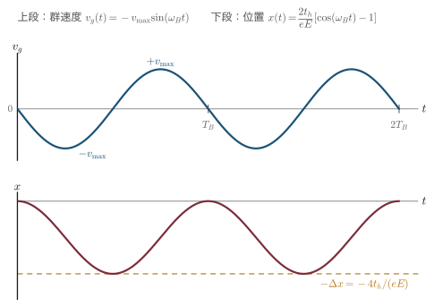

付録C演習問題の解答
本書の各章末には，全部で 185問の演習問題がある．この付録は，そのすべてに解答を与えるものである．望月研究室の学生が，教員に聞ける時間が限られていても，自分ひとりで最後まで進めるようにするために用意した．
解答の方針は本文と同じである．すなわち，答えだけを書かない．出発点から結論までの式変形をすべて書く．固体物理学の演習でつまずくのは，たいてい最終的な答えを知らないからではなく，「その2行目から3行目へどうやって移ったのか」が分からないからである．だからこの付録は，答え合わせのためというより，自分の答案と突き合わせて，どこで道が分かれたかを見つけるためにある．
- まず自分で解く．解けなくてよい．15分考えて動かなければ，それは本文に戻る合図である．解答を先に見ると，読んだ瞬間は分かった気になり，一週間後には何も残らない．
- 詰まったら，解答ではなく本文の該当節へ戻る．各問の冒頭に，問題文と本文の該当箇所へのリンクを置いてある．
- 答えが合っていても解答を読む．答えが同じでも筋道が違うことがある．そこが理解の分かれ目である．逆に，本書と違う筋道で解けたなら，それは良い兆候である．
- 「補足」を飛ばさない．多くの問題には補足をつけ，学生がやりがちな誤り，別解，物理的な意味，実験との対応を書いた．問題そのものより，こちらのほうが役に立つことがある．
crystod-group で各自検算できる．ただし --product が返すのは完全直積であって対称積ではないことに注意すること（第10章の Jahn–Teller の議論で効いてくる）．誤りを見つけたら：この解答集は複数回の検証を経ているが，誤りが残っている可能性は常にある．おかしいと思ったら，鵜呑みにせず本文と自分の計算に当たり，望月まで知らせてほしい．それは君が正しく読んだということである．
第1章 結晶構造の表し方 — conventional cell と primitive cell
演習1.1 bccのWigner–Seitz胞
問題：体心立方格子のWigner–Seitz胞（切頂八面体）について，(1) 最近接・第2近接までの距離，(2) それぞれに由来する面の数，(3) 体積が $a^3/2$ であることを示す． 問題文全文
解答
(1) 立方体の一辺を $a$ とし，注目する格子点を体心 $\left(\frac a2,\frac a2,\frac a2\right)$ にとる．座標原点をこの点に移して考えると，bcc格子の格子点は
$$ \TT = n_1\aa_1 + n_2\aa_2 + n_3\aa_3 ,\qquad \aa_1=\frac a2(-1,1,1),\quad \aa_2=\frac a2(1,-1,1),\quad \aa_3=\frac a2(1,1,-1) $$で尽くされる（1.4節のbccの例）．これらの整数結合を短いものから拾えばよい．
最近接．$\aa_1,\aa_2,\aa_3$ そのものと，$\aa_1+\aa_2+\aa_3=\frac a2(1,1,1)$，およびそれらの符号反転を集めると
$$ \TT = \frac a2(\pm1,\pm1,\pm1) \qquad (\text{符号は独立に選ぶ：}2^3=8\ \text{個}) $$が得られる．これは体心から立方体の8つの頂点へ向かうベクトルにほかならない．長さは
$$ \abs{\TT} = \frac a2\sqrt{1^2+1^2+1^2} = \frac{\sqrt3}{2}\,a \approx 0.866\,a $$すなわち最近接は8個，距離 $\frac{\sqrt3}{2}a$ である（これは立方体の体対角線 $\sqrt3 a$ のちょうど半分である）．
第2近接．次に短い格子並進は，$\aa_2+\aa_3=(a,0,0)$，$\aa_1+\aa_3=(0,a,0)$，$\aa_1+\aa_2=(0,0,a)$ とその符号反転である：
$$ \TT = (\pm a,0,0),\ (0,\pm a,0),\ (0,0,\pm a)\qquad(6\ \text{個}),\qquad \abs{\TT}=a $$これは体心から隣のセルの体心へ向かうベクトルである．$\frac{\sqrt3}{2}a\approx0.866a \lt a$ なので，確かにこちらが第2近接であり，第2近接は6個，距離 $a$ である．
(2) Wigner–Seitz胞は，中心の格子点と他の格子点を結ぶ線分の垂直二等分面で囲まれた領域である（1.5節）．格子点 $\TT$ に対する垂直二等分面の式は，$\rr$ が $\bm{0}$ と $\TT$ から等距離であるという条件 $\abs{\rr}^2=\abs{\rr-\TT}^2$ から
$$ \rr\cdot\TT = \frac{1}{2}\abs{\TT}^2 $$と書ける．これを最近接・第2近接それぞれに当てはめる．
最近接（8個）．$\TT=\frac a2(1,1,1)$ のとき $\abs{\TT}^2=\frac34a^2$ だから
$$ \frac a2(x+y+z) = \frac{3a^2}{8} \quad\Longrightarrow\quad x+y+z = \frac{3a}{4} $$符号の8通りをすべて集めると，条件は $\abs{x}+\abs{y}+\abs{z}\le \frac{3a}{4}$ となる．これは正八面体である．
第2近接（6個）．$\TT=(a,0,0)$ のとき $\abs{\TT}^2=a^2$ だから
$$ ax = \frac{a^2}{2}\quad\Longrightarrow\quad x=\frac a2 $$6通りを集めると $\abs{x}\le\frac a2,\ \abs{y}\le\frac a2,\ \abs{z}\le\frac a2$，すなわち一辺 $a$ の立方体である．
第3近接以降は面を作らない．第3近接は $\TT=\frac a2(\pm2,\pm2,0)$ 型の12個で，長さ $\sqrt2\,a$ である．その垂直二等分面は $x+y=a$ 型になるが，上で得た正八面体の内部では
$$ \abs{x}+\abs{y}\ \le\ \abs{x}+\abs{y}+\abs{z}\ \le\ \frac{3a}{4}\ \lt\ a $$なので，この面は領域とまったく交わらない．より遠い格子点についても同様である．したがってWS胞を切り出すのは最近接と第2近接だけであり，
$$ \text{WS胞} = \left\{\rr \ \middle|\ \abs{x}+\abs{y}+\abs{z}\le\frac{3a}{4},\ \ \abs{x},\abs{y},\abs{z}\le\frac a2\right\} $$となる．正八面体の6つの頂点 $\left(\pm\frac{3a}{4},0,0\right)$ 型は $\abs{x}\le\frac a2$ を破っているので切り落とされ，そこに正方形の面が現れる．結局
| 由来 | 格子点の数 | 距離 | 面の形 | 面の数 |
|---|---|---|---|---|
| 最近接 $\langle111\rangle$ | 8 | $\frac{\sqrt3}{2}a$ | 正六角形 | 8 |
| 第2近接 $\langle100\rangle$ | 6 | $a$ | 正方形 | 6 |
| 合計 | 14 | |||
すなわち最近接由来が8面（六角形），第2近接由来が6面（正方形），合計14面である．これが切頂八面体（truncated octahedron）である．
(3) Wigner–Seitz胞は，定義から「他のどの格子点よりも中心の格子点に近い点の集合」であり，格子点をちょうど1個だけ含む．したがってWS胞は primitive cell の一種である．一方 1.3.2節で証明したように，primitive cell の体積は取り方によらず一意に決まる．よって
$$ V_{\text{WS}} = V_{\text{p}} $$である．そして $V_{\text{p}}$ は 1.4.1節のbccの例ですでに計算されている：
$$ V_{\text{p}} = \abs{\aa_1\cdot(\aa_2\times\aa_3)} = \frac{a^3}{8}\abs{\det\begin{pmatrix}-1&1&1\\1&-1&1\\1&1&-1\end{pmatrix}} = \frac{a^3}{8}\times 4 = \frac{a^3}{2} $$したがって $V_{\text{WS}} = a^3/2$ である．同じことは，conventional cell（体積 $a^3$）が格子点を $8\times\frac18+1=2$ 個含むことから $V_{\text{p}}=a^3/n_{\text{lp}}=a^3/2$ としても言える．∎
補足1 体積を切頂八面体の幾何から直接出す
(3) は「primitive cell の体積は一意」という定理を使う模範解答だが，形が分かっているのだから直接積分してもよい．よい検算になる．
正八面体 $\abs{x}+\abs{y}+\abs{z}\le s$（$s=\frac{3a}{4}$）の体積は $\frac43 s^3 = \frac43\cdot\frac{27a^3}{64} = \frac{9a^3}{16}$ である．ここから6つの角を $\abs{x}\le\frac a2$ 等で切り落とす．$x\gt\frac a2$ の部分の断面は $\abs{y}+\abs{z}\le s-x$ という対角線 $2(s-x)$ の正方形で，面積は $2(s-x)^2$ だから
$$ \int_{a/2}^{3a/4} 2(s-x)^2\,\dd x = \left[-\frac23(s-x)^3\right]_{a/2}^{3a/4} = \frac23\left(\frac a4\right)^3 = \frac{a^3}{96} $$6箇所で $6\times\frac{a^3}{96}=\frac{a^3}{16}$．よって
$$ V = \frac{9a^3}{16} - \frac{a^3}{16} = \frac{8a^3}{16} = \frac{a^3}{2} $$で一致する．なお頂点は $\left(0,\pm\frac a4,\pm\frac a2\right)$ の全置換（24個），辺は36本，面は14枚で，Euler の多面体公式 $24-36+14=2$ を満たす．辺の長さはどれも $\frac{\sqrt2}{4}a$ で，六角面は正六角形である（切頂八面体は準正多面体の一つである）．
面の面積は正方形が $\left(\frac{\sqrt2}{4}a\right)^2=\frac{a^2}{8}$，正六角形が $\frac{3\sqrt3}{2}\left(\frac{\sqrt2}{4}a\right)^2=\frac{3\sqrt3}{16}a^2$ であり，中心から各面までの距離（＝近接距離の半分）を高さとする錐に分割すると
$$ V = 6\cdot\frac13\cdot\frac a2\cdot\frac{a^2}{8} \;+\; 8\cdot\frac13\cdot\frac{\sqrt3\,a}{4}\cdot\frac{3\sqrt3}{16}a^2 = \frac{a^3}{8} + \frac{3a^3}{8} = \frac{a^3}{2} $$となり，やはり一致する．
補足2 この形はどこかで見たことがあるはずである
切頂八面体は，バンド図を描くときに必ず出てくる形である．第3章で学ぶように，bcc格子の逆格子はfcc格子であり，fcc格子の逆格子はbcc格子である．第1Brillouin域は逆格子のWS胞なので，
- fcc結晶の第1Brillouin域＝bcc（逆格子）のWS胞＝切頂八面体（本問の形）
- bcc結晶の第1Brillouin域＝fcc（逆格子）のWS胞＝菱形12面体
である．fccのBrillouin域で $L$ 点が六角面の中心，$X$ 点が正方面の中心と呼ばれるのは，本問の8面と6面がそのまま対応しているからである．「実空間のbccのWS胞」と「逆空間のfccのBrillouin域」が同じ形になるのは偶然ではなく，両者が同じbcc型の点集合のWS胞だからである．
よくある誤り：「bccだから実空間でも菱形12面体だろう」と取り違える答案が多い．どちらの格子のWS胞を作っているのかを毎回確かめること．
演習1.2 CsCl型のBravais格子
問題：CsCl型構造（$Pm\bar{3}m$）について，(1) 体心は格子点か，(2) Bravais格子と primitive cell 内の原子数，(3) CsとClを同一元素にしたらどうなるか． 問題文全文
解答
(1) 格子点の定義は「周囲の環境が，種類・距離・向きまで含めて完全に同一な点」であった（1.2.2節）．CsCl型では，一辺 $a$ の立方体の頂点にCs，体心 $\left(\frac12,\frac12,\frac12\right)$ にClが座る．それぞれの環境を書き出すと，
| 着目点 | 最近接 | 距離 | 第2近接 | 距離 |
|---|---|---|---|---|
| 頂点（Cs） | Cl 8個 | $\frac{\sqrt3}{2}a$ | Cs 6個 | $a$ |
| 体心（Cl） | Cs 8個 | $\frac{\sqrt3}{2}a$ | Cl 6個 | $a$ |
距離も配位数も同じだが，原子の種類が違う．したがって両者の環境は同一ではなく，体心は格子点ではない．
同じことを並進で言い換えるとより明快である．もし体心が格子点なら，$\TT=\frac a2(1,1,1)$ は格子並進ベクトルであり，結晶は $\rr\to\rr+\TT$ で不変でなければならない．ところがこの並進はCsの位置をClの位置に写すので，$\mathrm{Cs}\neq\mathrm{Cl}$ である限り原子配置は不変にならない．よって $\frac a2(1,1,1)$ は格子並進ではなく，体心は格子点ではない．
(2) 格子点は頂点だけなので，Bravais格子は単純立方（cubic-$P$，格子定数 $a$）である．空間群記号 $Pm\bar{3}m$ の先頭が $I$ ではなく $P$ であることが，まさにこれを表している．
このとき conventional cell と primitive cell は一致し（$n_{\text{lp}}=1$，$\det P=1$，$V_{\text{p}}=a^3$），その中の原子数は
$$ \mathrm{Cs}:\ 8\times\frac18 = 1\ \text{個},\qquad \mathrm{Cl}:\ 1\times 1 = 1\ \text{個} $$すなわち primitive cell には原子が2個（Cs 1個＋Cl 1個）入る．化学式単位で数えれば $Z=1$ である．基底は
$$ \text{基底} = \bigl\{\ \mathrm{Cs}\ \text{at}\ (0,0,0),\quad \mathrm{Cl}\ \text{at}\ \left(\tfrac12,\tfrac12,\tfrac12\right)\ \bigr\} $$と書ける．
(3) CsとClを同じ元素 $X$ に置き換えると，(1) で環境の違いを生んでいた唯一の理由（原子種の違い）が消える．すると頂点と体心はどちらも「最近接に $X$ が8個，距離 $\frac{\sqrt3}{2}a$，第2近接に $X$ が6個，距離 $a$」という完全に同一の環境になり，$\TT=\frac a2(1,1,1)$ が格子並進ベクトルになる．したがって体心も格子点になり，Bravais格子は体心立方（cubic-$I$，bcc）に変わる．
その帰結として，
- conventional cell（立方体，一辺 $a$）が含む格子点は $8\times\frac18+1=2$ 個に増える
- primitive cell の体積は $a^3$ から $a^3/2$ に半減し（$\abs{\det P}=1/2$），中の原子は2個から1個に減る
- 空間群は $Pm\bar{3}m$ から $Im\bar{3}m$ に上がる（点群 $m\bar{3}m$ は変わらないが，並進の分だけ空間群としては大きくなる）
これがまさに $\alpha$-Fe やW，アルカリ金属のbcc構造である．∎
補足1 実在する「CsCl型 ↔ bcc」の行き来 — 規則–不規則転移
(3) は思考実験ではなく，実際に起こる現象である．$\beta$ 黄銅（CuZn）は低温では Cu が頂点，Zn が体心に規則正しく並んだ CsCl 型（B2構造，$Pm\bar{3}m$）だが，約 $735\ \mathrm{K}$ 以上では Cu と Zn がランダムに入れ替わり，各サイトが平均的に「Cu と Zn の中間の何か」になる．すると頂点と体心が統計的に区別できなくなり，Bravais格子は cubic-$P$ から cubic-$I$ に変わって $Im\bar{3}m$ になる．これを規則–不規則転移という．結晶構造そのものは原子の位置としてはほとんど動いていないのに，「格子点かどうか」の判定だけが変わって対称性が上がるのである．
補足2 この違いはX線回折にそのまま出る
第3章で扱う構造因子を先取りすると，CsCl型の conventional cell に対して
$$ F_{hkl} = f_{\mathrm{Cs}} + f_{\mathrm{Cl}}\,e^{i\pi(h+k+l)} = \begin{cases} f_{\mathrm{Cs}} + f_{\mathrm{Cl}} & (h+k+l\ \text{が偶数})\\[2pt] f_{\mathrm{Cs}} - f_{\mathrm{Cl}} & (h+k+l\ \text{が奇数}) \end{cases} $$となる．$h+k+l$ が奇数のピーク（$(100)$，$(111)$ など）は超格子反射と呼ばれ，2種類の原子の散乱能の差 $f_{\mathrm{Cs}}-f_{\mathrm{Cl}}$ に比例する．(3) のように両者を同じ元素にすると $f_{\mathrm{Cs}}=f_{\mathrm{Cl}}$ となってこの反射は完全に消え，「bccでは $h+k+l$ が奇数の反射は現れない」という消滅則になる．格子点かどうかという(1)の議論が，そのまま回折パターンの見え方として観測できるわけである．
よくある誤り：「体心に原子があるから bcc」と答えてしまうこと．bcc かどうかを決めるのは原子がどこにあるかではなく，体心と頂点が並進で移り合うかどうかである．同じ理由で，岩塩型NaClも「単純立方に見える配置」だがBravais格子はfccである（1.7節）．
演習1.3 充填率の計算
問題：剛体球模型で，単純立方・体心立方・面心立方・ダイヤモンド構造の充填率（APF）を求めよ． 問題文全文
解答
方針は共通である．conventional cell（一辺 $a$ の立方体，体積 $a^3$）をとり，
- 球がどの方向で接するかを見つけ，その条件から球の半径 $r$ を $a$ で表す
- 胞内の原子数 $N$ を数える（1.6節の規則）
- $\displaystyle \mathrm{APF} = \frac{N\cdot\frac43\pi r^3}{a^3}$ を計算する
手順1がすべてである．「最近接原子間距離 $=2r$」を満たす方向を探せばよい．
(1) 単純立方（sc）．原子は頂点のみ．最近接は立方体の稜に沿った $\langle100\rangle$ 方向の隣の頂点で，距離は $a$ である．よって
$$ 2r = a \quad\Longrightarrow\quad r = \frac a2 ,\qquad N = 8\times\frac18 = 1 $$ $$ \mathrm{APF} = \frac{1\cdot\frac43\pi\left(\frac a2\right)^3}{a^3} = \frac{\frac43\pi\cdot\frac{a^3}{8}}{a^3} = \frac{\pi}{6} \approx 0.524 $$(2) 体心立方（bcc）．頂点の原子と体心の原子は体対角線 $\langle111\rangle$ 上に並ぶ．体対角線の長さは $\sqrt{a^2+a^2+a^2}=\sqrt3\,a$ で，その上に「頂点の球の半径＋体心の球の直径＋頂点の球の半径」が並ぶから
$$ \sqrt3\,a = 4r \quad\Longrightarrow\quad r = \frac{\sqrt3}{4}a ,\qquad N = 8\times\frac18 + 1 = 2 $$念のため，頂点どうし（距離 $a$）が重なっていないことを確かめる：$2r = \frac{\sqrt3}{2}a \approx 0.866a \lt a$ なので問題ない．したがって
$$ \mathrm{APF} = \frac{2\cdot\frac43\pi\left(\frac{\sqrt3}{4}a\right)^3}{a^3} = \frac{\frac83\pi\cdot\frac{3\sqrt3}{64}a^3}{a^3} = \frac{8\cdot 3\sqrt3}{3\cdot 64}\pi = \frac{\sqrt3\,\pi}{8} \approx 0.680 $$(3) 面心立方（fcc）．頂点の原子と面心の原子は面対角線 $\langle110\rangle$ 上に並ぶ．面対角線の長さは $\sqrt2\,a$ で，その上に4つの半径が並ぶから
$$ \sqrt2\,a = 4r \quad\Longrightarrow\quad r = \frac{\sqrt2}{4}a ,\qquad N = 8\times\frac18 + 6\times\frac12 = 4 $$ $$ \mathrm{APF} = \frac{4\cdot\frac43\pi\left(\frac{\sqrt2}{4}a\right)^3}{a^3} = \frac{\frac{16}{3}\pi\cdot\frac{2\sqrt2}{64}a^3}{a^3} = \frac{16\cdot 2\sqrt2}{3\cdot 64}\pi = \frac{\sqrt2\,\pi}{6} \approx 0.740 $$(4) ダイヤモンド構造．fcc格子に，$(0,0,0)$ と $\left(\frac14,\frac14,\frac14\right)$ の炭素2個を基底として置いたものである（1.7.1節の表1.2）．最近接はこの2個の間，すなわち体対角線 $\langle111\rangle$ の $\frac14$ の長さで
$$ d = \abs{\left(\tfrac a4,\tfrac a4,\tfrac a4\right)} = \frac{\sqrt3}{4}a $$である．ここで球が接するので
$$ 2r = \frac{\sqrt3}{4}a \quad\Longrightarrow\quad r = \frac{\sqrt3}{8}a $$これが本当に最近接かを確かめておく．同じfcc副格子内の最近接距離は (3) より $\frac{\sqrt2}{2}a\approx0.707a$ であり，$\frac{\sqrt3}{4}a\approx0.433a$ のほうが短い．よって接するのは異なる副格子の間であり，同一副格子内の球は $2r=0.433a \lt 0.707a$ なので重ならない．
原子数は，fcc位置に4個＋内部の $\left(\frac14,\frac14,\frac14\right)$ 型に4個で $N=8$（1.6節の例題1.3(f)）．よって
$$ \mathrm{APF} = \frac{8\cdot\frac43\pi\left(\frac{\sqrt3}{8}a\right)^3}{a^3} = \frac{\frac{32}{3}\pi\cdot\frac{3\sqrt3}{512}a^3}{a^3} = \frac{32\cdot 3\sqrt3}{3\cdot 512}\pi = \frac{\sqrt3\,\pi}{16} \approx 0.340 $$以上をまとめる．
| 構造 | 接する方向 | $r$ | $N$ | 配位数 | APF | 数値 |
|---|---|---|---|---|---|---|
| 単純立方 | $\langle100\rangle$ | $a/2$ | 1 | 6 | $\pi/6$ | 0.5236 |
| 体心立方 | $\langle111\rangle$ | $\sqrt3a/4$ | 2 | 8 | $\sqrt3\pi/8$ | 0.6802 |
| 面心立方 | $\langle110\rangle$ | $\sqrt2a/4$ | 4 | 12 | $\sqrt2\pi/6$ | 0.7405 |
| ダイヤモンド | $\langle111\rangle$ の $1/4$ | $\sqrt3a/8$ | 8 | 4 | $\sqrt3\pi/16$ | 0.3401 |
ヒントの値 $\pi/6\approx0.524$，$\sqrt3\pi/8\approx0.680$，$\sqrt2\pi/6\approx0.740$，$\sqrt3\pi/16\approx0.340$ とすべて一致した．∎
補足1 APFは配位数で決まる
表C.3を配位数の順に並べ替えると，APFが単調に増えていることが分かる．
$$ \underbrace{4}_{0.340} \ \lt\ \underbrace{6}_{0.524} \ \lt\ \underbrace{8}_{0.680} \ \lt\ \underbrace{12}_{0.740} $$剛体球にとっては「隣をたくさん持つほど詰まっている」という当たり前の話だが，逆に言えばダイヤモンド構造がスカスカなのは配位数が4しかないからである．なぜ配位数4で我慢するのかというと，炭素の $sp^3$ 混成軌道が正四面体方向の共有結合を作るからで，これは剛体球模型の外にある事情である．金属結合（方向性がない）は詰め込みを最大にする方向に働き，共有結合（方向性がある）は結合角を優先する．APFの表は，結合の性質の違いをそのまま映している．
なお，fccと六方最密構造（hcp）はどちらも $\sqrt2\pi/6\approx0.7405$ で等しく，これは同じ大きさの球を詰める最大値である（Kepler 予想，1998年に証明された）．
補足2 よくある誤りと，primitive cell を使う別解
誤り1：bccで「頂点どうしが接する」と思って $a=2r$ としてしまう．bccでは体心の球が割り込んでいるので，接触は体対角線方向である．接する方向を間違えるとAPFが $\pi/6\times2=1.047\gt1$ という不可能な値になり，すぐに気づけるはずである．
誤り2：fccで「面対角線 $=2r$」としてしまう．面対角線上には頂点・面心・頂点と3個の球の中心が並ぶので，長さは $4r$ であって $2r$ ではない．bccの体対角線も同様に $4r$ である．
誤り3：ダイヤモンドで原子数を4としてしまう．fcc格子の格子点は4個だが，基底が2原子なので原子は8個である．
別解（primitive cell で計算する）．APFは体積比なのでどの胞で計算しても同じである．bccなら primitive cell の体積は $a^3/2$ で中の原子は1個だから
$$ \mathrm{APF} = \frac{1\cdot\frac43\pi\left(\frac{\sqrt3}{4}a\right)^3}{a^3/2} = \frac{2\cdot\frac43\pi\cdot\frac{3\sqrt3}{64}a^3}{a^3} = \frac{\sqrt3\,\pi}{8} $$で同じ値になる．ダイヤモンドなら $a^3/4$ の中に2原子で，やはり $\sqrt3\pi/16$ である．胞の取り方によらないことの確認になる．
演習1.4 変換行列を自分で作る
問題：体心正方格子（tetragonal-$I$，$a=b\neq c$）の conventional から primitive への変換行列 $P$ を作り，$\det P=1/2$ を確かめ，primitive の基本ベクトルの長さと角度を $a,c$ で表せ． 問題文全文
解答
変換行列を作る．conventional cell の基本ベクトルを
$$ \aa = (a,0,0),\qquad \bb = (0,a,0),\qquad \cc = (0,0,c) $$とする．体心正方格子の格子点は，頂点（$\aa,\bb,\cc$ の整数結合）に加えて，各セルの体心 $\frac12(\aa+\bb+\cc)$ である．primitive cell の基本ベクトルは，この体心格子点を生成できるように選ばなければならない．bccのときと同じ取り方をすれば
$$ \aa_1 = \frac12(-\aa+\bb+\cc) = \frac12(-a,\,a,\,c),\qquad \aa_2 = \frac12(\aa-\bb+\cc) = \frac12(a,\,-a,\,c),\qquad \aa_3 = \frac12(\aa+\bb-\cc) = \frac12(a,\,a,\,-c) $$である（ヒントの $\aa_1=\frac12(-a,a,c)$ と一致する）．行列で書くと
$$ \begin{pmatrix}\aa_1\\ \aa_2\\ \aa_3\end{pmatrix} = P \begin{pmatrix}\aa\\ \bb\\ \cc\end{pmatrix}, \qquad P = \frac12\begin{pmatrix}-1&1&1\\ 1&-1&1\\ 1&1&-1\end{pmatrix} $$となる．$P$ は立方晶の cubic-$I$ の場合（表1.1）とまったく同じ形である．これは当然で，$P$ は「どの格子点を余分に持っているか」だけで決まり，軸の長さ $a,c$ には依らないからである．
本当に格子を生成するかの確認．逆向きに解くと
$$ \aa_2+\aa_3 = (a,0,0) = \aa,\qquad \aa_1+\aa_3 = (0,a,0) = \bb,\qquad \aa_1+\aa_2 = (0,0,c) = \cc $$ $$ \aa_1+\aa_2+\aa_3 = \frac12(a,a,c) = \frac12(\aa+\bb+\cc)\quad(\text{体心}) $$となり，conventional の3本も体心も整数係数で作れている．すなわち
$$ P^{-1} = \begin{pmatrix}0&1&1\\ 1&0&1\\ 1&1&0\end{pmatrix} $$は整数行列であり，$\aa_1,\aa_2,\aa_3$ は確かに基本並進ベクトルの組である．
行列式．$\frac12$ が3つの行から出るので $\left(\frac12\right)^3=\frac18$ が前に出て，
$$ \det P = \frac18 \det\begin{pmatrix}-1&1&1\\ 1&-1&1\\ 1&1&-1\end{pmatrix} $$第1行で展開すると
$$ \det = (-1)\bigl[(-1)(-1)-1\cdot1\bigr] - 1\bigl[1\cdot(-1)-1\cdot1\bigr] + 1\bigl[1\cdot1-(-1)\cdot1\bigr] = (-1)\cdot 0 - 1\cdot(-2) + 1\cdot 2 = 4 $$ $$ \therefore\quad \det P = \frac18\times 4 = \frac12 $$これは $\abs{\det P} = V_{\text{p}}/V_{\text{conv}} = 1/n_{\text{lp}}$ と整合している．実際 conventional cell の格子点は頂点 $8\times\frac18$ ＋体心 $1$ で $n_{\text{lp}}=2$ であり，$V_{\text{p}} = \frac12 a^2c$ である．$\det P^{-1}=2$ となることも上の $P^{-1}$ から確かめられる．
長さ．3本とも成分の絶対値が $\left(\frac a2,\frac a2,\frac c2\right)$ の並べ替えと符号違いなので，長さは等しい：
$$ \abs{\aa_1} = \sqrt{\left(\frac a2\right)^2+\left(\frac a2\right)^2+\left(\frac c2\right)^2} = \frac12\sqrt{2a^2+c^2} $$ $$ \abs{\aa_1}=\abs{\aa_2}=\abs{\aa_3}=\frac12\sqrt{2a^2+c^2} $$ヒントの値と一致する．
角度．内積を計算する．
$$ \aa_1\cdot\aa_2 = \frac14\bigl[(-a)(a) + (a)(-a) + c\cdot c\bigr] = \frac14\left(c^2-2a^2\right) $$ $$ \aa_1\cdot\aa_3 = \frac14\bigl[(-a)(a) + (a)(a) + c(-c)\bigr] = -\frac{c^2}{4} $$ $$ \aa_2\cdot\aa_3 = \frac14\bigl[(a)(a) + (-a)(a) + c(-c)\bigr] = -\frac{c^2}{4} $$長さの2乗は $\abs{\aa_i}^2 = \frac14(2a^2+c^2)$ だから，$\theta_{ij}$ を $\aa_i$ と $\aa_j$ のなす角として
$$ \cos\theta_{12} = \frac{\frac14(c^2-2a^2)}{\frac14(2a^2+c^2)} = \frac{c^2-2a^2}{c^2+2a^2}, \qquad \cos\theta_{13} = \cos\theta_{23} = \frac{-\frac{c^2}{4}}{\frac14(2a^2+c^2)} = -\frac{c^2}{2a^2+c^2} $$$x \equiv c/a$ とおけば，分母分子を $a^2$ で割って
$$ \cos\theta_{12} = \frac{x^2-2}{x^2+2}, \qquad \cos\theta_{13}=\cos\theta_{23} = -\frac{x^2}{x^2+2} $$となる．確かに角度は $c/a$ だけに依存する．3本の長さは等しいが，角度は2種類あり（$\theta_{12}$ が1つ，$\theta_{13}=\theta_{23}$ が2つ），一般には菱面体ではない．これは，正方晶の4回軸が $\cc$ 方向にしかなく，$\aa_3$ だけが他の2本と立場が違うことを反映している．
数値例を挙げる．
| $c/a$ | $\abs{\aa_i}/a$ | $\theta_{12}$ | $\theta_{13}=\theta_{23}$ | 備考 |
|---|---|---|---|---|
| $1$ | $0.8660$ | $109.47^\circ$ | $109.47^\circ$ | bcc（菱面体） |
| $1.5$ | $1.0308$ | $86.63^\circ$ | $121.97^\circ$ | 一般の tetragonal-$I$ |
| $\sqrt2$ | $1.0000$ | $90^\circ$ | $120^\circ$ | fcc |
$c=a$ では $\cos\theta_{12}=\cos\theta_{13}=-\frac13$ となり，1.4.1節のbccの結果 $109.47^\circ$ が正しく再現される．∎
補足1 $c/a=\sqrt2$ で fcc になる — Bain 変形
表C.4で $c/a=\sqrt2$ の行に「fcc」と書いた理由を説明する．体心正方格子は $c/a$ を連続的に変えられるが，2つの特別な値では立方晶に化ける．
- $c/a=1$：conventional cell が立方体になり，そのまま bcc である．
- $c/a=\sqrt2$：fcc になる．
後者を確かめよう．$c=\sqrt2\,a$ とすると primitive ベクトルの長さは
$$ \abs{\aa_i} = \frac12\sqrt{2a^2+2a^2} = a $$で，primitive cell の体積は
$$ V_{\text{p}} = \frac12 a^2 c = \frac{\sqrt2}{2}a^3 $$である．一方，一辺 $A$ の fcc の primitive cell の体積は $A^3/4$，基本ベクトルの長さは $A/\sqrt2$ だから，$A=\sqrt2\,a$ とおけば
$$ \frac{A^3}{4} = \frac{2\sqrt2\,a^3}{4} = \frac{\sqrt2}{2}a^3,\qquad \frac{A}{\sqrt2} = a $$と両方が一致する．つまり $c/a=\sqrt2$ の体心正方格子は，立方体の一辺を $\sqrt2\,a$ にとって見直せば面心立方格子そのものである（fccの立方体を $45^\circ$ 回した細い正方柱で描き直したものが，この体心正方セルである）．
この「$c/a$ を $1$ から $\sqrt2$ へ連続的に変えて bcc と fcc をつなぐ」経路を Bain 変形（Bain path）といい，鉄鋼のマルテンサイト変態を記述する古典的なモデルとして知られている．同じ Bravais 格子の族の中に，2つの立方晶が特別な点として埋まっているのである．
補足2 よくある誤り
誤り1：$P$ の行と列を取り違える．本書では式 $\left(\aa_1\ \aa_2\ \aa_3\right)^{\mathrm T} = P\left(\aa\ \bb\ \cc\right)^{\mathrm T}$ の形，すなわち行が primitive ベクトルの係数である（表1.1の見出しにも「行が $\aa_1,\aa_2,\aa_3$」と明記されている）．文献によっては転置の規約を使うので，$\det$ の値は同じでも成分の並びが変わりうる．
誤り2：「長さが3本とも等しいから菱面体である」と結論してしまう．菱面体は長さも角度も3つとも等しい必要がある．本問では $c\neq a$ かつ $c\neq\sqrt2 a$ のとき $\theta_{12}\neq\theta_{13}$ なので菱面体ではない．
誤り3：$\det P$ を $\abs{\det P}$ と区別せずに符号を落とす．ここでは $\det P=+\frac12$ だが，$\aa_1,\aa_2,\aa_3$ の順番を入れ替えれば符号は反転する．体積比に効くのは $\abs{\det P}$ のほうである．
演習1.5 Miller指数と面間隔
問題：立方晶（格子定数 $a$）で $d_{hkl}=a/\sqrt{h^2+k^2+l^2}$ となることを，$(hkl)$ 面の切片と点と平面の距離の公式から示せ． 問題文全文
解答
ステップ1：平面の方程式を作る．立方晶なので結晶軸 $\aa,\bb,\cc$ は互いに直交し長さがすべて $a$ である．そこで $\aa,\bb,\cc$ の向きをそのまま直交座標 $x,y,z$ の軸にとる．Miller指数の定義（1.8.1節）より，$(hkl)$ 面は3軸を格子定数を単位として $\frac1h,\frac1k,\frac1l$ で切る．長さの単位で書けば切片は
$$ \frac ah,\qquad \frac ak,\qquad \frac al $$である．切片形の平面の方程式（$x$ 切片 $p$，$y$ 切片 $q$，$z$ 切片 $r$ なら $\frac xp+\frac yq+\frac zr=1$）を使うと
$$ \frac{x}{a/h} + \frac{y}{a/k} + \frac{z}{a/l} = 1 $$両辺に $a$ を掛けて
$$ hx + ky + lz = a $$を得る．$h,k,l$ のどれかが $0$（軸に平行）でも，この形なら破綻しない点が便利である．
ステップ2：原点からの距離を求める．公式を思い出すのではなく，その場で作る．$\bm{n}=(h,k,l)$ とおくと平面の式は $\rr\cdot\bm{n}=a$ である．両辺を $\abs{\bm{n}}$ で割ると
$$ \rr\cdot\hat{\bm{n}} = \frac{a}{\abs{\bm{n}}}, \qquad \hat{\bm{n}} \equiv \frac{\bm{n}}{\abs{\bm{n}}} $$左辺は，平面上の点 $\rr$ の $\hat{\bm{n}}$ 方向への射影の長さである．それが平面上のすべての点で同じ値 $a/\abs{\bm{n}}$ になる，というのがこの式の意味である．射影が一定なら，原点から平面へ下ろした垂線の足までの距離がその値であるから
$$ D = \frac{a}{\abs{\bm{n}}} = \frac{a}{\sqrt{h^2+k^2+l^2}} $$が原点から $(hkl)$ 面までの距離である．
ステップ3：これが「隣り合う面の間隔」であることを示す．ここが本問の核心で，飛ばしてはいけない．面間隔 $d_{hkl}$ とは，平行な格子面の族の隣り合う2枚の間隔のことである．$D$ を $d_{hkl}$ と呼んでよいのは，原点を通る面と，いま考えた面との間に，別の格子面が挟まっていない場合に限る．
まず $h,k,l$ は互いに素とする（Miller指数の定義の手順2で約分してあるので，そうなっている）．格子点は $\rr = (n_1 a,\, n_2 a,\, n_3 a)$（$n_i$ は整数）と書けるとする．つまりここで考えているのは単純立方格子である（fccやbccのように conventional cell の内部にも格子点を持つ場合については補足2の誤り3で述べる）．これを平面の式の左辺に代入すると
$$ h(n_1a) + k(n_2a) + l(n_3a) = a\,(hn_1+kn_2+ln_3) \equiv a\,m ,\qquad m\in\mathbb{Z} $$となる．つまりすべての格子点は $hx+ky+lz = ma$（$m$ は整数）のいずれかの平面上に載る．逆に，$h,k,l$ が互いに素であれば，Bézout の定理により任意の整数 $m$ に対して $hn_1+kn_2+ln_3=m$ を満たす整数 $(n_1,n_2,n_3)$ が存在するので，どの $m$ の平面にも格子点が実際に載っている．したがってこの等間隔な平面の族が格子面の族そのものであり，$m$ が1つ飛ぶごとに1枚ずつ進む．
ステップ2の $D$ は $m=0$（原点を通る面）と $m=1$ の面の距離だから，これがまさに隣り合う面の間隔である：
$$ d_{hkl} = \frac{a}{\sqrt{h^2+k^2+l^2}} $$一般に $m$ 番目の面までの距離は $ma/\sqrt{h^2+k^2+l^2} = m\,d_{hkl}$ となり，族が等間隔であることも同時に示された．∎
確認．$(100)$ なら $d = a/\sqrt{1}=a$ で，立方体の稜の長さに等しい．$(110)$ なら $d=a/\sqrt2$，$(111)$ なら $d=a/\sqrt3$ である．また，回折で使うLaue指数 $(200)$ にそのまま代入すると $d = a/\sqrt{4}=a/2$ となり，「$(200)$ は $(100)$ と平行で面間隔が半分」という1.8.1節の例題1.5の記述と一致する．約分しない指数を入れると自動的に $1/n$ 倍の面間隔が出てくるのは，ステップ3で $h,k,l$ が互いに素でない場合には「格子点の載らない面」が等間隔に挟まることに対応している．
補足1 直交晶への一般化と，立方晶に限る理由
同じ議論は，軸が直交していれば長さが違っていてもそのまま通る．斜方晶（$a\neq b\neq c$，すべて直交）では切片が $\frac ah,\frac bk,\frac cl$ なので平面の式は
$$ \frac hax + \frac kby + \frac lcz = 1 $$となり，$\bm{n}=\left(\frac ha,\frac kb,\frac lc\right)$ として原点からの距離は $1/\abs{\bm{n}}$ だから
$$ \frac{1}{d_{hkl}^2} = \frac{h^2}{a^2} + \frac{k^2}{b^2} + \frac{l^2}{c^2} $$が得られる．$a=b=c$ とおけば本問の結果に戻る．正方晶なら $\frac{1}{d^2}=\frac{h^2+k^2}{a^2}+\frac{l^2}{c^2}$ である．
しかし軸が直交していない結晶系（六方晶・単斜晶・三斜晶）では，「$\aa,\bb,\cc$ をそのまま直交座標にとる」というステップ1の前提が崩れるので，この計算は使えない．六方晶では
$$ \frac{1}{d_{hkl}^2} = \frac43\cdot\frac{h^2+hk+k^2}{a^2} + \frac{l^2}{c^2} $$のように交差項 $hk$ が現れる．結晶系ごとに公式を覚えるのは不毛で，第3章で学ぶ $d_{hkl}=2\pi/\abs{\GG_{hkl}}$ という逆格子の表式に $\GG_{hkl}=h\bb_1+k\bb_2+l\bb_3$ を代入すれば，どの結晶系でも同じ一行から自動的に出てくる．本問はその特別な場合を，逆格子を知らなくても確かめられるようにしたものである．
補足2 よくある誤り
誤り1：ステップ2で止めて「原点から平面までの距離＝面間隔」と書いてしまう．偶然一致するのだが，なぜ一致するのか（原点を通る面が同じ族の隣の格子面であること）を言わないと証明になっていない．採点で差がつくのはここである．
誤り2：立方晶以外に $d=a/\sqrt{h^2+k^2+l^2}$ を使ってしまう．$(hkl)$ 面の法線が $[hkl]$ 方向と一致するのは立方晶だけである（1.8.2節の注意）．
誤り3：本問の式に conventional cell の $a$ を代入した値を，そのままfccやbccの面間隔だと思ってしまう．ステップ3で格子点を $\rr=(n_1a,n_2a,n_3a)$ と置いたことからわかるように，この式が成り立つのは単純立方格子に対してである．たとえばfccの $(100)$ に代入すると $d=a$ が出るが，fccのBravais格子（cubic-$F$）は $\left(\frac12,\frac12,0\right)a$ 型の点も格子点として含むので，$x=a/2$ にも格子点の載る面があり，$[100]$ に垂直な格子面の実際の間隔は $a/2$ である．
この差を生んでいるのは基底ではなく面心（centering）である．面心の位置はfccのBravais格子点そのものであって（1.7節の表1.2），基底原子ではない．事実，CuやAlのような単元素fccでは基底は原子1個なので，格子面の間隔と原子面の間隔はどちらも $a/2$ で一致する．同じことを「単純立方格子＋ $\left(0,0,0\right),\left(\frac12,\frac12,0\right),\left(\frac12,0,\frac12\right),\left(0,\frac12,\frac12\right)$ の4点の基底」と読み替える立場に切り替えると，この4点が構造因子に効いて $h,k,l$ の偶奇が混ざる反射が消える．これが第3章の消滅則であり，$(100)$ が消えて $(200)$（$d=a/2$）が残ることと，いま求めた $a/2$ とが対応している．
第2章 7つの結晶系と14のBravais格子
演習2.1 hexagonal-$I$ が存在しないことを示す
問題：六方晶の conventional cell の中心 $\left(\frac12,\frac12,\frac12\right)$ に格子点を加えた配置が(1) 6回回転対称性を持たないこと，(2) どのBravais格子になるかを示す． 問題文全文
解答
(1) まず，六方晶の基本ベクトルを直交座標で書き下す．表2.3の hexagonal-$P$ にならって
$$ \aa = a(1,0,0),\qquad \bb = a\left(-\frac12,\frac{\sqrt3}{2},0\right),\qquad \cc = c(0,0,1) $$とする．$\aa\cdot\bb = -a^2/2$，$\abs{\aa}=\abs{\bb}=a$ だから $\cos\gamma = -1/2$，すなわち $\gamma = 120^\circ$ で，たしかに表2.1の六方晶の条件を満たしている．
次に，$c$ 軸まわりの $60^\circ$ 回転 $C_6$ が基本ベクトルをどう写すかを調べる．直交座標での回転行列は
$$ C_6 = \begin{pmatrix} \cos 60^\circ & -\sin 60^\circ & 0\\ \sin 60^\circ & \cos 60^\circ & 0\\ 0&0&1 \end{pmatrix} = \begin{pmatrix} \frac12 & -\frac{\sqrt3}{2} & 0\\[2pt] \frac{\sqrt3}{2} & \frac12 & 0\\[2pt] 0&0&1 \end{pmatrix} $$である．これを $\aa$ に作用させると
$$ C_6\aa = a\left(\frac12,\frac{\sqrt3}{2},0\right) $$となる．一方
$$ \aa+\bb = a(1,0,0) + a\left(-\frac12,\frac{\sqrt3}{2},0\right) = a\left(\frac12,\frac{\sqrt3}{2},0\right) $$だから，$C_6\aa = \aa+\bb$ である．同様に $\bb$ については
$$ C_6\bb = a\left(\frac12\cdot\left(-\frac12\right) - \frac{\sqrt3}{2}\cdot\frac{\sqrt3}{2},\ \ \frac{\sqrt3}{2}\cdot\left(-\frac12\right) + \frac12\cdot\frac{\sqrt3}{2},\ 0\right) = a(-1,0,0) = -\aa $$である．$\cc$ は回転軸に平行なので $C_6\cc = \cc$．まとめると，格子ベクトルの基底のうえで $C_6$ は
$$ \aa \longmapsto \aa+\bb,\qquad \bb \longmapsto -\aa,\qquad \cc \longmapsto \cc $$と作用する．係数がすべて整数なので，$C_6$ が hexagonal-$P$ 格子の対称操作であることも同時に確かめられた．
さて，追加した体心の点を
$$ \bm{t} = \frac12\aa + \frac12\bb + \frac12\cc $$とする．上の作用を使うと
$$ C_6\bm{t} = \frac12(\aa+\bb) + \frac12(-\aa) + \frac12\cc = \frac12\bb + \frac12\cc $$すなわち分率座標で $\left(0,\frac12,\frac12\right)$ に移る．ところが hexagonal-$I$ の格子点は，定義により
$$ \left\{(n_1,n_2,n_3)\right\} \cup \left\{\left(n_1+\tfrac12,\,n_2+\tfrac12,\,n_3+\tfrac12\right)\right\} \qquad (n_i \in \mathbb{Z}) $$の2種類しかない．$\left(0,\frac12,\frac12\right)$ は，前者との差 $\left(0,\frac12,\frac12\right)$ も後者との差 $\left(-\frac12,0,0\right)$ も整数ベクトルではないから，どちらにも属さない．したがって $C_6\bm{t}$ は格子点ではなく，$C_6$ はこの点集合を自分自身に写さない．よって体心を入れた六方格子は6回回転対称性を持たない．∎
ついでに3回回転 $C_3 = C_6^{\,2}$ も見ておく．$C_3: \aa\mapsto\bb,\ \bb\mapsto-\aa-\bb$ だから
$$ C_3\bm{t} = \frac12\bb + \frac12(-\aa-\bb) + \frac12\cc = -\frac12\aa + \frac12\cc $$で，これも格子点ではない．3回軸まで失われるので，得られる格子は六方晶でも三方晶でもありえない．
(2) ヒントに従って新しい軸を
$$ \bm{A}_1 = \aa+\bb,\qquad \bm{A}_2 = -\aa+\bb,\qquad \bm{A}_3 = \cc $$と取る．直交座標では
$$ \bm{A}_1 = a\left(\frac12,\frac{\sqrt3}{2},0\right),\qquad \bm{A}_2 = a\left(-\frac32,\frac{\sqrt3}{2},0\right),\qquad \bm{A}_3 = c(0,0,1) $$長さは
$$ \abs{\bm{A}_1} = a\sqrt{\frac14+\frac34} = a,\qquad \abs{\bm{A}_2} = a\sqrt{\frac94+\frac34} = a\sqrt3,\qquad \abs{\bm{A}_3} = c $$で，ヒントの値と一致する．直交性は $\abs{\aa}=\abs{\bb}$ から直ちに出る：
$$ \bm{A}_1\cdot\bm{A}_2 = (\aa+\bb)\cdot(-\aa+\bb) = -\abs{\aa}^2 + \abs{\bb}^2 = -a^2+a^2 = 0 $$$\bm{A}_3 = \cc$ は $\aa,\bb$ の張る面に垂直なので $\bm{A}_1\cdot\bm{A}_3 = \bm{A}_2\cdot\bm{A}_3 = 0$．つまり3本は互いに直交し，長さは $a$，$\sqrt3\,a$，$c$ と一般には相異なる．新しい胞は直方体である．
体積比を見る．変換行列は
$$ \begin{pmatrix}\bm{A}_1\\ \bm{A}_2\\ \bm{A}_3\end{pmatrix} = \begin{pmatrix}1&1&0\\-1&1&0\\0&0&1\end{pmatrix} \begin{pmatrix}\aa\\ \bb\\ \cc\end{pmatrix}, \qquad \det\begin{pmatrix}1&1&0\\-1&1&0\\0&0&1\end{pmatrix} = 1\cdot 1 - 1\cdot(-1) = 2 $$なので新しい胞は元の六方胞の2倍の体積である．元の六方胞には格子点が2個（$P$ の1個＋体心1個）あったから，新しい胞には $2\times2 = 4$ 個の格子点が入る．$F$ 中心（4個）の可能性が浮かぶ．
実際に位置を求める．$\bm{A}_1,\bm{A}_2$ の定義を逆に解くと
$$ \aa = \frac12(\bm{A}_1 - \bm{A}_2),\qquad \bb = \frac12(\bm{A}_1 + \bm{A}_2),\qquad \cc = \bm{A}_3 $$である．これを使って，新しい胞のなかにある格子点を新基底の分率座標で表す（整数分は落として $[0,1)$ に還元する）．
| 格子点（元の記述） | $\bm{A}_1,\bm{A}_2,\bm{A}_3$ による展開 | 新分率座標 |
|---|---|---|
| $\bm{0}$ | $\bm{0}$ | $(0,0,0)$ |
| $\aa$ | $\frac12\bm{A}_1 - \frac12\bm{A}_2$ | $\left(\frac12,\frac12,0\right)$ |
| $\bb$ | $\frac12\bm{A}_1 + \frac12\bm{A}_2$ | $\left(\frac12,\frac12,0\right)$ |
| $\bm{t} = \frac12(\aa+\bb+\cc)$ | $\frac12\bm{A}_1 + \frac12\bm{A}_3$ | $\left(\frac12,0,\frac12\right)$ |
| $\bm{t}+\aa$ | $\bm{A}_1 - \frac12\bm{A}_2 + \frac12\bm{A}_3$ | $\left(0,\frac12,\frac12\right)$ |
$\bm{t}$ の計算だけ書き下しておくと，
$$ \bm{t} = \frac12(\aa+\bb) + \frac12\cc = \frac12\left[\frac12(\bm{A}_1-\bm{A}_2) + \frac12(\bm{A}_1+\bm{A}_2)\right] + \frac12\bm{A}_3 = \frac12\bm{A}_1 + \frac12\bm{A}_3 $$である．$\bm{A}_2$ の項がきれいに消えることが要点である．
結局，独立な格子点は
$$ (0,0,0),\quad \left(\tfrac12,\tfrac12,0\right),\quad \left(\tfrac12,0,\tfrac12\right),\quad \left(0,\tfrac12,\tfrac12\right) $$の4個で，これは2.3節の表にある $F$ 中心そのものである．直交する3辺 $a,\sqrt3\,a,c$ の箱に $F$ 中心が乗っているのだから，得られる格子は直方晶（orthorhombic）の面心格子 orthorhombic-$F$ である．hexagonal-$I$ は新しいBravais格子を生まない．∎
補足：なぜ六方晶には $P$ しかないのか，一般論
同じことは $C$ 中心でも $F$ 中心でも起きる．たとえば $C$ 中心 $\left(\frac12,\frac12,0\right)$ を入れると，$C_6$ によって $\frac12(\aa+\bb)\mapsto\frac12(\aa+\bb)+\frac12(-\aa) = \frac12\bb$ に移り，やはり格子点ではない．このとき $\bm{v} = \frac12(\aa+\bb)$，$\bm{w} = \frac12(\aa-\bb)$ を取ると $\bm{v}\cdot\bm{w} = \frac14(a^2-b^2) = 0$，$\abs{\bm{v}} = a/2$，$\abs{\bm{w}} = \sqrt3\,a/2$ で，hexagonal-$C$ は辺の比 $1:\sqrt3:2c/a$ の orthorhombic-$P$ に帰着する．
背景にある一般則はこうである．中心並進ベクトルの集合は，格子並進を法として加法群をなし，かつ holohedry（ここでは $6/mmm$）で不変でなければならない．六方胞にも，この条件を満たす自明でない集合は存在する．たとえば $\left(0,0,\frac12\right)$，あるいは $H$ 中心と呼ばれる $\left(\frac13,\frac23,0\right)$, $\left(\frac23,\frac13,0\right)$ の2個組は，加法について閉じており（$H$ 中心なら $\left(\frac13,\frac23\right)+\left(\frac13,\frac23\right) = \left(\frac23,\frac43\right)\equiv\left(\frac23,\frac13\right)$），$6/mmm$ でも不変である．しかしそれらはいずれも，軸を取り直せばより小さい hexagonal-$P$ 格子に帰着してしまう．前者は $c\to c/2$ の六方 $P$ 格子，後者は $30^\circ$ 回した $a\to a/\sqrt3$ の六方 $P$ 格子である．つまり新しいBravais格子を生まない．一方 trigonal では6回軸がないぶん条件が緩み，$\left(\frac23,\frac13,\frac13\right)$, $\left(\frac13,\frac23,\frac23\right)$ という3個組が $\bar{3}m$ で不変に保たれる．これが第5の中心 $R$ が三方晶にだけ現れる理由である（2.6.1節）．
よくある誤り：「体心を入れても六角柱の形は変わらないのだから6回対称は残るはず」と考えてしまうこと．対称性を持つのは胞の外形ではなく格子点の集合である．外形は人間が引いた線にすぎない．
演習2.2 tetragonal-$F$ ＝ tetragonal-$I$
問題：正方晶に面心 $F$ を入れると，より小さい体心正方格子 $I$ になることを示せ． 問題文全文
解答
正方晶の conventional cell を直交座標で
$$ \aa = a(1,0,0),\qquad \bb = a(0,1,0),\qquad \cc = c(0,0,1) $$と取る．$F$ 中心を入れた格子点は，2.3節の表により
$$ (0,0,0),\quad \left(\tfrac12,\tfrac12,0\right),\quad \left(\tfrac12,0,\tfrac12\right),\quad \left(0,\tfrac12,\tfrac12\right) $$の4個である．
ステップ1：新しい軸を取る．2.4.1節（tetragonal-$C$ ＝ tetragonal-$P$）と同じく，底面の対角線方向に
$$ \aa' = \frac12(\aa+\bb),\qquad \bb' = \frac12(-\aa+\bb),\qquad \cc' = \cc $$と取り直す．
ステップ2：新しい胞が正方晶であることを確かめる．長さは
$$ \abs{\aa'} = \frac12\sqrt{a^2+a^2} = \frac{a}{\sqrt2}, \qquad \abs{\bb'} = \frac12\sqrt{a^2+a^2} = \frac{a}{\sqrt2}, \qquad \abs{\cc'} = c $$内積は $\aa\cdot\bb = 0$，$\abs{\aa} = \abs{\bb} = a$ を使って
$$ \aa'\cdot\bb' = \frac14(\aa+\bb)\cdot(-\aa+\bb) = \frac14\left(-a^2 + a^2\right) = 0 $$また $\cc' = \cc$ は $\aa,\bb$ に直交するから $\aa'\cdot\cc' = \bb'\cdot\cc' = 0$．したがって
$$ a' = b' = \frac{a}{\sqrt2} \neq c',\qquad \alpha'=\beta'=\gamma'=90^\circ $$で，表2.1の正方晶の条件を満たす．
ステップ3：体積比と格子点数．変換行列とその行列式は
$$ P = \begin{pmatrix}\frac12&\frac12&0\\[2pt]-\frac12&\frac12&0\\[2pt]0&0&1\end{pmatrix}, \qquad \det P = \frac12\cdot\frac12 - \frac12\cdot\left(-\frac12\right) = \frac14+\frac14 = \frac12 $$すなわち新しい胞の体積は元の半分である．実際 $\frac{a}{\sqrt2}\cdot\frac{a}{\sqrt2}\cdot c = \frac{a^2c}{2}$ で，元の $a^2c$ の半分になっている．元の $F$ 胞には格子点が4個あったから，新しい胞には $4\times\frac12 = 2$ 個入るはずである．2個ということは $I$ か $C$ である．
ステップ4：格子点の位置を新基底で書く．$\aa',\bb'$ の定義を逆に解くと
$$ \aa = \aa' - \bb',\qquad \bb = \aa' + \bb',\qquad \cc = \cc' $$（検算：$\aa'-\bb' = \frac12(\aa+\bb) - \frac12(-\aa+\bb) = \aa$．）これを使って面心の3点を書き換える．
まず $\left(\frac12,\frac12,0\right)$，すなわち $\frac12(\aa+\bb)$ は，定義そのものから
$$ \frac12(\aa+\bb) = \aa' $$である．新分率座標で $(1,0,0)$，つまり新しい胞の頂点に一致する（格子並進で $(0,0,0)$ と等価）．
次に $\left(\frac12,0,\frac12\right)$，すなわち $\frac12\aa + \frac12\cc$ は
$$ \frac12\aa+\frac12\cc = \frac12(\aa'-\bb') + \frac12\cc' \;\longrightarrow\; \left(\tfrac12,\,-\tfrac12,\,\tfrac12\right) \equiv \left(\tfrac12,\tfrac12,\tfrac12\right) \pmod 1 $$で，新しい胞の体心である．最後に $\left(0,\frac12,\frac12\right)$，すなわち $\frac12\bb+\frac12\cc$ は
$$ \frac12\bb+\frac12\cc = \frac12(\aa'+\bb') + \frac12\cc' \;\longrightarrow\; \left(\tfrac12,\tfrac12,\tfrac12\right) $$で，これも体心である（前の点と格子並進 $\bb'$ の分だけ違う同じ点）．
結論．新基底で見ると格子点は $(0,0,0)$ と $\left(\frac12,\frac12,\frac12\right)$ の2個のみ．すなわち，辺 $a/\sqrt2,\ a/\sqrt2,\ c$ の体心正方格子 tetragonal-$I$ である．$F$ 中心を入れた正方格子は新しいBravais格子ではないので，14個には数えない．∎
補足：なぜ $I$ のほうを代表に選ぶのか，そして Bain 経路
上の議論は逆向きにも読める．体心正方格子（辺 $a', a', c$）に同じ $45^\circ$ 回転の変換を施すと，今度は辺 $\sqrt2\,a', \sqrt2\,a', c$ の面心正方格子になる．つまり $F$ と $I$ は同じ格子の2通りの記述であって，どちらを conventional cell に選んでもよい．国際慣習が $I$ を採るのは，格子点数が2個で $F$（4個）より小さい胞だからである．表2.2で tetragonal の $F$ 欄に「× 重複→tetragonal-$I$」と書かれているのはこの意味である．
よくある誤り：「$a' = a/\sqrt2$ になってしまったから，これは元の正方晶とは別の結晶系ではないか」と迷うこと．結晶系を決めるのは対称操作であって格子定数の数値ではない（2.1節の注意）．$c/a'$ の値が何であれ，4回軸が $\cc$ 軸まわりに残っているかぎり正方晶である．
発展：この関係は金属の相転移で本質的な役割を果たす．cubic-$F$（fcc）は，$c/a' = a/(a/\sqrt2) = \sqrt2$ の tetragonal-$I$ とみなせる．一方 cubic-$I$（bcc）はそのまま $c/a' = 1$ の tetragonal-$I$ である．したがって $c/a'$ を $\sqrt2$ から $1$ まで連続的に縮めるだけで fcc は bcc に移れる．これがBain 経路で，鋼のマルテンサイト変態を記述する古典的なモデルになっている．正方晶の $F$ と $I$ が同一だという本問の結果は，この経路が存在するための前提である．
演習2.3 bccの逆格子はfccであることを予想する
問題：bccの基本並進ベクトルから逆格子基本ベクトル $\bb_i$ を計算し，それが格子定数 $4\pi/a$ のfccの基本ベクトルの形になることを確かめる． 問題文全文
解答
(1) bcc（cubic-$I$）の primitive 基本ベクトルとして，表2.3の $\frac{a}{2}(-1,1,1)$ 型の標準的な3本
$$ \aa_1 = \frac{a}{2}(-1,1,1),\qquad \aa_2 = \frac{a}{2}(1,-1,1),\qquad \aa_3 = \frac{a}{2}(1,1,-1) $$を取る（それぞれ立方体の中心から，隣り合う3つの頂点へ向かうベクトルである）．
ステップ1：primitive cell の体積を確かめる．まず外積を計算する．
$$ \aa_2\times\aa_3 = \frac{a^2}{4}\,(1,-1,1)\times(1,1,-1) $$成分ごとに書くと
$$ (1,-1,1)\times(1,1,-1) = \bigl((-1)(-1)-(1)(1),\ (1)(1)-(1)(-1),\ (1)(1)-(-1)(1)\bigr) = (0,\,2,\,2) $$したがって
$$ \aa_2\times\aa_3 = \frac{a^2}{4}(0,2,2) = \frac{a^2}{2}(0,1,1) $$これと $\aa_1$ の内積を取ると
$$ V_{\text{p}} = \aa_1\cdot(\aa_2\times\aa_3) = \frac{a}{2}(-1,1,1)\cdot\frac{a^2}{2}(0,1,1) = \frac{a^3}{4}\bigl(0+1+1\bigr) = \frac{a^3}{2} $$ヒントの $V_{\text{p}} = a^3/2$ が確かめられた．conventional cell（体積 $a^3$）に格子点が2個あることと整合している．
ステップ2：$\bb_1$．定義に代入する．
$$ \bb_1 = 2\pi\frac{\aa_2\times\aa_3}{V_{\text{p}}} = 2\pi\cdot\frac{\frac{a^2}{2}(0,1,1)}{\frac{a^3}{2}} = \frac{2\pi}{a}(0,1,1) $$ステップ3：$\bb_2$．同様に $\bb_2 = 2\pi(\aa_3\times\aa_1)/V_{\text{p}}$ を計算する．
$$ (1,1,-1)\times(-1,1,1) = \bigl((1)(1)-(-1)(1),\ (-1)(-1)-(1)(1),\ (1)(1)-(1)(-1)\bigr) = (2,\,0,\,2) $$ $$ \aa_3\times\aa_1 = \frac{a^2}{4}(2,0,2) = \frac{a^2}{2}(1,0,1) \qquad\Longrightarrow\qquad \bb_2 = \frac{2\pi}{a}(1,0,1) $$ステップ4：$\bb_3$．
$$ (-1,1,1)\times(1,-1,1) = \bigl((1)(1)-(1)(-1),\ (1)(1)-(-1)(1),\ (-1)(-1)-(1)(1)\bigr) = (2,\,2,\,0) $$ $$ \aa_1\times\aa_2 = \frac{a^2}{2}(1,1,0) \qquad\Longrightarrow\qquad \bb_3 = \frac{2\pi}{a}(1,1,0) $$検算．逆格子の定義から要請される $\aa_i\cdot\bb_j = 2\pi\delta_{ij}$ を確かめておく．たとえば
$$ \aa_1\cdot\bb_1 = \frac{a}{2}(-1,1,1)\cdot\frac{2\pi}{a}(0,1,1) = \pi(0+1+1) = 2\pi $$ $$ \aa_2\cdot\bb_1 = \frac{a}{2}(1,-1,1)\cdot\frac{2\pi}{a}(0,1,1) = \pi(0-1+1) = 0, \qquad \aa_3\cdot\bb_1 = \pi(0+1-1) = 0 $$他の組も同様である．
(2) 得られた3本は
$$ \bb_1 = \frac{2\pi}{a}(0,1,1),\qquad \bb_2 = \frac{2\pi}{a}(1,0,1),\qquad \bb_3 = \frac{2\pi}{a}(1,1,0) $$である．一方，表2.3によれば，格子定数 $A$ のfcc（cubic-$F$）の primitive 基本ベクトルは
$$ \frac{A}{2}(0,1,1),\qquad \frac{A}{2}(1,0,1),\qquad \frac{A}{2}(1,1,0) $$という形をしている．両者を見比べると
$$ \frac{A}{2} = \frac{2\pi}{a} \qquad\Longleftrightarrow\qquad A = \frac{4\pi}{a} $$とすれば完全に一致する．すなわちbccの逆格子は，立方格子定数 $4\pi/a$ のfccである．
体積による確認．第3章で示されるように，逆格子の primitive cell の体積は $(2\pi)^3/V_{\text{p}}$ である．いまの場合
$$ \frac{(2\pi)^3}{V_{\text{p}}} = \frac{8\pi^3}{a^3/2} = \frac{16\pi^3}{a^3} $$一方，格子定数 $A$ のfccの primitive cell の体積は $A^3/4$ だから
$$ \frac{A^3}{4} = \frac{1}{4}\left(\frac{4\pi}{a}\right)^3 = \frac{64\pi^3}{4a^3} = \frac{16\pi^3}{a^3} $$で一致する．∎
補足：逆も成り立つこと，そしてBrillouin域
まったく同じ計算をfccの $\aa_1 = \frac{a}{2}(0,1,1)$ 型に対して行うと，$V_{\text{p}} = a^3/4$ で
$$ \bb_1 = \frac{2\pi}{a}(-1,1,1),\qquad \bb_2 = \frac{2\pi}{a}(1,-1,1),\qquad \bb_3 = \frac{2\pi}{a}(1,1,-1) $$が得られ，これは格子定数 $4\pi/a$ のbccである．つまり bcc $\leftrightarrow$ fcc は逆格子変換で互いに移り合う．表2.4の「cubic-$I$ の逆格子は cubic-$F$，cubic-$F$ の逆格子は cubic-$I$」という行がこれである．
そしてこれが，2.7.2節で述べたBrillouin域の形を決める．bccの逆格子はfccなので，その Wigner–Seitz 胞（＝第1Brillouin域）は菱形十二面体，fccの逆格子はbccなので切頂八面体になる．Siのバンド図の横軸に $\Gamma, X, L, W, K, U$ が並ぶのは，Siが cubic-$F$ だからである．
よくある誤り：「bccの逆格子はfcc」を，格子定数まで $a$ のままだと思い込むこと．$4\pi/a$ という係数を落とすと，第3章で回折条件を数値的に扱うときに合わなくなる．また，逆格子はあくまでprimitive ベクトルから作るものであって，conventional cell の $a\hat{x}, a\hat{y}, a\hat{z}$ から作ってはいけない（それをやると，構造因子で消えるはずの反射まで残ってしまう）．
演習2.4 実在物質の分類
問題：4つの物質について，空間群記号から結晶系とBravais格子を読み取り，conventional cell と primitive cell の原子数を求める． 問題文全文
解答
読み方の約束．空間群記号は「中心記号＋対称要素の並び」でできている．先頭の大文字（$P, I, F, C, A, B, R$）が2.3節の中心記号で，続く記号は結晶系ごとに決まった向きに置かれた対称要素を表す．そこで
- 先頭の1文字 → Bravais格子の中心の種類
- 続く記号のうち第1の向きに立つ回転（らせん）軸の次数 → 結晶系
を読めばよい．らせん軸 $4_2, 6_3$ や映進面 $n, c, a$ は，結晶系を読むうえでは対応する回転軸・鏡面（$4$, $6$, $m$）と同じ扱いにする（第5章）．また，1式量あたりの原子数を $N_{\text{f}}$ とすれば
$$ (\text{conventional cell の原子数}) = Z \times N_{\text{f}} $$であり，primitive cell の原子数はこれを conventional cell 内の格子点数 $n_{\text{lp}}$ で割ったものである（表2.3）．
(1) $\mathrm{TiO_2}$ ルチル型 $P4_2/mnm$（$Z=2$）
先頭が $P$ なので単純格子．続く $4_2/m$ は $c$ 軸まわりの4回らせん軸であり，第1の向きに4回軸が立つのは正方晶である（$n$ は $\langle100\rangle$ の，$m$ は $\langle110\rangle$ の映進面・鏡面）．よってBravais格子は tetragonal-$P$，点群は $4/mmm$（表2.1で位数16）．
$\mathrm{TiO_2}$ は1式量あたり $N_{\text{f}} = 1+2 = 3$ 原子だから
$$ (\text{conventional}) = 2\times3 = 6\ \text{原子} $$$P$ 格子は $n_{\text{lp}} = 1$，すなわち conventional ＝ primitive なので
$$ (\text{primitive}) = 6/1 = 6\ \text{原子}\quad(\text{Ti 2個，O 4個}) $$(2) $\mathrm{ZnO}$ ウルツ鉱型 $P6_3mc$（$Z=2$）
先頭が $P$．続く $6_3$ は $c$ 軸まわりの6回らせん軸で，6回軸を持つのは六方晶である．Bravais格子は hexagonal-$P$（2.5節でも「ZnO（wurtzite）」が hexagonal-$P$ の代表物質に挙げられている）．点群は $6mm$．
$N_{\text{f}} = 1+1 = 2$ だから
$$ (\text{conventional}) = 2\times2 = 4\ \text{原子},\qquad (\text{primitive}) = 4/1 = 4\ \text{原子}\quad(\text{Zn 2個，O 2個}) $$(3) $\mathrm{LaAlO_3}$ $R\bar{3}c$（六方軸で $Z=6$）
先頭が $R$ なので菱面体中心．続く $\bar{3}$ は3回回反軸であり，6回軸ではないから三方晶である．Bravais格子は trigonal-$R$，点群は $\bar{3}m$（位数12）．2.6節の注意どおり，三方晶だからといって必ず $R$ とはかぎらないが，この物質は記号が $R$ なので $R$ 格子である．
$\mathrm{LaAlO_3}$ は $N_{\text{f}} = 1+1+3 = 5$ 原子．六方軸の conventional cell は $Z=6$ だから
$$ (\text{conventional，六方胞}) = 6\times5 = 30\ \text{原子} $$$R$ 格子は六方軸で $n_{\text{lp}} = 3$（$(0,0,0)$, $\left(\frac23,\frac13,\frac13\right)$, $\left(\frac13,\frac23,\frac23\right)$）なので
$$ (\text{primitive，菱面体胞}) = 30/3 = 10\ \text{原子}\quad(Z=2) $$これは例題2.3で立方ペロブスカイトから作った「原子30個の六方胞」「原子10個の菱面体 primitive cell（$Z=2$）」とぴったり一致する．
(4) $\mathrm{BaCO_3}$ 毒重石（アラゴナイト型）$Pnma$（$Z=4$）
先頭が $P$．続く記号は $n$, $m$, $a$ の3つで，いずれも面（映進面・鏡面）であり，$a$, $b$, $c$ の3方向に1つずつ置かれている．3つの互いに直交する向きが対等に並ぶのは直方晶の記号の並べ方である．よってBravais格子は orthorhombic-$P$，点群は $mmm$（位数8）．2.5節の表で $\mathrm{CaTiO_3}$（$Pnma$）が orthorhombic-$P$ の代表に挙げられているのと同じ空間群である．
$\mathrm{BaCO_3}$ は $N_{\text{f}} = 1+1+3 = 5$ 原子だから
$$ (\text{conventional}) = 4\times5 = 20\ \text{原子},\qquad (\text{primitive}) = 20/1 = 20\ \text{原子} $$まとめ．
| 物質 | 空間群 | 結晶系 | Bravais格子 | $n_{\text{lp}}$ | conventional | primitive |
|---|---|---|---|---|---|---|
| $\mathrm{TiO_2}$（ルチル） | $P4_2/mnm$ | 正方晶 | tetragonal-$P$ | 1 | 6原子 | 6原子 |
| $\mathrm{ZnO}$（ウルツ鉱） | $P6_3mc$ | 六方晶 | hexagonal-$P$ | 1 | 4原子 | 4原子 |
| $\mathrm{LaAlO_3}$ | $R\bar{3}c$ | 三方晶 | trigonal-$R$ | 3 | 30原子 | 10原子 |
| $\mathrm{BaCO_3}$（毒重石） | $Pnma$ | 直方晶 | orthorhombic-$P$ | 1 | 20原子 | 20原子 |
∎
補足：先頭の文字だけでは結晶系はわからない
よくある誤り その1：「先頭が $P$ だから単純立方」「先頭が $R$ だから菱面体，先頭が $P$ だから六方」と，中心記号から結晶系まで読んでしまうこと．中心記号が語るのは格子点の詰め方だけである．結晶系は続く対称要素から読む．たとえば $P4_2/mnm$（正方晶），$P6_3mc$（六方晶），$Pnma$（直方晶）はどれも先頭が $P$ だが結晶系はすべて違う．
よくある誤り その2：三方晶＝$R$ 格子と思い込むこと．2.6節の警告どおり，$P\bar{3}m1$（たとえば $\mathrm{La_2O_3}$）は三方晶だがBravais格子は hexagonal-$P$ である．「三方晶のBravais格子は hexagonal-$P$ か trigonal-$R$ のどちらか」であって，空間群記号の先頭を見るまで決まらない．
よくある誤り その3：$Z$ をそのまま「原子数」と読むこと．$Z$ は式量の数である．(4) の $\mathrm{BaCO_3}$ は $Z=4$ だが原子は20個ある．
計算のチェックに使える視点：(3) の primitive が10原子（$Z=2$）というのは，$R\bar{3}c$ ペロブスカイトが立方ペロブスカイト $Pm\bar{3}m$（$Z=1$，5原子）の $\mathrm{AlO_6}$ 八面体が $[111]$ 軸まわりに互い違いに回転した構造だからである．八面体が交互に逆回転するので，$[111]$ 方向に周期が2倍になり $Z=2$ になる．格子の分類（本章）と，そこに載る原子配置（基底）の話が結びつく良い例である．
演習2.5 なぜ5回対称の格子はないのか（結晶制限定理）
問題：$2a\cos(2\pi/n) = ma$（$m$ は整数）を導き，$n = 1,2,3,4,6$ のみが許されることを示せ． 問題文全文
解答
ステップ1：$2\cos\theta\,\aa$ が格子ベクトルであること．原点（格子点）に $n$ 回回転軸があるとする．対称操作は格子を自分自身に写すから，格子ベクトル $\aa$ に対し
$$ R(\theta)\aa \quad\text{と}\quad R(-\theta)\aa \qquad \left(\theta = \frac{2\pi}{n}\right) $$もまた格子ベクトルである（$R(-\theta) = R(\theta)^{-1} = R(\theta)^{\,n-1}$ も同じ巡回群の元だから対称操作である）．格子は加法について閉じているので，その和
$$ R(\theta)\aa + R(-\theta)\aa $$も格子ベクトルである．これを具体的に書く．回転軸を $z$ 軸に取り，$\aa$ を $x$ 軸に沿って $\aa = (a,0,0)$ と置くと
$$ R(\pm\theta)\aa = (a\cos\theta,\ \pm a\sin\theta,\ 0) $$したがって
$$ R(\theta)\aa + R(-\theta)\aa = (2a\cos\theta,\ 0,\ 0) = 2\cos\theta\;\aa $$となる．$y$ 成分が打ち消し合って，$\aa$ に平行なベクトルだけが残るところが要点である．
ステップ2：平行な格子ベクトルは $a$ の整数倍．問題の設定により，$\aa$ の方向の格子点列は間隔 $a$ で並んでいる．すなわち $\aa$ に平行な格子ベクトルの全体は
$$ \{\,m\aa \;:\; m\in\mathbb{Z}\,\} $$である（$\aa$ がその方向の最短格子ベクトルだから，もし $\lambda\aa$（$\lambda$ は非整数）が格子ベクトルなら，その小数部分をとって $a$ より短い平行な格子ベクトルが作れてしまい矛盾する）．ステップ1で得たベクトルは $\aa$ に平行な格子ベクトルなので，ある整数 $m$ を用いて
$$ 2a\cos\frac{2\pi}{n} = ma \qquad (m\in\mathbb{Z}) $$と書けなければならない．これが求める関係式である．$a\neq0$ で割って
$$ \boxed{\;2\cos\frac{2\pi}{n} = m \in \mathbb{Z}\;} $$ステップ3：$m$ の候補を絞る．$\abs{\cos(2\pi/n)} \le 1$ より $\abs{m} \le 2$．整数だから
$$ m \in \{-2,\,-1,\,0,\,1,\,2\} $$の5通りしかない．各々について $\cos(2\pi/n) = m/2$ を解く．$n$ は正の整数で，$\theta = 2\pi/n$ は $0$ より大きく $2\pi$ 以下である．
| $m$ | $\cos(2\pi/n) = m/2$ | $\theta = 2\pi/n$ | $n$ |
|---|---|---|---|
| $2$ | $1$ | $2\pi$（＝恒等操作） | $1$ |
| $1$ | $1/2$ | $60^\circ$ | $6$ |
| $0$ | $0$ | $90^\circ$ | $4$ |
| $-1$ | $-1/2$ | $120^\circ$ | $3$ |
| $-2$ | $-1$ | $180^\circ$ | $2$ |
したがって許される回転軸は
$$ n = 1,\,2,\,3,\,4,\,6 $$の5種類だけである．∎
5回軸が落ちること．$n=5$ を代入すると
$$ 2\cos\frac{2\pi}{5} = 2\cos72^\circ = 0.618\ldots = \frac{\sqrt5-1}{2} $$で，これは整数ではない（黄金比 $\varphi = (1+\sqrt5)/2$ を使えば $\varphi-1 = 1/\varphi$ に等しい無理数である）．$n=7$ でも $2\cos(2\pi/7) = 1.2469\ldots$，$n=8$ でも $2\cos45^\circ = \sqrt2 = 1.4142\ldots$ と，いずれも整数にならない．$n\ge7$ では $0 \lt 2\pi/n \le 2\pi/7$ なので $2\cos(2\pi/n)$ は $1.2469\ldots$ 以上 $2$ 未満に収まり，整数値 $2$ には決して届かない．よって $n=5$ および $n\ge7$ はすべて排除される．
補足：もっと速い別証明と，準結晶
別証明（跡による証明）．回転 $R$ が格子の対称操作であるとは，基本ベクトル $\aa_1,\aa_2,\aa_3$ を格子ベクトルに写すということ，すなわち
$$ R\,\aa_j = \sum_i M_{ij}\,\aa_i, \qquad M_{ij}\in\mathbb{Z} $$と整数行列 $M$ で表せるということである．整数行列の跡は整数だから $\mathrm{Tr}\,M \in \mathbb{Z}$．一方，跡は基底の取り替えで不変（$\mathrm{Tr}(S^{-1}MS) = \mathrm{Tr}\,M$）なので，直交座標で計算した値と等しい．直交座標では $z$ 軸まわりの $\theta$ 回転は
$$ \begin{pmatrix}\cos\theta&-\sin\theta&0\\ \sin\theta&\cos\theta&0\\ 0&0&1\end{pmatrix}, \qquad \mathrm{Tr} = 1+2\cos\theta $$である．よって $1+2\cos\theta \in \mathbb{Z}$，すなわち $2\cos\theta\in\mathbb{Z}$ が出て，あとは本文と同じである．回反 $\bar{n}$ は「$\theta$ 回転 → 反転」であって行列が $-R(\theta)$ だから，跡は $\mathrm{Tr}(-R(\theta)) = -(1+2\cos\theta) = -1-2\cos\theta$ になるだけで，これが整数であることと $2\cos\theta\in\mathbb{Z}$ とは同値なので結論は変わらない（ついでに，回映 $S_n$ ＝「$\theta$ 回転 → 鏡映 $\sigma_h$」の跡は $-1+2\cos\theta$ であって，回反とは符号が違う．混同しやすいので注意）．この証明は3次元の任意の向きの軸に対してそのまま通用するので，本問より一般性が高い．
物理的意味．5回軸が禁じられるのは「正五角形が平面を敷き詰められない」ことの数学的な言い換えである．逆に言えば，$n = 1,2,3,4,6$ という制限は並進対称性を仮定したことの帰結にすぎない．1982年に Shechtman は急冷 Al–Mn 合金の電子線回折で，鋭い回折斑点をもちながら10回対称を示すパターンを観測した．鋭い斑点は長距離秩序を意味するが，10回対称は周期性と両立しない．これが準結晶（quasicrystal）の発見で，2011年のノーベル化学賞になった．準結晶は並進周期性を持たない（したがって本問の前提「格子点が間隔 $a$ で並ぶ」が成り立たない）ので，結晶制限定理の反例ではなく，その適用範囲の外にある．
よくある誤り：ステップ2の「$\aa$ に平行な格子ベクトルの長さは $a$ の整数倍」という主張を飛ばしてしまうこと．ここで$\aa$ がその方向の最短格子ベクトルであるという条件を使っている．これを言わないと $2\cos\theta$ が有理数だという結論しか出ず，$n$ を絞り切れない．また，$2\cos\theta = m$ から $\theta$ を求めるとき，$n$ が正の整数であるという条件を忘れて $\theta = 240^\circ,\,270^\circ,\,300^\circ$ まで拾ってしまう答案がある．これらは確かに $2\cos\theta = -1,\,0,\,1$ と整数になるが，$n = 2\pi/\theta = 3/2,\,4/3,\,6/5$ で整数にならない．$n$ 回軸の定義は「$2\pi/n$ の回転」であり，$n$ は整数である．じつはこの3つは $120^\circ,\,90^\circ,\,60^\circ$ 回転の逆操作にすぎず，新しい軸を与えない．
第3章 逆格子・Brillouin域・X線回折
演習3.1 fccの逆格子はbccである
問題：fccの基本並進ベクトル $\aa_1=\frac{a}{2}(0,1,1)$，$\aa_2=\frac{a}{2}(1,0,1)$，$\aa_3=\frac{a}{2}(1,1,0)$ から $\bb_i$ を計算し，格子定数 $4\pi/a$ のbccになることを示せ． 問題文全文
解答
ステップ1：外積とprimitive cellの体積．まず必要な外積を3つとも書き下す．成分計算は $(\bm{u}\times\bm{v})_x = u_yv_z-u_zv_y$ などをそのまま使えばよい．
$$ \aa_2\times\aa_3 = \frac{a^2}{4}(1,0,1)\times(1,1,0) = \frac{a^2}{4}\bigl(0\cdot0-1\cdot1,\ 1\cdot1-1\cdot0,\ 1\cdot1-0\cdot1\bigr) = \frac{a^2}{4}(-1,1,1) $$ $$ \aa_3\times\aa_1 = \frac{a^2}{4}(1,1,0)\times(0,1,1) = \frac{a^2}{4}\bigl(1\cdot1-0\cdot1,\ 0\cdot0-1\cdot1,\ 1\cdot1-1\cdot0\bigr) = \frac{a^2}{4}(1,-1,1) $$ $$ \aa_1\times\aa_2 = \frac{a^2}{4}(0,1,1)\times(1,0,1) = \frac{a^2}{4}\bigl(1\cdot1-1\cdot0,\ 1\cdot1-0\cdot1,\ 0\cdot0-1\cdot1\bigr) = \frac{a^2}{4}(1,1,-1) $$体積はスカラー三重積で
$$ V_{\text{p}} = \aa_1\cdot(\aa_2\times\aa_3) = \frac{a}{2}(0,1,1)\cdot\frac{a^2}{4}(-1,1,1) = \frac{a^3}{8}\,(0+1+1) = \frac{a^3}{4} $$これは第1章例題1.2の値と一致する（conventional cell の体積 $a^3$ に格子点4個が入るので，1点あたり $a^3/4$ である）．
ステップ2：逆格子基本ベクトル．3.1.2節の $\bb_1 = 2\pi(\aa_2\times\aa_3)/V_{\text{p}}$ に代入する．前係数は $2\pi/(a^3/4) = 8\pi/a^3$ であるから
$$ \bb_1 = \frac{8\pi}{a^3}\cdot\frac{a^2}{4}(-1,1,1) = \frac{2\pi}{a}(-1,1,1) $$まったく同様に
$$ \bb_2 = \frac{2\pi}{a}(1,-1,1), \qquad \bb_3 = \frac{2\pi}{a}(1,1,-1) $$ステップ3：検算（双対関係）．ここで必ず $\aa_i\cdot\bb_j = 2\pi\delta_{ij}$ を確かめる．たとえば
$$ \aa_1\cdot\bb_1 = \frac{a}{2}(0,1,1)\cdot\frac{2\pi}{a}(-1,1,1) = \pi(0+1+1) = 2\pi $$ $$ \aa_1\cdot\bb_2 = \frac{a}{2}(0,1,1)\cdot\frac{2\pi}{a}(1,-1,1) = \pi(0-1+1) = 0 $$ $$ \aa_2\cdot\bb_1 = \frac{a}{2}(1,0,1)\cdot\frac{2\pi}{a}(-1,1,1) = \pi(-1+0+1) = 0 $$残りの6通りも同じ形で，対角成分は $2\pi$，非対角成分は $0$ になる．したがって計算は正しい．
ステップ4：bccの形であることの確認．$A \equiv 4\pi/a$ と置くと
$$ \bb_1 = \frac{A}{2}(-1,1,1),\qquad \bb_2 = \frac{A}{2}(1,-1,1),\qquad \bb_3 = \frac{A}{2}(1,1,-1) $$これは辺 $A$ の立方体を conventional cell とするbccの基本並進ベクトルの標準形そのものである．念のため，これらが本当にbcc格子を張ることを確かめる．整数結合をとると
$$ \bb_2+\bb_3 = \frac{2\pi}{a}(2,0,0) = A\,(1,0,0),\qquad \bb_3+\bb_1 = A\,(0,1,0),\qquad \bb_1+\bb_2 = A\,(0,0,1) $$すなわち辺 $A$ の立方格子の頂点がすべて含まれる．さらに
$$ \bb_1+\bb_2+\bb_3 = \frac{2\pi}{a}(1,1,1) = A\left(\tfrac12,\tfrac12,\tfrac12\right) $$で，立方体の体心も含まれる．逆に $\bb_1,\bb_2,\bb_3$ の任意の整数結合 $h\bb_1+k\bb_2+l\bb_3 = \frac{2\pi}{a}(-h+k+l,\ h-k+l,\ h+k-l)$ の3成分は，和が $h+k+l$ で，各成分の偶奇がすべて $h+k+l$ の偶奇と一致する．つまり成分は $A$ の整数倍（3成分とも偶数のとき）か，$A$ の半整数倍（3成分とも奇数のとき）のいずれかで，格子点と体心以外は現れない．よって逆格子はちょうど格子定数 $4\pi/a$ のbccである．∎
補足
よくある誤り．「fccの逆格子はbcc」を conventional cell（立方体，$\aa_i = a\hat{x}$ など）から出そうとして，$\bb_i = \frac{2\pi}{a}\hat{x}$ という単純立方を得て混乱する学生が多い．conventional cell を使うと逆格子は形式的に単純立方になるが，そのうち構造因子がゼロでない点だけ（3.5節の例題3.4より $h,k,l$ の偶奇が揃う点）が物理的に意味を持ち，それらを拾い集めると辺 $4\pi/a$ のbccになる．すなわち「基本ベクトルから直接計算する」道と「conventional cell ＋消滅則」の道は同じ答えに至る．逆格子を計算するときは，必ずprimitiveな $\aa_i$ から出発するのが安全である．
格子定数の $4\pi/a$ を取り違えない．$\abs{\bb_1} = \frac{2\pi}{a}\sqrt3 = \frac{4\pi}{a}\cdot\frac{\sqrt3}{2}$ であって，$4\pi/a$ は $\abs{\bb_1}$ ではなく逆格子側の conventional cubic cell の辺である．単純立方の逆格子が $2\pi/a$ であったのと同じ意味の「格子定数」である．
体積の検算．$V_{\text{p}}^* = (2\pi)^3/V_{\text{p}} = (2\pi)^3/(a^3/4) = \frac{32\pi^3}{a^3}$．一方，辺 $A = 4\pi/a$ のbccは conventional cubic cell 1個に格子点が2個入るので，primitive cellの体積は $A^3/2 = \frac{1}{2}\cdot\frac{64\pi^3}{a^3} = \frac{32\pi^3}{a^3}$ である．確かに一致し，例題3.2の一般公式と矛盾しない．
演習3.2 ダイヤモンド構造の消滅則
問題：ダイヤモンド構造（fcc＋基底 $(0,0,0)$, $(\frac14,\frac14,\frac14)$）について，(1) $S_{\GG}=S_{\text{fcc}}\bigl[1+e^{-i\frac{\pi}{2}(h+k+l)}\bigr]$ を示し，(2) $(200)$ が消えること，(3) $(222)$ がどうなるかを示せ． 問題文全文
解答
(1) 因数分解．conventional cell（辺 $a$ の立方体）で考える．このとき $\GG_{hkl} = \frac{2\pi}{a}(h,k,l)$ である．立方体の中の炭素原子8個の位置は，fcc格子点
$$ \bm{t}_m = a\,(0,0,0),\quad a\left(0,\tfrac12,\tfrac12\right),\quad a\left(\tfrac12,0,\tfrac12\right),\quad a\left(\tfrac12,\tfrac12,0\right) $$と，基底
$$ \bm{\beta}_1 = (0,0,0),\qquad \bm{\beta}_2 = a\left(\tfrac14,\tfrac14,\tfrac14\right) $$を使って $\rr_{mp} = \bm{t}_m + \bm{\beta}_p$ とすべての組合せ（$4\times2=8$ 個）で書ける．すべて炭素なので原子形状因子は共通の $f$ である．3.5節の定義に代入すると
$$ S_{\GG} = \sum_{m=1}^{4}\sum_{p=1}^{2} f\, e^{-i\GG\cdot(\bm{t}_m+\bm{\beta}_p)} = f \sum_{m}\sum_{p} e^{-i\GG\cdot\bm{t}_m}\,e^{-i\GG\cdot\bm{\beta}_p} $$指数の肩が和になっているので指数関数の積に分かれ，$m$ の和と $p$ の和が独立に外に出る：
$$ S_{\GG} = \underbrace{\left(f\sum_{m} e^{-i\GG\cdot\bm{t}_m}\right)}_{\displaystyle =\,S_{\text{fcc}}} \times \underbrace{\left(\sum_{p} e^{-i\GG\cdot\bm{\beta}_p}\right)}_{\text{基底因子}} $$基底因子の中身を計算する．$\bm{\beta}_2 = \frac{a}{4}(1,1,1)$ だから
$$ \GG\cdot\bm{\beta}_2 = \frac{2\pi}{a}(h,k,l)\cdot\frac{a}{4}(1,1,1) = \frac{\pi}{2}(h+k+l) $$よって
$$ S_{\GG} = S_{\text{fcc}}\times\left[1 + e^{-i\frac{\pi}{2}(h+k+l)}\right], \qquad S_{\text{fcc}} = f\left[1+(-1)^{k+l}+(-1)^{h+l}+(-1)^{h+k}\right] $$が示された．∎ この分離は「格子の寄与」と「基底の寄与」が積になるという一般則（実空間の畳み込みがFourier空間で積になること）の一例である．
(2) $(200)$ 反射．まず格子因子を見る．$h=2,k=0,l=0$ は偶奇が揃っている（すべて偶数）ので，例題3.4より
$$ S_{\text{fcc}} = f\bigl[1+(-1)^{0}+(-1)^{2}+(-1)^{2}\bigr] = 4f \neq 0 $$すなわちfcc格子そのものは $(200)$ を許す．ところが基底因子は $h+k+l = 2$ より
$$ 1 + e^{-i\frac{\pi}{2}\cdot 2} = 1 + e^{-i\pi} = 1 + (-1) = 0 $$したがって $S_{200} = 4f\times 0 = 0$ で，$(200)$ 反射は消える．∎ fccの消滅則では生き残るのに，基底のせいで消えることが要点である．
(3) $(222)$ 反射．格子因子は $h,k,l$ すべて偶数だから同じく $S_{\text{fcc}} = 4f$．基底因子は $h+k+l = 6$ より
$$ 1 + e^{-i\frac{\pi}{2}\cdot 6} = 1 + e^{-3i\pi} = 1 + (-1) = 0 $$よって $S_{222} = 0$ で，$(222)$ も禁制反射である．
一般則にまとめる．$m \equiv h+k+l$ と置くと基底因子は $1+e^{-i\pi m/2}$ で，$m$ を4で割った余りだけで決まる：
| $m \bmod 4$ | $1+e^{-i\pi m/2}$ | $\abs{\,\cdot\,}^2$ |
|---|---|---|
| $0$ | $2$ | $4$ |
| $1$ | $1-i$ | $2$ |
| $2$ | $0$ | $0$ |
| $3$ | $1+i$ | $2$ |
fccが許すのは「$h,k,l$ の偶奇が揃う」場合だけであった．そこで
- $h,k,l$ がすべて奇数：$m$ は奇数なので基底因子は $1\mp i$ で消えない．$\abs{S}^2 = \abs{4f}^2\cdot2 = 32f^2$．例：$(111)$, $(311)$, $(331)$．
- $h,k,l$ がすべて偶数で $m \equiv 0 \pmod 4$：基底因子は $2$．$\abs{S}^2 = 64f^2$．例：$(220)$, $(400)$, $(422)$．
- $h,k,l$ がすべて偶数で $m \equiv 2 \pmod 4$：基底因子は $0$ で消える．例：$(200)$, $(222)$, $(420)$．
ダイヤモンドで観測される反射は $111,220,311,400,331,422,\ldots$ である．∎
補足
強度の交替に意味がある．全奇数反射の $\abs{S}^2 = 32f^2$ は，全偶数（許容）反射の $64f^2$ のちょうど半分である．これは基底の2原子が $(111)$ 方向に $\frac{\sqrt3}{4}a$ だけずれていることの直接の反映で，シリコンやゲルマニウムの粉末XRDで $(111)$ より $(220)$ のほうが構造因子の意味では強い（実際の強度には多重度 $m_{hkl}$，Lorentz–偏光因子，原子形状因子の $\sin\theta/\lambda$ 依存性が掛かるので，測定パターンの高さはこの比のとおりにはならない）．
$(222)$ が「わずかに見える」理由．上の計算は，各炭素の電子密度が球対称（したがって $f$ が原子の向きによらない共通のスカラー）であることを暗黙に仮定している．ところがダイヤモンドの炭素は $sp^3$ 混成をしていて，結合方向に電子が偏っている．2つの副格子は互いに反転の関係にあり，非球対称成分は逆向きに寄与するため，$f$ が2サイトでわずかに異なり，完全な打ち消しが起こらなくなる．この $(222)$ 禁制反射の観測は結合電子密度の直接的な証拠として歴史的に有名である．
やりがちな誤り．基底因子だけを見て「$(200)$ はfccでも消える」と言ってしまうこと．fccの消滅則（偶奇一致）と基底の消滅則（$m \equiv 2 \bmod 4$）は別の起源であり，両方を掛け合わせて初めてダイヤモンドの消滅則になる．なお $(200)$ が消えるのは，空間群 $Fd\bar{3}m$ の $d$ グライドが与える消滅則の一部でもある（第5章）．
演習3.3 粉末X線回折パターンの指数付け
問題：$\lambda=1.5406\ \mathrm{\AA}$ で $2\theta = 43.3^\circ,\ 50.4^\circ,\ 74.1^\circ,\ 89.9^\circ,\ 95.1^\circ$ が観測された立方晶について，(1) $\sin^2\theta$ の整数比，(2) 指数付けとBravais格子，(3) 格子定数を求めよ． 問題文全文
解答
出発点の式．Braggの法則 $2d\sin\theta = \lambda$ と，立方晶の面間隔 $d_{hkl} = a/\sqrt{h^2+k^2+l^2}$（定理3.1，例題3.1）を組み合わせる．$\sin\theta = \lambda/(2d)$ を2乗して
$$ \sin^2\theta = \frac{\lambda^2}{4d_{hkl}^2} = \frac{\lambda^2}{4a^2}\,(h^2+k^2+l^2) \equiv \frac{\lambda^2}{4a^2}\,N, \qquad N \equiv h^2+k^2+l^2 $$右辺の前係数 $\lambda^2/4a^2$ はすべてのピークに共通なので，$\sin^2\theta$ は整数 $N$ に比例する．これが指数付けの原理である．
(1) $\sin^2\theta$ とその比．測定量は $2\theta$ なので，まず2で割って $\theta$ を作る．ここを間違えないこと．
| $2\theta\ [^\circ]$ | $\theta\ [^\circ]$ | $\sin^2\theta$ | $\sin^2\theta/\sin^2\theta_1$ | $\times 3$ |
|---|---|---|---|---|
| 43.3 | 21.65 | 0.13611 | 1.000 | 3.00 |
| 50.4 | 25.20 | 0.18129 | 1.332 | 4.00 |
| 74.1 | 37.05 | 0.36302 | 2.667 | 8.00 |
| 89.9 | 44.95 | 0.49913 | 3.667 | 11.00 |
| 95.1 | 47.55 | 0.54445 | 4.000 | 12.00 |
最小値で割っただけでは $1:1.332:2.667:3.667:4.000$ と整数にならない．小数部が $\frac13$ と $\frac23$ ばかりなので，全体を3倍すればよい．結果は
$$ N_1:N_2:N_3:N_4:N_5 = 3:4:8:11:12 $$(2) 指数付けとBravais格子．$N = h^2+k^2+l^2$ を満たす $(hkl)$ を小さい順に拾う：
$$ 3 = 1^2+1^2+1^2 \to (111),\quad 4 = 2^2+0+0 \to (200),\quad 8 = 2^2+2^2+0 \to (220), $$ $$ 11 = 3^2+1^2+1^2 \to (311),\quad 12 = 2^2+2^2+2^2 \to (222) $$これを表3.2と照合する．
- 単純立方（$P$）なら制限がないので $N = 1,2,3,4,5,6,8,\ldots$ が全部出るはずである（$N=7$ は3つの平方数の和で書けないので元から欠ける）．$N=1,2$ に対応する低角ピークが観測されていないので $P$ ではない．
- 体心立方（$I$）なら $h+k+l$ 偶数，すなわち $N = 2,4,6,8,10,12,\ldots$ で，比は $1:2:3:4:5:6$ になるはずである．奇数の $N=3,11$ が出ているので $I$ ではない．
- 面心立方（$F$）なら $h,k,l$ の偶奇が一致，すなわち $N = 3,4,8,11,12,16,19,\ldots$ である．
観測された $3,4,8,11,12$ はfccの系列の最初の5本にぴったり一致する．よってBravais格子は cubic-$F$（fcc）である．なお $F$ の系列で $N=3,4$ が隣り合い，次が $8$ と大きく飛ぶ（$N=5,6,7$ が欠ける）という「2本並んでから離れる」特徴的な並びは，fccを見分ける実用的な目印である．
(3) 格子定数．$\sin^2\theta = \frac{\lambda^2}{4a^2}N$ を $a$ について解く：
$$ a = \frac{\lambda}{2}\sqrt{\frac{N}{\sin^2\theta}} $$各ピークで計算する（$\lambda = 1.5406\ \mathrm{\AA}$）．たとえば第1ピークは
$$ a = \frac{1.5406}{2}\sqrt{\frac{3}{0.13611}} = 0.7703\times\sqrt{22.041} = 0.7703\times4.6948 = 3.616\ \mathrm{\AA} $$| $(hkl)$ | $N$ | $d_{hkl}\ [\mathrm{\AA}]$ | $a\ [\mathrm{\AA}]$ |
|---|---|---|---|
| $(111)$ | 3 | 2.088 | 3.616 |
| $(200)$ | 4 | 1.809 | 3.618 |
| $(220)$ | 8 | 1.279 | 3.616 |
| $(311)$ | 11 | 1.090 | 3.616 |
| $(222)$ | 12 | 1.044 | 3.616 |
（$d_{hkl}$ は $d = \lambda/(2\sin\theta)$ で求めた．）5本の平均をとると
$$ a = 3.617\ \mathrm{\AA} $$（有効数字3桁に丸めれば $3.62\ \mathrm{\AA}$ である．）これはfcc金属銅の文献値 $a = 3.615\ \mathrm{\AA}$ とよく一致する．∎
補足
もっとも多い誤り．$\sin^2(2\theta)$ を計算してしまうこと．測定装置が表示するのは入射方向と回折方向のなす角 $2\theta$ であり，Braggの式に入るのは面からの角 $\theta$ である（3.3節の注意）．必ず半分にしてから $\sin$ をとる．
比を整数化するコツ．最小値で割った値の小数部が $0.33/0.67$ 系なら3倍，$0.25/0.5/0.75$ 系なら4倍，$0.5$ 系なら2倍する．闇雲に丸めてはいけない．もし2倍・3倍・4倍のどれでも整数にならなければ，その物質は立方晶ではない（正方晶・六方晶では $\sin^2\theta$ が2つのパラメータの一次結合になり，単純な整数比にならない）．
どのピークで $a$ を決めるか．上の表では5本ともほぼ同じ $a$ を与えるが，一般には高角のピークほど精度が高い．$\lambda = 2d\sin\theta$ を微分すると $\frac{\Delta d}{d} = -\cot\theta\,\Delta\theta$ で，$\theta\to90^\circ$ では $\cot\theta\to0$ となり，角度の読み取り誤差が格子定数の誤差にほとんど効かなくなるからである．実務ではNelson–Riley関数 $\frac12\left(\dfrac{\cos^2\theta}{\sin\theta}+\dfrac{\cos^2\theta}{\theta}\right)$ に対して $a$ をプロットし，この関数が $0$ になる $\theta\to90^\circ$ の極限へ外挿する（Nelson–Riley法）か，全ピークを使ったRietveld解析を行う．
物理的意味．この演習で使ったのは「ピーク位置は $\abs{\GG}$ だけで決まり，$\abs{\GG}$ はBravais格子と格子定数だけで決まる」という定理3.3（3.6節）である．だから指数付けだけでは「fccで $a=3.616\ \mathrm{\AA}$」までしか分からず，それが純粋なCuなのか，ほぼ同じ $a$ を持つ別の物質（fcc固溶体や合金など）なのかは，ピークの高さ（構造因子）と化学的情報で判断する．
演習3.4 六方格子の逆格子
問題：$\aa_1=a(1,0,0)$，$\aa_2=a(-\tfrac12,\tfrac{\sqrt3}{2},0)$，$\aa_3=c(0,0,1)$ の逆格子基本ベクトルを求め，逆格子も六方格子で，実格子に対して $30^\circ$ 回転していることを確かめよ． 問題文全文
解答
ステップ1：primitive cellの体積．$\aa_1,\aa_2$ は $xy$ 平面内，$\aa_3$ は $z$ 軸方向なので，体積は「底面積 $\times$ 高さ」でよいが，ここは定義どおり計算する．
$$ \aa_2\times\aa_3 = ac\left(-\tfrac12,\tfrac{\sqrt3}{2},0\right)\times(0,0,1) = ac\left(\tfrac{\sqrt3}{2}\cdot1-0\cdot0,\ 0\cdot0-(-\tfrac12)\cdot1,\ 0\right) = ac\left(\tfrac{\sqrt3}{2},\tfrac12,0\right) $$ $$ V_{\text{p}} = \aa_1\cdot(\aa_2\times\aa_3) = a(1,0,0)\cdot ac\left(\tfrac{\sqrt3}{2},\tfrac12,0\right) = \frac{\sqrt3}{2}a^2c $$ステップ2：$\bb_1$．前係数は $2\pi/V_{\text{p}} = \dfrac{4\pi}{\sqrt3\,a^2c}$ である．
$$ \bb_1 = \frac{4\pi}{\sqrt3\,a^2c}\cdot ac\left(\tfrac{\sqrt3}{2},\tfrac12,0\right) = \frac{4\pi}{\sqrt3\,a}\left(\tfrac{\sqrt3}{2},\tfrac12,0\right) = \frac{2\pi}{a}\left(1,\ \frac{1}{\sqrt3},\ 0\right) $$ステップ3：$\bb_2$．
$$ \aa_3\times\aa_1 = ca(0,0,1)\times(1,0,0) = ca\,(0\cdot0-1\cdot0,\ 1\cdot1-0\cdot0,\ 0) = ca\,(0,1,0) $$ $$ \bb_2 = \frac{4\pi}{\sqrt3\,a^2c}\cdot ca\,(0,1,0) = \frac{4\pi}{\sqrt3\,a}(0,1,0) = \frac{2\pi}{a}\left(0,\ \frac{2}{\sqrt3},\ 0\right) $$ステップ4：$\bb_3$．
$$ \aa_1\times\aa_2 = a^2(1,0,0)\times\left(-\tfrac12,\tfrac{\sqrt3}{2},0\right) = a^2\left(0,\ 0,\ 1\cdot\tfrac{\sqrt3}{2}-0\cdot(-\tfrac12)\right) = a^2\left(0,0,\tfrac{\sqrt3}{2}\right) $$ $$ \bb_3 = \frac{4\pi}{\sqrt3\,a^2c}\cdot a^2\left(0,0,\tfrac{\sqrt3}{2}\right) = \frac{2\pi}{c}(0,0,1) $$ヒントの値と一致した．
ステップ5：検算．双対関係を確かめる．
$$ \aa_1\cdot\bb_1 = a\cdot\frac{2\pi}{a}\,(1,0,0)\cdot\left(1,\tfrac{1}{\sqrt3},0\right) = 2\pi $$ $$ \aa_2\cdot\bb_1 = \frac{2\pi a}{a}\left(-\tfrac12,\tfrac{\sqrt3}{2},0\right)\cdot\left(1,\tfrac{1}{\sqrt3},0\right) = 2\pi\left(-\frac12 + \frac{\sqrt3}{2\sqrt3}\right) = 2\pi\left(-\frac12+\frac12\right) = 0 $$ $$ \aa_1\cdot\bb_2 = \frac{2\pi a}{a}(1,0,0)\cdot\left(0,\tfrac{2}{\sqrt3},0\right) = 0, \qquad \aa_2\cdot\bb_2 = 2\pi\left(0 + \frac{\sqrt3}{2}\cdot\frac{2}{\sqrt3}\right) = 2\pi $$$\aa_3$ と $\bb_3$ についても $\aa_3\cdot\bb_3 = c\cdot(2\pi/c) = 2\pi$，他は明らかに $0$．すべて正しい．
ステップ6：逆格子も六方格子であること．面内成分の長さを測る．
$$ \abs{\bb_1} = \frac{2\pi}{a}\sqrt{1+\frac13} = \frac{2\pi}{a}\cdot\frac{2}{\sqrt3} = \frac{4\pi}{\sqrt3\,a}, \qquad \abs{\bb_2} = \frac{2\pi}{a}\cdot\frac{2}{\sqrt3} = \frac{4\pi}{\sqrt3\,a} $$長さが等しい．なす角は
$$ \cos\varphi = \frac{\bb_1\cdot\bb_2}{\abs{\bb_1}\abs{\bb_2}} = \frac{\left(\frac{2\pi}{a}\right)^2\cdot\frac{1}{\sqrt3}\cdot\frac{2}{\sqrt3}}{\left(\frac{4\pi}{\sqrt3\,a}\right)^2} = \frac{\frac{2}{3}}{\frac43} = \frac12 \quad\Longrightarrow\quad \varphi = 60^\circ $$長さが等しく $60^\circ$ をなす2ベクトルは，長さが等しく $120^\circ$ をなす2ベクトル（$\aa_1,\aa_2$ がそうである）と同じ六方網目を張る（$\bb_1$ と $\bb_2-\bb_1$ をとれば $120^\circ$ になる）．$\bb_3$ はこの面に垂直だから，逆格子は $\dfrac{4\pi}{\sqrt3\,a}$ と $\dfrac{2\pi}{c}$ を格子定数とする hexagonal-$P$ である．表3.1の記載と一致する．
ステップ7：$30^\circ$ 回転していること．面内の方位角 $\phi = \arctan(y/x)$ を比べる．実格子側は
$$ \aa_1 = a(1,0,0) \to \phi = 0^\circ, \qquad \aa_2 = a\left(-\tfrac12,\tfrac{\sqrt3}{2},0\right) \to \phi = 120^\circ $$で，$\aa_1+\aa_2 = a(\tfrac12,\tfrac{\sqrt3}{2},0)$ が $60^\circ$．最近接方向は $0^\circ, 60^\circ, 120^\circ, 180^\circ, 240^\circ, 300^\circ$ の6本である．逆格子側は
$$ \bb_1 = \frac{2\pi}{a}\left(1,\tfrac{1}{\sqrt3},0\right)\to \phi = \arctan\frac{1/\sqrt3}{1} = 30^\circ, \qquad \bb_2 = \frac{2\pi}{a}\left(0,\tfrac{2}{\sqrt3},0\right)\to \phi = 90^\circ $$で，$\bb_2-\bb_1 = \frac{2\pi}{a}(-1,\tfrac{1}{\sqrt3},0)$ が $150^\circ$．最近接方向は $30^\circ, 90^\circ, 150^\circ, 210^\circ, 270^\circ, 330^\circ$ の6本である．
両者を比べると，逆格子の六方網目は実格子の六方網目を $z$ 軸まわりに$30^\circ$ 回転させたものになっている（$60^\circ$ 回転で自分自身に重なるので，$30^\circ$ と $-30^\circ$ は同じことである）．∎
補足
物理的な意味 — グラフェンのBrillouin域．この $30^\circ$ は暗記事項ではなく，実験と直結する事実である．第1Brillouin域は逆格子のWigner–Seitz胞（3.7節）なので，六角形の辺は $\bb$ の垂直二等分線，すなわち $30^\circ, 90^\circ,\ldots$ 方向に法線を持つ．したがって面の中心である $M$ 点は $30^\circ$ 方向にあり，$\abs{\Gamma M} = \abs{\bb_1}/2 = \dfrac{2\pi}{\sqrt3\,a}$ である．一方，六角形の頂点 $K$ は
$$ K = \frac{1}{3}(\bb_1+\bb_2) = \frac{2\pi}{a}\left(\frac13,\ \frac{1}{\sqrt3},\ 0\right), \qquad \phi = 60^\circ,\qquad \abs{\Gamma K} = \frac{4\pi}{3a} $$で，$0^\circ, 60^\circ,\ldots$ 方向，つまり実空間の最近接原子の方向にある．BZの六角形は逆格子の網目に対してさらに $30^\circ$ 回っているので，結果として実格子と同じ向きを向く．グラフェンのDirac点が $K$ 点，すなわちこの六角形の頂点にあるのもこの幾何による．ただし $\Gamma K$ 方向と揃うのは実空間の格子並進ベクトルの方向（同じ副格子どうしの最近接方向，すなわちzigzag方向）であって，炭素–炭素結合の方向ではない．ハニカム格子では隣の炭素（別副格子）は格子並進ベクトルの先になく，上の座標系で結合方向は $30^\circ, 150^\circ, 270^\circ$ であるから，結合方向と揃うのは $\Gamma M$ のほうである．
やりがちな誤り．(i) $\aa_2 = a(\tfrac12,\tfrac{\sqrt3}{2},0)$（$60^\circ$ 流儀）と混同すること．どちらも同じ六方格子を張るが，$\bb_i$ の成分表示は変わる．どの流儀を使ったかを必ず明記すること．(ii) $\abs{\bb_1}$ を $2\pi/a$ と早合点すること．正しくは $4\pi/(\sqrt3 a)$ であり，$2\pi/a$ の $2/\sqrt3 \approx 1.155$ 倍である．$\aa_1\cdot\bb_1 = 2\pi$ は $\bb_1$ の $\aa_1$ 方向成分が $2\pi/a$ であることしか言っておらず，$\bb_1$ は $\aa_1$ に平行ではない（$\bb_1$ は $\aa_2$ と $\aa_3$ に垂直なのであって，$\aa_1$ に平行ではない）．(iii) 「六方は自己双対だから $c$ 軸方向も含めて相似」と思うこと．面内は $4\pi/(\sqrt3 a) \propto 1/a$，軸方向は $2\pi/c \propto 1/c$ なので，軸比は $c^*/a^* \propto a/c$ と逆転する．長い $c$ の実格子は，逆格子では $c$ 軸方向に潰れた形になる．
演習3.5 Brillouin域の体積
問題：第1Brillouin域の体積が $(2\pi)^3/V_{\text{p}}$ であることを述べ，$N$ 個のprimitive cellからなる結晶（$V=NV_{\text{p}}$）に対して，BZ内の許される $\kk$ 点の数がちょうど $N$ 個であることを示せ． 問題文全文
解答
(1) 第1Brillouin域の体積．主張は2段階に分かれる．
(i) 逆格子のprimitive cellの体積は $(2\pi)^3/V_{\text{p}}$ である．これは例題3.2（3.2節）で示した．要点だけ再掲すると，$\bb_2\times\bb_3 = \frac{(2\pi)^2}{V_{\text{p}}}\aa_1$ を使って
$$ V_{\text{p}}^* = \bb_1\cdot(\bb_2\times\bb_3) = \frac{(2\pi)^2}{V_{\text{p}}}\,\bb_1\cdot\aa_1 = \frac{(2\pi)^2}{V_{\text{p}}}\cdot2\pi = \frac{(2\pi)^3}{V_{\text{p}}} $$(ii) 第1BZは逆格子のprimitive cellの一種である．第1BZの定義は「逆格子原点に，他のどの逆格子点よりも近い（または等距離の）点の集合」，すなわちWigner–Seitz胞であった（3.7節）．いま逆格子点 $\GG$ ごとに，その点に最も近い点の集合 $W(\GG)$ を考えると
- $\kk$ 空間の任意の点は，自分にもっとも近い逆格子点を少なくとも1つ持つから，どこかの $W(\GG)$ に属する（すき間なく覆う）．
- 2つの $W(\GG)$ が重なるのは「2点から等距離」という境界面上だけで，これは体積ゼロの集合である（重なりがない）．
- $W(\GG)$ は $W(\bm{0})$ を $\GG$ だけ平行移動したものである（定義が逆格子の並進対称性を保つから）．
したがって逆格子点1個あたりちょうど1個の $W$ が対応し，$W$ たちが空間を敷き詰める．「逆格子点1個あたりの体積」がprimitive cellの体積の定義そのものだから
$$ V_{\text{BZ}} = V_{\text{p}}^* = \frac{(2\pi)^3}{V_{\text{p}}} $$である．形は立方体でも平行六面体でもなく切頂八面体や菱形十二面体になるが，体積だけは形によらないのがWigner–Seitz構成の要点である．
(2) 許される $\kk$ 点の数．結晶を $\aa_1,\aa_2,\aa_3$ の各方向に $N_1,N_2,N_3$ 個並べた有限の塊とし，$N = N_1N_2N_3$，$V = NV_{\text{p}}$ とする．Born–von Kármánの周期境界条件（付録A A.2節）は
$$ \psi(\rr + N_i\aa_i) = \psi(\rr) \qquad (i=1,2,3) $$である．波動関数の $\kk$ 依存部分が $e^{i\kk\cdot\rr}$ の形を含むので，この条件は
$$ e^{i\kk\cdot N_i\aa_i} = 1 \quad\Longrightarrow\quad \kk\cdot\aa_i = \frac{2\pi m_i}{N_i} \qquad (m_i \in \mathbb{Z}) $$を要求する．ここで $\kk$ を逆格子基本ベクトルで展開して $\kk = x_1\bb_1 + x_2\bb_2 + x_3\bb_3$ と書くと，双対関係 $\aa_i\cdot\bb_j = 2\pi\delta_{ij}$ より
$$ \kk\cdot\aa_i = 2\pi x_i $$である．2つを比べて $x_i = m_i/N_i$，すなわち
$$ \kk = \frac{m_1}{N_1}\bb_1 + \frac{m_2}{N_2}\bb_2 + \frac{m_3}{N_3}\bb_3 \qquad (m_i \in \mathbb{Z}) $$許される $\kk$ 点は，$\bb_i/N_i$ を基本ベクトルとする格子をなす．その1点あたりの体積は
$$ \Delta V_{\kk} = \frac{\bb_1}{N_1}\cdot\left(\frac{\bb_2}{N_2}\times\frac{\bb_3}{N_3}\right) = \frac{1}{N_1N_2N_3}\,\bb_1\cdot(\bb_2\times\bb_3) = \frac{V_{\text{p}}^*}{N} = \frac{(2\pi)^3}{N V_{\text{p}}} = \frac{(2\pi)^3}{V} $$これは付録A A.2節の「1状態あたりの $\kk$ 空間体積は $(2\pi)^3/V$」，言い換えれば「$\kk$ 点の密度は $V/(2\pi)^3$」と同じ内容である（そこでは辺 $L$ の立方体で導いたが，一般の格子でも同じになることが，いま示された）．
よって第1BZの中に入る $\kk$ 点の個数は，BZの体積を1点あたりの体積で割って
すなわちBZ内の $\kk$ 点の数は結晶中のprimitive cellの数にちょうど等しい．∎
別の数え方（数え落としがないことの確認）．上の割り算は境界の扱いが曖昧に見えるかもしれないので，別の道でも確かめる．$\kk$ と $\kk+\GG$ は同じ物理状態を表すから（3.7節），独立な $\kk$ は $m_i$ を $\bmod\ N_i$ で数えればよい．実際 $m_i \to m_i + N_i$ は $\kk \to \kk + \bb_i$ という逆格子並進にほかならない．したがって独立な $\kk$ の個数は
$$ N_1 \times N_2 \times N_3 = N $$と直ちに分かる．BZは逆格子の周期の1つ分をちょうど覆う領域なので，BZ内にこの $N$ 個がひとつずつ入る（BZ境界上では $\kk$ と $\kk+\GG$ が両方境界に乗るので，片方だけを数える約束にする）．結果は上と一致する．
補足
この事実がどこで効くか．「BZ内の $\kk$ 点の数 ＝ primitive cell の数 $N$」は，状態数の勘定の土台である．
- フォノン（第13章・第14章）：primitive cell内に原子が $p$ 個あれば分枝は $3p$ 本，各分枝が $N$ 個の $\kk$ 点を持つので，全モード数は $3pN$．これは実空間の自由度 $3\times(pN)$ とぴったり一致しなければならず，実際一致する．Debyeモデルのカットオフ振動数 $\omega_{\mathrm{D}}$ は，まさにこの総数を合わせる条件から決まる．
- 電子（第15章・第16章・第17章）：1本のバンドは $N$ 個の $\kk$ 点を持ち，スピンを含めて $2N$ 個の電子を収容できる．primitive cell あたりの価電子数が偶数なら，バンドがちょうど詰まって絶縁体になりうる．奇数なら必ず半分埋まったバンドが残るので金属である．「1価金属は必ず金属，2価でも金属になりうる（バンドが重なるため）」という議論の出発点がこれである．
やりがちな誤り．conventional cell の数と混同すること．$N$ はprimitive cell の数である．fccなら conventional cubic cell 1個あたり primitive cell は4個あるので，立方体を $M$ 個並べた結晶では $N = 4M$ となる．「$\kk$ 点の数は原子の数に等しい」というのも誤りで，primitive cell に2原子入っていれば $\kk$ 点の数は原子数の半分である．
もうひとつの注意．$\Delta V_{\kk} = (2\pi)^3/V$ に現れる $V$ は結晶全体の体積であって，primitive cellの体積ではない．$N\to\infty$（熱力学極限）で $\kk$ 点は連続的に詰まり，$\sum_{\kk} \to \frac{V}{(2\pi)^3}\int \dd^3k$ と積分に置き換えられる（付録A A.2節）．BZの体積 $(2\pi)^3/V_{\text{p}}$ のほうは $V$ によらず有限にとどまる．積分領域は有限，点の密度は無限大というのが，バンド計算の $\kk$ 点サンプリングが有限個のメッシュで済む理由である．
第4章 32の結晶点群
演習4.1 $\bar{6} = C_{3h}$ を確かめる
問題：$\bar{6}=i\,C_6$ を行列で計算して $\sigma_h C_3^2\,(=S_3^{-1})$ に等しいことを示し，$\bar{6}$ の生成する群が $C_{3h}$ であること，位数が6であること，3回軸と $\sigma_h$ を含むが6回軸も反転中心も含まないことを確かめる． 問題文全文
解答
(1) 行列で $\bar{6} = \sigma_h C_3^2$ を確かめる．4.1.2節の回転行列に $\phi = 2\pi/6 = 60^\circ$ を入れると
$$ C_6(z) = \begin{pmatrix} \cos 60^\circ & -\sin 60^\circ & 0\\ \sin 60^\circ & \cos 60^\circ & 0\\ 0&0&1 \end{pmatrix} = \begin{pmatrix} \tfrac12 & -\tfrac{\sqrt3}{2} & 0\\[3pt] \tfrac{\sqrt3}{2} & \tfrac12 & 0\\[3pt] 0&0&1 \end{pmatrix} $$である．反転は $i = -\,\mathsf{1}$（$3\times3$ 単位行列の $-1$ 倍）だから，回反 $\bar{6} = i\,C_6$ は $C_6$ の全成分の符号を変えたものである：
$$ \bar{6} = i\,C_6 = \begin{pmatrix} -\tfrac12 & \tfrac{\sqrt3}{2} & 0\\[3pt] -\tfrac{\sqrt3}{2} & -\tfrac12 & 0\\[3pt] 0&0&-1 \end{pmatrix} $$一方 $C_3^2$ は $\phi = 240^\circ$ の回転（$\cos240^\circ = -\tfrac12$，$\sin240^\circ = -\tfrac{\sqrt3}{2}$）であり，$\sigma_h$ は $z$ 成分の符号だけを変える操作だから
$$ C_3^{2} = \begin{pmatrix} -\tfrac12 & \tfrac{\sqrt3}{2} & 0\\[3pt] -\tfrac{\sqrt3}{2} & -\tfrac12 & 0\\[3pt] 0&0&1 \end{pmatrix}, \qquad \sigma_h C_3^{2} = \begin{pmatrix} -\tfrac12 & \tfrac{\sqrt3}{2} & 0\\[3pt] -\tfrac{\sqrt3}{2} & -\tfrac12 & 0\\[3pt] 0&0&-1 \end{pmatrix} $$2つの行列は全成分が一致する．すなわち
$$ \bar{6} = i\,C_6 = \sigma_h\,C_3^{2} = S_3^{-1}\,(= S_3^{5}) $$である．最後の等号は $S_3 = \sigma_h C_3$ から $S_3^{-1} = C_3^{-1}\sigma_h^{-1} = \sigma_h C_3^{2}$ となることによる（$\sigma_h$ は $C_3$ と可換で $\sigma_h^2 = E$）．
行列を使わずに 4.3節の関係 $i = \sigma_h C_2$ を用いても同じ結論が出る：
$$ \bar{6} = i\,C_6 = \sigma_h C_2 C_6 = \sigma_h C_6^{3}C_6 = \sigma_h C_6^{4} = \sigma_h C_3^{2} $$ここで $C_2 = C_6^3$ と $C_6^4 = C_3^2$ を使った．$C_2C_6 = C_6^4 = C_3^2$ であって $C_3$ ではない点が要注意である．
(2) 生成される群と位数．$\bar{6}$ のべきを順に作る．$i$ はすべての操作と可換で $i^2 = E$ だから $(\bar{6})^k = i^k C_6^k$ と分けて計算できる．
$$ (\bar{6})^1 = i\,C_6 = S_3^{-1},\qquad (\bar{6})^2 = i^2 C_6^2 = C_6^2 = C_3,\qquad (\bar{6})^3 = i^3 C_6^3 = i\,C_2 = \sigma_h $$ $$ (\bar{6})^4 = i^4 C_6^4 = C_3^{2},\qquad (\bar{6})^5 = i^5 C_6^5 = \sigma_h C_2 C_6^{5} = \sigma_h C_6^{8} = \sigma_h C_3 = S_3,\qquad (\bar{6})^6 = i^6 C_6^6 = E $$3番目の等式では，$i\,C_2 = \sigma_h$ を使った（4.3節で示したとおり，$\mathrm{diag}(-1,-1,-1)\cdot\mathrm{diag}(-1,-1,1) = \mathrm{diag}(1,1,-1) = \sigma_h$）．$k=6$ ではじめて $E$ に戻り，途中の5つはすべて相異なるから，$\bar{6}$ が生成する群の位数は6である．元をまとめると
$$ \langle \bar{6}\rangle = \{E,\ C_3,\ C_3^{2},\ \sigma_h,\ S_3,\ S_3^{5}\} = \{E, C_3, C_3^2\}\cdot\{E,\sigma_h\} = C_{3h} $$となり，これは $S_3 = \sigma_h C_3$ が生成する群 $C_{3h}$ そのものである（$S_3$ のべきを取っても同じ6個が出る）．したがって $\bar{6}$ と $S_3$ は同じ群を生成する．
(3) 何を含み，何を含まないか．6個の元の行列式とトレースを並べる．
| $k$ | $(\bar{6})^k$ | 正体 | $\det$ | $\Tr$ |
|---|---|---|---|---|
| 1 | $i\,C_6$ | $S_3^{-1}$ | $-1$ | $-2$ |
| 2 | $C_6^2$ | $C_3$ | $+1$ | $0$ |
| 3 | $i\,C_2$ | $\sigma_h$ | $-1$ | $+1$ |
| 4 | $C_6^4$ | $C_3^2$ | $+1$ | $0$ |
| 5 | $\sigma_h C_3$ | $S_3$ | $-1$ | $-2$ |
| 6 | $E$ | $E$ | $+1$ | $+3$ |
表から直ちに読み取れる．
- 3回回転軸を含む：$k=2,4$ が $C_3, C_3^2$ そのものである．
- $\sigma_h$ を含む：$k=3$ がそれである．$z$ 軸（主軸）に垂直な鏡映面である．
- 6回回転軸を含まない：$C_6$ は真の回転（$\det=+1$）で，そのトレースは 4.1.2節の式から $1+2\cos60^\circ = 2$ である．ところが $\det=+1$ の元は $E,\ C_3,\ C_3^2$ の3個しかなく，トレースはそれぞれ $3,\ 0,\ 0$ で，$2$ になるものは1つもない．トレースは基底の取り方によらない量だから（4.1.2節の数学ノート），この群のどの元も $C_6$ ではありえない．
- 反転中心を含まない：$i = -\mathsf{1}$ のトレースは $-3$ である．$\det = -1$ の元のトレースは $-2,\ +1,\ -2$ であり，$-3$ は現れない．よって $i \notin \langle\bar{6}\rangle$ である．
以上で，$\bar{6}$ の生成する群は位数6の $C_{3h}$ であり，3回軸と $\sigma_h$ を含むが6回軸も反転中心も含まないことが示された．∎
補足
やりがちな誤り1：$\bar{6}$ と $S_6$ を取り違える．表4.2にあるとおり対応は「たすきがけ」になっていて，$\bar{6}\leftrightarrow S_3$，$\bar{3}\leftrightarrow S_6$ である．$\bar{6}$ を $S_6$ と書いてしまうと，$S_6 = C_{3i} = \bar{3}$（反転中心を含む群）になり，結論が正反対になる．「$\bar{n}$ は $i$ を掛ける，$S_n$ は $\sigma_h$ を掛ける」という定義に毎回戻れば間違えない．
やりがちな誤り2：記号 $\bar{6}$ から「6回軸がある」と読む．$\bar{6}$ が持つ真の回転は3回軸だけである．同じことが $\bar{4}$ にも言えて，$\bar{4}$ は4回軸も反転中心も持たず，$(\bar{4})^2 = C_2$ という2回軸だけを持つ（4.3節の warn を参照）．国際表記の $\bar{n}$ は「$n$ 回軸がある」という意味ではなく「$n$ 回回反という1つの操作がある」という意味である．
発展：抽象群としては $C_6$ と同じ．$\langle\bar{6}\rangle$ は1つの元 $\bar{6}$ の6個のべきからなるので，位数6の巡回群であり，抽象群としては $C_6$ と同型である．しかし $O(3)$ の部分群としては別物で，$C_6$ は $\det=-1$ の元を1個も含まないのに $C_{3h}$ は3個含む．演習4.2の $T_d$ と $O$ の関係とまったく同じ構図であり，「抽象的な構造が同じ」ことと「空間への作用が同じ」ことは別問題である．
演習4.2 $T_d$ と $O$ — 位数は同じでも $O(3)$ の部分群としては別物
問題：$\bar{4}3m$（$T_d$）と $432$（$O$）について，(1) 対称操作を類ごとに数え上げて比較し，(2) $T_d$ が $\det=-1$ の操作を12個含み $O$ は0個であることを示し，(3) $\mathrm{CH_4}$ の点群がどちらかを答える． 問題文全文
解答
(1) 類ごとの数え上げ．どちらの群も，立方体（あるいは正四面体）の対称操作の集まりである．軸の本数と，各軸まわりで独立な回転角の個数を数えればよい．
| $O$（$432$）の類 | 個数 | $\det$ | $T_d$（$\bar{4}3m$）の類 | 個数 | $\det$ | 軸・面 |
|---|---|---|---|---|---|---|
| $E$ | 1 | $+1$ | $E$ | 1 | $+1$ | — |
| $8C_3$ | 8 | $+1$ | $8C_3$ | 8 | $+1$ | $\langle111\rangle$ 4本 $\times$ 2向き |
| $3C_2$ | 3 | $+1$ | $3C_2$ | 3 | $+1$ | $\langle100\rangle$ 3本 |
| $6C_4$ | 6 | $+1$ | $6S_4$ | 6 | $-1$ | $\langle100\rangle$ 3本 $\times$ 2向き |
| $6C_2'$ | 6 | $+1$ | $6\sigma_d$ | 6 | $-1$ | $\langle110\rangle$ に関係する6個 |
| 計 | 24 | 計 | 24 |
$1+8+3+6+6 = 24$ で，どちらも位数24である（$O$ の数え上げは例題4.2と同じ）．類の個数もどちらも5個で，前半3類（$E$，$8C_3$，$3C_2$）は完全に共通である．違いは後半2類で，$O$ では $6C_4$ と $6C_2'$（ともに真の回転），$T_d$ では $6S_4$ と $6\sigma_d$（ともに非真の回転）になっている．
共通部分 $\{E, 8C_3, 3C_2\}$ は位数12の群 $T$（$23$）であり，$O$ も $T_d$ も「$T$ に位数2の分だけ元を足した群」という同じ形をしている：
$$ O = T \cup \{6C_4, 6C_2'\}, \qquad T_d = T \cup \{6S_4, 6\sigma_d\} $$しかも足された12個どうしは，反転 $i$ を掛けるだけで移り合う．たとえば $z$ 軸まわりで
$$ i\,C_4(z) = \sigma_h C_2 C_4 = \sigma_h C_4^{3} = S_4^{3} = S_4^{-1} $$ $$ i\,C_2'([110]) : (x,y,z)\to -(y,x,-z) = (-y,-x,z) = \sigma_d $$である（$C_2'([110])$ は $(x,y,z)\to(y,x,-z)$，得られた $\sigma_d$ は法線が $[110]$ の鏡映面）．
(2) $\det=-1$ の操作の個数．まず $O$ について．$432$ という記号は，第1位置 $[100]$ に4回回転軸，第2位置 $[111]$ に3回回転軸，第3位置 $[110]$ に2回回転軸があることだけを述べていて，$m$ も $\bar{n}$ も含まない．上の表のとおり24個すべてが真の回転であるから
$$ O \subset SO(3), \qquad \det R = +1 \ \ (\forall R \in O) $$で，$\det = -1$ の操作は0個である．
次に $T_d$ について．$6S_4$ は回映（$\det = -1$），$6\sigma_d$ は鏡映（$\det=-1$）だから，合わせて $6+6 = \mathbf{12}$ 個である．数を確かめるには行列式を使うのが早い．写像 $\det : T_d \to \{+1,-1\}$ は $\det(AB) = \det A \det B$ を満たす準同型で，その核（$\det=+1$ の元の集合）は $T = \{E, 8C_3, 3C_2\}$，位数12である．$T_d$ には $\det=-1$ の元（たとえば $\sigma_d$）が存在するので写像は全射であり，$\det=-1$ の元の集合は $T$ の剰余類 $\sigma_d\,T$ と一致する．剰余類の元の個数は $\abs{T} = 12$ に等しいから，$\det=-1$ の操作はちょうど12個である．∎
この差は物理的にきわめて大きい．4.1.1節で述べたとおり，$\det=-1$ の操作は右手系を左手系にひっくり返す．したがって $O$（$432$）を持つ結晶はキラルでありうる（旋光性を示しうる）が，$T_d$（$\bar{4}3m$）を持つ結晶は鏡映面を持つのでキラルではない．
(3) $\mathrm{CH_4}$ の点群．答えは $T_d$ である．理由を，実際に操作を当てはめて確かめる．炭素を原点に置き，1辺 $2$ の立方体の互い違いの頂点に4個の水素を置く：
$$ \mathrm{H}_1 = (1,1,1),\quad \mathrm{H}_2 = (1,-1,-1),\quad \mathrm{H}_3 = (-1,1,-1),\quad \mathrm{H}_4 = (-1,-1,1) $$まず $z$ 軸（$\langle100\rangle$ 方向）まわりの4回回転 $C_4(z):(x,y,z)\to(-y,x,z)$ を施すと
$$ \mathrm{H}_1 = (1,1,1) \ \longrightarrow\ (-1,1,1) $$となるが，$(-1,1,1)$ は4個の水素のどれとも一致しない．したがって $C_4$ は $\mathrm{CH_4}$ の対称操作ではない．一方，4回回映 $S_4(z) = \sigma_h C_4 : (x,y,z)\to(-y,x,-z)$ を施すと
$$ \mathrm{H}_1 \to (-1,1,-1) = \mathrm{H}_3,\quad \mathrm{H}_3 \to (-1,-1,1) = \mathrm{H}_4,\quad \mathrm{H}_4 \to (1,-1,-1) = \mathrm{H}_2,\quad \mathrm{H}_2 \to (1,1,1) = \mathrm{H}_1 $$と4個が巡回するだけで，集合としては不変である．よって $S_4$（国際表記の $\bar{4}$）は対称操作である．また $x=y$ の面での鏡映 $\sigma_d : (x,y,z)\to(y,x,z)$ を施すと
$$ \mathrm{H}_1 \to \mathrm{H}_1,\quad \mathrm{H}_4 \to \mathrm{H}_4,\quad \mathrm{H}_2 \leftrightarrow \mathrm{H}_3 $$でこれも不変である．この面は C と2個の H を含む面であり，$\mathrm{CH_4}$ の6枚の $\sigma_d$ のうちの1枚である（$\mathrm{H}$ 4個から2個を選ぶ選び方が $\binom{4}{2}=6$ 通りで，ちょうど6枚に対応する）．
まとめると，$\mathrm{CH_4}$ は $\det=-1$ の操作（$S_4$ と $\sigma_d$）を持ち，$C_4$ を持たない．$O$ は $\det=-1$ の操作を1個も含まないのだから，$\mathrm{CH_4}$ の点群は $O$ ではありえず，$T_d$（$\bar{4}3m$）である．物理的に言えば，$\mathrm{CH_4}$ は鏡に映しても自分自身に重なる（アキラルな）分子であり，$O$ のような純回転だけの群では記述できない．∎
補足
抽象群としては同型であることの証明．問題文の「注意」で述べられている同型を，上の (1) の構造から実際に作ることができる．写像 $\psi : O \to T_d$ を
$$ \psi(g) = \begin{cases} g & (g \in T) \\ i\,g & (g \in O \setminus T)\end{cases} $$と定める．(1) で見たとおり $i\,C_4 = S_4^{-1}$，$i\,C_2' = \sigma_d$ だから，$\psi$ は $O$ を $T_d$ の上に1対1に写す．準同型であることは，$i$ が $O(3)$ のすべての元と可換で $i^2 = E$ であることから確かめられる．$g,h$ がともに $O\setminus T$ にあるとき $gh \in T$ で
$$ \psi(g)\psi(h) = (i g)(i h) = i^2 (gh) = gh = \psi(gh) $$$g \in T$，$h \in O\setminus T$ のときは $gh \in O\setminus T$ で
$$ \psi(g)\psi(h) = g\,(i h) = i\,(gh) = \psi(gh) $$他の場合も同様である．よって $\psi$ は同型写像で，$O \cong T_d$ である．どちらも4文字の置換のなす群（位数24）と同型である．
指標表が一致すること．同型なので既約表現の次元と指標の数値もそろう．実際，$T_d$ の指標表は類の並びを $E,\ 8C_3,\ 3C_2,\ 6S_4,\ 6\sigma_d$ とすると，$O$ の $E,\ 8C_3,\ 3C_2,\ 6C_4,\ 6C_2'$ に対する表と数値が完全に一致する（両者とも $A_1, A_2, E, T_1, T_2$ の5つの既約表現を持ち，次元は $1,1,2,3,3$ で $1+1+4+9+9 = 24$）．第8章でこの表を作るときに確かめられる．
やりがちな誤り：$T_d$ に反転中心があると思ってしまう．$T_d$ は $\det=-1$ の操作を12個も持つが，反転 $i$ そのものは含まない．もし $i \in T_d$ なら $i\,C_3 \in T_d$ で $\det=-1$ の元がもっと増え，位数24に収まらない．実際，$T \cup iT$ は位数24の別の群 $T_h$（$m\bar{3}$）である．「$\det=-1$ の操作を持つ」ことと「反転中心を持つ」ことはまったく別で，前者だからといって圧電性が消えるわけではない．閃亜鉛鉱型 $\mathrm{ZnS}$（$F\bar{4}3m$，点群 $T_d$）が圧電体であるのは，$T_d$ が非中心対称だからである．
演習4.3 極性点群の判定
問題：(1) $4mm$，(2) $\bar{4}2m$，(3) $3m$，(4) $\bar{3}m$，(5) $6$，(6) $m\bar{3}m$ が極性かどうかを判定し，極性なら極性軸の方向を答える． 問題文全文
解答
判定の道具．4.6.2節の定義により，極性点群とは「すべての対称操作で向きが変わらない軸」を持つ群である．試験ベクトルとして分極 $\bm{P}$ を置き，群のすべての操作 $R$ に対して $R\bm{P} = \bm{P}$ となる $\bm{P} \ne \bm{0}$ が存在するかを調べればよい．実際には，次の3つの十分条件（どれか1つでも成り立てば非極性）が使える．
- 反転中心 $i$ を含む：$i\bm{P} = -\bm{P}$ なので，どの方向も不変にできない．
- 候補軸に垂直な2回軸 $C_2^{\perp}$ を含む：軸方向の $\bm{P}$ が反転する．
- 候補軸に垂直な鏡映面 $\sigma_h$，または候補軸まわりの回反軸 $\bar{4}=S_4$，$\bar{3}=S_6$ を含む：やはり軸方向の $\bm{P}$ が反転する．
以下，主軸を $z\,\|\,[001]$ にとって1つずつ調べる．
(1) $4mm$（$C_{4v}$，位数8）．操作は $E,\ 2C_4(z),\ C_2(z),\ 2\sigma_v,\ 2\sigma_d$ の8個である（例題4.3(a)）．$\bm{P} = (0,0,P)$ を置くと，
- $C_4(z):(x,y,z)\to(-y,x,z)$ なので $\bm{P}\to(0,0,P)$ ✓
- $C_2(z):(x,y,z)\to(-x,-y,z)$ なので $\bm{P}\to(0,0,P)$ ✓
- $\sigma_v(xz):(x,y,z)\to(x,-y,z)$ なので $\bm{P}\to(0,0,P)$ ✓
- $\sigma_d:(x,y,z)\to(y,x,z)$ なので $\bm{P}\to(0,0,P)$ ✓
鏡映面はすべて主軸を含む $\sigma_v, \sigma_d$ 型なので，面内にある $\bm{P}$ の向きを変えない．主軸に垂直な2回軸も $\sigma_h$ も $i$ もない．よって極性であり，極性軸は $[001]$である．
(2) $\bar{4}2m$（$D_{2d}$，位数8）．操作は $E,\ 2S_4(z),\ C_2(z),\ 2C_2'([100],[010]),\ 2\sigma_d$ である．まず $z$ 方向を試すと，$S_4(z) : (x,y,z)\to(-y,x,-z)$ より
$$ \bm{P} = (0,0,P) \ \longrightarrow\ (0,0,-P) \ne \bm{P} $$で失格である．さらに $C_2'([100]) : (x,y,z)\to(x,-y,-z)$ もこの $\bm{P}$ を反転させる．次に $z$ 以外の方向を試す．一般に $\bm{P} = (P_x,P_y,P_z)$ が $C_2(z)$ で不変であるためには $P_x = P_y = 0$ が必要で，残った $P_z$ が $S_4$ で反転してしまう．よって不変な方向は $\bm{P}=\bm{0}$ のみで，非極性である．
(3) $3m$（$C_{3v}$，位数6）．操作は $E,\ 2C_3(z),\ 3\sigma_v$ である．$C_3(z)$ は $z$ 軸を動かさず，$\sigma_v$ は $z$ 軸を含む面での鏡映だから $z$ 軸内のベクトルを動かさない．$\bm{P} = (0,0,P)$ はすべての操作で不変である．主軸に垂直な2回軸も $\sigma_h$ も $i$ もない．よって極性，極性軸は $[001]$である（三方晶の設定では六方軸 $c$ 方向）．
(4) $\bar{3}m$（$D_{3d}$，位数12）．$\bar{3} = i\,C_3$ を含むから，$(\bar{3})^3 = i^3C_3^3 = i\,E = i$ で，この群は反転中心を含む（表4.3の「中心」列も「あり」である）．$i\bm{P} = -\bm{P}$ なので不変な方向は存在しない．非極性である．なお $3m$ に $C_2'$（主軸に垂直な2回軸，$D_3$ 由来）が加わっている点からも非極性と判定できる．
(5) $6$（$C_6$，位数6）．操作は $E, C_6, C_3, C_2, C_3^2, C_6^5$ の6個で，すべて $z$ 軸まわりの回転である．どれも $z$ 軸上のベクトルを動かさないから $\bm{P}=(0,0,P)$ は不変である．鏡映も反転も回反も一切含まない．よって極性，極性軸は $[001]$である．しかもこの群は $\det=-1$ の操作を持たないので，キラルかつ極性という珍しい組み合わせになる．
(6) $m\bar{3}m$（$O_h$，位数48）．例題4.2で見たとおり $O_h = O \times \{E, i\}$ で，反転中心を含む．よって非極性である．反転を持ち出さなくても，次の2段構えで示せる．まず $\bm{P}$ が $C_4(z)$ で不変であるためには，$C_4$ の不変ベクトルがその軸方向に限られることから $\bm{P} = (0,0,P)$，すなわち $\bm{P}\,\|\,[001]$ でなければならない．ところが $O_h$ には $[001]$ に垂直な2回軸 $C_2(x)$ があり，$(0,0,P) \to (0,0,-P)$ と反転させてしまう．$\langle100\rangle$ の残り2本の4回軸についても同じ議論が成り立つので，不変な方向は $\bm{P} = \bm{0}$ のみである．
| 点群 | Schoenflies | 極性を壊す操作 | 判定 | 極性軸 |
|---|---|---|---|---|
| (1) $4mm$ | $C_{4v}$ | なし | 極性 | $[001]$ |
| (2) $\bar{4}2m$ | $D_{2d}$ | $S_4(z)$，$C_2'\perp z$ | 非極性 | — |
| (3) $3m$ | $C_{3v}$ | なし | 極性 | $[001]$ |
| (4) $\bar{3}m$ | $D_{3d}$ | $i$，$C_2'\perp z$ | 非極性 | — |
| (5) $6$ | $C_6$ | なし | 極性 | $[001]$ |
| (6) $m\bar{3}m$ | $O_h$ | $i$ | 非極性 | — |
ヒントの答え（(1) 極性 $[001]$，(2) 非極性，(3) 極性 $[001]$，(4) 非極性，(5) 極性 $[001]$，(6) 非極性）と一致する．∎
補足
やりがちな誤り1：「非中心対称なら極性」と早合点する．(2) の $\bar{4}2m$ が反例である．$\bar{4}2m$ は反転中心を持たないので圧電性を示しうるが，極性軸がないので自発分極は持てない（焦電体にはなれない）．表4.3を見ればわかるとおり，中心対称な11点群はすべて非極性である（$i$ があれば $i\bm{P}=-\bm{P}$ だから当然である）が，その逆は成り立たない．非中心対称21点群のうち極性なのは10個だけである．「非中心対称 $\supsetneq$ 極性」という包含関係を押さえること．
やりがちな誤り2：$m$ が1つでもあれば非極性だと思う．鏡映面は，極性軸を含む面（$\sigma_v, \sigma_d$）なら極性を壊さない．壊すのは極性軸に垂直な面（$\sigma_h$）である．4.3節の why ボックスにある「horizontal ＝ 主軸に垂直」という約束を正しく覚えていないと，$4mm$ と $4/m$ の区別がつかなくなる．$4mm$ は極性，$4/m$ は $\sigma_h$ を持つので非極性である．
物理的意味．極性軸の方向は，そのまま自発分極 $\bm{P}_s$ の許される方向であり，焦電係数ベクトル $p_i = \partial P_i/\partial T$ の向きでもある．たとえば (3) の $3m$ は $\mathrm{LiNbO_3}$ の点群（$R3c$）で，分極は六方軸 $c$ 方向を向く．(1) の $4mm$ は $\mathrm{BaTiO_3}$ 室温相（演習4.4(3)）で，分極は $[001]$ を向く．(5) の $6$ のように鏡映を持たない極性点群は，極性と旋光性が同時に現れうる点で特殊である．
演習4.4 実在物質の点群と物性
問題：$\alpha$-quartz $\mathrm{SiO_2}$（$P3_121$），ZnO（$P6_3mc$），$\mathrm{BaTiO_3}$ 室温相（$P4mm$）・高温相（$Pm\bar{3}m$），$\mathrm{NaCl}$（$Fm\bar{3}m$）について，空間群から点群を読み取り，圧電性・焦電性の有無を判定する． 問題文全文
解答
手順．空間群記号から点群を得るには，(i) 先頭のBravais格子記号（$P, F, I, C, R$）を落とし，(ii) らせん軸 $n_k$ を回転 $n$ に，グライド面（$a,b,c,n,d$）を鏡映 $m$ に置き換える．並進成分だけを捨てて，残った「方向つきの対称要素」を読むわけである（第5章）．得られた点群について，4.6節の判定を使う．
- 反転中心 $i$ を含む → 圧電性なし，焦電性なし（常誘電性のみ）
- $i$ を含まず極性軸なし → 圧電性のみ（$432$ は例外でゼロ）
- $i$ を含まず極性軸あり → 焦電性あり（当然，圧電性も持つ）
(1) $\alpha$-quartz $\mathrm{SiO_2}$（$P3_121$）．三方晶なので位置は 第1位置 $=[001]$，第2位置 $=[100]$，第3位置 $=[210]$ である．記号 $P\,3_1\,2\,1$ から $P$ を落とし，$3_1$（3回らせん軸）を $3$ に置き換えると
$$ P3_121 \ \longrightarrow\ 3\,2\,1 = 32 \quad (D_3,\ \text{位数}6) $$第3位置の $1$ は「その方向には何もない」という意味なので，短縮形では書かない．点群は $32$ である．$32$ の操作は $E,\ 2C_3(z),\ 3C_2'$ で，すべて $\det = +1$（真の回転のみ）だから反転中心を持たない．一方，主軸 $[001]$ に垂直な2回軸 $C_2'$ が3本あるので極性軸はない．したがって
圧電性：あり／焦電性：なし．
水晶振動子として時計や発振回路に使われているのは，まさにこの圧電性である（$d_{11} \simeq 2.3\ \mathrm{pC/N}$）．また $32$ は 4.1.1節の phys ボックスに挙げられたキラルな11点群の1つで，右水晶・左水晶の区別と旋光性がここから来る．
(2) ZnO wurtzite（$P6_3mc$）．六方晶なので 第1位置 $=[001]$，第2位置 $=[100]$，第3位置 $=[210]$ である．$6_3$（6回らせん軸）を $6$ に，$c$ グライドを $m$ に置き換えて
$$ P6_3mc \ \longrightarrow\ 6\,m\,m = 6mm \quad (C_{6v},\ \text{位数}12) $$$6mm$ の操作は $E,\ 2C_6,\ 2C_3,\ C_2,\ 3\sigma_v,\ 3\sigma_d$ である．鏡映面はすべて主軸を含む $\sigma_v$ 型で，主軸に垂直な2回軸も $\sigma_h$ も $i$ もない．よって $[001]$ が極性軸である（演習4.3の判定法をそのまま適用すればよい）．
圧電性：あり／焦電性：あり．
ZnOは表4.3で極性10点群の1つ $6mm$ に属する典型的な焦電体・圧電体である．ただし 4.6.2節の phys ボックスにあるとおり，抗電場が絶縁破壊電場より大きいため分極反転はできず，強誘電体ではない．
(3) $\mathrm{BaTiO_3}$ 室温相（$P4mm$）．正方晶なので 第1位置 $=[001]$，第2位置 $=[100]$，第3位置 $=[110]$ である．らせん軸もグライドもないので，$P$ を落とすだけで
$$ P4mm \ \longrightarrow\ 4mm \quad (C_{4v},\ \text{位数}8) $$演習4.3(1) で示したとおり $4mm$ は極性で，極性軸は $[001]$ である．
圧電性：あり／焦電性：あり（さらに強誘電性）．
室温の $\mathrm{BaTiO_3}$ は $\mathrm{Ti}$ が $\mathrm{O}$ 八面体の中心から $[001]$ 方向にずれており，自発分極は約 $26\ \mu\mathrm{C}/\mathrm{cm}^2$ である．電場で $[001]$ と $[00\bar{1}]$ を切り替えられるので，焦電体のなかでもとくに強誘電体に分類される．
(4) $\mathrm{BaTiO_3}$ 高温相（$Pm\bar{3}m$）．立方晶なので 第1位置 $=[100]$，第2位置 $=[111]$，第3位置 $=[110]$ である．$P$ を落として
$$ Pm\bar{3}m \ \longrightarrow\ m\bar{3}m \quad (O_h,\ \text{位数}48) $$4.5節で見たとおり完全形は $\frac{4}{m}\bar{3}\frac{2}{m}$ で，第2位置の $\bar{3} = iC_3$ から $(\bar{3})^3 = i$ が出るので反転中心を持つ．
圧電性：なし／焦電性：なし（常誘電性のみ）．
4.6.1節の導出のとおり，中心対称な結晶では3階の極性テンソル $d_{ijk}$ が恒等的にゼロになる．焦電係数は1階のテンソル（ベクトル）なので，同じ議論（奇数階）でやはりゼロである．
(5) $\mathrm{NaCl}$（$Fm\bar{3}m$）．面心格子記号 $F$ を落とすだけで
$$ Fm\bar{3}m \ \longrightarrow\ m\bar{3}m \quad (O_h) $$(4) とまったく同じ点群である．
圧電性：なし／焦電性：なし．
Bravais格子記号（$P$ か $F$ か）は並進の情報であって点群には影響しない．$Pm\bar{3}m$ と $Fm\bar{3}m$ は空間群としては別物だが，点群としては同じ $m\bar{3}m$ である．
| 物質 | 空間群 | 点群 | 中心対称 | 極性 | 圧電性 | 焦電性 |
|---|---|---|---|---|---|---|
| $\alpha$-quartz $\mathrm{SiO_2}$ | $P3_121$ | $32$ ($D_3$) | なし | なし | あり | なし |
| ZnO wurtzite | $P6_3mc$ | $6mm$ ($C_{6v}$) | なし | あり $[001]$ | あり | あり |
| $\mathrm{BaTiO_3}$ 室温相 | $P4mm$ | $4mm$ ($C_{4v}$) | なし | あり $[001]$ | あり | あり（強誘電） |
| $\mathrm{BaTiO_3}$ 高温相 | $Pm\bar{3}m$ | $m\bar{3}m$ ($O_h$) | あり | なし | なし | なし |
| $\mathrm{NaCl}$ | $Fm\bar{3}m$ | $m\bar{3}m$ ($O_h$) | あり | なし | なし | なし |
ヒントの答えとすべて一致する．∎
補足
(3) と (4) の対比が強誘電相転移そのものである．$\mathrm{BaTiO_3}$ は約 $393\ \mathrm{K}$（$120^\circ\mathrm{C}$）のCurie温度で $m\bar{3}m \to 4mm$ の相転移を起こす．この転移で失われるのは，$O_h$ にあって $C_{4v}$ にない操作である．とくに反転中心が消えることが決定的で，これによって $d_{ijk}=0$ という縛りが外れ，圧電性と自発分極が同時に許されるようになる．群論の言葉では $C_{4v} \subset O_h$ という部分群の関係で，位数は $48 \to 8$ に落ちる．指数 $48/8 = 6$ は，分極が向きうる $\langle100\rangle$ の6方向（$[100],[\bar{1}00],[010],[0\bar{1}0],[001],[00\bar{1}]$）に対応し，これが強誘電ドメインの6種類の向きである．「対称性が下がると，下がった分だけドメインの種類が増える」という関係は第19章で一般論として扱う．
やりがちな誤り：格子記号 $F$ や $I$ から対称要素を読もうとする．$Fm\bar{3}m$ の $F$ は面心という並進の情報であって，点群の位置記号ではない．点群を読むときは必ず先頭の1文字を落としてから，残りを第1・第2・第3位置に割り当てる．また $P3_121$ を「$3$ と $1$ と $2$ と $1$」のように読んで位置を4つ作ってしまう誤りも多い．$3_1$ は「3回らせん軸，並進 $1/3$」で1つの記号である．
もう1つの注意：らせん・グライドを落としても点群が同じになる例．$P6_3mc$ と $P6mm$（#183）は，どちらも点群 $6mm$ を与える．点群が同じでも空間群が違えば，消滅則（第3章・第5章）や実際の原子配置は異なる．点群からわかるのは「その物性が許されるか禁止されるか」だけであって，値の大きさは点群からは決まらない．
演習4.5 結晶制限定理の2次元版
問題：2次元格子について定理4.1と同じ議論を行い $n=1,2,3,4,6$ に限られることを示し，正五角形・正八角形で平面が敷き詰められないこととの関係を論じる． 問題文全文
解答
(1) トレースによる証明（証明2の2次元版）．2次元格子の基本並進ベクトルを $\aa_1, \aa_2$ とする．格子点の集合は
$$ \TT = n_1 \aa_1 + n_2 \aa_2 \qquad (n_1, n_2 \in \mathbb{Z}) $$である．いま格子点を中心とする $n$ 回回転 $R(\phi)$（$\phi = 2\pi/n$）が対称操作であるとする．対称操作は格子を格子に移すので，$R\aa_1$ も $R\aa_2$ も格子ベクトルであり，$\aa_1,\aa_2$ の整数係数の線形結合として書ける：
$$ R\aa_1 = p_{11}\aa_1 + p_{21}\aa_2, \qquad R\aa_2 = p_{12}\aa_1 + p_{22}\aa_2, \qquad p_{ij}\in\mathbb{Z} $$したがって $\{\aa_1,\aa_2\}$ を基底に取ったときの $R$ の行列表示 $\tilde{R} = (p_{ij})$ は整数行列であり，そのトレースは整数である：
$$ \Tr \tilde{R} = p_{11} + p_{22} \in \mathbb{Z} $$一方，直交座標を基底に取れば，2次元の回転行列は
$$ R(\phi) = \begin{pmatrix}\cos\phi & -\sin\phi \\ \sin\phi & \cos\phi\end{pmatrix}, \qquad \Tr R(\phi) = 2\cos\phi $$である．3次元では回転軸方向の成分が $+1$ を与えて $\Tr = 1 + 2\cos\phi$ だったが，2次元には軸方向の自由度がないので $+1$ の項が落ちる，という違いだけである．トレースは基底の取り方によらないから（4.1.2節の数学ノート），
$$ 2\cos\frac{2\pi}{n} = \Tr R = \Tr\tilde{R} \in \mathbb{Z} $$という条件が出る．$\abs{\cos\phi}\le 1$ より $2\cos\phi \in \{-2,-1,0,1,2\}$ で，各場合を調べる．
| $2\cos\phi$ | $\cos\phi$ | $\phi$ | $n = 2\pi/\phi$ |
|---|---|---|---|
| $-2$ | $-1$ | $180^\circ$ | 2 |
| $-1$ | $-1/2$ | $120^\circ$ | 3 |
| $0$ | $0$ | $90^\circ$ | 4 |
| $1$ | $1/2$ | $60^\circ$ | 6 |
| $2$ | $1$ | $0^\circ$（$360^\circ$） | 1 |
よって $n = 1,2,3,4,6$ に限られる．3次元とまったく同じ結論である．実際，除外される値を確かめると
$$ 2\cos\frac{2\pi}{5} = \frac{\sqrt5 - 1}{2} = 0.6180\cdots,\qquad 2\cos\frac{2\pi}{7} = 1.2470\cdots,\qquad 2\cos\frac{2\pi}{8} = \sqrt2 = 1.4142\cdots $$で，どれも整数ではない（$n=5$ と $n=8$ については，そもそも無理数である）．∎
(2) 幾何学的証明（証明1の2次元版）．格子の最短並進 $\aa$（長さ $a$）を1つ取り，その両端の格子点を $A$（原点）と $B = (a,0)$ とする．並進対称性から，$A$ に $n$ 回軸があれば $B$ にも同じ $n$ 回軸がある．そこで
- $B$ を $A$ のまわりに $+\phi$ 回転した点を $A'$，
- $A$ を $B$ のまわりに $-\phi$ 回転した点を $B'$
とする．どちらも格子点である．座標を書き下すと
$$ A' = R(\phi)\begin{pmatrix}a\\0\end{pmatrix} = (a\cos\phi,\ a\sin\phi) $$ $$ B' = \begin{pmatrix}a\\0\end{pmatrix} + R(-\phi)\begin{pmatrix}-a\\0\end{pmatrix} = (a - a\cos\phi,\ a\sin\phi) $$両者の $y$ 座標は等しく $a\sin\phi$ である．したがって $A'$ と $B'$ は，もとの格子直線 $AB$ に平行な1本の格子直線の上に乗る．格子直線に平行な格子直線上の格子点の間隔は $a$ に等しいから，$A'$ と $B'$ の $x$ 座標の差は $a$ の整数倍でなければならない：
$$ x_{A'} - x_{B'} = a\cos\phi - (a - a\cos\phi) = 2a\cos\phi - a = m a \qquad (m\in\mathbb{Z}) $$両辺を $a$ で割って
$$ 2\cos\phi = m + 1 \in \mathbb{Z} $$を得る．(1) と同じ条件であり，同じ表から $n=1,2,3,4,6$ が出る．∎
（本文の証明1では作図の取り方が違うので条件が $1 + 2\cos\phi \in \mathbb{Z}$ という形で出ていた．4.2節の補足で第2章 演習2.5 について注意されているのと同じ事情で，作図が違えば途中に現れる整数が定数だけずれるが，$2\cos\phi \in \mathbb{Z}$ という本質は変わらない．）
(3) 正多角形による平面充填との関係．まず，正 $n$ 角形だけで平面を隙間なく敷き詰められる $n$ を，角度の条件から決める．正 $n$ 角形の内角は
$$ \theta_n = \frac{(n-2)\pi}{n} = \left(1 - \frac{2}{n}\right)\times 180^\circ $$である．1つの頂点のまわりに $k$ 枚の正 $n$ 角形が隙間も重なりもなく集まるためには，内角の和がちょうど $360^\circ$ でなければならない：
$$ k\,\theta_n = 360^\circ \quad\Longrightarrow\quad k = \frac{360^\circ}{\theta_n} = \frac{2n}{n-2} = 2 + \frac{4}{n-2} $$$k$ が整数であるためには $n-2$ が $4$ の約数でなければならない．$n \ge 3$ なので $n - 2 \in \{1, 2, 4\}$，すなわち
$$ n = 3\ (k=6), \qquad n = 4\ (k=4), \qquad n = 6\ (k=3) $$の3つだけである．正五角形では $k = 2n/(n-2) = 10/3 = 3.33\cdots$，正八角形では $k = 16/6 = 2.67\cdots$ となって整数にならない．実際，正五角形の内角は $108^\circ$ で，3枚集めると $324^\circ$（$36^\circ$ の隙間），4枚だと $432^\circ$（重なる）．正八角形の内角は $135^\circ$ で，2枚では $270^\circ$，3枚では $405^\circ$ である．どちらも $360^\circ$ ちょうどにはできない．
結晶制限定理との対応．両者は，次の意味で同じ結論の別の顔である．正 $n$ 角形だけによる（辺どうしが合う）平面充填が得られたとすると，その充填図形は周期的で，各タイルの中心に $n$ 回回転対称性を持つ．すなわち並進対称性と $n$ 回対称性が共存することになり，2次元の結晶制限定理から $n \in \{1,2,3,4,6\}$ が要求される．多角形なので $n \ge 3$ であり，残るのは $n = 3,4,6$ ——上で角度から求めた答えとぴったり一致する．
逆向きに見れば，正五角形が敷き詰められないのは「$108^\circ$ が $360^\circ$ を割り切らない」からであり，5回対称の結晶が存在しないのは「$2\cos72^\circ = (\sqrt5-1)/2$ が整数でない」からである．どちらの条件にも同じ黄金比 $\tau = (1+\sqrt5)/2$ が顔を出す（$2\cos72^\circ = 1/\tau = \tau - 1$）．5回対称の「割り切れなさ」は，$\tau$ が無理数であることに帰着する，というのが両者の共通の根である．
そして 4.2節の why ボックスで触れた準結晶が，この「割り切れなさ」を逆手に取った構造である．Penroseタイルは2種類の菱形（鋭角 $36^\circ$ と $72^\circ$）で平面を隙間なく埋めるが，並進対称性を持たない．周期性を捨てれば5回対称の方位秩序は許される，というのが定理4.1の仮定を確認することの意味である．∎
補足
2次元でも結論が同じである理由．3次元の証明2では，回転軸方向の自由度がトレースに $+1$ を寄与して $\Tr = 1+2\cos\phi$ となる．2次元ではその項がないので $\Tr = 2\cos\phi$ である．どちらの場合も「整数から整数を引いたものは整数」であるため，最終的な条件 $2\cos(2\pi/n) \in \mathbb{Z}$ は同じである．次元によらず，本質は「回転行列が格子基底では整数行列になる」という一点にある．同じ論法は4次元以上では通用せず，実際4次元格子では5回対称も8回対称も許される（$n$ 回対称が $d$ 次元格子で許される条件は，Euler関数を使って $\varphi(n) \le d$ と書ける．$\varphi(5)=\varphi(8)=4$ なので4次元では許され，$\varphi(n)\le 2$ を解くと $n=1,2,3,4,6$ が出る）．
数の対応．2次元では，結晶点群は10個（$1, 2, 3, 4, 6, m, 2mm, 3m, 4mm, 6mm$），平面群（wallpaper group）は17個である．3次元の32点群・230空間群に対応する数である．2次元の点群がすべて $C_n$ 型か $C_{nv}$ 型であることは，平面内での「反転」が $C_2$ と同じ操作になってしまうためである．
やりがちな誤り：「正八角形が敷き詰められないから8回対称の準結晶はない」と思う．1種類の正多角形で敷き詰める必要はない．正八角形と正方形を混ぜれば平面は敷き詰められる（4.8.8 タイリング）．ただしこの充填図形の対称性は $p4m$ であって，8回対称ではなく4回対称である．同様に正三角形と正十二角形を混ぜた 3.12.12 タイリングも，全体の対称性は6回対称にとどまる．周期的である限り，タイルが何回対称であっても図形全体の対称性は必ず $n=1,2,3,4,6$ に落ちる——これが結晶制限定理の主張である．そして実在の準結晶には8回対称・10回対称・12回対称のものも見つかっており，これらはいずれも非周期的である．
第5章 230の空間群と国際表記の読み方
演習5.1 $P2_1/c$ の積表を作る
問題：$P2_1/c$（No. 14）の4操作 $g_1,\dots,g_4$ を Seitz 記号に直し，$g_2^2$，$g_3g_2$ を計算して積表を作る． 問題文全文
解答
(1) 分率座標の写像を「線形部分 ＋ 定数部分」に分解するだけである．5.1節の約束どおり $\{R|\bm{\tau}\}\rr = R\rr+\bm{\tau}$ と読む．
$g_2 = \left(-x,\ y+\tfrac12,\ -z+\tfrac12\right)$ の線形部分は $(x,y,z)\mapsto(-x,y,-z)$ で，行列で書けば
$$ R_2 = \begin{pmatrix}-1&0&0\\0&1&0\\0&0&-1\end{pmatrix} = C_2(y) $$定数部分は $\left(0,\tfrac12,\tfrac12\right)$，すなわち $\tfrac12(\bb+\cc)$ である．よって
$$ g_2 = \left\{\,C_2(y)\;\Big|\;\left(0,\tfrac12,\tfrac12\right)\,\right\} $$$g_3=(-x,-y,-z)$ の線形部分は $-I$，すなわち反転 $i$ であり，定数部分はゼロ．よって $g_3=\{i|\bm{0}\}$．
$g_4=\left(x,\ -y+\tfrac12,\ z+\tfrac12\right)$ の線形部分は $(x,y,z)\mapsto(x,-y,z)$，つまり法線が $\bb$ の鏡映 $\sigma_y$ である．定数部分は $g_2$ と同じ $\left(0,\tfrac12,\tfrac12\right)$．よって
$$ g_4 = \left\{\,\sigma_y\;\Big|\;\left(0,\tfrac12,\tfrac12\right)\,\right\} $$これでヒントの3つと一致した．
並進部分の読み分けを確認しておく．$g_2$ の軸は $[010]$ だから，並進のうち軸に平行な $\tfrac12\bb$ が $2_1$ らせん軸の本質的な並進であり，残りの $\tfrac12\cc$ は軸の位置を $\cc$ 方向に $\tfrac14$ ずらしているだけである（例題5.2）．$g_4$ の面は $(010)$ だから，面内にある $\tfrac12\cc$ が $c$ グライドの本質的な並進で，残りの $\tfrac12\bb$（面の法線方向）は面の位置をずらす非本質的成分である．記号 $P2_1/c$ の $2_1$ と $c$ は，こうして両方とも $\left(0,\tfrac12,\tfrac12\right)$ という1つのベクトルの中に読み取れる．
(2) 積の規則 $\{R_2|\bm{\tau}_2\}\{R_1|\bm{\tau}_1\}=\{R_2R_1\,|\,R_2\bm{\tau}_1+\bm{\tau}_2\}$ を使う．要は右側の並進に左側の回転がかかることだけ注意すればよい．$C_2(y)$ は $y$ 成分を残して $x,z$ 成分の符号を変えるので
$$ C_2(y)\left(0,\tfrac12,\tfrac12\right) = \left(0,\tfrac12,-\tfrac12\right) $$したがって
$$ g_2^2 = \left\{\,C_2(y)^2\;\Big|\;C_2(y)\left(0,\tfrac12,\tfrac12\right)+\left(0,\tfrac12,\tfrac12\right)\,\right\} = \left\{\,E\;\Big|\;\left(0,\tfrac12,-\tfrac12\right)+\left(0,\tfrac12,\tfrac12\right)\,\right\} = \{\,E\,|\,(0,1,0)\,\} $$すなわち $g_2^2=\{E|\bb\}$ で，純粋な格子並進である．座標で直接確かめても同じで，
$$ (x,y,z)\ \xrightarrow{\ g_2\ }\ \left(-x,\ y+\tfrac12,\ -z+\tfrac12\right) \ \xrightarrow{\ g_2\ }\ \left(x,\ y+1,\ z\right) $$$z$ 成分は $-\left(-z+\tfrac12\right)+\tfrac12 = z$ となって元に戻り，$y$ 成分だけが $1$ 増える．$\cc$ 方向のずれが打ち消し，$\bb$ 方向のずれが2回分たまる——これが「軸に平行な成分だけが本質的」ということの具体的な現れである．
(3) $g_3=\{i|\bm{0}\}$ を左からかける．反転は $i=-I$ で，任意の $R$ と可換である．行列部分は
$$ i\,C_2(y) = (-I)\begin{pmatrix}-1&0&0\\0&1&0\\0&0&-1\end{pmatrix} = \begin{pmatrix}1&0&0\\0&-1&0\\0&0&1\end{pmatrix} = \sigma_y $$並進部分は $i\left(0,\tfrac12,\tfrac12\right)+\bm{0} = \left(0,-\tfrac12,-\tfrac12\right)$．よって
$$ g_3g_2 = \left\{\,\sigma_y\;\Big|\;\left(0,-\tfrac12,-\tfrac12\right)\,\right\} $$これを $g_4=\left\{\sigma_y\,\big|\,\left(0,\tfrac12,\tfrac12\right)\right\}$ と比べる．行列部分は同じ $\sigma_y$ で，並進部分の差は
$$ \left(0,-\tfrac12,-\tfrac12\right)-\left(0,\tfrac12,\tfrac12\right) = (0,-1,-1) $$すなわち $-\bb-\cc$ という格子並進である．したがって
$$ g_3g_2 = \{E\,|\,-\bb-\cc\}\,g_4 $$座標で書けば $g_3g_2:(x,y,z)\mapsto\left(x,-y-\tfrac12,z-\tfrac12\right)$ で，$g_4:(x,y,z)\mapsto\left(x,-y+\tfrac12,z+\tfrac12\right)$ とはちょうど $(0,-1,-1)$ だけ違う．格子並進を法とすれば両者は同じ操作である．
結論．$2_1$ らせん軸（$g_2$）と反転中心（$g_3$）を仮定すると，その積として $\sigma_y$ に $\tfrac12\cc$ の面内並進を伴う操作，すなわち $c$ グライド面が自動的に生じる．$P2_1/c$ という記号が $2_1$ と $c$ を両方書いているのは冗長にも見えるが，実際には「$2_1$ と $i$ を置いたら $c$ が出てきた」という関係にある．同じ理由で，$P2_1/c$ の対称操作は4つで打ち止めになる．
(4) 16通りの積をすべて計算する．$\bm{\tau}=\left(0,\tfrac12,\tfrac12\right)$ と書き，$C_2\equiv C_2(y)$，$\sigma\equiv\sigma_y$ と略す．行列部分の積は $C_2^2=\sigma^2=i^2=E$，$C_2 i = i C_2 = \sigma$，$C_2\sigma=\sigma C_2 = i$，$i\sigma=\sigma i = C_2$ で尽きている（点群 $2/m$ の積表）．並進部分だけを式 $R_2\bm{\tau}_1+\bm{\tau}_2$ で計算すればよい．たとえば
$$ g_4g_2 = \left\{\,\sigma C_2\;\Big|\;\sigma\bm{\tau}+\bm{\tau}\,\right\} = \left\{\,i\;\Big|\;\left(0,-\tfrac12,\tfrac12\right)+\left(0,\tfrac12,\tfrac12\right)\,\right\} = \{\,i\,|\,\cc\,\} = \{E|\cc\}\,g_3 $$同様にすべてを計算すると次の表を得る．括弧内は，格子並進を法として一致させるために必要な余分の並進である．
| $\times$ | $g_1$ | $g_2$ | $g_3$ | $g_4$ |
|---|---|---|---|---|
| $g_1$ | $g_1$ | $g_2$ | $g_3$ | $g_4$ |
| $g_2$ | $g_2$ | $g_1\ (+\bb)$ | $g_4$ | $g_3\ (+\bb)$ |
| $g_3$ | $g_3$ | $g_4\ (-\bb-\cc)$ | $g_1$ | $g_2\ (-\bb-\cc)$ |
| $g_4$ | $g_4$ | $g_3\ (+\cc)$ | $g_2$ | $g_1\ (+\cc)$ |
群の4条件を確認する．
- 閉性：表のすべての枡が $g_1,\dots,g_4$ のどれか（に格子並進を掛けたもの）になっている．格子並進を法とすれば閉じている．
- 単位元：$g_1=\{E|\bm{0}\}$．表の第1行・第1列がそのまま並んでいる．
- 逆元：対角成分がすべて $g_1$（に格子並進が付いたもの）である．すなわち $g_2^2=\{E|\bb\}$，$g_3^2=\{E|\bm{0}\}$，$g_4^2=\{E|\cc\}$ で，各元は格子並進を法として自分自身が逆元である（位数2）．
- 結合則：写像の合成なので自動的に成り立つ（5.1.3節）．
∎ 4つの元がどれも位数2で，どの2つの積も残りの1つになる．これは Klein の四元群であり，実際 $P2_1/c$ の剰余群 $G/T$ は点群 $2/m$（位数4，可換）に同型である．
補足：積表は「格子並進を法として」しか可換でない
表を見ると $g_2g_3=g_4$ なのに $g_3g_2=\{E|-\bb-\cc\}g_4$ で，右辺が一致しない．点群 $2/m$ は可換なのに，空間群 $P2_1/c$ そのものは可換でないのである．原因は積の規則の非対称性 $R_2\bm{\tau}_1+\bm{\tau}_2$ にあり，右側の並進だけが回されるからである．答案でここを $\bm{\tau}_1+\bm{\tau}_2$ としてしまう誤りが最も多い．$g_3g_2$ で $i$ が $\left(0,\tfrac12,\tfrac12\right)$ を $\left(0,-\tfrac12,-\tfrac12\right)$ に変えたことが，そのまま食い違いの $-\bb-\cc$ になっている．
もうひとつ．この積表からは「$P2_1/c$ がノンシンモルフィックである」ことは直接読めない．どんな原点を選んでも $g_2$ と $g_4$ の並進を同時に消せないから，というのが理由である．実際 $g_2$ の $\tfrac12\bb$ は軸に平行，$g_4$ の $\tfrac12\cc$ は面内であって，例題5.2の議論により原点移動では消せない成分である．したがって点群 $2/m$ は $P2_1/c$ の部分群にならない．
演習5.2 $P4_2/mnm$（ルチル型 $\mathrm{TiO_2}$）を1文字ずつ読み下せ
問題：完全記号 $P\,\frac{4_2}{m}\,\frac{2_1}{n}\,\frac{2}{m}$ を，結晶系・各文字の意味・点群・シンモルフィック性・消滅則まで読み下す． 問題文全文
解答
(1) 第1位置に $4$ 系（ここでは $4_2$）があり，第2位置に $3$ が立っていない．表5.5でこの条件を満たすのは正方晶である（第2位置が $3$ なら立方晶になる）．表5.5の正方晶の行より
| 位置 | 方向 | 本数 |
|---|---|---|
| 第1位置 | $[001]$ | 1本 |
| 第2位置 | $\langle100\rangle$（$[100],[010]$） | 2本 |
| 第3位置 | $\langle110\rangle$（$[110],[1\bar{1}0]$） | 2本 |
(2) 表5.5と，各文字の読み方（数字＝その方向に平行な軸，$m$ やグライド記号＝その方向に垂直な面）を当てはめる．
- $P$：単純正方格子．中心並進はなく，単位胞内の格子点は1個である．
- $4_2$（第1位置，$[001]$）：$c$ 軸に平行な $4_2$ らせん軸．$\{C_4(z)\,|\,\tfrac12\cc\}$，すなわち $90^\circ$ 回してから $\cc/2$ だけ上げる操作である（例題5.1）．4回回転軸ではない．
- 最初の $m$（第1位置の分母，$[001]$）：$[001]$ に垂直な鏡映面，つまり $(001)$ 面である．並進を伴わない純粋な鏡映面である点が後で効く．
- $n$（第2位置，$\langle100\rangle$）：$[100]$ と $[010]$ に垂直な $n$ グライド面（2枚）．たとえば $(100)$ 面上のものは面内並進 $\tfrac12(\bb+\cc)$ を持つ．完全記号の分子が $2_1$ なので，同じ $\langle100\rangle$ 方向に $2_1$ らせん軸（2本）も走っている．
- 最後の $m$（第3位置，$\langle110\rangle$）：$[110]$ と $[1\bar{1}0]$ に垂直な鏡映面（2枚）．完全記号の分子が $2$ なので，$\langle110\rangle$ に平行な純粋な2回回転軸（2本）も伴う．
最初の $m$ と最後の $m$ が別物であることに注意する．前者は $(001)$ 面1枚，後者は $(110)$ 型の対角面2枚である．例題5.3の $Pm\bar{3}m$ と同じ落とし穴である．
(3) 5.2.3節の手続きで点群に落とす．Bravais記号 $P$ を取り去り，$4_2\to4$，$n\to m$，$2_1\to2$ と置き換えると
$$ P\,\frac{4_2}{m}\,\frac{2_1}{n}\,\frac{2}{m}\ \longrightarrow\ \frac{4}{m}\frac{2}{m}\frac{2}{m} = 4/mmm $$位数16の点群である．中心対称性は直接確かめられる．第1位置の4回軸を2乗した $C_2(z)=\mathrm{diag}(-1,-1,1)$ と，同じ第1位置の $(001)$ 鏡映面 $\sigma_{(001)}=\mathrm{diag}(1,1,-1)$ の積は
$$ C_2(z)\,\sigma_{(001)} = \mathrm{diag}(-1,-1,-1) = i $$となって反転を生む．すなわち $4/mmm$ は中心対称である．第4章で見たとおり，中心対称な点群では圧電性を担う3階テンソル $d_{ijk}$ がすべてゼロになるので，ルチル型 $\mathrm{TiO_2}$ は圧電体になりえない．
(4) 記号に $4_2$（らせん軸）と $n$（グライド面）が現れているのでノンシンモルフィックである．より本質的には，$4_2$ の並進 $\tfrac12\cc$ は回転軸に平行な成分であり，$n$ グライドの並進 $\tfrac12(\bb+\cc)$ は面内成分であって，どちらも例題5.2の意味で原点移動では消せない．したがって点群 $4/mmm$ は $P4_2/mnm$ の部分群にならない．
(5) 表5.6の当てはめ，あるいは消滅則の一般形（5.5.1節）から直接に求める．
$00l$．$4_2\parallel[001]$ の並進は分率座標で $\bm{\tau}=\left(0,0,\tfrac12\right)$ である．$C_4(z)$ で不変な逆格子ベクトルは $z$ 軸上のもの，すなわち $00l$ 型に限られる．位相は
$$ \GG\cdot\bm{\tau} = 2\pi\left(h\cdot0+k\cdot0+l\cdot\tfrac12\right) = \pi l $$で，$e^{-i\pi l}=1$ となるのは $l$ が偶数のとき．よって
$$ 00l:\ l = 2n $$$hk0$．$hk0$ 型の反射を不変に保つ操作は $(001)$ 面での鏡映 $\sigma_z:(h,k,l)\mapsto(h,k,-l)$ であり，$l=0$ で確かに不変である．この面は完全記号の第1位置の分母 $m$，すなわち純粋な鏡映面で $\bm{\tau}=\bm{0}$ である．したがって $\GG\cdot\bm{\tau}=0$ となり，条件は課されない．
$$ hk0:\ \text{条件なし} $$∎ 「$4_2$ があるのだから $hk0$ にも何か出るはずだ」と考えてはいけない．らせん軸が消すのは軸上の直線の反射（serial condition）だけであって，面内の反射（zonal condition）を消すのはグライド面である．
補足：この空間群が出す消滅則の全部
問われた2つ以外も同じ手順で出せる．完全記号を1文字ずつ拾えばよい．
| 由来 | $\bm{\tau}$ | 反射 | 現れる条件 |
|---|---|---|---|
| $n$ グライド $\perp[100]$ | $\left(0,\tfrac12,\tfrac12\right)$ | $0kl$ | $k+l=2n$ |
| $2_1\parallel[100]$ | $\left(\tfrac12,0,0\right)$ | $h00$ | $h=2n$ |
| $4_2\parallel[001]$ | $\left(0,0,\tfrac12\right)$ | $00l$ | $l=2n$ |
| $m\perp[001]$，$m\perp\langle110\rangle$，$2\parallel\langle110\rangle$ | $\bm{0}$ | — | 条件なし |
したがって $P4_2/mnm$ の反射条件は $0kl:k+l=2n$，$h00:h=2n$，$00l:l=2n$ である．正方晶では $[100]$ と $[010]$ が等価なので，$h00$ の条件は $0k0$ にもそのまま成り立つ．
よくある誤り．$00l:l=2n$ という条件だけを見て「$2_1$ 軸がある」と結論してはいけない．表5.6のとおり $2_1$，$4_2$，$6_3$ はすべて $\bm{\tau}=\left(0,0,\tfrac12\right)$ を持ち，$00l$ に同じ条件を与える．どれであるかは，消滅則ではなくLaue群（回折強度の対称性）が正方晶 $4/mmm$ であることから決まる．消滅則と Laue 群は必ずセットで使う．
演習5.3 $I4_1/amd$（アナターゼ型 $\mathrm{TiO_2}$，白色スズ $\beta$-Sn）を読め
問題：完全記号 $I\,\frac{4_1}{a}\,\frac{2}{m}\,\frac{2}{d}$ の読み下し，$d$ グライドが要求する格子，点群，消滅則，$\left(4_1\right)^4$ の計算． 問題文全文
解答
(1) 第1位置に $4$ 系，第2位置に $3$ がないので正方晶である．表5.5の正方晶の行（第1位置 $[001]$，第2位置 $\langle100\rangle$，第3位置 $\langle110\rangle$）を使う．
- $I$：体心正方格子．中心並進 $\tfrac12(\aa+\bb+\cc)$ を持ち，単位胞内の格子点は2個である（表5.4）．
- $4_1$（第1位置，$[001]$）：$c$ 軸に平行な右巻き $4_1$ らせん軸．$\left\{C_4(z)\,\big|\,\tfrac14\cc\right\}$，つまり $90^\circ$ 回して $\cc/4$ 上げる操作である（表5.1）．
- $a$（第1位置の分母，$[001]$）：$[001]$ に垂直な面，すなわち $(001)$ 面上の $a$ グライド面．面内並進は $\aa/2$ である．$(001)$ 面には $\aa$ も $\bb$ も含まれるので，$a$ グライドも $b$ グライドも原理的には置けるが，記号としては $a$ を代表に選んでいる．
- $m$（第2位置，$\langle100\rangle$）：$[100],[010]$ に垂直な鏡映面2枚（$(100)$ 面と $(010)$ 面）．完全記号の分子が $2$ なので，$\langle100\rangle$ に平行な純粋な2回回転軸2本を伴う．
- $d$（第3位置，$\langle110\rangle$）：$[110],[1\bar{1}0]$ に垂直な $d$ グライド面2枚．並進は格子並進の $1/4$，たとえば $(1\bar{1}0)$ 面上のものは $\tfrac14(\aa+\bb+\cc)$ である（これは確かに面内ベクトルである：$\aa+\bb$ も $\cc$ も $(1\bar{1}0)$ 面に含まれる）．完全記号の分子が $2$ なので，$\langle110\rangle$ に平行な2回回転軸2本を伴う．
(2) 5.2.2節の議論を再現する．$d$ グライドの並進を $\bm{\tau}=\tfrac14\bm{s}$（$\bm{s}$ は面内の格子並進）と書くと，$\sigma\bm{s}=\bm{s}$（面内ベクトルは面での鏡映で不変）だから
$$ \left\{\sigma\,\Big|\,\tfrac14\bm{s}\right\}^2 = \left\{\,\sigma^2\;\Big|\;\sigma\left(\tfrac14\bm{s}\right)+\tfrac14\bm{s}\,\right\} = \left\{\,E\;\Big|\;\tfrac12\bm{s}\,\right\} $$グライド面を2回施した結果は必ず純粋な格子並進でなければならない（群として閉じているため）．したがって $\tfrac12\bm{s}$ が格子並進であること，すなわち格子ベクトルの半分がまた格子ベクトルであることが必要である．これは中心並進を持つ格子，具体的には $F$ 心または $I$ 心の格子でしか起こらない．
いまの場合を確かめる．$\bm{s}=\aa+\bb+\cc$ とすると $\bm{\tau}=\tfrac14(\aa+\bb+\cc)$ で，2回施すと
$$ \tfrac12\bm{s} = \tfrac12(\aa+\bb+\cc) $$これはまさに $I$ 心の中心並進である．記号の先頭が $I$ であることが，$d$ の存在条件をちょうど満たしている．∎ $Fd\bar{3}m$（例題5.5）で $F$ と $d$ がセットで現れたのと同じ事情である．
(3) Bravais記号を落とし，$4_1\to4$，$a\to m$，$d\to m$ と置き換える．
$$ I\,\frac{4_1}{a}\,\frac{2}{m}\,\frac{2}{d}\ \longrightarrow\ \frac{4}{m}\frac{2}{m}\frac{2}{m} = 4/mmm $$ルチル型 $P4_2/mnm$ と同じ点群である．位数16，中心対称であり，アナターゼ型 $\mathrm{TiO_2}$ も $\beta$-Sn も圧電体ではない．
(4) $00l$．$4_1\parallel[001]$ の並進は $\bm{\tau}=\left(0,0,\tfrac14\right)$ である．$C_4(z)$ で不変な $\GG$ は $00l$ 型で，
$$ \GG\cdot\bm{\tau} = 2\pi\cdot\frac{l}{4} = \frac{\pi l}{2} $$$e^{-i\pi l/2}=1$ となるのは $l/4$ が整数のとき．よって
$$ 00l:\ l = 4n $$$I$ 心．第3章の結果（表5.6の脚注）より，体心格子は全反射に
$$ hkl:\ h+k+l = 2n $$を課す．念のため導いておくと，中心並進 $\{E|\tfrac12(\aa+\bb+\cc)\}$ は $R=E$ なのですべての $\GG$ が $R^{-1}\GG=\GG$ を満たし，$\GG\cdot\bm{\tau}=\pi(h+k+l)$ が $2\pi$ の整数倍であることが要求される．
$hkl$ 全体の条件．両者は独立ではなく，$00l$ 型の反射は $h+k+l=l$ なので $I$ 心からも $l=2n$ を要求されている．より強い条件が生き残るので，まとめると
$$ hkl:\ h+k+l=2n\ \text{（全反射）},\qquad 00l:\ l=4n\ \text{（$l=2n$ よりさらに強い）} $$となる．$002$ は $I$ 心の条件は満たすが $4_1$ の条件 $l=4n$ を満たさないので消える．$004$ は残る．$00l$ 系列で $l=4,8,12,\dots$ だけが観測されるという特徴的なパターンが，$4_1$（または $4_3$）の指紋である．
(5) $4_1=\left\{C_4(z)\,\big|\,\tfrac14\cc\right\}$ である．らせん軸のべき乗の一般式（5.2.1節）
$$ \left(n_m\right)^n = \left\{\,E\;\Big|\;n\cdot\frac{m}{n}\cc\,\right\} = \{E\,|\,m\cc\} $$に $n=4$，$m=1$ を代入すれば $\left(4_1\right)^4=\{E|\cc\}$ である．手を動かして確かめておく．$C_4(z)\cc=\cc$（回転軸方向のベクトルは動かない）を使うと
$$ \left(4_1\right)^2 = \left\{\,C_4^2\;\Big|\;C_4\left(\tfrac14\cc\right)+\tfrac14\cc\,\right\} = \left\{C_2(z)\,\Big|\,\tfrac12\cc\right\} $$ $$ \left(4_1\right)^3 = \left\{C_4\Big|\tfrac14\cc\right\}\left\{C_2\Big|\tfrac12\cc\right\} = \left\{\,C_4^3\;\Big|\;C_4\left(\tfrac12\cc\right)+\tfrac14\cc\,\right\} = \left\{C_4^3\,\Big|\,\tfrac34\cc\right\} $$ $$ \left(4_1\right)^4 = \left\{C_4\Big|\tfrac14\cc\right\}\left\{C_4^3\Big|\tfrac34\cc\right\} = \left\{\,E\;\Big|\;C_4\left(\tfrac34\cc\right)+\tfrac14\cc\,\right\} = \{E\,|\,\cc\} $$∎ 4回施すと，回転部分は恒等に戻り，並進部分はちょうど格子並進 $\cc$ ひとつ分になる．途中の $\left(4_1\right)^2=\left\{C_2\big|\tfrac12\cc\right\}$ は $2_1$ らせん軸そのものであり，$4_1$ 軸の上には必ず $2_1$ 軸が重なっていることも読み取れる．
補足1：残りの消滅則と，$4_1$ と $4_3$ が同居していること
$I4_1/amd$ の反射条件を全部書けば次のとおりである．
| 由来 | $\bm{\tau}$ | 反射 | 現れる条件 |
|---|---|---|---|
| $I$ 心 | $\left(\tfrac12,\tfrac12,\tfrac12\right)$ | $hkl$ | $h+k+l=2n$ |
| $a$ グライド $\perp[001]$ | $\left(\tfrac12,0,0\right)$ | $hk0$ | $h=2n$ |
| $d$ グライド $\perp[1\bar{1}0]$ | $\left(\tfrac14,\tfrac14,\tfrac14\right)$ | $hhl$ | $2h+l=4n$ |
| $4_1\parallel[001]$ | $\left(0,0,\tfrac14\right)$ | $00l$ | $l=4n$ |
| $m\perp\langle100\rangle$ | $\bm{0}$ | $0kl$ | $I$ 心の $k+l=2n$ のみ |
$hhl$ の条件だけ計算しておく．$(1\bar{1}0)$ 面での鏡映は分率座標で $(x,y,z)\mapsto(y,x,z)$，逆格子では $(h,k,l)\mapsto(k,h,l)$ なので，不変なのは $h=k$ すなわち $hhl$ 型である．$\bm{\tau}=\left(\tfrac14,\tfrac14,\tfrac14\right)$ より
$$ \GG\cdot\bm{\tau} = 2\pi\left(\frac{h}{4}+\frac{h}{4}+\frac{l}{4}\right) = 2\pi\cdot\frac{2h+l}{4} $$したがって $2h+l=4n$ である．
ところで，$4_1$ は右巻きである（表5.1）．では左巻きの $4_3$ はこの結晶にないのか．じつはある．点群が中心対称なので反転 $\{i|\bm{0}\}$ が空間群に属し，これで $4_1$ を共役すると
$$ \{i|\bm{0}\}\left\{C_4\Big|\tfrac14\cc\right\}\{i|\bm{0}\}^{-1} = \left\{\,i C_4 i\;\Big|\;i\left(\tfrac14\cc\right)\,\right\} = \left\{C_4\,\Big|\,-\tfrac14\cc\right\} = \{E|-\cc\}\left\{C_4\,\Big|\,\tfrac34\cc\right\} $$（反転は任意の $R$ と可換なので $iC_4i=C_4$ である．）右辺は格子並進を法として $4_3$ らせん軸に他ならない．すなわち $I4_1/amd$ は，位置の違う $4_1$ 軸と $4_3$ 軸を両方含んでいる．だからこの空間群は鏡像対（表5.7）を作らず，$I4_3/amd$ という空間群は存在しない．鏡像対になるのは $P4_12_12$ と $P4_32_12$ のように，反転も鏡映も含まないキラルな空間群だけである（演習5.6(3)）．
補足2：同じ $\mathrm{TiO_2}$ が2つの空間群を持つこと
ルチル型（$P4_2/mnm$，演習5.2）とアナターゼ型（$I4_1/amd$）は，同じ組成・同じ点群 $4/mmm$ でありながら，格子（$P$ と $I$）も非原始並進の構造も違う別の空間群である．どちらも $\mathrm{TiO_6}$ 八面体からできているが，八面体のつながり方（稜共有の鎖の組み方）が違う．光触媒としてアナターゼのほうが活性が高いことがよく知られているが，その微視的な起源はバンド構造と表面の違いにある．「組成が同じでも空間群が違えば別の物質である」——多形（polymorph）という言葉の中身は，まさにこの章の言葉で書かれている．
演習5.4 消滅則から空間群を絞り込む
問題：直方晶で $hkl$ 条件なし，$0kl:k=2n$，$h0l:l=2n$，$hk0$ 条件なし．格子・グライド面・第3位置・空間群の候補，および追加情報の価値を論じる． 問題文全文
解答
(1) 格子の中心化は「すべての $hkl$ に条件を課す」（integral condition，5.5.1節の3階層のいちばん上）．表5.6の脚注のとおり，$I$ 心なら $h+k+l=2n$，$F$ 心なら $h,k,l$ の偶奇が一致，$C$ 心なら $h+k=2n$ が全反射に現れるはずである．ところが与件は「$hkl$：条件なし」である．よって中心並進は存在せず，格子は
$$ \boxed{P} $$すなわち単純直方格子である．
(2) $0kl$ は $h=0$ の面，すなわち逆格子の $b^*c^*$ 面内の反射である．5.5.1節のとおり，面内の反射に条件を課す（zonal condition）のはグライド面であり，$0kl$ を不変に保つのは法線が $[100]$ の鏡映 $\sigma_x:(h,k,l)\mapsto(-h,k,l)$ である（$h=0$ で不変）．そのグライド並進を $\bm{\tau}=(\tau_1,\tau_2,\tau_3)$ とすると，面内成分だけが効いて
$$ \GG\cdot\bm{\tau} = 2\pi\left(k\tau_2+l\tau_3\right) $$与えられた条件 $k=2n$ を再現するには $\tau_2=\tfrac12$，$\tau_3=0$ でなければならない．すなわち $\bm{\tau}=\left(0,\tfrac12,0\right)=\bb/2$ で，これは表5.6の
$$ \boxed{[100]\ \text{に垂直な}\ b\ \text{グライド面}} $$である．
(3) 同様に $h0l$ は $k=0$ の面で，これを不変に保つのは法線 $[010]$ の鏡映 $\sigma_y$ である．並進の面内成分を $(\tau_1,0,\tau_3)$ とすると $\GG\cdot\bm{\tau}=2\pi(h\tau_1+l\tau_3)$ であり，条件 $l=2n$ を再現するのは $\tau_1=0$，$\tau_3=\tfrac12$，すなわち $\bm{\tau}=\cc/2$ である．よって
$$ \boxed{[010]\ \text{に垂直な}\ c\ \text{グライド面}} $$ここまでで記号は $Pbc?$ の形に決まった．直方晶では第1位置が $[100]$，第2位置が $[010]$，第3位置が $[001]$ を指す（表5.5）．
(4) 第3位置は $[001]$ について書く欄である．順に消していく．
(i) グライド面は入らない．$[001]$ に垂直なグライド面（$a$，$b$，$n$）は表5.6により $hk0$ にそれぞれ $h=2n$，$k=2n$，$h+k=2n$ を要求する．与件は「$hk0$：条件なし」なので，いずれも矛盾する．とくに $Pbcn$（No. 60）はここで除外される．$Pbca$（No. 61）も $a$ グライドが $hk0:h=2n$ を要求するので同様に除外される．
(ii) 純粋な2回軸も入らない．第1位置の $b$ グライドと第2位置の $c$ グライドの積を計算してみる．$b$ グライド $\perp[100]$ は $\left\{\sigma_x\,\big|\,\left(0,\tfrac12,0\right)\right\}$，$c$ グライド $\perp[010]$ は $\left\{\sigma_y\,\big|\,\left(0,0,\tfrac12\right)\right\}$ である．$\sigma_x=\mathrm{diag}(-1,1,1)$ は $z$ 成分を変えないので
$$ \left\{\sigma_x\Big|\left(0,\tfrac12,0\right)\right\}\left\{\sigma_y\Big|\left(0,0,\tfrac12\right)\right\} = \left\{\,\sigma_x\sigma_y\;\Big|\;\sigma_x\left(0,0,\tfrac12\right)+\left(0,\tfrac12,0\right)\,\right\} = \left\{\,C_2(z)\;\Big|\;\left(0,\tfrac12,\tfrac12\right)\,\right\} $$ここで $\sigma_x\sigma_y=\mathrm{diag}(-1,1,1)\,\mathrm{diag}(1,-1,1)=\mathrm{diag}(-1,-1,1)=C_2(z)$ を使った．得られた操作の並進のうち軸に平行な成分は $\tfrac12\cc$ であり，これは原点移動では消せない．すなわち $[001]$ 方向にあるのは2回回転軸ではなく必ず $2_1$ らせん軸である．$Pbc2$ という空間群が存在しないのはこのためである．
(iii) 残る候補．第3位置に置けるのは $m$ か $2_1$ である．
| 候補 | 番号 | 完全記号 | 点群 | 中心対称 |
|---|---|---|---|---|
| $Pbcm$ | No. 57 | $P\,\dfrac{2}{b}\,\dfrac{2_1}{c}\,\dfrac{2_1}{m}$ | $mmm$ | あり |
| $Pbc2_1$ | No. 29（$Pca2_1$ の別設定） | — | $mm2$ | なし |
$Pbc2_1$ が $Pca2_1$ の別設定であることは，$\aa$ と $\bb$ を入れ替えれば確かめられる．$Pca2_1$ は $c$ グライド $\perp[100]$，$a$ グライド $\perp[010]$，$2_1\parallel[001]$ を持つ．$\aa\leftrightarrow\bb$ と付け替えると，$\perp[100]$ にあった $c$ グライドは $\perp[010]$ に移って $c$ のまま（並進 $\cc/2$ は付け替えの影響を受けない），$\perp[010]$ にあった $a$ グライド（並進 $\aa/2$）は $\perp[100]$ に移って並進 $\bb/2$ の $b$ グライドになる．すなわち $Pbc2_1$ である．
$2_1$ が $[001]$ にあると $00l:l=2n$ が出るが，これは (3) の $h0l:l=2n$ に $h=0$ を代入したものと同じで，新しい条件ではない．$Pbcm$ の $2_1\parallel[010]$ と $2_1\parallel[001]$ についても同様である．したがって2つの候補は消滅則が完全に一致する．
(5) 新しい情報になっていない．理由は上で述べたとおりで，
$$ 0k0:\ k=2n\ \text{は}\ 0kl:\ k=2n\ \text{で}\ l=0\ \text{とおいたもの} $$ $$ 00l:\ l=2n\ \text{は}\ h0l:\ l=2n\ \text{で}\ h=0\ \text{とおいたもの} $$にすぎない．$0k0$ も $00l$ も，すでに条件が課されている面（$0kl$ 面と $h0l$ 面）の上にある反射だから，そこに条件が見えるのは当然である．実際 $Pbcm$ と $Pbc2_1$ の反射条件はどちらも
$$ 0kl:\ k=2n,\qquad h0l:\ l=2n,\qquad 0k0:\ k=2n,\qquad 00l:\ l=2n $$で完全に一致し，回折の消滅則だけでは最後まで区別できない．
両者の違いは反転中心の有無（点群 $mmm$ か $mm2$ か）であり，5.5.2節の注意で述べたとおり，並進を含まない対称要素は消滅則に映らない．したがって次のような別の情報を使う．
- SHG（第2高調波発生）：非中心対称な $Pbc2_1$ なら信号が出る．$Pbcm$ なら出ない．最も直接的な判定である．
- 回折強度の統計分布：規格化構造因子 $\abs{E}$ の分布は中心対称の場合と非中心対称の場合で異なり，$\langle\abs{E^2-1}\rangle$ が $0.968$ に近ければ中心対称，$0.736$ に近ければ非中心対称と判断される．
- 圧電応答：$mm2$ は極性点群なので圧電性・焦電性を示す．
- 両方の空間群で構造精密化してみて，$R$ 因子と原子変位パラメータの妥当性を比べる．
∎ 「空間群を決める」作業が単なる測定ではなく推論であるというのは，こういう意味である．
補足：消滅則を読むときの3つのチェックポイント
この問題の解き方は，そのまま実験データを前にしたときの手順になる．
- まず $hkl$ 全体を見る（integral condition）．ここに条件があれば格子の中心化，なければ $P$．
- 次に面（zonal）を見る：$0kl$，$h0l$，$hk0$．条件があればその面のグライド，なければ純粋な鏡映面か，あるいはその方向に面が無いかのどちらか．
- 最後に線（serial）を見る：$h00$，$0k0$，$00l$．ここでの条件は，多くの場合すでに面の条件から従っている．面の条件から従わない独立な条件だけが，らせん軸の新しい情報である．
学生がやりがちな誤りは，(5) のように従属な条件を数え直して「候補が絞れた」と思い込むことである．逆に，$Pnma$（例題5.13）のように $h00:h=2n$ が $h0l$ の条件（$Pnma$ では条件なし）から従わない場合には，それは $2_1\parallel[100]$ の存在を示す本物の新情報である．「その線は，どの面の中にあるか」を毎回確認する習慣をつけるとよい．
演習5.5 Wyckoff位置と多重度
問題：$Fm\bar{3}m$（NaCl）と $P4_2/mnm$（ルチル）について，一般位置の多重度・site symmetry の位数・$Z$・自由パラメータ数を求める． 問題文全文
解答
(1) 定理5.1（軌道・固定部分群定理）
$$ M\times\abs{G_{\rr}} = M_{\text{gen}} = (\text{点群の位数})\times(\text{単位胞内の格子点数}) $$を使う．$Fm\bar{3}m$ の点群は $m\bar{3}m$（$O_h$，位数48），格子は $F$ 心なので単位胞内の格子点は4個（表5.4）である．したがって
$$ M_{\text{gen}} = 48\times4 = 192 $$Na が占める $4a$ は多重度 $M=4$ だから
$$ \abs{G_{\rr}} = \frac{M_{\text{gen}}}{M} = \frac{192}{4} = 48 $$位数48の点群は $m\bar{3}m$ しかないので，$4a\ (0,0,0)$ の site symmetry は $m\bar{3}m$ である．Cl の $4b\ \left(\tfrac12,\tfrac12,\tfrac12\right)$ も同じく $192/4=48$ で $m\bar{3}m$ である．
物理的にも納得できる．$(0,0,0)$ は立方体の頂点であり，そこには3本の4回軸・4本の3回回反軸・9枚の鏡映面がすべて集まっている．NaCl で Na も Cl も正八面体6配位なのは，site symmetry が $m\bar{3}m$（$O_h$）であることの言い換えである．
(2) $P4_2/mnm$ の点群は $4/mmm$（位数16，演習5.2(3)），格子は $P$ なので格子点は1個である．よって
$$ M_{\text{gen}} = 16\times1 = 16 $$（実際 No. 136 の一般位置は $16k$ である．）
Ti の $2a\ (0,0,0)$：
$$ \abs{G_{\rr}} = \frac{16}{2} = 8 $$位数8で，$4/mmm$（位数16）の部分群である．4回軸は残らない（残れば位数16になってしまう）が，3枚の互いに垂直な鏡映面は残るので site symmetry は $mmm$（$D_{2h}$，位数8）である．International Tables では方向を明示して $m.mm$ と書かれる．
軌道を直接書き出しても確かめられる．$4_2$ らせん軸は分率座標で $(x,y,z)\mapsto\left(-y+\tfrac12,\ x+\tfrac12,\ z+\tfrac12\right)$ なので，$(0,0,0)$ は $\left(\tfrac12,\tfrac12,\tfrac12\right)$ に写る．16個の操作を全部作用させても得られるのはこの2点だけで，$M=2$ である．✓
O の $4f\ (x,x,0)$：
$$ \abs{G_{\rr}} = \frac{16}{4} = 4 $$位数4である．点 $(x,x,0)$ は $(001)$ 鏡映面の上（$z=0$）にあり，かつ $(1\bar{1}0)$ 鏡映面の上（$x=y$）にある．この2枚の面は直交し，その交線 $[110]$ が2回軸になる．よって site symmetry は $mm2$ 型で，International Tables の表記では $m.2m$（位数4）である．軌道は
$$ (x,x,0),\quad(-x,-x,0),\quad\left(\tfrac12-x,\ \tfrac12+x,\ \tfrac12\right),\quad\left(\tfrac12+x,\ \tfrac12-x,\ \tfrac12\right) $$の4点で，$M=4$ である．✓（$x\approx0.305$ を入れると $(0.305,0.305,0)$ とその反転像，および $4_2$ 操作で $z=\tfrac12$ に移った2点になる．）
$Z$：単位胞内の原子数は Ti が2個（$2a$），O が4個（$4f$）である．$\mathrm{TiO_2}$ という化学式単位で数えると
$$ Z = \frac{2}{1} = \frac{4}{2} = 2 $$単位胞に $\mathrm{TiO_2}$ が2式量分入っている．Ti:O $=2:4=1:2$ となって組成も合っている．✓
(3) 構造を決める自由パラメータを数える．
| 物質 | 格子定数 | 内部座標 | 合計 |
|---|---|---|---|
| ルチル型 $\mathrm{TiO_2}$（$P4_2/mnm$） | $a$, $c$（正方晶なので $a=b\ne c$） | $4f$ の $x$（$\approx0.305$）1個 | 3個 |
| $\mathrm{SrTiO_3}$（$Pm\bar{3}m$，例題5.14） | $a$（立方晶なので $a=b=c$） | なし（$1a$, $1b$, $3c$ はすべて座標が固定） | 1個 |
ルチルでは $2a$ の座標 $(0,0,0)$ は対称性で完全に固定されているが，$4f$ は $(x,x,0)$ という1パラメータ族であって，$x$ の値は対称性からは決まらない．$x$ が変わると Ti–O 結合長が変わるので，これは実測または第一原理計算で決めるべき量である．
∎ 第一原理計算で構造最適化するとき，$\mathrm{SrTiO_3}$ は $a$ ひとつを振ればよいのに対し，ルチルでは $(a,c,x)$ の3変数空間を探索することになる．対称性を課さずに全原子座標（$6\times3=18$ 変数）と格子（6変数）を独立に動かすのに比べれば，はるかに軽い．空間群を指定することは，計算コストを直接下げる操作でもある．
補足：多重度の計算でつまずく2箇所
誤り1：格子点数を掛け忘れる．$Fm\bar{3}m$ で $M_{\text{gen}}=48$ としてしまう答案が多い．$M_{\text{gen}}$ は従来単位胞（conventional cell）の中の等価点の数なので，$F$ 心なら $\times4$，$I$ 心なら $\times2$，$R$ 格子（六方軸表示）なら $\times3$ が必要である．$Fm\bar{3}m$ の一般位置が $192l$，$Fd\bar{3}m$ の一般位置が $192i$（例題5.15）と大きな数になるのはこのためである．逆に $P$ 格子なら $M_{\text{gen}}$ は点群の位数そのものになる．
誤り2：site symmetry を「その点を通る対称要素」ではなく「その点にありそうな配位環境」から推測する．site symmetry は $G_{\rr}=\{g\in G: g\rr=\rr\}$ という定義どおり，その点を動かさない操作だけを集めた群である．ルチルの $4f$ が $4/mmm$ でも $mmm$ でもなく $m.2m$ になるのは，$(x,x,0)$ が $(001)$ 面と $(1\bar{1}0)$ 面の交線上にあるからであって，O のまわりの Ti 配位（3配位）から推測したのではない．ただし両者は無関係ではなく，例題5.15で述べたように site symmetry は $d$ 軌道の分裂の仕方（第10章）や許される振動モードを決める．先に群を決め，そこから配位環境の帰結を読む，という順序を守ること．
検算の習慣．すべての Wyckoff 位置について $M\times\abs{G_{\rr}}$ が同じ値になるかを確かめる．ルチルなら $2\times8=4\times4=16\times1=16$ である．ひとつでも合わなければ，どこかで位数を数え違えている．
演習5.6 シンモルフィック性と230の内訳
問題：8個の空間群のシンモルフィック性の判定，正方晶の16個のシンモルフィック空間群の書き出し，$P4_12_12$ と $P4_32_12$ が別に数えられる理由と実験的区別． 問題文全文
解答
(1) 5.3節の判定法をそのまま使う．記号の中にらせん軸記号（$2_1,3_1,4_1,4_2,6_3,\dots$）またはグライド記号（$a,b,c,n,d,e$）が現れればノンシンモルフィック，現れなければシンモルフィックである．
| 空間群 | 問題の文字 | 判定 | 点群 |
|---|---|---|---|
| $Pm\bar{3}m$ | なし | シンモルフィック | $m\bar{3}m$ |
| $Fd\bar{3}m$ | $d$（グライド） | ノンシンモルフィック | $m\bar{3}m$ |
| $I4/mmm$ | なし | シンモルフィック | $4/mmm$ |
| $P6_3/mmc$ | $6_3$（らせん），$c$（グライド） | ノンシンモルフィック | $6/mmm$ |
| $R\bar{3}m$ | なし | シンモルフィック | $\bar{3}m$ |
| $Cmcm$ | $c$（グライド，2箇所） | ノンシンモルフィック | $mmm$ |
| $P2_12_12_1$ | $2_1$（らせん，3本） | ノンシンモルフィック | $222$ |
| $F\bar{4}3m$ | なし | シンモルフィック | $\bar{4}3m$ |
シンモルフィックは $Pm\bar{3}m$，$I4/mmm$，$R\bar{3}m$，$F\bar{4}3m$ の4つである．
ここで5.3節の注意を思い出しておく．$I4/mmm$ や $F\bar{4}3m$ のように中心化された格子を持つ空間群では，中心並進と鏡映の積として
$$ \left\{E\Big|\tfrac12(\aa+\bb+\cc)\right\}\{\sigma|\bm{0}\} = \left\{\sigma\Big|\tfrac12(\aa+\bb+\cc)\right\} $$のようなグライド操作が実際に存在する．それでもシンモルフィックなのは，定義が「点群 $\mathcal{P}$ を部分群として含むか」，すなわち「$\{R|\bm{0}\}$ の形の元が点群の全元について揃っているか」だからである．$I4/mmm$ では $4/mmm$ の16個すべてが $\{R|\bm{0}\}$ の形で存在しており，グライド操作はそれに中心並進を掛けた「おまけ」である．
$P2_12_12_1$（No. 19）は覚えておく価値がある．点群は $222$ で鏡映も反転も含まないキラルな空間群であり，タンパク質結晶で最も多く現れる空間群である．
(2) 正方晶の7点群 $4,\ \bar{4},\ 4/m,\ 422,\ 4mm,\ \bar{4}2m,\ 4/mmm$ と，正方晶で許される2つのBravais型 $P,\ I$ を組み合わせる．素朴には $7\times2=14$ だが，表5.3が示すとおり実際は16である．差の2はどこから来るか．
向きの置き方の重複．正方晶では第2位置が $\langle100\rangle$，第3位置が $\langle110\rangle$ で，この2つは対称的に等価でない（互いに $45^\circ$ 傾いており，4回軸では移り合わない）．したがって第2位置と第3位置に異なる記号が入る点群では，どちらをどちらに置くかで別の空間群ができる．7点群を点検すると
| 点群 | 第2位置 | 第3位置 | 入れ替えると | 向きの変種 |
|---|---|---|---|---|
| $4$, $\bar{4}$, $4/m$ | — | — | — | 1通り |
| $422$ | $2$ | $2$ | 同じ記号 | 1通り |
| $4mm$ | $m$ | $m$ | 同じ記号 | 1通り |
| $4/mmm$ | $m$ | $m$ | 同じ記号 | 1通り |
| $\bar{4}2m$ | $2$ | $m$ | $\bar{4}m2$ という別物 | 2通り |
すなわち $\bar{4}2m$ だけが2通りの置き方を持ち，記号としては8種類になる．$8\times2=16$ が答えである．
| 点群 | $P$ 格子 | $I$ 格子 |
|---|---|---|
| $4$ | $P4$（No. 75） | $I4$（No. 79） |
| $\bar{4}$ | $P\bar{4}$（No. 81） | $I\bar{4}$（No. 82） |
| $4/m$ | $P4/m$（No. 83） | $I4/m$（No. 87） |
| $422$ | $P422$（No. 89） | $I422$（No. 97） |
| $4mm$ | $P4mm$（No. 99） | $I4mm$（No. 107） |
| $\bar{4}2m$（$2\parallel\langle100\rangle$） | $P\bar{4}2m$（No. 111） | $I\bar{4}2m$（No. 121） |
| $\bar{4}2m$（$2\parallel\langle110\rangle$） | $P\bar{4}m2$（No. 115） | $I\bar{4}m2$（No. 119） |
| $4/mmm$ | $P4/mmm$（No. 123） | $I4/mmm$（No. 139） |
数えると $8\times2=16$ 個である．✓ 表5.3の正方晶の行「素朴な積 $14$ ＋ 向きの重複 $+2$ ＝ $16$」の $+2$ は，この表の第6行と第7行の差，すなわち $P\bar{4}m2$ と $I\bar{4}m2$ の2つに対応している．
(3) なぜ別に数えるのか．$P4_12_12$（No. 92）は右巻きの $4_1$ らせん軸を，$P4_32_12$（No. 96）は左巻きの $4_3$ らせん軸を持つ（表5.1）．両者は互いに鏡像の関係にある（表5.7の第3組）．
抽象群としては同型である．実際 $4_1=\left\{C_4\big|\tfrac14\cc\right\}$，$4_3=\left\{C_4\big|\tfrac34\cc\right\}$ に対し，$z\to-z$ という鏡映で座標系を映すと $\tfrac14\cc\to-\tfrac14\cc\equiv\tfrac34\cc$（格子並進を法として）となり，$4_1$ が $4_3$ に移る．したがって両者は行列式が負のアフィン変換で互いに移り合い，積表は完全に一致する．
ところが，空間群を分類する際に許す座標変換を向きを保つもの（行列式が正）に限ると，この2つは移り合わない．結晶は実在の物体であって，紙の上で $z\to-z$ と書き換えても右巻きのらせんが左巻きになるわけではないからである．この立場を取るとき，はじめて数は230になる．抽象群の同型で分類すれば219しかなく（5.7節），差の11がこの種の鏡像対である．
$$ 230 = 219 + 11 $$言い換えれば，「230」という数え方はキラリティを物理的に意味のある区別として認める立場の表明である．$P4_12_12$ も $P4_32_12$ も点群は $422$ で，鏡映も反転も回反も含まない．こういう空間群をキラルな空間群といい，キラルな分子（糖，アミノ酸，タンパク質）はこの種の空間群にしか結晶化できない．
実験的な区別．両者は消滅則（$00l:l=4n$ など）もX線回折強度も，Friedel 則が成り立つ限りまったく同じである．したがって次のような手段を使う．
- 異常分散を利用した絶対構造の決定．吸収端近傍の波長を使うと原子散乱因子が複素数 $f=f_0+f'+if''$ となり，Friedel 則が破れて $\abs{S_{hkl}}\ne\abs{S_{\bar{h}\bar{k}\bar{l}}}$ となる．この差（Bijvoet 差）の符号から絶対構造が決まる．定量的にはFlack パラメータ $x$ を精密化し，$x\approx0$ なら仮定した構造が正しく，$x\approx1$ なら鏡像を取るべきだと判断する．現在の単結晶構造解析ではこれが標準である．
- 旋光性の測定．キラルな結晶は直線偏光の偏光面を回転させる．右水晶（$P3_121$）と左水晶（$P3_221$）で旋光の向きが逆になるのが古典的な例で，$P4_12_12$ と $P4_32_12$ でも同様である．
- 円二色性（CD）：左右円偏光に対する吸収の差を測る．
- 結晶の外形（晶癖）：鏡像体では結晶面の配置が鏡像になる．Pasteur が酒石酸塩でやった手作業の分別が，この方法の原点である．
∎ 「別の空間群として数える」ことは，こうした実験で実際に区別できることと表裏一体である．数学的な数え方の約束が，測定可能な物理量に対応している．
補足：シンモルフィック性・キラリティ・極性は別の概念である
この演習で出てきた3つの性質は混同されやすいので，整理しておく．
| 性質 | 判定基準 | 個数 | 例 |
|---|---|---|---|
| シンモルフィック | 点群が空間群の部分群になる（記号にらせん・グライド文字がない） | 73 | $Pm\bar{3}m$, $I4/mmm$ |
| キラル（鏡像対をなす） | 右巻き・左巻きのらせん軸を持ち，鏡像が別の空間群になる | 11組22個 | $P4_12_12$ / $P4_32_12$ |
| 極性 | 点群が10個の極性点群（$1,2,m,mm2,4,4mm,3,3m,6,6mm$）のどれか | 68 | $P4mm$, $P6_3mc$ |
互いに独立である．$P2_12_12_1$ はノンシンモルフィックでキラル（ただし鏡像対ではない：$222$ の3本の $2_1$ を入れ替えても同じ空間群に戻る）だが極性ではない．$P4mm$ はシンモルフィックで極性だがキラルではない（鏡映面を持つ）．$P4_12_12$ はノンシンモルフィックでキラルだが極性ではない（$422$ は極性点群でない）．
よくある誤りは「キラル ＝ 非中心対称」と考えてしまうことである．非中心対称な点群は21個あるが，そのうち鏡映も回反も含まない真の回転だけからなる点群は $1,2,222,4,422,3,32,6,622$ の11個（Sohncke 群を与える点群）にすぎない．$\bar{4}3m$（閃亜鉛鉱型 ZnS）は非中心対称で圧電体だが，鏡映面を持つのでキラルではなく，鏡像対も作らない．圧電性の議論（第4章）とキラリティの議論を混ぜないこと．
第6章 群の基礎 — 積表・部分群・クラス
演習6.1 $C_{4v}$ の積表を作る
問題：正方形の対称性 $C_{4v}$（位数8）について，$8\times8$ の積表を作り，再配列定理を確認し，$\sigma_vC_4 \ne C_4\sigma_v$ を示す． 問題文全文
解答
(1) まず8元の行列を書き下す．$z$ 軸まわりの反時計まわり $\phi$ 回転を $C(\phi)$ と書けば
$$ C(\phi) = \begin{pmatrix}\cos\phi & -\sin\phi & 0\\ \sin\phi & \cos\phi & 0\\ 0&0&1\end{pmatrix}, \qquad C_4 = C(90^\circ),\quad C_2 = C(180^\circ),\quad C_4^3 = C(270^\circ) $$鏡映は6.1節の $\sigma(\theta)$ に $\theta = 0^\circ, 90^\circ, 45^\circ, 135^\circ$ を代入する．$2\theta = 0^\circ, 180^\circ, 90^\circ, 270^\circ$ だから
$$ \sigma_v = \sigma(0^\circ) = \begin{pmatrix}1&0&0\\0&-1&0\\0&0&1\end{pmatrix}, \qquad \sigma_v' = \sigma(90^\circ) = \begin{pmatrix}-1&0&0\\0&1&0\\0&0&1\end{pmatrix} $$ $$ \sigma_d = \sigma(45^\circ) = \begin{pmatrix}0&1&0\\1&0&0\\0&0&1\end{pmatrix}, \qquad \sigma_d' = \sigma(135^\circ) = \begin{pmatrix}0&-1&0\\-1&0&0\\0&0&1\end{pmatrix} $$$\sigma_d$ は $x \leftrightarrow y$，$\sigma_d'$ は $x\to-y,\ y\to-x$ であり，たしかに $x=y$ 面と $x=-y$ 面での鏡映になっている．
頂点に番号を振る．正方形の4頂点の場所を方位角 $0^\circ, 90^\circ, 180^\circ, 270^\circ$ に固定し，頂点1を $+x$ 軸上（$0^\circ$）に置いて反時計まわりに $1,2,3,4$ と番号づける．6.2節と同じく，場所は動かさず番号が動くと考える．
- $C_4$：番号を $0^\circ\to90^\circ\to180^\circ\to270^\circ\to0^\circ$ の場所へ送る．すなわち $C_4 = (1\,2\,3\,4)$．
- $C_2 = C_4^2 = (1\,3)(2\,4)$，$C_4^3 = (1\,4\,3\,2)$．
- $\sigma_v$（$xz$ 面，$\theta=0^\circ$）：方位角を $\varphi \to -\varphi$ に送るので $0^\circ$ と $180^\circ$ は不動，$90^\circ \leftrightarrow 270^\circ$．よって $\sigma_v = (2\,4)$．
- $\sigma_v'$（$yz$ 面，$\theta=90^\circ$）：$\varphi \to 180^\circ-\varphi$ なので $0^\circ\leftrightarrow180^\circ$，$90^\circ,270^\circ$ は不動．よって $\sigma_v' = (1\,3)$．
- $\sigma_d$（$\theta=45^\circ$）：$\varphi\to 90^\circ-\varphi$ なので $0^\circ\leftrightarrow90^\circ$，$180^\circ\leftrightarrow270^\circ$．よって $\sigma_d = (1\,2)(3\,4)$．
- $\sigma_d'$（$\theta=135^\circ$）：$\varphi\to270^\circ-\varphi$ なので $0^\circ\leftrightarrow270^\circ$，$90^\circ\leftrightarrow180^\circ$．よって $\sigma_d' = (1\,4)(2\,3)$．
いずれもヒントの置換と一致する．一般に $\sigma(\theta)$ は方位角を $\varphi \to 2\theta-\varphi$ に送る操作（6.1節の導出）であることを使っただけである．
積の計算例．約束どおり $AB$ は「先に $B$，次に $A$」で，置換としては $x \mapsto A(B(x))$ と合成する．
$C_4\,C_4$：$1\to2\to3$，$2\to3\to4$，$3\to4\to1$，$4\to1\to2$ で $(1\,3)(2\,4) = C_2$．
$\sigma_d\,\sigma_v$（先に $\sigma_v=(2\,4)$，次に $\sigma_d=(1\,2)(3\,4)$）：$1\to1\to2$，$2\to4\to3$，$3\to3\to4$，$4\to2\to1$ で $(1\,2\,3\,4) = C_4$．
$\sigma_v\,\sigma_d$（順序を入れ替える）：$1\to2\to4$，$2\to1\to1$，$3\to4\to2$，$4\to3\to3$ で $(1\,4\,3\,2) = C_4^3$．やはり順序が効いている．
同じ要領で64個の積をすべて求めると次の表になる．行が左の因子 $A$，列が右の因子 $B$，交点が $AB$ である．
| $A \backslash B$ | $E$ | $C_4$ | $C_2$ | $C_4^3$ | $\sigma_v$ | $\sigma_v'$ | $\sigma_d$ | $\sigma_d'$ |
|---|---|---|---|---|---|---|---|---|
| $E$ | $E$ | $C_4$ | $C_2$ | $C_4^3$ | $\sigma_v$ | $\sigma_v'$ | $\sigma_d$ | $\sigma_d'$ |
| $C_4$ | $C_4$ | $C_2$ | $C_4^3$ | $E$ | $\sigma_d$ | $\sigma_d'$ | $\sigma_v'$ | $\sigma_v$ |
| $C_2$ | $C_2$ | $C_4^3$ | $E$ | $C_4$ | $\sigma_v'$ | $\sigma_v$ | $\sigma_d'$ | $\sigma_d$ |
| $C_4^3$ | $C_4^3$ | $E$ | $C_4$ | $C_2$ | $\sigma_d'$ | $\sigma_d$ | $\sigma_v$ | $\sigma_v'$ |
| $\sigma_v$ | $\sigma_v$ | $\sigma_d'$ | $\sigma_v'$ | $\sigma_d$ | $E$ | $C_2$ | $C_4^3$ | $C_4$ |
| $\sigma_v'$ | $\sigma_v'$ | $\sigma_d$ | $\sigma_v$ | $\sigma_d'$ | $C_2$ | $E$ | $C_4$ | $C_4^3$ |
| $\sigma_d$ | $\sigma_d$ | $\sigma_v$ | $\sigma_d'$ | $\sigma_v'$ | $C_4$ | $C_4^3$ | $E$ | $C_2$ |
| $\sigma_d'$ | $\sigma_d'$ | $\sigma_v'$ | $\sigma_d$ | $\sigma_v$ | $C_4^3$ | $C_4$ | $C_2$ | $E$ |
8個の $3\times3$ 行列の積64通りをすべて計算しても，一つ残らずこの表と一致する（左上 $2\times2$ ブロックだけ見れば十分である．第3行第3列はどの元も $1$ だから）．
(2) 再配列定理．上の表の各行を読み上げる．
| 行 $X$ | その行に現れる元 | 8元すべて？ |
|---|---|---|
| $E$ | $E,\ C_4,\ C_2,\ C_4^3,\ \sigma_v,\ \sigma_v',\ \sigma_d,\ \sigma_d'$ | ✓ |
| $C_4$ | $C_4,\ C_2,\ C_4^3,\ E,\ \sigma_d,\ \sigma_d',\ \sigma_v',\ \sigma_v$ | ✓ |
| $C_2$ | $C_2,\ C_4^3,\ E,\ C_4,\ \sigma_v',\ \sigma_v,\ \sigma_d',\ \sigma_d$ | ✓ |
| $C_4^3$ | $C_4^3,\ E,\ C_4,\ C_2,\ \sigma_d',\ \sigma_d,\ \sigma_v,\ \sigma_v'$ | ✓ |
| $\sigma_v$ | $\sigma_v,\ \sigma_d',\ \sigma_v',\ \sigma_d,\ E,\ C_2,\ C_4^3,\ C_4$ | ✓ |
| $\sigma_v'$ | $\sigma_v',\ \sigma_d,\ \sigma_v,\ \sigma_d',\ C_2,\ E,\ C_4,\ C_4^3$ | ✓ |
| $\sigma_d$ | $\sigma_d,\ \sigma_v,\ \sigma_d',\ \sigma_v',\ C_4,\ C_4^3,\ E,\ C_2$ | ✓ |
| $\sigma_d'$ | $\sigma_d',\ \sigma_v',\ \sigma_d,\ \sigma_v,\ C_4^3,\ C_4,\ C_2,\ E$ | ✓ |
列についても同様で，どの行・どの列にも8元がちょうど1回ずつ現れる（ラテン方格）．定理6.1のとおりである．なお $E$ が現れる位置から逆元が読める．$C_4^{-1}=C_4^3$，$(C_4^3)^{-1}=C_4$，$C_2^{-1}=C_2$，4枚の鏡映はすべて $\sigma^{-1}=\sigma$ である．
(3) 非可換性．置換で計算する．$\sigma_v C_4$ は先に $C_4=(1\,2\,3\,4)$，次に $\sigma_v=(2\,4)$：
$$ 1 \xrightarrow{C_4} 2 \xrightarrow{\sigma_v} 4, \qquad 2 \xrightarrow{C_4} 3 \xrightarrow{\sigma_v} 3, \qquad 3 \xrightarrow{C_4} 4 \xrightarrow{\sigma_v} 2, \qquad 4 \xrightarrow{C_4} 1 \xrightarrow{\sigma_v} 1 $$まとめると $1\leftrightarrow4$，$2\leftrightarrow3$，すなわち $(1\,4)(2\,3) = \sigma_d'$．一方 $C_4\sigma_v$ は先に $\sigma_v$，次に $C_4$：
$$ 1 \to 1 \to 2, \qquad 2 \to 4 \to 1, \qquad 3 \to 3 \to 4, \qquad 4 \to 2 \to 3 $$すなわち $(1\,2)(3\,4) = \sigma_d$．行列でも確かめる（左上 $2\times2$ ブロックのみ）．
$$ \sigma_v C_4 = \begin{pmatrix}1&0\\0&-1\end{pmatrix}\begin{pmatrix}0&-1\\1&0\end{pmatrix} = \begin{pmatrix}0&-1\\-1&0\end{pmatrix} = \sigma_d' $$ $$ C_4 \sigma_v = \begin{pmatrix}0&-1\\1&0\end{pmatrix}\begin{pmatrix}1&0\\0&-1\end{pmatrix} = \begin{pmatrix}0&1\\1&0\end{pmatrix} = \sigma_d $$$\sigma_d \ne \sigma_d'$ なので $\sigma_vC_4 \ne C_4\sigma_v$．したがって $C_{4v}$ は非可換群である．∎
補足：鏡映と回転の積は，角度の足し引きだけで暗算できる
いちいち行列を掛けなくても，$\sigma(\theta)$ と $C(\phi)$ の積は角度の計算だけで出る．6.1節の $\sigma(\theta)$ と回転行列 $C(\phi)$ を掛けて第1行を計算すると
$$ \sigma(\theta)\,C(\phi) = \sigma\!\left(\theta - \tfrac{\phi}{2}\right), \qquad C(\phi)\,\sigma(\theta) = \sigma\!\left(\theta + \tfrac{\phi}{2}\right) $$となる（例題6.2で示された $\sigma(\theta_1)\sigma(\theta_2) = C\!\left(2(\theta_1-\theta_2)\right)$ と対をなす公式である）．実際
$$ \sigma_v C_4 = \sigma(0^\circ - 45^\circ) = \sigma(-45^\circ) = \sigma(135^\circ) = \sigma_d', \qquad C_4\sigma_v = \sigma(0^\circ + 45^\circ) = \sigma_d $$で，上の計算と一致する（鏡映面は $180^\circ$ 周期なので $\sigma(-45^\circ)=\sigma(135^\circ)$）．非可換性の正体は，$\phi/2$ を引くか足すかの違いである．
学生がやりがちな誤り．(i) 積の順序を取り違えて表全体が転置されてしまう．本書の約束は「$AB$ は $B$ が先」であり，置換の合成も $x\mapsto A(B(x))$ である．(ii) $\sigma(\theta)$ の $\theta$ は鏡映面の方位角であって，行列の中に現れるのは $2\theta$ である．$\sigma_d$ を $\theta=90^\circ$ としてしまう誤りが多い．(iii) 検算を省く．行または列に同じ元が2回現れたら必ず計算間違いなので，再配列定理を必ず使うこと．
演習6.2 $D_3 \cong C_{3v}$ を示す
問題：$D_3$（$32$，位数6）の6元の行列と積表を求め，$C_2^{(k)}\mapsto\sigma_v^{(k)}$ が同型写像であること，および類が $1+2+3$ に分かれることを示す． 問題文全文
解答
(1) 2回軸まわりの回転行列を導く．回転軸の向きを単位ベクトル $\bm{n} = (\cos\theta,\ \sin\theta,\ 0)$ とする（$xy$ 面内で $x$ 軸と角 $\theta$）．任意のベクトル $\rr$ を軸に平行な成分と垂直な成分に分ける．
$$ \rr = \rr_\parallel + \rr_\perp, \qquad \rr_\parallel = (\bm{n}\cdot\rr)\,\bm{n} $$軸まわりの $180^\circ$ 回転は，平行成分をそのまま残し，垂直成分の符号を反転させる．したがって
$$ C_2(\theta)\,\rr = \rr_\parallel - \rr_\perp = 2(\bm{n}\cdot\rr)\bm{n} - \rr $$行列の形に直すと $C_2(\theta) = 2\,\bm{n}\bm{n}^{\mathsf T} - I$ である．成分を書き下すと
$$ \bm{n}\bm{n}^{\mathsf T} = \begin{pmatrix}\cos^2\theta & \cos\theta\sin\theta & 0\\ \sin\theta\cos\theta & \sin^2\theta & 0\\ 0&0&0\end{pmatrix} $$倍角公式 $2\cos^2\theta-1 = \cos2\theta$，$2\sin^2\theta-1 = -\cos2\theta$，$2\sin\theta\cos\theta = \sin2\theta$ を使って
$$ C_2(\theta) = \begin{pmatrix}\cos2\theta & \sin2\theta & 0\\ \sin2\theta & -\cos2\theta & 0\\ 0&0&-1\end{pmatrix} $$ヒントの行列が導けた．検算：$\det C_2(\theta) = \left[-\cos^2 2\theta - \sin^2 2\theta\right]\times(-1) = +1$（真の回転 ✓），$\Tr\,C_2(\theta) = \cos2\theta - \cos2\theta - 1 = -1$（$1+2\cos180^\circ = -1$ に一致 ✓）．
3本の2回軸を，$C_{3v}$ の3枚の鏡映面と同じ方位 $\theta = 0^\circ, 120^\circ, 240^\circ$ に取る（$C_2(\theta)$ と $C_2(\theta+180^\circ)$ は同じ操作なので，これは幾何学的には $60^\circ$ ずつ離れた3本の直線である）．6.1節と同じ $2\theta$ の値を代入して
$$ E = \begin{pmatrix}1&0&0\\0&1&0\\0&0&1\end{pmatrix}, \quad C_3 = \begin{pmatrix}-\frac12&-\frac{\sqrt3}{2}&0\\[3pt] \frac{\sqrt3}{2}&-\frac12&0\\[3pt] 0&0&1\end{pmatrix}, \quad C_3^2 = \begin{pmatrix}-\frac12&\frac{\sqrt3}{2}&0\\[3pt] -\frac{\sqrt3}{2}&-\frac12&0\\[3pt] 0&0&1\end{pmatrix} $$ $$ C_2^{(1)} = \begin{pmatrix}1&0&0\\0&-1&0\\0&0&-1\end{pmatrix}, \quad C_2^{(2)} = \begin{pmatrix}-\frac12&-\frac{\sqrt3}{2}&0\\[3pt] -\frac{\sqrt3}{2}&\frac12&0\\[3pt] 0&0&-1\end{pmatrix}, \quad C_2^{(3)} = \begin{pmatrix}-\frac12&\frac{\sqrt3}{2}&0\\[3pt] \frac{\sqrt3}{2}&\frac12&0\\[3pt] 0&0&-1\end{pmatrix} $$ここで $C_2^{(1)}=C_2(0^\circ)$，$C_2^{(2)}=C_2(120^\circ)$，$C_2^{(3)}=C_2(240^\circ)$ である．$C_{3v}$ の6元（6.1節）と見比べると，違うのは第3行第3列の符号だけである．$\Tr E = 3$，$\Tr C_3 = \Tr C_3^2 = 0$，$\Tr C_2^{(k)} = -1$ で，鏡映の $\Tr\sigma = +1$ とはここが違う．
(2) 積表．すべての行列は
$$ g = \begin{pmatrix} M(g) & 0 \\ 0 & s(g)\end{pmatrix} \qquad (M \text{ は } 2\times2,\ s = \pm1) $$のブロック対角形をしているので，積は $M(AB) = M(A)M(B)$ と $s(AB) = s(A)s(B)$ の2つに分かれて計算できる．$D_3$ の $M$ の集合は $C_{3v}$ の $M$ の集合とまったく同じ6個の行列である．したがって $2\times2$ ブロックの積の構造は表6.1と完全に同一になり，積表は次のようになる．
| $A \backslash B$ | $E$ | $C_3$ | $C_3^2$ | $C_2^{(1)}$ | $C_2^{(2)}$ | $C_2^{(3)}$ |
|---|---|---|---|---|---|---|
| $E$ | $E$ | $C_3$ | $C_3^2$ | $C_2^{(1)}$ | $C_2^{(2)}$ | $C_2^{(3)}$ |
| $C_3$ | $C_3$ | $C_3^2$ | $E$ | $C_2^{(3)}$ | $C_2^{(1)}$ | $C_2^{(2)}$ |
| $C_3^2$ | $C_3^2$ | $E$ | $C_3$ | $C_2^{(2)}$ | $C_2^{(3)}$ | $C_2^{(1)}$ |
| $C_2^{(1)}$ | $C_2^{(1)}$ | $C_2^{(2)}$ | $C_2^{(3)}$ | $E$ | $C_3$ | $C_3^2$ |
| $C_2^{(2)}$ | $C_2^{(2)}$ | $C_2^{(3)}$ | $C_2^{(1)}$ | $C_3^2$ | $E$ | $C_3$ |
| $C_2^{(3)}$ | $C_2^{(3)}$ | $C_2^{(1)}$ | $C_2^{(2)}$ | $C_3$ | $C_3^2$ | $E$ |
代表として $C_2^{(1)}C_3$ を手で計算しておく（先に $C_3$，次に $C_2^{(1)}$）．$2\times2$ ブロックは
$$ \begin{pmatrix}1&0\\0&-1\end{pmatrix} \begin{pmatrix}-\frac12&-\frac{\sqrt3}{2}\\[3pt] \frac{\sqrt3}{2}&-\frac12\end{pmatrix} = \begin{pmatrix}-\frac12&-\frac{\sqrt3}{2}\\[3pt] -\frac{\sqrt3}{2}&\frac12\end{pmatrix} $$第3行第3列は $(-1)\times(+1) = -1$．よって $C_2^{(1)}C_3 = C_2^{(2)}$．表6.1の対応する成分は $\sigma_v C_3 = \sigma_v'$ であり，添字の対応 $1\leftrightarrow v,\ 2\leftrightarrow v',\ 3\leftrightarrow v''$ のもとで一致する．表全体が，$\sigma_v^{(k)}$ を $C_2^{(k)}$ に書き換えただけの表6.1になっている．
(3) 同型であることの証明．写像
$$ \varphi:\ D_3 \to C_{3v}, \qquad \varphi(E)=E,\ \varphi(C_3)=C_3,\ \varphi(C_3^2)=C_3^2,\ \varphi(C_2^{(k)}) = \sigma_v^{(k)}\ (k=1,2,3) $$を考える（$\sigma_v^{(1)}=\sigma_v$, $\sigma_v^{(2)}=\sigma_v'$, $\sigma_v^{(3)}=\sigma_v''$）．これは明らかに全単射である．積を保つことを，積表の照合ではなくブロック構造から示す．
$D_3$ の元も $C_{3v}$ の元もブロック対角形 $\mathrm{diag}(M, s)$ をしており，$\varphi$ は定義から$2\times2$ ブロック $M$ を変えない写像である（$C_2(\theta)$ と $\sigma(\theta)$ の $M$ は同じ）．したがって $\varphi(A)\varphi(B)$ と $\varphi(AB)$ は $2\times2$ ブロックが一致する．あとは第3行第3列が一致することを言えばよいが，$C_{3v}$ ではこれはつねに $+1$ であり，$\varphi(AB)$ も $\varphi(A)\varphi(B)$ も $C_{3v}$ の元だから第3行第3列は $+1$ で自動的に一致する．よって
$$ \varphi(AB) = \varphi(A)\varphi(B) \qquad (\text{すべての } A,B \in D_3) $$すなわち $\varphi$ は準同型であり，全単射だから同型写像である．$D_3 \cong C_{3v}$．∎
この議論が成り立つ鍵は，$D_3$ において第3行第3列 $s$ が $2\times2$ ブロック $M$ から一意に決まる（$s = \det M$，回転なら $\det M = +1$ で $s=+1$，2回軸なら $\det M=-1$ で $s=-1$）ことである．だから $M$ だけ見れば元が完全に決まり，$M$ の集合は $C_{3v}$ と $D_3$ で共通なのである．
(4) 類．$E$ はつねに単独で類をなす．$C_3$ の共役を計算する．回転どうしは可換なので $E, C_3, C_3^2$ による共役では $C_3$ のまま．$C_2^{(1)}$ による共役は，$\left(C_2^{(1)}\right)^{-1} = C_2^{(1)}$ に注意して積表から
$$ C_2^{(1)} C_3 C_2^{(1)} = \left(C_2^{(1)}C_3\right)C_2^{(1)} = C_2^{(2)}C_2^{(1)} = C_3^2 $$$C_2^{(2)}, C_2^{(3)}$ でも同様に $C_3^2$ が出る．よって類は $\{C_3, C_3^2\}$．
次に $C_2^{(1)}$ の共役．$C_3$ による共役は（$C_3^{-1}=C_3^2$）
$$ C_3\,C_2^{(1)}\,C_3^2 = \left(C_3C_2^{(1)}\right)C_3^2 = C_2^{(3)}C_3^2 = C_2^{(2)} $$同様に $C_3^2 C_2^{(1)} C_3 = C_2^{(3)}$，$C_2^{(2)}C_2^{(1)}C_2^{(2)} = C_3^2 C_2^{(2)} = C_2^{(3)}$，$C_2^{(3)}C_2^{(1)}C_2^{(3)} = C_3 C_2^{(3)} = C_2^{(2)}$ となり，3本の2回軸はすべて互いに共役である．したがって
$$ D_3 = \{E\} \cup \{C_3, C_3^2\} \cup \{C_2^{(1)}, C_2^{(2)}, C_2^{(3)}\}, \qquad 1+2+3 = 6 $$$C_{3v}$ とまったく同じ $1+2+3$ の分かれ方である．∎ もっとも，(3) で同型を示した時点でこれは自動的である．同型写像は積を保つから共役も保ち，したがって類の分かれ方も対応するからである．
補足：抽象群として同じでも，物理は同じではない
$D_3$ と $C_{3v}$ は抽象群として同一なので，指標表・既約表現の次元・選択則の形はすべて同じである（第8章以降で使う情報はここで尽きる）．しかし点群としては別物であり，そこに物理の違いが残る．
- $D_3$ の6元はすべて $\det = +1$ の真の回転である．したがって $D_3$ はキラルで，鏡像と重ならない．$\alpha$-石英が旋光性（光学活性）を示すのはこのためである．
- $C_{3v}$ は $\det=-1$ の鏡映を含むのでキラルではない．一方で $C_{3v}$ は極性群であり，$z$ 方向に電気分極を許す（$\mathrm{NH_3}$ が永久双極子を持つ理由）．$D_3$ は極性群ではない．
「同型だから同じ」と言えるのは，群の乗法構造だけで決まる量（既約表現の個数と次元，指標，直積の分解，選択則の形式）についてである．どの既約表現に $x,y,z$ が属するか，という基底関数の割り当ては点群ごとに違う．$C_{3v}$ では $z$ が $A_1$ だが，$D_3$ では $z$ は $A_2$ に属する．ここを混同しないこと．
演習6.3 すべての元が $X^2=E$ を満たす群は可換である
問題：群 $G$ のすべての元が $X^2=E$ を満たせば $G$ は可換であることを示し，$C_{2v}$ と $C_{3v}$ に当てはめる． 問題文全文
解答
準備：$X^2=E$ は $X^{-1}=X$ と同値である．$X^2=E$ の両辺に左から $X^{-1}$ を掛けると，結合則より
$$ X^{-1}(XX) = (X^{-1}X)X = EX = X, \qquad X^{-1}E = X^{-1} $$よって $X = X^{-1}$．逆に $X=X^{-1}$ なら $X^2 = XX^{-1} = E$．
本題．$A, B \in G$ を任意に取る．閉性より $AB \in G$ であり，仮定はすべての元について成り立つのだから，$AB$ 自身にも適用できる．すなわち
$$ (AB)^2 = E \quad\Longrightarrow\quad (AB)^{-1} = AB $$一方，逆元の一般公式（6.6節の推移律の証明で確認したもの）より
$$ (AB)^{-1} = B^{-1}A^{-1} $$ここで仮定を $A$ と $B$ それぞれに使うと $A^{-1}=A$，$B^{-1}=B$ なので
$$ (AB)^{-1} = B^{-1}A^{-1} = BA $$2つの表式を等置して
$$ AB = BA $$$A,B$ は任意だったから $G$ は可換群である．∎
逆元を使わない別証．$(AB)(AB) = E$ の両辺に左から $A$，右から $B$ を掛ける．
$$ A(AB)(AB)B = AEB = AB $$左辺を結合則で括り直すと $(AA)(BA)(BB) = E\,(BA)\,E = BA$．よって $BA = AB$．こちらは逆元の公式を経由しない分だけ短い．
$C_{2v}$ への適用．$C_{2v} = \{E, C_2, \sigma_v, \sigma_v'\}$ の各元について
$$ E^2 = E, \qquad C_2^2 = C(180^\circ)C(180^\circ) = C(360^\circ) = E, \qquad \sigma_v^2 = E, \qquad \sigma_v'^2 = E $$（鏡映は2回施すと元に戻る．行列では $\sigma^{\mathsf T}=\sigma$ かつ $\sigma^{\mathsf T}\sigma = I$ より $\sigma^2=I$．）すべての元が前提を満たすので，上の定理により $C_{2v}$ は可換である．6.4節の表で「$C_{2v}$ は可換」とされていたことの証明になっている．
$C_{3v}$ では前提が崩れる．$C_3$ の位数は3であり
$$ C_3^2 = C(240^\circ) \ne E $$である（$C_3^3 = E$ が最小）．したがって定理の前提「すべての元が $X^2=E$」は満たされず，可換性は導けない．実際 $C_{3v}$ は非可換で，例題6.4のとおり $\sigma_v C_3 = \sigma_v' \ne \sigma_v'' = C_3\sigma_v$ である．∎
補足：逆は成り立たない．また位数の制限がつく
逆は偽である．「可換ならすべての元が $X^2=E$」は成り立たない．反例は $C_4 = \{E, C_4, C_2, C_4^3\}$ で，これは同じ軸まわりの回転だけからなるので可換だが，$C_4^2 = C_2 \ne E$ である．定理は一方通行の含意であることに注意したい．
位数への制限．すべての元が $X^2=E$ を満たす群では，どの元の位数も1か2である．Lagrangeの定理の系1（6.5.3節）より元の位数は群の位数 $h$ の約数だが，逆にCauchyの定理を使うと，$h$ が奇素数 $p$ で割り切れれば位数 $p$ の元が存在してしまう．したがって $h$ は2べき $h = 2^n$ に限られる．$n=2$ の場合が $C_{2v}$（Klein の四元群）であり，$n=3$ なら位数8の可換群 $C_2\times C_2\times C_2$ である．位数6の群にこの性質を持つものは存在しない，というのが $C_{3v}$ で前提が崩れることの背景にある．
学生がやりがちな誤り．$(AB)^{-1} = A^{-1}B^{-1}$ と書いてしまうこと．正しくは $(AB)^{-1} = B^{-1}A^{-1}$ で順序が逆になる（$(AB)(B^{-1}A^{-1}) = A(BB^{-1})A^{-1} = AA^{-1} = E$ で確かめられる）．順序を逆にし忘れると，証明が「$AB = AB$」という無内容な式になってしまい，可換性が出てこない．この証明は，順序の反転がそのまま結論を生む好例である．
演習6.4 $C_{4v}$ の部分群と正規部分群
問題：演習6.1の積表を使い，$C_{4v}$ のすべての部分群・類・正規部分群を求め，位数4の正規部分群による剰余群の積表を作る． 問題文全文
解答
(1) 部分群をすべて求める．まず各元の位数を積表から読む．
| 元 | べき乗 | 位数 | 生成する巡回部分群 |
|---|---|---|---|
| $E$ | $E$ | 1 | $\{E\}$ |
| $C_4$ | $C_4^2 = C_2$, $C_4^3$, $C_4^4=E$ | 4 | $\{E, C_4, C_2, C_4^3\}$ |
| $C_2$ | $C_2^2 = E$ | 2 | $\{E, C_2\}$ |
| $C_4^3$ | $(C_4^3)^2 = C_2$, $(C_4^3)^4 = E$ | 4 | $\{E, C_4, C_2, C_4^3\}$ |
| $\sigma_v,\ \sigma_v',\ \sigma_d,\ \sigma_d'$ | $\sigma^2 = E$ | 2 | $\{E,\sigma\}$（4通り） |
Lagrangeの定理（定理6.2）より部分群の位数は8の約数 $1,2,4,8$ に限られる．順に数え上げる．
位数1：$\{E\}$ のみ．
位数2：$\{E, X\}$ で $X^2 = E$，$X \ne E$．そのような $X$ は $C_2, \sigma_v, \sigma_v', \sigma_d, \sigma_d'$ の5個なので，位数2の部分群は5個である．
位数4：位数4の群は巡回群 $C_4$ 型かKlein型（$E$ 以外の3元がすべて位数2）のどちらかである．
- 巡回型：位数4の元は $C_4$ と $C_4^3$ の2つだが，どちらが生成しても同じ $\{E, C_4, C_2, C_4^3\}$ になる．1個．
- Klein型：$\{E, X, Y, XY\}$ で $X,Y$ は可換な位数2の元．候補 $C_2, \sigma_v, \sigma_v', \sigma_d, \sigma_d'$ の中から2つ選んで積を見る．積表より $$ \sigma_v\sigma_v' = C_2,\quad \sigma_d\sigma_d' = C_2,\quad \sigma_v\sigma_d = C_4^3,\quad \sigma_v\sigma_d' = C_4,\quad \sigma_v'\sigma_d = C_4,\quad \sigma_v'\sigma_d' = C_4^3 $$ また $C_2\sigma_v = \sigma_v'$，$C_2\sigma_d = \sigma_d'$ である．積が位数4の元 $C_4$ や $C_4^3$ になる組は閉性を満たせないので除かれる．残るのは $\{\sigma_v,\sigma_v'\}$ の組と $\{\sigma_d,\sigma_d'\}$ の組で，いずれも積が $C_2$ となり $$ \{E, C_2, \sigma_v, \sigma_v'\}, \qquad \{E, C_2, \sigma_d, \sigma_d'\} $$ の2個が得られる．どちらも積表上で閉じていることが確認できる（$C_{2v}$ 型）．
したがって位数4の部分群は3個である．
位数8：$C_{4v}$ 自身のみ．
結論：部分群は全部で10個．
| 部分群 | 位数 | 指数 | 型 |
|---|---|---|---|
| $\{E\}$ | 1 | 8 | $C_1$ |
| $\{E, C_2\}$ | 2 | 4 | $C_2$ |
| $\{E,\sigma_v\}$, $\{E,\sigma_v'\}$, $\{E,\sigma_d\}$, $\{E,\sigma_d'\}$ | 2 | 4 | $C_s$（4個） |
| $\{E, C_4, C_2, C_4^3\}$ | 4 | 2 | $C_4$ |
| $\{E, C_2, \sigma_v, \sigma_v'\}$ | 4 | 2 | $C_{2v}$ |
| $\{E, C_2, \sigma_d, \sigma_d'\}$ | 4 | 2 | $C_{2v}$ |
| $C_{4v}$ | 8 | 1 | $C_{4v}$ |
位数は $1,\ 2,2,2,2,2,\ 4,4,4,\ 8$ で，すべて8の約数である ✓
(2) 類．逆元は $C_4^{-1}=C_4^3$，$(C_4^3)^{-1}=C_4$，$C_2^{-1}=C_2$，$\sigma^{-1}=\sigma$（4枚とも）であった．$XAX^{-1}$ を順に計算する．
$A=E$：$XEX^{-1} = XX^{-1} = E$．類は $\{E\}$．
$A=C_2$：$C_2$ が全元と可換かを調べる．回転どうしは同じ軸まわりなので可換．鏡映については積表より $C_2\sigma_v = \sigma_v'$ かつ $\sigma_v C_2 = \sigma_v'$，同様に $C_2\sigma_d = \sigma_d' = \sigma_d C_2$．すなわち $C_2$ はすべての元と可換で，中心化群は $Z(C_2) = C_{4v}$ である．よって $XC_2X^{-1} = C_2XX^{-1} = C_2$．類は $\{C_2\}$ で大きさは指数 $8/8 = 1$（定理6.3 ✓）．
$A=C_4$：回転による共役は可換だから $C_4$ のまま．鏡映 $\sigma_v$ については
$$ \sigma_v C_4 \sigma_v^{-1} = \left(\sigma_v C_4\right)\sigma_v = \sigma_d'\,\sigma_v = C_4^3 $$（$\sigma_v C_4 = \sigma_d'$ は演習6.1，$\sigma_d'\sigma_v = C_4^3$ は積表の $\sigma_d'$ 行 $\sigma_v$ 列．）同様に
$$ \sigma_v' C_4 \sigma_v' = \sigma_d\,\sigma_v' = C_4^3, \qquad \sigma_d C_4 \sigma_d = \sigma_v'\,\sigma_d = C_4^3, \qquad \sigma_d' C_4 \sigma_d' = \sigma_v\,\sigma_d' = C_4^3 $$8通りの結果は $C_4$ が4個，$C_4^3$ が4個．類は $\{C_4, C_4^3\}$．
$A=\sigma_v$：$E$ と $C_2$ による共役は $\sigma_v$（$C_2$ は中心元）．残りを計算する．
$$ C_4\sigma_vC_4^{-1} = \left(C_4\sigma_v\right)C_4^3 = \sigma_d\,C_4^3 = \sigma_v' $$ $$ C_4^3\sigma_vC_4 = \left(C_4^3\sigma_v\right)C_4 = \sigma_d'\,C_4 = \sigma_v' $$ $$ \sigma_v\sigma_v\sigma_v = \sigma_v, \qquad \sigma_v'\sigma_v\sigma_v' = C_2\,\sigma_v' = \sigma_v $$ $$ \sigma_d\sigma_v\sigma_d = C_4\,\sigma_d = \sigma_v', \qquad \sigma_d'\sigma_v\sigma_d' = C_4^3\,\sigma_d' = \sigma_v' $$結果は $\sigma_v$ が4個，$\sigma_v'$ が4個．類は $\{\sigma_v, \sigma_v'\}$．
$A=\sigma_d$：まったく同じ計算で $C_4\sigma_dC_4^{-1} = \sigma_v C_4^3 = \sigma_d'$ などとなり，類は $\{\sigma_d, \sigma_d'\}$．
結論：$C_{4v}$ の類は5つ．
$$ C_{4v} = \{E\} \cup \{C_2\} \cup \{C_4, C_4^3\} \cup \{\sigma_v,\sigma_v'\} \cup \{\sigma_d,\sigma_d'\}, \qquad 1+1+2+2+2 = 8 $$ヒントと一致する．大きさ $1,1,2,2,2$ はすべて8の約数である ✓ 指標表の見出しに「$E,\ 2C_4,\ C_2,\ 2\sigma_v,\ 2\sigma_d$」と書かれるものの正体がこれである．
$\sigma_v$ と $\sigma_d$ が共役でないことは重要である．どちらも鏡映で行列式もトレースも等しいが，$\sigma_v$ は正方形の頂点を通る面，$\sigma_d$ は辺の中点を通る面であり，$C_{4v}$ の操作でどう回しても互いに移り合わない．$C_{3v}$ で3枚の鏡映が1つの類にまとまったのとは事情が違う．
(3) 正規部分群．正規部分群は「いくつかの類の和になっている部分群」である（6.7.1節）．(1) の10個の部分群を，(2) の類の和として書けるかどうかで判定する．
| 部分群 | 類の和か | 正規か |
|---|---|---|
| $\{E\}$ | $\{E\}$ | 正規 ✓ |
| $\{E, C_2\}$ | $\{E\}\cup\{C_2\}$ | 正規 ✓ |
| $\{E,\sigma_v\}$ など4個 | $\sigma_v$ の類は $\{\sigma_v,\sigma_v'\}$ で片方しか入らない | 正規でない ✗ |
| $\{E, C_4, C_2, C_4^3\}$ | $\{E\}\cup\{C_2\}\cup\{C_4,C_4^3\}$ | 正規 ✓ |
| $\{E, C_2, \sigma_v, \sigma_v'\}$ | $\{E\}\cup\{C_2\}\cup\{\sigma_v,\sigma_v'\}$ | 正規 ✓ |
| $\{E, C_2, \sigma_d, \sigma_d'\}$ | $\{E\}\cup\{C_2\}\cup\{\sigma_d,\sigma_d'\}$ | 正規 ✓ |
| $C_{4v}$ | 全部の類の和 | 正規 ✓ |
すなわち正規部分群は $\{E\}$，$\{E,C_2\}$，位数4の3つ，$C_{4v}$ 自身の計6個である．位数4のものはいずれも指数2なので，6.7.1節の補足「指数2の部分群は必ず正規」からも直ちに従う．一方 $\{E,\sigma_v\}$ が正規でないことは，直接 $C_4\sigma_vC_4^{-1} = \sigma_v' \notin \{E,\sigma_v\}$ からも確認できる．
(4) 剰余群．$N = \{E, C_4, C_2, C_4^3\}$（回転だけの部分群）を選ぶ．指数は $8/4 = 2$ なので剰余類は2つである．
$$ N = \{E, C_4, C_2, C_4^3\} $$ $$ M \equiv \sigma_v N = \{\sigma_v E,\ \sigma_v C_4,\ \sigma_v C_2,\ \sigma_v C_4^3\} = \{\sigma_v,\ \sigma_d',\ \sigma_v',\ \sigma_d\} $$（積表の $\sigma_v$ 行を読んだ．）$M$ は4枚の鏡映全体である．剰余群の積 $(XN)(YN) = (XY)N$ を4通り計算する．
- $N\cdot N$：回転 $\times$ 回転 ＝ 回転なので $N$．たとえば $C_4C_4 = C_2 \in N$．
- $N\cdot M = M$：回転 $\times$ 鏡映 ＝ 鏡映．たとえば $C_4\sigma_v = \sigma_d \in M$．
- $M\cdot N = M$：同様．たとえば $\sigma_vC_4 = \sigma_d' \in M$．
- $M\cdot M = N$：鏡映 $\times$ 鏡映 ＝ 回転．たとえば $\sigma_v\sigma_d = C_4^3 \in N$，$\sigma_v\sigma_v = E \in N$．
| $N$ | $M$ | |
|---|---|---|
| $N$ | $N$ | $M$ |
| $M$ | $M$ | $N$ |
これは位数2の群の唯一の積表であり，$N \leftrightarrow E$，$M \leftrightarrow C_2$ と対応させれば
$$ C_{4v}\,/\,\{E,C_4,C_2,C_4^3\} \;\cong\; C_2 $$$N$ が $\varphi = \det$ という準同型の核であり，剰余群がその像 $\{+1,-1\}\cong C_2$ に同型になっている，という例題6.9とまったく同じ構造である．
他の位数4の正規部分群を選んでも結果は同じである．たとえば $N' = \{E,C_2,\sigma_v,\sigma_v'\}$ なら $M' = C_4N' = \{C_4, C_4^3, \sigma_d, \sigma_d'\}$ で，$M'M' \subseteq N'$（$C_4C_4 = C_2$，$\sigma_d\sigma_d = E$，$C_4\sigma_d = \sigma_v'$ など）となり，やはり $C_2$ に同型である．指数2の部分群による剰余群は位数2なので，$C_2$ 以外にはなりようがない．∎
補足：類の個数から既約表現を予言する，そして物理へ
既約表現の予言．第8章で示す「既約表現の個数 ＝ 類の個数」と，第7章の次元定理 $\sum_i \ell_i^2 = h$ を組み合わせる．$C_{4v}$ の類は5つ，位数は $h=8$ なので
$$ \ell_1^2 + \ell_2^2 + \ell_3^2 + \ell_4^2 + \ell_5^2 = 8 $$を満たす正整数の組を探せばよい．$\ell_i \ge 1$ で5項あるから最小でも和は5，各 $\ell_i$ は $\sqrt8$ 未満なので $1$ か $2$ に限られる．$2$ が $m$ 個あるとすると $4m + (5-m) = 8$ より $m=1$．すなわち次元は $1,1,1,1,2$ に一意に決まる．実際 $C_{4v}$ の既約表現は $A_1, A_2, B_1, B_2, E$ である．積表を手で作っただけで，既約表現の個数と次元がここまで決まってしまう．
正規部分群と相転移．位数4の正規部分群が3つあることには物理的な意味がある．$C_{4v}$ の結晶が対称性を落とすとき，指数2の部分群へ落ちる道筋がちょうど3本あるということで，$C_{4v} \to C_4$（鏡映を失う），$C_{4v}\to C_{2v}(\sigma_v)$，$C_{4v}\to C_{2v}(\sigma_d)$ の3通りである．後ろの2つは，正方形の対称性が「頂点方向」に潰れるか「辺の中点方向」に潰れるかの違いで，強誘電体や構造相転移で分極や歪みがどちらを向くかに対応する．$\sigma_v$ と $\sigma_d$ が別の類であることが，この2つを物理的に区別している．
もう1つの剰余群．$\{E,C_2\}$ も正規なので $C_{4v}/\{E,C_2\}$ も作れる．指数は4で，剰余類は $\{E,C_2\}$, $\{C_4,C_4^3\}$, $\{\sigma_v,\sigma_v'\}$, $\{\sigma_d,\sigma_d'\}$ の4つ，つまりちょうど非自明な類そのものになる．どの剰余類も2乗すると単位元 $\{E,C_2\}$ に戻る（$C_4^2 = C_2$，$\sigma^2 = E$）ので，演習6.3の定理よりこれは可換群であり，位数4でKlein型，すなわち $C_{2v}$ に同型である．
学生がやりがちな誤り．(i) 位数4の部分群として $\{E, \sigma_v, \sigma_d, \sigma_d'\}$ のような「鏡映を寄せ集めた集合」を挙げてしまう．$\sigma_v\sigma_d = C_4^3$ が入っていないので閉性が破れる．必ず積表で閉性を確認すること．(ii) 「類だから部分群」と思ってしまう．$\{C_4,C_4^3\}$ は $E$ を含まないので部分群ではない（6.6節の注意）．(iii) $\{E,\sigma_v\}$ を正規だと思ってしまう．正規性は「部分群であること」に加えて「共役で閉じること」を要求する．
演習6.5 共役と類の性質
問題：共役な元は同じ位数を持つこと，可換群では各元が単独で類をなすこと，$C_{3v}$ で回転の集合は部分群だが鏡映の集合はそうでないことを示す． 問題文全文
解答
(1) 共役な元は同じ位数を持つ．$B = XAX^{-1}$ とする．まず
$$ B^n = X A^n X^{-1} \qquad (n = 1, 2, 3, \dots) $$を数学的帰納法で示す．
$n=1$：定義そのもので $B = XAX^{-1}$．✓
$n \to n+1$：$B^n = XA^nX^{-1}$ を仮定すると
$$ B^{n+1} = B^n B = \left(XA^nX^{-1}\right)\left(XAX^{-1}\right) = XA^n\left(X^{-1}X\right)AX^{-1} = XA^nEAX^{-1} = XA^{n+1}X^{-1} $$（結合則で括弧を自由に付け替えてよいことを使った．）よってすべての $n$ で成立する．∎
次に，この関係から2つの集合
$$ S_A = \{n \ge 1 \mid A^n = E\}, \qquad S_B = \{n \ge 1 \mid B^n = E\} $$が一致することを示す．$A^n = E$ ならば
$$ B^n = XA^nX^{-1} = XEX^{-1} = XX^{-1} = E $$なので $S_A \subseteq S_B$．逆に $B^n = E$ ならば $XA^nX^{-1} = E$ の両辺に左から $X^{-1}$，右から $X$ を掛けて
$$ A^n = X^{-1}EX = X^{-1}X = E $$なので $S_B \subseteq S_A$．したがって $S_A = S_B$ であり，その最小元も等しい．すなわち $A$ と $B$ の位数は等しい．∎
$C_{3v}$ で確認する．$\sigma_v$ と $\sigma_v'$ は共役（計算3の (ii) で $C_3\sigma_vC_3^{-1} = \sigma_v'$）で，位数はどちらも2 ✓．$C_3$ と $C_3^2$ は共役で，位数はどちらも3 ✓．
(2) 可換群では各元が単独で類をなす．$G$ を可換群，$A \in G$ を任意の元とする．任意の $X \in G$ について，可換性 $XA = AX$ を使うと
$$ XAX^{-1} = (XA)X^{-1} = (AX)X^{-1} = A\left(XX^{-1}\right) = AE = A $$すなわちどの $X$ で共役を取っても $A$ 自身しか出てこない．$A$ の類は $\{A\}$ である．$A$ は任意だったから，可換群のすべての元がそれぞれ単独で類をなす．類は群を重複なく覆うので
$$ (\text{類の個数}) = (\text{群の位数}) = h $$∎ 定理6.3の言葉でいえば，可換群では中心化群が $Z(A) = G$（全元が $A$ と可換）なので，類の大きさは指数 $h/h = 1$ である．
$C_{2v}$（位数4，可換）なら類は $\{E\},\{C_2\},\{\sigma_v\},\{\sigma_v'\}$ の4つ．一方 $C_{3v}$（位数6，非可換）では類は3つしかなく，たしかに位数より少ない．
(3) 回転の集合は部分群，鏡映の集合は部分群でない．
回転の集合 $\{E\}\cup\{C_3,C_3^2\} = \{E, C_3, C_3^2\}$：表6.1の左上 $3\times3$ ブロックがこの集合の中で閉じている．具体的には
$$ C_3C_3 = C_3^2, \qquad C_3C_3^2 = C_3^2C_3 = E, \qquad C_3^2C_3^2 = C_3 $$と $E$ を掛ける場合であり，9通りの積がすべて $\{E,C_3,C_3^2\}$ に入る．6.5.1節の定義にあるとおり，有限群では空でない部分集合について閉性さえ言えれば部分群であるから，これは部分群である（位数3，指数2）．
鏡映の集合 $\{E\}\cup\{\sigma_v,\sigma_v',\sigma_v''\} = \{E,\sigma_v,\sigma_v',\sigma_v''\}$：表6.1の $\sigma_v$ 行 $\sigma_v'$ 列より
$$ \sigma_v\sigma_v' = C_3 \notin \{E, \sigma_v, \sigma_v', \sigma_v''\} $$閉性が破れるので部分群ではない．そもそも位数4は6の約数ではないので，Lagrangeの定理からも部分群になりえないことが分かる．
一般論．$\varphi(A) = \det A$ は準同型写像である（例題6.9．行列式の乗法性 $\det(AB) = \det A\det B$ による）．真の回転の全体は
$$ \{A \in G \mid \det A = +1\} = \mathrm{Ker}\,\varphi $$すなわち $\varphi$ の核であり，核はつねに正規部分群である．閉性を直接見ても，$\det A = \det B = +1$ なら $\det(AB) = (+1)(+1) = +1$ で閉じている．これに対し鏡映（$\det = -1$）の集合は，$\det(\sigma_1\sigma_2) = (-1)(-1) = +1$ となって積が集合の外へ出てしまう．しかも $\det E = +1$ なので $E$ を含まない．したがって鏡映だけの集合は決して部分群にならない．∎
補足：位数が同じでも共役とは限らない
(1) の逆は成り立たない．「同じ位数なら共役」は偽である．反例は演習6.4で調べた $C_{4v}$ で，$\sigma_v$ と $\sigma_d$ はどちらも位数2，行列式もトレースも等しいのに，別の類に属する（$\{\sigma_v,\sigma_v'\}$ と $\{\sigma_d,\sigma_d'\}$）．位数・行列式・トレースが等しいことは共役であるための必要条件にすぎない．「(1) を証明したのだから逆も言える」と思い込むのが，この手の問題でいちばん多い誤りである．
物理的な読み方．(1) が言っているのは「共役 ＝ 座標系を取り替えて同じ操作を見ること」（6.6節）なのだから，$n$ 回施すと元に戻るという性質が座標系の取り方に依らないのは当然だ，ということである．逆が成り立たないのは，$C_{4v}$ の $\sigma_v$ と $\sigma_d$ のように「同じ種類の操作に見えても，群の中でどう置かれているかが違う」場合があるからである．
(2) の帰結．可換群の類の個数は $h$ 個なので，既約表現も $h$ 個ある．第7章の $\sum_i\ell_i^2 = h$ に $h$ 項を代入すると，すべての $\ell_i = 1$ でなければならない．すなわち可換群の既約表現はすべて1次元であり，6.4節の物理ノート「可換な点群では対称性による縮退が起こらない」が，この演習の (2) から証明されたことになる．
(3) の一般化．鏡映や回反を含む点群 $G$ において，真の回転だけを集めた $G^+ = \mathrm{Ker}(\det)$ はつねに指数2の正規部分群であり（$\det=-1$ の元が1つでもあれば，再配列定理よりちょうど半数が $\det=-1$ になる），残りの半分 $G \setminus G^+$ は剰余類であって部分群ではない．$C_{3v}$ では $G^+ = \{E,C_3,C_3^2\}$，$C_{4v}$ では $G^+ = \{E,C_4,C_2,C_4^3\}$ で，どちらも演習6.4(4)・例題6.8で剰余群 $C_2$ を作ったときの $N$ そのものである．
演習6.6 非縮退状態の対称性
問題：$[\Ham,\hat R]=0$ のもとで非縮退固有関数 $\psi$ について $\hat R\psi = c_R\psi$，$\abs{c_R}=1$，密度の対称性を示し，$\mathrm{NH_3}$ の $p$ 軌道に適用する． 問題文全文
解答
(1) $\hat R\psi = c_R\psi$ と書けること．$\Ham\psi = E\psi$ とする．定理6.4より，$\hat R\psi$ も同じ固有値 $E$ の固有関数である．実際
$$ \Ham\left(\hat R\psi\right) = \hat R\left(\Ham\psi\right) = \hat R(E\psi) = E\left(\hat R\psi\right) $$（第1の等号は $[\Ham,\hat R]=0$，第3の等号は $E$ が定数で $\hat R$ が線形であること．）
また $\hat R\psi$ はゼロ関数ではない．なぜなら $\hat R$ は可逆で，逆演算子は $\widehat{R^{-1}}$ だからである．実際 $\hat R\widehat{R^{-1}} = \widehat{RR^{-1}} = \hat E = 1$ が6.8.1節の $\hat R_1\hat R_2 = \widehat{R_1R_2}$ から従う．$\hat R\psi = 0$ なら両辺に $\widehat{R^{-1}}$ を作用させて $\psi = 0$ となり，固有関数であることに反する．
したがって $\hat R\psi$ は固有値 $E$ の固有空間 $\mathcal{V}_E$ のゼロでない元である．いま $\psi$ は非縮退，すなわち $\dim\mathcal{V}_E = 1$ で，$\mathcal{V}_E$ は $\psi$ 1本で張られる．1次元空間の元は基底の定数倍しかありえないので
$$ \hat R\,\psi = c_R\,\psi, \qquad c_R \ne 0 $$と書ける．∎
(2) $\abs{c_R} = 1$．$\hat R$ がノルムを保つことを，まず定義から示す．$\hat R\psi(\rr) = \psi(R^{-1}\rr)$ なので
$$ \int \abs{\hat R\psi(\rr)}^2 \dd^3r = \int \abs{\psi(R^{-1}\rr)}^2\dd^3r $$変数変換 $\rr' = R^{-1}\rr$ を行う．$R$ は直交行列（回転または鏡映）だから $\abs{\det R} = 1$ であり，ヤコビアンは
$$ \dd^3 r = \abs{\det R}\,\dd^3 r' = \dd^3 r' $$積分領域は全空間なので変換で変わらない．よって
$$ \int\abs{\hat R\psi(\rr)}^2\dd^3r = \int\abs{\psi(\rr')}^2\dd^3r' $$すなわち $\hat R$ はノルムを保つ．一方 (1) の結果を左辺に代入すると
$$ \int\abs{c_R\psi(\rr)}^2\dd^3r = \abs{c_R}^2\int\abs{\psi(\rr)}^2\dd^3 r $$2つの表式を等置して
$$ \abs{c_R}^2\int\abs{\psi}^2\dd^3r = \int\abs{\psi}^2\dd^3r $$$\psi$ は規格化可能な固有関数なので $\int\abs{\psi}^2\dd^3r$ は有限かつゼロでない．両辺をこれで割って
$$ \abs{c_R}^2 = 1 \quad\Longrightarrow\quad \abs{c_R} = 1 $$∎ したがって $c_R$ は絶対値1の複素数，すなわち位相因子 $c_R = e^{i\alpha_R}$ である．
(3) 確率密度の不変性．密度を $\rho(\rr) \equiv \abs{\psi(\rr)}^2$ と書く．(1) と (2) から，任意の $R \in G$ について
$$ \abs{\hat R\psi(\rr)}^2 = \abs{c_R\psi(\rr)}^2 = \abs{c_R}^2\abs{\psi(\rr)}^2 = \abs{\psi(\rr)}^2 $$左辺は定義より $\abs{\psi(R^{-1}\rr)}^2 = \rho(R^{-1}\rr)$ である．よって
$$ \rho\left(R^{-1}\rr\right) = \rho(\rr) \qquad (\text{すべての } \rr,\ \text{すべての } R \in G) $$$R$ が群 $G$ 全体を走るとき $R^{-1}$ も $G$ 全体を走る（再配列定理）から，これは $\rho(R\rr) = \rho(\rr)$ と書いても同じである．すなわち電子密度は群 $G$ のすべての操作で不変である．∎
この結論は密度汎関数計算で実際に効いてくる．非縮退の状態については，電子密度は必ず分子や結晶と同じ対称性を持つ．裏を返せば，計算結果の密度が結晶の対称性より低い対称性しか持たないなら，(i) その準位が縮退している，(ii) 対称性が自発的に破れている，(iii) 計算が誤っている，のいずれかである．
(4) $\mathrm{NH_3}$ の $p$ 軌道．$p$ 軌道は $p_i(\rr) = x_i\,g(r)$ の形で，動径関数 $g(r)$ は $\abs{R^{-1}\rr} = \abs{\rr}$ より対称操作で不変である．したがって $x, y, z$ の変換だけを見ればよい．
$p_z$ について．6.1節の6つの行列を見ると，どれも第3行が $(0,0,1)$ である．逆元も同じ群の元だから，$R^{-1}$ についても同様で
$$ \left(R^{-1}\rr\right)_z = z \qquad (\text{すべての } R \in C_{3v}) $$よって定義 $\hat Rf(\rr) = f(R^{-1}\rr)$ から
$$ \hat R\,p_z(\rr) = \left(R^{-1}\rr\right)_z\,g(r) = z\,g(r) = p_z(\rr) $$すなわち
$$ c_E = c_{C_3} = c_{C_3^2} = c_{\sigma_v} = c_{\sigma_v'} = c_{\sigma_v''} = 1 $$6元すべてで $c_R = +1$ である．これは「すべての操作で符号も変わらない」表現であり，全対称表現 $A_1$ にほかならない（第8章）．$\abs{c_R}=1$ も満たされている ✓
$p_x$ について．同じ計算を試みる．$C_3^{-1} = C_3^2$ の $2\times2$ ブロックは
$$ C_3^2 = \begin{pmatrix}-\frac12&\frac{\sqrt3}{2}\\[3pt] -\frac{\sqrt3}{2}&-\frac12\end{pmatrix} $$なので $\left(C_3^{-1}\rr\right)_x = -\tfrac12 x + \tfrac{\sqrt3}{2}y$，$\left(C_3^{-1}\rr\right)_y = -\tfrac{\sqrt3}{2}x - \tfrac12 y$．したがって
$$ \hat{C}_3\,p_x = -\tfrac12 p_x + \tfrac{\sqrt3}{2}p_y, \qquad \hat{C}_3\,p_y = -\tfrac{\sqrt3}{2}p_x - \tfrac12 p_y $$（例題6.11の表現行列 $D(C_3)$ の第1列・第2列そのものである．）
何が起こるか．$\hat C_3p_x$ は $p_x$ の定数倍ではない．$p_y$ が混じってしまうので，$\hat C_3\,p_x = c\,p_x$ を満たす定数 $c$ は存在しない．つまり(1) の前提「非縮退」が破れているのである．結論を整理すると
- $p_x$ は単独では $\hat C_3$ の固有関数になれない．したがって，もし $p_x$ が $\Ham$ の固有関数なら，その固有空間は1次元ではありえない．
- 実際に閉じるのは2次元空間 $\{p_x, p_y\}$ であり，これが2次元既約表現 $E$ に対応する．$p_x$ と $p_y$ は $C_{3v}$ 対称性のもとで必ず縮退する（例題6.11）．
- この場合，1つの数 $c_R$ ではなく $2\times2$ 行列 $D(R)$ で変換が記述される．$c_R$ は「1次元表現」，$D(R)$ は「2次元表現」であり，前者は後者の特別な場合である．
∎
補足：$c_R$ は1次元表現である —— そこから何が言えるか
$c_R$ は準同型をなす．(1) の $c_R$ は，$R$ を1つ決めるごとに定まる数である．2つの操作を続けて施すと，6.8.1節の $\hat R_1\hat R_2 = \widehat{R_1R_2}$ より
$$ c_{R_1R_2}\,\psi = \widehat{R_1R_2}\,\psi = \hat R_1\left(\hat R_2\psi\right) = \hat R_1\left(c_{R_2}\psi\right) = c_{R_1}c_{R_2}\,\psi $$すなわち $c_{R_1R_2} = c_{R_1}c_{R_2}$ である．写像 $R \mapsto c_R$ は群 $G$ から $\{z \in \mathbb{C} \mid \abs{z}=1\}$ への準同型であり，これがまさに1次元表現である．非縮退状態は必ず何らかの1次元表現でラベルづけされる．
$C_{3v}$ では $c_{C_3}=1$ が強制される．共役な元は同じ $c$ を持つ（演習6.5(1) と同じ計算で $c_{XAX^{-1}} = c_Xc_Ac_X^{-1} = c_A$）．$C_{3v}$ では $\sigma_v C_3\sigma_v^{-1} = C_3^2$ なので $c_{C_3} = c_{C_3^2} = \left(c_{C_3}\right)^2$．$c_{C_3}\ne0$ で割れば $c_{C_3} = 1$．さらに $c_{\sigma_v}^2 = c_E = 1$ より $c_{\sigma_v} = \pm1$．したがって $C_{3v}$ の非縮退状態は
$$ (c_{C_3},\ c_{\sigma_v}) = (1,\ +1) \quad\text{または}\quad (1,\ -1) $$の2通りしかありえない．前者が $A_1$，後者が $A_2$ である．$p_x$ が $c_{C_3} = -\tfrac12$ のような値を持てないのは，この一般論からも明らかである．
学生がやりがちな誤り．(i) 「非縮退なら波動関数そのものが対称操作で不変（$c_R=1$）」と思い込むこと．正しくは $\abs{c_R}=1$ までしか言えず，$c_R=-1$（反対称）も許される．不変になるのは密度 $\abs{\psi}^2$ のほうである．(ii) (2) でヤコビアンを $\det R$ とすること．鏡映では $\det R = -1$ で負になるので，正しくは絶対値 $\abs{\det R}=1$ を取る．(iii) $p_x$ が固有関数でないことを「計算間違い」と思うこと．そうではなく，前提の非縮退性が破れているという物理的な情報である．
発展．(3) の結論は，縮退があると成り立たなくなる．縮退した準位を部分的にしか占有していない系では，電子密度が結晶より低い対称性を持ちうる．これが Jahn–Teller 効果の出発点であり，第10章で扱う結晶場分裂とあわせて，遷移金属錯体の構造歪みを理解する鍵になる．
第7章 表現論 — 既約表現と大直交定理
演習7.1 $C_3$ で大直交定理を確かめる
問題：例題7.7で得た $C_3$ の3つの1次元既約表現について，(1) 各表現のノルムが $h/\ell_i=3$ であること，(2) 異なる表現の間の内積がゼロであることを直接確かめる． 問題文全文
解答
準備．$C_3=\{E,A,B\}$，$h=3$．$\omega\equiv e^{2\pi i/3}$ とすると，例題7.7の表7.2は
$$ \Gamma^{(1)}:(1,\,1,\,1),\qquad \Gamma^{(2)}:(1,\,\omega,\,\omega^2),\qquad \Gamma^{(3)}:(1,\,\omega^2,\,\omega^4) $$である（並びは $E,\,A,\,B$ の順）．すべて1次元なので $\ell_i=1$ であり，行列要素の添字は $\mu=\nu=\alpha=\beta=1$ しかない．したがって大直交定理は
$$ \sum_{R\in G} D^{(i)}(R)^{*}\,D^{(j)}(R) = \frac{h}{\ell_i}\delta_{ij} = 3\,\delta_{ij} $$という簡単な形になる．以下の計算では次の3つの事実だけを使う．
$$ \omega^3=1,\qquad \omega^{*}=\omega^{-1}=\omega^2,\qquad 1+\omega+\omega^2=0 $$第2式は $\omega^3=1$ の両辺に $\omega^{-1}$ を掛ければ $\omega^2=\omega^{-1}$ となり，$\abs{\omega}=1$ から $\omega^{-1}=\omega^{*}$ だからである．第3式は例題7.7で述べたとおり $\epsilon^3-1=(\epsilon-1)(\epsilon^2+\epsilon+1)$ の第2因子がゼロになることから従う．具体的に書けば
$$ \omega=-\tfrac12+i\tfrac{\sqrt3}{2},\qquad \omega^2=-\tfrac12-i\tfrac{\sqrt3}{2},\qquad 1+\omega+\omega^2 = \left(1-\tfrac12-\tfrac12\right)+i\left(\tfrac{\sqrt3}{2}-\tfrac{\sqrt3}{2}\right)=0 $$(1) ノルムの二乗．$\epsilon^3=1$ を満たす数は $\abs{\epsilon}^3=1$ すなわち $\abs{\epsilon}=1$ である（絶対値は正の実数だから3乗根は一意）．よって表7.2に現れる数はすべて絶対値 $1$ であり，
$$ \Gamma^{(1)}:\quad \abs{1}^2+\abs{1}^2+\abs{1}^2 = 1+1+1 = 3 $$ $$ \Gamma^{(2)}:\quad \abs{1}^2+\abs{\omega}^2+\abs{\omega^2}^2 = 1+1+1 = 3 $$ $$ \Gamma^{(3)}:\quad \abs{1}^2+\abs{\omega^2}^2+\abs{\omega^4}^2 = 1+1+1 = 3 $$いずれも $h/\ell_i=3/1=3$ に一致する．なお $\omega^4=\omega^3\cdot\omega=\omega$ なので，$\Gamma^{(3)}$ の3番目の要素は $\omega$ と書いても同じである．
(2) 異なる表現の間の内積．3組すべてを計算する．
$i=1,\ j=2$：$D^{(1)}(R)^{*}=1$ だから
$$ \sum_R D^{(1)}(R)^{*}D^{(2)}(R) = 1^{*}\cdot1 + 1^{*}\cdot\omega + 1^{*}\cdot\omega^2 = 1+\omega+\omega^2 = 0 $$$i=1,\ j=3$：同様に
$$ 1\cdot1 + 1\cdot\omega^2 + 1\cdot\omega^4 = 1+\omega^2+\omega = 0 $$$i=2,\ j=3$：ここだけ複素共役が効く．$\omega^{*}=\omega^2$，$(\omega^2)^{*}=\omega^{-2}=\omega$ を使うと
$$ \sum_R D^{(2)}(R)^{*}D^{(3)}(R) = 1^{*}\cdot1 + \omega^{*}\cdot\omega^2 + (\omega^2)^{*}\cdot\omega^4 = 1 + \omega^2\cdot\omega^2 + \omega\cdot\omega $$指数をまとめると $\omega^2\cdot\omega^2=\omega^4=\omega$，$\omega\cdot\omega=\omega^2$ だから
$$ = 1+\omega+\omega^2 = 0 $$残る組 $(i,j)=(2,1),(3,1),(3,2)$ は，いま計算したものの複素共役にあたる（$\sum_R D^{(j)\,*}D^{(i)} = \left(\sum_R D^{(i)\,*}D^{(j)}\right)^{*}$）ので，やはりゼロである．
以上より，3本のベクトル $\bm{V}^{(1)},\bm{V}^{(2)},\bm{V}^{(3)}$ は互いに直交し，各ノルムの二乗は $3$ である．本数は $\sum_i\ell_i^2=1+1+1=3$，空間の次元は $h=3$ で，7.10節の「ちょうど張り切る」がここでも成り立っている．
補足：複素共役を落とすと答えが合わない
最もよくある誤りは，$\Gamma^{(2)}$ と $\Gamma^{(3)}$ の内積で $*$ を忘れることである．そうすると
$$ 1\cdot1 + \omega\cdot\omega^2 + \omega^2\cdot\omega^4 = 1+\omega^3+\omega^6 = 1+1+1 = 3 \neq 0 $$となり，直交どころか最大の値が出てしまう．大直交定理の左辺に $*$ が付いているのは飾りではなく，ユニタリ性 $\left[D^{-1}\right]_{\nu\mu}=D^{*}_{\mu\nu}$ を使った結果である（7.8節の証明 第3歩）．実行列の表現（たとえば $C_{3v}$ の $E$ 表現）では $*$ を書いても書かなくても同じなので油断しやすいが，複素表現ではこのとおり致命的になる．
もうひとつ．$C_3$ は可換群なので既約表現はすべて1次元であり（系7.1），指標と行列要素が一致する．したがって本問の計算は，そのまま指標の直交定理 $\sum_R\chi^{(i)\,*}\chi^{(j)}=h\delta_{ij}=3\delta_{ij}$ の確認にもなっている．$\ell_i=1$ のときに限り $h/\ell_i=h$ となって2つの定理が重なるのである．
演習7.2 ユニタリ表現では直交補空間も不変
問題：ユニタリ表現の不変部分空間 $W$ に対し，直交補空間 $W^\perp$ も不変部分空間であることを示し，「ブロック三角形」が「ブロック対角」に格上げされる理由を説明する． 問題文全文
解答
準備．内積 $\langle u,v\rangle$ は第1引数に反線形，第2引数に線形とする（物理の流儀）．随伴行列の定義は，任意の $u,v$ について
$$ \langle u,\,Av\rangle = \langle A^\dagger u,\,v\rangle $$が成り立つことである．$W$ は不変部分空間，すなわちすべての $R\in G$ について $D(R)W\subseteq W$ とする．
第1歩：$W^\perp$ が部分空間であること．$v_1,v_2\in W^\perp$ とスカラー $c_1,c_2$ に対し，任意の $w\in W$ について内積の線形性から
$$ \langle w,\,c_1v_1+c_2v_2\rangle = c_1\langle w,v_1\rangle + c_2\langle w,v_2\rangle = 0 $$よって $c_1v_1+c_2v_2\in W^\perp$ である．$W^\perp$ は確かに部分空間をなす．
第2歩：$D(R)v\in W^\perp$ を示す．$v\in W^\perp$ と $R\in G$ を任意に固定する．$D(R)v$ が $W^\perp$ に入ることを言うには，任意の $w\in W$ について $\langle w,\,D(R)v\rangle=0$ を示せばよい．随伴の定義から
$$ \langle w,\,D(R)v\rangle = \langle D(R)^\dagger w,\,v\rangle $$ここで表現がユニタリであること $D(R)^\dagger = D(R)^{-1}$ を使い，さらに7.1.1節で導いた $D(R)^{-1}=D(R^{-1})$ を使うと
$$ = \langle D(R^{-1})\,w,\,v\rangle $$$G$ は群だから $R^{-1}\in G$ であり，$W$ が不変部分空間であることから
$$ w' \equiv D(R^{-1})\,w \in W $$ところが $v\in W^\perp$ は $W$ のすべての元と直交するので，とくに $w'$ とも直交する：
$$ \langle w,\,D(R)v\rangle = \langle w',\,v\rangle = 0 $$$w\in W$ は任意だったから $D(R)v\in W^\perp$．さらに $v\in W^\perp$ と $R\in G$ も任意だったから
$$ D(R)\,W^\perp \subseteq W^\perp \qquad(\text{すべての }R\in G) $$∎ $W^\perp$ もまた不変部分空間である．
第3歩：ブロック三角形からブロック対角へ．$\dim V=\ell$，$\dim W=m$ とする．有限次元の内積空間では $V=W\oplus W^\perp$ かつ $\dim W^\perp=\ell-m$ であるから，$W$ の正規直交基底 $\{w_1,\dots,w_m\}$ と $W^\perp$ の正規直交基底 $\{u_{m+1},\dots,u_\ell\}$ をつなげれば，$V$ の正規直交基底
$$ \{w_1,\dots,w_m,\ u_{m+1},\dots,u_\ell\} $$が得られる．これらを列に並べた行列を $U$ とすると $U$ はユニタリであり，新しい基底での表現行列は $D'(R)=U^\dagger D(R)U$ である．
この基底で $D'(R)$ の形を読む．
- 第 $1\sim m$ 列：$D(R)w_j\in W$ なので，$u$ たちの成分がゼロ．すなわち左下ブロックが $0$．
- 第 $m+1\sim\ell$ 列：第2歩により $D(R)u_k\in W^\perp$ なので，$w$ たちの成分がゼロ．すなわち右上ブロックも $0$．
よって
$$ D'(R)=\begin{pmatrix} A(R) & 0\\ 0 & C(R)\end{pmatrix}\qquad(\text{すべての }R\in G) $$7.4.1節の「なぜ」の箱では，不変部分空間があるだけでは右上ブロック $B(R)$ が残り，ブロック三角形までしか言えなかった．ユニタリ性を仮定すると $W^\perp$ も不変になり，$B(R)=0$ が保証されるのである．
しかも決定的なのは，$W$ と $W^\perp$ が $R$ に依らない固定した部分空間なので，基底 $U$ もただ1つであり，群の $h$ 個の行列が同時にブロック対角化されるという点である．定理7.3により任意の表現はユニタリにしてよいから，結局有限群の表現はつねに完全可約である．∎
補足：ユニタリでないと本当に破れる
「不変部分空間 $W$ があれば，その直交補空間も自動的に不変だろう」と思い込みがちだが，これはユニタリ性なしには成り立たない．演習7.3の表現がそのまま反例になる．
$$ D(E)=I,\qquad D(A)=\begin{pmatrix}-1&1\\0&1\end{pmatrix} $$$W=\mathrm{span}\{(1,0)^{T}\}$ は不変である．実際
$$ D(A)\begin{pmatrix}1\\0\end{pmatrix}=\begin{pmatrix}-1\\0\end{pmatrix}\in W $$ところが $W^\perp=\mathrm{span}\{(0,1)^{T}\}$ は不変ではない：
$$ D(A)\begin{pmatrix}0\\1\end{pmatrix}=\begin{pmatrix}1\\1\end{pmatrix}\notin W^\perp $$この表現がユニタリでないから（演習7.3(2)）である．ただし，不変な補空間そのものは存在する．$D(A)$ の固有値 $+1$ の固有ベクトル $(1,2)^{T}$ を取ると
$$ D(A)\begin{pmatrix}1\\2\end{pmatrix}=\begin{pmatrix}-1+2\\ 2\end{pmatrix}=\begin{pmatrix}1\\2\end{pmatrix} $$となり，$V=\mathrm{span}\{(1,0)^{T}\}\oplus\mathrm{span}\{(1,2)^{T}\}$ は不変部分空間への分解になっている．ただしこの2本は直交していない（内積は $1\ne0$）．つまり分解できることと，直交分解できることは別である．定理7.3の御利益は，ユニタリ化すればこの2つが一致する，という点にある．
演習7.3 非ユニタリな表現をユニタリ化する
問題：$C_2=\{E,A\}$ の2次元表現 $D(A)=\begin{pmatrix}-1&1\\0&1\end{pmatrix}$ について，表現であること・ユニタリでないこと・$H=\sum_R D(R)D(R)^\dagger$ の性質を確かめ，ユニタリ化した $D'(A)$ が何と同値かを指標から予想する． 問題文全文
解答
(1) $D(A)^2=I$ と表現であること．成分をひとつずつ計算する．
$$ D(A)^2=\begin{pmatrix}-1&1\\0&1\end{pmatrix}\begin{pmatrix}-1&1\\0&1\end{pmatrix} =\begin{pmatrix}(-1)(-1)+1\cdot0 & (-1)\cdot1+1\cdot1\\ 0\cdot(-1)+1\cdot0 & 0\cdot1+1\cdot1\end{pmatrix} =\begin{pmatrix}1&0\\0&1\end{pmatrix}=I $$$C_2$ の積表は $EE=E$, $EA=AE=A$, $AA=E$ の4通りである．準同型の条件 $D(R)D(S)=D(RS)$ を4通りすべてについて確かめると
$$ D(E)D(E)=II=I=D(E),\qquad D(E)D(A)=ID(A)=D(A), $$ $$ D(A)D(E)=D(A)I=D(A),\qquad D(A)D(A)=I=D(E) $$すべて満たされている．また $\det D(A)=(-1)(1)-(1)(0)=-1\neq0$ なので $D(A)$ は正則であり，表現の定義（正則行列を割り当てる）を満たす．よってこれは $C_2$ の2次元表現である．
(2) ユニタリでないこと．$D(A)$ は実行列なので $D(A)^\dagger=D(A)^{T}$ である．
$$ D(A)^\dagger D(A) =\begin{pmatrix}-1&0\\1&1\end{pmatrix}\begin{pmatrix}-1&1\\0&1\end{pmatrix} =\begin{pmatrix}1&-1\\-1&2\end{pmatrix}\ \neq\ I $$よってユニタリではない．より直感的には，ユニタリ行列の列ベクトルは正規直交系をなすはずだが，$D(A)$ の第2列は $(1,1)^{T}$ でノルムの二乗が $2\neq1$，しかも第1列 $(-1,0)^{T}$ との内積が $-1\neq0$ である．長さも直交性も壊れている．
(3) $H$ の計算．定義どおり群の2個の元について足す．
$$ H=\sum_{R\in C_2}D(R)D(R)^\dagger = D(E)D(E)^\dagger + D(A)D(A)^\dagger = I + D(A)D(A)^{T} $$ $$ D(A)D(A)^{T}=\begin{pmatrix}-1&1\\0&1\end{pmatrix}\begin{pmatrix}-1&0\\1&1\end{pmatrix} =\begin{pmatrix}(-1)(-1)+1\cdot1 & 0+1\cdot1\\ 0+1\cdot1 & 0+1\cdot1\end{pmatrix} =\begin{pmatrix}2&1\\1&1\end{pmatrix} $$したがって
$$ H=\begin{pmatrix}1&0\\0&1\end{pmatrix}+\begin{pmatrix}2&1\\1&1\end{pmatrix}=\begin{pmatrix}3&1\\1&2\end{pmatrix} $$Hermite性．$H$ は実対称行列なので $H^\dagger=H^{T}=H$．確かにHermiteである（定理7.3の証明 第2歩の一般論とも合う）．
正定値性．固有値を求める．
$$ \det(H-\lambda I)=(3-\lambda)(2-\lambda)-1\cdot1 = \lambda^2-5\lambda+6-1=\lambda^2-5\lambda+5=0 $$ $$ \lambda = \frac{5\pm\sqrt{25-20}}{2}=\frac{5\pm\sqrt5}{2} $$$\sqrt5\approx2.236$ だから $\lambda_+\approx3.618$，$\lambda_-\approx1.382$ で，どちらも正である．よって $H$ は正定値である．
平方完成で直接示すこともできる．実ベクトル $v=(x,y)^{T}$ に対し
$$ v^{T}Hv = 3x^2+2xy+2y^2 = 3\left(x+\frac{y}{3}\right)^2 + \left(2-\frac13\right)y^2 = 3\left(x+\frac{y}{3}\right)^2 + \frac53\,y^2 $$これがゼロになるのは $x=y=0$ のときだけである．なお定理7.3の証明（第3歩）の一般論を使えば
$$ v^\dagger Hv=\sum_R\left\|D(R)^\dagger v\right\|^2 \ \ge\ \left\|D(E)^\dagger v\right\|^2=\left\|v\right\|^2 \gt 0\quad(v\neq0) $$と，計算せずに結論できる．
(4) $D'(A)$ は何と同値か．まず指標を計算する．
$$ \chi(E)=\Tr I = 2,\qquad \chi(A)=\Tr D(A) = -1+1 = 0 $$$C_2$ は可換群（位数2の群は必ず可換）なので，系7.1より既約表現はすべて1次元である．次元定理 $\sum_i\ell_i^2=h=2$ から既約表現は2個で，どちらも1次元：
$$ \Gamma^{(1)}=(1,\,1),\qquad \Gamma^{(2)}=(1,\,-1) $$（$D(A)^2=D(E)=1$ より $D(A)=\pm1$ だから，これで尽くされている．）既約分解の公式 $a_j=\frac1h\sum_R\chi^{(j)}(R)^{*}\chi(R)$ を使うと
$$ a_1=\frac12\left[1\cdot2+1\cdot0\right]=1,\qquad a_2=\frac12\left[1\cdot2+(-1)\cdot0\right]=1 $$すなわち $\Gamma=\Gamma^{(1)}\oplus\Gamma^{(2)}$ であり
$$ D'(A)\ \sim\ \begin{pmatrix}1&0\\0&-1\end{pmatrix} $$同じ結論は固有値からも出る．$D(A)^2=I$ より固有値 $\lambda$ は $\lambda^2=1$ すなわち $\lambda=\pm1$，そして $\Tr D(A)=0$ より固有値の和がゼロだから，一方が $+1$，他方が $-1$ でなければならない（$\det D(A)=-1$ とも整合する）．よって $D(A)\sim\mathrm{diag}(1,-1)$．
そして $\mathrm{diag}(1,-1)$ は明らかにユニタリである．定理7.3が保証するとおり，ユニタリ化の手続きはこの表現をユニタリな表現に移す．∎
補足：定理7.3の手続きを最後まで実行してみる
予想だけでなく，$D'(A)$ を実際に作ってみよう．黄金比 $\varphi\equiv\dfrac{1+\sqrt5}{2}$（$\varphi^2=\varphi+1$）を使うと式が驚くほどきれいになる．固有値は
$$ d_1=\frac{5-\sqrt5}{2}=3-\varphi,\qquad d_2=\frac{5+\sqrt5}{2}=2+\varphi $$固有ベクトルは $(3-\lambda)x+y=0$ すなわち $y=(\lambda-3)x$ から求まる．$d_1-3=-\varphi$，$d_2-3=\varphi-1=1/\varphi$ なので
$$ v_1\propto\begin{pmatrix}1\\-\varphi\end{pmatrix},\qquad v_2\propto\begin{pmatrix}\varphi\\1\end{pmatrix} $$（内積は $1\cdot\varphi+(-\varphi)\cdot1=0$ で直交．）どちらもノルムの二乗が $N^2\equiv1+\varphi^2=2+\varphi=d_2$ なので，規格化して
$$ U=\frac{1}{N}\begin{pmatrix}1&\varphi\\-\varphi&1\end{pmatrix},\qquad U^{T}HU=\begin{pmatrix}d_1&0\\0&d_2\end{pmatrix}=d $$次に $\tilde D(A)=U^{T}D(A)U$ を成分で計算する．$D(A)v_1=(-1-\varphi,\,-\varphi)^{T}$，$D(A)v_2=(1-\varphi,\,1)^{T}$（規格化定数は略）だから，$\varphi^2=\varphi+1$ を使って
$$ \tilde D_{11}=\frac{1\cdot(-1-\varphi)+(-\varphi)(-\varphi)}{N^2}=\frac{-1-\varphi+\varphi^2}{N^2}=0,\qquad \tilde D_{22}=\frac{\varphi(1-\varphi)+1}{N^2}=\frac{\varphi-\varphi^2+1}{N^2}=0 $$ $$ \tilde D_{21}=\frac{\varphi(-1-\varphi)+1\cdot(-\varphi)}{N^2}=\frac{-(3\varphi+1)}{2+\varphi}=-\varphi,\qquad \tilde D_{12}=\frac{1\cdot(1-\varphi)+(-\varphi)\cdot1}{N^2}=\frac{1-2\varphi}{2+\varphi}=-\frac{1}{\varphi} $$（$3\varphi+1=\varphi(2+\varphi)$ と $1-2\varphi=-\sqrt5$，$2+\varphi=\varphi\sqrt5$ を使った．）最後に $D'(A)=d^{-1/2}\tilde D(A)d^{1/2}$ を作ると，非対角成分だけが $\sqrt{d_2/d_1}$ または $\sqrt{d_1/d_2}$ 倍される．ここで
$$ \varphi^2 d_1=(\varphi+1)(3-\varphi)=3\varphi-\varphi^2+3-\varphi=2\varphi+3-(\varphi+1)=\varphi+2=d_2 \quad\Longrightarrow\quad \sqrt{d_2/d_1}=\varphi $$だから
$$ D'(A)_{12}=-\frac{1}{\varphi}\cdot\varphi=-1,\qquad D'(A)_{21}=-\varphi\cdot\frac{1}{\varphi}=-1 $$ $$ D'(A)=\begin{pmatrix}0&-1\\-1&0\end{pmatrix} $$確かに $D'(A)D'(A)^\dagger=I$ でユニタリであり，$\Tr D'(A)=0$，$\det D'(A)=-1$，$D'(A)^2=I$．固有ベクトルは $(1,-1)^{T}/\sqrt2$（固有値 $+1$）と $(1,1)^{T}/\sqrt2$（固有値 $-1$）なので，$D'(A)\sim\mathrm{diag}(1,-1)$ という(4)の予想が実際に確認された．
やりがちな誤り．「$D(A)^2=I$ なのだからユニタリだろう」と早合点すること．$D(A)^2=I$ は対合（involution）であることを言うだけで，$D(A)^\dagger D(A)=I$ とはまったく別の条件である．実際 (2) で見たとおりユニタリではない．もうひとつ，$H$ を $\sum_R D(R)^\dagger D(R)$ と順序を逆に覚えないこと．本文の証明は $D'=d^{-1/2}\tilde D d^{1/2}$ という向きと組で辻褄が合っている．
演習7.4 表7.3を完成させる
問題：例題7.8の表7.3について，まだ確かめていない11個の内積を計算し，6本のベクトルが互いに直交することを確認する． 問題文全文
解答
準備．表7.3を再掲する．列の順序は $E,\ C_3,\ C_3^2,\ \sigma_1,\ \sigma_2,\ \sigma_3$ である．すべて実行列なので複素共役は不要で，内積は成分ごとの積の単純な和でよい．
| $\bm{V}^{(i)}_{\mu\nu}$ | $E$ | $C_3$ | $C_3^2$ | $\sigma_1$ | $\sigma_2$ | $\sigma_3$ |
|---|---|---|---|---|---|---|
| $\bm{V}^{(A_1)}_{11}$ | $1$ | $1$ | $1$ | $1$ | $1$ | $1$ |
| $\bm{V}^{(A_2)}_{11}$ | $1$ | $1$ | $1$ | $-1$ | $-1$ | $-1$ |
| $\bm{V}^{(E)}_{11}$ | $1$ | $-\tfrac12$ | $-\tfrac12$ | $1$ | $-\tfrac12$ | $-\tfrac12$ |
| $\bm{V}^{(E)}_{12}$ | $0$ | $-\tfrac{\sqrt3}{2}$ | $\tfrac{\sqrt3}{2}$ | $0$ | $\tfrac{\sqrt3}{2}$ | $-\tfrac{\sqrt3}{2}$ |
| $\bm{V}^{(E)}_{21}$ | $0$ | $\tfrac{\sqrt3}{2}$ | $-\tfrac{\sqrt3}{2}$ | $0$ | $\tfrac{\sqrt3}{2}$ | $-\tfrac{\sqrt3}{2}$ |
| $\bm{V}^{(E)}_{22}$ | $1$ | $-\tfrac12$ | $-\tfrac12$ | $-1$ | $\tfrac12$ | $\tfrac12$ |
(i) 1次元表現どうし．
$$ \bm{V}^{(A_1)}_{11}\cdot\bm{V}^{(A_2)}_{11} = 1+1+1+(-1)+(-1)+(-1) = 3-3 = 0 $$回転3個の寄与 $+3$ と鏡映3個の寄与 $-3$ がちょうど打ち消す．
(ii) $A_1$ と $E$ の成分．$A_1$ の成分はすべて $1$ なので，相手のベクトルの成分の総和を取るだけでよい．
$$ \bm{V}^{(A_1)}_{11}\cdot\bm{V}^{(E)}_{12} = 0+\left(-\tfrac{\sqrt3}{2}\right)+\tfrac{\sqrt3}{2}+0+\tfrac{\sqrt3}{2}+\left(-\tfrac{\sqrt3}{2}\right)=0 $$ $$ \bm{V}^{(A_1)}_{11}\cdot\bm{V}^{(E)}_{21} = 0+\tfrac{\sqrt3}{2}+\left(-\tfrac{\sqrt3}{2}\right)+0+\tfrac{\sqrt3}{2}+\left(-\tfrac{\sqrt3}{2}\right)=0 $$ $$ \bm{V}^{(A_1)}_{11}\cdot\bm{V}^{(E)}_{22} = 1+\left(-\tfrac12\right)+\left(-\tfrac12\right)+(-1)+\tfrac12+\tfrac12 = (1-1)+\left(-\tfrac12-\tfrac12+\tfrac12+\tfrac12\right)=0 $$(iii) $A_2$ と $E$ の成分．$A_2$ は回転の列で $+1$，鏡映の列で $-1$ なので，「回転3個の和」から「鏡映3個の和」を引けばよい．
$$ \bm{V}^{(A_2)}_{11}\cdot\bm{V}^{(E)}_{11} = \underbrace{1-\tfrac12-\tfrac12}_{\text{回転}}\ \underbrace{-\,1+\tfrac12+\tfrac12}_{\text{鏡映}} = 0-0 = 0 $$ $$ \bm{V}^{(A_2)}_{11}\cdot\bm{V}^{(E)}_{12} = \left(0-\tfrac{\sqrt3}{2}+\tfrac{\sqrt3}{2}\right)+\left(-0-\tfrac{\sqrt3}{2}+\tfrac{\sqrt3}{2}\right) = 0 $$ $$ \bm{V}^{(A_2)}_{11}\cdot\bm{V}^{(E)}_{21} = \left(0+\tfrac{\sqrt3}{2}-\tfrac{\sqrt3}{2}\right)+\left(-0-\tfrac{\sqrt3}{2}+\tfrac{\sqrt3}{2}\right) = 0 $$ $$ \bm{V}^{(A_2)}_{11}\cdot\bm{V}^{(E)}_{22} = 1-\tfrac12-\tfrac12+(-1)(-1)+(-1)\tfrac12+(-1)\tfrac12 = 1-\tfrac12-\tfrac12+1-\tfrac12-\tfrac12 = 0 $$最後の式は問題文のヒントと同じである．$\sigma_1$ の列で $A_2$ の $-1$ と $E_{22}$ の $-1$ を掛けて $+1$ になるところが唯一の勘所である．
(iv) $E$ の成分どうし．$\bm{V}^{(E)}_{12}$ と $\bm{V}^{(E)}_{21}$ は $E$ と $\sigma_1$ の列がゼロなので（$D^{(E)}(E)$ と $D^{(E)}(\sigma_1)$ が対角行列だから），実質4項の計算である．
$$ \bm{V}^{(E)}_{11}\cdot\bm{V}^{(E)}_{21} = 1\cdot0+\left(-\tfrac12\right)\tfrac{\sqrt3}{2}+\left(-\tfrac12\right)\left(-\tfrac{\sqrt3}{2}\right)+1\cdot0+\left(-\tfrac12\right)\tfrac{\sqrt3}{2}+\left(-\tfrac12\right)\left(-\tfrac{\sqrt3}{2}\right) $$ $$ = -\tfrac{\sqrt3}{4}+\tfrac{\sqrt3}{4}-\tfrac{\sqrt3}{4}+\tfrac{\sqrt3}{4}=0 $$ $$ \bm{V}^{(E)}_{12}\cdot\bm{V}^{(E)}_{22} = 0\cdot1+\left(-\tfrac{\sqrt3}{2}\right)\left(-\tfrac12\right)+\tfrac{\sqrt3}{2}\left(-\tfrac12\right)+0\cdot(-1)+\tfrac{\sqrt3}{2}\cdot\tfrac12+\left(-\tfrac{\sqrt3}{2}\right)\tfrac12 $$ $$ = \tfrac{\sqrt3}{4}-\tfrac{\sqrt3}{4}+\tfrac{\sqrt3}{4}-\tfrac{\sqrt3}{4}=0 $$ $$ \bm{V}^{(E)}_{21}\cdot\bm{V}^{(E)}_{22} = 0\cdot1+\tfrac{\sqrt3}{2}\left(-\tfrac12\right)+\left(-\tfrac{\sqrt3}{2}\right)\left(-\tfrac12\right)+0\cdot(-1)+\tfrac{\sqrt3}{2}\cdot\tfrac12+\left(-\tfrac{\sqrt3}{2}\right)\tfrac12 $$ $$ = -\tfrac{\sqrt3}{4}+\tfrac{\sqrt3}{4}+\tfrac{\sqrt3}{4}-\tfrac{\sqrt3}{4}=0 $$まとめ．11個すべてがゼロである．例題7.8ではすでに $\bm{V}^{(A_1)}_{11}\cdot\bm{V}^{(E)}_{11}$，$\bm{V}^{(E)}_{11}\cdot\bm{V}^{(E)}_{12}$，$\bm{V}^{(E)}_{12}\cdot\bm{V}^{(E)}_{21}$，$\bm{V}^{(E)}_{11}\cdot\bm{V}^{(E)}_{22}$ の4個が計算されているから，合わせて $4+11=15$ 個．これは6本から2本を選ぶ組み合わせの数 $\binom{6}{2}=15$ にちょうど等しく，すべての対を尽くしたことになる．ノルムの二乗は例題7.8の表の最右列にあるとおり $6,6,3,3,3,3$ でどれも $h/\ell_i$ に一致する．
∎ 6本のベクトルは $h=6$ 次元空間の直交基底をなす．本数 $\sum_i\ell_i^2=1^2+1^2+2^2=6$ が空間の次元 $h=6$ とぴったり一致しており，図7.4の主張がそのまま確認された．
補足：どの $\delta$ で消えたのかを見分ける
大直交定理 $\sum_R D^{(i)\,*}_{\mu\nu}D^{(j)}_{\alpha\beta}=\frac{h}{\ell_i}\delta_{ij}\delta_{\mu\alpha}\delta_{\nu\beta}$ の右辺には3つの $\delta$ がある．計算した15個の内積は，どの $\delta$ のせいでゼロになったかで2種類に分けられる．
- $\delta_{ij}=0$ 型（表現が違う）：$A_1$ と $A_2$，$A_1$ と $E$ の4成分，$A_2$ と $E$ の4成分の計9個．これはSchurの補題 第2（非同値なら $M=0$）が効いている．
- $\delta_{\mu\alpha}\delta_{\nu\beta}=0$ 型（同じ $E$ 表現で場所が違う）：$E$ の4成分から2つ選ぶ6個．これはSchurの補題 第1（$M=cI$ なので非対角成分がゼロ）が効いている．
やりがちな誤り その1．「$\bm{V}^{(E)}_{12}$ と $\bm{V}^{(E)}_{21}$ は互いに転置の関係だから，内積はゼロにならないのでは」と考えること．大直交定理が要求するのは $\delta_{\mu\alpha}\delta_{\nu\beta}$ であって，$(\mu\nu)=(12)$ と $(\alpha\beta)=(21)$ では $\delta_{\mu\alpha}=\delta_{12}=0$ なのでやはりゼロである．行列要素の「場所」が完全に一致しないかぎり直交する．
やりがちな誤り その2．指標表の癖で，$\sigma_1,\sigma_2,\sigma_3$ を1つの類にまとめ「$3\sigma$ の列」として重み $3$ を掛けてしまうこと．これはしてはいけない．大直交定理の和は群の元 $R$ ひとつずつについて取るものであり，行列要素 $D_{\mu\nu}$ は類関数ではないので，同じ類の元でも値が違う（表7.3の $\bm{V}^{(E)}_{11}$ を見よ：$\sigma_1$ では $1$，$\sigma_2,\sigma_3$ では $-\tfrac12$）．類ごとにまとめて元数を重みにしてよいのは，指標の直交定理（第8章）のほうだけである．
演習7.5 次元定理から既約表現の次元を決める
問題：$C_{2v}$，$D_3$，$T_d$，$D_{6h}$ について，位数と共役類の個数から既約表現の次元の組を決定する． 問題文全文
解答
使う道具．次のふたつだけである．
$$ (\text{既約表現の個数}) = (\text{共役類の個数}) \equiv k,\qquad \sum_{i=1}^{k}\ell_i^2 = h $$さらに，どんな群にも恒等表現があるので少なくとも1個は $\ell_i=1$ である．また $\ell_i^2\le h$ より $\ell_i\le\sqrt h$ という上限が付く．以下，次元が $n$ の既約表現の個数を $n_n$ と書く．そのとき
$$ n_1+n_2+n_3+\cdots = k,\qquad n_1+4n_2+9n_3+16n_4+\cdots = h $$第1式を第2式から引いた
$$ 3n_2+8n_3+15n_4+24n_5+\cdots = h-k $$が便利である（$1$ 次元表現の個数 $n_1$ が消えるので，探索が一気に軽くなる）．
(1) $C_{2v}$：$h=4$，$k=4$．$h-k=0$ なので上の式は $3n_2+8n_3+\cdots=0$．左辺の各項は非負だから $n_2=n_3=\cdots=0$，すなわち $n_1=4$．
$$ (\ell_i)=(1,1,1,1),\qquad 1+1+1+1=4=h\quad\checkmark $$これは $A_1,A_2,B_1,B_2$ である．なお $h=4$ で共役類が4個ということは，すべての共役類が1個の元しか含まない，すなわちすべての $X$ について $X^{-1}RX=R$ ということだから，$C_{2v}$ は可換群である．系7.1（可換群の既約表現はすべて1次元）と完全に整合している．
(2) $D_3\cong C_{3v}$：$h=6$，$k=3$．$\ell_i\le\sqrt6\lt3$ なので $\ell_i\in\{1,2\}$．$h-k=3$ より
$$ 3n_2=3\quad\Longrightarrow\quad n_2=1,\qquad n_1=k-n_2=2 $$ $$ (\ell_i)=(1,1,2),\qquad 1+1+4=6=h\quad\checkmark $$$A_1,A_2,E$ である．例題7.9(a) および7.4.2節の $\Gamma_{(x,y,z)}=A_1\oplus E$ と一致する．
(3) $T_d$：$h=24$，$k=5$．$\ell_i\le\sqrt{24}\lt5$ なので $\ell_i\in\{1,2,3,4\}$．$h-k=19$ より
$$ 3n_2+8n_3+15n_4 = 19 $$$15n_4\le19$ から $n_4\le1$．
- $n_4=1$ のとき：$3n_2+8n_3=4$．$8n_3\le4$ より $n_3=0$ で $3n_2=4$ となり整数解なし．
- $n_4=0$ のとき：$3n_2+8n_3=19$．$8n_3\le19$ より $n_3\le2$． $n_3=2$ なら $3n_2=3$ で $n_2=1$（解）．$n_3=1$ なら $3n_2=11$ で不可．$n_3=0$ なら $3n_2=19$ で不可．
よって $(n_1,n_2,n_3,n_4)=(2,1,2,0)$ が唯一の解であり
$$ (\ell_i)=(1,1,2,3,3),\qquad 1+1+4+9+9=24=h\quad\checkmark $$$A_1,A_2,E,T_1,T_2$ である．例題7.9(c) で $O$ について得た結果とまったく同じになるのは偶然ではない．$T_d$ と $O$ はどちらも位数24で，抽象群としては同型（4個のものの置換群 $S_4$ に同型）だからである．
(4) $D_{6h}$：$h=24$，$k=12$．$\ell_i\le\sqrt{24}\lt5$ は同じだが，$h-k=12$ と小さくなる：
$$ 3n_2+8n_3+15n_4 = 12 $$$15n_4\le12$ から $n_4=0$．$8n_3\le12$ から $n_3\le1$ で，$n_3=1$ なら $3n_2=4$ となり整数解なし．よって $n_3=0$，$3n_2=12$ すなわち $n_2=4$．残りは
$$ n_1 = k-n_2 = 12-4 = 8 $$ $$ (\ell_i)=(\underbrace{1,1,1,1,1,1,1,1}_{8\ \text{個}},\ \underbrace{2,2,2,2}_{4\ \text{個}}),\qquad 8\times1+4\times4 = 8+16 = 24 = h\quad\checkmark $$∎ これは $D_{6h}=D_6\times\{E,i\}$ という構造からも見える．$D_6$ は $h=12$，共役類6個で，同じ手続きから $3n_2=12-6=6$ すなわち $n_2=2$，$n_1=4$，つまり $(1,1,1,1,2,2)$ を得る．反転で $g$（偶）と $u$（奇）に倍化すると，1次元が8個，2次元が4個になる：$A_{1g},A_{2g},B_{1g},B_{2g},E_{1g},E_{2g}$ とその $u$ 版である．
補足：次元定理だけでは決まらないこともある
本問の4例はいずれも解が一意に決まったが，これは $h$ が小さいおかげである．$h$ が大きくなると，位数と共役類の個数だけでは次元の組が決まらない場合が現れる．たとえば $h=36$，共役類9個という条件を課すと，上の式は $3n_2+8n_3+15n_4=27$ となり
$$ (n_1,n_2,n_3)=(5,1,3)\ :\ 5\times1+1\times4+3\times9 = 36 $$ $$ (n_1,n_2,n_4)=(4,4,1)\ :\ 4\times1+4\times4+1\times16 = 36 $$の2通りが数の上ではどちらも成立してしまう．次元定理は強力な絞り込みではあっても，万能の決定法ではない．最終的には指標表を実際に構成する（第8章）必要がある．
やりがちな誤り．「恒等表現が必ずあるので $n_1\ge1$」という条件を忘れること．たとえば(4)で $n_1=0$ を許すと $12$ 個すべてが2次元で $\sum\ell_i^2=48\neq24$ となり，そもそも合わないので実害は出にくいが，$h$ が大きい場合には $n_1=0$ の偽の解を拾ってしまう．また，$k$（共役類の個数）と $h$（位数）の取り違えも多い．$D_{6h}$ の $h=24$ を「共役類が24個」と読み違えると，$\sum\ell_i^2=24$ を24項で満たすには全部1次元となり，$E_{1g}$ や $E_{2g}$ という2次元既約表現の存在を見落とすことになる．
演習7.6 Schurの補題を使って群平均を評価する
問題：既約表現の群平均 $\bar D=\frac1h\sum_R D^{(i)}(R)$ について，$D^{(i)}(A)\bar D=\bar D$ を示し，Schurの補題 第1から $\bar D=cI$ を導き，$c$ を決定して恒等表現以外では $\bar D=0$ となることを示す． 問題文全文
解答
(1) $D^{(i)}(A)\bar D=\bar D$．$A\in G$ を任意に固定する．$\bar D$ の定義を代入し，行列の積が和に対して分配することを使うと
$$ D^{(i)}(A)\,\bar D = D^{(i)}(A)\cdot\frac1h\sum_{R\in G}D^{(i)}(R) = \frac1h\sum_{R\in G}D^{(i)}(A)\,D^{(i)}(R) $$各項に表現の定義 $D(A)D(R)=D(AR)$ を使って
$$ = \frac1h\sum_{R\in G}D^{(i)}(AR) $$ここで再配列定理を使う．$A$ を固定して $R$ が群 $G$ の全体を走るとき，積 $AR$ もまた $G$ の全体をちょうど1回ずつ走る（第6章）．実際，$AR_1=AR_2$ なら両辺に左から $A^{-1}$ を掛けて $R_1=R_2$ となるから，写像 $R\mapsto AR$ は単射であり，有限集合から自分自身への単射は全単射である．そこで $R'\equiv AR$ と置き換えれば，和の中身は $G$ の元をひとわたり数え上げるだけになり
$$ = \frac1h\sum_{R'\in G}D^{(i)}(R') = \bar D $$∎ すなわち $D^{(i)}(A)\bar D=\bar D$ が任意の $A\in G$ について成り立つ．
(2) 可換性とSchurの補題 第1．まったく同じ議論を右から掛ける場合に行う．
$$ \bar D\,D^{(i)}(A) = \frac1h\sum_{R\in G}D^{(i)}(R)D^{(i)}(A) = \frac1h\sum_{R\in G}D^{(i)}(RA) = \frac1h\sum_{R''\in G}D^{(i)}(R'') = \bar D $$（今度は $R''=RA$ と置く．やはり再配列定理により $R''$ は $G$ を1回ずつ走る．）左からと右からの結果を突き合わせると
$$ D^{(i)}(A)\,\bar D = \bar D = \bar D\,D^{(i)}(A)\qquad(\text{すべての }A\in G) $$すなわち $\bar D$ は既約表現 $D^{(i)}$ のすべての行列と可換である．これはSchurの補題 第1（定理7.4）の仮定そのものだから，結論として
$$ \bar D = c\,I_{\ell_i}\qquad(c\ \text{は複素数}) $$(3) $c$ の決定．$\bar D=cI$ を (1) の等式 $D^{(i)}(A)\bar D=\bar D$ に代入すると
$$ c\,D^{(i)}(A) = c\,I\qquad\Longleftrightarrow\qquad c\left[D^{(i)}(A)-I\right]=0\qquad(\text{すべての }A\in G) $$もし $c\neq0$ なら，両辺を $c$ で割って
$$ D^{(i)}(A) = I\qquad(\text{すべての }A\in G) $$でなければならない．この場合分けを検討する．
(a) $\ell_i\ge2$ の場合．すべての $A$ で $D^{(i)}(A)=I_{\ell_i}$ だとすると，任意のベクトル $v\neq0$ について $D^{(i)}(A)v=v$ なので，$\mathrm{span}\{v\}$ は1次元の不変部分空間である．$\ell_i\ge2$ なので $0\lt1\lt\ell_i$ であり，これは真の不変部分空間，すなわち $D^{(i)}$ は可約ということになる．既約という仮定に反する．よって $c=0$．
(b) $\ell_i=1$ で恒等表現でない場合．$D^{(i)}(A)=I_1=1$ がすべての $A$ で成り立つということは，$D^{(i)}$ が恒等表現そのものだということである．これは仮定に反する．よって $c=0$．
いずれの場合も $c=0$，すなわち
$$ \bar D = 0 \qquad\Longleftrightarrow\qquad \frac1h\sum_{R\in G}D^{(i)}(R)_{\mu\nu}=0 \qquad\Longleftrightarrow\qquad \sum_{R\in G}D^{(i)}(R)_{\mu\nu}=0 $$これが求める結果である．なお $\Gamma^{(i)}$ が恒等表現のときは $D^{(i)}(R)=1$（すべての $R$）なので
$$ \bar D = \frac1h\sum_{R\in G}1 = \frac{h}{h} = 1 $$となり，$c=1$ である．∎
大直交定理との関係．この結果は大直交定理の特別な場合である．大直交定理
$$ \sum_{R\in G} D^{(i)}(R)^{*}_{\mu\nu}\,D^{(j)}(R)_{\alpha\beta} = \frac{h}{\ell_i}\,\delta_{ij}\,\delta_{\mu\alpha}\,\delta_{\nu\beta} $$で $\Gamma^{(j)}$ を恒等表現に取る．恒等表現は1次元で $D^{(j)}(R)_{11}=1$ だから $\alpha=\beta=1$ しかなく，左辺は $\sum_R D^{(i)}(R)^{*}_{\mu\nu}$ になる．$\Gamma^{(i)}$ が恒等表現でなければ $\delta_{ij}=0$ なので右辺はゼロ．したがって
$$ \sum_{R\in G}D^{(i)}(R)^{*}_{\mu\nu}=0 $$両辺の複素共役を取れば $\sum_R D^{(i)}(R)_{\mu\nu}=0$，すなわち上で導いた式に一致する．逆に言えば，本問はSchurの補題 第1だけを使って大直交定理の一部を（大直交定理の証明を経由せずに）取り出す練習になっている．
補足：これは射影演算子と選択則の芽である
指標版．上の結果で $\nu=\mu$ と置いて $\mu$ について和を取ると，恒等表現でない既約表現について
$$ \sum_{R\in G}\chi^{(i)}(R)=0 $$が得られる．指標は類関数なので，共役類 $\mathcal{C}_k$ の元数を $N_k$ とすれば $\sum_k N_k\chi^{(i)}(\mathcal{C}_k)=0$ と書ける．これは指標表を作ったあとの検算に毎回使える便利な規則である．$C_{3v}$ で確かめると
$$ A_2:\ 1\cdot1+2\cdot1+3\cdot(-1)=0,\qquad E:\ 1\cdot2+2\cdot(-1)+3\cdot0=0 $$（$A_1$ は恒等表現なので $1+2+3=6=h$ となり，ゼロにはならない．）
物理的意味．群平均 $\frac1h\sum_R\hat P_R$ は，関数空間から「全対称成分（恒等表現の成分）」だけを取り出す射影演算子である（第9章）．本問の結果は，恒等表現でない既約表現の基底関数には全対称成分がまったく含まれない，と述べている．積分の言葉に翻訳すれば，被積分関数が全対称でない既約表現に属するなら，対称な領域での積分はゼロになる：
$$ \int f\,\dd\tau = 0\qquad(f\ \text{が恒等表現を含まないとき}) $$たとえば $C_{3v}$ 対称な領域で $x$ を積分するとゼロである（$x$ は $E$ に属する）．これが第10章で学ぶ選択則の原型である．
やりがちな誤り．(1) の結果 $D^{(i)}(A)\bar D=\bar D$ を見て，「両辺から $\bar D$ を約せば $D^{(i)}(A)=I$」としてしまうこと．約せるのは $\bar D$ が正則なときだけであり，いま示したとおり $\bar D=0$（恒等表現以外）なのだから，まったく正則ではない．行列の等式で「割る」操作は，逆行列の存在を確かめてからでなければ許されない．
第8章 指標表 — 作り方と読み方
演習8.1 $C_{2v}$ の指標表を白紙から作る
問題：$C_{2v}=\{E,\ C_2,\ \sigma_v(xz),\ \sigma_v'(yz)\}$（$\mathrm{H_2O}$ の点群，$h=4$）について，積表・類分け・次元決定・第1直交関係による表の完成・検算を行い，最後に $(x,y,z)$ の3次元表現を既約分解する． 問題文全文
解答
(1) 積表と類分け．主軸を $z$ 軸に取り，各操作の座標への作用を書き下すところから始める．
$$ E:(x,y,z)\to(x,y,z),\qquad C_2:(x,y,z)\to(-x,-y,z) $$ $$ \sigma_v(xz):(x,y,z)\to(x,-y,z),\qquad \sigma_v'(yz):(x,y,z)\to(-x,y,z) $$積は「右の操作を先に施す」という規約で計算する．たとえば $C_2\,\sigma_v$ は
$$ (x,y,z)\ \xrightarrow{\ \sigma_v\ }\ (x,-y,z)\ \xrightarrow{\ C_2\ }\ (-x,y,z) $$で $\sigma_v'$ に等しい．逆順の $\sigma_v\,C_2$ も
$$ (x,y,z)\ \xrightarrow{\ C_2\ }\ (-x,-y,z)\ \xrightarrow{\ \sigma_v\ }\ (-x,y,z) $$で同じく $\sigma_v'$ である．すなわち $C_2\sigma_v=\sigma_v C_2$．同様に他の組も確かめると，積表は次のようになる．
| $\times$ | $E$ | $C_2$ | $\sigma_v$ | $\sigma_v'$ |
|---|---|---|---|---|
| $E$ | $E$ | $C_2$ | $\sigma_v$ | $\sigma_v'$ |
| $C_2$ | $C_2$ | $E$ | $\sigma_v'$ | $\sigma_v$ |
| $\sigma_v$ | $\sigma_v$ | $\sigma_v'$ | $E$ | $C_2$ |
| $\sigma_v'$ | $\sigma_v'$ | $\sigma_v$ | $C_2$ | $E$ |
積表が対角線に関して対称である．これは $AB=BA$ がすべての組で成り立つこと，すなわち $C_{2v}$ が可換群であることを意味する．可換ならば任意の $A,X$ について
$$ XAX^{-1} = AXX^{-1} = AE = A $$となり，$A$ と共役なのは $A$ 自身しかない．したがって4個の元がそれぞれ単独で類をなす．
$$ n_c = 4,\qquad (N_1,N_2,N_3,N_4)=(1,1,1,1),\qquad \sum_k N_k = 4 = h\ \checkmark $$また積表の対角成分がすべて $E$ であること，すなわち $C_2^2=\sigma_v^2=\sigma_v'^2=E$ も読み取れる．これは (3) で効く．
(2) 既約表現の数と次元．定理8.3（既約表現の数＝類の数）より $n_r = n_c = 4$．次元は $\sum_i\ell_i^2=h$ より
$$ \ell_1^2+\ell_2^2+\ell_3^2+\ell_4^2 = 4,\qquad \ell_i\ \text{は正の整数} $$$\ell_i\ge1$ なので左辺は最低でも $1+1+1+1=4$ である．すでに右辺に等しいので，どれか一つでも $\ell_i\ge2$ にすると $4-1+4=7\gt4$ で超えてしまう．よって
$$ (\ell_1,\ell_2,\ell_3,\ell_4)=(1,1,1,1) $$4つとも1次元である．指標表の第1列は上から $1,1,1,1$ と決まった．
(3) 第1直交関係で表を埋める．第1行は恒等表現 $A_1=(1,1,1,1)$ である．残りの行を $\Gamma=(1,a,b,c)$ と置く（第1成分は $\chi(E)=\ell=1$）．
まず，1次元表現では行列が数そのものなので $\chi(R^2)=\chi(R)^2$ が成り立つ．積表の対角から $C_2^2=\sigma_v^2=\sigma_v'^2=E$ なので
$$ a^2 = b^2 = c^2 = \chi(E) = 1 \qquad\Longrightarrow\qquad a,b,c \in \{+1,\,-1\} $$次に第1直交関係を使う．$A_1$ との直交（右辺 $h\delta_{ij}=0$，重みはすべて $N_k=1$）から
$$ 1\cdot1\cdot1 + 1\cdot1\cdot a + 1\cdot1\cdot b + 1\cdot1\cdot c = 0 \qquad\Longrightarrow\qquad a+b+c = -1 $$$a,b,c$ はそれぞれ $\pm1$ なので，その和が取りうる値は $3,\,1,\,-1,\,-3$ の4通りしかない．$-1$ になるのはちょうど1個が $+1$，残り2個が $-1$ のときに限る．該当する組は
$$ (a,b,c) = (+1,-1,-1),\quad (-1,+1,-1),\quad (-1,-1,+1) $$の3通りで，これがちょうど残り3つの既約表現の個数に一致する．3つが互いに直交することも確かめておく．
$$ (1,1,-1,-1)\cdot(1,-1,1,-1) = 1-1-1+1 = 0\ \checkmark $$ $$ (1,1,-1,-1)\cdot(1,-1,-1,1) = 1-1+1-1 = 0\ \checkmark,\qquad (1,-1,1,-1)\cdot(1,-1,-1,1) = 1+1-1-1 = 0\ \checkmark $$4本の互いに直交するベクトルが揃ったので，これで全部である．
なお，積表から $\sigma_v' = C_2\,\sigma_v$ なので $c = \chi(\sigma_v')=\chi(C_2)\chi(\sigma_v)=ab$ が成り立っていなければならない．上の3組はいずれも $c=ab$ を満たしており（$(+1)(-1)=-1$，$(-1)(+1)=-1$，$(-1)(-1)=+1$），整合している．
Mulliken記号を付ける．表8.8の規則にしたがう．主軸 $C_2$ の指標が $+1$ なら $A$，$-1$ なら $B$．下付きは $\sigma_v(xz)$ の指標が $+1$ なら $1$，$-1$ なら $2$．
| $C_{2v}$ | $E$ | $C_2$ | $\sigma_v(xz)$ | $\sigma_v'(yz)$ | 基底の例 |
|---|---|---|---|---|---|
| $A_1$ | $1$ | $1$ | $1$ | $1$ | $z$, $x^2$, $y^2$, $z^2$ |
| $A_2$ | $1$ | $1$ | $-1$ | $-1$ | $xy$, $R_z$ |
| $B_1$ | $1$ | $-1$ | $1$ | $-1$ | $x$, $xz$, $R_y$ |
| $B_2$ | $1$ | $-1$ | $-1$ | $1$ | $y$, $yz$, $R_x$ |
(4) 検算．行の規格化（第1直交関係の $i=j$）は，すべての成分の絶対値が $1$ で $N_k=1$ だから，どの行も
$$ \sum_k N_k\abs{\chi^{(i)}(C_k)}^2 = 1+1+1+1 = 4 = h\ \checkmark $$行どうしの直交（$i\ne j$）は6通りある．
$$ A_1\cdot A_2 = 1+1-1-1 = 0,\qquad A_1\cdot B_1 = 1-1+1-1 = 0,\qquad A_1\cdot B_2 = 1-1-1+1 = 0 $$ $$ A_2\cdot B_1 = 1-1-1+1 = 0,\qquad A_2\cdot B_2 = 1-1+1-1 = 0,\qquad B_1\cdot B_2 = 1+1-1-1 = 0 $$すべて $0$ ✓．列の直交（第2直交関係，重み $N_k$ は掛けない）は，各列の長さの2乗が $h/N_k = 4/1 = 4$ になることと，異なる列の内積が $0$ になることを見る．
$$ E\ \text{列}:\ 1+1+1+1=4\ \checkmark,\qquad C_2\ \text{列}:\ 1+1+1+1=4\ \checkmark $$ $$ \sigma_v\ \text{列}:\ 1+1+1+1=4\ \checkmark,\qquad \sigma_v'\ \text{列}:\ 1+1+1+1=4\ \checkmark $$ $$ E\cdot C_2 = 1+1-1-1 = 0,\quad E\cdot\sigma_v = 1-1+1-1 = 0,\quad E\cdot\sigma_v' = 1-1-1+1 = 0 $$ $$ C_2\cdot\sigma_v = 1-1-1+1 = 0,\quad C_2\cdot\sigma_v' = 1-1+1-1 = 0,\quad \sigma_v\cdot\sigma_v' = 1+1-1-1 = 0 $$すべて合格．
(5) $(x,y,z)$ の3次元表現．各操作の $3\times3$ 行列は対角行列になる．
$$ D(E)=\mathrm{diag}(1,1,1),\quad D(C_2)=\mathrm{diag}(-1,-1,1),\quad D(\sigma_v)=\mathrm{diag}(1,-1,1),\quad D(\sigma_v')=\mathrm{diag}(-1,1,1) $$トレースを取ると
$$ \chi^{(xyz)} = \bigl(3,\ -1+(-1)+1,\ 1+(-1)+1,\ -1+1+1\bigr) = (3,\,-1,\,1,\,1) $$（回転のトレースの一般式 $1+2\cos\phi$ でも $\chi(C_2)=1+2\cos180^\circ=-1$ と確かめられる．）既約分解の公式 $a_i=\frac1h\sum_k N_k\chi^{(i)}(C_k)^*\chi(C_k)$ に $h=4$，$N_k=1$ を入れて
$$ a_{A_1} = \frac14\left[1(1)(3)+1(1)(-1)+1(1)(1)+1(1)(1)\right] = \frac{3-1+1+1}{4} = \frac44 = 1 $$ $$ a_{A_2} = \frac14\left[3 + (1)(-1) + (-1)(1) + (-1)(1)\right] = \frac{3-1-1-1}{4} = \frac04 = 0 $$ $$ a_{B_1} = \frac14\left[3 + (-1)(-1) + (1)(1) + (-1)(1)\right] = \frac{3+1+1-1}{4} = \frac44 = 1 $$ $$ a_{B_2} = \frac14\left[3 + (-1)(-1) + (-1)(1) + (1)(1)\right] = \frac{3+1-1+1}{4} = \frac44 = 1 $$すべて非負整数 ✓．よって
$$ \Gamma^{(xyz)} = A_1 \oplus B_1 \oplus B_2 $$次元の検算：$1+1+1=3$ ✓．指標の再構成：$(1,1,1,1)+(1,-1,1,-1)+(1,-1,-1,1)=(3,-1,1,1)$ ✓．
どの座標がどの表現に属するかは，上の対角行列の対角成分をそのまま横に読めばよい．
$$ z \to (1,1,1,1) = A_1,\qquad x \to (1,-1,1,-1) = B_1,\qquad y \to (1,-1,-1,1) = B_2 $$3つの座標が3つの異なる1次元表現に分かれ，どこにも縮退が現れない．∎
補足：$B_1$ と $B_2$ の入れ替わりに注意
$C_{2v}$ で最も多い混乱は，$x$ が $B_1$ か $B_2$ かという問題である．答えはどちらの面を $\sigma_v$ と呼ぶかという約束次第で入れ替わる．本解答のように $\sigma_v$ を $xz$ 面に取れば $x\to B_1$，$y\to B_2$ だが，$\sigma_v$ を $yz$ 面に取る流儀では逆になる．文献の指標表を引くときは，必ず列見出しに $(xz)$ $(yz)$ のどちらが書かれているかを確認すること．群の構造（4つの1次元表現がある，という事実）は約束によらないが，ラベルの付き方は約束による．
もう一つの見どころは，完成した指標表が対称行列になっていることである（$i$ 行 $k$ 列の値と $k$ 行 $i$ 列の値が等しい）．そのため (4) の行の検算と列の検算がまったく同じ数式になった．これは $C_{2v}$ が Klein の四元群（すべての元が2乗で $E$ になる可換群）であることの現れで，一般の群では起こらない偶然である．
物理的な意味．可換群では $\sum_i\ell_i^2=h$ が $n_c=h$ 個の項からなるので，必然的に全部 $\ell_i=1$ になる．すなわち可換群は2次元以上の既約表現をもたない．$\mathrm{H_2O}$ の分子軌道 $(a_1,\ b_1,\ a_1,\ b_2,\ \dots)$ に対称性起源の縮退が一つも現れないのは，このためである．逆に $\mathrm{NH_3}$（$C_{3v}$）や $\mathrm{BF_3}$（$D_{3h}$）は非可換なので $E$ 表現をもち，2重縮退した分子軌道が現れる．
演習8.2 $D_3$（$=C_{3v}$ と同型）と $D_{3h}$ の指標表
問題：(1) $D_3=\{E,2C_3,3C_2'\}$（$h=6$）の指標表を白紙から作り，表8.3と比較する．(2) $D_{3h}=D_3\otimes\{E,\sigma_h\}$（$h=12$）の指標表を直積で作る．(3) $\mathrm{BF_3}$ の $3N=12$ 次元表現を既約分解し振動モードを分類する． 問題文全文
解答
(1) $D_3$ の指標表．$D_3$ の元は，主軸 $z$ まわりの回転 $E,\ C_3,\ C_3^2$ と，$z$ に垂直な3本の2回軸まわりの回転 $C_2'^{(a)},C_2'^{(b)},C_2'^{(c)}$ の6個である（$h=6$）．
ステップ①②：類分け．$C_2'$ は回転の向きを裏返す（軸を含む面に関する折り返しと同じ効果を $z$ まわりの回転成分に及ぼす）ので
$$ C_2'\,C_3\,C_2'^{-1} = C_3^{-1} = C_3^2 $$すなわち $C_3$ と $C_3^2$ は共役である．また $C_3$ で共役を取ると3本の2回軸が $120^\circ$ ずつ回されて互いに移り合うので
$$ C_3\,C_2'^{(a)}\,C_3^{-1} = C_2'^{(b)},\qquad C_3\,C_2'^{(b)}\,C_3^{-1} = C_2'^{(c)} $$となり，3本が1つの類にまとまる．よって
$$ \{E\}\,(N_1=1),\quad \{C_3,C_3^2\}\,(N_2=2),\quad \{3C_2'\}\,(N_3=3),\qquad n_c=3 $$ステップ③：次元．$n_r=3$ で $\ell_1^2+\ell_2^2+\ell_3^2=6$．8.5.2節の探索と同一の議論（$\ell\ge3$ を含むと $1+1+9=11\gt6$）で $(1,1,2)$ に決まる．
ステップ④⑤：連立方程式．重み $(N_k)=(1,2,3)$ は $C_{3v}$ の場合とまったく同じである．したがって $A_1=(1,1,1)$ から出発して立てる方程式
$$ 1+2b+3c = 0,\qquad 2\abs{b}^2+3\abs{c}^2 = 5,\qquad c^2=1\ (\because C_2'^2=E) $$ $$ 2+2x+3y = 0,\qquad 2+2x-3y = 0 $$も，8.5.3節・8.5.4節と一字一句同じである（$\sigma_v^2=E$ の代わりに $C_2'^2=E$ を使うだけ）．解も当然同じで
$$ A_1=(1,1,1),\qquad A_2=(1,1,-1),\qquad E=(2,-1,0) $$比較して分かること．$D_3$ の指標表は，表8.3の列見出し $3\sigma_v$ を $3C_2'$ に書き換えただけのものである．実際，$\sigma_i \leftrightarrow C_2'^{(i)}$，$C_3\leftrightarrow C_3$ という対応は積を保つ全単射（同型写像）であり，どちらの群も「3個のものを並べ替える群」$S_3$ と同型である．
ここから読み取るべき教訓は，指標表は群の抽象的な積構造だけで決まり，その群が3次元空間でどう実現されているか（鏡映か2回回転か）にはいっさい依存しないということである．実際，指標表を作るのに使った道具は「類の数」「$\sum\ell_i^2=h$」「直交関係」の3つだけで，どれも幾何を含んでいない．幾何の情報が入るのは，$(x,y,z)$ や $d$ 軌道といった具体的な基底を持ち込んで指標を計算する段階（表8.3の「基底の例」欄）である．$D_3$ と $C_{3v}$ は，同じ指標表に対して異なる基底の割り当てをもつ．
(2) $D_{3h}$ を直積で作る．まず直積の条件（8.7.2節の定義）を確かめる．$\sigma_h$（$z\to-z$）は $z$ まわりの回転と可換であり，$x$ 軸を2回軸とする $C_2'$ とも可換である：
$$ \sigma_h\,C_2':(x,y,z)\to(x,-y,-z)\to(x,-y,z),\qquad C_2'\,\sigma_h:(x,y,z)\to(x,y,-z)\to(x,-y,z) $$一致する ✓．また $D_3$ は真の回転だけからなる（$\det=+1$）のに対し $\sigma_h$ は $\det=-1$ なので，共通元は $E$ のみ ✓．$\sigma_h^2=E$ なので $\{E,\sigma_h\}$ は位数2の群．したがって
$$ D_{3h} = D_3\otimes\{E,\sigma_h\},\qquad h = 6\times2 = 12 $$新しい3類（$\sigma_h$ を掛けたもの）が何になるかを確認する．
$$ \sigma_h\cdot E = \sigma_h,\qquad \sigma_h\cdot C_3 = S_3,\qquad \sigma_h\cdot C_2' = \sigma_v $$最後の等式は上の計算そのもので，$x$ 軸まわりの $C_2'$ に $\sigma_h$ を掛けると $xz$ 面での鏡映になる．こうして類は $(E,\ 2C_3,\ 3C_2',\ \sigma_h,\ 2S_3,\ 3\sigma_v)$ の6個，重みは
$$ (N_k) = (1,\,2,\,3,\,1,\,2,\,3),\qquad \sum_k N_k = 12 = h\ \checkmark $$$\{E,\sigma_h\}$ は位数2の可換群なので既約表現は2つの1次元表現
$$ \Gamma' = (1,\ 1)\quad(\chi(\sigma_h)=+1),\qquad \Gamma'' = (1,\ -1)\quad(\chi(\sigma_h)=-1) $$である．直積群の指標は積になる（8.7.2節）から，$D_3$ の既約表現 $\Gamma^{(a)}$ に対して
$$ \chi^{(a\,')}(R) = \chi^{(a)}(R),\quad \chi^{(a\,')}(\sigma_h R) = +\chi^{(a)}(R) $$ $$ \chi^{(a\,'')}(R) = \chi^{(a)}(R),\quad \chi^{(a\,'')}(\sigma_h R) = -\chi^{(a)}(R) $$つまり右半分は，$'$ なら左半分のコピー，$''$ なら符号を反転したコピーである．$3\times2=6$ 個の既約表現ができ，次元の平方和は $(1+1+4)\times(1+1)=6\times2=12=h$ ✓ で飽和しているから，これで全部である．
| $D_{3h}$ | $E$ | $2C_3$ | $3C_2'$ | $\sigma_h$ | $2S_3$ | $3\sigma_v$ | 基底の例 |
|---|---|---|---|---|---|---|---|
| $A_1'$ | $1$ | $1$ | $1$ | $1$ | $1$ | $1$ | $x^2+y^2$, $z^2$ |
| $A_2'$ | $1$ | $1$ | $-1$ | $1$ | $1$ | $-1$ | $R_z$ |
| $E'$ | $2$ | $-1$ | $0$ | $2$ | $-1$ | $0$ | $(x,y)$, $(x^2-y^2,\,xy)$ |
| $A_1''$ | $1$ | $1$ | $1$ | $-1$ | $-1$ | $-1$ | — |
| $A_2''$ | $1$ | $1$ | $-1$ | $-1$ | $-1$ | $1$ | $z$ |
| $E''$ | $2$ | $-1$ | $0$ | $-2$ | $1$ | $0$ | $(R_x,R_y)$, $(xz,yz)$ |
検算．$E'$ の規格化を，重み $(1,2,3,1,2,3)$ で計算する．
$$ 1(2^2)+2(-1)^2+3(0)^2+1(2^2)+2(-1)^2+3(0)^2 = 4+2+0+4+2+0 = 12 = h\ \checkmark $$$E''$ も $4+2+0+4+2+0=12$ ✓．$E'$ と $E''$ の直交は
$$ 1(2)(2)+2(-1)(-1)+0+1(2)(-2)+2(-1)(1)+0 = 4+2-4-2 = 0\ \checkmark $$左半分と右半分がそれぞれ $+6$ と $-6$ になって打ち消し合う仕組みである．
(3) $\mathrm{BF_3}$ の $12$ 次元表現．$\mathrm{BF_3}$ は $\mathrm{B}$ を中心，3個の $\mathrm{F}$ を正三角形の頂点に置いた平面分子で，$N=4$，$3N=12$ である．式 $\chi^{(3N)}(R)=N_{\mathrm{unmoved}}(R)\times\chi_{3\mathrm{D}}(R)$（8.8.2節）を使う．
まず不動原子数を数える．
- $E$：全員動かないので $4$．
- $C_3$：$z$ 軸上の $\mathrm{B}$ だけが残り，3個の $\mathrm{F}$ は巡回する．$1$．
- $C_2'$：2回軸は $\mathrm{B}$ と1個の $\mathrm{F}$ を貫くので，この2個が不動．残り2個の $\mathrm{F}$ は入れ替わる．$2$．
- $\sigma_h$：分子面そのものなので，4原子すべてが面上にあり不動．$4$．
- $S_3=\sigma_h C_3$：$\mathrm{B}$ のみ．$1$．
- $\sigma_v$：$z$ 軸と1本の $C_2'$ 軸を含む面なので，$\mathrm{B}$ とその軸上の $\mathrm{F}$ の2個．$2$．
次に1原子あたりの $3\times3$ トレース $\chi_{3\mathrm{D}}=\pm1+2\cos\phi$（真の回転で $+1$，非真の回転で $-1$）を計算する．
$$ \chi_{3\mathrm{D}}(E)=1+2\cos0^\circ=3,\qquad \chi_{3\mathrm{D}}(C_3)=1+2\cos120^\circ=1-1=0 $$ $$ \chi_{3\mathrm{D}}(C_2')=1+2\cos180^\circ=1-2=-1,\qquad \chi_{3\mathrm{D}}(\sigma_h)=-1+2\cos0^\circ=-1+2=1 $$ $$ \chi_{3\mathrm{D}}(S_3)=-1+2\cos120^\circ=-1-1=-2,\qquad \chi_{3\mathrm{D}}(\sigma_v)=-1+2\cos0^\circ=1 $$掛け合わせると
$$ \chi^{(12)} = (4\cdot3,\ 1\cdot0,\ 2\cdot(-1),\ 4\cdot1,\ 1\cdot(-2),\ 2\cdot1) = (12,\ 0,\ -2,\ 4,\ -2,\ 2) $$既約分解．$h=12$，$(N_k)=(1,2,3,1,2,3)$ で公式を6回適用する．
$$ a_{A_1'} = \frac1{12}\left[1(1)(12)+2(1)(0)+3(1)(-2)+1(1)(4)+2(1)(-2)+3(1)(2)\right] = \frac{12+0-6+4-4+6}{12} = \frac{12}{12}=1 $$ $$ a_{A_2'} = \frac1{12}\left[12+0+3(-1)(-2)+4+2(1)(-2)+3(-1)(2)\right] = \frac{12+0+6+4-4-6}{12} = \frac{12}{12}=1 $$ $$ a_{E'} = \frac1{12}\left[1(2)(12)+2(-1)(0)+0+1(2)(4)+2(-1)(-2)+0\right] = \frac{24+0+0+8+4+0}{12} = \frac{36}{12}=3 $$ $$ a_{A_1''} = \frac1{12}\left[12+0+3(1)(-2)+1(-1)(4)+2(-1)(-2)+3(-1)(2)\right] = \frac{12+0-6-4+4-6}{12} = \frac{0}{12}=0 $$ $$ a_{A_2''} = \frac1{12}\left[12+0+3(-1)(-2)+1(-1)(4)+2(-1)(-2)+3(1)(2)\right] = \frac{12+0+6-4+4+6}{12} = \frac{24}{12}=2 $$ $$ a_{E''} = \frac1{12}\left[1(2)(12)+2(-1)(0)+0+1(-2)(4)+2(1)(-2)+0\right] = \frac{24+0+0-8-4+0}{12} = \frac{12}{12}=1 $$すべて非負整数 ✓．したがって
$$ \Gamma^{(12)} = A_1' \oplus A_2' \oplus 3E' \oplus 2A_2'' \oplus E'' $$次元の検算：$1+1+3\times2+2\times1+2 = 1+1+6+2+2 = 12$ ✓
振動モードの分類．$3N$ 次元表現には，分子全体の並進3自由度と回転3自由度が含まれている．表から並進 $(x,y,z)$ は $E'\oplus A_2''$，回転 $(R_x,R_y,R_z)$ は $E''\oplus A_2'$ である．これらを引くと
$$ \Gamma^{\text{振動}} = \left(A_1'\oplus A_2'\oplus 3E'\oplus 2A_2''\oplus E''\right) \ominus\left(E'\oplus A_2''\right)\ominus\left(A_2'\oplus E''\right) $$ $$ = A_1' \oplus 2E' \oplus A_2'' $$次元の検算：$1 + 2\times2 + 1 = 6 = 3N-6$（$N=4$，非直線分子）✓
モードの中身を対応させると，$A_1'$ が全対称伸縮（3本の $\mathrm{B\text{–}F}$ 結合が同位相で伸び縮みする），$A_2''$ が面外変角（$\mathrm{B}$ が面から抜け出す傘型振動），2組の $E'$ が面内の非対称伸縮と面内変角である．∎
補足：不動原子の数え間違いと，赤外・ラマン活性
やりがちな誤り．(3) で最も多い失敗は $N_{\mathrm{unmoved}}$ の数え損ないである．とくに次の2つに注意したい．
- $\sigma_h$ を「中心の $\mathrm{B}$ だけ不動」としてしまう．平面分子ではすべての原子が鏡映面の上に載っているので，4原子とも不動である．鏡映面の上にある原子は動かない．
- $C_2'$ を「$\mathrm{B}$ だけ不動」としてしまう．2回軸は $\mathrm{B}$ と1個の $\mathrm{F}$ を貫いているので，不動原子は2個である．回転軸の上にある原子は動かない．
どちらも $\chi^{(12)}$ を狂わせ，$a_i$ に分数や負数を発生させる．分数が出たら $N_k$ の掛け忘れ（8.8節の注意）か，この不動原子の数え間違いを疑うとよい．
発展：赤外・ラマン活性．基準振動が赤外活性であるのは，そのモードが双極子 $(x,y,z)$ と同じ既約表現に属するとき，すなわち $E'$ または $A_2''$ のときである．ラマン活性であるのは分極率（$x^2+y^2,\ z^2,\ x^2-y^2,\ xy,\ xz,\ yz$ など2次式）と同じ表現，すなわち $A_1'$，$E'$，$E''$ のときである．したがって $\mathrm{BF_3}$ では
- $A_1'$（全対称伸縮）：ラマンのみ活性
- $A_2''$（傘型）：赤外のみ活性
- $2E'$：赤外・ラマンとも活性
となる．$E'$ が両方に現れるのは，$D_{3h}$ が反転中心をもたないためである．反転中心をもつ群では $g$ の量（分極率）と $u$ の量（双極子）が完全に分かれてしまい，同じモードが両方に現れることはない（相互排除則）．$D_{3h}$ には $\sigma_h$ はあるが $i$ はないので，この規則は働かない．
演習8.3 $d$ 軌道を $C_{3v}$ 場で分解する
問題：球面調和関数の指標公式 $\chi_l(\phi)=\sin[(l+\frac12)\phi]/\sin(\phi/2)$ と $\chi_l(iR)=(-1)^l\chi_l(R)$ を用いて，$l=2$ の $C_{3v}$ における指標を求め，既約分解し，分裂した準位の縮退度を確かめる． 問題文全文
解答
(1) $C_{3v}$ の各類の指標．$l=2$ なので $l+\frac12=\frac52$ であり，公式は
$$ \chi_2(\phi) = \frac{\sin\left(\tfrac52\phi\right)}{\sin\left(\tfrac12\phi\right)} $$類 $E$（$\phi=0$）．分母・分子とも $0$ になるので極限を取る．$\phi\to0$ で $\sin\theta\simeq\theta$ だから
$$ \chi_2(E) = \lim_{\phi\to0}\frac{\sin(5\phi/2)}{\sin(\phi/2)} = \lim_{\phi\to0}\frac{5\phi/2}{\phi/2} = 5 $$確かに $2l+1=5$，$d$ 軌道の5重縮退である．
類 $2C_3$（$\phi=120^\circ$）．
$$ \chi_2(C_3) = \frac{\sin\left(\tfrac52\times120^\circ\right)}{\sin\left(60^\circ\right)} = \frac{\sin300^\circ}{\sin60^\circ} = \frac{-\sqrt3/2}{\sqrt3/2} = -1 $$$C_3^2$（$\phi=240^\circ$）でも $\sin(600^\circ)/\sin(120^\circ)=\sin240^\circ/\sin120^\circ=(-\sqrt3/2)/(\sqrt3/2)=-1$ となり，同じ類の元は同じ指標という定理8.2と整合する．
類 $3\sigma_v$．鏡映は回転ではないので，公式をそのまま使うことはできない．そこで鏡映を「反転 $\times$ 回転」に分解する．面に垂直な軸まわりの $180^\circ$ 回転 $C_2^{\perp}$ を考えると
$$ \sigma_v = i\,C_2^{\perp} $$である（実際，面を $xz$ 面とすると $\sigma_v:(x,y,z)\to(x,-y,z)$，$C_2^{\perp}$ は $y$ 軸まわりの $180^\circ$ で $(x,y,z)\to(-x,y,-z)$，反転は $(x,y,z)\to(-x,-y,-z)$ であり，$i\,C_2^{\perp}$ は $(x,y,z)\to(-x,y,-z)\to(x,-y,z)$ で一致する）．与えられた規則 $\chi_l(iR)=(-1)^l\chi_l(R)$ に $l=2$ を入れると $(-1)^2=+1$ なので
$$ \chi_2(\sigma_v) = \chi_2(C_2^{\perp}) = \frac{\sin\left(\tfrac52\times180^\circ\right)}{\sin\left(90^\circ\right)} = \frac{\sin450^\circ}{1} = \sin90^\circ = 1 $$まとめると，列の順序 $(E,\ 2C_3,\ 3\sigma_v)$ で
$$ \chi_d = (5,\ -1,\ 1) $$(2) 既約分解．表8.3（$h=6$，$(N_k)=(1,2,3)$）を使う．
$$ a_{A_1} = \frac16\left[1(1)(5) + 2(1)(-1) + 3(1)(1)\right] = \frac{5-2+3}{6} = \frac66 = 1 $$ $$ a_{A_2} = \frac16\left[1(1)(5) + 2(1)(-1) + 3(-1)(1)\right] = \frac{5-2-3}{6} = \frac06 = 0 $$ $$ a_{E} = \frac16\left[1(2)(5) + 2(-1)(-1) + 3(0)(1)\right] = \frac{10+2+0}{6} = \frac{12}{6} = 2 $$すべて非負整数 ✓．したがって
$$ \Gamma_d = A_1 \oplus 2E $$次元の検算：$1\times1 + 2\times2 = 5$ ✓．指標の再構成：$(1,1,1)+2(2,-1,0)=(5,-1,1)$ ✓
物理的には，球対称場で5重に縮退していた $d$ 準位が，$C_{3v}$ 対称場（三方対称場）では3本の準位に分裂するということである．内訳は1重縮退の $a_1$ 準位が1本，2重縮退の $e$ 準位が2本である．
(3) 縮退度の勘定．
| 準位 | 既約表現 | 縮退度 | 典型的な軌道の組合せ |
|---|---|---|---|
| 1本目 | $A_1$ | $1$ | $d_{z^2}$ |
| 2本目 | $E$ | $2$ | $(d_{xz},\,d_{yz})$ 系 |
| 3本目 | $E$ | $2$ | $(d_{x^2-y^2},\,d_{xy})$ 系 |
もとの5重縮退が保存されている．群論が答えるのはここまでで，3本の準位がどういう順序でどれだけ離れるかは指標表からは決まらない．それは実際のポテンシャルの大きさによる．∎
補足：$d$ 軌道を直接見て検算する／2つの $E$ は混ざる
別解（公式を使わない検算）．主軸を $z$ に取り，5個の実 $d$ 軌道を $z$ 軸まわりの回転角 $\phi$ に対する振る舞いで分類すると，$d_{z^2}$ は不変，$(d_{xz},d_{yz})$ は角度 $\phi$ で回る組，$(d_{x^2-y^2},d_{xy})$ は角度 $2\phi$ で回る組である．したがって
$$ \chi_2(\phi) = 1 + 2\cos\phi + 2\cos2\phi $$$\phi=0$ で $1+2+2=5$ ✓，$\phi=120^\circ$ で $1+2(-\tfrac12)+2(-\tfrac12)=1-1-1=-1$ ✓．鏡映 $\sigma_v$（$yz$ 面，$x\to-x$）については，$d_{z^2}\to d_{z^2}$（$+1$），$d_{xz}\to-d_{xz}$，$d_{yz}\to d_{yz}$（合計 $0$），$d_{x^2-y^2}\to d_{x^2-y^2}$，$d_{xy}\to -d_{xy}$（合計 $0$）で $\chi=1+0+0=1$ ✓．公式による結果と完全に一致する．
よくある誤り．「2つの $E$ が出たのだから $(d_{xz},d_{yz})$ が一方，$(d_{x^2-y^2},d_{xy})$ がもう一方に対応する」と決めつけてはいけない．同じ既約表現が2回現れるとき，それらは同じ対称性をもつので自由に混ざり合える．実際の固有状態は
$$ \ket{e_1} = \alpha\ket{(d_{xz},d_{yz})} + \beta\ket{(d_{x^2-y^2},d_{xy})},\qquad \ket{e_2} = -\beta^*\ket{\cdots} + \alpha^*\ket{\cdots} $$のような線形結合になり，係数 $\alpha,\beta$ は群論では決まらない（$2\times2$ の永年方程式を解く必要がある）．群論が保証するのは「$A_1$ の状態と $E$ の状態は絶対に混ざらない」ことだけである．表の「典型的な軌道の組合せ」に「系」と付けたのはこの意味である．
発展：八面体場との関係．八面体場 $O_h$ では $d$ 軌道は $E_g\oplus T_{2g}$（縮退度 $2+3$）に分裂する．ここから $\langle111\rangle$ 方向に三方晶歪みを入れて対称性を $C_{3v}$ まで落とすと，$E_g\to E$，$T_{2g}\to A_1\oplus E$ となり，合わせて $A_1\oplus 2E$ となって本問の答えと一致する．つまり $T_{2g}$ の3重縮退が三方歪みで $1+2$ に割れ，割れた $E$ が元の $E_g$ と混ざる，という描像である．コランダム型 $\mathrm{Al_2O_3}$ 中の $\mathrm{Cr^{3+}}$（ルビー）など，三方対称の遷移金属サイトはこの分裂を示す．
演習8.4 正則表現を実際に分解する
問題：(1) $C_{3v}$ の正則表現（6次元）の指標を書き，表8.3で既約分解する．(2) $a_i=\ell_i$ と次元の勘定を確かめる．(3) 同じことを $C_{4v}$（8次元）で行う． 問題文全文
解答
(1) $C_{3v}$ の正則表現．正則表現の指標は $\chi^{\mathrm{reg}}(X)=h\,\delta_{X,E}$（8.3.1節）である．$C_{3v}$ では $h=6$ なので，恒等元の類だけが $6$，他の類はすべて $0$ である．
$$ \chi^{\mathrm{reg}} = \bigl(\chi(E),\ \chi(2C_3),\ \chi(3\sigma_v)\bigr) = (6,\ 0,\ 0) $$念のため確認しておくと，$C_3$ に対応する $6\times6$ の置換行列は，6個の基底 $\ket{E},\ket{C_3},\ket{C_3^2},\ket{\sigma_1},\ket{\sigma_2},\ket{\sigma_3}$ を「重複なくずらす」ので，対角成分がひとつも残らない．だからトレースが $0$ になる．
既約分解の公式を，$h=6$，$(N_k)=(1,2,3)$，表8.3 の各行を使って適用する．$\chi^{\mathrm{reg}}$ の第2・第3成分が $0$ なので，どの計算でも生き残るのは第1項（恒等元の類）だけである．
$$ a_{A_1} = \frac16\left[1(1)(6) + 2(1)(0) + 3(1)(0)\right] = \frac{6}{6} = 1 $$ $$ a_{A_2} = \frac16\left[1(1)(6) + 2(1)(0) + 3(-1)(0)\right] = \frac{6}{6} = 1 $$ $$ a_{E} = \frac16\left[1(2)(6) + 2(-1)(0) + 3(0)(0)\right] = \frac{12}{6} = 2 $$ $$ \therefore\quad \Gamma^{\mathrm{reg}} = A_1 \oplus A_2 \oplus 2E $$(2) $a_i=\ell_i$ と次元の勘定．表8.3の第1列から $\ell_{A_1}=1$，$\ell_{A_2}=1$，$\ell_E=2$ である．上で得た係数は
$$ a_{A_1}=1=\ell_{A_1},\qquad a_{A_2}=1=\ell_{A_2},\qquad a_E=2=\ell_E $$で，確かに $a_i=\ell_i$ になっている ✓．これは偶然ではなく，一般に成り立つ．公式を一般形で書けば，$\chi^{\mathrm{reg}}(C_k)=h\delta_{k1}$ と $N_1=1$ から
$$ a_i = \frac1h\sum_k N_k\,\chi^{(i)}(C_k)^*\,\chi^{\mathrm{reg}}(C_k) = \frac1h\cdot 1\cdot \chi^{(i)}(E)^*\cdot h = \chi^{(i)}(E) = \ell_i $$となるからである（8.3.1節の導出と同じ）．次元の勘定は
$$ \sum_i a_i\,\ell_i = \sum_i \ell_i^2 = 1^2 + 1^2 + 2^2 = 1+1+4 = 6 = h\ \checkmark $$すなわち，正則表現の分解は $\sum_i\ell_i^2=h$ そのものである．また，指標を成分ごとに足しても合う．
$$ 1\cdot(1,1,1) + 1\cdot(1,1,-1) + 2\cdot(2,-1,0) = (1+1+4,\ 1+1-2,\ 1-1+0) = (6,\,0,\,0)\ \checkmark $$第2・第3成分がきれいに打ち消し合っているところが，正則表現の指標が $E$ 以外で $0$ になることの内訳である．
(3) $C_{4v}$ の場合．$h=8$，類は5個で $(N_k)=(1,2,1,2,2)$，列の順序は $(E,\,2C_4,\,C_2,\,2\sigma_v,\,2\sigma_d)$ である．正則表現の指標は
$$ \chi^{\mathrm{reg}} = (8,\ 0,\ 0,\ 0,\ 0) $$表8.4を使って分解する．やはり第1項しか残らない．
$$ a_{A_1} = \frac18\left[1(1)(8)\right] = 1,\qquad a_{A_2} = \frac18\left[1(1)(8)\right] = 1 $$ $$ a_{B_1} = \frac18\left[1(1)(8)\right] = 1,\qquad a_{B_2} = \frac18\left[1(1)(8)\right] = 1 $$ $$ a_{E} = \frac18\left[1(2)(8)\right] = \frac{16}{8} = 2 $$ $$ \therefore\quad \Gamma^{\mathrm{reg}} = A_1\oplus A_2\oplus B_1\oplus B_2\oplus 2E $$次元は $\ell$ 倍して足す．
$$ 1(1)+1(1)+1(1)+1(1)+2(2) = 1+1+1+1+4 = 8 = h\ \checkmark $$指標の再構成でも確かめられる．表8.4の5行を $a_i$ 倍して足すと
$$ (1,1,1,1,1)+(1,1,1,-1,-1)+(1,-1,1,1,-1)+(1,-1,1,-1,1)+2(2,0,-2,0,0) $$ $$ = (1+1+1+1+4,\ \ 1+1-1-1+0,\ \ 1+1+1+1-4,\ \ 1-1+1-1+0,\ \ 1-1-1+1+0) = (8,\,0,\,0,\,0,\,0)\ \checkmark $$とくに $C_2$ の列で $1+1+1+1-4=0$ となるところが見どころで，2次元表現の $\chi(C_2)=-2$ が2回分（$-4$）効いて，4つの1次元表現の寄与をちょうど打ち消している．∎
補足：正則表現は「すべての既約表現の見本市」である
結果の読み方．$a_i=\ell_i$ は「$i$ 番目の既約表現が，正則表現の中に $\ell_i$ 回だけ現れる」ことを言っている．とくに $a_i\ge1$ なので，どの既約表現も必ず正則表現に含まれる．群の元そのものを基底にした空間を用意しさえすれば，その中にすべての既約表現が漏れなく現れるのである．第9章の射影演算子は，まさにこの空間から目当ての既約表現の成分を取り出す道具である．
よくある誤り．「1次元表現は1回，2次元表現は2回」という重複度を忘れて，$\Gamma^{\mathrm{reg}}=A_1\oplus A_2\oplus E$（次元 $1+1+2=4$）としてしまう答案が多い．次元の勘定を必ずすること．$4\ne6$ なので即座に誤りと分かる．逆に言えば，$\sum_i a_i\ell_i$ が $h$ に一致するかどうかを見るだけで，この種の誤りは全部つぶせる．
この検算が何を確かめているか．正直に言うと，上の計算で使ったのは指標表の第1列だけである（$\chi^{\mathrm{reg}}$ の他の成分が $0$ だから）．したがってこの分解そのものは表の $E$ 列以外を検算していない．本当に効いているのは最後の「指標の再構成」のほうで，$\sum_i \ell_i\chi^{(i)}(C_k)=0$（$k\ne1$）という第2直交関係の特別な場合（8.4節の $k'=1$ の式）を，全列にわたって確かめたことになる．正則表現の分解を練習する意義は，この2つの検算がセットになっている点にある．
演習8.5 位数が素数の群は必ず可換で，既約表現はすべて1次元
問題：位数 $h=p$（素数）の群 $G$ について，(1) 巡回群かつ可換であること，(2) 類の数が $p$ 個であること，(3) 既約表現が $p$ 個ですべて1次元であること，(4) $\omega=e^{2\pi i/p}$ として $\chi^{(m)}(a^n)=\omega^{mn}$ となることを示す． 問題文全文
解答
(1) $G$ は巡回群であり，可換である．$p$ は素数なので $p\ge2$，したがって $G$ には恒等元でない元 $a$ が少なくとも1つ存在する．この $a$ が生成する部分群
$$ \langle a\rangle \equiv \{E,\ a,\ a^2,\ a^3,\ \dots\} $$を考える．$G$ は有限群なので，$a$ のべきを並べていけばいつか重複が起こり，$a^{m}=E$ となる最小の正整数 $m$（$a$ の位数）が存在する．このとき $\langle a\rangle=\{E,a,\dots,a^{m-1}\}$ で，元の個数はちょうど $m$ 個である．
Lagrange の定理（第6章）より，部分群の位数 $m$ は群の位数 $p$ の約数でなければならない．$p$ は素数だから約数は $1$ と $p$ しかない．いっぽう $a\ne E$ なので $\langle a\rangle$ は $E$ と $a$ の少なくとも2元を含み，$m\ge2$，すなわち $m\ne1$．したがって
$$ m = p \qquad\Longrightarrow\qquad \langle a\rangle \subseteq G\ \text{かつ}\ \abs{\langle a\rangle} = p = \abs{G} \qquad\Longrightarrow\qquad \langle a\rangle = G $$すなわち
$$ G = \{E,\ a,\ a^2,\ \dots,\ a^{p-1}\},\qquad a^p = E $$で，$G$ は $a$ を生成元とする巡回群である．可換性は，任意の2元が $a^{n}$，$a^{n'}$ の形に書けることから直ちに従う．
$$ a^{n}\,a^{n'} = a^{n+n'} = a^{n'+n} = a^{n'}\,a^{n} $$指数の足し算が可換であることが，そのまま群の可換性になっている．
(2) 類の数は $p$ 個．可換群では，任意の $A,X\in G$ について
$$ XAX^{-1} = AXX^{-1} = AE = A $$である（第1の等号で $XA=AX$ を使った）．すなわち $A$ と共役な元は $A$ 自身しかないので，各元がそれぞれ単独で類をなす．
$$ n_c = h = p,\qquad N_k = 1\ (\text{すべての } k) $$もちろん $\sum_k N_k = p = h$ ✓ である．
(3) 既約表現は $p$ 個ですべて1次元．定理8.3（既約表現の数＝類の数）より
$$ n_r = n_c = p $$次元については $\sum_{i=1}^{p}\ell_i^2 = h = p$ である．各 $\ell_i$ は正の整数なので $\ell_i^2\ge1$，したがって左辺は $p$ 個の項の和として
$$ \sum_{i=1}^{p}\ell_i^2 \ \ge\ \underbrace{1+1+\dots+1}_{p\ \text{個}} = p $$を満たす．ところが右辺はちょうど $p$ なので，等号が成立していなければならない．等号が成り立つのは，すべての項で $\ell_i^2=1$ すなわち
$$ \ell_i = 1 \qquad (i=1,\dots,p) $$のときに限る．よって既約表現はすべて1次元である．（もし1つでも $\ell_i=2$ があれば，左辺は $4+(p-1)=p+3\gt p$ となって矛盾する．）
(4) 指標表 $\chi^{(m)}(a^n)=\omega^{mn}$．すべての既約表現が1次元なので，表現行列は $1\times1$ の数であり，$D(R)=\chi(R)$ かつ $\chi(RS)=\chi(R)\chi(S)$ が成り立つ．群は $a$ で生成されるので，$\chi(a)$ を決めれば表現全体が決まる：
$$ \chi(a^n) = \chi(a)^n $$ここで $a^p=E$ を使うと
$$ \chi(a)^p = \chi(a^p) = \chi(E) = 1 $$すなわち $\chi(a)$ は$1$ の $p$ 乗根である．$1$ の $p$ 乗根はちょうど $p$ 個あり，$\omega=e^{2\pi i/p}$ を使って
$$ \chi(a) = \omega^m,\qquad m = 0,1,\dots,p-1 $$と書ける．そこで $m$ 番目の候補を
$$ \chi^{(m)}(a^n) \equiv \left(\omega^{m}\right)^n = \omega^{mn} $$と定義する．これが本当に表現になっていることを確かめる．$\omega^p=1$ に注意すると
$$ \chi^{(m)}(a^n)\,\chi^{(m)}(a^{n'}) = \omega^{mn}\omega^{mn'} = \omega^{m(n+n')} = \chi^{(m)}\!\left(a^{n+n'}\right) = \chi^{(m)}\!\left(a^{n}a^{n'}\right) $$で積が保たれている ✓（$n+n'\ge p$ になっても $a^{n+n'}=a^{n+n'-p}$ と $\omega^{m(n+n')}=\omega^{m(n+n'-p)}$ が同時に成り立つので整合する）．1次元表現は必ず既約であり，$m$ が異なれば $\chi(a)=\omega^m$ の値が異なるので互いに非同値である．$p$ 個の候補があり，(3) より既約表現はちょうど $p$ 個だから，これで全部である．
第1直交関係による検算．$N_k=1$，$h=p$ なので
$$ \sum_{n=0}^{p-1}\chi^{(m)}(a^n)^{*}\,\chi^{(m')}(a^n) = \sum_{n=0}^{p-1}\omega^{-mn}\,\omega^{m'n} = \sum_{n=0}^{p-1}\left(\omega^{\,m'-m}\right)^{n} $$これは公比 $r=\omega^{m'-m}$ の等比級数である．$m=m'$ なら $r=1$ で，各項が $1$ の和なので $p$．$m\ne m'$ なら $0\lt\abs{m'-m}\lt p$ より $r\ne1$ であり，$r^p=\omega^{p(m'-m)}=1$ だから
$$ \sum_{n=0}^{p-1}r^n = \frac{1-r^{p}}{1-r} = \frac{1-1}{1-r} = 0 $$まとめると $\sum_n\chi^{(m)*}\chi^{(m')} = p\,\delta_{mm'} = h\,\delta_{mm'}$ ✓
第2直交関係による検算．今度は表現 $m$ について足す．
$$ \sum_{m=0}^{p-1}\chi^{(m)}(a^n)^{*}\,\chi^{(m)}(a^{n'}) = \sum_{m=0}^{p-1}\omega^{-mn}\,\omega^{mn'} = \sum_{m=0}^{p-1}\left(\omega^{\,n'-n}\right)^{m} = p\,\delta_{nn'} $$まったく同じ等比級数の計算である．右辺は $h/N_k = p/1 = p$ に一致している ✓．行と列で同じ形の和が現れるのは，指標表が
$$ U_{mn} = \frac{1}{\sqrt p}\,\omega^{mn} $$という（$N_k/h=1/p$ の重みを付けた）ユニタリ行列そのもの，すなわち離散 Fourier 変換の行列だからである．∎
補足：逆は成り立たない／複素指標の扱い
「位数が素数」は十分条件であって必要条件ではない．可換で既約表現がすべて1次元になる群は，位数が素数の群だけではない．演習8.1の $C_{2v}$ は位数 $4$（素数ではない）だが可換で，4つとも1次元であった．素数性が効いているのは (1) の「$G$ が巡回群になる」という強い結論のところで，$C_{2v}$ は可換だが巡回群ではない（$C_2$ も $\sigma_v$ も2乗すると $E$ になるので，1つの元で全体を生成できない）．最小の非可換群は位数 $6$ の $C_{3v}$（$\cong D_3\cong S_3$）である．
具体例で確かめる．$p=3$ とすると $\omega=e^{2\pi i/3}$ で，指標表は
$$ \chi^{(0)} = (1,\,1,\,1),\qquad \chi^{(1)} = (1,\,\omega,\,\omega^2),\qquad \chi^{(2)} = (1,\,\omega^2,\,\omega) $$となる．これは例題8.3で $C_3$ について挙げた指標そのものである．$p=2$ なら $\omega=-1$ で $(1,1)$ と $(1,-1)$，すなわち $\{E,i\}$ の $g/u$ や $\{E,\sigma_h\}$ の $'/''$（演習8.2）に他ならない．
複素指標の物理的な扱い．$p\ge3$ では $\chi^{(m)}$ と $\chi^{(p-m)}$ が互いに複素共役の関係にある（$\omega^{-mn}=\omega^{(p-m)n}$）．群論としてはこの2つは別の既約表現で，どちらも1次元だから縮退はないはずである．ところが実際のハミルトニアンが実（時間反転対称）であれば，固有関数を実に取り直せるため，この2つは同じエネルギーに縮退する．指標表で複素共役の対がしばしば波括弧でくくられ「2次元表現のように」扱われるのはこのためである．群論だけから縮退度を読むときは，この時間反転による追加の縮退を見落とさないよう注意したい．
演習8.6 第2直交関係の応用 — 類の元数を求める
問題：ある群の指標表の $k$ 列が $(1,-1,0,1,-1)$（上から $A_1,A_2,E,T_1,T_2$，次元 $1,1,2,3,3$）であるとき，(1) 第2直交関係からこの類の元数 $N_k$ を求め，(2) 検算式からこの列が恒等元の列でないことを確かめる． 問題文全文
解答
(1) 類の元数 $N_k$．まず群の位数を，与えられた次元から求める．$\sum_i\ell_i^2=h$ より
$$ h = 1^2 + 1^2 + 2^2 + 3^2 + 3^2 = 1 + 1 + 4 + 9 + 9 = 24 $$次に第2直交関係 $\sum_i\chi^{(i)}(C_k)^*\chi^{(i)}(C_{k'})=(h/N_k)\delta_{kk'}$ で $k=k'$ と置く．これは「$k$ 列の長さの2乗が $h/N_k$ に等しい」という主張である．与えられた列 $(1,-1,0,1,-1)$ は実数なので複素共役は不要で
$$ \sum_{i}\abs{\chi^{(i)}(C_k)}^2 = 1^2 + (-1)^2 + 0^2 + 1^2 + (-1)^2 = 1+1+0+1+1 = 4 $$これが $h/N_k$ に等しいので
$$ \frac{h}{N_k} = 4 \qquad\Longrightarrow\qquad N_k = \frac{h}{4} = \frac{24}{4} = 6 $$この類には6個の元が属している．重み $N_k$ を掛けずに足すのが第2直交関係だという点（8.4節）を守れば，これだけで答えが出る．
群の同定．おまけに，どの群かも突き止められる．次元が $(1,1,2,3,3)$，類が5個，$h=24$ という組合せは表8.6の $O$（$432$）と一致する（同型な $T_d$ も同じ指標表をもつ）．$O$ で元数が $6$ の類は $6C_4$ と $6C_2'$ の2つあるので，どちらかを指標の並びで見分ける．表8.6を引くと
$$ 6C_4\ \text{列} = (1,\,-1,\,0,\,1,\,-1),\qquad 6C_2'\ \text{列} = (1,\,-1,\,0,\,-1,\,1) $$両者は $T_1$ と $T_2$ の符号だけが違う．与えられた列は $T_1$ が $+1$，$T_2$ が $-1$ なので$6C_4$ の列である．同じ表を $T_d$ として読むなら，対応する列は $6S_4$ である（$T_d$ の類は $E,\ 8C_3,\ 3C_2,\ 6S_4,\ 6\sigma_d$ で，$6S_4$ 列が $(1,-1,0,1,-1)$，$6\sigma_d$ 列が $(1,-1,0,-1,1)$）．
(2) 恒等元の列でないことの確認．8.4節で導いた検算式
$$ \sum_i \ell_i\,\chi^{(i)}(C_k) = h\,\delta_{k1} $$を使う．左辺を，次元 $\ell_i=(1,1,2,3,3)$ と与えられた列 $(1,-1,0,1,-1)$ から計算すると
$$ \sum_i \ell_i\,\chi^{(i)}(C_k) = 1(1) + 1(-1) + 2(0) + 3(1) + 3(-1) = 1 - 1 + 0 + 3 - 3 = 0 $$もしこれが恒等元の列（$k=1$）であれば，右辺は $h\delta_{11}=h=24$ にならなければならない．しかし実際は $0$ である．したがってこの列は恒等元の列ではない ✓
同じことは (1) の結果からも言える．恒等元は必ず単独で類をなすので $N_1=1$ でなければならないが，得られた値は $N_k=6\ne1$ である．また，恒等元の列は $(\ell_1,\dots,\ell_5)=(1,1,2,3,3)$ でなければならないが，与えられた列には $0$ や負の値が含まれており，そもそも次元の列になりえない．3通りの見方が同じ結論を与える．∎
補足：第1直交関係との取り違えが最頻の誤り
やりがちな誤り．この問題で最も多い失敗は，列の計算に重み $N_k$ を掛けてしまうことである．第1直交関係（行と行）と第2直交関係（列と列）では $N_k$ の入り方が逆になっている．
| 何について足すか | 重み | 右辺 | |
|---|---|---|---|
| 第1直交関係 | 類 $k$ について（横方向） | $N_k$ を掛ける | $h\,\delta_{ij}$ |
| 第2直交関係 | 既約表現 $i$ について（縦方向） | 掛けない | $(h/N_k)\,\delta_{kk'}$ |
覚え方は「$N_k$ は左辺か右辺のどちらか一方にしか現れない」である．第2直交関係で誤って $N_k$ を掛けると $N_k\cdot4 = h/N_k$ から $N_k^2=6$ となり，$N_k=\sqrt6$ という整数でない値が出る．類の元数が整数にならなかったら，$N_k$ の入れ場所を間違えている．
もう一つの誤り．$h$ を求めるのに $h=\sum_i\ell_i$（次元の単純な和 $=1+1+2+3+3=10$）としてしまう答案がある．正しくは平方和 $\sum_i\ell_i^2=24$ である．$\ell_i$ の単純な和には群論的な意味がない．平方和になる理由は，正則表現に $\Gamma^{(i)}$ が $\ell_i$ 回含まれ，次元を数えると $\sum_i \ell_i\cdot\ell_i = h$ となるからであった（8.3.1節，演習8.4）．
指標表の「読み」としての意義．この問題が示しているのは，指標表の1列だけを渡されても，そこから $h$，$N_k$，さらには群の名前まで復元できるということである．逆に言えば，指標表には冗長な情報がほとんどない．本問(1)で見た「$O$ と $T_d$ は同型なので指標表が同じ」という事実も同じことの裏返しで，指標表が決めるのは抽象群の構造までであり，$6C_4$ と読むか $6S_4$ と読むかは幾何学的な実現の問題である．
第9章 基底関数と射影演算子
演習9.1 $\hat{P}_R\hat{P}_S = \hat{P}_{RS}$ を具体例で確かめる
問題：$C_{4v}$ の $C_4$（$z$ 軸まわり $+90^\circ$）と $\sigma_v$（$xz$ 面）について，$x,y$ への作用・作用順序の非可換性・$\hat{P}_{C_4}\hat{P}_{\sigma_v} = \hat{P}_{C_4\sigma_v}$ を確かめる． 問題文全文
解答
(1) $z$ 成分はどの操作でも動かないので，$xy$ ブロックだけを $2\times2$ で書けば十分である．9.1節の定義 $\hat{P}_R f(\rr) = f(R^{-1}\rr)$ を使うので，必要なのは逆行列のほうである．
$$ C_4 = \begin{pmatrix}0&-1\\1&0\end{pmatrix},\quad C_4^{-1} = \begin{pmatrix}0&1\\-1&0\end{pmatrix},\qquad \sigma_v = \begin{pmatrix}1&0\\0&-1\end{pmatrix} = \sigma_v^{-1} $$（鏡映は2回施すと元に戻るので $\sigma_v^2 = E$，すなわち $\sigma_v$ は自分自身が逆元である．）これらを $\rr = (x,y)$ に掛けると
$$ C_4^{-1}\rr = \begin{pmatrix}y\\-x\end{pmatrix}, \qquad \sigma_v^{-1}\rr = \begin{pmatrix}x\\-y\end{pmatrix} $$関数 $x$ は「引数の第1成分を返す」関数，$y$ は「第2成分を返す」関数だから，上のベクトルの第1成分・第2成分をそのまま読めばよい：
$$ \hat{P}_{C_4}x = y,\qquad \hat{P}_{C_4}y = -x,\qquad \hat{P}_{\sigma_v}x = x,\qquad \hat{P}_{\sigma_v}y = -y $$符号の検算をしておく．関数 $x$ は $+x$ 側で正である．これを $+90^\circ$ 回せば正の領域は $+y$ 側に移るから，答えは $+y$ でなければならない．✓ 関数 $y$ を $+90^\circ$ 回せば正の領域は $-x$ 側に移るので $-x$．✓
(2) 順に代入するだけである．$\hat{P}$ は線形演算子なので，括弧の中を先に計算してよい．
$$ \hat{P}_{C_4}\left(\hat{P}_{\sigma_v}x\right) = \hat{P}_{C_4}\,x = y, \qquad \hat{P}_{\sigma_v}\left(\hat{P}_{C_4}x\right) = \hat{P}_{\sigma_v}\,y = -y $$$y \ne -y$ なので，2つの演算子の作用順序を入れ替えると結果が変わる．すなわち $\hat{P}_{C_4}\hat{P}_{\sigma_v} \ne \hat{P}_{\sigma_v}\hat{P}_{C_4}$ である．
群の側を見てみよう．行列を実際に掛けると
$$ C_4\sigma_v = \begin{pmatrix}0&-1\\1&0\end{pmatrix}\begin{pmatrix}1&0\\0&-1\end{pmatrix} = \begin{pmatrix}0&1\\1&0\end{pmatrix}, \qquad \sigma_v C_4 = \begin{pmatrix}1&0\\0&-1\end{pmatrix}\begin{pmatrix}0&-1\\1&0\end{pmatrix} = \begin{pmatrix}0&-1\\-1&0\end{pmatrix} $$前者は $(x,y)\to(y,x)$，すなわち直線 $y=x$ に関する鏡映 $\sigma_d$ である．後者は $(x,y)\to(-y,-x)$，すなわち直線 $y=-x$ に関する鏡映 $\sigma_d'$ である．この2枚は $C_{4v}$ の異なる元だから $C_4\sigma_v \ne \sigma_v C_4$，つまり $C_{4v}$ は非可換群である．
対応はこうなっている．9.1節の準同型 $\hat{P}_R\hat{P}_S = \hat{P}_{RS}$ により
$$ \hat{P}_{C_4}\hat{P}_{\sigma_v} = \hat{P}_{C_4\sigma_v} = \hat{P}_{\sigma_d}, \qquad \hat{P}_{\sigma_v}\hat{P}_{C_4} = \hat{P}_{\sigma_v C_4} = \hat{P}_{\sigma_d'} $$演算子の並び順と，群の元の積の並び順が，そっくりそのまま一致している．右にあるものが先に作用するという規則まで含めて同じである．だから「群が非可換である」ことが，そのまま「演算子が非可換である」ことに翻訳される．定義に $R^{-1}$ を入れておいたのは，まさにこの対応を成立させるためであった（9.1節の導出2）．
(3) $M \equiv C_4\sigma_v = \begin{pmatrix}0&1\\1&0\end{pmatrix}$ である．$M^2 = I$ なので $M^{-1} = M$ であり
$$ M^{-1}\rr = \begin{pmatrix}0&1\\1&0\end{pmatrix}\begin{pmatrix}x\\y\end{pmatrix} = \begin{pmatrix}y\\x\end{pmatrix} $$したがって定義から直接
$$ \hat{P}_{C_4\sigma_v}\,x = y,\qquad \hat{P}_{C_4\sigma_v}\,y = x $$一方 (2) で計算した合成のほうは
$$ \hat{P}_{C_4}\hat{P}_{\sigma_v}\,x = \hat{P}_{C_4}x = y \quad ✓, \qquad \hat{P}_{C_4}\hat{P}_{\sigma_v}\,y = \hat{P}_{C_4}(-y) = -(-x) = x \quad ✓ $$2つの基底関数 $x,y$ の両方で一致した．$\hat{P}$ は線形なので，$x$ と $y$ の張る空間全体で $\hat{P}_{C_4}\hat{P}_{\sigma_v} = \hat{P}_{C_4\sigma_v}$ が成り立つ（$z$ はどの操作でも不変なので自明に一致する）．∎
補足：よくある誤りと，順序が逆転する定義
最も多い誤りは，定義の $R^{-1}$ を忘れて $\hat{P}_{C_4}x = -y$ としてしまうものである．これは $C_4\rr = (-y,\,x)$ の第1成分を読んでしまった結果で，$+90^\circ$ 回転なのに関数が $-90^\circ$ 回ってしまっている．
この誤った定義 $\tilde{P}_R f(\rr) \equiv f(R\rr)$ を採用すると，本章の導出2で見たように $\tilde{P}_R\tilde{P}_S = \tilde{P}_{SR}$ となる．本問で確かめてみると，$\tilde{P}_{C_4}x = -y$，$\tilde{P}_{\sigma_v}(-y) = y$ なので $\tilde{P}_{\sigma_v}\tilde{P}_{C_4}x = y$ であり，一方 $\tilde{P}_{C_4\sigma_v}x = (M\rr)_1 = y$ である．たしかに $\tilde{P}_{\sigma_v}\tilde{P}_{C_4} = \tilde{P}_{C_4\sigma_v}$ となって，演算子の順序と元の積の順序が入れ替わっている．非可換群でこれをやると，表現行列の積の順序が群の積とずれ，以後の議論がすべて破綻する．
もうひとつ．「$\hat{P}_{C_4}\hat{P}_{\sigma_v}$ は $\sigma_v$ を先に施すのか，$C_4$ を先に施すのか」で迷ったら，$\hat{P}_{\sigma_v}f$ というひとつの新しい関数を作ってからそれに $\hat{P}_{C_4}$ を掛ける，と考えればよい．右のものが先である．点への作用 $C_4\sigma_v\rr$ でも右の $\sigma_v$ が先に効くので，両者は自然に整合している．
演習9.2 $C_{4v}$ の4原子から SALC を作る
問題：$\pm x,\pm y$ 軸上に置いた4原子の $s$ 軌道について，可約表現の指標・既約分解・規格化された SALC を求める． 問題文全文
解答
(1) まず原子の位置を固定する．$+x$ から反時計回りに番号を付けるので
$$ \rr_1 = a(1,0),\quad \rr_2 = a(0,1),\quad \rr_3 = a(-1,0),\quad \rr_4 = a(0,-1) $$$C_{4v}$ の8個の元は $\{E,\ C_4,\ C_4^3,\ C_2,\ \sigma_v,\ \sigma_v',\ \sigma_d,\ \sigma_d'\}$（$h=8$）である．ここで $\sigma_v$ は $xz$ 面，$\sigma_v'$ は $yz$ 面，$\sigma_d$ は $y=x$ を含む面，$\sigma_d'$ は $y=-x$ を含む面とする．$s$ 軌道は球対称なので，9.4節で示したとおり $\hat{P}_R\phi_i = \phi_j$（ただし $R\rr_i = \rr_j$）と，原子番号の付け替えだけで書ける．
| $R$ | 点への作用 | $\hat{P}_R\phi_1$ | $\hat{P}_R\phi_2$ | $\hat{P}_R\phi_3$ | $\hat{P}_R\phi_4$ | $\chi(R)$ |
|---|---|---|---|---|---|---|
| $E$ | $(x,y)\to(x,y)$ | $\phi_1$ | $\phi_2$ | $\phi_3$ | $\phi_4$ | $4$ |
| $C_4$ | $(x,y)\to(-y,x)$ | $\phi_2$ | $\phi_3$ | $\phi_4$ | $\phi_1$ | $0$ |
| $C_4^3$ | $(x,y)\to(y,-x)$ | $\phi_4$ | $\phi_1$ | $\phi_2$ | $\phi_3$ | $0$ |
| $C_2$ | $(x,y)\to(-x,-y)$ | $\phi_3$ | $\phi_4$ | $\phi_1$ | $\phi_2$ | $0$ |
| $\sigma_v$（$xz$） | $(x,y)\to(x,-y)$ | $\phi_1$ | $\phi_4$ | $\phi_3$ | $\phi_2$ | $2$ |
| $\sigma_v'$（$yz$） | $(x,y)\to(-x,y)$ | $\phi_3$ | $\phi_2$ | $\phi_1$ | $\phi_4$ | $2$ |
| $\sigma_d$（$y=x$） | $(x,y)\to(y,x)$ | $\phi_2$ | $\phi_1$ | $\phi_4$ | $\phi_3$ | $0$ |
| $\sigma_d'$（$y=-x$） | $(x,y)\to(-y,-x)$ | $\phi_4$ | $\phi_3$ | $\phi_2$ | $\phi_1$ | $0$ |
9.4節の規則「指標 ＝ 動かなかった原子の数」により，類ごとにまとめて
$$ \chi = \left(\chi(E),\ \chi(2C_4),\ \chi(C_2),\ \chi(2\sigma_v),\ \chi(2\sigma_d)\right) = (4,\,0,\,0,\,2,\,0) $$$\sigma_v$ は軸上の2原子を残し（$xz$ 面なら原子1と3），$\sigma_d$ は対角線上に原子がないので1個も残さない．$C_4$ と $C_2$ は4原子を巡回させるので0である．
(2) 既約分解の公式 $a_n = \frac1h\sum_k N_k\,\chi^{(\Gamma_n)}(\mathcal{C}_k)^{*}\chi(\mathcal{C}_k)$ を，$h=8$，$N_k = (1,2,1,2,2)$ として使う．
$$ a_{A_1} = \frac18\left[1(1)(4) + 2(1)(0) + 1(1)(0) + 2(1)(2) + 2(1)(0)\right] = \frac{4+4}{8} = 1 $$ $$ a_{A_2} = \frac18\left[4 + 0 + 0 + 2(-1)(2) + 0\right] = \frac{4-4}{8} = 0 $$ $$ a_{B_1} = \frac18\left[4 + 2(-1)(0) + 0 + 2(1)(2) + 2(-1)(0)\right] = \frac{4+4}{8} = 1 $$ $$ a_{B_2} = \frac18\left[4 + 0 + 0 + 2(-1)(2) + 0\right] = \frac{4-4}{8} = 0 $$ $$ a_{E} = \frac18\left[1(2)(4) + 2(0)(0) + 1(-2)(0) + 2(0)(2) + 2(0)(0)\right] = \frac{8}{8} = 1 $$よって
$$ \Gamma_{s} = A_1 \oplus B_1 \oplus E $$次元の勘定 $1+1+2 = 4$ が原子の個数と合っている．✓
(3) 射影演算子 $\hat{P}^{(\Gamma_n)} = \frac{\ell_n}{8}\sum_R \chi^{(\Gamma_n)}(R)^{*}\hat{P}_R$ を $\phi_1$ に作用させる．上の表の $\hat{P}_R\phi_1$ の列を，$E,\ C_4,\ C_4^3,\ C_2,\ \sigma_v,\ \sigma_v',\ \sigma_d,\ \sigma_d'$ の順に並べると $\phi_1,\ \phi_2,\ \phi_4,\ \phi_3,\ \phi_1,\ \phi_3,\ \phi_2,\ \phi_4$ である．
$A_1$（指標はすべて $1$，$\ell=1$）．
$$ \hat{P}^{(A_1)}\phi_1 = \frac18\left[\phi_1+\phi_2+\phi_4+\phi_3+\phi_1+\phi_3+\phi_2+\phi_4\right] = \frac{2}{8}\left(\phi_1+\phi_2+\phi_3+\phi_4\right) $$$B_1$（$\chi = 1,-1,1,1,-1$，すなわち $E:1$, $C_4,C_4^3:-1$, $C_2:1$, $\sigma_v,\sigma_v':1$, $\sigma_d,\sigma_d':-1$）．
$$ \hat{P}^{(B_1)}\phi_1 = \frac18\left[\phi_1-\phi_2-\phi_4+\phi_3+\phi_1+\phi_3-\phi_2-\phi_4\right] = \frac{2}{8}\left(\phi_1-\phi_2+\phi_3-\phi_4\right) $$$B_2$（$\sigma_v$ が $-1$，$\sigma_d$ が $+1$）．
$$ \hat{P}^{(B_2)}\phi_1 = \frac18\left[\phi_1-\phi_2-\phi_4+\phi_3-\phi_1-\phi_3+\phi_2+\phi_4\right] = 0 $$$A_2$（鏡映がすべて $-1$）．
$$ \hat{P}^{(A_2)}\phi_1 = \frac18\left[\phi_1+\phi_2+\phi_4+\phi_3-\phi_1-\phi_3-\phi_2-\phi_4\right] = 0 $$$B_2$ と $A_2$ がゼロになったのは，(2) の $a_{B_2}=a_{A_2}=0$ と整合している．✓
$E$（$\ell=2$，$\chi(E)=2$, $\chi(C_4)=0$, $\chi(C_2)=-2$, $\chi(\sigma_v)=\chi(\sigma_d)=0$）．指標がゼロの項が6つも落ちるので簡単である．
$$ \hat{P}^{(E)} = \frac{2}{8}\left[2\hat{P}_E - 2\hat{P}_{C_2}\right] = \frac12\left(\hat{P}_E - \hat{P}_{C_2}\right) $$ $$ \hat{P}^{(E)}\phi_1 = \frac12\left(\phi_1 - \phi_3\right), \qquad \hat{P}^{(E)}\phi_2 = \frac12\left(\phi_2 - \phi_4\right) $$この2つの係数ベクトルは $(1,0,-1,0)$ と $(0,1,0,-1)$ で，内積がゼロだから最初から直交している（9.4節の三角形の場合と違い，引き算や Gram–Schmidt は不要である）．
最後に規格化する．$\langle\phi_i|\phi_j\rangle = \delta_{ij}$ とすると，係数ベクトル $\bm{c}$ に対してノルムの2乗は $N^2\sum_i c_i^2$ だから，$(1,1,1,1)$ と $(1,-1,1,-1)$ は $N=1/2$，$(1,0,-1,0)$ と $(0,1,0,-1)$ は $N=1/\sqrt2$．
$$ \psi_{A_1} = \frac12\left(\phi_1+\phi_2+\phi_3+\phi_4\right), \qquad \psi_{B_1} = \frac12\left(\phi_1-\phi_2+\phi_3-\phi_4\right) $$ $$ \psi_{E,1} = \frac{1}{\sqrt2}\left(\phi_1-\phi_3\right), \qquad \psi_{E,2} = \frac{1}{\sqrt2}\left(\phi_2-\phi_4\right) $$この4つが正規直交系をなすことは，係数ベクトルの内積を6通り（異なる2本の組み合わせは $\binom{4}{2}=6$）取ればすぐ確かめられる．∎
$E$ の2つが $(x,y)$ と同じ変換をすることも，9.4節の例題9.4 と同じ理由で見て取れる．原子の座標を並べると
$$ (x_1,x_2,x_3,x_4) = a(1,0,-1,0),\qquad (y_1,y_2,y_3,y_4) = a(0,1,0,-1) $$であり，$\psi_{E,1} \propto \sum_i x_i\phi_i$，$\psi_{E,2}\propto\sum_i y_i\phi_i$ になっている．係数が座標そのものなのだから，$(x,y)$ と同じに変換するのは当然である．同じ見方をすれば，$\psi_{B_1}$ の係数 $(1,-1,1,-1)$ は $x_i^2 - y_i^2$ に比例しており，指標表の $B_1$ の欄の $x^2-y^2$ と対応している．
補足1：$B_1$ か $B_2$ かは，原子をどこに置いたかで変わる
もし4原子を対角方向 $(\pm a,\pm a)$ に置いたら，$\sigma_v$（$xz$，$yz$ 面）は原子を1個も残さず，$\sigma_d$（対角面）が2個ずつ残す．したがって $\chi = (4,0,0,0,2)$ となり，同じ計算で
$$ a_{A_1} = \frac18(4+4) = 1,\quad a_{B_2} = \frac18\left[4 + 2(1)(2)\right] = 1,\quad a_{B_1} = \frac18\left[4 + 2(-1)(2)\right] = 0,\quad a_E = 1 $$すなわち $\Gamma = A_1\oplus B_2\oplus E$ となり，$B_1$ が $B_2$ に入れ替わる．$B_1$ と $B_2$ の区別は「$\sigma_v$ で偶か奇か」でしかなく，どの鏡映面を $\sigma_v$ と呼ぶかは座標軸の取り方の約束だからである．答案で $B_1$ と $B_2$ を取り違えるのは，たいてい原子の配置と鏡映面の対応を確認しなかったせいである．結果を書くときは，必ず「$\sigma_v$ をどの面に取ったか」を明記すること．
補足2：平面正方形錯体の $d$ 軌道分裂との対応
この4つの SALC は，平面正方形錯体（$\mathrm{[PtCl_4]^{2-}}$，$\mathrm{[Ni(CN)_4]^{2-}}$ など）における配位子の $\sigma$ 供与軌道の組にほかならない．中心金属の側で同じ既約表現に属する軌道は，指標表の右端の列を読めば
- $A_1$：$s$，$d_{z^2}$（$z^2$ が $A_1$）
- $B_1$：$d_{x^2-y^2}$（$x^2-y^2$ が $B_1$）
- $E$：$(p_x,p_y)$
- $B_2$：$d_{xy}$ —— 相手がいない
である．$d_{xy}$ は $B_2$ に属するが，配位子側に $B_2$ の SALC が存在しないので $\sigma$ 結合には関与できず，非結合性のまま残る．一方 $d_{x^2-y^2}$ はローブが4つの配位子を直撃する向きなので，$B_1$ の SALC と強く反結合的に相互作用して大きく持ち上がる．これが平面正方形の $d^8$ 錯体で $d_{x^2-y^2}$ だけが飛び抜けて高く，残り4軌道に8電子が詰まって低スピン・反磁性になる理由である．群論はここまでを配位子の位置だけから予言する．
演習9.3 $N$ 員環の Hückel 準位とベンゼン
問題：巡回群 $C_N$ の射影演算子から $\psi_k$ を導き，$\varepsilon_k = \alpha+2\beta\cos(2\pi k/N)$ を示し，$N=6$ でベンゼンの非局在化エネルギーを求める． 問題文全文
解答
(1) 原子を $j=0,1,\dots,N-1$ と番号づけ，$j$ 番目を角度 $2\pi j/N$ の位置に置く．すると $C_N^{\,j}\rr_0 = \rr_j$ であり，$s$ 型（球対称）の軌道を仮定すれば 9.4節の規則により
$$ \hat{P}_{C_N^{\,j}}\phi_0 = \phi_j $$巡回群 $C_N = \{E, C_N, C_N^2,\dots,C_N^{N-1}\}$ は可換群なので，元の個数だけ類があり（$h=N$ 個の類），既約表現も $N$ 個ですべて1次元 $\ell_k = 1$ である．その指標は $\chi^{(k)}(C_N^{\,j}) = e^{2\pi ikj/N}$（$k=0,1,\dots,N-1$）．
これを射影演算子の定義 $\hat{P}^{(\Gamma_n)} = \frac{\ell_n}{h}\sum_R\chi^{(\Gamma_n)}(R)^{*}\hat{P}_R$ に入れる．複素共役を取ることを忘れないのがここでの唯一の注意点である：
$$ \hat{P}^{(k)} = \frac{1}{N}\sum_{j=0}^{N-1}\left(e^{2\pi ikj/N}\right)^{*}\hat{P}_{C_N^{\,j}} = \frac{1}{N}\sum_{j=0}^{N-1}e^{-2\pi ikj/N}\,\hat{P}_{C_N^{\,j}} $$$\phi_0$ に作用させ，$\hat{P}_{C_N^{\,j}}\phi_0 = \phi_j$ を使うと
$$ \hat{P}^{(k)}\phi_0 = \frac{1}{N}\sum_{j=0}^{N-1}e^{-2\pi ikj/N}\,\phi_j $$規格化する．$\langle\phi_i|\phi_j\rangle=\delta_{ij}$ とすれば，係数 $c_j = e^{-2\pi ikj/N}/N$ について
$$ \sum_{j}\abs{c_j}^2 = \frac{1}{N^2}\sum_{j=0}^{N-1}1 = \frac{1}{N} $$（位相因子の絶対値は $1$ である．）ノルムは $1/\sqrt N$ なので，全体を $\sqrt N$ 倍して
$$ \psi_k = \frac{1}{\sqrt N}\sum_{j=0}^{N-1}e^{-2\pi ikj/N}\,\phi_j $$∎ $k$ と $k+N$ は同じ関数を与えるので，$k=0,1,\dots,N-1$ で尽くされている．
(2) Hückel 近似で最近接だけを結ぶと，添字を $N$ を法として周期的に読む約束のもとで
$$ \Ham\phi_j = \alpha\,\phi_j + \beta\left(\phi_{j-1}+\phi_{j+1}\right) $$これを $\psi_k$ に作用させる．
$$ \Ham\psi_k = \frac{1}{\sqrt N}\sum_{j}e^{-2\pi ikj/N}\left[\alpha\phi_j + \beta\phi_{j-1} + \beta\phi_{j+1}\right] $$第2項で $m = j-1$（すなわち $j = m+1$）と置き換えると，$j$ が1周すれば $m$ も1周するから
$$ \sum_{j}e^{-2\pi ikj/N}\phi_{j-1} = \sum_{m}e^{-2\pi ik(m+1)/N}\phi_{m} = e^{-2\pi ik/N}\sum_{m}e^{-2\pi ikm/N}\phi_m $$同様に第3項では $m = j+1$ と置いて
$$ \sum_{j}e^{-2\pi ikj/N}\phi_{j+1} = e^{+2\pi ik/N}\sum_{m}e^{-2\pi ikm/N}\phi_m $$いずれも $\sqrt N\,\psi_k$ が丸ごと出てくる．まとめると
$$ \Ham\psi_k = \left[\alpha + \beta\left(e^{-2\pi ik/N}+e^{+2\pi ik/N}\right)\right]\psi_k = \left[\alpha + 2\beta\cos\frac{2\pi k}{N}\right]\psi_k $$すなわち $\psi_k$ は $\Ham$ の厳密な固有関数であり，$\langle\psi_k|\psi_k\rangle=1$ だから
$$ \varepsilon_k = \langle\psi_k|\Ham|\psi_k\rangle = \alpha + 2\beta\cos\frac{2\pi k}{N} $$∎ 期待値がそのまま固有値になったのは偶然ではない．巡回群の既約表現はどれも1回ずつしか現れない（$a_k=1$）ので，9.5節の議論により永年方程式のブロックはすべて $1\times1$ になり，対角化の余地が残らないのである．
(3) $N=6$ を代入する．$2\cos(2\pi k/6) = 2\cos(60^\circ k)$ だから
| $k$ | $2\cos(2\pi k/6)$ | $\varepsilon_k$ | 縮退 | ラベル |
|---|---|---|---|---|
| $0$ | $2$ | $\alpha+2\beta$ | 1 | $a_{2u}$ |
| $\pm1$ | $1$ | $\alpha+\beta$ | 2 | $e_{1g}$ |
| $\pm2$ | $-1$ | $\alpha-\beta$ | 2 | $e_{2u}$ |
| $3$ | $-2$ | $\alpha-2\beta$ | 1 | $b_{2g}$ |
（$k=4,5$ はそれぞれ $k=-2,-1$ と同じ値を与えるので，$k=\pm1$，$k=\pm2$ とまとめた．）$\beta$ は負の量なので，下から順に $\alpha+2\beta$，$\alpha+\beta$（2重），$\alpha-\beta$（2重），$\alpha-2\beta$ となる．
$\pi$ 電子6個を下から Pauli 則にしたがって詰めると，$k=0$ に2個，$k=\pm1$ に4個入って閉殻になる：
$$ E_\pi(\mathrm{C_6H_6}) = 2(\alpha+2\beta) + 4(\alpha+\beta) = 6\alpha + 8\beta $$比較対象のエチレン3分子分は，1分子あたり $2(\alpha+\beta)$ なので
$$ 3\times 2(\alpha+\beta) = 6\alpha + 6\beta $$したがって非局在化エネルギー（Hückel の共鳴エネルギー）は
$$ \Delta E_{\text{deloc}} = E_\pi(\mathrm{C_6H_6}) - 3E_\pi(\mathrm{C_2H_4}) = (6\alpha+8\beta) - (6\alpha+6\beta) = 2\beta $$∎ $\beta \lt 0$ なので $2\beta \lt 0$，すなわち $2\abs{\beta}$ だけ安定化している．$\beta \approx -75\ \mathrm{kJ/mol}$ と取れば $2\abs{\beta}\approx 150\ \mathrm{kJ/mol}$ で，実験的な共鳴エネルギーの値とよく合う．これがベンゼンの芳香族安定性の Hückel 的な説明である．
補足1：$4n+2$ 則が準位図から読める
$\varepsilon_k = \alpha+2\beta\cos(2\pi k/N)$ の準位構造は，$k=0$ が必ず1重，そのあと $k=\pm1,\pm2,\dots$ が2重ずつ並ぶ（$N$ が偶数のときだけ最上段の $k=N/2$ がまた1重）というものである．したがって閉殻になる電子数は
$$ 2 + 4 + 4 + \dots = 2 + 4n \qquad (n = 0,1,2,\dots) $$これが Hückel の $4n+2$ 則である．ベンゼンは $n=1$，シクロプロペニルカチオン $\mathrm{C_3H_3^+}$ は $n=0$（図9.3 の例）にあたる．逆に $4n$ 電子系（シクロブタジエンなど）では最高被占準位が半分しか埋まらず，開殻で不安定になる．「芳香族性は電子数の問題である」という主張の中身は，この縮退構造の数え上げに尽きている．
補足2：実の関数に組み直すこと，および比較の落とし穴
$\psi_{\pm k}$ は複素関数だが，同じエネルギーの2つなので自由に線形結合してよい．
$$ \frac{1}{\sqrt2}\left(\psi_{k}+\psi_{-k}\right) \propto \sum_j \cos\frac{2\pi kj}{N}\,\phi_j, \qquad \frac{i}{\sqrt2}\left(\psi_{k}-\psi_{-k}\right) \propto \sum_j \sin\frac{2\pi kj}{N}\,\phi_j $$と組めば，化学の教科書に載っている実の $\pi$ 軌道の絵（節面が $k$ 枚ある関数）になる．環を一周する間に係数の符号は $2k$ 回変わり，節面（$C_N$ 軸を含む縦の面）はその半分の $k$ 枚である．$N=6$ なら $k=0,1,2,3$ に対して節面が順に $0,1,2,3$ 枚で，ベンゼンの $\pi$ 軌道の絵とちょうど一致する．
間違えやすいのは (3) の比較のほうである．よくある誤りを2つ挙げておく．第1に，エチレンの比較値を「$3\times(\alpha+\beta)$」と書いてしまうもの．準位そのものではなく電子2個分を数えなければならないので，$3\times 2(\alpha+\beta)$ が正しい．第2に，$2\beta$ を見て「正だから安定化」と結論してしまうもの．$\beta$ は共鳴積分で負の量なので，$2\beta$ は負であり，これが安定化を意味する．図9.3 の準位順序（$\alpha+2\beta$ が下）も，この符号があってはじめて正しく描ける．
さらに物理的な注意として，この比較は6個の $\alpha$ と結合あたりの $\beta$ がベンゼンとエチレンで共通だと仮定している．実際には結合長も違うし $\sigma$ 骨格のひずみもあるので，$2\abs{\beta}$ を「実験の共鳴エネルギー」と等置するのは，むしろ $\beta$ の値をそこから逆算していることに近い．
演習9.4 $f$ 軌道（$\ell=3$）の $O_h$ 分解
問題：回転群の指標公式を使って $\ell=3$ の7重縮退が $O_h$ でどう分裂するかを求め，$u$ の既約表現しか現れない理由を説明する． 問題文全文
解答
(1) 9.6節の公式に $\ell=3$ を入れると，真の回転（$\det = +1$）については
$$ \chi^{(3)}(\alpha) = \frac{\sin\left(\tfrac72\alpha\right)}{\sin\left(\tfrac{\alpha}{2}\right)} $$各類の回転角を代入する．
- $E$（$\alpha=0$）：極限を取れば次元そのもので $2\ell+1 = 7$
- $8C_3$（$\alpha=120^\circ$）：$\dfrac{\sin 420^\circ}{\sin 60^\circ} = \dfrac{\sin 60^\circ}{\sin 60^\circ} = +1$
- $6C_4$（$\alpha=90^\circ$）：$\dfrac{\sin 315^\circ}{\sin 45^\circ} = \dfrac{-\sqrt2/2}{\sqrt2/2} = -1$
- $3C_2$（$\alpha=180^\circ$）：$\dfrac{\sin 630^\circ}{\sin 90^\circ} = \dfrac{\sin(-90^\circ)}{1} = -1$
- $6C_2'$（$\alpha=180^\circ$）：同じく $-1$
非真の回転（$\det=-1$）は，9.6節の $\chi^{(\ell)}(iR(\alpha)) = (-1)^\ell\chi^{(\ell)}(\alpha)$ を使う．$\ell=3$ なので $(-1)^3 = -1$ 倍である．まず反転を括り出して残った真の回転の角を読む．
- $i = i\cdot E$（$\alpha=0$）：$(-1)\times 7 = -7$
- $6S_4 = i\,C_4^3$（$\alpha=270^\circ$）：$\chi^{(3)}$ は $\alpha$ の偶関数なので $270^\circ \equiv -90^\circ$ は $90^\circ$ と同じ値 $-1$．よって $(-1)\times(-1) = +1$
- $8S_6 = i\,C_3^2$（$\alpha=240^\circ \equiv -120^\circ$）：$(-1)\times(+1) = -1$
- $3\sigma_h = i\,C_2$（$\alpha=180^\circ$）：$(-1)\times(-1) = +1$
- $6\sigma_d = i\,C_2'$（$\alpha=180^\circ$）：$+1$
あわせて表にする．$u$ の既約表現の指標は，8.7節の $O_h = O\otimes\{E,i\}$ という構造から，真の回転については $g$ と同じ，非真の回転については符号を反転させたものになる．
| $E$ | $8C_3$ | $6C_2'$ | $6C_4$ | $3C_2$ | $i$ | $6S_4$ | $8S_6$ | $3\sigma_h$ | $6\sigma_d$ | |
|---|---|---|---|---|---|---|---|---|---|---|
| $A_{1u}$ | 1 | 1 | 1 | 1 | 1 | $-1$ | $-1$ | $-1$ | $-1$ | $-1$ |
| $A_{2u}$ | 1 | 1 | $-1$ | $-1$ | 1 | $-1$ | 1 | $-1$ | $-1$ | 1 |
| $E_{u}$ | 2 | $-1$ | 0 | 0 | 2 | $-2$ | 0 | 1 | $-2$ | 0 |
| $T_{1u}$ | 3 | 0 | $-1$ | 1 | $-1$ | $-3$ | $-1$ | 0 | 1 | 1 |
| $T_{2u}$ | 3 | 0 | 1 | $-1$ | $-1$ | $-3$ | 1 | 0 | 1 | $-1$ |
| $\Gamma_f\ (\ell=3)$ | 7 | 1 | $-1$ | $-1$ | $-1$ | $-7$ | 1 | $-1$ | 1 | 1 |
(2) 類の元の数は $N_k = (1,8,6,6,3,1,6,8,3,6)$ で，$h=48$．公式 $a_n = \frac{1}{48}\sum_k N_k\chi^{(\Gamma_n)}(\mathcal{C}_k)\chi_f(\mathcal{C}_k)$ に代入する（$O_h$ の指標はすべて実数なので複素共役は不要である）．
$$ a_{A_{2u}} = \frac{1}{48}\Big[1(1)(7) + 8(1)(1) + 6(-1)(-1) + 6(-1)(-1) + 3(1)(-1) $$ $$ \qquad\qquad + 1(-1)(-7) + 6(1)(1) + 8(-1)(-1) + 3(-1)(1) + 6(1)(1)\Big] $$ $$ = \frac{1}{48}\left[7+8+6+6-3+7+6+8-3+6\right] = \frac{48}{48} = 1 $$ $$ a_{T_{1u}} = \frac{1}{48}\Big[1(3)(7) + 8(0)(1) + 6(-1)(-1) + 6(1)(-1) + 3(-1)(-1) $$ $$ \qquad\qquad + 1(-3)(-7) + 6(-1)(1) + 8(0)(-1) + 3(1)(1) + 6(1)(1)\Big] $$ $$ = \frac{1}{48}\left[21+0+6-6+3+21-6+0+3+6\right] = \frac{48}{48} = 1 $$ $$ a_{T_{2u}} = \frac{1}{48}\Big[1(3)(7) + 8(0)(1) + 6(1)(-1) + 6(-1)(-1) + 3(-1)(-1) $$ $$ \qquad\qquad + 1(-3)(-7) + 6(1)(1) + 8(0)(-1) + 3(1)(1) + 6(-1)(1)\Big] $$ $$ = \frac{1}{48}\left[21+0-6+6+3+21+6+0+3-6\right] = \frac{48}{48} = 1 $$残りの奇の表現も同様に計算するとゼロになる：
$$ a_{A_{1u}} = \frac{1}{48}\left[7+8-6-6-3+7-6+8-3-6\right] = \frac{0}{48} = 0 $$ $$ a_{E_{u}} = \frac{1}{48}\left[14-8+0+0-6+14+0-8-6+0\right] = \frac{0}{48} = 0 $$偶（$g$）の表現がすべてゼロになることは (3) で一般的に示す．したがって
$$ \Gamma_f = A_{2u}\oplus T_{1u}\oplus T_{2u} $$次元の勘定は $1+3+3 = 7$ で，$\ell=3$ の $2\ell+1 = 7$ と合っている．✓ 孤立原子で7重に縮退していた $f$ 軌道が，正八面体場では $1+3+3$ の3組に分かれる．
(3) 出発点は球面調和関数のパリティである．$Y_{\ell m}$ は $r^\ell Y_{\ell m}$ が $\ell$ 次の同次多項式になる関数なので，$\rr\to-\rr$ で
$$ \hat{P}_i\,Y_{\ell m} = (-1)^{\ell}\,Y_{\ell m} \qquad\Longrightarrow\qquad \hat{P}_i\,Y_{3m} = -\,Y_{3m} $$すなわち $\Gamma_f$ の表現行列は $D^{(3)}(i) = -\bm{1}$（$7\times7$ 単位行列の $-1$ 倍）であり，7次元空間のすべてが奇である．指標で言えば $\chi_f(i) = -7 = -\chi_f(E)$ であって，表の $i$ の列に現れているのはこのことである．
これが $u$ しか出ない理由になることを，式で押さえておく．8.7節のとおり $O_h = O \cup iO$ と2つに分けられ，各 $R\in O$ について
$$ \chi_f(iR) = (-1)^3\chi_f(R) = -\chi_f(R) $$一方，既約表現の側は定義により $\chi^{(\Gamma_g)}(iR) = +\chi^{(\Gamma_g)}(R)$，$\chi^{(\Gamma_u)}(iR) = -\chi^{(\Gamma_u)}(R)$．よって既約分解の公式を2つの和に割ると
$$ a_n = \frac{1}{48}\left[\sum_{R\in O}\chi^{(\Gamma_n)}(R)\chi_f(R) + \sum_{R\in O}\chi^{(\Gamma_n)}(iR)\chi_f(iR)\right] $$$g$ の場合，第2の和は $\sum_R \chi^{(\Gamma_n)}(R)\cdot\left(-\chi_f(R)\right)$ となって第1の和の符号を変えたものに等しく，2つが完全に打ち消して $a_n = 0$ である．$u$ の場合は $(-1)\times(-1) = +1$ で2つの和が同じになり
$$ a_n = \frac{2}{48}\sum_{R\in O}\chi^{(\Gamma_n)}(R)\chi_f(R) = \frac{1}{24}\sum_{R\in O}\chi^{(\Gamma_n)}(R)\chi_f(R) $$これは $O$（$h=24$）での既約分解そのものである．実際 $O$ で計算すると，$\chi_f = (7,1,-1,-1,-1)$（$E,\,8C_3,\,3C_2,\,6C_4,\,6C_2'$ の順）に対して
$$ a_{A_2} = \frac{1}{24}\left[7+8-3+6+6\right] = 1,\quad a_{T_1} = \frac{1}{24}\left[21+0+3-6+6\right] = 1,\quad a_{T_2} = \frac{1}{24}\left[21+0+3+6-6\right] = 1 $$となり，$\Gamma_f^{(O)} = A_2\oplus T_1\oplus T_2$ に $u$ を付けたものが (2) の答えである．✓
言葉でまとめれば，こうなる．反転操作は $O_h$ のすべての元と可換なので，Schur の補題により既約表現の上では $\pm1$ の定数倍としてしか作用できない．その $\pm$ が $g/u$ のラベルである．$f$ 軌道は $\hat{P}_i$ の固有値 $-1$ の空間を丸ごと張っているので，固有値 $+1$ をもつ $g$ の表現は1つも含みようがない．∎
補足1：3組の実 $f$ 軌道の正体
実の $f$ 軌道で書くと，分解の中身は次のようになる．
- $A_{2u}$（1個）：$f_{xyz}$．$C_3$（体対角線まわり）は $x\to y\to z\to x$ と巡回させるので $xyz$ は不変で $\chi=+1$，$z$ 軸まわりの $C_4$ は $(x,y,z)\to(-y,x,z)$ で $xyz\to -xyz$ となり $\chi=-1$，$i$ で $\chi=-1$．これはまさに $A_{2u}$ の指標である．
- $T_{1u}$（3個）：$f_{x^3}$ 型，すなわち $x(5x^2-3r^2)$ とその $y,z$ 版．$(x,y,z)$ と同じに変換するので $T_{1u}$．
- $T_{2u}$（3個）：$f_{z(x^2-y^2)}$ 型，すなわち $z(x^2-y^2)$，$x(y^2-z^2)$，$y(z^2-x^2)$．
「$f_{xyz}$ だけが仲間はずれの1重項になる」という結論は，八面体の6つの配位子がすべて座標軸上にあり，$f_{xyz}$ のローブだけが8つの体対角線方向（配位子のいない方向）を向いていることに対応している．
補足2：Laporte 則と，ランタノイドへの適用における注意
$f$ 軌道がすべて $u$ であることは，そのまま選択則の話につながる．電気双極子演算子 $-e\rr$ は $O_h$ で $T_{1u}$，すなわち奇である．したがって $f\to f$ 遷移では始状態も終状態も $u$ なので，行列要素の被積分関数のパリティは $u\times u\times u = u$ となり，積分が恒等的にゼロになる．これがLaporte 則（10.5節）であり，ランタノイド錯体の $f$–$f$ 吸収が極端に弱く鋭い線になる理由である（現実には配位子場の非中心対称成分や振動との結合でわずかに破れる）．
ただし，$\mathrm{4f}$ ランタノイドの実際のエネルギー準位を議論するときは注意が要る．$4f$ 電子は内殻に隠れているため結晶場が非常に弱く，スピン–軌道相互作用のほうがはるかに大きい．したがって現実には，まず $LS$ 結合で $J$ 多重項を作り，そのあと結晶場で $J$ 多重項を分裂させる．$J$ が半整数のときは二重群を使わねばならず，本問の $A_{2u}\oplus T_{1u}\oplus T_{2u}$ という1電子軌道の分裂とは分裂パターンが異なる．結晶場がスピン–軌道より強い場合（アクチノイドの $5f$ など）には，本問の分解が良い出発点になる．
演習9.5 $p$ 軌道の SALC —— 球対称でない場合
問題：正三角形の3原子に $p$ 軌道が乗っている場合について，$p_z$ が $1s$ と同じ表で済む理由，$p_x$ に $\hat{P}_{C_3}$ を作用させたときに起こること，$9$ 次元表現の既約分解を扱う． 問題文全文
解答
準備：向きを持つ軌道に対する一般則．まず (1)(2) を貫く公式を作っておく．原子 $i$ の上に乗った，単位ベクトル $\hat{\bm{e}}$ の向きを持つ $p$ 軌道を
$$ \xi_i^{\hat{\bm{e}}}(\rr) = \left[\hat{\bm{e}}\cdot(\rr-\rr_i)\right]\,g\!\left(\abs{\rr-\rr_i}\right) $$と書く（$g$ は動径部分）．9.1節の定義を使うと
$$ \left(\hat{P}_R\,\xi_i^{\hat{\bm{e}}}\right)(\rr) = \xi_i^{\hat{\bm{e}}}\!\left(R^{-1}\rr\right) = \left[\hat{\bm{e}}\cdot\left(R^{-1}\rr-\rr_i\right)\right]g\!\left(\abs{R^{-1}\rr-\rr_i}\right) $$9.4節と同じ手口で $R^{-1}$ を括り出す．$R^{-1}\rr - \rr_i = R^{-1}\left(\rr - R\rr_i\right)$ であり，$R$ は直交行列だから長さも内積も保つ：
$$ \hat{\bm{e}}\cdot R^{-1}\left(\rr-R\rr_i\right) = \left(R\hat{\bm{e}}\right)\cdot\left(\rr-R\rr_i\right), \qquad \abs{R^{-1}\left(\rr-R\rr_i\right)} = \abs{\rr-R\rr_i} $$$R\rr_i = \rr_j$ と置けば，結局
$$ \hat{P}_R\,\xi_i^{\hat{\bm{e}}} = \xi_j^{R\hat{\bm{e}}} $$すなわち「原子の付け替え $i\to j$」と「軌道の向きの回転 $\hat{\bm{e}}\to R\hat{\bm{e}}$」が同時に起こる．球対称な $1s$ では第2の効果がなかったので，付け替えだけで済んだのである．
(1) $\hat{\bm{e}} = \hat{\bm{z}}$ と取る．$C_{3v}$ の元は，$z$ 軸まわりの回転 $E,C_3,C_3^2$ と，$z$ 軸を含む鏡映面 $\sigma_1,\sigma_2,\sigma_3$ である．回転は $z$ 軸を軸にしているので $\hat{\bm{z}}$ を動かさず，$\sigma_v$ は自分の面内に $z$ 軸を含むのでやはり $\hat{\bm{z}}$ を動かさない．つまり
$$ R\,\hat{\bm{z}} = \hat{\bm{z}}\qquad(\forall R\in C_{3v}) $$したがって上の一般則から，$\zeta_i \equiv \xi_i^{\hat{\bm{z}}}$ について
$$ \hat{P}_R\,\zeta_i = \zeta_j \qquad (R\rr_i = \rr_j) $$これは $1s$ の場合とまったく同じ形であり，表9.2 の $\phi$ を $\zeta$ に読み替えるだけでよい．∎
群論の言葉で言えば，$\hat{\bm{z}}$ が動かないというのは 9.2.1節で示した $z\in A_1$ のことである．9 次元表現の作り方（後述）で見るように，$p_z$ の張る3次元表現は
$$ \Gamma_{p_z} = \Gamma_{\text{perm}}\otimes\Gamma(z) = \Gamma_{\text{perm}}\otimes A_1 = \Gamma_{\text{perm}} = A_1\oplus E $$となる．全対称表現との直積は何も変えないので，指標も SALC も $1s$ の結果がそのまま使える．ベンゼンの $\pi$ 系（各炭素の $p_z$）を扱うときにこの事実を使っている．
(2) 今度は $\hat{\bm{e}} = \hat{\bm{x}}$ で $R = C_3$（$z$ 軸まわり $+120^\circ$）とする．$C_3$ は $\hat{\bm{x}}$ を動かし，
$$ C_3\,\hat{\bm{x}} = \left(\cos120^\circ,\ \sin120^\circ,\ 0\right) = -\tfrac12\,\hat{\bm{x}} + \tfrac{\sqrt3}{2}\,\hat{\bm{y}} $$である．また $C_3\rr_1 = \rr_2$．一般則に入れると
$$ \hat{P}_{C_3}\,\xi_1^{x} = \xi_2^{\,C_3\hat{\bm{x}}} = -\frac12\,\xi_2^{x} + \frac{\sqrt3}{2}\,\xi_2^{y} $$言葉にすればこうである．原子1の上の $p_x$ に $\hat{P}_{C_3}$ を作用させると，まず軌道は原子2の上に移り，同時にローブの向きが $120^\circ$ 回る．その「$120^\circ$ 傾いた $p$ 軌道」は，原子2の上の $p_x$ と $p_y$ の線形結合として表される．つまり $\{p_x\}$ の3個だけでは式が閉じない．$\{p_x, p_y\}$ の6個をまとめて初めて，基底関数の定義の形に閉じる．
これは 9.2.2節で $x$ 単独では基底が作れず $(x,y)$ をセットにする必要があったのと，まったく同じ事情である．違いは，そこでは1つの関数が混ざったのに対し，ここでは「原子の付け替え」と「向きの回転」が同時に起きている点だけである．
(3) 3原子 $\times$ 3成分の9次元空間は，「どの原子か」を指定する3次元空間と「どの向きか」を指定する3次元空間の直積である．上の一般則 $\hat{P}_R\xi_i^{\hat{\bm{e}}} = \xi_j^{R\hat{\bm{e}}}$ は，同じ $R$ が両方の因子に作用していることを言っているので
$$ \Gamma_9 = \Gamma_{\text{perm}}\otimes\Gamma_{\text{vec}}, \qquad \chi_9(R) = \chi_{\text{perm}}(R)\times\chi_{\text{vec}}(R) $$$\chi_{\text{perm}}(R)$ は「動かなかった原子の数」（表9.2 の最右列），$\chi_{\text{vec}}(R)$ はベクトル表現の指標で，真の回転なら $1+2\cos\alpha$，鏡映なら $+1$（鏡映行列の固有値は $1,1,-1$ でトレースは $1$）である．
行列の言葉で言えばこうなる．9次元の表現行列は，原子の並べ替えに応じてブロックが並び替わり，非ゼロのブロックには $3\times3$ の $R$ が入る形をしている．対角ブロックが残るのは動かなかった原子だけで，そこには $R$ そのものが入るから，トレースは（動かない原子の数）$\times\Tr R$ になる．
| $R$ | 動かない原子の数 | $\chi_{\text{vec}}(R)$ | $\chi_9(R)$ |
|---|---|---|---|
| $E$ | $3$ | $1+2\cos0^\circ = 3$ | $9$ |
| $2C_3$ | $0$ | $1+2\cos120^\circ = 0$ | $0$ |
| $3\sigma_v$ | $1$ | $1$ | $1$ |
（$C_3$ については動かない原子が0個なので，$\chi_{\text{vec}}$ の値によらず0になる．）よって $\chi_9 = (9,\,0,\,1)$．既約分解の公式に $h=6$，$N_k=(1,2,3)$ を入れて
$$ a_{A_1} = \frac16\left[1(1)(9) + 2(1)(0) + 3(1)(1)\right] = \frac{9+3}{6} = 2 $$ $$ a_{A_2} = \frac16\left[1(1)(9) + 2(1)(0) + 3(-1)(1)\right] = \frac{9-3}{6} = 1 $$ $$ a_{E} = \frac16\left[1(2)(9) + 2(-1)(0) + 3(0)(1)\right] = \frac{18}{6} = 3 $$ $$ \Gamma_9 = 2A_1\oplus A_2\oplus 3E $$次元は $2\cdot1 + 1 + 3\cdot2 = 9$ ✓．∎
検算．直積として独立に計算してみる．$\Gamma_{\text{perm}} = A_1\oplus E$（9.4節），$\Gamma_{\text{vec}} = A_1(z)\oplus E(x,y)$（9.2節）だから
$$ \Gamma_9 = (A_1\oplus E)\otimes(A_1\oplus E) = A_1 \oplus E \oplus E \oplus (E\otimes E) $$$E\otimes E$ の指標は $(2^2,\ (-1)^2,\ 0^2) = (4,1,0)$ で，分解すると
$$ a_{A_1} = \frac16\left[4+2+0\right] = 1,\quad a_{A_2} = \frac16\left[4+2-0\right] = 1,\quad a_{E} = \frac16\left[8-2+0\right] = 1 $$すなわち $E\otimes E = A_1\oplus A_2\oplus E$．したがって $\Gamma_9 = A_1\oplus 2E\oplus A_1\oplus A_2\oplus E = 2A_1\oplus A_2\oplus 3E$ となって一致する．✓
補足1：面内と面外に分けて見る
9次元を「面外（$p_z$）3次元」と「面内（$p_x,p_y$）6次元」に分けると，中身がもっとよく見える．
- 面外．(1) より $\Gamma_{p_z} = A_1\oplus E$（表9.2 と同じ）．
- 面内．$\chi = (6,\,0,\,0)$．$\sigma_v$ については，残る原子1個の上で面内2次元の鏡映行列の固有値が $1,-1$ でトレース $0$ になるからゼロである．分解すると $a_{A_1}=a_{A_2}=1$，$a_E = 2$，すなわち $A_1\oplus A_2\oplus 2E$．
合計すると $2A_1\oplus A_2\oplus 3E$ で一致する．✓ 面内の6次元はさらに，各原子で外向き（動径方向）を向く3個と，接線方向を向く3個に分けられる．動径成分は $\chi=(3,0,1)$ で $A_1\oplus E$（$1s$ の SALC とまったく同じ．$\sigma$ 結合の組である），接線成分は $\chi=(3,0,-1)$ で $A_2\oplus E$（$\sigma_v$ で接線ベクトルが裏返るので指標が $-1$ になる．面内 $\pi$ の組である）．$A_2$ は「3原子がすべて同じ回転の向きに接線変位する」モードで，これが後述の分子回転 $R_z$ にあたる．
補足2：第10章への橋渡し — 振動モードの数え上げ
この $9$ 次元表現は，$p$ 軌道の基底で考えても，各原子の変位ベクトルの基底で考えてもまったく同じである．どちらも「各原子の上に1本のベクトルが乗っている」からで，$\Gamma_9 = \Gamma_{\text{perm}}\otimes\Gamma_{\text{vec}}$ という作り方に軌道か変位かの区別は入っていない．
そこで，本文9.4節と同じ正三角形の3原子（$\mathrm{NH_3}$ の $\mathrm{H_3}$ 骨格のように，$C_{3v}$ の環境に置かれた3原子）について基準振動を数えてみる．9次元の自由度から，分子全体の並進（$\Gamma_{\text{trans}} = A_1(z)\oplus E(x,y)$）と回転（$\Gamma_{\text{rot}} = A_2(R_z)\oplus E(R_x,R_y)$）を差し引けばよい．どの既約表現が並進・回転にあたるかは，指標表の右端の列を読むだけである（9.7節）：
$$ \Gamma_{\text{vib}} = \left(2A_1\oplus A_2\oplus 3E\right) \ominus \left(A_1\oplus E\right) \ominus \left(A_2\oplus E\right) = A_1\oplus E $$次元は $1+2 = 3 = 3N-6$（$N=3$）で合っている．✓ $A_1$ は3本の結合が同時に伸び縮みする対称伸縮，$E$ は2重縮退した変角・非対称伸縮である．9.7節の判定によれば，$C_{3v}$ の指標表では $A_1$ が $z$ を，$E$ が $(x,y)$ を含むので，$C_{3v}$ で見るかぎりはどちらも赤外活性かつ Raman 活性ということになる．第10章では，この数え上げを一般の分子に対して行う．
ただし，等価な3原子だけからなる分子は $C_{3v}$ ではない．ここで $C_{3v}$ を使えたのは，本文9.4節と同じく「$\mathrm{NH_3}$ の3個の $\mathrm{H}$」という断片を，中心原子が作る $C_{3v}$ の環境の中で見ているからである．正三角形の3個の等価な原子だけを孤立分子として扱うなら，分子面 $\sigma_h$ と3本の $C_2$ 軸が対称操作に加わり，点群は $D_{3h}$（$h=12$）になる．同じ数え上げを $D_{3h}$ で行うと $\chi_9 = (9,\,0,\,-1,\,3,\,0,\,1)$（類の順は $E,\ 2C_3,\ 3C_2,\ \sigma_h,\ 2S_3,\ 3\sigma_v$）で，既約分解は $A_1'\oplus A_2'\oplus 2E'\oplus A_2''\oplus E''$（次元 $1+1+4+1+2=9$ ✓）．並進 $A_2''(z)\oplus E'(x,y)$ と回転 $A_2'(R_z)\oplus E''(R_x,R_y)$ を引くと $\Gamma_{\text{vib}} = A_1'\oplus E'$ となる．$D_{3h}$ では $z\in A_2''$，$(x,y)\in E'$ であって $A_1'$ には $x,y,z$ が現れないから，対称伸縮 $A_1'$ は赤外不活性（Raman 活性のみ）であり，赤外に出るのは $E'$ だけである．同じ振動を「どの群で見るか」で活性の判定が変わる，よい例である．
よくある誤り．(3) で指標を求めるとき，「動かなかった原子の数」だけを数えて $\chi=(3,0,1)$ としてしまう答案が多い．それは $1s$（スカラー）の場合の指標であって，各原子に3成分のベクトルが乗っている今の場合は $\chi_{\text{vec}}(R)$ を掛けなければならない．$E$ については $3\times3 = 9$ とすぐ気づけるが，$\sigma_v$ については $1\times1 = 1$ と偶然同じ値になるので見落としやすい．$\chi_{\text{vec}}$ を意識せずに正解してしまうと，$C_{4v}$ など $\chi_{\text{vec}}$ が $1$ でない群で必ず間違える．
演習9.6 指標表の右端を読んで物性を予言する
問題：$\mathrm{H_2O}$（$C_{2v}$）の基底関数の帰属と極性，$\mathrm{BF_3}$（$D_{3h}$）で $z\in A_2''$ となること，中心対称群での $u/g$ の分離と相互排除則． 問題文全文
解答
(1) $C_{2v} = \{E,\ C_2(z),\ \sigma(xz),\ \sigma(yz)\}$，$h=4$．可換群なので4個の類があり，既約表現も4個ですべて1次元である．各操作の点への作用は
$$ C_2:(x,y,z)\to(-x,-y,z),\quad \sigma(xz):(x,y,z)\to(x,-y,z),\quad \sigma(yz):(x,y,z)\to(-x,y,z) $$いずれも2乗すると $E$ になるので $R^{-1}=R$ であり，この群に限っては $\hat{P}_Rf(\rr) = f(R\rr)$ と書いても同じである（一般には成り立たないので注意）．
極性ベクトル成分．$R^{-1}\rr$ の各成分を読むだけである．
$$ \hat{P}_{C_2}x = -x,\quad \hat{P}_{\sigma(xz)}x = x,\quad \hat{P}_{\sigma(yz)}x = -x \quad\Longrightarrow\quad \chi_x = (1,-1,1,-1) $$ $$ \chi_y = (1,-1,-1,1),\qquad \chi_z = (1,1,1,1) $$軸性ベクトル成分．$R_z$ は角運動量 $L_z = xp_y - yp_x$ で代表させる．$\bm{p}$ も $\rr$ と同じ極性ベクトルとして変換する．
- $C_2$：$x\to-x$ かつ $p_y\to-p_y$ なので $xp_y\to xp_y$．同様に $yp_x\to yp_x$．よって $L_z\to L_z$，$\chi=+1$．
- $\sigma(xz)$：$y\to-y$，$p_y\to-p_y$ だけが変わる．$xp_y\to-xp_y$，$yp_x\to-yp_x$．よって $L_z\to-L_z$，$\chi=-1$．
- $\sigma(yz)$：$x\to-x$，$p_x\to-p_x$ だけが変わり，同様に $L_z\to-L_z$，$\chi=-1$．
すなわち $\chi_{R_z} = (1,1,-1,-1)$．$L_x = yp_z - zp_y$，$L_y = zp_x - xp_z$ についても同じ手順で
$$ \chi_{R_x} = (1,-1,-1,1),\qquad \chi_{R_y} = (1,-1,1,-1) $$これで指標表が埋まる．
| $C_{2v}$ | $E$ | $C_2(z)$ | $\sigma(xz)$ | $\sigma(yz)$ | 1次の基底 | 2次の基底 |
|---|---|---|---|---|---|---|
| $A_1$ | 1 | 1 | 1 | 1 | $z$ | $x^2,\ y^2,\ z^2$ |
| $A_2$ | 1 | 1 | $-1$ | $-1$ | $R_z$ | $xy$ |
| $B_1$ | 1 | $-1$ | 1 | $-1$ | $x,\ R_y$ | $xz$ |
| $B_2$ | 1 | $-1$ | $-1$ | 1 | $y,\ R_x$ | $yz$ |
極性の結論．永久双極子モーメントの $i$ 成分は，全対称な基底状態について $\mu_i = \langle\Psi_0|(-e)x_i|\Psi_0\rangle$ で与えられる．この積分が消えないための条件は，被積分関数が全対称成分を含むこと，すなわち $x_i$ の属する既約表現が全対称表現であることである．表を見ると
$$ z\in A_1\ (\text{全対称}),\qquad x\in B_1,\qquad y\in B_2 $$だから，$\mu_x = \mu_y = 0$ であるが $\mu_z$ はゼロである必要がない．すなわち $\mathrm{H_2O}$ は $C_2$ 軸（$\mathrm{H}$–$\mathrm{O}$–$\mathrm{H}$ の二等分線）に沿った永久双極子を持つ極性分子である．∎（実測 $\mu = 1.85\ \mathrm{D}$．）$mm2$ が4.6節の10個の極性点群の1つであることとも一致する．
(2) $\mathrm{BF_3}$ は平面三角形で，$D_{3h} = \{E,\ 2C_3,\ 3C_2,\ \sigma_h,\ 2S_3,\ 3\sigma_v\}$（$h=12$）．$C_3$ 軸を $z$ 軸に取ると，分子面が $\sigma_h$（$xy$ 面）である．
問題の指示どおり $\sigma_h$ を $z$ に作用させる．$\sigma_h:(x,y,z)\to(x,y,-z)$ であり $\sigma_h^{-1}=\sigma_h$ だから
$$ \hat{P}_{\sigma_h}\,z = \left(\sigma_h^{-1}\rr\right)_3 = -z \quad\Longrightarrow\quad \chi_z(\sigma_h) = -1 $$全対称表現 $A_1'$ はすべての操作で指標 $+1$ なので，この時点で $z\notin A_1'$ が確定する．他の操作も見ておくと
- $C_3$（$z$ 軸まわり）：$z$ を動かさない．$\chi = +1$
- $3C_2$（面内の2回軸．たとえば $x$ 軸まわりなら $(x,y,z)\to(x,-y,-z)$）：$\chi = -1$
- $2S_3 = \sigma_h C_3$：$z\to-z$ なので $\chi = -1$
- $3\sigma_v$（$z$ 軸を含む面）：$z$ を動かさない．$\chi = +1$
$D_{3h}$ の指標表と照合すると，これは $A_2''$（$\sigma_h$ に対して奇，$\sigma_v$ に対して偶の1次元表現）である．また $(x,y)$ は $C_3$ で必ず混ざるので2次元の $E'$ に属する．
したがって $x,y,z$ のどの成分も全対称表現 $A_1'$ に属さない．(1) と同じ選択則により $\mu_x=\mu_y=\mu_z=0$，すなわち $\mathrm{BF_3}$ は無極性である．∎（実測 $\mu = 0$．）
$\mathrm{NH_3}$ との違いはどこから来るか．$C_{3v} = \{E,2C_3,3\sigma_v\}$ を見ると，$C_3$ は $z$ 軸を軸として回すので $z$ を動かさず，$\sigma_v$ は $z$ 軸を面内に含むのでやはり $z$ を動かさない．群のどの元も $z$ を反転しないから $z\in A_1$ となり，$\mathrm{NH_3}$ は極性である（9.2.1節）．
$D_{3h}$ は $C_{3v}$ に $\sigma_h$ を付け加えたもの（剰余類分解で $D_{3h} = C_{3v}\cup\sigma_h C_{3v}$）であり，付け加わった6個の元 $\sigma_h,\ 2S_3,\ 3C_2$ はいずれも $z\to-z$ を含む．つまり違いのすべては $\sigma_h$ があるかないかである．幾何学的にはこうなる．$\mathrm{NH_3}$ は三角錐で，$\mathrm{N}$ が3つの $\mathrm{H}$ の面から飛び出しているので，$C_3$ 軸の「上」と「下」が物理的に区別できる．$\mathrm{BF_3}$ は平面なので上下がまったく等価であり，$z$ 方向に双極子を置いても $\sigma_h$ で符号が反転してしまい，自分自身と矛盾する．面内方向は $C_3$ が $x,y$ を混ぜてしまうので，やはり特別な方向を選べない．
4.6節の極性点群の一覧と照合すれば，$3m$（$C_{3v}$）は10個の極性点群に含まれ，$\bar{6}m2$（$D_{3h}$）は「中心対称性なし・極性なし」の11個のほうに入っている．✓
(3) 群が反転中心を含むとする．$i\rr = -\rr$ であり $i^{-1}=i$ だから，定義より
$$ \hat{P}_i\,x = \left(i^{-1}\rr\right)_1 = (-\rr)_1 = -x, \qquad \hat{P}_i\,y = -y,\qquad \hat{P}_i\,z = -z $$すなわち $(x,y,z)$ を基底とする3次元表現では $D(i) = -\bm{1}$ である．一方，2次形式については積の規則 $\hat{P}_R(fg) = (\hat{P}_Rf)(\hat{P}_Rg)$（例題9.6）を使って
$$ \hat{P}_i\,(x_a x_b) = \left(-x_a\right)\left(-x_b\right) = +\,x_a x_b $$$xy,\ yz,\ zx,\ x^2,\ y^2,\ z^2$ の6個すべてが不変である．
これが $u$ と $g$ の分離を与える理由を押さえておく．反転 $i$ は群のすべての元と可換で（$iR = Ri$），しかも $i^2 = E$ である．したがって既約表現の上では，Schur の補題（第7章）により $D(i)$ は単位行列の定数倍でなければならず，$D(i)^2 = \bm{1}$ からその定数は $\pm1$ に限られる．この $\pm$ が Mulliken 記号の $g$（$+1$，gerade）と $u$（$-1$，ungerade）である（8.9節）．
上で $D(i) = -\bm{1}$ を得たので，$x,y,z$ を含む既約表現は必ず $u$ である．同様に，2次形式を含む既約表現は必ず $g$ である．∎
相互排除則の導出．基準振動 $Q$ の基本音について，全対称な基底状態からの遷移を考える．
- 赤外活性の条件：遷移双極子 $\langle\Psi_1|(-e)x_i|\Psi_0\rangle$ が消えないこと．$\Psi_0$ は全対称なので，これは $\Gamma(Q)$ が $x,y,z$ のいずれかと同じ既約表現であることを要求する $\Longrightarrow$ $\Gamma(Q)$ は $u$．
- Raman 活性の条件：分極率の行列要素 $\langle\Psi_1|\alpha_{ij}|\Psi_0\rangle$ が消えないこと．$\alpha_{ij}$ は2次形式と同じに変換するので，$\Gamma(Q)$ が2次形式のいずれかと同じ既約表現であることを要求する $\Longrightarrow$ $\Gamma(Q)$ は $g$．
ひとつの既約表現が $g$ でありかつ $u$ であることはありえない．したがって中心対称な分子・結晶では，赤外活性なモードは必ず Raman 不活性であり，Raman 活性なモードは必ず赤外不活性である．これが相互排除則である．対偶を取れば，赤外スペクトルと Raman スペクトルに同じ振動数のピークが現れたら，その系は中心対称でない，と結論できる．第4章で述べた「中心対称性の有無の判定が難しい」という問題に対する，実験的な武器である．
補足：軸性ベクトルの近道と，相互排除則の使い方の注意
近道．(1) で $L_x,L_y,L_z$ を毎回書き下すのは手間である．軸性ベクトルは，極性ベクトルの変換則に $\det R$ を1つ余分に掛けたものとして変換する（9.7節の例題9.5）．$C_{2v}$ なら $\det = (1,1,-1,-1)$ なので，これを掛けるだけで
$$ \Gamma(R_x) = \Gamma(x)\otimes\Gamma_{\det} = B_1\otimes A_2 = B_2,\qquad \Gamma(R_y) = B_2\otimes A_2 = B_1,\qquad \Gamma(R_z) = A_1\otimes A_2 = A_2 $$（$C_{2v}$ では $\Gamma_{\det} = A_2$ である．）上の表と一致する．✓ なお中心対称群では $\det(i) = -1$ なので，この規則から直ちに「$x,y,z$ が $u$ なら $R_x,R_y,R_z$ は $g$」が従う．磁気モーメントが $g$ に属するのはこのためで，(3) で導いた「1次式は $u$」と混同しないこと．
よくある誤り．「$z$ はいつでも $A_1$（全対称）」と覚え込んでしまうのが最大の落とし穴である．(2) が示すとおり，$z$ が全対称かどうかは群によって変わる．9.2節の補足が強調しているように，「$x$ は何表現か」という問いは群を指定して初めて意味を持つ．
相互排除則の向き．この規則は「中心対称 $\Rightarrow$ 排除」という向きの主張である．逆向き，すなわち「排除が観測された $\Rightarrow$ 中心対称」は論理としては成り立たない．たとえば $C_{3v}$ の $A_2$ モードは，中心対称でないのに赤外にも Raman にも現れない（沈黙モード）．実験で使うときは対偶のほう，つまり両方のスペクトルに共通のピークがあれば中心対称ではないという使い方が安全である．詳しい選択則の導出は 10.4節から 10.7節で扱う．
第10章 群論の応用 — 結晶場分裂・選択則・分子振動
演習10.1 $f$ 軌道の八面体場分裂
問題：$\ell=3$（$f$ 軌道，7重縮退）の $O_h$ 場での分裂を，10類の指標の計算と既約分解によって求め，結果が $u$ 型ばかりになる理由を説明せよ． 問題文全文
解答
(1) 10.1節の指標公式に $\ell=3$ を入れる．$\ell+\frac12=\frac72$ だから，真の回転については
$$ \chi^{(3)}(\alpha) = \frac{\sin(7\alpha/2)}{\sin(\alpha/2)} $$ であり，非真回転 $i\,C(\alpha)$ については $(-1)^\ell=(-1)^3=-1$ を掛けて $$ \chi^{(3)}\bigl(i\,C(\alpha)\bigr) = -\,\frac{\sin(7\alpha/2)}{\sin(\alpha/2)} $$ となる．10.1節の注意にしたがい，$S_4 = i\,C(270^\circ)$，$S_6 = i\,C(240^\circ)$，$\sigma = i\,C(180^\circ)$，$i = i\,C(0^\circ)$ と書き直してから代入する．$E$：$\alpha\to0$ の極限で $2\ell+1 = 7$．
$8C_3$：$\alpha=120^\circ$．分子は $\sin(7\times60^\circ)=\sin420^\circ=\sin60^\circ=\frac{\sqrt3}{2}$，分母は $\sin60^\circ=\frac{\sqrt3}{2}$．
$$ \chi = \frac{\sqrt3/2}{\sqrt3/2} = \boldsymbol{1} $$$6C_2$：$\alpha=180^\circ$．分子は $\sin(7\times90^\circ)=\sin630^\circ$．$630^\circ-720^\circ=-90^\circ$ だから $\sin630^\circ=-1$．分母は $\sin90^\circ=1$．
$$ \chi = \frac{-1}{1} = \boldsymbol{-1} $$$6C_4$：$\alpha=90^\circ$．分子は $\sin(7\times45^\circ)=\sin315^\circ=-\frac{\sqrt2}{2}$，分母は $\sin45^\circ=\frac{\sqrt2}{2}$．よって $\boldsymbol{-1}$．
$3C_2$：$\alpha=180^\circ$ なので $6C_2$ と同じ $\boldsymbol{-1}$．
$i$：$(-1)^3(2\cdot3+1) = \boldsymbol{-7}$．
$6S_4$：$\alpha=270^\circ$．分子は $\sin(7\times135^\circ)=\sin945^\circ$．$945^\circ-720^\circ=225^\circ$ だから $\sin945^\circ=-\frac{\sqrt2}{2}$．分母は $\sin135^\circ=\frac{\sqrt2}{2}$．比は $-1$．これに $(-1)^3=-1$ を掛けて
$$ \chi = (-1)\times(-1) = \boldsymbol{1} $$$8S_6$：$\alpha=240^\circ$．分子は $\sin(7\times120^\circ)=\sin840^\circ$．$840^\circ-720^\circ=120^\circ$ だから $\sin840^\circ=\frac{\sqrt3}{2}$．分母は $\sin120^\circ=\frac{\sqrt3}{2}$．比は $+1$．$(-1)^3$ を掛けて
$$ \chi = (-1)\times(+1) = \boldsymbol{-1} $$$3\sigma_h$：$\alpha=180^\circ$ の比は上で求めた $-1$．$(-1)^3$ を掛けて $\boldsymbol{1}$．
$6\sigma_d$：鏡映はすべて $i\,C(180^\circ)$ の形なので同じく $\boldsymbol{1}$．
並べると，$O_h$ の標準の類の順 $E,\ 8C_3,\ 6C_2,\ 6C_4,\ 3C_2,\ i,\ 6S_4,\ 8S_6,\ 3\sigma_h,\ 6\sigma_d$ で
$$ \chi^{(\ell=3)} = (\,7,\ 1,\ -1,\ -1,\ -1,\ -7,\ 1,\ -1,\ 1,\ 1\,) $$(2) 既約分解の公式に代入する．$h=48$，$N_{\mathcal C}=(1,8,6,6,3,1,6,8,3,6)$ である．まず $g$ 型がすべて落ちることを一般論で示しておく．$O_h$ の48操作は $O$ の24操作 $\{R\}$ と $\{iR\}$ に分かれる．$g$ 型の既約表現は $\chi^{g}(iR)=+\chi^{g}(R)$ を満たし，一方 $\Gamma_f$ は $(-1)^\ell=-1$ より $\chi_f(iR) = -\chi_f(R)$ である．したがって
$$ \sum_{R\in O_h}\chi^{g}\chi_f = \sum_{R\in O}\chi^{g}(R)\chi_f(R) + \sum_{R\in O}\underbrace{\chi^{g}(iR)}_{+\chi^{g}(R)}\underbrace{\chi_f(iR)}_{-\chi_f(R)} = 0 $$後半が前半をちょうど打ち消す．$A_{1g},A_{2g},E_g,T_{1g},T_{2g}$ の5つは，計算するまでもなく $a_n=0$ である．
残る $u$ 型5つを計算する．積 $N_{\mathcal C}\,\chi^{(\Gamma_n)}\,\chi_f$ を10個並べて足す．
(a) $a(A_{2u})$．$\chi^{A_{2u}}=(1,1,-1,-1,1,-1,1,-1,-1,1)$．
$$ 1\!\cdot\!1\!\cdot\!7=7,\quad 8\!\cdot\!1\!\cdot\!1=8,\quad 6(-1)(-1)=6,\quad 6(-1)(-1)=6,\quad 3\!\cdot\!1\!\cdot\!(-1)=-3 $$ $$ 1(-1)(-7)=7,\quad 6\!\cdot\!1\!\cdot\!1=6,\quad 8(-1)(-1)=8,\quad 3(-1)(1)=-3,\quad 6\!\cdot\!1\!\cdot\!1=6 $$合計は $7+8+6+6-3+7+6+8-3+6 = 48$．よって $a(A_{2u}) = 48/48 = \boldsymbol{1}$．
(b) $a(T_{1u})$．$\chi^{T_{1u}}=(3,0,-1,1,-1,-3,-1,0,1,1)$．
$$ 1\!\cdot\!3\!\cdot\!7=21,\quad 0,\quad 6(-1)(-1)=6,\quad 6\!\cdot\!1\!\cdot\!(-1)=-6,\quad 3(-1)(-1)=3 $$ $$ 1(-3)(-7)=21,\quad 6(-1)(1)=-6,\quad 0,\quad 3\!\cdot\!1\!\cdot\!1=3,\quad 6\!\cdot\!1\!\cdot\!1=6 $$合計 $21+0+6-6+3+21-6+0+3+6 = 48$．よって $a(T_{1u}) = \boldsymbol{1}$．
(c) $a(T_{2u})$．$\chi^{T_{2u}}=(3,0,1,-1,-1,-3,1,0,1,-1)$．
$$ 21,\quad 0,\quad 6\!\cdot\!1\!\cdot\!(-1)=-6,\quad 6(-1)(-1)=6,\quad 3(-1)(-1)=3 $$ $$ 21,\quad 6\!\cdot\!1\!\cdot\!1=6,\quad 0,\quad 3\!\cdot\!1\!\cdot\!1=3,\quad 6(-1)(1)=-6 $$合計 $21+0-6+6+3+21+6+0+3-6 = 48$．よって $a(T_{2u}) = \boldsymbol{1}$．
(d) $a(A_{1u})$．$\chi^{A_{1u}}=(1,1,1,1,1,-1,-1,-1,-1,-1)$．項は順に
$$ 7,\ 8,\ -6,\ -6,\ -3,\ 7,\ -6,\ 8,\ -3,\ -6 $$合計 $7+8-6-6-3+7-6+8-3-6 = 0$．よって $a(A_{1u}) = 0$．
(e) $a(E_u)$．$\chi^{E_u}=(2,-1,0,0,2,-2,0,1,-2,0)$．項は順に
$$ 14,\ -8,\ 0,\ 0,\ -6,\ 14,\ 0,\ -8,\ -6,\ 0 $$合計 $14-8+0+0-6+14+0-8-6+0 = 0$．よって $a(E_u) = 0$．
したがって
次元の検算：$1+3+3 = 7 = 2\ell+1$ ✓ 7重縮退が，1重・3重・3重の三つに割れた．
(3) $f$ 軌道は $\ell=3$ で奇パリティである．実際 $\chi^{(\ell)}(i) = (-1)^\ell(2\ell+1)$ に $\ell=3$ を入れると $\chi(i)=-7=-\chi(E)$ となり，反転操作の表現行列が $-1$ 倍の単位行列であることを意味する．すなわち $\Gamma_f$ の基底 $Y_3^m$ はすべて $\hat P_i Y_3^m = -Y_3^m$ を満たす．
いっぽう $O_h$ の既約表現は $g$ 型（$\chi(i)=+\chi(E)$）か $u$ 型（$\chi(i)=-\chi(E)$）のどちらかである．$\Gamma_f$ が $g$ 型成分を含むと，その成分は反転で符号を変えないことになり，「すべての基底が反転で符号を変える」という事実と矛盾する．よって $u$ 型しか現れえない．(2) で示した打ち消しの計算は，この事情を指標の言葉で書いたものにほかならない．∎
補足1：どの $f$ 関数がどの既約表現に対応するか
実形の7個の $f$ 関数を書き下すと，対応は一目で読める．
| 既約表現 | 次元 | 対応する実 $f$ 関数 |
|---|---|---|
| $A_{2u}$ | 1 | $xyz$ |
| $T_{1u}$ | 3 | $x(5x^2-3r^2),\ y(5y^2-3r^2),\ z(5z^2-3r^2)$ |
| $T_{2u}$ | 3 | $x(y^2-z^2),\ y(z^2-x^2),\ z(x^2-y^2)$ |
$A_{2u}$ の基底が $xyz$ であることは，表10.1 の基底欄にそのまま書いてある．$xyz$ は3つの座標の積で，$O_h$ のどの回転でも符号を含めて自分自身に戻り，反転で符号を変える．まさに $A_{2u}$ である．
補足2：やりがちな誤り — $S_6$ の角度
$S_6$ を「反転 × $60^\circ$ 回転」と早合点して $\alpha=60^\circ$ を代入すると
$$ -\frac{\sin(7\times30^\circ)}{\sin30^\circ} = -\frac{-1/2}{1/2} = +1 $$となり，正しい $-1$ と符号が逆になる．しかも $S_4$ のほうは，誤って $\alpha=90^\circ$ としても偶然 $+1$ という正解と同じ値が出てしまうので，$S_4$ で検算しても誤りに気づけない．必ず $S_6 = i\,C(240^\circ)$ に直してから代入すること．
この誤りを犯すと $\chi=(7,1,-1,-1,-1,-7,1,1,1,1)$ となり，たとえば $a(A_{2u})$ の分子は $48-16=32$ で48の倍数にならない．$a_n$ が整数にならなかったら，どこかで指標を間違えている．これは強力な自己検査になる．
補足3：ランタノイドの $4f$ 電子系
この分解は，$\mathrm{Nd^{3+}}$ や $\mathrm{Eu^{3+}}$ など希土類イオンの結晶場分裂そのものである．ただし $4f$ 軌道は $5s,5p$ 殻の内側に潜っているため，配位子との重なりが小さく，分裂幅は $\Delta \sim 100\ \mathrm{cm^{-1}}$ 程度と，遷移金属の $3d$（$\sim10^4\ \mathrm{cm^{-1}}$）より2桁小さい．そのぶんスピン軌道相互作用のほうが大きく，$J$ を良い量子数として扱ったうえで結晶場を摂動として加えるのが標準的な順序になる（$3d$ ではこの順序が逆になる）．
また $f$ が $u$ 型であることは Laporte 則（10.5節）にも効く．$f\to f$ 遷移は $u\to u$ で禁制であり，希土類蛍光体の発光線がきわめて細く，かつ寿命が長い（ミリ秒級）のはこのためである．
演習10.2 アンモニア $\mathrm{NH_3}$ の振動
問題：$C_{3v}$ の $\mathrm{NH_3}$ について $\chi_{3N}$ を求めて既約分解し，$\Gamma_{vib}$ と各モードの IR・Raman 活性を決めよ． 問題文全文
解答
(1) $N=4$ なので $3N=12$，振動モードは $3N-6=6$ 個のはずである．$C_{3v}$ の3類について，10.6節の公式 $\chi_{3N}(R) = N_R\,\Tr R$ を使う．$N_R$ は「$R$ で自分自身に移る原子の数」である．
幾何を確認しておく．N を頂点，3個の H を底面の正三角形とする三角錐で，$C_3$ 軸は N と底面の重心を通る．$\sigma_v$ は $C_3$ 軸と H を1個だけ含む面で，残り2個の H を入れ替える．
| 類 | 動かない原子 | $N_R$ | $\Tr R$ | $\chi_{3N}=N_R\Tr R$ |
|---|---|---|---|---|
| $E$ | N と H 3個 | 4 | $1+2\cos0^\circ=3$ | $12$ |
| $2C_3$ | N のみ（3個の H は巡回） | 1 | $1+2\cos120^\circ=0$ | $0$ |
| $3\sigma_v$ | N と面内の H 1個 | 2 | $-1+2\cos0^\circ=1$ | $2$ |
(2) $h=6$，$N_{\mathcal C}=(1,2,3)$ として既約分解の公式に入れる．
$$ a(A_1) = \frac16\bigl[1\!\cdot\!1\!\cdot\!12 + 2\!\cdot\!1\!\cdot\!0 + 3\!\cdot\!1\!\cdot\!2\bigr] = \frac{12+0+6}{6} = \frac{18}{6} = 3 $$ $$ a(A_2) = \frac16\bigl[1\!\cdot\!1\!\cdot\!12 + 2\!\cdot\!1\!\cdot\!0 + 3\!\cdot\!(-1)\!\cdot\!2\bigr] = \frac{12+0-6}{6} = \frac{6}{6} = 1 $$ $$ a(E) = \frac16\bigl[1\!\cdot\!2\!\cdot\!12 + 2\!\cdot\!(-1)\!\cdot\!0 + 3\!\cdot\!0\!\cdot\!2\bigr] = \frac{24+0+0}{6} = \frac{24}{6} = 4 $$ $$ \Gamma_{3N} = 3A_1 \oplus A_2 \oplus 4E $$次元の検算：$3\times1 + 1\times1 + 4\times2 = 3+1+8 = 12 = 3N$ ✓
並進と回転を引く．$C_{3v}$ の指標表の基底欄から，$z\to A_1$，$(x,y)\to E$，$R_z\to A_2$，$(R_x,R_y)\to E$ である．したがって
$$ \Gamma_{trans} = \underbrace{A_1}_{z}\oplus\underbrace{E}_{(x,y)}, \qquad \Gamma_{rot} = \underbrace{A_2}_{R_z}\oplus\underbrace{E}_{(R_x,R_y)} $$既約表現ごとに個数を引き算する．$A_1$ は $3-1-0=2$，$A_2$ は $1-0-1=0$，$E$ は $4-1-1=2$．
次元は $2\times1 + 2\times2 = 2+4 = 6 = 3N-6$ ✓
(3) 10.7節の判定条件を，$C_{3v}$ の指標表の基底欄に照らして適用する．
| モード | 1次式 $(x,y,z)$ に現れるか | IR | 2次式に現れるか | Raman |
|---|---|---|---|---|
| $A_1$（2個） | はい（$z$） | 活性 | はい（$x^2+y^2,\ z^2$） | 活性 |
| $E$（2個） | はい（$(x,y)$） | 活性 | はい（$(x^2-y^2,xy)$, $(xz,yz)$） | 活性 |
$A_1$ も $E$ も1次式と2次式の両方を含むので，4つの基準振動すべてが IR 活性かつ Raman 活性である．$E$ は2重縮退なので，1つの $E$ モードは1本の吸収線を与える．したがって
Raman スペクトルにも同じ4本が現れる．$\mathrm{NH_3}$ には反転中心がないので，相互排除則（定理10.4）は働かない．∎
補足1：実測との対応と，平面型だったらどうなるか
実測値は $\nu_1(A_1)=3337$，$\nu_2(A_1)=950$，$\nu_3(E)=3444$，$\nu_4(E)=1627\ \mathrm{cm^{-1}}$ で，たしかに赤外に4本現れる．$\nu_1$ は対称伸縮，$\nu_2$ は N が底面を突き抜けるように動く「傘（umbrella）」変角，$\nu_3$ は反対称伸縮，$\nu_4$ は変角である．
もし $\mathrm{NH_3}$ が平面三角形（$D_{3h}$）だったらどうなるか．演習10.3 の $\mathrm{BF_3}$ とまったく同じ計算になり，$\Gamma_{vib}=A_1'\oplus2E'\oplus A_2''$ となって，全対称伸縮 $A_1'$ は Raman のみに現れ赤外には出ない．赤外の本数は3本になる．すなわち「赤外に4本出るか3本出るか」だけで，三角錐か平面かが判定できる．群論は分子の形の判定装置になる．
補足2：やりがちな誤り
- $\sigma_v$ で動かない原子を4個と数えてしまう．$C_{3v}$ の $\sigma_v$ は $C_3$ 軸を含む面であって，分子を含む面ではない（そもそも三角錐は平面ではない）．面内にあるのは N と H 1個の計2個だけで，残り2個の H は互いに入れ替わる．
- $\Gamma_{rot}$ から $A_2$ を引き忘れる．$C_{3v}$ の $A_2$ は $R_z$ の表現である．$\Gamma_{3N}$ に $A_2$ が1回だけ現れるのは，それがちょうど分子軸まわりの回転だからで，振動には1個も残らない．
- $E$ の次元を1と数える．$\Gamma_{vib}=2A_1\oplus2E$ の次元は $2+2=4$ ではなく $2+4=6$ である．次元の検算はここで効く．
なお $\nu_2$（傘モード）は，N が底面を通り抜けて三角錐が反転する運動につながっている．ポテンシャルが二重井戸になっており，トンネル効果によって $950$ と $968\ \mathrm{cm^{-1}}$ に分裂する（反転二重項）．これがアンモニアメーザーの動作原理である．群論はモードの対称性までしか言わないが，そこから先の物理はこのように豊かである．
演習10.3 三フッ化ホウ素 $\mathrm{BF_3}$ と，相互排除則が使えない場合
問題：$D_{3h}$ の $\mathrm{BF_3}$ について $\Gamma_{3N}$，$\Gamma_{vib}$ を求め，各モードの活性を判定し，反転中心がないのに部分的な排他性が生じる理由を説明せよ． 問題文全文
解答
(1) $N=4$，$3N=12$，振動は $3N-6=6$ 個である．幾何を確認する．B が中心，3個の F が正三角形の頂点で，全部が同一平面（$\sigma_h$）にある．$C_3$ 軸は分子面に垂直．3本の $C_2$ 軸は分子面内にあり，それぞれ1本の B–F 結合と重なる．3枚の $\sigma_v$ は $C_3$ 軸と1本の $C_2$ 軸を含む面，すなわち分子面に垂直で，1本の B–F 結合を含む面である．
| 類 | 動かない原子 | $N_R$ | $\Tr R$ | $\chi_{3N}$ |
|---|---|---|---|---|
| $E$ | B と F 3個 | 4 | $+1+2\cos0^\circ = 3$ | $12$ |
| $2C_3$ | B のみ | 1 | $+1+2\cos120^\circ = 0$ | $0$ |
| $3C_2$ | B と，軸上の F 1個 | 2 | $+1+2\cos180^\circ = -1$ | $-2$ |
| $\sigma_h$ | B と F 3個（全部が面内） | 4 | $-1+2\cos0^\circ = 1$ | $4$ |
| $2S_3$ | B のみ | 1 | $-1+2\cos120^\circ = -2$ | $-2$ |
| $3\sigma_v$ | B と，面内の F 1個 | 2 | $-1+2\cos0^\circ = 1$ | $2$ |
$h=12$，$N_{\mathcal C}=(1,2,3,1,2,3)$ で既約分解する．積 $N_{\mathcal C}\chi^{(\Gamma_n)}\chi_{3N}$ を6個並べて足す．
$$ a(A_1') = \frac1{12}\bigl[12 + 0 + 3(1)(-2) + 1(1)(4) + 2(1)(-2) + 3(1)(2)\bigr] = \frac{12+0-6+4-4+6}{12} = \frac{12}{12} = 1 $$ $$ a(A_2') = \frac1{12}\bigl[12 + 0 + 3(-1)(-2) + 4 + 2(1)(-2) + 3(-1)(2)\bigr] = \frac{12+0+6+4-4-6}{12} = \frac{12}{12} = 1 $$ $$ a(E') = \frac1{12}\bigl[1(2)(12) + 2(-1)(0) + 3(0)(-2) + 1(2)(4) + 2(-1)(-2) + 3(0)(2)\bigr] = \frac{24+0+0+8+4+0}{12} = \frac{36}{12} = 3 $$ $$ a(A_1'') = \frac1{12}\bigl[12 + 0 + 3(1)(-2) + 1(-1)(4) + 2(-1)(-2) + 3(-1)(2)\bigr] = \frac{12+0-6-4+4-6}{12} = 0 $$ $$ a(A_2'') = \frac1{12}\bigl[12 + 0 + 3(-1)(-2) + 1(-1)(4) + 2(-1)(-2) + 3(1)(2)\bigr] = \frac{12+0+6-4+4+6}{12} = \frac{24}{12} = 2 $$ $$ a(E'') = \frac1{12}\bigl[1(2)(12) + 0 + 0 + 1(-2)(4) + 2(1)(-2) + 0\bigr] = \frac{24+0+0-8-4+0}{12} = \frac{12}{12} = 1 $$次元の検算：$1+1+3\times2+2\times1+2 = 1+1+6+2+2 = 12$ ✓
(2) 指標表の基底欄から，$(x,y)\to E'$，$z\to A_2''$，$R_z\to A_2'$，$(R_x,R_y)\to E''$ である．
$$ \Gamma_{trans} = E' \oplus A_2'', \qquad \Gamma_{rot} = A_2' \oplus E'' $$個数を引く．$A_1'$ は $1-0-0=1$，$A_2'$ は $1-0-1=0$，$E'$ は $3-1-0=2$，$A_2''$ は $2-1-0=1$，$E''$ は $1-0-1=0$．
次元は $1+2\times2+1 = 1+4+1 = 6 = 3N-6$ ✓
(3) 判定は指標表の基底欄を読むだけである．
| モード | 1次式に現れるか | IR | 2次式に現れるか | Raman |
|---|---|---|---|---|
| $A_1'$（1個） | いいえ（$z$ は $A_2''$，$(x,y)$ は $E'$） | 不活性 | はい（$x^2+y^2,\ z^2$） | 活性 |
| $E'$（2個） | はい（$(x,y)$） | 活性 | はい（$(x^2-y^2,xy)$） | 活性 |
| $A_2''$（1個） | はい（$z$） | 活性 | いいえ | 不活性 |
赤外には $2E'$ と $A_2''$ の計3本，Raman には $A_1'$ と $2E'$ の計3本が現れ，$E'$ の2本だけが両方に共通に現れる．
なぜ部分的な排他性が生じるのか．定理10.4 の証明を読み直すと，相互排除則が成り立つために本質的なのは，反転 $i$ が
- すべての1次式 $x,y,z$ を奇にし，
- すべての2次式 $x_ix_j$ を偶にする，
という点であった．つまり $g/u$ という2値のラベルが，1次式の集合と2次式の集合を完全に分離する．だから両方に属するモードは存在しえない．
$D_{3h}$ にも2値のラベルがある．$D_{3h} = D_3 \times \{E,\sigma_h\}$ と直積に分解でき，$\sigma_h$ の固有値 $\pm1$ が $'$（対称）と $''$（反対称）を与える．ところが $\sigma_h$（$z\to-z$）のもとでは
$$ \underbrace{z\ \to\ -z}_{''},\qquad \underbrace{x\to x,\ y\to y}_{'} $$ $$ \underbrace{x^2,\ y^2,\ z^2,\ xy\ \to\ \text{不変}}_{'},\qquad \underbrace{xz,\ yz\ \to\ \text{符号反転}}_{''} $$となる．1次式は $'$ と $''$ の両方にまたがり，2次式も両方にまたがる．$\sigma_h$ のラベルは1次式と2次式を分離しないのである．反転が特別なのは，$\rr\to-\rr$ が3成分すべての符号を同時に変えるからで，鏡映は1成分しか変えない．
それでも部分的な排他性が残るのは，具体的な既約表現の割り当てのためである．1次式は $E'$ と $A_2''$ に，2次式は $A_1'$，$E'$，$E''$ にある．重なりは $E'$ だけで，$A_2''$ には2次式の相手がおらず（$D_{3h}$ に $A_2''$ 対称の2次式は存在しない），$A_1'$ には1次式の相手がいない．だから $A_2''$ は IR のみ，$A_1'$ は Raman のみになる．
結論として，相互排除則は「反転中心があれば完全排他」という一方向の主張であって，「反転中心がなければ必ず両方活性」という逆は成り立たない．∎
補足1：実測との対応
$\mathrm{BF_3}$ の基準振動は $\nu_1(A_1',\ \text{対称伸縮})\simeq888$，$\nu_2(A_2'',\ \text{面外変角})\simeq719$，$\nu_3(E',\ \text{反対称伸縮})\simeq1450$，$\nu_4(E',\ \text{面内変角})\simeq480\ \mathrm{cm^{-1}}$ である（$\mathrm{^{11}BF_3}$ のおおよその値）．
$\nu_1$ が赤外に出ない理由は，物理的に見ればすぐわかる．3本の B–F が同時に等しく伸びるとき，3つの結合双極子は $120^\circ$ ずつ開いて配置されているので，ベクトル和はつねにゼロのままである．双極子モーメントが変化しないから赤外光と結合しない．一方，分子の「大きさ」（分極率）は変化するので Raman には出る．$\mathrm{CO_2}$ の $\nu_1$ とまったく同じ論理である．
補足2：やりがちな誤り
- $\sigma_v$ で4原子が動かないと数える．$\sigma_h$（分子面）は4原子すべてを動かさないが，$\sigma_v$ は分子面に垂直な面で，含まれるのは B と F 1個だけである．$D_{3h}$ では $\sigma_h$ と $\sigma_v$ の区別が答えを決める．
- $3C_2$ を分子面に垂直だと思う．$C_3$ 軸が面に垂直で，$C_2$ 軸は面内にある．$C_2$ を面外に取ると $N_R$ が1になってしまい，$\chi_{3N}$ が $(12,0,-1,4,-2,2)$ となって既約分解の $a_n$ が整数にならない．
- $\Tr S_3 = -2$ を $0$ と間違える．$S_3$ は非真回転なので $-1+2\cos120^\circ = -1-1 = -2$ である．真の回転の $C_3$（$= +1-1 = 0$）と混同しやすい．表10.4 を確認すること．
演習10.4 選択則を実際に計算する
問題：$O_h$ 系での4つの電気双極子遷移（$\Gamma_O=T_{1u}$）について，許容か禁制かを指標の計算で判定せよ． 問題文全文
解答
方針．定理10.3 の必要条件は $\Gamma_f^*\otimes\Gamma_O\otimes\Gamma_i \supset \Gamma_1(=A_{1g})$，実用形（10.4節）は $\Gamma_O\otimes\Gamma_i \supset \Gamma_f$ である．$O_h$ の既約表現はすべて実なので $\Gamma_f^*=\Gamma_f$ としてよい．
パリティによる予選．$\Gamma_O = T_{1u}$ は $u$ である．$g\otimes g=g$，$g\otimes u=u$，$u\otimes u=g$ の規則から，三重積のパリティは $p_f\cdot u\cdot p_i$ となる．$A_{1g}$ は $g$ だから，これを含むには $p_f\cdot p_i = u$，すなわち $p_f$ と $p_i$ が異ならねばならない（Laporte 則）．
- (1) $A_{1g}\to T_{1u}$：$g\to u$ → 予選通過
- (2) $T_{1u}\to T_{2g}$：$u\to g$ → 予選通過
- (3) $E_g\to T_{2g}$：$g\to g$ → 禁制
- (4) $T_{1u}\to A_{2u}$：$u\to u$ → 禁制
以下，4つとも指標で確かめる．表10.1 の行を使い，直積の指標は成分ごとの積である（$\chi^{(i\otimes j)}=\chi^{(i)}\chi^{(j)}$）．類の順は $E,8C_3,6C_2,6C_4,3C_2,i,6S_4,8S_6,3\sigma_h,6\sigma_d$，$N_{\mathcal C}=(1,8,6,6,3,1,6,8,3,6)$，$h=48$ である．
(1) $A_{1g}\to T_{1u}$．$A_{1g}$ の指標はすべて1だから，直積は相手をそのまま返す：
$$ \chi^{T_{1u}\otimes A_{1g}} = \chi^{T_{1u}} = (3,0,-1,1,-1,-3,-1,0,1,1) $$ $$ T_{1u}\otimes A_{1g} = T_{1u} $$これは $\Gamma_f = T_{1u}$ を含む．よって許容．念のため三重積でも確認すると，$T_{1u}\otimes T_{1u}\otimes A_{1g} = T_{1u}\otimes T_{1u} = A_{1g}\oplus E_g\oplus T_{1g}\oplus T_{2g}$（例題10.7）で，$A_{1g}$ をちょうど1回含む ✓
(2) $T_{1u}\to T_{2g}$．$\Gamma_O\otimes\Gamma_i = T_{1u}\otimes T_{1u}$ である．指標は各成分の2乗：
$$ \chi^{T_{1u}\otimes T_{1u}} = (9,\ 0,\ 1,\ 1,\ 1,\ 9,\ 1,\ 0,\ 1,\ 1) $$この中に $T_{2g}$ が含まれるかを直接計算する．$\chi^{T_{2g}} = (3,0,1,-1,-1,3,-1,0,-1,1)$ を使って
$$ 1(3)(9)=27,\quad 8(0)(0)=0,\quad 6(1)(1)=6,\quad 6(-1)(1)=-6,\quad 3(-1)(1)=-3 $$ $$ 1(3)(9)=27,\quad 6(-1)(1)=-6,\quad 8(0)(0)=0,\quad 3(-1)(1)=-3,\quad 6(1)(1)=6 $$ $$ a(T_{2g}) = \frac{27+0+6-6-3+27-6+0-3+6}{48} = \frac{48}{48} = 1 $$含む．よって許容．例題10.7 の結果 $T_{1u}\otimes T_{1u} = A_{1g}\oplus E_g\oplus T_{1g}\oplus T_{2g}$ と一致する．
(3) $E_g\to T_{2g}$．パリティですでに禁制とわかっているが，指標で裏を取る．$\Gamma_O\otimes\Gamma_i = T_{1u}\otimes E_g$ の指標は
$$ (3,0,-1,1,-1,-3,-1,0,1,1)\times(2,-1,0,0,2,2,0,-1,2,0) = (6,\ 0,\ 0,\ 0,\ -2,\ -6,\ 0,\ 0,\ 2,\ 0) $$$T_{2g}$ が含まれるかを調べる．
$$ a(T_{2g}) = \frac{1}{48}\bigl[1(3)(6) + 0 + 0 + 0 + 3(-1)(-2) + 1(3)(-6) + 0 + 0 + 3(-1)(2) + 0\bigr] = \frac{18+6-18-6}{48} = 0 $$含まない．禁制である．参考までに完全に分解すると
$$ T_{1u}\otimes E_g = T_{1u}\oplus T_{2u} $$で，$u$ 型しか出てこない．終状態 $T_{2g}$ は $g$ 型なので，はじめから入りようがなかったのである．
(4) $T_{1u}\to A_{2u}$．$\Gamma_O\otimes\Gamma_i = T_{1u}\otimes T_{1u}$ の指標 $(9,0,1,1,1,9,1,0,1,1)$ に $A_{2u}$ が含まれるかを見る．$\chi^{A_{2u}}=(1,1,-1,-1,1,-1,1,-1,-1,1)$ を使って
$$ 1(1)(9)=9,\quad 8(1)(0)=0,\quad 6(-1)(1)=-6,\quad 6(-1)(1)=-6,\quad 3(1)(1)=3 $$ $$ 1(-1)(9)=-9,\quad 6(1)(1)=6,\quad 8(-1)(0)=0,\quad 3(-1)(1)=-3,\quad 6(1)(1)=6 $$ $$ a(A_{2u}) = \frac{9+0-6-6+3-9+6+0-3+6}{48} = \frac{0}{48} = 0 $$含まない．禁制である．$T_{1u}\otimes T_{1u}$ の分解には $g$ 型しか現れないのだから，$A_{2u}$ が出ないのは当然である．∎
補足1：(3) は $d$–$d$ 遷移そのものである
$E_g$ と $T_{2g}$ は，10.1節で求めた $\Gamma_d = E_g\oplus T_{2g}$ の二つの成分である．したがって (3) はまさに $t_{2g}\to e_g$ の結晶場遷移であり，その禁制性が遷移金属錯体の色が「淡い」ことの理由である（10.5節）．$u$ 型の振動（$t_{1u}$，$t_{2u}$）が瞬間的に反転中心を壊すことで強度を借用し，モル吸光係数 $\varepsilon\sim1$–$100\ \mathrm{M^{-1}cm^{-1}}$ 程度のごく弱い吸収として観測される．
群論が言うのは「$\varepsilon$ がゼロ」ではなく「完全な $O_h$ 対称のもとでは厳密にゼロ」である．対称性の仮定をどこまで真に受けるかが，禁制の強さを決める．
補足2：やりがちな誤り
- 「許容」を「必ず強い」と読む．10.4節で強調されているとおり，群論が保証するのは禁制だけである．許容は「ゼロでない可能性がある」以上のことを言わない．動径積分がたまたま小さければ弱い遷移になる．
- $\Gamma_O\otimes\Gamma_i\supset\Gamma_f$ と $\Gamma_f\otimes\Gamma_O\supset\Gamma_i$ を別物だと思う．実表現なら両者は同値である（定理10.2）．始状態と終状態を入れ替えても許容・禁制は変わらない．これは詳細釣合いと整合している．
- パリティ予選を飛ばす．(3)(4) は指標を1つも計算せずに落とせる．$g\to g$，$u\to u$ を最初に消すのが，手計算では圧倒的に速い．
演習10.5 $O_h\to D_{4h}$ の相関と，赤外スペクトルの分裂
問題：$T_{1u}(O_h)$ が $D_{4h}$ で $A_{2u}\oplus E_u$ に分かれることを示し，$\mathrm{ML_6}$ の $T_{1u}$ 伸縮の赤外吸収が何本に分裂するか，またそれが Jahn–Teller 歪みの検出に使える理由を述べよ． 問題文全文
解答
(1) 制限表現の作り方は10.3節のとおりで，$D_{4h}$ に属する操作についてだけ $O_h$ の指標を拾えばよい．表10.1 の $T_{1u}$ 行は
$$ \chi^{T_{1u}}(O_h) = (\,3,\ 0,\ -1,\ 1,\ -1,\ -3,\ -1,\ 0,\ 1,\ 1\,) $$（順に $E,8C_3,6C_2,6C_4,3C_2,i,6S_4,8S_6,3\sigma_h,6\sigma_d$）である．10.3節の類の対応表を見ながら，$D_{4h}$ の10類に値を移す．
| $D_{4h}$ の類 | $E$ | $2C_4$ | $C_2$ | $2C_2'$ | $2C_2''$ | $i$ | $2S_4$ | $\sigma_h$ | $2\sigma_v$ | $2\sigma_d$ |
|---|---|---|---|---|---|---|---|---|---|---|
| もとの $O_h$ の類 | $E$ | $6C_4$ | $3C_2$ | $3C_2$ | $6C_2$ | $i$ | $6S_4$ | $3\sigma_h$ | $3\sigma_h$ | $6\sigma_d$ |
| $\chi(T_{1u}\!\downarrow\!D_{4h})$ | 3 | 1 | $-1$ | $-1$ | $-1$ | $-3$ | $-1$ | 1 | 1 | 1 |
次に $D_{4h}$ の $u$ 型の指標を作る．問題文の指示どおり，表10.3 の $g$ 型の指標のうち $i$ 以降（後半5列）の符号を反転させればよい．
$$ \chi^{A_{2u}} = (\,1,\ 1,\ 1,\ -1,\ -1,\ -1,\ -1,\ -1,\ 1,\ 1\,) $$ $$ \chi^{E_{u}} = (\,2,\ 0,\ -2,\ 0,\ 0,\ -2,\ 0,\ 2,\ 0,\ 0\,) $$$h=16$，$N_{\mathcal C}=(1,2,1,2,2,1,2,1,2,2)$ で分解する．
$a(A_{2u})$ については，積 $N_{\mathcal C}\,\chi^{A_{2u}}\,\chi(T_{1u}\!\downarrow)$ を10個並べる：
$$ 1(1)(3)=3,\quad 2(1)(1)=2,\quad 1(1)(-1)=-1,\quad 2(-1)(-1)=2,\quad 2(-1)(-1)=2 $$ $$ 1(-1)(-3)=3,\quad 2(-1)(-1)=2,\quad 1(-1)(1)=-1,\quad 2(1)(1)=2,\quad 2(1)(1)=2 $$合計は $3+2-1+2+2+3+2-1+2+2 = 16$．よって
$$ a(A_{2u}) = \frac{16}{16} = 1 $$ $$ a(E_u) = \frac1{16}\bigl[1(2)(3) + 2(0)(1) + 1(-2)(-1) + 0 + 0 + 1(-2)(-3) + 0 + 1(2)(1) + 0 + 0\bigr] = \frac{6+2+6+2}{16} = \frac{16}{16} = 1 $$残りがゼロであることも確かめておく．まず $g$ 型は，$\chi(T_{1u}\!\downarrow)(i) = -3 = -\chi(E)$ すなわち制限しても $u$ のままなので，演習10.1 (2) と同じ打ち消しの議論により全部ゼロである．$u$ 型の残り3つは
$$ a(A_{1u}) = \frac{3+2-1-2-2+3+2-1-2-2}{16} = 0 $$ $$ a(B_{1u}) = \frac{3-2-1-2+2+3-2-1-2+2}{16} = 0,\qquad a(B_{2u}) = \frac{3-2-1+2-2+3-2-1+2-2}{16} = 0 $$次元の検算：$1+2 = 3 = \dim T_{1u}$ ✓ 基底で読めば，$T_{1u}$ の基底 $(x,y,z)$ のうち $z$ が $A_{2u}$，$(x,y)$ が $E_u$ に分かれたということである．$z$ 軸だけを特別扱いしたのだから，当然の結果である．
(2) $O_h$ では $T_{1u}$ が3重縮退なので，3つの伸縮モードは同じ振動数を持ち，赤外スペクトルには1本の吸収として現れる．$z$ 方向への伸長で $D_{4h}$ になると，この3重縮退が $A_{2u}$（1重，$z$ 方向の伸縮）と $E_u$（2重，面内の伸縮）に割れる．
両方とも赤外活性かどうかを確認する．$D_{4h}$ では $z\to A_{2u}$，$(x,y)\to E_u$ であり，どちらも1次式を含むのでともに IR 活性である．そして $A_{2u}$ と $E_u$ は別の既約表現なので，もはや同じ振動数を持つ理由がない．したがって
$E_u$ は $D_{4h}$ でもまだ2重縮退なので3本にはならない．軸方向の M–L 結合と面内の M–L 結合の力の定数が違うから，$A_{2u}$（軸方向の伸縮）と $E_u$（面内の伸縮）が別々の振動数を持つ，と読むと物理が見える．
(3) 論理は次のとおりである．
- Jahn–Teller 歪み（定理10.1）は，軌道縮退した系の点群を $O_h$ から $D_{4h}$ へ下げる．
- 点群が下がると，$T_{1u}$ のような高次元の既約表現が可約になり，縮退していた振動モードが $A_{2u}$ と $E_u$ に分裂する．
- 分裂したモードはそれぞれ別の振動数を持つので，赤外スペクトルの吸収線の本数が増える．
したがって，$\mathrm{ML_6}$ 型の錯体の赤外スペクトルで M–L 伸縮領域に2本の吸収が見えたら，その八面体は正八面体ではなく正方晶に歪んでいると結論できる．しかも，分裂幅 $\Delta\tilde\nu$ は軸方向と面内の力の定数の差に比例し，力の定数の差は結合長の差，すなわち歪みの振幅 $Q_3$ に比例する．だから分裂幅から歪みの大きさが定量的に見積もれる．
もう一点，赤外分光ならではの強みがある．赤外吸収の時間スケールは $10^{-13}\ \mathrm{s}$ 程度で，Jahn–Teller 歪みが3方向の間を飛び移る動的歪みよりずっと速い．X線回折は長時間・長距離の平均構造を見るので，動的 Jahn–Teller は「歪んでいない八面体」に平均化されて見えてしまう．振動分光は瞬間の局所構造を捉えるので，回折では見えない歪みを検出できる．∎
補足1：$\mathrm{ML_6}$ の赤外吸収は全部で何本か
10.3節に出てきたとおり，正八面体 $\mathrm{ML_6}$（$N=7$，$3N-6=15$）の基準振動は
$$ \Gamma_{vib}(\mathrm{ML_6}) = A_{1g}\oplus E_g\oplus T_{2g}\oplus 2T_{1u}\oplus T_{2u} $$である（次元 $1+2+3+6+3=15$ ✓）．$O_h$ で1次式 $(x,y,z)$ を含むのは $T_{1u}$ だけなので，赤外活性は $2T_{1u}$ の2本（M–L 伸縮と L–M–L 変角）だけである．$D_{4h}$ に落ちると，この2本がそれぞれ $A_{2u}\oplus E_u$ に割れて合計4本になる．本問はそのうち伸縮側の1本に注目したものである．
ついでに Raman 側も見ておくと，$O_h$ では2次式を含む $A_{1g}$，$E_g$，$T_{2g}$ の3本が Raman 活性で，$T_{2u}$ はどちらにも出ない（サイレントモード）．反転中心があるので相互排除則が働き，IR の2本と Raman の3本は完全に別物である．
補足2：やりがちな誤り
- 3重縮退だから3本に割れると答える．$D_{4h}$ には3次元既約表現がないので $T_{1u}$ は必ず割れるが，$E_u$ が2次元のまま残るため本数は2本である．「割れた個数」ではなく「既約表現の個数」を数えること．
- $2C_2'$ と $2C_2''$ の由来を取り違える．$D_{4h}$ の $2C_2'$（$x,y$ 軸まわり）は $O_h$ の $3C_2$（$\langle100\rangle$）から来て，$2C_2''$（$[110],[1\bar10]$ まわり）は $O_h$ の $6C_2$（$\langle110\rangle$）から来る．ここを逆にすると $\chi$ が $(3,1,-1,-1,-1,\dots)$ ではなく $(3,1,-1,-1,1,\dots)$ になり，$a_n$ が整数にならない．$2\sigma_v$ と $2\sigma_d$ にも同じ注意が要る．
- $u$ 型の指標の作り方を間違える．「$i$ 以降の符号を反転」とは，後半5列（$i,\,2S_4,\,\sigma_h,\,2\sigma_v,\,2\sigma_d$）だけの符号を変えることであって，全部の符号を変えることではない．$\chi^{A_{2u}}(E)=+1$ のままである．
演習10.6 結晶場と実在物質
問題：$[\mathrm{Cr(H_2O)_6}]^{3+}$ の $\Delta_o$ と色，$\mathrm{Cr^{3+}}$（$d^3$）の Jahn–Teller の有無，$\mathrm{Fe_3O_4}$ での $\mathrm{Fe^{2+}}$ のサイト選択を CFSE から論ぜよ． 問題文全文
解答
(1) 光子のエネルギーと波長の関係は $E = hc/\lambda$ である．$hc = 1239.8\ \mathrm{eV\cdot nm}$ を使うと
$$ E = \frac{1239.8\ \mathrm{eV\cdot nm}}{575\ \mathrm{nm}} = 2.156\ \mathrm{eV} \simeq 2.16\ \mathrm{eV} $$波数（$\mathrm{cm^{-1}}$）は波長の逆数そのものである．$\lambda = 575\ \mathrm{nm} = 575\times10^{-7}\ \mathrm{cm}$ だから
$$ \tilde\nu = \frac{1}{\lambda} = \frac{1}{575\times10^{-7}\ \mathrm{cm}} = 1.739\times10^{4}\ \mathrm{cm^{-1}} \simeq 17400\ \mathrm{cm^{-1}} $$換算係数 $8065.5\ \mathrm{cm^{-1}/eV}$ を使った検算：$2.156\times8065.5 = 1.739\times10^4\ \mathrm{cm^{-1}}$ ✓ この吸収は $t_{2g}\to e_g$ の結晶場遷移だから
10.1節に挙げた $\Delta_o \sim 10^4$–$3\times10^4\ \mathrm{cm^{-1}}$ の範囲に収まっている．
色．$575\ \mathrm{nm}$ は黄緑にあたる．透過して目に届くのはその補色だから，この錯体は紫に見える．実際 $[\mathrm{Cr(H_2O)_6}]^{3+}$ の水溶液は青紫色である．
(2) $\mathrm{Cr^{3+}}$ は $[\mathrm{Ar}]3d^3$ である．3個の電子を $t_{2g}$（3軌道）と $e_g$（2軌道）に詰める．$t_{2g}$ が3軌道あるので，3個の電子は Hund 則にしたがって $t_{2g}$ の3軌道に1個ずつ，スピンを揃えて入る．$e_g$ に上げる理由はどこにもない（$\Delta_o$ 損して何も得しない）ので，$\Delta_o$ と対形成エネルギー $P$ の大小によらず配置は一意に決まる：
$$ t_{2g}^{3}\,e_{g}^{0}, \qquad S = 3\times\tfrac12 = \tfrac32 $$Jahn–Teller の判定．定理10.1 が要求するのは軌道縮退である．$t_{2g}$ の3軌道が1個ずつ均等に埋まっているので，電子を入れ替える別の詰め方が存在しない．すなわち多電子の軌道状態は一意で，項記号で書けば $^4A_{2g}$ ——軌道的に1重（$A_{2g}$ は1次元表現）である．軌道縮退がないので
ついでに CFSE も求めておく．$E(t_{2g})=-4Dq=-0.4\Delta_o$ だから
$$ \mathrm{CFSE}(d^3,\ O_h) = 3\times(-4Dq) = -12Dq = -1.2\,\Delta_o $$これは八面体場で取りうる CFSE の最大値である（$e_g$ を1個も使わずに $t_{2g}$ を埋め切る唯一の配置だから）．$\mathrm{Cr^{3+}}$ が徹底して八面体配位を好み，ルビー（$\mathrm{Al_2O_3}$ 中の $\mathrm{Cr^{3+}}$）やクロム鉄鉱が安定なのはこのためである．
(3) まず両サイトの1電子準位を，重心保存則から書き下す．八面体サイトは10.1節どおり
$$ E(t_{2g}) = -\tfrac25\Delta_o = -0.4\Delta_o,\qquad E(e_g) = +\tfrac35\Delta_o = +0.6\Delta_o $$四面体サイトは $e$ が下・$t_2$ が上で（10.2節），縮退度が2と3だから重心条件 $2E_e + 3E_t = 0$ と $E_t - E_e = \Delta_t$ を連立して
$$ E_e = -\tfrac35\Delta_t = -0.6\Delta_t,\qquad E_{t_2} = +\tfrac25\Delta_t = +0.4\Delta_t $$$\mathrm{Fe^{3+}}$（高スピン $d^5$）．八面体では $t_{2g}^3e_g^2$，四面体では $e^2t_2^3$（どちらも5軌道に1個ずつ）．
$$ \mathrm{CFSE}_{\rm oct} = 3(-0.4\Delta_o) + 2(+0.6\Delta_o) = -1.2\Delta_o + 1.2\Delta_o = 0 $$ $$ \mathrm{CFSE}_{\rm tet} = 2(-0.6\Delta_t) + 3(+0.4\Delta_t) = -1.2\Delta_t + 1.2\Delta_t = 0 $$半閉殻はどちらのサイトでも CFSE がゼロである．これは重心保存則の直接の帰結で，全軌道が均等に埋まれば加重平均＝重心＝0 になるからである．よって $\mathrm{Fe^{3+}}$ は結晶場から見ればサイトの好みを持たない．
$\mathrm{Fe^{2+}}$（高スピン $d^6$）．八面体では $t_{2g}^4e_g^2$，四面体では $e^3t_2^3$（いずれも5軌道に1個ずつ入れたうえで6個目が最低軌道に対を作る）．
$$ \mathrm{CFSE}_{\rm oct} = 4(-0.4\Delta_o) + 2(+0.6\Delta_o) = -1.6\Delta_o + 1.2\Delta_o = -0.4\Delta_o $$ $$ \mathrm{CFSE}_{\rm tet} = 3(-0.6\Delta_t) + 3(+0.4\Delta_t) = -1.8\Delta_t + 1.2\Delta_t = -0.6\Delta_t $$ここで両者を同じ物差しで比べるために $\Delta_t = \frac49\Delta_o$（10.2節）を代入する：
$$ \mathrm{CFSE}_{\rm tet} = -0.6\times\frac49\Delta_o = -\frac{2.4}{9}\Delta_o = -\frac{4}{15}\Delta_o \simeq -0.267\Delta_o $$八面体サイト選択エネルギー（OSPE）は，八面体の CFSE から四面体の CFSE を引いたものである：
$$ \mathrm{OSPE}(\mathrm{Fe^{2+}}) = \mathrm{CFSE}_{\rm oct} - \mathrm{CFSE}_{\rm tet} = -\frac{6}{15}\Delta_o + \frac{4}{15}\Delta_o = -\frac{2}{15}\Delta_o \simeq -0.133\,\Delta_o $$負なので，八面体サイトのほうが安定である．
数値を入れてみる．$\mathrm{Fe^{2+}}$–O の $\Delta_o \sim 10^4\ \mathrm{cm^{-1}}$ とすれば
$$ \abs{\mathrm{OSPE}} \simeq \frac{2}{15}\times10^4 = 1.3\times10^3\ \mathrm{cm^{-1}} = \frac{1.3\times10^3}{8065.5}\ \mathrm{eV} \simeq 0.17\ \mathrm{eV} \simeq 16\ \mathrm{kJ/mol} $$常温の熱エネルギー（$k_BT\simeq0.026\ \mathrm{eV}$）より十分大きく，構造を決めるのに効く大きさである．
結論．$\mathrm{Fe^{3+}}$ はどちらのサイトでも損得がなく，$\mathrm{Fe^{2+}}$ だけが八面体（B）サイトを $0.13\Delta_o$ ぶん好む．したがって $\mathrm{Fe^{2+}}$ を B サイトに置き，余った $\mathrm{Fe^{3+}}$ を A と B に振り分けるのが得である．これが逆スピネル構造
$$ (\mathrm{Fe^{3+}})_{\rm A}\bigl[\mathrm{Fe^{2+}Fe^{3+}}\bigr]_{\rm B}\mathrm{O_4} $$である（正スピネルなら $(\mathrm{Fe^{2+}})_{\rm A}[\mathrm{Fe^{3+}_2}]_{\rm B}\mathrm{O_4}$ で，$\mathrm{Fe^{2+}}$ が四面体サイトに来てしまい $0.13\Delta_o$ 損をする）．
ただし実際のサイト分布を決めるのは CFSE だけではない．Madelung エネルギー・共有結合性・イオン半径・格子エネルギーがいずれも同程度の大きさで効く．CFSE の差は「群論から見通せる一因子」であって，決定要因のすべてではない．∎
補足1：フェリ磁性への橋渡し
逆スピネル $(\mathrm{Fe^{3+}})_{\rm A}[\mathrm{Fe^{2+}Fe^{3+}}]_{\rm B}\mathrm{O_4}$ では，A サイトと B サイトのスピンが酸素を介した超交換相互作用で反平行に揃う．したがって
$$ \text{A の}\ \mathrm{Fe^{3+}}\ (5\mu_B) \quad\text{と}\quad \text{B の}\ \mathrm{Fe^{3+}}\ (5\mu_B) $$がちょうど打ち消し合い，正味の磁化として残るのは B サイトの $\mathrm{Fe^{2+}}$（高スピン $d^6$，$S=2$）の $\simeq4\mu_B$ だけになる．マグネタイトの実測飽和磁化が式単位あたり $4.1\mu_B$ であることは，この描像とよく合う．結晶場の $0.13\Delta_o$ という小さな差が，天然磁石の磁化の大きさを決めているのである．第20章のフェリ磁性で改めて扱う．
補足2：$\mathrm{FeCr_2O_4}$ が正スピネルなのはなぜか
同じ計算を $\mathrm{Cr^{3+}}$（$d^3$）についてやってみる．八面体では $t_{2g}^3$ で $\mathrm{CFSE}_{\rm oct} = -1.2\Delta_o$，四面体では $e^2t_2^1$ で
$$ \mathrm{CFSE}_{\rm tet} = 2(-0.6\Delta_t) + 1(+0.4\Delta_t) = -0.8\Delta_t = -0.8\times\tfrac49\Delta_o \simeq -0.356\Delta_o $$ $$ \mathrm{OSPE}(\mathrm{Cr^{3+}}) \simeq -1.2\Delta_o + 0.356\Delta_o = -0.84\,\Delta_o $$$\mathrm{Fe^{2+}}$ の $-0.13\Delta_o$ の6倍以上である．$\mathrm{Cr^{3+}}$ は何がなんでも八面体サイトに入る．そのためクロム鉄鉱 $\mathrm{FeCr_2O_4}$ では $\mathrm{Cr^{3+}}$ が B サイトを占め切り，$\mathrm{Fe^{2+}}$ が押し出されて A サイトに行く．つまり正スピネルになる．$\mathrm{Fe_3O_4}$ が逆スピネル，$\mathrm{FeCr_2O_4}$ が正スピネル——この対比が OSPE の大小だけで説明できるのは，結晶場理論の見事な成功例である．
補足3：やりがちな誤り
- $\Delta_o$ と $\Delta_t$ を同じ物差しのまま引き算する．$\mathrm{CFSE}_{\rm oct}=-0.4\Delta_o$ と $\mathrm{CFSE}_{\rm tet}=-0.6\Delta_t$ を見て「四面体のほうが安定」と結論してしまう誤りが多い．$\Delta_t=\frac49\Delta_o$ を代入して単位をそろえるまでは，大小は比較できない．
- 四面体の準位に $-4Dq,+6Dq$ を使う．それは八面体（縮退度3と2）の値である．四面体は下が2重・上が3重なので $-6Dq_t,\ +4Dq_t$，すなわち $-0.6\Delta_t,\ +0.4\Delta_t$ になる．重心保存則を毎回書き直すのが安全である．
- (1) で補色を「黄」と答える．吸収された色ではなく，その補色が見える色である．$575\ \mathrm{nm}$（黄緑）を吸収するのだから，見えるのは紫である．なお $d^3$ イオンには $\sim24500\ \mathrm{cm^{-1}}$（約 $410\ \mathrm{nm}$）にも第2の吸収帯があり，実際に目に見える色はこの2本の重ね合わせで決まる．補色の規則はあくまで目安である．
- Jahn–Teller をスピン縮退で判定する．定理10.1 が問題にするのは軌道縮退だけである．$\mathrm{Cr^{3+}}$ は $S=3/2$ でスピン多重度は4だが，軌道状態は $^4A_{2g}$ の1重なので歪まない．
第11章 空間群の表現とBloch定理
演習11.1 $N=4$ の1次元並進群の指標表を作る
問題：格子定数 $a$，$N=4$ の1次元結晶について，並進群 $\mathcal{T}_1=\{T_0,T_1,T_2,T_3\}$ の積表・既約表現・指標表を作り，許される $k$ を第1 Brillouin 域で書き下し，$\sum_i\ell_i^2=h$ と「既約表現の数＝類の数」を確かめる． 問題文全文
解答
(1) 積表．$T_n=\{E|na\}$ である．11.2.1節で見たとおり，Seitz 記号の積の規則で $R_1=R_2=E$ とすれば
$$ T_nT_m=\{E|na\}\{E|ma\}=\{E\,|\,E(ma)+na\}=\{E|(n+m)a\} $$となる．周期境界条件 $\{E|4a\}=\{E|0\}$ より添字は $4$ を法として読めばよく，
$$ T_nT_m=T_{(n+m)\bmod 4} $$である．具体的に書き下すと次のとおりである．
| $T_0$ | $T_1$ | $T_2$ | $T_3$ | |
|---|---|---|---|---|
| $T_0$ | $T_0$ | $T_1$ | $T_2$ | $T_3$ |
| $T_1$ | $T_1$ | $T_2$ | $T_3$ | $T_0$ |
| $T_2$ | $T_2$ | $T_3$ | $T_0$ | $T_1$ |
| $T_3$ | $T_3$ | $T_0$ | $T_1$ | $T_2$ |
各行・各列に全元がちょうど1回ずつ現れており（再配列定理），かつ表が対角線について対称である．すなわち $\mathcal{T}_1$ は可換群であり，$T_n=(T_1)^n$ だから巡回群 $C_4$ である．逆元は $T_n^{-1}=T_{4-n}$（$T_0^{-1}=T_0$）である．
(2) 既約表現と指標表．定理11.1より，位数 $h=4$ の可換群の既約表現は4個あってすべて1次元である．1次元表現では表現行列はただの複素数だから，生成元の表現を $D(T_1)=c$ と置けば，準同型性から
$$ D(T_n)=D\bigl((T_1)^n\bigr)=c^{\,n} $$と全部決まる．$c$ を決めるのは周期境界条件 $(T_1)^4=T_0=E$ である．両辺の表現を取って
$$ c^4=D(E)=1 \qquad\Longrightarrow\qquad c=\exp\!\left(-\frac{2\pi i\,m}{4}\right),\quad m=0,1,2,3 $$である（符号を $-$ に取るのは本文11.2.1節と同じ約束である）．$e^{-2\pi i/4}=e^{-i\pi/2}=-i$ だから，第 $m$ 表現は
$$ D^{(m)}(T_n)=c^{\,n}=\exp\!\left(-\frac{2\pi i\,mn}{4}\right)=(-i)^{mn} $$となる．1次元表現では指標 $\chi=\Tr D$ は表現行列そのものである．よって指標表は次のようになる．
| $\mathcal{T}_1$ | $T_0$ | $T_1$ | $T_2$ | $T_3$ | 対応する $k$ |
|---|---|---|---|---|---|
| $D^{(0)}$ | $1$ | $1$ | $1$ | $1$ | $0$ |
| $D^{(1)}$ | $1$ | $-i$ | $-1$ | $i$ | $\pi/2a$ |
| $D^{(2)}$ | $1$ | $-1$ | $1$ | $-1$ | $\pi/a$ |
| $D^{(3)}$ | $1$ | $i$ | $-1$ | $-i$ | $-\pi/2a$ |
直交性の検算をしておく．たとえば $D^{(1)}$ と $D^{(3)}$ について
$$ \sum_{n=0}^{3}\chi^{(1)}(T_n)^{*}\chi^{(3)}(T_n) =1\cdot1+(i)(i)+(-1)(-1)+(-i)(-i) =1-1+1-1=0 $$で確かに直交する．また同じ表現どうしでは $\sum_n\abs{\chi^{(m)}(T_n)}^2=4=h$ であり，大直交定理と合っている．
(3) 許される $k$．本文の定義 $k=2\pi m/(Na)$ に $N=4$ を入れると
$$ k=\frac{2\pi m}{4a}=\frac{\pi m}{2a} $$である．$m$ と $m+4$ は同じ $c$ を与える（$k$ でいえば $2\pi/a=G$ だけ違う）ので，連続する4個の整数ならどう選んでもよい．第1 Brillouin 域 $-\pi/a \lt k \le \pi/a$ に収まるように $m=-1,0,1,2$ と取れば
$$ k=-\frac{\pi}{2a},\quad 0,\quad \frac{\pi}{2a},\quad \frac{\pi}{a} $$の4個である．$m=3$（$k=3\pi/2a$）は $m=-1$（$k=-\pi/2a$）と逆格子ベクトル $G=2\pi/a$ の差しかないので，同じ既約表現の別名にすぎない．上の指標表の最右列はこの読み替えを施したものである．
(4) 検算．可換群では $xg x^{-1}=gxx^{-1}=g$ だから，各元は自分自身としか共役でない．よって類は $\{T_0\},\{T_1\},\{T_2\},\{T_3\}$ の4個である．一方，得られた既約表現も $D^{(0)},D^{(1)},D^{(2)},D^{(3)}$ の4個で，
$$ (\text{既約表現の数})=4=(\text{類の数})\quad\checkmark $$次元はすべて $\ell_i=1$ なので
$$ \sum_{i=1}^{4}\ell_i^{\,2}=1^2+1^2+1^2+1^2=4=h\quad\checkmark $$いずれも成立している．∎
補足
やりがちな誤り．「$m=0,1,2,3$ なのだから $k=0,\pi/2a,\pi/a,3\pi/2a$ の4個だ」で止めてしまう答案が多い．値としては間違いではない（既約表現としては同じものを指している）が，$k=3\pi/2a$ は第1 Brillouin 域の外である．問題は「第1 Brillouin 域の中で書き下せ」と言っているので，$G=2\pi/a$ を引いて $-\pi/2a$ に折り返す作業が必要である．この折り返しこそ，11.3節の「$\kk$ と $\kk+\GG$ は同じ既約表現」の一番簡単な実例である．
指標が複素数になること．点群の指標表に慣れていると「指標は実数」という思い込みができやすいが，並進群の指標は一般に複素数である．$D^{(1)}$ と $D^{(3)}$ は互いに複素共役で，$k$ でいえば $+\pi/2a$ と $-\pi/2a$ に対応する．時間反転対称性のもとで $E(k)=E(-k)$ が成り立つのは，この複素共役の対が同じエネルギーを持つからである．$k=0$ と $k=\pi/a$ の2つだけは自分自身の複素共役（実指標）であり，これらが「時間反転不変な運動量点（TRIM）」と呼ばれる特別な点である．
$N\to\infty$ の見え方．$N=4$ では $k$ 点は4個しかなく，バンド分散を4点でサンプルしているだけである．$N$ を増やせば点の間隔 $2\pi/Na$ が縮み，$N\sim10^{23}$ で連続に見える（図11.1(b)）．バンド計算の $k$ 点メッシュを増やす作業は，まさにこの $N$ を増やす作業である．
演習11.2 小群と星の大きさ
問題：fcc（$O_h$，位数48）について，$L$ 点の小群が $D_{3d}$（位数12），$\Lambda$ 線の小群が $C_{3v}$（位数6）であることを示し，表11.3の各行で $\abs{P_\kk}\times(\text{星の大きさ})=48$ を確かめる． 問題文全文
解答
準備：fcc の逆格子ベクトルの判定条件．先に道具を1つ作っておくと，(1)(2) が機械的に片づく．例題11.2の $\bb_i$ を使って一般の逆格子ベクトルを書くと
$$ \GG=h\bb_1+k\bb_2+l\bb_3=\frac{2\pi}{a}\bigl(-h+k+l,\ h-k+l,\ h+k-l\bigr) \qquad (h,k,l\in\mathbb{Z}) $$である．成分を $\frac{2\pi}{a}(g_1,g_2,g_3)$ と書くと $g_1+g_2=2l$，$g_2+g_3=2h$，$g_3+g_1=2k$ だから，どの2成分の和も偶数，すなわち3成分の偶奇がそろっている．逆に $g_1,g_2,g_3$ が同じ偶奇の整数なら $h=(g_2+g_3)/2$ 等が整数になって $\GG$ が作れる．よって
$$ \frac{2\pi}{a}(g_1,g_2,g_3)\ \text{が fcc の逆格子ベクトル} \iff g_1,g_2,g_3\ \text{が整数で偶奇がそろう} $$である（これが「fcc の逆格子は bcc」の言い換えである）．また $O_h$ の48個の操作は，座標軸の置換（6通り）と各軸の符号反転（$2^3=8$ 通り）の組合せ，すなわち符号つき置換行列である．$6\times8=48$ ✓．
(1) $L$ 点の小群．$\kk_L=\frac{2\pi}{a}(\tfrac12,\tfrac12,\tfrac12)$ に符号つき置換 $R$ を作用させると，$R\kk_L$ の成分は $\pm\frac12$ を並べ替えたものである．したがって差の成分は
$$ \kk_L-R\kk_L=\frac{2\pi}{a}\bigl(d_1,d_2,d_3\bigr),\qquad d_i\in\{0,\,1\} $$の形になる（同符号なら $0$，逆符号なら $\tfrac12-(-\tfrac12)=1$）．偶奇がそろう条件から，許されるのは全部 $0$ か 全部 $1$ のどちらかである．
(i) 全部 $0$，すなわち $R\kk_L=\kk_L$ の場合．符号がすべて $+$ でなければならないので，$R$ は純粋な座標軸の置換に限る．6通りあり，その内訳は
- 恒等置換 $E$：1個
- 3つの軸の巡回置換 $(xyz)$, $(xzy)$：$[111]$ 軸まわりの $C_3$, $C_3^2$：2個
- 2軸の入れ替え $(xy)$, $(yz)$, $(zx)$：$(1\bar10)$, $(01\bar1)$, $(\bar101)$ 面での鏡映，すなわち $[111]$ を含む3枚の $\sigma_d$：3個
合計6個で，これは $[111]$ を主軸とする $C_{3v}=\{E,2C_3,3\sigma_d\}$ である．
(ii) 全部 $1$，すなわち $R\kk_L=-\kk_L$ の場合．このとき
$$ \kk_L-R\kk_L=2\kk_L=\frac{2\pi}{a}(1,1,1)=\bb_1+\bb_2+\bb_3 $$（成分がすべて奇数なので確かに逆格子ベクトルである）．よって条件 $R\kk=\kk+\GG$ が $\GG=-(\bb_1+\bb_2+\bb_3)$ で満たされ，許される．$R\kk_L=-\kk_L$ となる符号つき置換は「置換部分は任意，符号は全部 $-$」の6個であり，これは $i\cdot C_{3v}$ にほかならない：
$$ i\{E,\,2C_3,\,3\sigma_d\}=\{i,\,2S_6,\,3C_2\} $$（$i\sigma_d$ は $\sigma_d$ 面の法線方向 $\langle110\rangle$ を軸とする2回回転である．）
したがって小群は
$$ P_{\kk_L}=\{E,\,2C_3,\,3C_2,\,i,\,2S_6,\,3\sigma_d\}=C_{3v}\otimes\{E,i\}=D_{3d} $$で，位数は $6+6=12$ である．∎ 星の大きさは $48/12=4$ で，実際 $L$ 点は $\{111\}$ 型の六角形面が8枚あるうち，$\pm$ の対を同一視して独立なものが4個，という数え方と一致する．
(2) $\Lambda$ 線の小群．$\kk=\frac{2\pi}{a}(\xi,\xi,\xi)$，$0\lt\xi\lt\frac12$ とする．(1) とまったく同じ議論で，差の成分は
$$ \kk-R\kk=\frac{2\pi}{a}(d_1,d_2,d_3),\qquad d_i\in\{0,\ 2\xi\} $$である．偶奇がそろうためには，まず $d_i$ が整数でなければならない．$0\lt2\xi\lt1$ なので $2\xi$ は整数になりえない．したがって $d_i$ に $2\xi$ が1つでも混ざることは許されず，$d_1=d_2=d_3=0$，すなわち $R\kk=\kk$ そのものしかない．これは (1)(i) と同じ6個であり
$$ P_{\kk_\Lambda}=C_{3v}=\{E,\,2C_3,\,3\sigma_d\},\qquad \abs{P_{\kk_\Lambda}}=6 $$である．∎
$L$ 点で位数が2倍になる理由．$\xi=\frac12$ になった瞬間に $2\xi=1$ となり，$(1,1,1)$ が「全部奇数」で偶奇のそろった組になる．つまり $2\kk_L$ が逆格子ベクトルになる．すると $\kk\to-\kk$ 型の操作が「$\GG$ の差を除いて $\kk$ を保つ」条件に合格し，禁じられていた6個がまるごと解禁される．$6\to12$ の倍加は，$\kk\to-\kk$ を担う剰余類が1つ加わることによる．一般に，$2\kk$ が逆格子ベクトルになる $\kk$（$\Gamma$, $X$, $L$ など，Brillouin 域の中心や境界）でだけこの倍加が起こり，これがゾーン境界を特別な場所にしている．
(3) 表11.3の検算．定理11.3（軌道・固定部分群の定理）は $\abs{P}=\abs{P_\kk}\times(\text{星の大きさ})$ を主張する．$\abs{P}=48$ として各行を割り算する．
| $\kk$ | $P_\kk$ | $\abs{P_\kk}$ | $48/\abs{P_\kk}$ | 星の大きさ | 一致 |
|---|---|---|---|---|---|
| $\Gamma$ | $O_h$ | 48 | 1 | 1 | ✓ |
| $X$ | $D_{4h}$ | 16 | 3 | 3 | ✓ |
| $L$ | $D_{3d}$ | 12 | 4 | 4 | ✓ |
| $W$ | $D_{2d}$ | 8 | 6 | 6 | ✓ |
| $K$ | $C_{2v}$ | 4 | 12 | 12 | ✓ |
| $\Delta$ | $C_{4v}$ | 8 | 6 | 6 | ✓ |
| $\Lambda$ | $C_{3v}$ | 6 | 8 | 8 | ✓ |
| $\Sigma$ | $C_{2v}$ | 4 | 12 | 12 | ✓ |
| 一般点 | $C_1$ | 1 | 48 | 48 | ✓ |
幾何学的にも確かめられる．$\Delta$ 線は $\pm x,\pm y,\pm z$ の6方向にあるので星は6，$\Lambda$ 線は $\langle111\rangle$ の8方向で星は8，$\Sigma$ 線は $\langle110\rangle$ の12方向で星は12 —— いずれも表と合う．一方 $X$ 点は $\langle100\rangle$ の6方向にあるが，$2\kk_X$ が逆格子ベクトルなので $\pm$ が同一視され，独立なのは3個である（例題11.3）．∎
補足
やりがちな誤り その1：星の大きさを「同値な点の見かけの個数」で数えてしまう．$X$ 点は Brillouin 域の正方形面の中心として6個見える．しかし星の大きさは3である．$+X$ と $-X$ は逆格子ベクトル $\GG=\frac{2\pi}{a}(0,0,2)$ で結ばれており，同じ既約表現を指すからである．$\Delta$ 線（星6）と $X$ 点（星3）で個数が違うのは，まさに $\xi\to1$ で $\pm$ の同一視が起こるからである．「星の大きさ＝$\abs{P}/\abs{P_\kk}$」を先に計算し，幾何学的な数え上げと合うかを検算する，という順序で進めるのが安全である．
やりがちな誤り その2：$\Lambda$ 線と $L$ 点で同じ小群を使ってしまう．両立関係を書くときに「$\Lambda$ 線も $L$ 点も $[111]$ 方向だから同じ」と考えると誤る．$L$ 点は $\Lambda$ 線の端点であり，そこでだけ小群が $C_{3v}\to D_{3d}$ と2倍になる．$\Gamma$ 点で $O_h$（48）→ $\Lambda$ 線で $C_{3v}$（6）→ $L$ 点で $D_{3d}$ （12）と，端点で位数が「戻る」のがバンド図の $L$ 点で線が合流して見える理由である．
物理的意味．星の大きさは，第一原理計算で「1つの既約な $\kk$ 点が何個の等価な $\kk$ 点を代表しているか」という重みそのものである．状態密度を計算するとき，既約ウェッジ内の $\kk$ 点に星の大きさ（に相当する重み）を掛けて足し上げる．$\Delta$ 線上の点の重みが6，$\Lambda$ 線上が8，一般点が48 になるのは，この演習で数えた数字である．
演習11.3 両立関係を指標計算で導く
問題：$\Gamma_{12}=E_g$ と $\Gamma_{15}=T_{1u}$ を $\Delta$ 線の $C_{4v}$，$\Lambda$ 線の $C_{3v}$ に制限して既約分解し（表11.6の検算），$d$ 軌道由来のバンドが $\Gamma$ から $\Delta$ 線に出るとき何本になるかを答える． 問題文全文
解答
準備：類の対応をまず確定する．制限（subduction）で最初にやることは，部分群の各類が親群のどの類に含まれるかを特定することである．例題11.4と同じく $\Delta\parallel z$，$\Lambda\parallel[111]$ とする．
| 部分群の類 | 中身 | $O_h$ での所属 |
|---|---|---|
| $C_{4v}$ の $2C_4$ | $C_{4z},C_{4z}^3$ | $6C_4$ |
| $C_{4v}$ の $C_2$ | $C_{2z}$ | $3C_2$ |
| $C_{4v}$ の $2\sigma_v$ | $(100)$, $(010)$ 面 | $3\sigma_h$ |
| $C_{4v}$ の $2\sigma_d$ | $(110)$, $(1\bar10)$ 面 | $6\sigma_d$ |
| $C_{3v}$ の $2C_3$ | $[111]$ まわり | $8C_3$ |
| $C_{3v}$ の $3\sigma_v$ | $(1\bar10)$ 型3枚 | $6\sigma_d$ |
使う $O_h$ の指標は次のとおりである（第10章の指標表）．
$$ E_g:\ \chi(E)=2,\ \chi(6C_4)=0,\ \chi(3C_2)=2,\ \chi(3\sigma_h)=2,\ \chi(6\sigma_d)=0,\ \chi(8C_3)=-1 $$ $$ T_{1u}:\ \chi(E)=3,\ \chi(6C_4)=1,\ \chi(3C_2)=-1,\ \chi(3\sigma_h)=1,\ \chi(6\sigma_d)=1,\ \chi(8C_3)=0 $$(1) $E_g$ を $C_{4v}$ に制限する．上の対応表に従って値を拾うと，$(E,\,2C_4,\,C_2,\,2\sigma_v,\,2\sigma_d)$ の順に
$$ \chi=(\,2,\ 0,\ 2,\ 2,\ 0\,) $$既約分解の公式 $n_i=\frac1h\sum_{\mathcal{C}}N_{\mathcal C}\,\chi^{(i)}(\mathcal C)^*\chi(\mathcal C)$ に，$h=8$，$N=(1,2,1,2,2)$ と表11.5の指標表を入れる．
$$ n_{A_1}=\tfrac18\bigl[1\cdot1\cdot2+2\cdot1\cdot0+1\cdot1\cdot2+2\cdot1\cdot2+2\cdot1\cdot0\bigr]=\tfrac18[2+0+2+4+0]=1 $$ $$ n_{A_2}=\tfrac18\bigl[2+0+2-4-0\bigr]=0 $$ $$ n_{B_1}=\tfrac18\bigl[1\cdot1\cdot2+2\cdot(-1)\cdot0+1\cdot1\cdot2+2\cdot1\cdot2+2\cdot(-1)\cdot0\bigr]=\tfrac18[2+0+2+4+0]=1 $$ $$ n_{B_2}=\tfrac18\bigl[2+0+2-4+0\bigr]=0 $$ $$ n_{E}=\tfrac18\bigl[1\cdot2\cdot2+0+1\cdot(-2)\cdot2+0+0\bigr]=\tfrac18[4-4]=0 $$したがって表11.5の BSW 記号（$A_1=\Delta_1$, $B_1=\Delta_2$）を使って
$$ \Gamma_{12}\ (E_g)\ \longrightarrow\ A_1\oplus B_1=\Delta_1\oplus\Delta_2 \qquad(1+1=2\ \checkmark) $$$n_{A_1}$ と $n_{B_1}$ の計算式が同じ形になるのは偶然ではなく，$A_1$ と $B_1$ の指標が違うのは $2C_4$ と $2\sigma_d$ の2つの類だけで，そこでの $E_g$ の指標がどちらも $0$ だからである．
基底で確かめる．$E_g$ の基底 $\{2z^2-x^2-y^2,\ x^2-y^2\}$ に $z$ 軸まわりの $C_{4v}$ を作用させる．$2z^2-x^2-y^2$ は $x\leftrightarrow y$ でも $x\to-x$ でも不変で，全対称 $A_1=\Delta_1$ である．$x^2-y^2$ は $C_{4z}$ で符号を変え（$x\to y,y\to-x$ で $x^2-y^2\to y^2-x^2$），$\sigma_v$（$xz$, $yz$ 面）では不変，$\sigma_d$（$(110)$ 面）では符号を変えるので指標 $(1,-1,1,1,-1)=B_1=\Delta_2$ である．手計算と一致する．
(2) $E_g$ を $C_{3v}$ に制限する．$(E,\,2C_3,\,3\sigma_v)$ の順に
$$ \chi=(\,2,\ -1,\ 0\,) $$$h=6$，$N=(1,2,3)$，$C_{3v}$ の指標表 $A_1=(1,1,1)$, $A_2=(1,1,-1)$, $E=(2,-1,0)$ を使う．
$$ n_{A_1}=\tfrac16\bigl[1\cdot1\cdot2+2\cdot1\cdot(-1)+3\cdot1\cdot0\bigr]=\tfrac16[2-2+0]=0 $$ $$ n_{A_2}=\tfrac16\bigl[2-2-0\bigr]=0 $$ $$ n_{E}=\tfrac16\bigl[1\cdot2\cdot2+2\cdot(-1)\cdot(-1)+3\cdot0\cdot0\bigr]=\tfrac16[4+2]=1 $$よって
$$ \Gamma_{12}\ (E_g)\ \longrightarrow\ E=\Lambda_3 \qquad(2=2\ \checkmark) $$2次元表現が2次元表現のまま落ちる，つまり $\Lambda$ 線に出ても割れない．表11.6と一致する．
(3) $T_{1u}$ の制限．まず $C_{4v}$ へ．対応表から $(E,\,2C_4,\,C_2,\,2\sigma_v,\,2\sigma_d)$ の順に
$$ \chi=(\,3,\ 1,\ -1,\ 1,\ 1\,) $$ $$ n_{A_1}=\tfrac18\bigl[3+2\cdot1+(-1)+2\cdot1+2\cdot1\bigr]=\tfrac18[3+2-1+2+2]=1 $$ $$ n_{A_2}=\tfrac18\bigl[3+2-1-2-2\bigr]=0,\qquad n_{B_1}=\tfrac18\bigl[3-2-1+2-2\bigr]=0 $$ $$ n_{B_2}=\tfrac18\bigl[3-2-1-2+2\bigr]=0,\qquad n_{E}=\tfrac18\bigl[1\cdot2\cdot3+0+1\cdot(-2)\cdot(-1)+0+0\bigr]=\tfrac18[6+2]=1 $$ $$ \therefore\quad \Gamma_{15}\ (T_{1u})\ \longrightarrow\ A_1\oplus E=\Delta_1\oplus\Delta_5 \qquad(1+2=3\ \checkmark) $$次に $C_{3v}$ へ．$(E,\,2C_3,\,3\sigma_v)=(3,\,0,\,1)$ だから
$$ n_{A_1}=\tfrac16[3+0+3]=1,\qquad n_{A_2}=\tfrac16[3+0-3]=0,\qquad n_{E}=\tfrac16\bigl[1\cdot2\cdot3+2\cdot(-1)\cdot0+0\bigr]=1 $$ $$ \therefore\quad \Gamma_{15}\ (T_{1u})\ \longrightarrow\ A_1\oplus E=\Lambda_1\oplus\Lambda_3 \qquad(1+2=3\ \checkmark) $$いずれも表11.6の該当行と一致する．
ここで $T_{1u}$ の基底が $(x,y,z)$ であることを思い出すと，結果は直感とも合う．$\Delta$ 線（$z$ 軸）では $z$ が特別扱いされ $\Delta_1$，残る $(x,y)$ が2次元の $\Delta_5$ を張る．$\Lambda$ 線（$[111]$）では $[111]$ 方向の成分 $x+y+z$ が $\Lambda_1$，それに垂直な2成分が $\Lambda_3$ を張る．
(4) $d$ 軌道バンドの本数．結晶場で $d$ 軌道は $E_g\oplus T_{2g}$ に割れる（第10章）．$\Gamma$ から $\Delta$ 線に出るときの両立関係は，(1) と例題11.4より
$$ E_g\ \longrightarrow\ \Delta_1\oplus\Delta_2,\qquad T_{2g}\ \longrightarrow\ \Delta_{2'}\oplus\Delta_5 $$である．$\Delta_1,\Delta_2,\Delta_{2'}$ は1次元，$\Delta_5$ は2次元だから，$\Delta$ 線上に現れる線の本数は
$$ \underbrace{1}_{\Delta_1}+\underbrace{1}_{\Delta_2}+\underbrace{1}_{\Delta_{2'}}+\underbrace{1}_{\Delta_5} =4\ \text{本} $$であり，そのうち $\Delta_5$ の1本だけが2重縮退している．したがって状態数（バンドの本数を縮退度で数えたもの）は
$$ 1+1+1+2=5=\underbrace{2}_{E_g}+\underbrace{3}_{T_{2g}}\quad\checkmark $$で，もとの $d$ 軌道5個と合っている．∎ なお現れた4つのラベル $\Delta_1,\Delta_2,\Delta_{2'},\Delta_5$ はすべて互いに異なるので，非交差則（11.7節）はこの4本の間には働かず，$\Delta$ 線上でこれらは自由に交差できる．
補足
やりがちな誤り：類の対応を取り違える．この種の計算でいちばん多い失敗は，部分群の $\sigma_v$ と $\sigma_d$ を親群のどの類に割り当てるかを間違えることである．$\Delta$ 線の $C_{4v}$ では，$\sigma_v$（$xz$ 面と $yz$ 面）は $O_h$ の $3\sigma_h$ に属し，$\sigma_d$（$(110)$ 面と $(1\bar10)$ 面）が $O_h$ の $6\sigma_d$ に属する．$C_{4v}$ の記号 $\sigma_v$ に引きずられて $O_h$ の $\sigma_h$ ではなく $\sigma_d$ の値を拾ってしまうと，$E_g\to\Delta_1\oplus\Delta_2$ のところが $2\Delta_5$ のような次元の合わない答えになる．記号の名前ではなく，面の向きが $O_h$ のどの類に対応するかで判断するのが正しい手順である．$\Lambda$ 線の $C_{3v}$ の $3\sigma_v$ が $O_h$ の $6\sigma_d$ に属するのも同じ理由（$[111]$ を含む鏡映面は $\{110\}$ 型）である．
検算の習慣．制限は次元を保つ変形なので，「左辺の次元＝右辺の次元の和」は必ず成り立つ．$E_g$ なら $2$，$T_{1u}$ なら $3$．これが合わない時点で計算は間違いである．また $n_i$ は非負整数でなければならず，分数や負数が出たら指標の拾い方を疑う．
物理への接続．(4) の結果は，遷移金属や酸化物のバンド図をそのまま説明する．$e_g$ 由来のバンドは $\Delta$ 線上で $\Delta_1$ と $\Delta_2$ の2本に完全に割れるのに対し，$t_{2g}$ 由来は $\Delta_{2'}$ と2重縮退の $\Delta_5$ に割れる．$\Gamma$ 点で $2+3$ に見えていたものが，$\Delta$ 線では $1+1+1+2$ の4本に見える．一方 $\Lambda$ 線では $E_g\to\Lambda_3$（2重のまま），$T_{2g}\to\Lambda_1\oplus\Lambda_3$ なので，こちらは3本（$2+1+2=5$ 状態）である．同じ準位でも，どの方向に出るかで見える線の本数が違う．
演習11.4 ダイヤモンド構造の貼り付きを別の演算子対で確かめる
問題：定理11.5の証明を $S_1=\{\sigma_y|\bm{\tau}\}$，$S_2=\{C_{2x}|0\}$ の組で繰り返し，$\bm{v}$ と位相因子を求め，$\Delta$ 線上で貼り付きが起こらない理由を説明する． 問題文全文
解答
(1) 両者が $G_{\kk_X}$ に属すること．$\kk_X=\frac{2\pi}{a}(0,0,1)$，$\bm{\tau}=\frac{a}{4}(1,1,1)$ である．
まず並進部分が正しいことを確かめる．11.8.1節の分類によれば，$R\in T_d$ なら並進部分ゼロ，$R\in O_h\setminus T_d$ なら $\bm\tau$ を伴う．$\sigma_y$（$(010)$ 面での鏡映）は $\{100\}$ 型の鏡映なので $O_h$ の $3\sigma_h$ 類に属し，$T_d$（$E,8C_3,3C_2,6S_4,6\sigma_d$）には含まれない．よって $\{\sigma_y|\bm\tau\}$ の形になる ✓．$C_{2x}$ は $\langle100\rangle$ まわりの2回回転で $3C_2$ 類，これは $T_d$ に含まれるので $\{C_{2x}|0\}$ の形である ✓．
次に波数群の条件 $R\kk_X=\kk_X+\GG$ を確かめる．
$$ \sigma_y\,\kk_X=\frac{2\pi}{a}\,\sigma_y(0,0,1)=\frac{2\pi}{a}(0,0,1)=\kk_X $$（$\sigma_y$ は $y$ の符号だけ変えるので，$y$ 成分が $0$ の $\kk_X$ は不変である．）$\GG=0$ で条件を満たす ✓．一方
$$ C_{2x}\,\kk_X=\frac{2\pi}{a}(0,0,-1)=-\kk_X=\kk_X-\GG, \qquad \GG=\frac{2\pi}{a}(0,0,2)=\bb_1+\bb_2 $$で，$(0,0,2)$ は3成分とも偶数だから（演習11.2の判定条件）確かに fcc の逆格子ベクトルである ✓．よって $S_1,S_2\in G_{\kk_X}$ である．
(2) 両順序の積と $\bm v$．Seitz 記号の積の規則 $\{R_1|\bm\tau_1\}\{R_2|\bm\tau_2\}=\{R_1R_2\,|\,R_1\bm\tau_2+\bm\tau_1\}$ を使う．
$$ S_1S_2=\{\sigma_y|\bm\tau\}\{C_{2x}|0\} =\{\sigma_y C_{2x}\,\bigm|\,\sigma_y\cdot 0+\bm\tau\} =\{\sigma_y C_{2x}\,|\,\bm\tau\} $$点群部分を計算する．$C_{2x}$ を先に施すので
$$ (x,y,z)\ \xrightarrow{\ C_{2x}\ }\ (x,-y,-z)\ \xrightarrow{\ \sigma_y\ }\ (x,y,-z) $$すなわち $\sigma_yC_{2x}=\sigma_z$（$xy$ 面での鏡映）である．よって $S_1S_2=\{\sigma_z|\bm\tau\}$．
逆順は
$$ S_2S_1=\{C_{2x}|0\}\{\sigma_y|\bm\tau\} =\{C_{2x}\sigma_y\,\bigm|\,C_{2x}\bm\tau+0\} $$点群部分は
$$ (x,y,z)\ \xrightarrow{\ \sigma_y\ }\ (x,-y,z)\ \xrightarrow{\ C_{2x}\ }\ (x,y,-z) $$で同じ $\sigma_z$ である．並進部分は $C_{2x}$ が $y,z$ の符号を変えるので
$$ C_{2x}\bm\tau=\frac{a}{4}\,C_{2x}(1,1,1)=\frac{a}{4}(1,-1,-1) $$よって $S_2S_1=\bigl\{\sigma_z\,\bigm|\,\frac a4(1,-1,-1)\bigr\}$ である．
2つの積は点群部分が同じ $\sigma_z$ で並進部分だけが違うので，その比は純並進である．$S_1S_2=\{E|\bm v\}S_2S_1$ と置くと
$$ \{E|\bm v\}\Bigl\{\sigma_z\,\Bigm|\,\tfrac a4(1,-1,-1)\Bigr\} =\Bigl\{\sigma_z\,\Bigm|\,\bm v+\tfrac a4(1,-1,-1)\Bigr\} \overset{!}{=}\{\sigma_z|\bm\tau\} $$だから並進部分を比べて
$$ \bm v=\bm\tau-C_{2x}\bm\tau =\frac a4\bigl[(1,1,1)-(1,-1,-1)\bigr] =\frac a4(0,2,2) =\frac a2(0,1,1)=\aa_1 $$である．まさに fcc の基本並進ベクトルの1つであり，$\{E|\aa_1\}\in\mathcal{T}\subset G_{\kk_X}$ である ✓．
(3) 位相因子と結論．$G_{\kk_X}$ の既約表現では，並進部分は必ず「単位行列 $\times$ 位相因子」$D(\{E|\RR\})=e^{-i\kk_X\cdot\RR}\mathbf{1}$ になる（定理11.5の証明の準備）．ここで
$$ \kk_X\cdot\aa_1 =\frac{2\pi}{a}(0,0,1)\cdot\frac{a}{2}(0,1,1) =\frac{2\pi}{a}\cdot\frac{a}{2}\,(0\cdot0+0\cdot1+1\cdot1) =\pi $$したがって
$$ D\bigl(\{E|\aa_1\}\bigr)=e^{-i\pi}\mathbf 1=-\mathbf 1 $$すなわち $e^{-i\kk_X\cdot\bm v}=-1$ である．$S_1S_2=\{E|\aa_1\}S_2S_1$ の両辺を表現に移すと
$$ D(S_1)D(S_2)=D(\{E|\aa_1\})\,D(S_2)D(S_1)=-\,D(S_2)D(S_1) $$となり，$D(S_1)$ と $D(S_2)$ は反交換する．
もし表現が1次元なら $D(S_1),D(S_2)$ はただの複素数で必ず可換だから，上式は
$$ D(S_1)D(S_2)=-D(S_1)D(S_2)\ \Longrightarrow\ 2D(S_1)D(S_2)=0\ \Longrightarrow\ D(S_1)D(S_2)=0 $$を与える．ところが $S_1,S_2$ は可逆な群の元だから $D(S_1),D(S_2)$ は $0$ ではありえない（$D(S)D(S^{-1})=D(E)=1$）．矛盾である．よって $G_{\kk_X}$ の既約表現はすべて2次元以上であり，$X$ 点のバンドはすべて少なくとも2重に縮退する．∎ 本文が $S_1=\{\sigma_x|\bm\tau\}$, $S_2=\{C_{2y}|0\}$ で $\bm v=\aa_2$ を得たのと，別の組で同じ結論に達した．
(4) $\Delta$ 線ではなぜ起こらないか．$\kk=\frac{2\pi}{a}(0,0,\xi)$，$0\lt\xi\lt1$ とする．理由は二重である．
理由その1：相方がいない．$C_{2x}\kk=-\kk$ であり，これが許されるためには $2\kk=\frac{2\pi}{a}(0,0,2\xi)$ が逆格子ベクトルでなければならない．演習11.2の判定条件では $(0,0,2\xi)$ の3成分が同じ偶奇の整数であることが必要で，前2成分が $0$（偶）だから $2\xi$ も偶数でなければならない．$0\lt2\xi\lt2$ の範囲に偶数はないので不可能である．よって $C_{2x}\notin P_\kk$ であり，$S_2$ はそもそも $G_\kk$ の元ではない．反交換させる相手が消えてしまう．
理由その2：位相が $-1$ にならない．仮に同じ $\bm v=\aa_1$ が現れたとしても
$$ \kk\cdot\aa_1=\frac{2\pi}{a}(0,0,\xi)\cdot\frac a2(0,1,1)=\pi\xi \qquad\Longrightarrow\qquad e^{-i\kk\cdot\aa_1}=e^{-i\pi\xi} $$である．これが $-1$ になるのは $\xi$ が奇数のとき，すなわち $\xi=1$（＝$X$ 点）に限る．$\xi\lt1$ では位相は $-1$ ではないので反交換関係は成立しない．
より一般に，$\Delta$ 線上で $G_\kk$ の2元から出る純並進 $\bm v=\bm\tau-R\bm\tau$ の $z$ 成分は $R\bm\tau$ の $z$ 成分が $\pm a/4$ であることから $0$ か $a/2$ しかとらず，$\kk\cdot\bm v$ は $0$ か $\pi\xi$ にしかならない．どちらも $\xi\lt1$ では $\pi$ の奇数倍にならない．つまり$\Delta$ 線の内点では因子系が自明であり，$G_\kk$ の既約表現は小群 $C_{4v}$ の既約表現とそのまま1対1に対応する（11.6節）．$C_{4v}$ には1次元表現 $\Delta_1,\Delta_{1'},\Delta_2,\Delta_{2'}$ が4個あるので，$\Delta$ 線上では縮退のないバンドが存在してよい．貼り付きは起こらない．∎
$\xi\to1$ の極限，すなわち $X$ 点に着いた瞬間にだけ位相が $-1$ に達し，1次元表現が禁じられて2本ずつ合流する．これが図11.4(a) の絵である．
補足
やりがちな誤り その1：積の規則で $R_1$ を $\bm\tau_2$ に掛け忘れる．$\{R_1|\bm\tau_1\}\{R_2|\bm\tau_2\}=\{R_1R_2\,|\,R_1\bm\tau_2+\bm\tau_1\}$ の $R_1\bm\tau_2$ を単に $\bm\tau_2$ としてしまうと，$S_1S_2$ と $S_2S_1$ の並進部分がどちらも $\bm\tau$ になり，$\bm v=0$，位相 $+1$，「貼り付きは起こらない」という誤った結論に至る．この問題の心臓部は「左側の操作の回転部分が右側の並進を回す」ことにあり，$C_{2x}\bm\tau\ne\bm\tau$ であることが $\bm v\ne0$ を生んでいる．
やりがちな誤り その2：$\bm v$ が格子ベクトルであることの確認を飛ばす．$S_1S_2$ と $S_2S_1$ の点群部分が同じ（ここでは $\sigma_z$）でなければ，そもそも $S_1S_2=\{E|\bm v\}S_2S_1$ とは書けない．また $\bm v$ が格子ベクトルでなければ $\{E|\bm v\}$ は空間群の元ですらない．計算後に「$\bm v=\frac a2(0,1,1)$ は確かに fcc の基本並進ベクトル」と確認する一手間が必須である．
選ぶ組の自由度．本文は $(\sigma_x,C_{2y})$ で $\bm v=\aa_2$，本問は $(\sigma_y,C_{2x})$ で $\bm v=\aa_1$ を得た．$\aa_1,\aa_2$ はどちらも $\kk_X\cdot\aa=\pi$ を満たす．なお $\aa_3=\frac a2(1,1,0)$ では $\kk_X\cdot\aa_3=0$ となって位相が $+1$ になってしまうので，どの組を選んでもよいわけではない．「$\bm v$ が $\kk_X$ と平行な成分を持つように操作を選ぶ」のがコツである．$\sigma_z$ と $C_{2z}$ の組（どちらも $z$ 軸を特別扱いする）を選ぶと $\bm v$ の $z$ 成分が消えて失敗する．
演習11.5 いろいろな結晶の $\Gamma$ 点フォノン
問題：$\chi^{\rm lat}(R)=N_R\,\chi^{\rm vec}(R)$ を使って $\mathrm{NaCl}$，$\mathrm{GaAs}$，$\mathrm{Si}$ の $\Gamma$ 点格子振動表現を求め，音響／光学に分け，赤外活性・Raman 活性を判定し，中心対称性の役割を論じる． 問題文全文
解答
(1) NaCl 型 $\mathrm{NaCl}$（$Fm\bar3m$）．primitive cell は fcc で，$\mathrm{Na}$ を原点 $(0,0,0)$ に置くと $\mathrm{Cl}$ は $\frac a2(1,1,1)$ にある．$Fm\bar3m$ は symmorphic なので，原点（$\mathrm{Na}$ サイト）を中心に $O_h$ の48操作すべてが並進部分ゼロで実現される．
$N_R$ を数える．$\mathrm{Na}$ は原点なのですべての $R$ で動かない．$\mathrm{Cl}$ は $R\cdot\frac a2(1,1,1)=\frac a2(\pm1,\pm1,\pm1)$（成分の並べ替えを含む）に移るが，元の位置との差は
$$ \frac a2\bigl[(1,1,1)-(\pm1,\pm1,\pm1)\bigr]=\frac a2(d_1,d_2,d_3),\qquad d_i\in\{0,2\} $$で成分の和 $d_1+d_2+d_3$ は必ず偶数である．fcc の格子ベクトルは $\frac a2\times$（成分和が偶数の整数三つ組）だから，これは格子並進である．すなわち $\mathrm{Cl}$ も「格子並進を除いて」動かない．よって
$$ N_R=2\qquad(\text{すべての }R\in O_h) $$したがって $\chi^{\rm lat}(R)=2\,\chi^{\rm vec}(R)=2\,\chi^{T_{1u}}(R)$ であり，指標が既約表現の指標のちょうど2倍なので，既約分解は計算するまでもなく
$$ \Gamma^{\rm lat}(\mathrm{NaCl})=2\,T_{1u}=2\,\Gamma_{15} \qquad(3+3=6=3s,\ s=2\ \checkmark) $$である（念のため公式で確かめると $n_{T_{1u}}=\frac1{48}\sum_{\mathcal C}N_{\mathcal C}\,\chi^{T_{1u}}\cdot 2\chi^{T_{1u}}=2\cdot\frac{48}{48}=2$，他は $0$）．
音響と光学．音響モードは $\rr$ と同じ既約表現，$O_h$ では $T_{1u}$ である．よって
$$ \Gamma^{\rm ac}=T_{1u},\qquad \Gamma^{\rm opt}=T_{1u}\ (\text{3重縮退，1本}) $$選択則．赤外活性の条件は「モードの既約表現が $x,y,z$ と同じ」．$O_h$ で $x,y,z$ は $T_{1u}$ なので，光学モード $T_{1u}$ は赤外活性．Raman 活性の条件は「2次形式と同じ」で，$O_h$ の2次形式は $A_{1g}\oplus E_g\oplus T_{2g}$（すべて $g$）だから $T_{1u}$ は含まれない．Raman 不活性である．NaCl の残留線（reststrahlen band）が遠赤外に見えるのはこれである．
(2) 閃亜鉛鉱型 $\mathrm{GaAs}$（$F\bar43m$）．点群は $T_d$（位数24）で，$\mathrm{Ga}$ を原点，$\mathrm{As}$ を $\bm\tau=\frac a4(1,1,1)$ に置く．$F\bar43m$ は symmorphic で，$T_d$ の24操作はすべて並進部分ゼロである（ダイヤモンド構造で $\bm\tau$ を伴っていたのは $O_h\setminus T_d$ の側であり，$\mathrm{GaAs}$ では2種類の原子が異なるのでその24個はそもそも対称操作ではない）．
$N_R$ を数える．$\mathrm{Ga}$ は原点で不動．$\mathrm{As}$ については，11.9節の Si の議論と同じで，$R\in T_d$ なら $R\bm\tau-\bm\tau$ が fcc の格子ベクトルになり同じ原子に戻る．たとえば $C_{2z}$ なら $R\bm\tau=\frac a4(-1,-1,1)$，差は $\frac a4(-2,-2,0)=-\frac a2(1,1,0)=-\aa_3$ ✓．よって
$$ N_R=2\qquad(\text{すべての }R\in T_d) $$ふたたび $\chi^{\rm lat}=2\chi^{\rm vec}$ である．$T_d$ では $(x,y,z)$ は $T_2$ に属する（指標 $E{:}3$, $8C_3{:}0$, $3C_2{:}-1$, $6S_4{:}-1$, $6\sigma_d{:}1$）ので
$$ \Gamma^{\rm lat}(\mathrm{GaAs})=2\,T_2 $$検算しておく．$\chi^{\rm lat}=(6,0,-2,-2,2)$，$h=24$，類の元数 $(1,8,3,6,6)$ として
$$ n_{T_2}=\frac1{24}\bigl[1\cdot3\cdot6+8\cdot0\cdot0+3\cdot(-1)(-2)+6\cdot(-1)(-2)+6\cdot1\cdot2\bigr] =\frac{18+0+6+12+12}{24}=\frac{48}{24}=2\ \checkmark $$ $$ n_{T_1}=\frac1{24}\bigl[18+0+6-12-12\bigr]=0,\qquad n_{A_1}=\frac1{24}\bigl[6+0-6-12+12\bigr]=0 $$（同様に $n_{A_2}=n_E=0$．）次元は $2\times3=6=3s$ ✓．
音響と光学．$\Gamma^{\rm ac}=T_2$（$\rr$ と同じ），$\Gamma^{\rm opt}=T_2$（3重縮退，1本）．
選択則．$T_d$ には反転がないので，$g$/$u$ の区別そのものが存在しない．$T_d$ の指標表を見ると
$$ (x,y,z)\ \to\ T_2,\qquad (xy,\ yz,\ zx)\ \to\ T_2 $$と，1次形式も2次形式の一部も同じ $T_2$ に属する．したがって光学モード $T_2$ は赤外活性かつ Raman 活性である．実際 GaAs では TO フォノン（$268\,\mathrm{cm^{-1}}$ 付近）と LO フォノン（$292\,\mathrm{cm^{-1}}$ 付近）がともに Raman で観測され，同時に赤外吸収にも現れる．
(3) ダイヤモンド型 $\mathrm{Si}$．例題11.6（および11.9節の導出）の結果を使う．$R\in T_d$ では $N_R=2$，$R\in O_h\setminus T_d$ では2原子が入れ替わるので $N_R=0$ であった．その結果
$$ \Gamma^{\rm lat}(\mathrm{Si})=T_{1u}\oplus T_{2g}=\Gamma_{15}\oplus\Gamma_{25'} $$$\Gamma^{\rm ac}=T_{1u}$（$\rr$ と同じ），$\Gamma^{\rm opt}=T_{2g}$（3重縮退，1本）である．$T_{2g}$ は $u$ ではないので赤外不活性，2次形式 $(xy,yz,zx)$ と同じなので Raman 活性．これが $520.5\,\mathrm{cm^{-1}}$ の単一ピークである．
まとめの表．
| 結晶 | 空間群 | 点群 | 反転 | $\Gamma^{\rm lat}$ | 音響 | 光学 | 赤外 | Raman |
|---|---|---|---|---|---|---|---|---|
| $\mathrm{NaCl}$ | $Fm\bar3m$ | $O_h$ | あり | $2T_{1u}$ | $T_{1u}$ | $T_{1u}$ | 活性 | 不活性 |
| $\mathrm{GaAs}$ | $F\bar43m$ | $T_d$ | なし | $2T_{2}$ | $T_2$ | $T_2$ | 活性 | 活性 |
| $\mathrm{Si}$ | $Fd\bar3m$ | $O_h$ | あり | $T_{1u}\oplus T_{2g}$ | $T_{1u}$ | $T_{2g}$ | 不活性 | 活性 |
(4) 中心対称性の役割．結晶が反転対称性を持つと，点群のすべての既約表現に $g$（偶）か $u$（奇）のラベルがつく．このとき
- 1次形式 $x,y,z$ は反転で符号を変えるので必ず $u$ 型の表現に属する．
- 2次形式 $x^2,xy,\dots$ は反転で不変なので必ず $g$ 型の表現に属する．
$g$ と $u$ は別の既約表現だから，1つのモードが赤外活性かつ Raman 活性になることはありえない．これが相互排除則である．NaCl の光学モードは $T_{1u}$（$u$）なので赤外のみ，Si の光学モードは $T_{2g}$（$g$）なので Raman のみ，というのはその現れである．
反転がなければ $g$/$u$ の区別が消え，1次形式と2次形式が同じ既約表現に属することが起こりうる．$T_d$ の $T_2$ がまさにそれで，GaAs の光学モードは赤外と Raman の両方に現れる．
この構図は第4章4.6節で述べた「中心対称性の有無が物性を分ける」——2次の非線形光学効果や圧電性が非中心対称結晶でしか出ない，という話——とまったく同じ論理である．赤外遷移は1次（奇），Raman は2次（偶）の応答であり，反転対称性はこの偶奇を厳密に分離する．反転がなければ分離が壊れ，同じモードが両方に顔を出す．∎
補足
やりがちな誤り その1：conventional cell で数える．NaCl の立方体（conventional cell）には $\mathrm{Na}$ 4個・$\mathrm{Cl}$ 4個の計8原子が入っているので，$3s=24$ モードを数えてしまう答案がある．$\Gamma$ 点の格子振動表現はprimitive cell の原子数で数える（11.1.2節の注意）．NaCl の primitive cell は fcc で2原子，$3s=6$ である．同じ誤りは Si（conventional 8原子 vs primitive 2原子）でも起こりやすい．
やりがちな誤り その2：$N_R$ を「その場に固定された原子」と読む．$N_R$ は「格子並進を除いて動かない原子」の個数である．GaAs の $\mathrm{As}$ は $C_{2z}$ で $\frac a4(1,1,1)\to\frac a4(-1,-1,1)$ と別の座標に移るが，差が格子ベクトルなので「同じ原子」に戻っており，$N_R$ に数える．座標が変わったから $0$ とすると $\Gamma^{\rm lat}$ の次元が $3s$ に合わなくなる．$\chi^{\rm lat}(E)=3s$ の検算を必ず行うこと．
発展：LO–TO 分裂は群論の外にある．NaCl と GaAs の光学モードは赤外活性，すなわち振動が電気双極子を生む「極性モード」である．このとき $\qq\to0$ の長距離 Coulomb 場が縦波（LO）だけに復元力を追加し，$\omega_{\rm LO}\gt\omega_{\rm TO}$ となる（Lyddane–Sachs–Teller 関係）．$\Gamma$ 点での3重縮退 $T_{1u}$（あるいは $T_2$）は，実際には $\qq$ の向きの取り方に依存して LO 1本と TO 2本に割れて見える．これは $\qq=0$ ちょうどでの群論的縮退とは矛盾しない．振動数が $\qq\to0$ の方向に依存する（非解析的である）だけで，これは群論が扱う離散対称性の外側の話である．一方 Si の光学モード $T_{2g}$ は非極性なので LO–TO 分裂がなく，$\Gamma$ 点で3本きれいに縮退したままである．GaAs の Raman スペクトルに2本（LO と TO）出て Si に1本しか出ないのは，この違いによる．
演習11.6 総合問題 —— 群論からバンド図を読む
問題：Si のバンド図について，$\Gamma$ 点の3重縮退準位，$\Delta$ 方向への分裂，$X$ 点での2本ずつの合流，$\Sigma$ 線での縮退の解消を確認し，理由を小群から説明する．さらに GaAs で同じことを行い $X$ 点の違いを指摘する． 問題文全文
解答
Si は primitive cell に2原子，各原子が価電子4個なので価電子は8個，占有バンドは4本である．以下，バンド図を見ながら群論の予言と突き合わせる（スピン軌道相互作用は無視する．Si では $44\,\mathrm{meV}$ 程度で，図の縮尺ではほぼ見えない）．
(1) $\Gamma$ 点の3重縮退．$\Gamma$ 点の小群は $O_h$（位数48）で，その既約表現の次元は $1,1,2,3,3$（$g$ と $u$ で各5個）である．定理11.4より $\Gamma$ 点で許される最大の縮退度は3である．
Si の4本の価電子帯を $\Gamma$ 点で見ると，下から $\Gamma_1$（$A_{1g}$，1本，$-12\,\mathrm{eV}$ 付近）と，エネルギー原点にある3本が1点に集まった準位がある．$1+3=4$ で本数が合う．この3重準位が価電子帯頂上 $\Gamma_{25'}=T_{2g}$ である．基底が $\{xy,yz,zx\}$ すなわち $p$ 軌道的な結合状態の3成分であり，3次元既約表現なので3重縮退が対称性によって保証されている（偶然縮退ではない）．伝導帯側では $\Gamma_{15}=T_{1u}$（3重，$3.4\,\mathrm{eV}$ 付近）と $\Gamma_{2'}=A_{2u}$（1重，$4.2\,\mathrm{eV}$ 付近）が見える．
「価電子帯頂上がそれである」ことの確認：Fermi 準位（禁制帯の中）のすぐ下にある準位が価電子帯頂上であり，Si ではそれが3本重なった点になっている．ここを基準に測ったギャップは $\Delta$ 線上の伝導帯極小まで $1.17\,\mathrm{eV}$（$0\,\mathrm{K}$）で，これが間接ギャップである．
(2) $\Delta$ 方向への分裂．$\Delta$ 線の小群は $C_{4v}$（位数8，既約表現の次元 $1,1,1,1,2$）だから，最大縮退度は2に落ちる．3重縮退は $\Delta$ 線上では存在できない．例題11.4で計算したとおり
$$ \Gamma_{25'}\ (T_{2g})\ \longrightarrow\ \Delta_{2'}\oplus\Delta_5 $$である．$\Delta_{2'}$ は1次元，$\Delta_5$ は2次元だから，バンド図では線が2本（下側または上側の1本が2重縮退）に見える．図11.3の右半分がこれである．状態数は $1+2=3$ で $\Gamma$ 点の3重縮退と一致する．表11.6の $\Gamma_{25'}$ の行と照合すればそのまま合っている．
Si では $\Delta_5$ が上（$\Gamma$ から離れるにつれ下がり方が緩やか），$\Delta_{2'}$ が下である．どちらが上かは群論では決まらず，実際の計算結果に照らして初めて分かる（図11.3のキャプション）．なお $\Delta_5$ の2重縮退が，スピン軌道相互作用を入れると重い正孔と軽い正孔に分かれる（第17章）．
(3) $X$ 点での合流．$Fd\bar3m$ は nonsymmorphic であり，定理11.5（および演習11.4）より $G_{\kk_X}$ の既約表現はすべて2次元である．したがって $X$ 点のすべての準位はちょうど2重に縮退する．
バンド図では，4本の価電子帯が $X$ 点で2本ずつ合流し，$X_1$（下側，2重）と $X_4$（上側，2重）の2つの準位になっているのが見える．$2+2=4$ ✓．伝導帯側も同様に2本ずつ合流する．
ここで大切なのは，$X$ 点で合流する2本は必ず異なる $\Delta$ ラベルを持つことである（例題11.5）．もし同じラベルなら，そのラベルの1次元表現が $X$ 点まで持ち上がってしまい，$X$ 点に1次元表現が存在することになって定理11.5に反する．実際に合流するのは $\Delta_1$ と $\Delta_{2'}$ の組であり，このため伝導帯下端は $X$ 点そのものではなく，その約 $85\%$ の位置（らくだのこぶ）に来る．一方 2次元の $\Delta_5$ は分裂も合流もせず，そのまま $X$ 点の2次元表現に接続する．
(4) $\Sigma$ 線ですべての縮退が解けること．$\Sigma$ 線（$\Gamma$–$K$，$\kk=\frac{2\pi}{a}(\xi,\xi,0)$）の小群は $C_{2v}$（位数4）である．中身は $[110]$ を主軸として
$$ C_{2v}=\bigl\{E,\ C_2^{[110]},\ \sigma_{(1\bar10)},\ \sigma_{(001)}\bigr\} $$であり，$\sum_i\ell_i^2=h$ は $1+1+1+1=4$ でしか満たせない．すなわち既約表現は4個すべて1次元である．定理11.4より縮退度は既約表現の次元に等しいから，$\Sigma$ 線上では（偶然縮退を除いて）あらゆる縮退が解ける．しかも $\Sigma$ 線は対称線の内点で因子系が自明なので，nonsymmorphic 性による貼り付きも起こらない．
実際に $\Gamma_{25'}$ を制限してみる．$O_h$ での類の対応は，$C_2^{[110]}\subset 6C_2'$，$\sigma_{(1\bar10)}\subset 6\sigma_d$，$\sigma_{(001)}\subset 3\sigma_h$ であり，$T_{2g}$ の指標は $\chi(6C_2')=1$, $\chi(6\sigma_d)=1$, $\chi(3\sigma_h)=-1$ だから
$$ \chi=(\,3,\ 1,\ 1,\ -1\,)\qquad\text{（順に }E,\ C_2,\ \sigma_{(1\bar10)},\ \sigma_{(001)}\text{）} $$$h=4$，各類1元として，$C_{2v}$ の指標表 $A_1=(1,1,1,1)$, $A_2=(1,1,-1,-1)$, $B_1=(1,-1,1,-1)$, $B_2=(1,-1,-1,1)$ を使うと
$$ n_{A_1}=\tfrac14[3+1+1-1]=1,\qquad n_{A_2}=\tfrac14[3+1-1+1]=1 $$ $$ n_{B_1}=\tfrac14[3-1+1+1]=1,\qquad n_{B_2}=\tfrac14[3-1-1-1]=0 $$すなわち
$$ \Gamma_{25'}\ (T_{2g})\ \longrightarrow\ A_1\oplus A_2\oplus B_1 \qquad(1+1+1=3\ \checkmark) $$互いに異なる3つの1次元表現に完全に割れる．バンド図で $\Gamma$ から $K$ へ向かうと，価電子帯頂上の3本がただちに3本に分かれるのはこのためである（$\Delta$ 方向では2本にしか割れないのと対照的である）．∎
(5) GaAs との比較．GaAs は閃亜鉛鉱型 $F\bar43m$，点群 $T_d$（位数24），symmorphic である．Si との違いは次の3点に集約される．
(i) $\Gamma$ 点．反転がないので $g$/$u$ のラベルが消える．価電子帯頂上は $\Gamma_{15}$（$T_d$ の $T_2$，3重）で，これは Si の $\Gamma_{25'}$ に相当する．伝導帯下端は $\Gamma_1$（$A_1$，1重）で同じ $\Gamma$ 点にある．すなわち GaAs は直接ギャップ半導体（$1.52\,\mathrm{eV}$，$0\,\mathrm{K}$）であり，Si の間接ギャップと本質的に違う．発光素子に GaAs が使われ Si が使われない理由がここにある．
(ii) $X$ 点 —— 最大の違い．$X$ 点の小群は，$T_d$ のうち $R\kk_X=\kk_X+\GG$ を満たすもの，すなわち $E,\ C_{2z},\ 2\sigma_d,\ C_{2x},\ C_{2y},\ 2S_{4z}$ の8個で $D_{2d}$ である（$24/8=3$ で星の大きさも Si と同じ3）．$F\bar43m$ は symmorphic なので原点を選べばすべての並進部分が $0$ になり，演習11.4の $\bm v$ は $0$，位相因子は $+1$ で反交換関係は生じない．$D_{2d}$ は1次元表現 $A_1,A_2,B_1,B_2$ を持つので，1次元表現が許され，バンドは貼り付かない．
バンド図では，Si で2本ずつ合流していた $X$ 点の準位が，GaAs では分かれたまま境界に到達する．とくに Si で1つの2重準位 $X_1$ だったものが，GaAs では $X_1$ と $X_3$ の2つの非縮退準位に分裂する（図11.4）．4本の価電子帯は，Si では $X_1$（2重）$+X_4$（2重）の2準位であるのに対し，GaAs では2重の準位と非縮退の準位が混在する3準位になる．これが「Si と GaAs はほとんど同じ結晶なのに，$X$ 点だけ振る舞いが違う」ことの群論的な中身である．
(iii) 伝導帯の谷．GaAs では $\Gamma$ 谷が最低で，$L$ 谷が約 $0.3\,\mathrm{eV}$，$X$ 谷が約 $0.5\,\mathrm{eV}$ 上にある．電界で電子が $\Gamma$ 谷から $L$/$X$ 谷へ移ると有効質量が重くなって速度が落ちる（Gunn 効果）．Si では伝導帯極小が $\Delta$ 線上にあり谷縮退が6，GaAs では $\Gamma$ 点なので谷縮退は1である．∎
補足
バンド図を読むときの手順．次の順に見ると，群論の予言と図が機械的に照合できる．
- まず横軸の各点・各線の小群を表11.3で確認する．
- その小群の既約表現の次元（表11.4）を見て，その場所で許される最大縮退度を知る．
- 高対称点で何重に縮退しているかを数え，次元の和が合うか確かめる．
- 線に出たら両立関係（表11.6）で分裂の仕方を確認する．次元の和は必ず保存する．
- ゾーン境界では空間群が symmorphic か nonsymmorphic かを確認し，貼り付きの有無を判定する．
やりがちな誤り：線の本数と状態数を混同する．「$\Gamma_{25'}$ が $\Delta$ 線で2本に割れる」と「3状態が保たれる」は両立する．$\Delta_5$ が2重だからである．バンド図では2本にしか見えないので，本数を数えて「1本足りない」と悩む学生が多い．必ず次元の和で検算すること．逆に $\Sigma$ 線では3本すべてが見えるので，同じ準位でも方向によって見える線の数が変わる．
発展：GaAs の $\Delta$ 線には時間反転が効いている．GaAs の $\Delta$ 線の小群は，$T_d$ に $C_{4z}$ も $\{100\}$ 型鏡映もないため $C_{4v}$ ではなく $C_{2v}=\{E,C_{2z},\sigma_{(110)},\sigma_{(1\bar10)}\}$（位数4）にすぎない．既約表現は4個とも1次元なので，ユニタリな対称性だけを考えれば価電子帯頂上の $T_2$ は
$$ T_2\ \longrightarrow\ A_1\oplus B_1\oplus B_2\qquad(\text{3本すべて非縮退}) $$に割れてよいことになる（$\chi=(3,-1,1,1)$ から計算できる）．ところが実際の GaAs のバンド図では，Si と同じく $1+2$ にしか割れていない．これは時間反転対称性が効いているためである．$\kk\to-\kk$ を担う $C_{2x},C_{2y},S_{4z},S_{4z}^3$ に時間反転を組み合わせた反ユニタリ操作について Herring の判定式を計算すると
$$ \sum_{A}\chi(A^2)=2\chi(E)+2\chi(C_{2z}) =\begin{cases} 4=h & (A_1,\ A_2)\\ 0 & (B_1,\ B_2) \end{cases} $$となり（$C_{2x}^2=C_{2y}^2=E$, $S_{4z}^2=(S_{4z}^3)^2=C_{2z}$ を使った），和が $0$ になる $B_1$ と $B_2$ は互いに組んで2重縮退することが分かる．基底で言えば $x-y$（$B_1$）と $x+y$（$B_2$）が縮退し，$z$（$A_1$）だけが分かれる．結果として $1+2$ となり，Si と同じ絵になる．結晶の空間対称性が下がっても，時間反転が縮退を救うことがあるという点は覚えておく価値がある．この判定法は Herring (1937)（本章の参考文献7）による．
第12章 結晶結合と弾性定数
演習12.1 van der Waals 展開の高次項と3次元係数
問題：$\sqrt{1-x}+\sqrt{1+x}$ を $x^4$ まで展開して $\Delta U$ の $1/R^{12}$ 補正を求め，$1/R^9$ が現れない理由を示し，横チャンネル2本を含めた3次元の $\Delta U=-\frac34\hbar\omega_0\alpha^2/R^6$ を導く． 問題文全文
解答
(1) 二項展開 $(1+u)^{1/2}=\sum_k \binom{1/2}{k}u^k$ の4次の係数を，定義どおり分子を4つ書き下して計算する．
$$ \binom{1/2}{4} =\frac{\left(\frac12\right)\left(\frac12-1\right)\left(\frac12-2\right)\left(\frac12-3\right)}{4!} =\frac{\left(\frac12\right)\left(-\frac12\right)\left(-\frac32\right)\left(-\frac52\right)}{24} $$分子は $\frac12\times\left(-\frac12\right)=-\frac14$，$-\frac14\times\left(-\frac32\right)=\frac38$，$\frac38\times\left(-\frac52\right)=-\frac{15}{16}$ だから
$$ \binom{1/2}{4}=\frac{-15/16}{24}=-\frac{15}{384}=-\frac{5}{128} $$よって4次までの展開は
$$ (1+u)^{1/2}=1+\frac{u}{2}-\frac{u^2}{8}+\frac{u^3}{16}-\frac{5u^4}{128}+\cdots $$$u=-x$ と $u=+x$ を入れて足す．$u^4$ は偶数次なので符号が変わらず，2つの項が足し合わさることに注意する（$x^2$ の項と同じ事情である）．
$$ \sqrt{1-x}+\sqrt{1+x} =2+\underbrace{\left(-\frac{x^2}{8}-\frac{x^2}{8}\right)}_{-x^2/4} +\underbrace{\left(-\frac{5x^4}{128}-\frac{5x^4}{128}\right)}_{-5x^4/64}+\cdots =2-\frac{x^2}{4}-\frac{5x^4}{64}+O(x^6) $$これを 12.2.3節の $\Delta U=\frac12\hbar\omega_0\left(\sqrt{1-x}+\sqrt{1+x}\right)-\hbar\omega_0$ に代入する．
$$ \Delta U=\frac12\hbar\omega_0\left(2-\frac{x^2}{4}-\frac{5x^4}{64}\right)-\hbar\omega_0 =-\frac{\hbar\omega_0}{8}x^2-\frac{5\hbar\omega_0}{128}x^4 $$ここで $x=\dfrac{2e^2}{CR^3}$ である．分極率 $\alpha=e^2/C$（12.2節の補足）を使うと $x=2\alpha/R^3$ だから
$$ x^2=\frac{4\alpha^2}{R^6},\qquad x^4=\frac{16\alpha^4}{R^{12}} $$ $$ \Delta U=-\frac{\hbar\omega_0}{8}\cdot\frac{4\alpha^2}{R^6}-\frac{5\hbar\omega_0}{128}\cdot\frac{16\alpha^4}{R^{12}} =-\frac{\hbar\omega_0\alpha^2}{2}\frac{1}{R^6}-\frac{5\hbar\omega_0\alpha^4}{8}\frac{1}{R^{12}} $$すなわち $1/R^{12}$ 補正項の係数は
$$ -\frac{5}{8}\hbar\omega_0\alpha^4=-\frac{5\hbar\omega_0 e^8}{8C^4} $$である（$5/128\times16=5/8$）．符号は負，つまりこの補正も引力を深くする向きに効く．
(2) $f(x)\equiv\sqrt{1-x}+\sqrt{1+x}$ において $x\to-x$ とすると，2つの平方根が単に入れ替わるだけで和は変わらない：
$$ f(-x)=\sqrt{1+x}+\sqrt{1-x}=f(x) $$つまり $f$ は $x$ の偶関数である．偶関数の Taylor 展開には奇数次の項が現れない（$x^{2k+1}$ の係数を $c$ とすると $f(-x)=f(x)$ から $-c=c$，ゆえに $c=0$）．したがって $\Delta U$ は $x^2,x^4,x^6,\dots$ だけを含む．
$x\propto 1/R^3$ だから，$x^{2k}\propto 1/R^{6k}$ である．すなわち現れうる冪は
$$ \frac{1}{R^6},\quad\frac{1}{R^{12}},\quad\frac{1}{R^{18}},\ \dots $$の $6$ の倍数だけであり，$1/R^9$（これは $x^3$ に対応する）は恒等的にゼロである．物理的に言えば，$x^3$ の項は「対称モードの得」と「反対称モードの損」が符号を変えて完全に打ち消し合う成分であって，2つのモードを入れ替える対称性（$x\to-x$ は $\omega_+\leftrightarrow\omega_-$ の入れ替えに対応する）が保証している．
(3) まず，3次元では相互作用が3本の独立なチャンネルに完全に分かれることを示す．原子を結ぶ方向を $\hat n=\hat x$ とし，各原子の電子変位を $\bm{u}_1=(x_1,y_1,z_1)$, $\bm{u}_2=(x_2,y_2,z_2)$，双極子を $\bm{p}_i=-e\bm{u}_i$ とする．双極子–双極子相互作用の一般形に代入すると
$$ U_{dd}=\frac{\bm{p}_1\cdot\bm{p}_2-3(\bm{p}_1\cdot\hat x)(\bm{p}_2\cdot\hat x)}{R^3} =\frac{p_{1x}p_{2x}+p_{1y}p_{2y}+p_{1z}p_{2z}-3p_{1x}p_{2x}}{R^3} $$ $$ =\frac{-2p_{1x}p_{2x}+p_{1y}p_{2y}+p_{1z}p_{2z}}{R^3} =-\frac{2e^2}{R^3}x_1x_2+\frac{e^2}{R^3}y_1y_2+\frac{e^2}{R^3}z_1z_2 $$$x$ と $y$，$x$ と $z$ を混ぜる項は現れない．よって全 Hamiltonian は
$$ \Ham=\sum_{c=x,y,z}\left[\frac{p_{1c}^2+p_{2c}^2}{2m}+\frac12C\left(c_1^2+c_2^2\right)+\gamma_c\,c_1c_2\right], \qquad \gamma_x=-\frac{2e^2}{R^3},\quad \gamma_y=\gamma_z=+\frac{e^2}{R^3} $$という，まったく同じ形の1次元問題3個の和になる．
1本のチャンネル（結合定数 $\gamma$）を解く．基準座標 $q_s=(c_1+c_2)/\sqrt2$, $q_a=(c_1-c_2)/\sqrt2$ を取ると $c_1c_2=(q_s^2-q_a^2)/2$ だから，ばね定数は $C\pm\gamma$ となり
$$ \omega_\pm=\omega_0\sqrt{1\pm\frac{\gamma}{C}} $$(1) とまったく同じ展開（$x\to\gamma/C$）で最低次を取れば
$$ \Delta U^{(c)}=\frac{\hbar}{2}(\omega_++\omega_-)-\hbar\omega_0=-\frac{\hbar\omega_0}{8}\left(\frac{\gamma_c}{C}\right)^2 $$$\gamma$ の2乗でしか効かないので，$\gamma$ の符号によらず必ず負（引力）である．横チャンネルは「双極子が並んで反発する」向きなのに，それでも零点エネルギーは下がる —— ここが量子効果の要点である．
$\alpha=e^2/C$ を使って各チャンネルを評価する．
| チャンネル | 本数 | $\gamma_c$ | $\left(\gamma_c/C\right)^2$ | $\Delta U^{(c)}$ |
|---|---|---|---|---|
| 縦（$\hat n$ に平行，$x$） | 1 | $-2e^2/R^3$ | $4\alpha^2/R^6$ | $-\dfrac{\hbar\omega_0\alpha^2}{2R^6}$ |
| 横（$\hat n$ に垂直，$y,z$） | 2 | $+e^2/R^3$ | $\alpha^2/R^6$ | 各 $-\dfrac{\hbar\omega_0\alpha^2}{8R^6}$ |
3本を足すと
$$ \Delta U=-\frac{\hbar\omega_0\alpha^2}{2R^6}-2\times\frac{\hbar\omega_0\alpha^2}{8R^6} =-\left(\frac12+\frac14\right)\frac{\hbar\omega_0\alpha^2}{R^6} =-\frac{3}{4}\frac{\hbar\omega_0\alpha^2}{R^6} $$∎ これが London の公式である．1次元模型の $-\frac12$ に対し，横2本が $-\frac14$ を上乗せして $-\frac34$ になる．
補足：$x^4$ 補正は実際どれくらい効くか，そして「$R^{-12}$ が2つある」ことの注意
Ar で見積もる．$\alpha=1.64\,\mathrm{\mathring{A}^3}$（Gauss 単位系では体積の次元），$R=3.76\,\mathrm{\mathring{A}}$ とすると
$$ x=\frac{2\alpha}{R^3}=\frac{2\times1.64}{53.16}=0.0617 $$4次項と2次項の比は
$$ \frac{(5/128)x^4}{(1/8)x^2}=\frac{5}{16}x^2=0.3125\times0.00381=1.2\times10^{-3} $$すなわち $0.12\,\%$ にすぎない．展開が非常によく効いていることがわかる．
ただし混同してはいけない点がある．ここで出た $-\frac58\hbar\omega_0\alpha^4/R^{12}$ は引力の高次項であって，Lennard-Jones の $+B/R^{12}$（Pauli 斥力の便宜的な表現，12.3節）とはまったく別物である．冪が同じ $12$ なのは偶然で，起源も符号も違う．「LJ の $r^{-12}$ は London 展開の2次の項だ」と説明する学生が毎年いるが，誤りである．
もうひとつ．展開が意味を持つのは $\abs{x}\lt1$，すなわち $R^3\gt2\alpha$ のときだけである．$x\to1$ では $\omega_-\to0$ となり対称モードが軟化する（分極破局）．Ar では $x=0.06$ なので心配は要らないが，分極率の大きい原子を無理に近づけるとこの模型自体が破綻する．
演習12.2 どの格子が安定か —— sc, bcc, fcc の比較
問題：Lennard-Jones 結晶について sc, bcc, fcc, hcp の $R_0/\sigma$ と凝集エネルギー $\frac{A_6^2}{2A_{12}}\epsilon$ を求め，fcc が選ばれる理由と fcc–hcp 差の意味を論じる． 問題文全文
解答
(1) 12.3.3節の導出は格子和 $A_{12},A_6$ の値を一切使っていないので，そのまま任意の格子に使える．平衡条件から
$$ \left(\frac{R_0}{\sigma}\right)^6=\frac{2A_{12}}{A_6}, \qquad \frac{\abs{U_{\mathrm{tot}}(R_0)}}{N}=\frac{A_6^2}{2A_{12}}\,\epsilon $$である．たとえば sc では
$$ \left(\frac{R_0}{\sigma}\right)^6=\frac{2\times6.2002}{8.4019}=\frac{12.4004}{8.4019}=1.47590 $$ $$ \frac{R_0}{\sigma}=1.47590^{1/6}=\exp\!\left(\frac{\ln 1.47590}{6}\right)=\exp\!\left(\frac{0.38927}{6}\right)=e^{0.064878}=1.0670 $$ $$ \frac{\abs{U_{\mathrm{tot}}}}{N}=\frac{8.4019^2}{2\times6.2002}\epsilon=\frac{70.592}{12.400}\epsilon=5.693\,\epsilon $$同じ計算を4つの格子について行うと次表を得る．
| 格子 | 配位数 $z$ | $A_{12}$ | $A_6$ | $2A_{12}/A_6$ | $R_0/\sigma$ | $\dfrac{A_6^2}{2A_{12}}$（$\epsilon$ 単位） | fcc 比 |
|---|---|---|---|---|---|---|---|
| sc | 6 | 6.2002 | 8.4019 | 1.4759 | 1.0670 | 5.693 | 0.661 |
| bcc | 8 | 9.1142 | 12.2533 | 1.4876 | 1.0684 | 8.237 | 0.957 |
| fcc | 12 | 12.13188 | 14.45392 | 1.6787 | 1.09017 | 8.6102 | 1 |
| hcp | 12 | 12.13229 | 14.45489 | 1.6786 | 1.09017 | 8.6111 | 1.0001 |
ヒントの値（sc $1.067$, $5.69\epsilon$；bcc $8.24\epsilon$；fcc $8.610\epsilon$；hcp $8.611\epsilon$）と一致する．
(2) 凝集エネルギーは $E=\dfrac{A_6^2}{2A_{12}}\epsilon$ である．この式の読み方が答えを与える．
- $A_{12}$ は「最近接だけで決まる」量である．最密充填では実質的に配位数 $z$ に等しく，fcc・hcp では $A_{12}/z=1.011$（ずれは $1.1\,\%$）にすぎない．分母に1乗で入る．
- $A_6$ は遠方まで効く量で，最密充填では $z$ より $20\,\%$ ほど大きい（fcc・hcp で $A_6/z=1.205$）．分子に2乗で入る．
ただしこの2つの見積もりは最密充填に限った話である．開いた格子ほど第2近接以遠の寄与の比重が増すので，bcc では $A_{12}/z=1.139$, $A_6/z=1.532$，sc では $1.033$, $1.400$ と，$z$ からのずれがずっと大きくなる．
そこで最密充填の近傍に限って $A_{12}\simeq z$ と置くと $E\simeq\dfrac{A_6^2}{2z}\epsilon$ であり（fcc なら $8.705\,\epsilon$ で，正しい値 $8.610\,\epsilon$ との差は $1.1\,\%$．bcc に当てはめると $9.384\,\epsilon$ となって正しい $8.237\,\epsilon$ から $14\,\%$ もずれるので，この近似式を開いた格子に使ってはいけない），$A_6$ の増加が2乗で効く分だけ，隣をできるだけ多く，できるだけ近くに集めた構造が勝つ．最密充填（$z=12$）はまさにそれを実現する構造である．実際
$$ \frac{E_{\mathrm{sc}}}{E_{\mathrm{fcc}}}=0.661,\qquad \frac{E_{\mathrm{bcc}}}{E_{\mathrm{fcc}}}=0.957 $$で，sc は $34\,\%$ も損をする．bcc は $z=8$ ながら第2近接（$2/\sqrt3=1.155$ 倍の距離に6個）が近いので健闘するが，それでも $4.3\,\%$ 及ばない．
これは，van der Waals 結合が方向性を持たないことの帰結でもある．共有結合のように「軌道の向き」が決まっていれば，配位数の小さい開いた構造（ダイヤモンド型 $z=4$）が選ばれうる．不活性気体原子は閉殻で球対称なので，剛体球を詰め込む問題に帰着し，最密充填が答えになる．
(3) fcc と hcp の差は
$$ \Delta E=(8.6111-8.6102)\,\epsilon=8.6\times10^{-4}\,\epsilon, \qquad \frac{\Delta E}{E}=\frac{8.6\times10^{-4}}{8.61}=1.0\times10^{-4} $$すなわち1万分の1である（しかも符号は hcp のほうが有利）．$R_0/\sigma$ に至っては小数第5位まで一致する．
これがどれくらい小さいかを Ar（$\epsilon=0.0104\,\mathrm{eV}$）で温度に直すと
$$ \Delta E=8.6\times10^{-4}\times0.0104\ \mathrm{eV}=9.0\times10^{-6}\ \mathrm{eV}, \qquad \frac{\Delta E}{k_B}=\frac{9.0\times10^{-6}}{8.617\times10^{-5}}=0.10\ \mathrm{K} $$原子1個あたり $0.1\,\mathrm{K}$ にすぎない．一方，同じ Ar の零点エネルギーは $\Theta_D\simeq92\,\mathrm{K}$ から
$$ E_{\mathrm{ZP}}\simeq\frac98 k_B\Theta_D=1.125\times92\times8.617\times10^{-5}\ \mathrm{eV}=8.9\times10^{-3}\ \mathrm{eV}=0.86\,\epsilon $$と，静的な fcc–hcp 差の1000倍のスケールを持つ．したがって，fcc と hcp で零点エネルギーがわずか $0.1\,\%$ 違うだけで，2体 Lennard-Jones が予言する順序は簡単にひっくり返る．3体力（Axilrod–Teller 項）も同程度の大きさで効く．
結論：この差の小ささから言えることは2つある．
- 2体 Lennard-Jones 模型は fcc と hcp を区別する能力を持たない．模型の予言（hcp がわずかに有利）と実験（Ne, Ar, Kr, Xe はすべて fcc）が食い違うが，これは模型の失敗というより「問うてはいけないことを問うた」場合である．模型の精度（表12.3 で見たように数 $\%$）が，判別すべき差（$0.01\,\%$）よりはるかに粗い．
- 逆に，実験で fcc/hcp が決まっている以上，そこには零点振動と3体力の情報が入っている．実際 $^4\mathrm{He}$ は零点振動が桁違いに大きく（de Boer パラメータ $\Lambda=2.7$），hcp をとる．「どちらが安定か」の答えが物質ごとに変わるのは，静的エネルギーではなく量子効果が決めているからである．
補足：第一原理計算でも同じことが起きる
エネルギー差が $\mathrm{meV/atom}$ を切る構造どうしを DFT で比べるとき，同じ問題に必ず出会う．汎関数の系統誤差は典型的に $10$–$100\,\mathrm{meV/atom}$ あるので，$0.1\,\mathrm{meV/atom}$ の差を「計算したから決まった」と言ってはいけない．
この演習の教訓は一般的である．模型（あるいは計算手法）の精度より小さい差を議論してはならない．fcc と hcp の差を論じたければ，零点振動（フォノン計算）と3体以上の相互作用を，同じ精度で両方の構造について評価する必要がある．
演習12.3 1次元イオン結晶を最後まで解く
問題：$U=2\lambda e^{-R/\rho}-\dfrac{2q^2\ln2}{R}$ について，平衡条件から $\lambda$ を消して $U(R_0)$ を求め，数値を入れ，さらに交代級数の並べ替えが $\frac32\ln2$ を与えることを示す． 問題文全文
解答
(1) 1次元鎖では最近接が2個（左右）なので $z=2$，Madelung 定数は 12.4.2節で導いた $\alpha=2\ln2$ である．与式はまさに $U=z\lambda e^{-R/\rho}-\alpha q^2/R$ の $z=2$, $\alpha=2\ln2$ の場合になっている．
ステップ1：微分する．$\dfrac{\dd}{\dd R}e^{-R/\rho}=-\dfrac{1}{\rho}e^{-R/\rho}$，$\dfrac{\dd}{\dd R}\left(-\dfrac{1}{R}\right)=\dfrac{1}{R^2}$ より
$$ \frac{\dd U}{\dd R}=-\frac{2\lambda}{\rho}e^{-R/\rho}+\frac{2q^2\ln2}{R^2} $$ステップ2：$R=R_0$ でゼロと置く．
$$ \frac{2\lambda}{\rho}e^{-R_0/\rho}=\frac{2q^2\ln2}{R_0^2} \quad\Longrightarrow\quad 2\lambda e^{-R_0/\rho}=\frac{\rho}{R_0^2}\,2q^2\ln2 $$左辺がちょうど $U$ の第1項（斥力項）そのものである．これで $\lambda$ を明示的に解かずに消去できる．
ステップ3：$U$ に戻す．
$$ U(R_0)=\frac{2q^2\rho\ln2}{R_0^2}-\frac{2q^2\ln2}{R_0} =-\frac{2q^2\ln2}{R_0}\left(1-\frac{\rho}{R_0}\right) $$∎ $\lambda$ も消え，斥力の強さの詳細は $\rho/R_0$ という比だけに縮約された．3次元の $-\dfrac{N\alpha q^2}{R_0}\left(1-\dfrac{\rho}{R_0}\right)$ とまったく同じ構造である．
(2) Gauss 単位系の便利な定数 $\dfrac{e^2}{4\pi\varepsilon_0}=14.3996\ \mathrm{eV\cdot\mathring{A}}$ を使う（例題12.4と同じ）．$q=e$ だから
$$ \frac{q^2}{R_0}=\frac{14.3996\ \mathrm{eV\cdot\mathring{A}}}{3.0\ \mathrm{\mathring{A}}}=4.7999\ \mathrm{eV} $$Madelung 項は
$$ \frac{2q^2\ln2}{R_0}=2\times0.693147\times4.7999\ \mathrm{eV}=6.6540\ \mathrm{eV} $$斥力補正は
$$ 1-\frac{\rho}{R_0}=1-\frac{0.30}{3.0}=1-0.10=0.90 $$よって
$$ U(R_0)=-6.6540\times0.90=-5.9886\ \mathrm{eV}\simeq-5.99\ \mathrm{eV} $$∎ 結合の深さとしては $5.99\,\mathrm{eV}$ である．NaCl の実測 $7.95\,\mathrm{eV}$（イオン対あたり）より浅いのは，$\alpha$ が $1.386$ と $1.748$ の比で小さく，$R_0$ が $3.0$ と $2.81$ の比で大きいためである．実際 $\dfrac{1.386}{1.748}\times\dfrac{2.81}{3.0}=0.743$ で，$7.95\times0.743=5.9\,\mathrm{eV}$ とよく合う．
(3) 並べ替えた級数を
$$ \left(1+\frac13\right)-\frac12+\left(\frac15+\frac17\right)-\frac14+\left(\frac19+\frac1{11}\right)-\frac16+\cdots $$と書く．正の項2個・負の項1個を1ブロックとして，$n$ ブロック（$3n$ 項）までの部分和 $S_{3n}$ を評価する．
ステップ1：使った項を数える．$n$ ブロックまでに
- 正の項：奇数の逆数を先頭から $2n$ 個，すなわち $1,\frac13,\frac15,\dots,\frac{1}{4n-1}$
- 負の項：偶数の逆数を先頭から $n$ 個，すなわち $\frac12,\frac14,\dots,\frac{1}{2n}$
ステップ2：調和数で表す．偶数の逆数の和は
$$ \sum_{k=1}^{m}\frac{1}{2k}=\frac12\sum_{k=1}^{m}\frac1k=\frac12 H_m $$奇数の逆数の和は，「全部の和」から「偶数の分」を引けばよい．$1$ から $4n$ までの全部が $H_{4n}$，そのうち偶数 $2,4,\dots,4n$ の分が $\frac12H_{2n}$ だから
$$ \sum_{k=1}^{2n}\frac{1}{2k-1}=H_{4n}-\frac12H_{2n} $$したがって
$$ S_{3n}=H_{4n}-\frac12H_{2n}-\frac12H_{n} $$ステップ3：漸近形を入れる．$H_m=\ln m+\gamma+O(1/m)$ を代入する．
$$ S_{3n}=\left(\ln 4n+\gamma\right)-\frac12\left(\ln 2n+\gamma\right)-\frac12\left(\ln n+\gamma\right)+O\!\left(\frac1n\right) $$Euler 定数の係数は $1-\frac12-\frac12=0$ で消える．対数を $\ln(ab)=\ln a+\ln b$ で分けると
$$ S_{3n}=\ln4+\ln n-\frac12\ln2-\frac12\ln n-\frac12\ln n+O\!\left(\frac1n\right) $$$\ln n$ の係数も $1-\frac12-\frac12=0$ で消える．残るのは定数だけで
$$ S_{3n}\xrightarrow[n\to\infty]{}\ln4-\frac12\ln2=2\ln2-\frac12\ln2=\frac32\ln2=1.0397 $$ステップ4：ブロックの途中も同じ極限であること．$S_{3n+1},S_{3n+2}$ は $S_{3n}$ に $O(1/n)$ の項を高々2個足したものなので，同じ値に収束する．したがって並べ替えた級数の和は $\frac32\ln2$ である．∎
元の順序では和は $\ln2=0.6931$ であった．同じ項をすべて使い，1個も足さず1個も捨てていないのに，和が $1.5$ 倍になった．
Madelung 和にとっての意味．1次元鎖の Madelung 定数は $\alpha=2\times(1-\frac12+\frac13-\cdots)$ という条件収束級数であった．いま示したのは，この級数が足す順序を決めて初めて値を持つということである．Riemann の定理により，順序を選べば任意の実数に収束させられる．
3次元でも事情は同じで，$\alpha=\sum'(\pm)/p_{ij}$ は条件収束である．したがって
- 「$\alpha=1.747565$」という数は，足し方を指定して初めて意味を持つ．
- 物理的に正しい足し方は，各段階で電気的に中性な集団を足していく順序である．中性でない有限領域を作ると，その正味電荷が $1/r$ で遠方まで効き，余計な（そして足し方に依存する）寄与を生む．
- これを実装したのが Evjen 法（立方体の殻に分数の重みを付けて中性にする）と Ewald 法（$1/r$ を実空間の短距離部分と逆空間の滑らかな部分に分ける）である．
「数学的な注意」に見えるが，これは第一原理計算の中で毎回動いているコードの設計思想そのものである．
よくある誤り：「イオン1個あたり」の意味
ここで求めた $U(R_0)=-5.99\,\mathrm{eV}$ は，1個のイオンが他のすべてのイオンから受ける相互作用の総和である．結晶の全エネルギーは，二重計上を避けるため $\frac12$ を掛けて
$$ U_{\mathrm{tot}}=\frac12\times(2N)\times U(R_0)=N\,U(R_0) $$となる（$2N$ 個のイオン $=N$ 個のイオン対）．つまり $-5.99\,\mathrm{eV}$ はイオン対あたりの全エネルギーに等しく，真の意味で「イオン1個あたり」の全エネルギーはその半分の $-3.0\,\mathrm{eV}$ である．
本文の 12.4.1節・例題12.4 も同じ約束で書かれており（NaCl の $7.968\,\mathrm{eV}$ はイオン対あたり，原子あたりでは $3.98\,\mathrm{eV}$），文献値と比べるときはどちらの基準かを必ず確認すること．さらに「格子エネルギー（自由イオン基準）」と「凝集エネルギー（中性原子基準）」の区別（12.1.1節）も忘れないこと．3つの数を取り違えると，$2$ 倍あるいは $I-A$ の分だけずれる．
演習12.4 ひずみの因子2を体で覚える
問題：変位場 $u=ay+bz$, $v=ax+cz$, $w=bx+cy$ について $\varepsilon_{ij},\omega_{ij}$，Voigt の $e_i$，体積変化，弾性エネルギー密度を求め，第一原理計算の $C_{44}$ の誤りを指摘する． 問題文全文
解答
(1) まず9個の偏微分をすべて書き出す．これを省略すると必ず間違える．
| $\partial/\partial x$ | $\partial/\partial y$ | $\partial/\partial z$ | |
|---|---|---|---|
| $u=ay+bz$ | $0$ | $a$ | $b$ |
| $v=ax+cz$ | $a$ | $0$ | $c$ |
| $w=bx+cy$ | $b$ | $c$ | $0$ |
変位勾配テンソル $J_{ij}=\partial u_i/\partial x_j$ は
$$ \bm{J}=\begin{pmatrix}0&a&b\\ a&0&c\\ b&c&0\end{pmatrix} $$これはすでに対称である（$J_{ij}=J_{ji}$）．したがって
$$ \varepsilon_{ij}=\frac12\left(J_{ij}+J_{ji}\right)=J_{ij}, \qquad \omega_{ij}=\frac12\left(J_{ij}-J_{ji}\right)=0 $$すなわち
$$ \bm{\varepsilon}=\begin{pmatrix}0&a&b\\ a&0&c\\ b&c&0\end{pmatrix}, \qquad \bm{\omega}=\bm{0} $$成分で書けば $\varepsilon_{xx}=\varepsilon_{yy}=\varepsilon_{zz}=0$，$\varepsilon_{xy}=a$, $\varepsilon_{zx}=b$, $\varepsilon_{yz}=c$．剛体回転成分はゼロで，この変形は純粋せん断だけである（図12.4(c) の3方向版）．
(2) Voigt の対応 $e_1=\varepsilon_{xx}$, $e_2=\varepsilon_{yy}$, $e_3=\varepsilon_{zz}$, $e_4=2\varepsilon_{yz}$, $e_5=2\varepsilon_{zx}$, $e_6=2\varepsilon_{xy}$ をそのまま使う．
$$ e_1=e_2=e_3=0,\qquad e_4=2c,\qquad e_5=2b,\qquad e_6=2a $$せん断成分にだけ因子2が付く．ここを $e_4=c$ と書いてしまうのが，この章で最も多い誤りである．
(3) 体積変化は $\delta=e_1+e_2+e_3=\Tr\bm{\varepsilon}$ だから
$$ \delta=0+0+0=0 $$1次のオーダーでは体積は変わらない．実際 $\det(\bm{I}+\bm{\varepsilon})$ を厳密に計算すると
$$ \det\begin{pmatrix}1&a&b\\ a&1&c\\ b&c&1\end{pmatrix} =1-a^2-b^2-c^2+2abc $$で，体積変化は $-(a^2+b^2+c^2)+2abc$ と2次以上である．線形弾性の範囲では $\delta=0$ でよい．
(4) 立方晶の弾性エネルギー密度（12.7節）
$$ U=\frac12C_{11}\left(e_1^2+e_2^2+e_3^2\right) +C_{12}\left(e_2e_3+e_3e_1+e_1e_2\right) +\frac12C_{44}\left(e_4^2+e_5^2+e_6^2\right) $$に代入する．$e_1=e_2=e_3=0$ なので $C_{11}$ の項も $C_{12}$ の項も丸ごと落ち，$C_{44}$ の項だけが残る：
$$ U=\frac12C_{44}\left[(2c)^2+(2b)^2+(2a)^2\right] =\frac12C_{44}\left(4a^2+4b^2+4c^2\right) =2C_{44}\left(a^2+b^2+c^2\right) $$∎ 因子2を忘れて $U=\frac12C_{44}(a^2+b^2+c^2)$ とすると，答えが $\frac14$ になる．
(5) 報告の誤りは数学ひずみと工学ひずみの取り違えである．
掛けたひずみは $\varepsilon_{yz}=\varepsilon_{zy}=0.01$ であり，これは Voigt では
$$ e_4=2\varepsilon_{yz}=0.02 $$を意味する．弾性定数 $C_{44}$ は工学ひずみ $e_4$ で定義されているので，正しいエネルギー変化は
$$ \frac{\Delta E}{V_0}=\frac12C_{44}e_4^2=\frac12C_{44}(0.02)^2=\frac12C_{44}\times4\times(0.01)^2 =2C_{44}(0.01)^2 $$である．ところが報告者は
$$ \frac{\Delta E}{V_0}=\frac12C_{44}^{\text{報告}}(0.01)^2 $$としてフィットした．同じ左辺（実際に計算された $\Delta E/V_0$）を与えるので，2式を等置して
$$ \frac12C_{44}^{\text{報告}}(0.01)^2=2C_{44}^{\text{真}}(0.01)^2 \quad\Longrightarrow\quad C_{44}^{\text{報告}}=4\,C_{44}^{\text{真}} $$∎ 報告された値は真の $C_{44}$ の4倍であり，正しい $C_{44}$ はその $1/4$ である．たとえば Si で $C_{44}=318\,\mathrm{GPa}$ という報告が出たら，真の値は $79.6\,\mathrm{GPa}$（表12.8）である．
正しい掛け方は2通りある．
- $\varepsilon_{yz}=\varepsilon_{zy}=\delta/2$ を掛ける（すると $e_4=\delta$ で $\Delta E/V_0=\frac12C_{44}\delta^2$）．
- $\varepsilon_{yz}=\varepsilon_{zy}=\delta$ のままにして，$\Delta E/V_0=2C_{44}\delta^2$ でフィットする．
表12.9 の推奨パターン $\left(0,0,\dfrac{\delta^2}{1-\delta^2},0,0,\delta\right)$ は Voigt 成分で書かれており，$e_6=\delta$ すなわち $\varepsilon_{xy}=\delta/2$ を意味する（$e_3$ の項は体積を厳密に保つための補正）．
よくある誤り：4倍か $1/4$ 倍か，どちらに間違えたかを見分ける
$C_{44}$ が文献値の $4$ 倍になったのか $1/4$ になったのかは，符号を含めて必ず一度は迷う．次の一言を紙に書いてから始めるとよい．
格子に掛けるのは $\varepsilon$，$C_{ij}$ が食べるのは $e$．せん断では $e=2\varepsilon$．
つまり「掛けた $\varepsilon$ の2倍が $e$」である．$e$ を小さく見積もれば（$e=\varepsilon$ と誤れば），同じ $\Delta E$ を説明するのに大きな $C_{44}$ が必要になる．だからこの向きの誤りは必ず $C_{44}$ を過大にする．逆に $\varepsilon=e$ の入力を作ったつもりで $\varepsilon=e/2$ を掛けてしまえば過小になる．
もうひとつの実務的注意：ダイヤモンド型や岩塩型のように単位胞に複数原子がある場合，せん断ひずみを掛けたあとに内部座標を再緩和しないと，やはり $C_{44}$ が過大になる（Si で $20\,\%$ 以上）．因子2と内部ひずみは別の誤りなので，両方を同時にやると $4\times1.2=4.8$ 倍という中途半端な値が出て原因が特定しにくくなる．必ず1つずつ潰すこと．
演習12.5 $[111]$ 方向の弾性波を自分で解く
問題：$\bm{K}=\frac{K}{\sqrt3}(1,1,1)$ の Christoffel 行列を書き，永年方程式を解いて $v_L,v_T$ を求め，Cu と Si で数値化し，等方性条件下で全方向の音速が一致することを示す． 問題文全文
解答
(1) $\bm{K}=\dfrac{K}{\sqrt3}(1,1,1)$ より $K_x=K_y=K_z=K/\sqrt3$．したがって
$$ K_x^2=K_y^2=K_z^2=\frac{K^2}{3}, \qquad K_xK_y=K_yK_z=K_zK_x=\frac{K^2}{3} $$となり，9個の積がすべて等しいのがこの方向の特徴である．12.8.2節の Christoffel 行列に代入すると，対角成分は
$$ M_{11}=C_{11}K_x^2+C_{44}(K_y^2+K_z^2) =C_{11}\frac{K^2}{3}+C_{44}\frac{2K^2}{3} =\frac{K^2}{3}\left(C_{11}+2C_{44}\right) $$$M_{22},M_{33}$ も巡回対称性から同じ値である．非対角成分は
$$ M_{12}=(C_{12}+C_{44})K_xK_y=\frac{K^2}{3}\left(C_{12}+C_{44}\right) $$で，$M_{13},M_{23}$ も同じ．よって
$$ \bm{M}=\frac{K^2}{3} \begin{pmatrix}a&b&b\\ b&a&b\\ b&b&a\end{pmatrix}, \qquad a\equiv C_{11}+2C_{44},\quad b\equiv C_{12}+C_{44} $$(2) 全成分が $1$ の行列 $\bm{J}$ を使うと
$$ \begin{pmatrix}a&b&b\\ b&a&b\\ b&b&a\end{pmatrix} =(a-b)\bm{I}+b\bm{J} \quad\Longrightarrow\quad \bm{M}=\frac{K^2}{3}\left[(a-b)\bm{I}+b\bm{J}\right] $$したがって $\bm{M}$ の固有ベクトルは $\bm{J}$ の固有ベクトルに一致し，固有値は $\bm{J}$ の固有値 $\mu$ を使って $\frac{K^2}{3}\left[(a-b)+b\mu\right]$ と書ける．そこで $\bm{J}$ を対角化すればよい．
基底の取り方．問題の指示どおり，$\hat n=\frac{1}{\sqrt3}(1,1,1)$ とそれに垂直な2本
$$ \bm{t}_1=\frac{1}{\sqrt2}(1,-1,0), \qquad \bm{t}_2=\frac{1}{\sqrt6}(1,1,-2) $$を基底に取る（$\hat n\cdot\bm{t}_1=\hat n\cdot\bm{t}_2=\bm{t}_1\cdot\bm{t}_2=0$ を確かめておくこと）．$\bm{J}$ は $J_{ij}=1$ だから，任意のベクトル $\bm{X}$ に対して $(\bm{J}\bm{X})_i=\sum_j X_j$，すなわち
$$ \bm{J}\bm{X}=\left(\sum_j X_j\right)(1,1,1)^{\mathrm{T}} $$である．これを3本の基底に作用させる．
- $\hat n$：成分の和は $\frac{3}{\sqrt3}=\sqrt3$ だから $\bm{J}\hat n=\sqrt3\,(1,1,1)^{\mathrm{T}}=3\hat n$．固有値 $\mu=3$．
- $\bm{t}_1$：成分の和は $\frac{1-1+0}{\sqrt2}=0$ だから $\bm{J}\bm{t}_1=\bm{0}$．固有値 $\mu=0$．
- $\bm{t}_2$：成分の和は $\frac{1+1-2}{\sqrt6}=0$ だから $\bm{J}\bm{t}_2=\bm{0}$．固有値 $\mu=0$．
（一般に $\bm{J}=3\hat n\hat n^{\mathrm{T}}$ という射影演算子の3倍だから，$\hat n$ 方向で $3$，垂直方向で $0$ になるのは当然である．）
縦波（$\mu=3$）：固有ベクトルは $\hat n\parallel[111]$，すなわち進行方向と同じ偏光だから縦波である．
$$ \rho\omega^2=\frac{K^2}{3}\left[(a-b)+3b\right]=\frac{K^2}{3}(a+2b) =\frac{K^2}{3}\left(C_{11}+2C_{44}+2C_{12}+2C_{44}\right) =\frac{K^2}{3}\left(C_{11}+2C_{12}+4C_{44}\right) $$横波（$\mu=0$，2重）：固有ベクトルは $[111]$ に垂直な任意の方向だから横波である．
$$ \rho\omega^2=\frac{K^2}{3}(a-b)=\frac{K^2}{3}\left(C_{11}+2C_{44}-C_{12}-C_{44}\right) =\frac{K^2}{3}\left(C_{11}-C_{12}+C_{44}\right) $$∎ 永年方程式の3次方程式を展開する必要はまったくない．$\bm{J}$ の構造を見抜けば固有値は暗算で出る．なお2重縮退は，$[111]$ 方向の小群 $C_{3v}$ が2次元既約表現 $E$ を持つことの帰結であり（第11章），行列を解く前に予言できる．
(3) 単位に注意する．$1\,\mathrm{GPa}=10^9\,\mathrm{Pa}=10^9\,\mathrm{N/m^2}$ であり
$$ \sqrt{\frac{\mathrm{Pa}}{\mathrm{kg/m^3}}} =\sqrt{\frac{\mathrm{kg\,m^{-1}s^{-2}}}{\mathrm{kg\,m^{-3}}}} =\sqrt{\mathrm{m^2s^{-2}}}=\mathrm{m/s} $$Cu（$C_{11}=168.4$, $C_{12}=121.4$, $C_{44}=75.4\,\mathrm{GPa}$, $\rho=8960\,\mathrm{kg/m^3}$）：
$$ C_{11}+2C_{12}+4C_{44}=168.4+242.8+301.6=712.8\ \mathrm{GPa} $$ $$ v_L=\sqrt{\frac{712.8\times10^{9}}{3\times8960}}=\sqrt{\frac{7.128\times10^{11}}{2.688\times10^{4}}} =\sqrt{2.6518\times10^{7}}=5150\ \mathrm{m/s} $$ $$ C_{11}-C_{12}+C_{44}=168.4-121.4+75.4=122.4\ \mathrm{GPa} $$ $$ v_T=\sqrt{\frac{122.4\times10^{9}}{2.688\times10^{4}}}=\sqrt{4.5536\times10^{6}}=2134\ \mathrm{m/s} $$Si（$C_{11}=165.7$, $C_{12}=63.9$, $C_{44}=79.6\,\mathrm{GPa}$, $\rho=2330\,\mathrm{kg/m^3}$）：
$$ C_{11}+2C_{12}+4C_{44}=165.7+127.8+318.4=611.9\ \mathrm{GPa} $$ $$ v_L=\sqrt{\frac{611.9\times10^{9}}{3\times2330}}=\sqrt{\frac{6.119\times10^{11}}{6.990\times10^{3}}} =\sqrt{8.754\times10^{7}}=9356\ \mathrm{m/s} $$ $$ C_{11}-C_{12}+C_{44}=165.7-63.9+79.6=181.4\ \mathrm{GPa} $$ $$ v_T=\sqrt{\frac{181.4\times10^{9}}{6.990\times10^{3}}}=\sqrt{2.595\times10^{7}}=5094\ \mathrm{m/s} $$図12.5(b) の Cu の値（$v_L=5150$, $v_T=2134\,\mathrm{m/s}$）と一致した．Si もヒントの $9360$, $5090\,\mathrm{m/s}$ と合う．
3方向をまとめて眺める（Cu）．例題12.8 の値と合わせると
| 方向 | $v_L$ (m/s) | $v_{T}$ (m/s) | 横波の縮退 |
|---|---|---|---|
| $[100]$ | 4335 | 2901（2重） | あり（小群 $C_{4v}$ の $E$） |
| $[110]$ | 4959 | 2901 と 1620 | 解ける（小群 $C_{2v}$） |
| $[111]$ | 5150 | 2134（2重） | あり（小群 $C_{3v}$ の $E$） |
縦波は $[100]\to[110]\to[111]$ と単調に速くなる．これは偶然ではない．$\rho v_L^2$ の値は順に $C_{11}$，$\dfrac{C_{11}+C_{12}+2C_{44}}{2}$，$\dfrac{C_{11}+2C_{12}+4C_{44}}{3}$ であり，隣り合う2つの大小を比べると
$$ \frac{C_{11}+C_{12}+2C_{44}}{2}\gt C_{11} \iff C_{12}+2C_{44}\gt C_{11} $$ $$ \frac{C_{11}+2C_{12}+4C_{44}}{3}\gt\frac{C_{11}+C_{12}+2C_{44}}{2} \iff C_{12}+2C_{44}\gt C_{11} $$と，どちらもまったく同じ条件に帰着する．Cu では $C_{12}+2C_{44}=121.4+150.8=272.2\,\mathrm{GPa}$ が $C_{11}=168.4\,\mathrm{GPa}$ を上回るので，3方向の縦波速度が単調に並ぶ．Si でも $63.9+159.2=223.1\gt165.7$ なので同じ順序になる．横波の最遅は $[110]$ を進み $[1\bar10]$ に偏光するモード（$C'=23.5\,\mathrm{GPa}$）で $1620\,\mathrm{m/s}$，最速は $2901\,\mathrm{m/s}$，比は $\sqrt{A}=\sqrt{3.21}=1.79$ である．
(4) 等方性条件 $C_{11}-C_{12}=2C_{44}$，すなわち $C_{12}=C_{11}-2C_{44}$ を，3方向の音速の式にすべて代入する．
$[100]$：もともと $C_{12}$ を含まない．
$$ v_L=\sqrt{\frac{C_{11}}{\rho}},\qquad v_T=\sqrt{\frac{C_{44}}{\rho}} $$$[110]$：縦波の分子は
$$ C_{11}+C_{12}+2C_{44}=C_{11}+\left(C_{11}-2C_{44}\right)+2C_{44}=2C_{11} $$ $$ v_L=\sqrt{\frac{2C_{11}}{2\rho}}=\sqrt{\frac{C_{11}}{\rho}}\qquad\checkmark $$速い横波は $\sqrt{C_{44}/\rho}$ でそのまま．遅い横波（$C'$ で決まるもの）は
$$ C'=\frac{C_{11}-C_{12}}{2}=\frac{2C_{44}}{2}=C_{44} \quad\Longrightarrow\quad v_{T2}=\sqrt{\frac{C_{44}}{\rho}}\qquad\checkmark $$（$C'=C_{44}$ は Zener 比 $A=1$ そのものである．）
$[111]$：縦波の分子は
$$ C_{11}+2C_{12}+4C_{44}=C_{11}+2\left(C_{11}-2C_{44}\right)+4C_{44}=3C_{11} $$ $$ v_L=\sqrt{\frac{3C_{11}}{3\rho}}=\sqrt{\frac{C_{11}}{\rho}}\qquad\checkmark $$横波の分子は
$$ C_{11}-C_{12}+C_{44}=2C_{44}+C_{44}=3C_{44} \quad\Longrightarrow\quad v_T=\sqrt{\frac{3C_{44}}{3\rho}}=\sqrt{\frac{C_{44}}{\rho}}\qquad\checkmark $$∎ 3方向すべてで $v_L=\sqrt{C_{11}/\rho}$，$v_T=\sqrt{C_{44}/\rho}$ となり一致した．しかも $[110]$ では2本の横波の縮退が回復している．等方体では音速が方向によらず2種類（縦1本・横2本）しかない，という当然の結果である．
補足：この結果の使い道 —— 超音波法と「$C_{44}$ だけを測る」設計
(4) は「等方なら全部同じ」という当たり前の主張に見えるが，逆に読むと実験の設計指針になる．
- $[100]$ の縦波・横波を測れば $C_{11}$ と $C_{44}$ が単独で決まる．
- $[110]$ の遅い横波を測れば $C'=(C_{11}-C_{12})/2$ が単独で決まり，$C_{12}$ が確定する．
- $[111]$ の2本は $C_{11}+2C_{12}+4C_{44}$ と $C_{11}-C_{12}+C_{44}$ という混ざった組み合わせしか与えない．つまり $[111]$ は $C_{ij}$ を決めるには不利で，むしろ他の3つから予言した値と照合する検算用に使うのが正しい．
実際 (3) で行ったのはその検算である．$C_{11},C_{12},C_{44}$ から予言した $5150$, $2134\,\mathrm{m/s}$ が測定と合えば，立方晶の弾性が3定数で尽くされているという前提（つまり結晶が本当に立方晶であること，測定方位が正しいこと）が確認できる．
ついでに，(4) の代入を1つでも間違えると $\sqrt{C_{11}/\rho}$ にならないので，この4問目自体が (2) の答えの検算になっている．導出した式に自信がないときは，まず等方極限を入れてみる —— 弾性に限らず有効な手である．
演習12.6 弾性定数から Debye 温度を出す（第14章への予習）
問題：Si の $[100]$ の音速から平均音速 $v_D$ と Debye 温度 $\Theta_D$ を求め，実測 $645\,\mathrm{K}$ とのずれの原因を考察する． 問題文全文
解答
(1) 定義式
$$ \frac{3}{v_D^3}=\frac{1}{v_L^3}+\frac{2}{v_T^3} $$に $v_L=8433$, $v_T=5845\,\mathrm{m/s}$ を入れる．3乗を先に計算しておく．
$$ v_L^3=(8.433\times10^3)^3=5.9972\times10^{11}\ \mathrm{m^3/s^3} \quad\Longrightarrow\quad \frac{1}{v_L^3}=1.6674\times10^{-12} $$ $$ v_T^3=(5.845\times10^3)^3=1.9969\times10^{11} \quad\Longrightarrow\quad \frac{2}{v_T^3}=1.0016\times10^{-11} $$（単位はいずれも $\mathrm{s^3/m^3}$．）足すと
$$ \frac{3}{v_D^3}=1.6674\times10^{-12}+1.0016\times10^{-11}=1.1683\times10^{-11} $$ $$ v_D^3=\frac{3}{1.1683\times10^{-11}}=2.5678\times10^{11}\ \mathrm{m^3/s^3} $$ $$ v_D=\left(2.5678\times10^{11}\right)^{1/3}=6.356\times10^{3}\ \mathrm{m/s} $$読み取るべきこと．横波の寄与 $1.0016\times10^{-11}$ は縦波の $1.6674\times10^{-12}$ の6.0倍である（本数が2倍，$1/v^3$ が $(8433/5845)^3=3.0$ 倍）．$1/v^3$ という重みのため，遅いモードが圧倒的に効く．だから $v_D=6356$ は $v_T=5845$ のほうにずっと近い．「平均音速」を $(v_L+2v_T)/3=6708\,\mathrm{m/s}$ と算術平均で計算するのは誤りである．
(2) まず Debye 波数を求める．$n=4.99\times10^{28}\,\mathrm{m^{-3}}$ に対し
$$ 6\pi^2 n=6\times9.8696\times4.99\times10^{28}=2.9550\times10^{30}\ \mathrm{m^{-3}} $$ $$ k_D=\left(6\pi^2n\right)^{1/3}=\left(2.9550\times10^{30}\right)^{1/3}=1.4350\times10^{10}\ \mathrm{m^{-1}} $$（$n$ の値も確かめておく：$n=8/a^3=8/(5.431\times10^{-10})^3=8/1.6020\times10^{-28}=4.994\times10^{28}\,\mathrm{m^{-3}}$．）
次に $\Theta_D=\hbar v_D k_D/k_B$ を計算する．分子から順に：
$$ \hbar v_D=1.0546\times10^{-34}\times6.356\times10^{3}=6.703\times10^{-31}\ \mathrm{J\cdot m} $$ $$ \hbar v_D k_D=6.703\times10^{-31}\times1.4350\times10^{10}=9.619\times10^{-21}\ \mathrm{J} $$（参考までに $9.619\times10^{-21}/1.6022\times10^{-19}=0.0600\,\mathrm{eV}=60.0\,\mathrm{meV}$．Si の光学フォノンが $64\,\mathrm{meV}$ 程度であることを思えば，妥当なスケールである．）
$$ \Theta_D=\frac{9.619\times10^{-21}}{1.3806\times10^{-23}}=697\ \mathrm{K} $$(3) 実測 $645\,\mathrm{K}$ に対し $697\,\mathrm{K}$ は $8.1\,\%$ 高い．原因は「$[100]$ 方向の音速だけを使った」ことがほぼすべてである．以下でそれを定量的に確かめる．
正しい定義では，$v_D$ は方向についても平均されていなければならない：
$$ \frac{3}{v_D^3}=\frac{1}{4\pi}\int \dd\Omega\sum_{i=1}^{3}\frac{1}{v_i(\hat n)^3} $$ここで $v_i(\hat n)$ は方向 $\hat n$ に進む3本のモードの音速（Christoffel 行列の固有値から決まる）である．Si は $A=1.56$ と決して等方ではないので，この平均は無視できない．
手計算でできる近似として，高対称3方向の値を等重みで平均してみる．演習12.5 と例題12.8 から Si の音速は
| 方向 | $v_L$ (m/s) | $v_{T}$ (m/s) | $\sum_i v_i^{-3}$ ($\mathrm{s^3/m^3}$) | その方向だけの $\Theta_D$ (K) |
|---|---|---|---|---|
| $[100]$ | 8433 | 5845，5845 | $1.168\times10^{-11}$ | 697 |
| $[110]$ | 9134 | 5845，4674 | $1.611\times10^{-11}$ | 626 |
| $[111]$ | 9356 | 5094，5094 | $1.635\times10^{-11}$ | 623 |
（$[110]$ の値は例題12.8 と同じ式から，$v_L=\sqrt{(C_{11}+C_{12}+2C_{44})/2\rho}$, $v_{T1}=\sqrt{C_{44}/\rho}$, $v_{T2}=\sqrt{C'/\rho}$，$C'=50.9\,\mathrm{GPa}$ として得られる．）
3方向の $\sum_i v_i^{-3}$ を平均すると
$$ \left\langle\sum_i \frac{1}{v_i^3}\right\rangle =\frac{1.168+1.611+1.635}{3}\times10^{-11}=1.471\times10^{-11} $$ $$ v_D=\left(\frac{3}{1.471\times10^{-11}}\right)^{1/3}=5885\ \mathrm{m/s}, \qquad \Theta_D=\frac{\hbar v_Dk_D}{k_B}=645\ \mathrm{K} $$実測とぴったり一致する（球面上の厳密な数値積分でも $v_D=5890\,\mathrm{m/s}$, $\Theta_D=646\,\mathrm{K}$ となる）．$[100]$ は3方向のなかで最も柔らかい横波が現れない特別な方向で，そこだけを使うと音速を系統的に過大評価してしまう．最も遅いのは $[110]$ を進み $[1\bar10]$ に偏光する横波（$C'$ で決まる $4674\,\mathrm{m/s}$）であり，$1/v^3$ の重みでこれが強く効く．
では，分散が Brillouin 域境界で寝る効果はどこに現れるのか．この効果は確かに実在するが，いま比べている量には効かない．理由は次のとおりである．
- 低温比熱の $T^3$ 係数から決まる $\Theta_D(T\to0)$ は，$k_BT\ll\hbar\omega$ の長波長フォノンだけが励起される極限の量であり，音速だけで厳密に決まる．したがって「弾性定数から出した $\Theta_D$」と「$T\to0$ の実測 $\Theta_D$」は，方向平均さえ正しく取れば一致しなければならない．上でそれが確認できた．
- 分散の曲がりが効くのは有限温度である．比熱を各温度で Debye 模型に当てはめて $\Theta_D(T)$ を求めると，Si では $60$–$100\,\mathrm{K}$ 付近で $470\,\mathrm{K}$ 程度まで落ち込み，高温で再び上がる．域境界付近で $\dd\omega/\dd K\to0$ となり，実際の状態密度が Debye の $\omega^2$ 則より低振動数側に偏ることの現れである．
まとめると，ずれの原因は次の3階層である．
- 方向平均を取らなかったこと（$8\,\%$，本問のずれのほぼ全部）．$[100]$ だけでは最も柔らかい横波を取りこぼす．
- Debye 模型そのものの近似（有限温度で効く）．分散を直線で近似し，$\omega_D$ で打ち切る．$T\to0$ の $\Theta_D$ には効かないが，$\Theta_D(T)$ の温度依存性はすべてこの近似の破れである．
- 温度・非調和性（数 $\%$）．表12.8 の $C_{ij}$ は室温値だが，$\Theta_D(T\to0)$ と比べるなら $0\,\mathrm{K}$ の弾性定数を使うべきである．弾性定数は低温でふつう数 $\%$ 硬くなるので，これは $\Theta_D$ を上げる向きに効く．
∎ 「$8\,\%$ しか違わないから Debye 模型は良い近似だ」と結論してしまいがちだが，実際には偶然ではなく必然で一致する量を，粗い方向近似のせいでずらしていただけである．物理の近似と，計算の手抜きは，区別して評価しなければならない．
補足：$\Theta_D$ を1桁で見積もる感覚，そして第14章への接続
数値を追うだけでなく，スケールをつかんでおきたい．$\Theta_D=\hbar v_Dk_D/k_B$ で $k_D\simeq\pi/a$ の程度（Si では $k_D=1.44\times10^{10}$，$\pi/a=5.8\times10^{9}\,\mathrm{m^{-1}}$ なので2.5倍だが桁は同じ）だから
$$ \Theta_D\sim\frac{\hbar v}{k_B a} $$すなわち$\Theta_D$ は「音速 ÷ 格子定数」で決まる．音速は $\sqrt{C/\rho}$ だから，結局
- 硬くて（$C$ 大）軽い（$\rho$ 小）物質ほど $\Theta_D$ が高い．ダイヤモンド $2230\,\mathrm{K}$ が最高クラスなのは，$C_{11}=1076\,\mathrm{GPa}$ と $\rho=3.52\,\mathrm{g/cm^3}$ の両方が効いている．
- 柔らかくて重い Pb は $105\,\mathrm{K}$．鉛が室温で「もう古典極限」であるのに対し，ダイヤモンドは室温でもまだ量子的である（だから熱容量が $3Nk_B$ に達しない）．
第14章では，この $\Theta_D$ が低温比熱 $C_V=\frac{12\pi^4}{5}Nk_B\left(T/\Theta_D\right)^3$ を決めることを見る．本章の弾性定数 $\to$ 音速 $\to$ $v_D$ $\to$ $\Theta_D$ $\to$ 低温比熱，という鎖がつながっている．「結合の硬さ」を測ったつもりが，そのまま「絶対零度近くの熱容量」を予言していたのである．これが本章と第13章・第14章を一続きに読むべき理由である．
第13章 フォノンI — 格子振動
演習13.1 第2近接まで入れた鎖と，安定性の条件
問題：最近接 $C_1$・第2近接 $C_2$ を持つ単原子鎖の $\omega^2(k)$ を整理し，格子が安定であるための条件と，$C_2=0.5\,C_1$ のとき $\omega$ が最大になる $k$ を求める． 問題文全文
解答
(1) 13.5節の遠距離力の一般形
$$ \omega^2(k) = \frac{2}{M}\sum_{p\gt0}C_p\left(1-\cos pka\right) $$で $p=1,2$ だけを残す．$C_1$ の項は $p=1$，$C_2$ の項は $p=2$ だから
$$ \omega^2 = \frac{2}{M}\left[C_1\left(1-\cos ka\right) + C_2\left(1-\cos 2ka\right)\right]. $$本文と同じく半角公式 $1-\cos\theta = 2\sin^2(\theta/2)$ を，第1項では $\theta=ka$，第2項では $\theta=2ka$ に使う：
$$ 1-\cos ka = 2\sin^2\frac{ka}{2},\qquad 1-\cos 2ka = 2\sin^2 (ka). $$したがって
$$ \omega^2 = \frac{4}{M}\left[C_1\sin^2\frac{ka}{2} + C_2\sin^2 (ka)\right]. $$ここで問題文の恒等式を使う．これは倍角公式 $\sin 2\theta = 2\sin\theta\cos\theta$ を $\theta = ka/2$ に適用して2乗したものである：
$$ \sin^2 (ka) = \left(2\sin\frac{ka}{2}\cos\frac{ka}{2}\right)^2 = 4\sin^2\frac{ka}{2}\cos^2\frac{ka}{2}. $$代入して $\sin^2(ka/2)$ でくくれば
$$ \omega^2 = \frac{4}{M}\left[C_1\sin^2\frac{ka}{2} + 4C_2\sin^2\frac{ka}{2}\cos^2\frac{ka}{2}\right] = \frac{4}{M}\sin^2\frac{ka}{2}\left[C_1 + 4C_2\cos^2\frac{ka}{2}\right]. $$$C_2=0$ とすれば $\omega^2 = (4C_1/M)\sin^2(ka/2)$ となり，本文の単原子鎖の結果に戻る．$\;\checkmark$
(2) 前の因子 $(4/M)\sin^2(ka/2)$ は常に $0$ 以上である．したがって $\omega^2$ の符号を決めるのは角括弧の中だけである．そこで
$$ x \equiv \cos^2\frac{ka}{2} $$と置く．$k$ が第1 Brillouin 域 $-\pi/a \lt k \le \pi/a$ を動くと $ka/2$ は $(-\pi/2,\,\pi/2]$ を動き，$x$ は $[0,1]$ 全体を動く．条件は
$$ f(x) \equiv C_1 + 4C_2\,x \ \ge\ 0 \qquad (\text{すべての } x\in[0,1]). $$$f$ は $x$ の1次関数（$C_2=0$ なら定数）だから，閉区間での最小値は必ず端点で取る．よって必要十分条件は両端点での非負性である：
$$ \boxed{\;C_1 \ge 0 \quad\text{かつ}\quad C_1 + 4C_2 \ge 0\;} $$2つの条件の物理的な意味．$x=0$ は $ka/2 = \pi/2$，すなわちゾーン境界 $k=\pi/a$ である．そこでの値は
$$ \omega^2\!\left(\frac{\pi}{a}\right) = \frac{4C_1}{M} $$だから，$C_1 \lt 0$ なら $\omega$ が純虚数になり，変位が $e^{\abs{\omega}t}$ で発散する．これは隣り合う原子が交互に逆向きに変位するパターン（ゾーン境界の定在波）に対する不安定である．
$x=1$ は $k\to0$ の長波長極限である．$\sin(ka/2)\simeq ka/2$ として
$$ \omega^2 \simeq \frac{4}{M}\cdot\frac{k^2a^2}{4}\left(C_1+4C_2\right) = \frac{a^2\left(C_1+4C_2\right)}{M}\,k^2, \qquad v = a\sqrt{\frac{C_1+4C_2}{M}} . $$$C_1+4C_2 \lt 0$ なら音速が虚数になり，一様な伸び縮み（長波長の圧縮波）に対して不安定になる．13.4節の $Y_{1\mathrm{D}} = \rho_{1\mathrm{D}}v^2$ の関係で読み直すと，1次元 Young 率が
$$ Y_{1\mathrm{D}} = \frac{M}{a}\cdot a^2\,\frac{C_1+4C_2}{M} = a\left(C_1+4C_2\right) $$となり，$C_1+4C_2 \lt 0$ は「Young 率が負」すなわち引っ張ると勝手に伸び続ける状態を意味する．結晶が壊れる，というのはこの意味である．
(3) $y \equiv \sin^2(ka/2)$ と置くと $\cos^2(ka/2) = 1-y$ であり，$y\in[0,1]$．(1) の結果は
$$ \omega^2 = \frac{4}{M}\,y\left[C_1+4C_2(1-y)\right] = \frac{4}{M}\left[\left(C_1+4C_2\right)y - 4C_2\,y^2\right] $$という $y$ の2次関数になる．$C_2\gt0$ なら $y^2$ の係数 $-4C_2$ が負なので上に凸の放物線であり，頂点は
$$ \frac{\dd}{\dd y}\left[\left(C_1+4C_2\right)y-4C_2y^2\right] = \left(C_1+4C_2\right) - 8C_2\,y = 0 \quad\Longrightarrow\quad y^{*} = \frac{C_1+4C_2}{8C_2}. $$この頂点が区間の内部にある条件は
$$ y^{*} \lt 1 \ \Longleftrightarrow\ C_1+4C_2 \lt 8C_2 \ \Longleftrightarrow\ C_1 \lt 4C_2 \ \Longleftrightarrow\ C_2 \gt \frac{C_1}{4} $$であり，問題文の条件と一致する．$C_2 = 0.5\,C_1$ を入れると
$$ y^{*} = \frac{C_1 + 4\times0.5\,C_1}{8\times0.5\,C_1} = \frac{3C_1}{4C_1} = \frac34 . $$よって
$$ \sin^2\frac{ka}{2} = \frac34 \quad\Longrightarrow\quad \sin\frac{ka}{2} = \frac{\sqrt3}{2} \quad\Longrightarrow\quad \frac{ka}{2} = \frac{\pi}{3} \quad\Longrightarrow\quad \boxed{\;k = \frac{2\pi}{3a} \simeq 0.667\,\frac{\pi}{a}\;} $$これは確かに第1 Brillouin 域の内部である（$0.667\,\pi/a \lt \pi/a$）．そのときの振動数は
$$ \omega^2_{\max} = \frac{4}{M}\left[3C_1\cdot\frac34 - 2C_1\cdot\left(\frac34\right)^2\right] = \frac{4}{M}\left[\frac{9C_1}{4}-\frac{9C_1}{8}\right] = \frac{4}{M}\cdot\frac{9C_1}{8} = \frac{9C_1}{2M}, $$ $$ \omega_{\max} = \frac{3}{\sqrt2}\sqrt{\frac{C_1}{M}} \simeq 2.12\sqrt{\frac{C_1}{M}} . $$一方ゾーン境界では $\omega(\pi/a) = 2\sqrt{C_1/M}$ である．比を取ると
$$ \frac{\omega_{\max}}{\omega(\pi/a)} = \frac{3}{2\sqrt2} = 1.061 , $$すなわちゾーン内部の極大はゾーン境界の値より約 $6\%$ 高い．$\;\blacksquare$
補足
よくある誤り1：安定条件を「$C_1\gt0$ かつ $C_2\gt0$」としてしまう．$C_2$ は負でもよい．(2) で導いたとおり必要十分条件は $C_1\ge0$ かつ $C_1\ge-4C_2$ の2本であって，$C_2$ の符号そのものは問われない．$C_2\lt0$ のときは $-4C_2\gt0$ なので $C_1\ge-4C_2$ の方が効く条件になる（このとき $C_1\ge0$ は自動的に従う）．実際 13.5節で述べたとおり，金属では伝導電子が原子間力を媒介するため $C_p$ は符号を変えながらゆっくり減衰し，$C_2\lt0$ は珍しくない．
よくある誤り2：$x$ の動く範囲を $[-1,1]$ としてしまう．$x=\cos^2(ka/2)$ は2乗なので $[0,1]$ である．$[-1,1]$ にすると $C_1-4C_2\ge0$ という余計な条件が出てしまう．
物理的な意味．極大がゾーン内部に来ると，$k=2\pi/(3a)$ で $v_g=\dd\omega/\dd k = 0$ になる点がゾーン境界以外にも現れる．群速度が消える点は状態密度 $D(\omega)$ の van Hove 特異点になるので（第14章），分散に第2近接以遠の力を入れると比熱や熱伝導の温度依存性に構造が現れる．また $\omega(k)$ が $k$ について単調でなくなるため，$\omega(\pi/a)\lt\omega\lt\omega_{\max}$ の範囲では1つの振動数に第1 Brillouin 域内の4つの $k$（$\pm k_1,\pm k_2$．$k\gt0$ に限れば2つの $k$）が対応する．中性子散乱で分散を測るとき，同じエネルギー損失のピークが複数の $q$ に現れるのはこのためである．
演習13.2 2原子鎖で $M_1=M_2$ とすると何が起こるか
問題：2原子鎖の $\omega_\pm$ で $M_1=M_2=M$ と置き，$\omega_-$ が単原子鎖の分散関係に，$\omega_+$ がそれを $\pi/a'$ ずらしたものになること（ゾーン折り返し）を示し，その意味を論じる． 問題文全文
解答
(1) 13.6節の略記 $S=1/M_1+1/M_2$，$P=1/(M_1M_2)$ に $M_1=M_2=M$ を入れると
$$ S = \frac{2}{M},\qquad P = \frac{1}{M^2}. $$これを $\omega^2_\pm = CS \pm C\sqrt{S^2-4P\sin^2(ka/2)}$ に代入する．根号の中は
$$ S^2 - 4P\sin^2\frac{ka}{2} = \frac{4}{M^2} - \frac{4}{M^2}\sin^2\frac{ka}{2} = \frac{4}{M^2}\left(1-\sin^2\frac{ka}{2}\right) = \frac{4}{M^2}\cos^2\frac{ka}{2} $$となり，平方根は $(2/M)\abs{\cos(ka/2)}$．よって
$$ \omega^2_\pm = \frac{2C}{M} \pm \frac{2C}{M}\abs{\cos\frac{ka}{2}} = \frac{2C}{M}\left(1 \pm \abs{\cos\frac{ka}{2}}\right). $$第1 Brillouin 域 $-\pi/a \lt k \le \pi/a$ では $\abs{ka/2}\le\pi/2$ なので $\cos(ka/2)\ge0$，絶対値は外してよい．半角公式
$$ 1-\cos\theta = 2\sin^2\frac{\theta}{2},\qquad 1+\cos\theta = 2\cos^2\frac{\theta}{2} $$を $\theta = ka/2$ に使うと（半角なので $\theta/2 = ka/4$ になることに注意）
$$ \omega_-^2 = \frac{2C}{M}\cdot2\sin^2\frac{ka}{4} = \frac{4C}{M}\sin^2\frac{ka}{4}, \qquad \omega_+^2 = \frac{2C}{M}\cdot2\cos^2\frac{ka}{4} = \frac{4C}{M}\cos^2\frac{ka}{4}. $$平方根を取って
$$ \boxed{\;\omega_-(k) = 2\sqrt{\frac{C}{M}}\,\abs{\sin\frac{ka}{4}}, \qquad \omega_+(k) = 2\sqrt{\frac{C}{M}}\,\abs{\cos\frac{ka}{4}}\;} $$検算．$\omega_+^2+\omega_-^2 = 4C/M$ が $k$ によらず一定である（$\sin^2+\cos^2=1$）．またゾーン境界 $k=\pi/a$ では $ka/4=\pi/4$ なので
$$ \omega_\pm\!\left(\frac{\pi}{a}\right) = 2\sqrt{\frac{C}{M}}\cdot\frac{1}{\sqrt2} = \sqrt{\frac{2C}{M}} $$となって2つの分枝が縮退する．本文のゾーン境界の値 $\sqrt{2C/M_1}$ と $\sqrt{2C/M_2}$ が $M_1=M_2$ で一致することと合っている．$\;\checkmark$
(2) 質量が等しければ原子はすべて同種であり，バネもすべて同じ $C$ である．したがって真の周期は $a$ ではなく，隣り合う原子の間隔
$$ a' = \frac{a}{2} $$である．これを使うと
$$ \frac{ka}{4} = \frac{k\,(2a')}{4} = \frac{ka'}{2} $$だから，(1) の $\omega_-$ は
$$ \omega_-(k) = 2\sqrt{\frac{C}{M}}\,\abs{\sin\frac{ka'}{2}} $$となる．これは本文の単原子鎖の分散関係 $\omega = 2\sqrt{C/M}\abs{\sin(ka/2)}$ の $a$ を $a'$ に置き換えたもの，すなわち格子定数 $a'$ の単原子鎖の分散関係そのものである．質量もバネ定数も同じなので，係数 $2\sqrt{C/M}$ まで完全に一致する．$\;\blacksquare$
ただし $k$ の動く範囲は $\abs{k}\le\pi/a = \pi/(2a')$ に制限されている．これは真のゾーン $\abs{k}\le\pi/a'$ の内側半分である．すなわち $\omega_-$ は，単原子鎖の分散曲線の内側半分だけをなぞっている．
(3) 残りの外側半分が $\omega_+$ である．$\cos$ を $\sin$ に直す：
$$ \abs{\cos\frac{ka'}{2}} = \abs{\sin\left(\frac{ka'}{2}+\frac{\pi}{2}\right)} = \abs{\sin\frac{\left(k+\pi/a'\right)a'}{2}} $$（$\pi/2 = (\pi/a')\cdot a'/2$ と読み替えた）．したがって，格子定数 $a'$ の単原子鎖の分散関係を $\omega_{\text{mono}}(k)$ と書けば
$$ \boxed{\;\omega_+(k) = \omega_{\text{mono}}\!\left(k+\frac{\pi}{a'}\right)\;} $$である．$\pi/a' = 2\pi/a$ だけ平行移動したものになっている．$k$ が小さいゾーン $[-\pi/(2a'),\,\pi/(2a')]$ を動くとき $k+\pi/a'$ は $[\pi/(2a'),\,3\pi/(2a')]$ を動くが，$\omega_{\text{mono}}$ は周期 $2\pi/a'$ の偶関数なので，これは真のゾーンの外側半分 $\pi/(2a') \le \abs{k}\le \pi/a'$ をなぞっていることになる．
数値で確かめる．$k=0$ では $\omega_+ = 2\sqrt{C/M}$ で，これは $\omega_{\text{mono}}$ の真のゾーン境界 $k=\pi/a'$ での最大値である．$k=\pi/a$（小さいゾーンの境界）では $\omega_+=\sqrt{2C/M}$ で，これは $\omega_{\text{mono}}$ の $k=\pi/(2a')$（真のゾーンの中点）での値である．$\;\checkmark$
(4) 見かけの光学分枝．単位胞を人為的に2倍（長さ $a=2a'$）に取ると，Brillouin 域は半分の $\abs{k}\le\pi/(2a')$ に縮む．真のゾーンからはみ出した外側半分は，逆格子ベクトル $\pi/a'$ を足し引きして狭いゾーンの中へ折り返される．折り返された断片は，$k=0$ で $\omega\neq0$ という「光学分枝の顔」をして現れる．しかしこれは同じ1本の分枝を別の座標で描き直しただけであって，新しい振動が生えたのではない．
モードの数え上げでも確かめられる．胞の数を $N$ とすると，(a) 真の描像では $2N$ 個の胞 $\times$ 1分枝 $=2N$ モード，(b) 2倍の胞では $N$ 個の胞 $\times$ 2分枝 $=2N$ モード．一致している．独立な自由度は増えていない．
$M_1$ と $M_2$ をわずかに違えると．折り返し点（新しいゾーン境界 $k=\pi/a$）では2つの分枝が縮退していた．ここで質量に差をつけると，本文のゾーン境界の値の式より縮退が解け
$$ \omega_{\text{ac}}\!\left(\frac{\pi}{a}\right)=\sqrt{\frac{2C}{M_1}}, \qquad \omega_{\text{opt}}\!\left(\frac{\pi}{a}\right)=\sqrt{\frac{2C}{M_2}} \qquad (M_1 \gt M_2) $$に分裂してフォノンギャップが開く．$M_{1,2} = M(1\pm\delta)$ と書いて $\delta\ll1$ で展開すると
$$ \sqrt{\frac{2C}{M(1\mp\delta)}} \simeq \sqrt{\frac{2C}{M}}\left(1\pm\frac{\delta}{2}\right) \quad\Longrightarrow\quad \Delta\omega \simeq \delta\,\sqrt{\frac{2C}{M}} , $$すなわちギャップは摂動の大きさ $\delta$ の1次で開く．これは，縮退した2つの状態の間に大きさ $\propto\delta$ の非対角要素が入ったときの $2\times2$ 摂動論そのものである．第16章で自由電子に周期ポテンシャルの Fourier 成分 $U_G$ を入れると，ゾーン境界で $2\abs{U_G}$ のバンドギャップが開く —— まったく同じ構図である．$\;\blacksquare$
補足
よくある誤り：「単位胞を2倍に取ったら分枝が2倍になったので，自由度が2倍になった」と考える．増えていない．ゾーンが半分になるぶん許される $k$ の数も半分になるので，積 $(\text{$k$ の数})\times(\text{分枝の数})$ は不変である．「モードの総数は必ず全自由度に等しい」という 13.7節の数え上げが，こういうときの検算になる．
実験との対応．ゾーン折り返しは実在の現象を測る道具になっている．合金が規則化して超格子ができる，電荷密度波で周期が $n$ 倍になる，人工的に超格子薄膜を作る —— いずれの場合も，元のゾーンの内部の点が新しい $\Gamma$ 点に折り返され，Raman や赤外で見えるようになる．「新しいピークが出た」ことは「新しい振動が生まれた」ことではなく「周期が伸びた」ことの証拠である．演習13.4(3) の $\mathrm{SrTiO_3}$ がまさにこの例である．
演習13.3 KBr の力定数を求める
問題：KBr（岩塩型，$a_0=6.60\,\text{Å}$，$\omega_{\text{TO}}=2.13\times10^{13}\ \mathrm{s^{-1}}$）について，換算質量・バネ定数・音速・ゾーン境界の振動数とフォノンギャップを求め，NaCl と比較する． 問題文全文
解答
使う定数は $1\ \mathrm{u} = 1.6605\times10^{-27}\ \mathrm{kg}$，$\hbar = 1.0546\times10^{-34}\ \mathrm{J\,s}$，$1\ \mathrm{eV}=1.602\times10^{-19}\ \mathrm{J}$ である．模型は例題13.5 の NaCl とまったく同じで，$[100]$ 方向に $\mathrm{K}$ と $\mathrm{Br}$ が $a_0/2 = 3.30\,\text{Å}$ 間隔で交互に並ぶ2原子鎖，単位胞の長さは $a = a_0 = 6.60\,\text{Å}$ とする．
(1) 換算質量は
$$ \mu = \frac{M_1M_2}{M_1+M_2} = \frac{79.9\times39.1}{79.9+39.1}\ \mathrm{u} = \frac{3124.1}{119.0} = 26.25\ \mathrm{u}, $$ $$ \mu = 26.25\times1.6605\times10^{-27} = 4.36\times10^{-26}\ \mathrm{kg}. $$(2) 本文の長波長極限の式 $\omega_{\text{opt}}(0)=\sqrt{2C/\mu}$ を $C$ について解くと $C = \mu\,\omega_{\text{TO}}^2/2$．
$$ \omega_{\text{TO}}^2 = \left(2.13\times10^{13}\right)^2 = 4.537\times10^{26}\ \mathrm{s^{-2}}, $$ $$ C = \frac{4.359\times10^{-26}\times4.537\times10^{26}}{2} = \frac{19.78}{2} = 9.89 \simeq 9.9\ \mathrm{N/m}. $$単位の確認：$\mathrm{kg\cdot s^{-2}} = \mathrm{N/m}$ である．参考までに $\omega_{\text{TO}}$ を分光の単位に直すと $\nu_{\text{TO}} = \omega_{\text{TO}}/2\pi = 3.39\ \mathrm{THz} = 113\ \mathrm{cm^{-1}}$，$\hbar\omega_{\text{TO}} = 14.0\ \mathrm{meV}$ である．
(3) 本文の音響分枝の長波長形 $\omega_{\text{ac}} \simeq ka\sqrt{C/[2(M_1+M_2)]}$ より，音速は $v = a\sqrt{C/[2(M_1+M_2)]}$．単位胞の全質量は
$$ M_1+M_2 = 119.0\ \mathrm{u} = 119.0\times1.6605\times10^{-27} = 1.976\times10^{-25}\ \mathrm{kg}, $$ $$ \frac{C}{2\left(M_1+M_2\right)} = \frac{9.89}{3.952\times10^{-25}} = 2.50\times10^{25}\ \mathrm{s^{-2}}, \qquad \sqrt{\ \ } = 5.00\times10^{12}\ \mathrm{s^{-1}} . $$ $$ v = 6.60\times10^{-10}\times5.00\times10^{12} = 3.3\times10^{3}\ \mathrm{m/s}. $$文献の弾性定数（$C_{11}\simeq3.5\times10^{10}\ \mathrm{Pa}$，$\rho\simeq2.75\times10^{3}\ \mathrm{kg/m^3}$）から見積もると $\sqrt{C_{11}/\rho}\simeq3.6\times10^3\ \mathrm{m/s}$ であり，最近接バネ1本だけの1次元模型としては $1$ 割弱の食い違いに収まっている．
(4) 重い方が $M_1 = \mathrm{Br} = 79.9\ \mathrm{u}$，軽い方が $M_2 = \mathrm{K} = 39.1\ \mathrm{u}$ である：
$$ M_1 = 79.9\times1.6605\times10^{-27} = 1.327\times10^{-25}\ \mathrm{kg}, \qquad M_2 = 39.1\times1.6605\times10^{-27} = 6.493\times10^{-26}\ \mathrm{kg}. $$本文のゾーン境界の値より，$2C = 19.78\ \mathrm{N/m}$ を使って
$$ \omega_{\text{ac}}\!\left(\frac{\pi}{a}\right) = \sqrt{\frac{2C}{M_1}} = \sqrt{\frac{19.78}{1.327\times10^{-25}}} = \sqrt{1.491\times10^{26}} = 1.22\times10^{13}\ \mathrm{s^{-1}}, $$ $$ \omega_{\text{opt}}\!\left(\frac{\pi}{a}\right) = \sqrt{\frac{2C}{M_2}} = \sqrt{\frac{19.78}{6.493\times10^{-26}}} = \sqrt{3.046\times10^{26}} = 1.75\times10^{13}\ \mathrm{s^{-1}} . $$振動数とエネルギーに直すと
| $\omega\ [\mathrm{s^{-1}}]$ | $\nu=\omega/2\pi\ [\mathrm{THz}]$ | $\hbar\omega\ [\mathrm{meV}]$ | |
|---|---|---|---|
| 音響（$\sqrt{2C/M_{\mathrm{Br}}}$） | $1.22\times10^{13}$ | $1.94$ | $8.04$ |
| 光学（$\sqrt{2C/M_{\mathrm{K}}}$） | $1.75\times10^{13}$ | $2.78$ | $11.5$ |
| ギャップ | $5.24\times10^{12}$ | $0.83$ | $3.5$ |
ギャップのエネルギー幅を明示的に計算しておくと
$$ \hbar\Delta\omega = 1.0546\times10^{-34}\times5.24\times10^{12} = 5.53\times10^{-22}\ \mathrm{J} = \frac{5.53\times10^{-22}}{1.602\times10^{-19}}\ \mathrm{eV} = 3.5\ \mathrm{meV}. $$(5) 例題13.5 の NaCl と並べる．
| $a_0\ [\text{Å}]$ | イオン間距離 $a_0/2\ [\text{Å}]$ | $\mu\ [\mathrm{u}]$ | $M_1+M_2\ [\mathrm{u}]$ | $C\ [\mathrm{N/m}]$ | $v\ [\mathrm{m/s}]$ | |
|---|---|---|---|---|---|---|
| $\mathrm{NaCl}$ | $5.64$ | $2.82$ | $13.95$ | $58.45$ | $11.1$ | $4.3\times10^3$ |
| $\mathrm{KBr}$ | $6.60$ | $3.30$ | $26.25$ | $119.0$ | $9.9$ | $3.3\times10^3$ |
$C$ が小さい理由．バネ定数はポテンシャルの平衡点での曲率 $C=\varphi''(r_0)$ である（13.1節）．$\mathrm{K^+}$（イオン半径 $1.38\,\text{Å}$）は $\mathrm{Na^+}$（$1.02\,\text{Å}$），$\mathrm{Br^-}$（$1.96\,\text{Å}$）は $\mathrm{Cl^-}$（$1.81\,\text{Å}$）よりも大きく，和はそれぞれ $3.34\,\text{Å}$ と $2.83\,\text{Å}$ で，実測のイオン間距離 $3.30\,\text{Å}$，$2.82\,\text{Å}$ とよく合う．イオンが大きいぶん平衡距離が長くなり，Coulomb 引力も交換斥力もゆるやかにしか変化しない位置で釣り合うので，ポテンシャルの谷が浅く広くなる．曲率が小さい，すなわちバネが柔らかいのはこのためである．実際 $C$ の比は $9.9/11.1 = 0.89$ である（Coulomb 項だけから素朴に $1/r_0^3$ のスケーリングを当てると $(2.82/3.30)^3=0.62$ となり効きすぎるので，短距離斥力の寄与も含めて考える必要がある）．
音速が遅い理由．$v = a\sqrt{C/[2(M_1+M_2)]}$ には3つの因子が入っている．比を取ると
$$ \frac{v_{\mathrm{KBr}}}{v_{\mathrm{NaCl}}} = \frac{6.60}{5.64}\times\sqrt{\frac{9.9}{11.1}\times\frac{58.45}{119.0}} = 1.17\times\sqrt{0.891\times0.491} = 1.17\times0.661 = 0.77 . $$実際 $3.3/4.3 = 0.77$ で一致する．内訳を読むと，格子定数が $17\%$ 大きいことは音速を上げる方向に働くが，バネが $11\%$ 柔らかいこと，そして単位胞の質量が $2.04$ 倍も重いことがそれを上回って音速を下げている．結合が弱くなることと原子が重くなることの両方が同じ向きに効き，重い方が支配的である．$\;\blacksquare$
補足
よくある誤り1：$C$ を求めるのに単位胞の全質量を使う．光学モードは重心が静止した逆位相の振動（$M_1u+M_2v=0$，13.6節）なので，効くのは換算質量 $\mu$ である．逆に音響モードは単位胞が丸ごと動く運動なので，効くのは全質量 $M_1+M_2$ である．同じ結晶なのに2つの質量が出てくるのは，見ている運動が違うからである．
よくある誤り2：$a$ にイオン間距離 $3.30\,\text{Å}$ を使う．本文の2原子鎖模型では，$a$ は単位胞の長さ（$\mathrm{K}$ と $\mathrm{Br}$ を1個ずつ含む長さ）であって，$a = a_0 = 6.60\,\text{Å}$ である．イオン間距離はその半分である．ここを間違えると音速が半分になる．
ギャップの実測との比較．KBr の質量比は $M_1/M_2 = 79.9/39.1 = 2.04$ で NaCl の $35.45/23.0 = 1.54$ より大きいので，$\sqrt{2C/M_1}$ と $\sqrt{2C/M_2}$ の比 $\sqrt{M_1/M_2}$ も大きく，相対的に広いギャップになる．ただし絶対値では $C$ が小さいぶん振動数が下がるので，ギャップ幅そのものは NaCl の $3.1\ \mathrm{meV}$ と大差ない $3.5\ \mathrm{meV}$ になる．なお実測のギャップはこれより広い．長距離 Coulomb 力（LO–TO 分裂を生む）を最近接バネ1本に押し込めているためで，これは例題13.5 で NaCl について述べたのと同じ事情である．
演習13.4 モードの数え上げと群論
問題：グラフェンの分枝の本数と2次元特有の事情，立方 $\mathrm{SrTiO_3}$ の $\Gamma$ 点モードの活性の数え上げ，$105\ \mathrm{K}$ の相転移で分枝が何本になり，なぜ新しい Raman 活性モードが現れるかを論じる． 問題文全文
解答
(1) グラフェン．結論は 6本である．13.7節の数え上げ $3p$ で $p=2$ とすればよい．
3次元の議論のどこを直すか．公式 $3pN$ の中の3つの数字は，それぞれ別の起源を持つ．
- $3$ は変位ベクトルの成分数である．グラフェンは2次元結晶だが，原子は面外（$z$ 方向）にも動ける．したがってこの $3$ は $2$ に落ちない．ここを $2$ にして「4本」と答えるのが典型的な誤りである．
- $p$ は単位胞内の原子数で，グラフェンは $p=2$（ハニカム格子の A・B 副格子）．
- $N$ は胞の数で，これは2次元の周期境界条件から決まる．すなわち $\kk$ は2次元ベクトルになり，第1 Brillouin 域は正六角形（第3章）になる．変わるのはここだけである．
したがって全モード数は $3pN = 6N$，分枝は $3p = 6$ 本．音響分枝は結晶を $x,y,z$ の3方向に平行移動できることから3本（LA・TA・ZA），光学分枝は $3(p-1)=3$ 本（LO・TO・ZO）である．面外方向の平行移動も復元力を生まないので，音響分枝が3本ある点は3次元と同じである．
群論による分類．グラフェンの空間群は $P6/mmm$，$\Gamma$ 点の点群は $D_{6h}$，2個の炭素は互いに反転操作で入れ替わる．$\Gamma$ 点の6モードは
$$ \Gamma_{\text{total}} = A_{2u}\oplus B_{2g}\oplus E_{1u}\oplus E_{2g} \qquad (1+1+2+2 = 6\ \checkmark) $$と分解する．内訳は次のとおりである．
| 既約表現 | モード | 2原子の動き | 活性 |
|---|---|---|---|
| $A_{2u}$ | ZA（音響） | 2原子とも同じ向きに面外 | —（並進） |
| $E_{1u}$ | LA, TA（音響） | 2原子とも同じ向きに面内 | —（並進） |
| $B_{2g}$ | ZO（光学） | 2原子が逆向きに面外 | サイレント |
| $E_{2g}$ | LO, TO（光学） | 2原子が逆向きに面内 | Raman 活性（G バンド，$1582\ \mathrm{cm^{-1}}$） |
反転中心があるので相互排除則（第10章）が成り立ち，$E_{2g}$ は Raman だけに現れる．光学モードのうち $u$ に属するものが1つもないので，単層グラフェンには1次の赤外活性フォノンが存在しない．
ZA モードが $\omega\propto k^2$ になる理由．面外変位 $h(x,y)$ を一様でない形に与えても，結合長の変化は $h$ の1次では起こらない（面内ひずみは $(\partial h/\partial x)^2/2$ という2次の量である）．したがって調和エネルギーは伸び縮みからではなく曲げから来る．曲げ剛性を $\kappa$，2次元質量密度を $\rho_{2\mathrm{D}}$ として
$$ U = \frac{\kappa}{2}\int\left(\nabla^2h\right)^2\dd^2r \quad\Longrightarrow\quad \rho_{2\mathrm{D}}\frac{\partial^2h}{\partial t^2} = -\kappa\,\nabla^4 h . $$$h\propto e^{i(\kk\cdot\rr-\omega t)}$ を入れると $\nabla^4 \to k^4$ となるので
$$ \rho_{2\mathrm{D}}\,\omega^2 = \kappa\,k^4 \quad\Longrightarrow\quad \omega = \sqrt{\frac{\kappa}{\rho_{2\mathrm{D}}}}\;k^2 . $$面内の LA・TA が $\omega\propto k$ であるのと対照的である．$\;\blacksquare$
(2) 立方 $\mathrm{SrTiO_3}$．$Pm\bar3m$，$p=5$ なので全モードは $3p=15$ である．与えられた分解
$$ \Gamma_{\text{total}} = 4T_{1u}\oplus T_{2u} \qquad (4\times3 + 1\times3 = 15\ \checkmark) $$から音響を除く．$\Gamma$ 点の点群は $O_h$ であり，並進 $(x,y,z)$ が属する既約表現は $T_{1u}$ である．したがって $4T_{1u}$ のうち1つが音響モード（3モード）で，残りが光学モードである：
$$ \Gamma_{\text{opt}} = 3T_{1u}\oplus T_{2u}\qquad(9+3 = 12\ \text{モード}). $$選択則（第10章）を当てはめる．
- 赤外活性：双極子モーメント $(x,y,z)$ と同じ既約表現，すなわち $T_{1u}$ に属するモード．光学モードのうち $3T_{1u}$ が該当する．
- Raman 活性：分極率（$x^2$，$xy$ などの2次形式）と同じ既約表現に属するモード．2次形式はすべて反転に対して偶（$g$）である．一方 $T_{1u}$ も $T_{2u}$ も奇（$u$）なので，Raman 活性なモードは1つもない．これは $O_h$ が反転中心を持つことによる相互排除則の帰結である．
- サイレント：$T_{2u}$ は $(x,y,z)$ とも2次形式とも一致しないので，赤外でも Raman でも見えない．
| 既約表現 | 分枝の数（独立な振動数） | モード数（縮退込み） | |
|---|---|---|---|
| 音響 | $T_{1u}$ | 1 | 3 |
| 赤外活性 | $3T_{1u}$ | 3 | 9 |
| Raman 活性 | なし | 0 | 0 |
| サイレント | $T_{2u}$ | 1 | 3 |
| 合計 | $4T_{1u}\oplus T_{2u}$ | 5 | 15 |
分解の検算．サイト対称性から組み立て直しても同じ答えが出る．$\mathrm{Sr}$ と $\mathrm{Ti}$ はどちらも $m\bar3m$ のサイトにあり，そこでのベクトルは $T_{1u}$ に属するので $T_{1u}$ を1つずつ与える．3個の $\mathrm{O}$ は3本の立方軸の上にあり，その置換表現は $A_{1g}\oplus E_g$（3個の無向軸は $x^2,y^2,z^2$ と同じ変換をする）である．これにベクトル表現 $T_{1u}$ を掛けると
$$ \left(A_{1g}\oplus E_g\right)\otimes T_{1u} = T_{1u} \oplus \left(T_{1u}\oplus T_{2u}\right) = 2T_{1u}\oplus T_{2u} $$（$E_g\otimes T_{1u} = T_{1u}\oplus T_{2u}$ は $O_h$ の直積表による）．合計すると $T_{1u}+T_{1u}+2T_{1u}+T_{2u} = 4T_{1u}\oplus T_{2u}$ で一致する．$\;\checkmark$
(3) $105\ \mathrm{K}$ の相転移．$I4/mcm$ の primitive cell には原子が
$$ p = 10 $$個入る（従来胞は $Z=4$ で20原子だが，体心格子なので primitive cell はその半分である）．したがって
$$ 3p = 30\ \text{本の分枝}\quad(\text{音響 }3\ \text{本，光学 }27\ \text{本}). $$折り返しで数が合うこと．この相転移は，酸素八面体が $c$ 軸まわりに層ごとに逆向きに回転する（antiferrodistortive）ものであり，凍結するのは立方相の $R$ 点
$$ \kk_R = \frac{\pi}{a_c}\left(1,1,1\right) $$の八面体回転モード（$R_{25}$，現代の記法では $R_4^+$）である．波数 $\kk_R$ の変調が入ると実空間の周期が2倍になるので，$R$ 点が新しい格子の $\Gamma$ 点に重なる．したがって
$$ \underbrace{15}_{\text{立方相の }\Gamma}+\underbrace{15}_{\text{立方相の }R} = 30 $$となり，本数が合う．これは演習13.2 で見たゾーン折り返しの3次元版である．
なぜ新しい Raman 活性モードが現れるのか．理由は2段階である．
波数の理由．Raman や赤外などの光学的手法は $\qq\simeq0$ のフォノンしか見られない（13.9節）．立方相では八面体回転モードは $R$ 点にあるので，どんなに Raman 活性な対称性を持っていても光では見えない．折り返しによってこのモードが $\qq=0$ に来ると，はじめて光でアクセスできるようになる．
対称性の理由．$I4/mcm$ の点群は $4/mmm = D_{4h}$ で，反転中心は残っている．したがって相互排除則は生き続け，$g$ であることが Raman 活性の必要条件として残る．ただし $g$ は十分条件ではない．判定基準は演習13.4(2) と同じで，分極率テンソルの2次形式（$x^2+y^2$，$z^2$，$x^2-y^2$，$xy$，$xz$，$yz$）と同じ既約表現に属することである．実際，3重縮退していた回転モード $R_4^+$ は，回転軸が $c$ 軸に選ばれることで
$$ R_4^+ \ \longrightarrow\ A_{1g}\oplus E_g $$と分裂する（$c$ 軸まわりの回転が $A_{1g}$，$a,b$ 軸まわりの2つが $E_g$）．$D_{4h}$ では $A_{1g}$ が $x^2+y^2,\ z^2$ に，$E_g$ が $(xz,yz)$ に対応する2次形式を持つので，どちらも確かに Raman 活性である（同じ $g$ でも $A_{2g}$ はどの2次形式とも一致せず Raman 不活性であるから，「$g$ だから Raman 活性」と短絡してはいけない）．これが $\mathrm{SrTiO_3}$ の低温相で観測される有名なソフトモードであり，$T\to T_c$ で振動数が $0$ に向かって落ちていく．
逆に言えば，昇温してこれらの Raman 線が消える温度から $T_c$ を決められる．Raman は，本来は見えないゾーン境界のモードを，構造相転移が「折り返して」見せてくれる測定手段である．$\;\blacksquare$
補足
よくある誤り1：「反転中心があるので赤外活性も $0$」．相互排除則が言うのは「赤外活性と Raman 活性が同一のモードには両立しない」であって，「両方とも $0$」ではない．立方 $\mathrm{SrTiO_3}$ では Raman が $0$ で赤外は $3T_{1u}$ ある．
よくある誤り2：$I4/mcm$ で $p=20$ としてしまう．$I$ は体心格子なので，従来胞の中に格子点が2個ある．13.7節の警告どおり，$p$ は必ず primitive cell で数える．primitive cell の体積が立方相の $a_c^3$ のちょうど2倍（$2a_c^3$）であることからも $p=10$ が確かめられる．
よくある誤り3：グラフェンで「2次元だから $2p=4$ 本」．$3$ は空間次元ではなく1原子あたりの変位自由度から来る数である．グラフェンの ZA・ZO モードは面外運動そのものであり，しかも ZA の $\omega\propto k^2$ という異常な分散が低温比熱を支配する．2次元で $\omega = \alpha k^2$ の分枝の状態密度は $D(\omega)\propto k/\abs{\dd\omega/\dd k} = k/(2\alpha k) = $ 一定になるので，比熱への寄与は $C\propto T$ となり，線形分枝の $C\propto T^2$ より低温で優勢になる．
演習13.5 フォノンの結晶運動量
問題：$k=0$ で $\sum_s e^{iksa}=N$ となる理由，2つのフォノンが合体したときの生成フォノンの波数と N/U 過程の判別，そして U 過程が熱抵抗を生む機構を論じる． 問題文全文
解答
(1) $k=0$ を代入すると，指数がすべて $0$ になるので
$$ \sum_{s=0}^{N-1}e^{i\cdot0\cdot sa} = \sum_{s=0}^{N-1}e^{0} = \sum_{s=0}^{N-1}1 = N . $$なぜ $k=0$ だけが例外なのか．本文（13.8節）では等比級数の公式
$$ \sum_{s=0}^{N-1}r^{s} = \frac{1-r^{N}}{1-r},\qquad r = e^{ika} $$を使った．ここで肝心なのは，この公式は $r\neq1$ のときにしか使えないことである（$r=1$ では分母が $0$ になる）．周期境界条件から許される波数は $k = 2\pi n/(Na)$ なので
$$ r = e^{ika} = e^{2\pi i n/N}, \qquad r^{N} = e^{2\pi i n} = 1 . $$分子 $1-r^N$ は $n$ によらず必ず $0$ である．したがって
- $r\neq1$，すなわち $n$ が $N$ の倍数でないとき：$\dfrac{0}{1-r} = 0$．
- $r=1$，すなわち $n$ が $N$ の倍数のとき：$\dfrac{0}{0}$ となって公式が使えず，直接足して $N$．
$r=1$ になるのは $ka$ が $2\pi$ の整数倍のとき，すなわち $k$ が逆格子ベクトル $G=2\pi n'/a$ に等しいときであり，第1 Brillouin 域の中ではこれは $k=0$ だけである．
幾何的な見方．$e^{2\pi ins/N}$（$s=0,\ldots,N-1$）は単位円上の点であり，$n\not\equiv0$ なら円周上に等間隔・対称に並ぶ．重心が原点にあるからベクトル和は $0$ になる．$n\equiv0$ のときだけ全部が $(1,0)$ の1点に重なるので，和が $N$ になる．
物理的な意味．$k=0$ は全原子が同位相で同じだけ動く運動，すなわち結晶全体の平行移動である．これだけが本物の運動量 $p_{\text{tot}} = NM\dot u \neq 0$ を持つ．$k\neq0$ では右へ動く原子と左へ動く原子が過不足なく打ち消し合い，正味の機械的運動量は $0$ になる．これが「$\hbar k$ は真の運動量ではない」ことの，最も直接的な現れである．
(2) 結晶運動量の保存則は，逆格子ベクトル $G$ を除いて成り立つ：
$$ k_1 + k_2 = k_3 + G . $$まず素朴に足すと
$$ k_1+k_2 = 0.6\,\frac{\pi}{a} + 0.7\,\frac{\pi}{a} = 1.3\,\frac{\pi}{a}. $$第1 Brillouin 域は $-\pi/a \lt k \le \pi/a$ なので，$1.3\,\pi/a$ はその外側にある．$G = 2\pi/a$ を使って折り返すと
$$ k_3 = 1.3\,\frac{\pi}{a} - \frac{2\pi}{a} = \left(1.3-2\right)\frac{\pi}{a} = -0.7\,\frac{\pi}{a}\ \in\ \left(-\frac{\pi}{a},\ \frac{\pi}{a}\right]. $$折り返しに $G\neq0$ を必要としたので，これは U 過程（Umklapp 過程）である．
(3) 同様に
$$ k_1+k_2 = 0.8\,\frac{\pi}{a}+0.8\,\frac{\pi}{a} = 1.6\,\frac{\pi}{a}, \qquad k_3 = 1.6\,\frac{\pi}{a}-\frac{2\pi}{a} = -0.4\,\frac{\pi}{a}. $$やはり $G = 2\pi/a \neq 0$ が必要なので U 過程である．
(4) エネルギーを運ぶのは群速度である（13.3節で述べたとおり，位相速度ではなく群速度が物理量である）．単原子鎖の音響分枝 $\omega = 2\sqrt{C/M}\abs{\sin(ka/2)}$ に対して，$v\equiv a\sqrt{C/M}$ と書くと
$$ v_g(k) = \frac{\dd\omega}{\dd k} = v\,\cos\frac{ka}{2}\ \ (k\gt0), \qquad v_g(k) = -\,v\,\cos\frac{ka}{2}\ \ (k\lt0) $$である（$\abs{\sin}$ の微分なので $k$ の符号で向きが変わる．$\omega(k)$ は偶関数だから $v_g$ は奇関数である）．(3) の過程で値を入れると
| $k$ | $ka/2$ | $v_g/v$ | 向き | |
|---|---|---|---|---|
| 入射フォノン1 | $+0.8\,\pi/a$ | $0.4\pi = 72^\circ$ | $+0.309$ | 右 |
| 入射フォノン2 | $+0.8\,\pi/a$ | $0.4\pi = 72^\circ$ | $+0.309$ | 右 |
| 生成フォノン | $-0.4\,\pi/a$ | $-0.2\pi = -36^\circ$ | $-0.809$ | 左 |
すなわち，右向きに熱を運んでいた2個のフォノンが衝突して，左向きに走るフォノン1個になった．しかも生成されたフォノンの群速度の大きさは入射のものより大きい．エネルギーの流れの向きが完全に反転している．
これが熱抵抗になる理由．熱流は，フォノン分布が平衡から「片方向にずれている」ことで生じる．
- N 過程だけの場合．$\sum_i k_i$ が厳密に保存するので，全体としてずれたままの分布（ドリフトした Bose 分布）は衝突しても崩れない．平衡に戻す機構がないので熱流は減衰せず，熱伝導率は発散してしまう．N 過程はモードの間でエネルギーと結晶運動量を配り直すだけで，正味のドリフトを消せない．
- U 過程がある場合．$\hbar G$ ぶんの結晶運動量が結晶全体に渡される．結晶は $10^{23}$ 個の原子の塊なので，$\hbar G$ を受け取ってもほとんど動かず，エネルギーも吸収しない（X 線回折で結晶が反跳しないのと同じ事情である）．結果として，フォノン気体の側から見れば結晶運動量が「捨てられた」ことになり，ドリフトが緩和される．これが有限の熱伝導率，すなわち熱抵抗の起源である．
U 過程を起こすには $k_1+k_2$ がゾーンからはみ出すほど大きな波数が必要であり，そういうフォノンは $\hbar\omega \sim k_B\Theta_D$ 程度のエネルギーを持つ．したがって低温では U 過程が $e^{-\Theta_D/(bT)}$ のように凍結し，熱伝導率が急激に増大する．詳しくは第14章で扱う．$\;\blacksquare$
補足
よくある誤り1：$k_3 = 1.3\,\pi/a$ のまま答える．これは間違いではないが，答えとして不完全である．$k$ と $k+G$ は同じ状態なのだから，第1 Brillouin 域に折り返して初めて「どのフォノンか」が一意に決まる．そして折り返しに $G$ が要ったかどうかが N/U の判定そのものである．
よくある誤り2：「U 過程では運動量が保存しない」と言ってしまう．保存していないのではなく，余った $\hbar G$ を結晶全体が受け取っているのである．運動量保存則は全系（フォノン＋結晶）では厳密に成り立っている．
この演習が省いていること（エネルギー保存）．本問は結晶運動量の勘定だけを問うている．実際の3フォノン過程は，同時に
$$ \omega(k_1)+\omega(k_2) = \omega(k_3) $$も満たさねばならない．単原子鎖の1本の音響分枝だけで数値を入れると，$A\equiv\sqrt{C/M}$ として
$$ \omega(0.8\pi/a)\times2 = 2\times1.902A = 3.80A, \qquad \omega(-0.4\pi/a) = 1.176A $$でまったく釣り合わない．これは偶然ではない．$\omega(k)$ が $[0,\pi/a]$ で上に凸かつ $\omega(0)=0$ なので劣加法性 $\omega(k_1)+\omega(k_2)\ge\omega(k_1+k_2)$ が成り立ち，1本の分枝の内部だけで3フォノン過程を組むことはできないのである．現実の3フォノン過程は，異なる分枝の間（音響＋音響 $\to$ 光学など）や，非共線的な3次元の配置で起こる．第14章で改めて扱う．
演習13.6 中性子とX線とラマンの使い分け
問題：4つの測定について，中性子非弾性散乱・非弾性X線散乱・Raman 分光・赤外分光のどれが適切かを理由とともに答える． 問題文全文
解答
判断の軸は3つである．(i) どの $\qq$ が必要か（$\Gamma$ 点だけか，Brillouin 域全体か），(ii) どれだけのエネルギー分解能が必要か，(iii) 試料と装置の制約は何か（大きさ，元素，装置の規模）．これに(iv) 選択則（そのモードがそもそも活性か）が加わる．
(1) Si の $\Gamma$ 点光学フォノン，卓上，$1\ \mathrm{cm^{-1}}$ 精度 $\to$ Raman 分光．
- 選択則．Si はダイヤモンド構造で，反転中心が結合の中点にあって2つの副格子を入れ替える．したがって $\Gamma$ 点の光学モード（3重縮退の $\Gamma_{25'} = T_{2g}$）は反転に対して偶であり，Raman 活性・赤外不活性である（13.6節）．赤外分光は原理的に使えない．
- 波数．必要なのは $\Gamma$ 点だけなので，可視光が $\qq\simeq0$ しか見られないという制約（13.9節）はまったく障害にならない．
- 分解能．$520.5\ \mathrm{cm^{-1}}$ は $1\ \mathrm{meV}=8.066\ \mathrm{cm^{-1}}$ を使って $64.5\ \mathrm{meV}$ である．要求される $1\ \mathrm{cm^{-1}} = 0.124\ \mathrm{meV}$ は相対分解能 $\Delta E/E = 1/520.5 = 0.19\%$ にあたる．格子分光器と CCD 検出器の組み合わせなら $1\ \mathrm{cm^{-1}}$ 以下は日常的に出る．いっぽう $64.5\ \mathrm{meV}$ という大きなエネルギー移行を測るには入射エネルギーを大きく取らねばならず，そこでの中性子三軸分光器の分解能は数 meV になる（後掲の表C.13-6 にある $0.1\ \mathrm{meV}$ 級が出るのは冷中性子で低エネルギー移行を測るときである）．放射光 IXS も $\sim1\ \mathrm{meV}$ なので，どちらも要求値 $0.124\ \mathrm{meV}$ に1桁以上足りない．
- 装置．「卓上」という条件が決定的である．中性子は原子炉か破砕中性子源，IXS は放射光施設が要る．Raman は実験室に置ける．
実際，Si の $520.5\ \mathrm{cm^{-1}}$ ピークは半導体プロセスで結晶性・応力・温度を評価する標準的な手段になっている（ピーク位置のシフトから応力が読める）．
(2) $\mathrm{MgB_2}$ の $\Gamma\to A$ の分散曲線全体，$0.5\ \mathrm{mm}$ 角の単結晶 $\to$ 非弾性X線散乱（IXS）．
- 波数．分散曲線全体が要るので，$\qq\simeq0$ しか見られない Raman・赤外は除外される．残るのは中性子か IXS である．
- 試料量．$0.5\ \mathrm{mm}$ 角は体積 $0.125\ \mathrm{mm^3} = 1.25\times10^{-4}\ \mathrm{cm^3}$ でしかない．中性子は核との相互作用が弱く，非弾性散乱では $\mathrm{mm^3}$ 級から $\mathrm{cm^3}$ 級（数百 mg 以上）の単結晶を要求するのが普通である．いっぽう放射光 IXS はビームを数十 $\mu\mathrm{m}$ まで絞れるので，この大きさで測定できる．これが決定的な理由である．
- 元素の事情．$\mathrm{MgB_2}$ にはホウ素が含まれる．天然ホウ素の約 $20\%$ を占める $^{10}\mathrm{B}$ は熱中性子の吸収断面積が $3835\ \mathrm{barn}$ と極端に大きく，中性子がほとんど試料を透過しない．中性子で測るなら $^{11}\mathrm{B}$ 濃縮試料を作る必要があり，小さな単結晶ではなおさら現実的でない．
- 分解能．$\mathrm{MgB_2}$ の超伝導を担う $E_{2g}$ 分枝（ホウ素面内伸縮）は $70\ \mathrm{meV}$ 程度なので，IXS の $\Delta E\simeq1\text{–}1.5\ \mathrm{meV}$ で十分に追える．
(3) $\mathrm{BaTiO_3}$ のソフトモードの温度変化 $\to$ Raman（低振動数側）または赤外分光．
- 波数．強誘電相転移を駆動するソフトモードは $\Gamma$ 点の光学モードである（13.7節）．したがって光学的手法で十分であり，むしろ光学的手法が最適である．温度を細かく変えながら何十点も測る必要があるので，実験室で温度制御しながら測れることの利点が大きい．
- 選択則が温度で変わる．ここが本問の眼目である．立方相（$Pm\bar3m$，$O_h$）ではソフトモードは $T_{1u}$ であり，赤外活性・Raman 不活性である（演習13.4(2) とまったく同じ論理）．したがって $T\gt T_c$ では赤外反射分光（あるいはテラヘルツ時間領域分光）が本筋である．$T\lt T_c$ で正方晶 $P4mm$（$4mm = C_{4v}$）になると反転中心が消え，$T_{1u}$ が $A_1\oplus E$ に分裂して Raman 活性になる．すなわち低波数側に Raman ピークが現れること自体が相転移の指標になる．
- 読み取り方．変位型のソフトモードなら $\omega_{\text{soft}}^2 \propto \abs{T-T_c}$（Cochran 則）に従うので，$\omega^2$ を $T$ に対してプロットすれば $T_c$ が外挿で求まる．
- 注意．$\mathrm{BaTiO_3}$ のソフトモードは強く減衰しており（しばしば過減衰），秩序無秩序的な性格も混じるので，きれいに下降する鋭いピークにはならないことが知られている．教科書的にきれいなソフトモードを見たいなら，演習13.4(3) の $\mathrm{SrTiO_3}$ の $105\ \mathrm{K}$ 転移の方が好例である．
(4) 水素を多く含む有機結晶の分散曲線 $\to$ 中性子非弾性散乱（ただし重水素置換した試料で）．
- 波数．分散曲線が要るので，やはり Raman・赤外は除外される．
- なぜ X 線ではだめか．X 線は電子で散乱されるので，原子散乱因子は電子数 $Z$ にほぼ比例し，強度は $Z^2$ に比例する．水素は $Z=1$ なので，X 線にはほとんど見えない．そのうえ有機結晶は軽元素ばかりで散乱能が低く，放射光の強いビームで放射線損傷を受けやすい．
- なぜ中性子か．中性子は原子核で散乱されるので，散乱長は $Z$ に依存しない．水素の散乱断面積はむしろ全元素中で最大級であり，水素の運動に対して圧倒的に敏感である．この点で他に代えがたい．
- ただし重水素置換．$^1\mathrm{H}$ の断面積の内訳は，干渉性 $\sigma_{\text{coh}}=1.76\ \mathrm{barn}$ に対して非干渉性が $\sigma_{\text{inc}}=80.3\ \mathrm{barn}$ と圧倒的である．分散関係を決めるのは干渉性散乱（波数を選んで測る過程）なので，$^1\mathrm{H}$ の巨大な非干渉性散乱は，感度の源であると同時にバックグラウンドの源でもある．重水素に置き換えると $\sigma_{\text{coh}}=5.6\ \mathrm{barn}$，$\sigma_{\text{inc}}=2.1\ \mathrm{barn}$ となって干渉性が優位になるので，分散曲線を測るときは重水素化した単結晶を使うのが定石である．逆に，水素そのものの局在振動や回転トンネルを見たいときは，この非干渉性散乱を積極的に利用する．
$\;\blacksquare$
補足
4つの手法の性格を1枚にまとめておく．測定を計画するときは，この表の上から順に「$\qq$ は足りるか」「分解能は足りるか」「試料は足りるか」「そのモードは活性か」と確認していけばよい．
| 手法 | 測れる $\qq$ | エネルギー分解能 | 必要な試料 | 選択則 | 得意なこと |
|---|---|---|---|---|---|
| 中性子非弾性散乱 | Brillouin 域全体 | $0.1\text{–}1\ \mathrm{meV}$ | 大（$\mathrm{mm^3}$〜$\mathrm{cm^3}$） | なし | 軽元素・水素・磁気励起 |
| 非弾性X線散乱（IXS） | Brillouin 域全体 | $\sim1\ \mathrm{meV}$ | 小（$\mu\mathrm{m}$〜$\mathrm{mm}$） | なし | 微小試料・高圧・中性子吸収体 |
| Raman 分光 | $\qq\simeq0$ のみ | $\sim1\ \mathrm{cm^{-1}}\ (0.12\ \mathrm{meV})$ | ごく小 | 分極率（$g$ モード） | 卓上・その場観察・応力評価 |
| 赤外分光 | $\qq\simeq0$ のみ | $\sim1\ \mathrm{cm^{-1}}$ | ごく小 | 双極子（$u$ モード） | 極性モード・ソフトモード |
よくある誤り：「中性子はなんでも測れるから常に中性子」．中性子は $\qq$ とエネルギーを同時に測れる唯一の万能プローブに見えるが，(a) 大きな単結晶が要る，(b) 大型施設のビームタイムが要る，(c) 元素によっては吸収が致命的（$^{10}\mathrm{B}$，$\mathrm{Cd}$，$\mathrm{Gd}$ など），(d) エネルギー分解能は Raman に及ばない，という制約がある．測りたい情報が $\Gamma$ 点だけで済むなら卓上の光学分光の方がはるかに速く精密であり，微小試料なら IXS が勝る．「何を測りたいか」で手法を選ぶのであって，手法の格で選ぶのではない．
第14章 フォノンII — 熱的性質
演習14.1 Planck 分布の性質
問題：(1) $\langle n\rangle=1$ となる $x=\hbar\omega/k_BT$ を求める．(2) 揺らぎ $\langle(\Delta n)^2\rangle=\langle n\rangle(\langle n\rangle+1)$ を示す．(3) $\hbar\omega=25\,\mathrm{meV}$ について $T=10,100,300,1000\,\mathrm{K}$ の $\langle n\rangle$ を表にする． 問題文全文
解答
(1) 14.1節 の Planck 分布
$$ \langle n\rangle=\frac{1}{e^{x}-1},\qquad x\equiv\frac{\hbar\omega}{k_BT} $$に $\langle n\rangle=1$ を代入する．分母を払って
$$ 1=\frac{1}{e^{x}-1}\quad\Longrightarrow\quad e^{x}-1=1\quad\Longrightarrow\quad e^{x}=2 $$両辺の自然対数を取れば
$$ x=\ln 2=0.6931 $$$x=\hbar\omega/k_BT$ であったから，これを $k_BT$ について解くと
$$ k_BT=\frac{\hbar\omega}{\ln 2}=\frac{\hbar\omega}{0.6931}=1.443\,\hbar\omega $$すなわち，そのモードにフォノンが平均1個乗るには，熱エネルギーが振動量子の 1.44 倍必要である．逆に言えば $k_BT=\hbar\omega$（$x=1$）の時点ではまだ $\langle n\rangle=1/(e-1)=0.582$ しかない．「$k_BT=\hbar\omega$ でフォノンがちょうど1個」ではない点に注意せよ．
(2) 2通りの方法で示す．
方法1（定義通り和を取る）．零点エネルギーは分子・分母で約分されて消えるので，$r\equiv e^{-x}$（$0\lt r\lt 1$）と書けば
$$ \langle n\rangle=\frac{\displaystyle\sum_{n=0}^{\infty}n\,r^{n}}{\displaystyle\sum_{n=0}^{\infty}r^{n}}, \qquad \langle n^2\rangle=\frac{\displaystyle\sum_{n=0}^{\infty}n^2 r^{n}}{\displaystyle\sum_{n=0}^{\infty}r^{n}} $$必要な級数は3本である．14.1節 で導いた2本に加えて，$\sum n r^n=r/(1-r)^2$ の両辺をもう一度 $r$ で微分すればよい．
$$ \sum_{n=0}^{\infty}n^2r^{n-1}=\frac{\dd}{\dd r}\left(\frac{r}{(1-r)^2}\right) =\frac{(1-r)^2+r\cdot 2(1-r)}{(1-r)^4} =\frac{(1-r)+2r}{(1-r)^3}=\frac{1+r}{(1-r)^3} $$両辺に $r$ を掛けて
$$ \sum_{n=0}^{\infty}n^2r^{n}=\frac{r(1+r)}{(1-r)^3} $$これらを代入する．$\sum r^n=1/(1-r)$ で割るのは $(1-r)$ を掛けることに等しいから
$$ \langle n\rangle=\frac{r}{(1-r)^2}\cdot(1-r)=\frac{r}{1-r}, \qquad \langle n^2\rangle=\frac{r(1+r)}{(1-r)^3}\cdot(1-r)=\frac{r(1+r)}{(1-r)^2} $$したがって
$$ \langle(\Delta n)^2\rangle=\langle n^2\rangle-\langle n\rangle^2 =\frac{r(1+r)}{(1-r)^2}-\frac{r^2}{(1-r)^2} =\frac{r+r^2-r^2}{(1-r)^2}=\frac{r}{(1-r)^2} $$一方，右辺の $\langle n\rangle(\langle n\rangle+1)$ を計算すると
$$ \langle n\rangle\left(\langle n\rangle+1\right) =\frac{r}{1-r}\left(\frac{r}{1-r}+1\right) =\frac{r}{1-r}\cdot\frac{r+1-r}{1-r} =\frac{r}{(1-r)^2} $$両者は一致する．よって $\langle(\Delta n)^2\rangle=\langle n\rangle(\langle n\rangle+1)$．∎
方法2（分配関数の2階微分）．こちらのほうが速い．$Z=\sum_n e^{-(n+1/2)x}$ について，14.1節 で示したように
$$ \frac{\partial\ln Z}{\partial x}=-\left(\langle n\rangle+\tfrac12\right) $$である．これをもう一度 $x$ で微分する．$\ln Z$ の2階微分が分散を与えることを一般的に確かめておく．$m\equiv n+\frac12$ と書けば $\partial\ln Z/\partial x=-\langle m\rangle$ で，
$$ \frac{\partial^2\ln Z}{\partial x^2}=-\frac{\partial}{\partial x}\frac{\sum_m m\,e^{-mx}}{\sum_m e^{-mx}} =\frac{\sum_m m^2e^{-mx}}{Z}-\left(\frac{\sum_m m\,e^{-mx}}{Z}\right)^{2} =\langle m^2\rangle-\langle m\rangle^2 $$$m$ と $n$ は定数 $\frac12$ だけずれているので分散は等しく，$\langle m^2\rangle-\langle m\rangle^2=\langle(\Delta n)^2\rangle$．したがって
$$ \langle(\Delta n)^2\rangle=\frac{\partial^2\ln Z}{\partial x^2}=-\frac{\partial\langle n\rangle}{\partial x} $$右辺を実際に計算する．$\langle n\rangle=(e^x-1)^{-1}$ より
$$ -\frac{\partial\langle n\rangle}{\partial x} =-\left[-\frac{1}{(e^x-1)^2}\cdot e^{x}\right] =\frac{e^{x}}{(e^{x}-1)^2} $$一方
$$ \langle n\rangle\left(\langle n\rangle+1\right) =\frac{1}{e^{x}-1}\cdot\left(\frac{1}{e^{x}-1}+1\right) =\frac{1}{e^{x}-1}\cdot\frac{e^{x}}{e^{x}-1} =\frac{e^{x}}{(e^{x}-1)^2} $$一致する．∎
(3) $k_B=8.617\times10^{-2}\,\mathrm{meV/K}$ を使うと $k_BT=0.08617\,T\ \mathrm{meV}$（$T$ は K 単位）である．$\hbar\omega=25\,\mathrm{meV}$ だから
$$ x=\frac{25}{0.08617\,T}=\frac{290.1}{T} $$たとえば $T=300\,\mathrm{K}$ では $k_BT=0.08617\times300=25.85\,\mathrm{meV}$，$x=25/25.85=0.9671$，$e^{0.9671}=2.6303$ であるから
$$ \langle n\rangle=\frac{1}{2.6303-1}=\frac{1}{1.6303}=0.613 $$同様に4点を計算すると次の表になる．
| $T$ [K] | $k_BT$ [meV] | $x=\hbar\omega/k_BT$ | $e^{x}$ | $\langle n\rangle$ |
|---|---|---|---|---|
| 10 | 0.862 | 29.01 | $3.98\times10^{12}$ | $2.5\times10^{-13}$ |
| 100 | 8.617 | 2.901 | 18.19 | 0.058 |
| 300 | 25.85 | 0.9671 | 2.630 | 0.613 |
| 1000 | 86.17 | 0.2901 | 1.3366 | 2.97 |
$10\,\mathrm{K}$ では $10^{-13}$ 個，すなわち事実上まったく励起されていない（このモードは完全に凍りついている）．$300\,\mathrm{K}$ でようやく1個弱，$1000\,\mathrm{K}$ で約3個である．$\hbar\omega=25\,\mathrm{meV}$ は室温の $k_BT=25.9\,\mathrm{meV}$ とほぼ等しいので，室温がちょうど「凍結と古典の境目」に当たる．
補足
揺らぎが平均より大きいこと．(2) の結果を相対揺らぎに直すと
$$ \frac{\sqrt{\langle(\Delta n)^2\rangle}}{\langle n\rangle}=\sqrt{\frac{\langle n\rangle+1}{\langle n\rangle}}=\sqrt{1+\frac{1}{\langle n\rangle}}\ \gt\ 1 $$となり，どんな温度でも標準偏差は平均を上回る．独立粒子の Poisson 統計なら $\langle(\Delta n)^2\rangle=\langle n\rangle$ で相対揺らぎは $1/\sqrt{\langle n\rangle}$ になるはずである．$+1$ の分だけ余分に揺らぐのは Bose 統計に固有の性質（バンチング）で，光子では Hanbury Brown–Twiss 実験として直接観測されている．フォノンでも同じ統計が働いている．
やりがちな誤り．「$k_BT=\hbar\omega$ ならフォノンが1個」と暗記してしまうこと．(1) で見たように正しくは $\langle n\rangle=0.582$ である．また高温展開 $\langle n\rangle\simeq k_BT/\hbar\omega-\frac12$ を使うと，$x=1$ で $1-0.5=0.5$ となり，正解 $0.582$ に近い値が出る．$x\lesssim1$ ではこの展開が意外に使えることを覚えておくとよい．
数値の丸め．問題文のヒストで $1000\,\mathrm{K}$ の値が $2.98$ とあるが，$k_B=8.617\times10^{-2}\,\mathrm{meV/K}$ を使って通しで計算すると $2.971$ である．有効数字3桁では $2.97$ が正しい．丸めの差であって物理的な違いはない．
演習14.2 2次元 Debye モデル
問題：面積 $A$，原子数 $N$，分枝2本で $\omega=vk$ の2次元結晶について，(1) $k_D$，(2) $D(\omega)$，(3) 低温比熱 $C\propto T^2$ とその係数を求める． 問題文全文
解答
(1) 14.2節 の手続きを2次元でやり直す．周期境界条件から許される $\kk$ は間隔 $2\pi/L$ の正方格子点をなし，1状態あたりの $\kk$ 空間面積は
$$ \left(\frac{2\pi}{L}\right)^{2}=\frac{(2\pi)^2}{A},\qquad A=L^2 $$である．したがって半径 $k$ の円の内部にある状態数は（1分枝あたり）
$$ \mathcal{N}(k)=\frac{\pi k^{2}}{(2\pi)^2/A}=\frac{\pi k^2 A}{4\pi^2}=\frac{Ak^{2}}{4\pi} $$分枝が2本あるので，半径 $k_D$ の円の中の総モード数は $2\times Ak_D^2/(4\pi)=Ak_D^2/(2\pi)$．これが全モード数 $2N$ に等しいと置く．
$$ \frac{Ak_D^{2}}{2\pi}=2N \quad\Longrightarrow\quad k_D^{2}=\frac{4\pi N}{A}=4\pi n,\qquad n\equiv\frac{N}{A} $$ $$ k_D=\left(4\pi n\right)^{1/2}=2\sqrt{\pi n} $$ここで $n$ は面数密度（単位面積あたりの原子数）である．3次元の $k_D=(6\pi^2n)^{1/3}$ に対応する2次元版になっている．
(2) $\mathcal{N}$ を $\omega$ で微分する．2分枝込みで $\mathcal{N}_{\rm tot}(k)=Ak^2/(2\pi)$ であり，$\omega=vk$ より $k=\omega/v$，$\dd\omega/\dd k=v$ だから
$$ D(\omega)=\frac{\dd\mathcal{N}_{\rm tot}}{\dd\omega} =\frac{\dd\mathcal{N}_{\rm tot}}{\dd k}\cdot\frac{\dd k}{\dd\omega} =\frac{A\cdot 2k}{2\pi}\cdot\frac{1}{v} =\frac{Ak}{\pi v} =\frac{A\omega}{\pi v^{2}} $$すなわち
$$ D(\omega)=\frac{A\omega}{\pi v^{2}}\quad(0\le\omega\le\omega_D),\qquad D(\omega)=0\quad(\omega\gt\omega_D) $$ここで $\omega_D=vk_D$ である．検算．
$$ \int_0^{\omega_D}D(\omega)\,\dd\omega=\frac{A}{\pi v^2}\cdot\frac{\omega_D^2}{2}=\frac{Ak_D^2}{2\pi}=\frac{A}{2\pi}\cdot 4\pi n=2An=2N\quad\checkmark $$モード数がきちんと $2N$ になった．3次元の $D\propto\omega^2$ に対して2次元では $D\propto\omega^1$ であり，一般に $d$ 次元で $D\propto\omega^{d-1}$ という規則（14.2節 の表14.1）に合っている．
(3) step 1：内部エネルギー．零点項は温度によらないので比熱には効かず，落としてよい．
$$ U=\int_0^{\omega_D}\dd\omega\,D(\omega)\,\frac{\hbar\omega}{e^{\hbar\omega/k_BT}-1} =\frac{A\hbar}{\pi v^{2}}\int_0^{\omega_D}\frac{\omega^{2}\,\dd\omega}{e^{\hbar\omega/k_BT}-1} $$step 2：無次元化．$x=\hbar\omega/k_BT$ と置くと $\omega=(k_BT/\hbar)x$，$\dd\omega=(k_BT/\hbar)\dd x$ であるから
$$ \omega^{2}\,\dd\omega=\left(\frac{k_BT}{\hbar}\right)^{3}x^{2}\,\dd x $$上限は $x_D=\hbar\omega_D/k_BT=\theta_D/T$（2次元の Debye 温度 $\theta_D\equiv\hbar\omega_D/k_B$）に移る．よって
$$ U=\frac{A\hbar}{\pi v^{2}}\left(\frac{k_BT}{\hbar}\right)^{3}\int_0^{x_D}\frac{x^{2}\,\dd x}{e^{x}-1} $$ヒントの形と一致した．
step 3：低温極限の積分．$T\ll\theta_D$ では上限 $x_D=\theta_D/T$ が非常に大きく，被積分関数は $x\gtrsim10$ で $e^{-x}$ 的に消えるので，上限を $\infty$ に伸ばしてよい（誤差は $e^{-\theta_D/T}$ 程度）．この積分は3次元の $\int_0^\infty x^3\dd x/(e^x-1)=\pi^4/15$ とまったく同じ手順で求まる．まず
$$ \frac{1}{e^{x}-1}=\frac{e^{-x}}{1-e^{-x}}=\sum_{s=1}^{\infty}e^{-sx}\qquad(x\gt0) $$と展開して項別に積分する．$t=sx$ と置換すれば
$$ \int_0^{\infty}x^{2}e^{-sx}\,\dd x=\frac{1}{s^{3}}\int_0^{\infty}t^{2}e^{-t}\,\dd t=\frac{2!}{s^{3}}=\frac{2}{s^{3}} $$したがって
$$ \int_0^{\infty}\frac{x^{2}\,\dd x}{e^{x}-1}=2\sum_{s=1}^{\infty}\frac{1}{s^{3}}=2\zeta(3)=2\times1.20206=2.404 $$step 4：$U$ と $C$．低温では
$$ U=\frac{A\hbar}{\pi v^{2}}\cdot\frac{k_B^{3}T^{3}}{\hbar^{3}}\cdot 2\zeta(3) =\frac{2\zeta(3)\,A\,k_B^{3}\,T^{3}}{\pi\hbar^{2}v^{2}} $$$T$ 以外はすべて温度によらない定数なので，$T$ で微分するだけでよい．
$$ C=\left(\frac{\partial U}{\partial T}\right)_A =\frac{2\zeta(3)Ak_B^{3}}{\pi\hbar^{2}v^{2}}\cdot 3T^{2} $$数値係数は $6\zeta(3)=7.212$ である．$\zeta(3)$ は $\pi$ の簡単な冪では表せず，Apéry 定数と呼ばれる無理数である（$\zeta(4)=\pi^4/90$ のようにきれいにならないのは，偶数次の $\zeta$ だけが $\pi$ の冪で書けるからである）．
step 5：$N$ と $\theta_D$ で書き直す（見通しを良くする）．$A=N/n$ と $n=k_D^2/(4\pi)$ より $A=4\pi N/k_D^2$ だから
$$ C=\frac{6\zeta(3)k_B^{3}T^{2}}{\pi\hbar^{2}v^{2}}\cdot\frac{4\pi N}{k_D^{2}} =\frac{24\zeta(3)Nk_B^{3}T^{2}}{\hbar^{2}v^{2}k_D^{2}} =\frac{24\zeta(3)Nk_B^{3}T^{2}}{\hbar^{2}\omega_D^{2}} $$$\hbar\omega_D=k_B\theta_D$ を使うと $\hbar^2\omega_D^2=k_B^2\theta_D^2$ で，
$$ C=24\,\zeta(3)\,Nk_B\left(\frac{T}{\theta_D}\right)^{2}\simeq 28.8\,Nk_B\left(\frac{T}{\theta_D}\right)^{2} $$3次元の $C=\frac{12\pi^4}{5}Nk_B(T/\theta_D)^3\simeq233.8\,Nk_B(T/\theta_D)^3$ と並べて覚えるとよい．
補足
高温極限の検算．$T\gg\theta_D$ では $x\ll1$ で $1/(e^x-1)\simeq1/x$ だから $\int_0^{x_D}x^2\dd x/(e^x-1)\simeq x_D^2/2$ となり
$$ U\simeq\frac{A\hbar}{\pi v^2}\left(\frac{k_BT}{\hbar}\right)^{3}\cdot\frac12\left(\frac{\hbar\omega_D}{k_BT}\right)^{2} =\frac{A\omega_D^2}{2\pi v^2}k_BT=\frac{Ak_D^2}{2\pi}k_BT=2Nk_BT $$すなわち $C\to 2Nk_B$．2次元では自由度が原子あたり2個なので，Dulong–Petit 値も $3Nk_B$ ではなく $2Nk_B$ である．低温の式 $24\zeta(3)Nk_B(T/\theta_D)^2$ に $T=\theta_D$ を入れると $28.8Nk_B$ となり，正しい上限 $2Nk_B$ を大きく超える．低温公式を高温に外挿してはならないことがここで見える．
実験との対応．層状物質であるグラファイトの低温格子比熱が広い温度域で $T^2$ に近い振る舞いを示すのは，まさにこの2次元 Debye の結果である．ただし単層グラフェンの最低温では話が変わる．面外たわみ（ZA）分枝は曲げ剛性のために $\omega\propto k^2$ という2次分散を持ち，このとき $D(\omega)=\dd\mathcal{N}/\dd\omega\propto k\cdot(1/k)=$ 一定となるので $C\propto T$ を与える．最低温ではこの分枝が支配的になる．「2次元だから必ず $T^2$」ではなく，$T^d$ 則は線形分散を仮定して初めて出ることを忘れないこと．
演習14.3 $\theta_D$ から音速を推定する
問題：Al（fcc，$a=4.05\,\text{Å}$，$\theta_D=428\,\mathrm{K}$）について，(1) $n$ と $k_D$，(2) Debye 平均音速 $v$，(3) $20\,\mathrm{K}$ の格子比熱と，電子比熱と等しくなる温度を求める． 問題文全文
解答
使う定数を先に並べておく．
$$ \hbar=1.0546\times10^{-34}\ \mathrm{J\,s},\quad k_B=1.3807\times10^{-23}\ \mathrm{J/K},\quad N_A=6.022\times10^{23}\ \mathrm{mol^{-1}},\quad R=8.314\ \mathrm{J\,mol^{-1}K^{-1}} $$(1) fcc の conventional cell（立方体，一辺 $a$）には原子が4個入る（頂点 $8\times\frac18=1$ ＋面心 $6\times\frac12=3$）．体積は
$$ a^{3}=\left(4.05\times10^{-10}\ \mathrm{m}\right)^{3}=6.643\times10^{-29}\ \mathrm{m^{3}} $$したがって数密度は
$$ n=\frac{4}{a^{3}}=\frac{4}{6.643\times10^{-29}}=6.02\times10^{28}\ \mathrm{m^{-3}} $$Debye 波数は 14.3節 の $k_D=(6\pi^2n)^{1/3}$ である．$6\pi^2=59.22$ だから
$$ 6\pi^{2}n=59.22\times6.02\times10^{28}=3.566\times10^{30}\ \mathrm{m^{-3}} $$ $$ k_D=\left(3.566\times10^{30}\right)^{1/3}=1.53\times10^{10}\ \mathrm{m^{-1}}=1.53\ \text{Å}^{-1} $$参考までに fcc の $\Gamma\!-\!X$ 距離は $2\pi/a=1.55\,\text{Å}^{-1}$ で，Debye 球の半径は Brillouin 域の大きさとほぼ同じである．
(2) $\theta_D=\hbar\omega_D/k_B$ と $\omega_D=vk_D$ から
$$ \theta_D=\frac{\hbar vk_D}{k_B}\quad\Longrightarrow\quad v=\frac{k_B\theta_D}{\hbar k_D} $$数値を入れる．分子は
$$ k_B\theta_D=1.3807\times10^{-23}\times428=5.909\times10^{-21}\ \mathrm{J} $$分母は
$$ \hbar k_D=1.0546\times10^{-34}\times1.53\times10^{10}=1.611\times10^{-24}\ \mathrm{J\,s\,m^{-1}} $$したがって
$$ v=\frac{5.909\times10^{-21}}{1.611\times10^{-24}}=3.67\times10^{3}\ \mathrm{m/s} $$実測の弾性波速度との比較．14.3節 の例題14.4 と同じく，3本の分枝の速度が違うときは逆3乗平均を取る．
$$ \frac{3}{v^{3}}=\frac{1}{v_L^{3}}+\frac{2}{v_T^{3}} $$ $$ \frac{1}{(6420)^{3}}=3.78\times10^{-12},\qquad \frac{2}{(3040)^{3}}=\frac{2}{2.810\times10^{10}}=7.12\times10^{-11} $$ $$ \frac{3}{v^{3}}=3.78\times10^{-12}+7.12\times10^{-11}=7.50\times10^{-11} \quad\Longrightarrow\quad v^{3}=4.00\times10^{10} $$ $$ v=3.42\times10^{3}\ \mathrm{m/s} $$比熱から出した $3.67\times10^3\,\mathrm{m/s}$ と，弾性定数から出した $3.42\times10^3\,\mathrm{m/s}$ が 7% 以内で一致した．「低温比熱の測定は音速の測定と等価である」という主張が数値で確かめられたことになる．なお逆3乗平均は遅い横波に強く重みを置く（上の計算で横波の寄与が全体の 95%）ので，$v$ は $v_L$ ではなく $v_T$ に近い値になる．
(3) 格子比熱．1 mol あたりの $T^3$ 法則は 14.3節 の
$$ C_{\rm latt}=1944\left(\frac{T}{\theta_D}\right)^{3}\ \mathrm{J\,mol^{-1}K^{-1}} $$である（$\frac{12\pi^4}{5}R=233.8\times8.314=1944$）．$T=20\,\mathrm{K}$ では
$$ \frac{T}{\theta_D}=\frac{20}{428}=0.04673,\qquad \left(0.04673\right)^{3}=1.020\times10^{-4} $$ $$ C_{\rm latt}=1944\times1.020\times10^{-4}=0.198\ \mathrm{J\,mol^{-1}K^{-1}} $$Dulong–Petit 値 $3R=24.9$ の $1/126$ である．
電子との交差温度．$C_{\rm latt}=AT^3$ と書けば
$$ A=\frac{1944}{\theta_D^{3}}=\frac{1944}{428^{3}}=\frac{1944}{7.841\times10^{7}} =2.48\times10^{-5}\ \mathrm{J\,mol^{-1}K^{-4}} $$電子比熱は $C_{\rm el}=\gamma_{\rm el}T$ で $\gamma_{\rm el}=1.35\,\mathrm{mJ\,mol^{-1}K^{-2}}=1.35\times10^{-3}\,\mathrm{J\,mol^{-1}K^{-2}}$．両者が等しくなる条件は
$$ \gamma_{\rm el}T=AT^{3} \quad\Longrightarrow\quad T^{2}=\frac{\gamma_{\rm el}}{A}=\frac{1.35\times10^{-3}}{2.48\times10^{-5}}=54.4\ \mathrm{K^2} $$ $$ T=\sqrt{54.4}=7.4\ \mathrm{K} $$$7.4\,\mathrm{K}$ より低温では電子比熱のほうが大きい．念のため $20\,\mathrm{K}$ での電子比熱を見ておくと $C_{\rm el}=1.35\times10^{-3}\times20=0.027\,\mathrm{J\,mol^{-1}K^{-1}}$ で，格子の $0.198$ の 14% にすぎない．$20\,\mathrm{K}$ は既に格子が優勢な領域である．
補足
やりがちな誤り 1：$T^3$ 法則の適用範囲．14.3節 の注意書きの通り，実在の結晶で $T^3$ 法則が信用できるのは $T\lesssim\theta_D/50$ である．Al なら $428/50=8.6\,\mathrm{K}$ 以下でしかない．したがって (3) で求めた $20\,\mathrm{K}$ の $0.198\,\mathrm{J\,mol^{-1}K^{-1}}$ は「Debye モデルの値」であって，実測とは 1 割程度ずれる．一方，交差温度 $7.4\,\mathrm{K}$ はぎりぎり適用範囲の中にあるので信用してよい．答えを出したら「その温度は本当に $T^3$ 領域か」を必ず確かめる習慣をつけること．
やりがちな誤り 2：$k_D$ を求めるときの原子数．$n$ は原子の数密度であって単位胞の数密度ではない．fcc で $n=1/a^3$ としてしまうと $k_D$ が $4^{1/3}=1.59$ 倍だけ小さくなり，$v$ が 1.6 倍に化ける．conventional cell か primitive cell か，原子か単位胞か，を毎回確認せよ．
実験手法との対応．$C/T=\gamma_{\rm el}+AT^2$ を $C/T$ 対 $T^2$ でプロットすれば，切片から $\gamma_{\rm el}$（すなわち Fermi 準位の電子状態密度），傾きから $A$（すなわち $\theta_D$）が同時に決まる．Al の $\gamma_{\rm el}=1.35\,\mathrm{mJ\,mol^{-1}K^{-2}}$ は自由電子模型やバンド計算の値（$\approx0.9$）より 5 割ほど大きいが，これは電子–フォノン相互作用による有効質量の増強を反映している．第15章で扱う．
演習14.4 Debye と Einstein の中間温度での比較
問題：(1) $\theta_D=\theta_E=\theta$，$T=\theta/2$ での Debye 比熱と Einstein 比熱の比．(2) 光学分枝を Einstein 項で表す理由を $D(\omega)$ から説明．(3) 単位胞に $p$ 原子ある結晶の高温比熱が $3pNk_B$ になることの確認． 問題文全文
解答
(1) Einstein 側．14.4節 の
$$ \frac{C_{\rm E}}{3Nk_B}=\frac{x^{2}e^{x}}{\left(e^{x}-1\right)^{2}},\qquad x=\frac{\theta_E}{T} $$に $T=\theta/2$ すなわち $x=2$ を代入する．$e^{2}=7.389$ だから
$$ \frac{C_{\rm E}}{3Nk_B}=\frac{4\,e^{2}}{\left(e^{2}-1\right)^{2}} =\frac{4\times7.389}{\left(6.389\right)^{2}} =\frac{29.56}{40.82}=0.724 $$Debye 側．問題文の指示通り $C_{\rm D}/3Nk_B=0.825$ を使う．念のため出所を確かめておくと，14.3節 の $U$ を $T$ で微分した一般式は
$$ \frac{C_{\rm D}}{3Nk_B}=3\left(\frac{T}{\theta_D}\right)^{3}\int_0^{\theta_D/T}\frac{x^{4}e^{x}}{\left(e^{x}-1\right)^{2}}\,\dd x $$である．$T/\theta_D=1/2$ を入れると前因子は $3\times\frac18=0.375$，上限は $x_D=2$ で，数値積分すると $\int_0^{2}x^4e^x/(e^x-1)^2\dd x=2.201$．よって $0.375\times2.201=0.825$ ✓．
比．
$$ \frac{C_{\rm D}}{C_{\rm E}}=\frac{0.825}{0.724}=1.14 $$すなわち $T=\theta/2$ では Debye のほうが 14% 大きいだけである．同じ $\theta$ を使うかぎり，中間温度で両モデルはほとんど区別がつかない．差が劇的なのは低温だけであり，14.4節 の表14.3 が示すように $T=\theta/30$ では8桁も違う．Einstein モデルの敗因は「中間温度で外れること」ではなく「低温での落ち方の関数形が違うこと」である．
(2) 状態密度の一般公式（14.2節）
$$ D(\omega)=\frac{V}{(2\pi)^{3}}\int_{S(\omega)}\frac{\dd S}{\abs{\nabla_{\kk}\omega}} $$から議論する．光学分枝は，隣り合う原子が逆位相で振動する運動であり，そのばね定数は $\kk$ をどう変えてもあまり変わらない．したがって分散 $\omega_{\rm opt}(\kk)$ は BZ 全体でほぼ平坦で，バンド幅 $W$（分枝内の $\omega$ の最大値と最小値の差）は中心振動数 $\omega_0$ に比べて小さい．結果として
- $\abs{\nabla_\kk\omega}$ が小さいので $D(\omega)$ は大きい，
- しかも $\omega$ が $[\omega_0-W,\ \omega_0]$ という狭い区間しか動かないので，その大きな $D$ は狭い振動数域に集中する．
規格化は分枝あたり $\int D\,\dd\omega=N$（$N$ は単位胞数）で固定されているから，1本の光学分枝の $D(\omega)$ は「幅 $W$，高さ $\sim N/W$ の鋭いピーク」である．$W\to0$ の極限を取れば
$$ D_{\rm opt}(\omega)\ \longrightarrow\ N\,\delta(\omega-\omega_0) $$となり，これはまさに Einstein モデルの $D(\omega)$（14.4節）である．したがって光学分枝1本を Einstein 項1個で置き換えるのは，狭いピークを $\delta$ 関数で近似することにほかならない．
対照的に音響分枝は $\kk\to0$ で $\omega\to0$ となり，$D(\omega)$ が $\omega=0$ から $\omega^2$ で立ち上がる広い分布を持つので，$\delta$ 関数では絶対に表せない．こちらは Debye 項に任せる．両者を足した
$$ C=C_{\rm Debye}(\theta_D)+\sum_{j}n_j\,C_{\rm Einstein}(\theta_{E,j}) $$が Debye–Einstein フィットであり，低温（音響分枝が支配）でも高温（全モードが古典的）でも正しい振る舞いを与える．
(3) 単位胞が $N$ 個，1胞あたり $p$ 原子なら，結晶中の原子数は $pN$，自由度は $3pN$ である．分枝の数え方でも同じ結論になる．
$$ \underbrace{3}_{\text{音響}}+\underbrace{(3p-3)}_{\text{光学}}=3p\ \text{本}, \qquad \text{各分枝は }\kk\text{ を BZ 内で }N\text{ 個取る} $$ $$ \therefore\ \text{全モード数}=3p\times N=3pN $$これは規格化条件 $\int_0^{\omega_{\max}}D(\omega)\dd\omega=3pN$（14.2節 の定義枠）そのものである．
高温 $k_BT\gg\hbar\omega_i$（すべての $i$ について）では，各モードの平均エネルギーが等分配則の値になる．実際 14.1節 より $x_i\ll1$ で
$$ \langle\varepsilon_i\rangle=\hbar\omega_i\left(\frac{1}{e^{x_i}-1}+\frac12\right) \simeq\hbar\omega_i\left(\frac{1}{x_i}-\frac12+\frac{x_i}{12}+\frac12\right) =k_BT+\frac{(\hbar\omega_i)^{2}}{12k_BT}+\cdots $$したがって
$$ U=\sum_{i=1}^{3pN}\langle\varepsilon_i\rangle\ \longrightarrow\ 3pN\,k_BT $$ $$ C=\frac{\partial U}{\partial T}=3pNk_B $$Debye–Einstein 分解でも確認しておく．音響3分枝は Debye 項として $3Nk_B$ を与え，光学 $(3p-3)$ 本はそれぞれ $N$ 個の Einstein 振動子として $Nk_B$ ずつ与えるので
$$ C\ \longrightarrow\ 3Nk_B+(3p-3)Nk_B=3pNk_B\quad\checkmark $$1 mol の単位胞あたりに直せば $C=3pR$，1 mol の原子あたりなら $3R=24.9\,\mathrm{J\,mol^{-1}K^{-1}}$ である．たとえば $\mathrm{NaCl}$（$p=2$）なら1 mol の $\mathrm{NaCl}$ に対して $6R=49.9\,\mathrm{J\,mol^{-1}K^{-1}}$ が高温極限で，14.6節 の例題14.6 で使った実測値 $50.0$ とよく合う．
補足
やりがちな誤り：Dulong–Petit を「1 mol あたり $3R$」と機械的に覚えること．正しくは「原子 1 mol あたり $3R$」である．$\mathrm{NaCl}$ 1 mol は原子 2 mol を含むので $6R$，$\mathrm{ZrW_2O_8}$ 1 mol なら原子 11 mol で $33R=274\,\mathrm{J\,mol^{-1}K^{-1}}$ になる．(3) の $3pNk_B$ という表式は，この「何の 1 mol か」を明示するためのものである．
高温補正の大きさ．(1) の $x=2$ は「$T=\theta/2$」であって決して高温ではないが，それでも $C$ は Dulong–Petit 値の 7〜8 割に達している．高温展開は Debye で $C=3Nk_B[1-\frac{1}{20}(\theta_D/T)^2]$，Einstein で $3Nk_B[1-\frac{1}{12}(\theta_E/T)^2]$（14.3節，14.4節）であり，$\theta/T=2$ を入れると前者が $1-0.20=0.80$，後者が $1-0.33=0.67$ と，正確な値 $0.825$，$0.724$ をそれなりに再現する．Einstein のほうが補正係数 $\frac1{12}$ が大きい（＝立ち上がりが遅い）のは，すべてのモードが同じ高い振動数を持つためである．
演習14.5 Grüneisen パラメータと熱膨張
問題：(1) ダイヤモンドの $\gamma$ を求める．(2) Grüneisen 則から Cu の $50\,\mathrm{K}$ での $\alpha$ を推定する．(3) $\gamma_i=+2$ が $3/4$，$\gamma_i=-4$ が $1/4$ の物質の高温 $\gamma$ と，低温での振る舞いを論じる． 問題文全文
解答
(1) 14.6節 で導いた $\alpha=\gamma C_V/3BV$ を $\gamma$ について解く．
$$ \gamma=\frac{3\alpha BV}{C_V} $$1 mol あたりの量で揃える．$V=V_{\rm mol}$，$C_V=C$ とすればよい．与えられた値は
$$ \alpha=1.0\times10^{-6}\ \mathrm{K^{-1}},\quad B=442\ \mathrm{GPa}=4.42\times10^{11}\ \mathrm{Pa},\quad V_{\rm mol}=3.42\times10^{-6}\ \mathrm{m^{3}/mol},\quad C=6.2\ \mathrm{J\,mol^{-1}K^{-1}} $$分子を段階的に計算する．
$$ 3\alpha=3.0\times10^{-6}\ \mathrm{K^{-1}} $$ $$ 3\alpha B=3.0\times10^{-6}\times4.42\times10^{11}=1.326\times10^{6}\ \mathrm{Pa\,K^{-1}} $$ $$ 3\alpha BV_{\rm mol}=1.326\times10^{6}\times3.42\times10^{-6}=4.53\ \mathrm{J\,mol^{-1}K^{-1}} $$単位が正しく $\mathrm{J\,mol^{-1}K^{-1}}$（＝比熱と同じ）になっていることを確認しておく．$\mathrm{Pa}\times\mathrm{m^3}=\mathrm{J}$ だからである．したがって
$$ \gamma=\frac{4.53}{6.2}=0.73 $$典型値 $\gamma\approx2$ に比べてかなり小さい．ダイヤモンドは Si（$\gamma=0.46$）ほどではないが，やはり四面体配位の共有結合結晶に特有の小さい $\gamma$ を持つ．物理的には，ゾーン中間からゾーン境界にかけての横波音響分枝が $\gamma_i\lt0$ を持ち，正の寄与を部分的に打ち消しているためである．
(2) Grüneisen 則は，$\gamma$，$B$，$V$ の温度依存性を無視すれば
$$ \alpha(T)=\frac{\gamma\,C_V(T)}{3BV}\ \propto\ C_V(T) $$である．したがって2つの温度での比を取ると，$\gamma$，$B$，$V$ が約分されて
$$ \frac{\alpha(50\,\mathrm{K})}{\alpha(300\,\mathrm{K})}=\frac{C_V(50\,\mathrm{K})}{C_V(300\,\mathrm{K})} $$Cu の $\theta_D=343\,\mathrm{K}$ なので，2つの温度に対応する換算温度は
$$ \frac{50}{343}=0.146,\qquad \frac{300}{343}=0.875 $$問題文で与えられた Debye 比熱の値は，この換算温度での $C_V/3Nk_B$ である．
$$ \frac{C_V(50)}{C_V(300)}=\frac{0.203}{0.937}=0.2166 $$よって
$$ \alpha(50\,\mathrm{K})=0.2166\times16.5\times10^{-6}=3.57\times10^{-6}\ \mathrm{K^{-1}} \ \approx\ 3.6\times10^{-6}\ \mathrm{K^{-1}} $$室温の値の約 $1/5$ である．実測は $3.8\times10^{-6}\,\mathrm{K^{-1}}$ 程度で，1割以内で合っている．
低温の $T^3$ で見積もってはいけない．$50\,\mathrm{K}$ は $\theta_D/50=6.9\,\mathrm{K}$ よりずっと高いので，$C\propto T^3$ を仮定して $\alpha(50)=\alpha(300)\times(50/300)^3=16.5\times10^{-6}\times4.6\times10^{-3}=7.6\times10^{-8}\,\mathrm{K^{-1}}$ とすると，正解の 1/47 という桁違いの答えになる．$300\,\mathrm{K}$ の側が既に Dulong–Petit に近く飽和しているためである．Debye 関数を使うべき場面で $T^3$ を使うのが，この種の問題で最も多い誤りである．
(3) 高温での平均．マクロな Grüneisen パラメータは比熱を重みとする平均（14.6節）
$$ \gamma=\frac{\sum_i\gamma_iC_i}{\sum_iC_i},\qquad C_i=k_B\frac{x_i^{2}e^{x_i}}{\left(e^{x_i}-1\right)^{2}} $$である．高温 $T\gg$（すべての $\theta_i$）ではすべての $x_i\ll1$ となり $C_i\to k_B$ で，モードによらず同じ重みになる．したがって単純な個数平均に帰着して
$$ \gamma=\frac{3}{4}\times(+2)+\frac{1}{4}\times(-4) =\frac{3}{2}-1=+0.5\ \gt\ 0 $$$\alpha=\gamma C_V/3BV$ で $C_V,B,V\gt0$ だから $\alpha\gt0$，すなわち高温ではこの物質は膨張する．ただし $\gamma=0.5$ は典型値 $2$ の 1/4 なので，膨張率は同程度の $B$，$V$ を持つ普通の物質の 1/4 程度に抑えられる．
低温での振る舞い．低温では重み $C_i$ がモードごとに大きく違う．$C_i$ は $x_i=\hbar\omega_i/k_BT\gg1$ で $k_Bx_i^2e^{-x_i}$ と指数関数的に小さくなるので，$\hbar\omega_i\lesssim k_BT$ を満たす低振動数モードだけが重みを持つ．仮定により負の $\gamma_i$ を持つモードが低振動数側に集まっているとすると，低温では平均が負のモードに支配され
$$ \gamma(T)\ \xrightarrow[T\to\text{低温}]{}\ -4\ \lt\ 0 \quad\Longrightarrow\quad \alpha\lt0 $$すなわち低温でのみ負熱膨張（NTE）が現れる．
交差温度を見積もっておく．負のモード群の代表振動数を $\theta_-$，正のモード群を $\theta_+$（$\theta_-\ll\theta_+$）とし，それぞれの1モードあたり比熱を $C_-$，$C_+$ と書けば
$$ \gamma(T)=\frac{\frac34(+2)C_++\frac14(-4)C_-}{\frac34C_++\frac14C_-} =\frac{1.5\,C_+-1.0\,C_-}{0.75\,C_++0.25\,C_-} $$分子がゼロになる条件，すなわち
$$ 1.5\,C_+=1.0\,C_-\quad\Longleftrightarrow\quad \frac{C_+}{C_-}=\frac{2}{3} $$を満たす温度で $\gamma$ が符号を変える．$T\gtrsim\theta_+$ では $C_+\simeq C_-\simeq k_B$ で $C_+/C_-=1\gt2/3$ だから $\gamma\gt0$，$T\ll\theta_+$ では $C_+/C_-\to0$ で $\gamma\lt0$ となり，その間のどこかに符号反転点がある．
なお $T\to0$ では $C_V\to0$ なので $\alpha\to0$ である（熱力学第三法則）．したがって $\alpha$ は「$T=0$ でゼロ → 低温側で負 → ある温度で符号反転 → 高温で正の一定値」という振る舞いをする．負になるのは有限の温度窓の中だけである．
補足
実在物質との対応．(3) で描いた「低温でだけ $\alpha\lt0$」という筋書きは，Si・Ge・ダイヤモンドで実際に起きている．Si では約 $18\,\mathrm{K}$ から $120\,\mathrm{K}$ の温度域で $\alpha$ が負になり，それより高温でも低温でも正である．低温側で正に戻るのは，$18\,\mathrm{K}$ 以下では $\Gamma$ 点近傍の長波長音響モードしか励起されず，そこでは $\gamma_i\gt0$ だからである（$\gamma_i\lt0$ になるのはゾーン中間から境界にかけての横波音響分枝であって，$\Gamma$ 点極限ではない）．「負の $\gamma_i$ を持つモードが低振動数側に集まっている」という(3)の仮定は，$\mathrm{ZrW_2O_8}$ や $\mathrm{ScF_3}$ のような剛体ユニットモードを持つ骨格構造でこそよく成り立つ．これらが $0.3\,\mathrm{K}$ から $1050\,\mathrm{K}$ という広い温度域で NTE を示すのは，負の $\gamma_i$ を持つモードが極端に低振動数（柔らかい）だからである．
やりがちな誤り：$C_P$ と $C_V$ の混同．(1) で使った $C=6.2\,\mathrm{J\,mol^{-1}K^{-1}}$ は実験値なので厳密には定圧比熱 $C_P$ である．両者の差は $C_P-C_V=9\alpha^2BVT$ で，ダイヤモンドでは $9\times(1.0\times10^{-6})^2\times4.42\times10^{11}\times3.42\times10^{-6}\times300=4.1\times10^{-3}\,\mathrm{J\,mol^{-1}K^{-1}}$ とまったく無視できる（$\alpha$ が小さいため）．しかし Cu のように $\alpha$ が 16 倍大きい物質では差が $10^3$ 倍近くになり，室温で 2〜3% に達する．$\alpha$ が大きい物質や高温では，$C_P$ をそのまま $C_V$ として使ってよいか確認する必要がある．
演習14.6 Umklapp 過程と熱伝導
問題：1次元単原子鎖（$-\pi/a\lt q\le\pi/a$）で，(1) $q_1=q_2=0.6\pi/a$，(2) $q_1=q_2=0.4\pi/a$ が N 過程か U 過程か．(3) U 過程に必要な最小の $\abs{q}$ とそのエネルギー．(4) LiF を細くしたときの $5\,\mathrm{K}$ での熱伝導率の変化． 問題文全文
解答
(1) 3フォノン合体過程の結晶運動量の保存則は（14.7節）
$$ q_1+q_2=q_3+G,\qquad G=\frac{2\pi m}{a}\ (m\in\mathbb{Z}) $$である．まず単純に足す．
$$ q_1+q_2=0.6\frac{\pi}{a}+0.6\frac{\pi}{a}=1.2\frac{\pi}{a} $$第1 BZ は $-\pi/a\lt q\le\pi/a$ であるから，$1.2\pi/a\gt\pi/a$ でこの和は BZ の外にある．BZ 内に折り返すには $G\ne0$ が必要で，1次元の最小の逆格子ベクトル $G=2\pi/a$ を引けばよい．
$$ q_3=q_1+q_2-G=1.2\frac{\pi}{a}-2\frac{\pi}{a}=-0.8\frac{\pi}{a} $$これは $-\pi/a\lt-0.8\pi/a\le\pi/a$ を満たすので，確かに BZ 内である．$G\ne0$ なのでこれは Umklapp 過程（U 過程）である．
$$ G=\frac{2\pi}{a},\qquad q_3=-0.8\frac{\pi}{a} $$符号に注目せよ．$q_1,q_2$ はどちらも正（右向きに進む），すなわち右向きの熱流を担っていた．ところが生成された $q_3$ は負で，左向きに進む．運動量の収支を見ると
$$ \hbar q_3-\left(\hbar q_1+\hbar q_2\right)=-\hbar G=-\frac{2\pi\hbar}{a}\ne0 $$であり，差額 $\hbar G$ は格子全体（結晶という巨視的な物体）が受け取っている．フォノン気体は運動量を失い，熱流が壊される．これが熱抵抗の起源である．
(2) 同様に足す．
$$ q_1+q_2=0.4\frac{\pi}{a}+0.4\frac{\pi}{a}=0.8\frac{\pi}{a} $$これは $0.8\pi/a\le\pi/a$ なので BZ の中に収まっている．したがって $G=0$ でよく
$$ q_3=0.8\frac{\pi}{a} $$Normal 過程（N 過程）である．$q_3\gt0$ で，やはり右向きに進む．全結晶運動量 $\hbar(q_1+q_2)=\hbar q_3$ は保存されており，熱流の向きも大きさも変わらない．14.7節 の定理14.2 が述べる通り，N 過程だけでは熱抵抗は生じない．
(3) U 過程が起こる条件は，(1)(2) の比較から明らかなように
$$ q_1+q_2\gt\frac{\pi}{a} $$である（両方とも正の場合．一般には $\abs{q_1+q_2}\gt\pi/a$）．いま $q_1,q_2$ のうち大きいほうを $q_{\max}$ とすると
$$ \frac{\pi}{a}\lt q_1+q_2\le 2q_{\max} \quad\Longrightarrow\quad q_{\max}\gt\frac{\pi}{2a} $$すなわち，少なくとも一方のフォノンは $\abs{q}\gt\pi/2a$，つまり BZ 半径の半分より大きい波数を持たなければならない．これが求める最小波数である．
$$ \abs{q}_{\min}=\frac{\pi}{2a} $$対応するエネルギーを求める．第13章の単原子鎖の分散 $\omega=\omega_m\abs{\sin(qa/2)}$ に $q=\pi/2a$ を代入すると，$qa/2=\pi/4$ だから
$$ \omega=\omega_m\sin\frac{\pi}{4}=\frac{\omega_m}{\sqrt2}=0.707\,\omega_m $$ $$ \therefore\quad \hbar\omega\gt\frac{\hbar\omega_m}{\sqrt2}=0.71\,\hbar\omega_m $$つまり，U 過程に参加できるのは最大振動数の 0.71 倍以上のエネルギーを持つフォノンだけである．低温 $k_BT\ll\hbar\omega_m$ でのそのようなフォノンの数は Planck 分布の裾で与えられ
$$ \langle n\rangle=\frac{1}{e^{\hbar\omega/k_BT}-1}\simeq e^{-\hbar\omega/k_BT}\lesssim e^{-0.71\hbar\omega_m/k_BT} $$と指数関数的に小さい．散乱率は散乱相手の数に比例するので
$$ \frac{1}{\tau_U}\propto e^{-0.71\,\hbar\omega_m/k_BT} \quad\Longrightarrow\quad \ell_U\propto e^{+0.71\,\hbar\omega_m/k_BT} $$となり，低温で平均自由行程が爆発的に伸びる．$\hbar\omega_m\approx k_B\theta_D$ とみなせば，14.7節 の $\ell_U\propto e^{\theta_D/bT}$（$b=2\sim3$）と同じ形であり，ここでは $b=1/0.71=1.4$ に相当する．1次元という粗い模型なので係数はこの程度の一致でよい．本質は指数の肩に $\theta_D$ 程度のエネルギーが乗るという点にある．
(4) まず温度領域を判定する．LiF の Debye 温度は $\theta_D\approx730\,\mathrm{K}$ である．$T=5\,\mathrm{K}$ は
$$ \frac{T}{\theta_D}=\frac{5}{730}=6.8\times10^{-3} $$で，熱伝導率のピーク位置 $T\approx\theta_D/20=37\,\mathrm{K}$ よりはるかに低い．U 過程の凍結の程度を見積もると
$$ e^{-\theta_D/2T}=e^{-73}\sim10^{-32} $$で，U 過程は完全に凍りついている．同位体・不純物散乱も断面積が $\propto\omega^4$ なので，励起されているのが長波長フォノンだけのこの温度では効きにくい．したがって$5\,\mathrm{K}$ は境界散乱（Casimir 極限）が平均自由行程を決める領域である．
次に $K$ の表式．14.7節 の $K=\frac13Cv\ell$ で，境界散乱律速なら $\ell$ は試料の実効的な太さ $L_s$ に等しい．正方形断面（面積 $S$，一辺 $d=\sqrt{S}$）なら $L_s\approx1.12\,d\propto\sqrt{S}$ である．$C$（単位体積あたり比熱）と $v$（音速）は試料の太さによらないから
$$ K\propto \ell=L_s\propto\sqrt{S} $$数値．断面積を $S_1=1\,\mathrm{mm^2}$ から $S_2=0.01\,\mathrm{mm^2}$ にすると
$$ \frac{S_2}{S_1}=\frac{0.01}{1}=\frac{1}{100} \quad\Longrightarrow\quad \frac{L_{s,2}}{L_{s,1}}=\sqrt{\frac{1}{100}}=\frac{1}{10} $$ $$ \therefore\quad \frac{K_2}{K_1}=\frac{1}{10}=0.1 $$およそ 1/10 になる．断面積が 1/100 になっても $K$ が 1/100 にならないのは，$\ell$ を決めるのが断面積ではなく試料の幅（長さの次元）だからである．一辺は $1\,\mathrm{mm}\to0.1\,\mathrm{mm}$ と 1/10 になっただけである．
この「熱伝導率が試料の寸法に比例する」という奇妙な性質こそ，境界散乱領域の決定的な証拠である．熱伝導率は普通なら物質固有の量であって試料の形に依らないはずであり，それが破れるのは $\ell$ が試料寸法に達したときだけである．LiF については Thacher らが太さを変えた一連の単結晶で実際にこれを確かめている．
補足
1次元単原子鎖ではエネルギー保存が満たせない．(1)(2) では結晶運動量の勘定だけを見たが，3フォノン過程には $\omega_1+\omega_2=\omega_3$ というエネルギー保存も必要である．実際に確かめると，(1) では
$$ \omega_1+\omega_2=2\omega_m\sin(0.3\pi)=2\times0.809\,\omega_m=1.618\,\omega_m, \qquad \omega_3=\omega_m\sin(0.4\pi)=0.951\,\omega_m $$で一致しない．(2) でも $\omega_1+\omega_2=2\omega_m\sin(0.2\pi)=1.176\,\omega_m$ に対し $\omega_3=0.951\,\omega_m$ で合わない．これは偶然ではない．$f(q)=\omega_m\sin(qa/2)$ は $0\lt q\lt\pi/a$ で上に凸（$f''\lt0$）で $f(0)=0$ だから劣加法的，すなわち $f(q_1+q_2)\le f(q_1)+f(q_2)$ が常に成り立ち，等号は一方がゼロのときだけである．したがって単一分枝の1次元単原子鎖では，3フォノン過程は運動学的に禁止されている．この演習は「U 過程と N 過程を区別する運動量の勘定」を練習するための思考実験だと理解すること．実在の3次元結晶では，分枝が複数あり（縦波・横波・光学分枝），分散も方向に依存するので，エネルギーと結晶運動量を同時に満たす3フォノン過程が豊富に存在する．
やりがちな誤り：BZ の端の扱い．本問の BZ は $-\pi/a\lt q\le\pi/a$ と定義されている（片側だけ等号）．$q_1=q_2=\pi/2a$ のとき和はちょうど $\pi/a$ で，これは BZ に含まれるから N 過程である．したがって (3) の答えは $\abs{q}\ge\pi/2a$ ではなく $\abs{q}\gt\pi/2a$（真の不等号）が正しい．端点をどちら側に含めるかは約束の問題だが，約束した以上は最後まで一貫させること．
低温 $K$ の温度依存性．境界散乱領域では $\ell=L_s$ が温度によらない定数なので，$K=\frac13CvL_s$ の温度依存性は比熱がそのまま出る．すなわち $K\propto C\propto T^3$ である．低温で $K$ が急上昇するのは $\ell$ が伸びるからではなく，$C$ が増えるからだという点を取り違えないこと．$\ell$ が伸びる効果は，境界散乱に頭打ちされる前の中間温度で $K$ のピークを作る役割を果たす．
第15章 自由電子Fermi気体
演習15.1 2次元電子気体
問題：面積 $A=L^2$ の2次元の箱に周期境界条件を課した自由電子気体について，$\kk$ 空間の1状態の面積，$n_s$ と $k_F$ の関係，状態密度が定数になること，$\epsilon_F$，および $\mu(T)$ と比熱を求める． 問題文全文
解答
(1) 周期境界条件 $\psi(x+L,y)=\psi(x,y)$，$\psi(x,y+L)=\psi(x,y)$ を平面波 $e^{i(k_xx+k_yy)}$ に課すと，15.2.2項とまったく同じ計算で
$$ e^{ik_xL}=1,\quad e^{ik_yL}=1 \quad\Longrightarrow\quad \kk=\frac{2\pi}{L}(n_x,\,n_y),\qquad n_x,n_y\in\mathbb{Z} $$である．許される $\kk$ 点は間隔 $2\pi/L$ の正方格子をなすから，1状態（＝1つの $\kk$ 点，スピンはまだ数えていない）が占める $\kk$ 空間の面積は
$$ \Delta A_k=\left(\frac{2\pi}{L}\right)^2=\frac{4\pi^2}{A} $$である．3次元の $(2\pi/L)^3=8\pi^3/V$ の2次元版である．
(2) $T=0$ ではエネルギー $\epsilon=\hbar^2k^2/2m$ の低い順，すなわち原点に近い順に詰まるので，占有領域は半径 $k_F$ の円（Fermi円）になる．その面積 $\pi k_F^2$ を1状態あたりの面積で割れば $\kk$ 点の数が出る：
$$ (\kk\text{点の数})=\frac{\pi k_F^2}{4\pi^2/A}=\frac{A k_F^2}{4\pi} $$ここでスピンの因子2を掛けて電子数に直す：
$$ N=2\times\frac{Ak_F^2}{4\pi}=\frac{Ak_F^2}{2\pi} $$両辺を $A$ で割り，面密度 $n_s\equiv N/A$ を使うと
$$ n_s=\frac{k_F^2}{2\pi} \quad\Longrightarrow\quad k_F=\sqrt{2\pi n_s} $$3次元の $k_F=(3\pi^2n)^{1/3}$ に対応する2次元の式である．
(3) エネルギーが $\epsilon$ 以下の状態の総数 $N(\epsilon)$ は，上の計算で $k_F\to k=\sqrt{2m\epsilon}/\hbar$ と読み替えるだけでよい：
$$ N(\epsilon)=\frac{A k^2}{2\pi}=\frac{A}{2\pi}\cdot\frac{2m\epsilon}{\hbar^2}=\frac{Am}{\pi\hbar^2}\,\epsilon $$$N(\epsilon)$ が $\epsilon$ の1次関数になっているのが要点である．状態密度はこれを微分して
$$ D(\epsilon)=\frac{\dd N}{\dd\epsilon}=\frac{Am}{\pi\hbar^2}=\text{一定}\qquad(\epsilon\gt0) $$$\epsilon$ が消えた．一般に $D(\epsilon)\propto\epsilon^{(d-2)/2}$ であり（15.2.5項の数学ノート），$d=2$ では指数が $0$ になるからである．$\epsilon\lt0$ では状態がないので $D=0$ であり，$D(\epsilon)$ は $\epsilon=0$ で階段状に立ち上がる．
(4) $\epsilon_F=\hbar^2k_F^2/2m$ に (2) の $k_F^2=2\pi n_s$ を入れる：
$$ \epsilon_F=\frac{\hbar^2}{2m}\cdot2\pi n_s=\frac{\pi\hbar^2 n_s}{m} $$3次元の $\epsilon_F\propto n^{2/3}$ と違い，2次元では $\epsilon_F$ が面密度に正比例する．同じことは $N=D\epsilon_F$（$D$ が定数なので $N(\epsilon_F)=D\epsilon_F$）からも読める．すなわち
$$ D=\frac{N}{\epsilon_F} $$である（3次元の $D(\epsilon_F)=3N/2\epsilon_F$ に対応する関係）．実際 $N/\epsilon_F=An_s\cdot m/(\pi\hbar^2n_s)=Am/(\pi\hbar^2)$ で (3) と一致する．
(5) 15.5.2項で得た一般式
$$ \mu-\epsilon_F=-\frac{\pi^2}{6}(k_BT)^2\frac{D'(\epsilon_F)}{D(\epsilon_F)} $$に $D'=0$ を入れると，右辺はそのままゼロになる：
$$ \mu(T)=\epsilon_F+O\!\left((k_BT)^4\right) $$物理的には 15.5.2項の「なぜ $\mu$ は下がるのか」で述べたとおりである．$D$ が定数なら，$\mu$ のすぐ下から抜ける電子の数と，すぐ上に入る電子の数が最初から釣り合っているので，電子数を保つために $\mu$ を動かす必要がない．$D'\gt0$ の3次元では $\mu$ が下がった．
比熱は，$D(\epsilon)$ の形に依らない一般式 $C_{el}=\frac{\pi^2}{3}k_B^2TD(\epsilon_F)$（15.5.3項）にそのまま代入すればよい：
$$ C_{el}=\frac{\pi^2}{3}k_B^2T\cdot\frac{Am}{\pi\hbar^2} =\frac{\pi}{3}\frac{Amk_B^2T}{\hbar^2} $$$D=N/\epsilon_F$ を使って書き直すと
$$ C_{el}=\frac{\pi^2}{3}Nk_B\frac{k_BT}{\epsilon_F}=\frac{\pi^2}{3}Nk_B\frac{T}{T_F} $$となる．3次元の $\frac{\pi^2}{2}Nk_B(T/T_F)$ と係数だけが違い（$3N/2\epsilon_F$ か $N/\epsilon_F$ かの違いがそのまま出る），$T$ に比例するという骨格は次元によらない．
補足：2次元では $\mu(T)$ が厳密に解ける
(5) では $(k_BT)^2$ の項が消えることしか示していないが，2次元では $D$ が定数なので電子数の式が厳密に積分できる．$D$ を定数として
$$ N=\int_0^\infty D\,f(\epsilon)\dd\epsilon = D\int_0^\infty\frac{\dd\epsilon}{e^{(\epsilon-\mu)/k_BT}+1} = D\,k_BT\,\ln\!\left(1+e^{\mu/k_BT}\right) $$である（$y=(\epsilon-\mu)/k_BT$ と置き，$\int\dd y/(e^y+1)=y-\ln(1+e^y)$ を使えばよい）．左辺は $N=D\epsilon_F$ だから
$$ \epsilon_F=k_BT\ln\!\left(1+e^{\mu/k_BT}\right) \quad\Longrightarrow\quad \mu(T)=k_BT\,\ln\!\left(e^{\epsilon_F/k_BT}-1\right) $$これを変形すると
$$ \mu(T)=\epsilon_F+k_BT\ln\!\left(1-e^{-\epsilon_F/k_BT}\right) \simeq \epsilon_F-k_BT\,e^{-T_F/T} $$すなわち補正は $(T/T_F)^2$ どころかすべての次数のべきで消えており，指数関数的に小さい．Cu 並みの $T_F$ なら $e^{-T_F/T}$ は完全にゼロと思ってよい．Sommerfeld展開が漸近展開であって収束級数ではないこと（15.4.2項）の，きれいな実例になっている．
よくある誤り．「$D$ が定数だから比熱もゼロになるのでは」と考えてしまう答案がある．消えるのは $\mu$ のずれであって，比熱ではない．比熱の起源は $D'$ ではなく $D(\epsilon_F)$ そのものだからである．むしろ 15.5.3項の導出を思い出すと，$\mu$ のずれの項と Sommerfeld の2次項に含まれる $\epsilon_FD'$ が打ち消し合って $C_{el}=\frac{\pi^2}{3}k_B^2TD(\epsilon_F)$ が残るのだった．2次元では打ち消し合う相手が最初から両方ゼロというだけである．
実験との対応．GaAs/AlGaAs ヘテロ接合の2次元電子気体では有効質量が $m^*=0.067\,m$ と小さく，典型的な $n_s=3\times10^{15}\,\mathrm{m^{-2}}$（$=3\times10^{11}\,\mathrm{cm^{-2}}$）に対して
$$ k_F=\sqrt{2\pi n_s}=1.37\times10^{8}\,\mathrm{m^{-1}},\qquad \epsilon_F=\frac{\pi\hbar^2n_s}{m^*}=1.72\times10^{-21}\,\mathrm{J}=10.7\,\mathrm{meV} $$となり，$T_F=\epsilon_F/k_B=124\,\mathrm{K}$ である．金属の $T_F\sim10^5\,\mathrm{K}$ と比べて3桁小さい．だから量子Hall効果の実験は 1 K 以下で行う．室温ではこの系は縮退しておらず（$T/T_F=2.4$），本問の議論はそのままでは使えない．
演習15.2 銀の Fermi パラメータと $\gamma$
問題：Ag（fcc，$a=4.086\,\text{Å}$，価電子1個）について $n,k_F,\epsilon_F,T_F,v_F$ と $\gamma_{\rm free}$ を求め，実測 $\gamma_{\rm obs}=0.646\,\mathrm{mJ\,mol^{-1}K^{-2}}$ から $m^*_{\rm th}/m$ を出し，さらに $\rho=1.59\times10^{-8}\,\Omega\,\mathrm{m}$ から $\tau$ と $\ell$ を求める． 問題文全文
解答
使う定数は 15.2.6項と同じものにそろえる：
$$ \hbar=1.0546\times10^{-34}\,\mathrm{J\,s},\quad m=9.109\times10^{-31}\,\mathrm{kg},\quad k_B=1.3806\times10^{-23}\,\mathrm{J/K}, $$ $$ e=1.6022\times10^{-19}\,\mathrm{C},\quad 1\,\mathrm{eV}=1.6022\times10^{-19}\,\mathrm{J},\quad R=8.314\,\mathrm{J\,mol^{-1}K^{-1}} $$(1) 電子密度．fcc の慣用単位胞には原子が4個入り，1原子あたり価電子1個なので単位胞あたり電子4個である．
$$ a^3=(4.086\times10^{-10})^3=6.822\times10^{-29}\,\mathrm{m^3} $$ $$ n=\frac{4}{a^3}=\frac{4}{6.822\times10^{-29}}=5.86\times10^{28}\,\mathrm{m^{-3}} $$$k_F$．$3\pi^2=29.61$ を使って
$$ k_F^3=3\pi^2n=29.61\times5.86\times10^{28}=1.736\times10^{30}\,\mathrm{m^{-3}} $$ $$ k_F=(1.736)^{1/3}\times10^{10}=1.202\times10^{10}\,\mathrm{m^{-1}}=1.20\,\text{Å}^{-1} $$$\epsilon_F$．例題15.2の実用公式 $\epsilon_F[\mathrm{eV}]=1.693\,(n/10^{22}\,\mathrm{cm^{-3}})^{2/3}$ を使うのが速い．$n=5.86\times10^{22}\,\mathrm{cm^{-3}}$ だから $x=5.86$，$x^{2/3}=3.252$ で
$$ \epsilon_F=1.693\times3.252=5.50\,\mathrm{eV}=8.82\times10^{-19}\,\mathrm{J} $$（直接 $\epsilon_F=\hbar^2k_F^2/2m$ で計算しても同じ値になる：分子 $1.1122\times10^{-68}\times1.4446\times10^{20}=1.6067\times10^{-48}$，分母 $1.8218\times10^{-30}$，商 $8.82\times10^{-19}\,\mathrm{J}$．）
$T_F$．
$$ T_F=\frac{\epsilon_F}{k_B}=\frac{8.82\times10^{-19}}{1.3806\times10^{-23}}=6.39\times10^{4}\,\mathrm{K} $$$v_F$．
$$ v_F=\frac{\hbar k_F}{m}=\frac{1.0546\times10^{-34}\times1.202\times10^{10}}{9.109\times10^{-31}} =\frac{1.268\times10^{-24}}{9.109\times10^{-31}}=1.39\times10^{6}\,\mathrm{m/s} $$いずれも表15.2の値と一致する．
(2) 1モルの Ag には原子が $N_A$ 個，価電子1個ずつなので電子も1モルである．$Nk_B\to N_Ak_B=R$ と置いて
$$ \gamma_{\rm free}=\frac{\pi^2}{2}\frac{R}{T_F} =\frac{9.8696}{2}\times\frac{8.314}{6.39\times10^{4}} =4.9348\times1.3011\times10^{-4} =6.42\times10^{-4}\,\mathrm{J\,mol^{-1}K^{-2}} $$すなわち $\gamma_{\rm free}(\mathrm{Ag})=0.642\,\mathrm{mJ\,mol^{-1}K^{-2}}$．
(3) 熱有効質量は $\gamma$ の比そのものである：
$$ \frac{m^*_{\rm th}}{m}=\frac{\gamma_{\rm obs}}{\gamma_{\rm free}} =\frac{0.646}{0.642}=1.006 $$表15.3の他の金属と比べると，これは異例に良い一致である．Cu は $1.38$，Au は $1.14$，Al は $1.48$，アルカリ金属も Na, K, Rb, Cs が $1.25$–$1.43$，Li に至っては $2.18$ であって，$1$ からのずれが $10$–$50\%$（Li では $100\%$ 超）あるのが普通である．
しかし，この $1.006$ を「Ag では自由電子模型が厳密に正しい」と読んではいけない．表15.3のずれの主因の欄が示すように，$\gamma$ のずれには少なくとも
- バンド質量（$d$ バンドとの混成．Ag も Cu と同じ $d^{10}s^1$ 型で，Ag は $[\mathrm{Kr}]4d^{10}5s^1$，Cu は $[\mathrm{Ar}]3d^{10}4s^1$ である．Ag では $\epsilon_F$ の下 $4\,\mathrm{eV}$ 程度に $4d$ バンドがある）
- 電子–フォノン結合による繰り込み $1+\lambda_{\rm ep}$（必ず $1$ より大きくする向きに効く）
の2つが同時に効いている．Ag では $4d$ バンドが Cu より深く，バンド質量が自由電子値をやや下回る一方，$\lambda_{\rm ep}\simeq0.1$ 程度の増加がそれを埋め合わせている．2つの補正が偶然ほぼ打ち消し合った結果が $1.006$ であると考えるのが妥当で，Ag だけが特別に自由電子的なわけではない．同じ貴金属でも Cu と Au が $1.1$–$1.4$ であることが，その状況証拠になっている．
(4) 式 $\sigma=ne^2\tau/m$，$\rho=1/\sigma$ を $\tau$ について解く：
$$ \tau=\frac{m}{ne^2\rho} $$分母を順に計算する．$e^2=(1.6022\times10^{-19})^2=2.567\times10^{-38}$，
$$ ne^2=5.86\times10^{28}\times2.567\times10^{-38}=1.505\times10^{-9} $$ $$ ne^2\rho=1.505\times10^{-9}\times1.59\times10^{-8}=2.393\times10^{-17} $$したがって
$$ \tau=\frac{9.109\times10^{-31}}{2.393\times10^{-17}}=3.81\times10^{-14}\,\mathrm{s}=38\,\mathrm{fs} $$平均自由行程は，電流を運ぶのが Fermi 面上の電子であることから $v_F$ を掛けて
$$ \ell=v_F\tau=1.39\times10^{6}\times3.81\times10^{-14} =5.30\times10^{-8}\,\mathrm{m}=530\,\text{Å} $$格子定数 $a=4.086\,\text{Å}$ の約130倍である．
補足：$\ell$ の計算で $v_{\rm th}$ を使ってはいけない
最も多い誤りは，(4) で $\ell=v\tau$ の $v$ に古典的な熱速度 $v_{\rm th}=\sqrt{3k_BT/m}=1.17\times10^5\,\mathrm{m/s}$ を代入してしまうことである．そうすると $\ell=44\,\text{Å}$ となり，「原子間隔の10倍程度」という，一見もっともらしいが誤った結論になる．
正しくは $v_F$ を使う．電場を掛けたとき $\kk$ 空間で新しく占有されるのは Fermi 面近傍の三日月形の領域だけであり（図15.4），電流を運ぶ電子は全員 $\abs{\kk}\simeq k_F$，すなわち速さ $v_F$ で走っているからである．深く埋もれた電子は $+\kk$ と $-\kk$ が対で埋まったままで何も運ばない．同じ理由で，15.8節の熱伝導率でも $v=v_F$ を使う．
検算．Ag は Cu（$\rho=1.70\times10^{-8}$，$\tau=2.47\times10^{-14}\,\mathrm{s}$，$\ell\simeq390\,\text{Å}$）より抵抗率が低く，実際 Ag はすべての金属の中で室温抵抗率が最小である．得られた $\ell=530\,\text{Å}$ が Cu の値より大きいのは，この事実と整合している．
ついでに Wiedemann–Franz 則（15.8節）から Ag の熱伝導率を予言しておくと，$\sigma=1/\rho=6.29\times10^{7}\,\mathrm{S/m}$ に $L=2.44\times10^{-8}\,\mathrm{W\,\Omega\,K^{-2}}$ と $T=300\,\mathrm{K}$ を掛けて $K=L\sigma T=461\,\mathrm{W\,m^{-1}K^{-1}}$ となる．実測は $429\,\mathrm{W\,m^{-1}K^{-1}}$ で，$7\%$ の精度である．
演習15.3 Sommerfeld展開の高次項と，比熱の $T^3$ 補正
問題：(1) モーメント積分 $A_6$ を求め，(2) 全エネルギー $U(T)$ を $(k_BT)^4$ まで展開して電子比熱の $T^3$ 補正を導き，(3) それが Debye の $\beta T^3$ に比べてどれほど小さいかを Cu について数値で示す． 問題文全文
解答
(1) 例題15.3とまったく同じ手順を踏む．被積分関数は偶関数なので半分にし，$e^x/(e^x+1)^2=e^{-x}/(1+e^{-x})^2$ と書き直して 15.4.3項ステップ3の展開
$$ \frac{e^{-x}}{(1+e^{-x})^2}=\sum_{\ell=1}^{\infty}(-1)^{\ell-1}\,\ell\,e^{-\ell x} $$を代入する．$\displaystyle\int_0^\infty x^6e^{-\ell x}\dd x=\frac{6!}{\ell^7}=\frac{720}{\ell^7}$ を使うと
$$ A_6=2\sum_{\ell=1}^{\infty}(-1)^{\ell-1}\ell\cdot\frac{720}{\ell^{7}} =1440\sum_{\ell=1}^{\infty}\frac{(-1)^{\ell-1}}{\ell^{6}} $$交代級数を $\zeta(6)$ に直す．偶数項を2回引く手（15.4.3項の数学ノートと同じ）で
$$ \sum_{\ell=1}^{\infty}\frac{(-1)^{\ell-1}}{\ell^{6}} =\zeta(6)-2\sum_{p=1}^{\infty}\frac{1}{(2p)^6} =\zeta(6)-\frac{2}{64}\zeta(6) =\left(1-\frac{1}{32}\right)\zeta(6)=\frac{31}{32}\zeta(6) $$したがって $\zeta(6)=\pi^6/945$ を代入して
$$ A_6=1440\times\frac{31}{32}\cdot\frac{\pi^6}{945} =\frac{1395\,\pi^6}{945} =\frac{31\pi^6}{21}=1419.19 $$（数値積分でも $1419.1936$ が得られ，一致する．）Sommerfeld展開の6次の係数は $A_6/6!=31\pi^6/15120$ である．一般式 $A_{2n}=2(2n)!\left(1-2^{1-2n}\right)\zeta(2n)$ に $n=3$ を入れた形になっている．
(2) 以下，$t\equiv k_BT$，$a_2\equiv\pi^2/6$，$a_4\equiv7\pi^4/360$ と略記し，$D,D',D'',D'''$ はすべて $\epsilon_F$ での値とする．自由電子の $D\propto\epsilon^{1/2}$ から
$$ \frac{D'}{D}=\frac{1}{2\epsilon_F},\qquad \frac{D''}{D}=-\frac{1}{4\epsilon_F^2},\qquad \frac{D'''}{D}=\frac{3}{8\epsilon_F^3} $$である（$\epsilon^{1/2}$ を順に微分して $\frac12\epsilon^{-1/2}$, $-\frac14\epsilon^{-3/2}$, $\frac38\epsilon^{-5/2}$）．
第1段：$\mu(T)$ を $t^4$ まで求める．電子数保存に4次まで含めた Sommerfeld 展開を使う：
$$ N=\int_0^{\mu}D\dd\epsilon+a_2t^2D'(\mu)+a_4t^4D'''(\mu) =\int_0^{\epsilon_F}D\dd\epsilon $$$\delta\equiv\mu-\epsilon_F$ と置き，差を取って $\epsilon_F$ のまわりに展開する（$\delta$ は $t^2$ のオーダーなので $\delta^2$ までで $t^4$ に届く）：
$$ 0=\underbrace{D\delta+\frac12D'\delta^2}_{\int_{\epsilon_F}^{\mu}D\dd\epsilon} +a_2t^2\left(D'+D''\delta\right)+a_4t^4D''' $$$\delta=\delta_2t^2+\delta_4t^4$ と置いて次数ごとに比べる．
$t^2$ の次数：$D\delta_2+a_2D'=0$ より
$$ \delta_2=-a_2\frac{D'}{D}=-\frac{\pi^2}{6}\cdot\frac{1}{2\epsilon_F}=-\frac{\pi^2}{12\epsilon_F} $$これが 15.5.2項の結果 $\mu=\epsilon_F\left[1-\frac{\pi^2}{12}(T/T_F)^2\right]$ である．
$t^4$ の次数：$D\delta_4+\frac12D'\delta_2^2+a_2D''\delta_2+a_4D'''=0$ より
$$ \delta_4=-\frac{1}{D}\left[\frac12D'\delta_2^2+a_2D''\delta_2+a_4D'''\right] $$各項を $D/\epsilon_F^3$ でくくって数値にする．$\delta_2^2=\pi^4/(144\epsilon_F^2)$ を使うと
$$ \frac{1}{2}\frac{D'}{D}\delta_2^2=\frac12\cdot\frac{1}{2\epsilon_F}\cdot\frac{\pi^4}{144\epsilon_F^2}=\frac{\pi^4}{576\epsilon_F^3}, \qquad a_2\frac{D''}{D}\delta_2=\frac{\pi^2}{6}\left(-\frac{1}{4\epsilon_F^2}\right)\left(-\frac{\pi^2}{12\epsilon_F}\right)=\frac{\pi^4}{288\epsilon_F^3}, $$ $$ a_4\frac{D'''}{D}=\frac{7\pi^4}{360}\cdot\frac{3}{8\epsilon_F^3}=\frac{7\pi^4}{960\epsilon_F^3} $$通分（分母 $2880$）して和を取ると $\dfrac{5+10+21}{2880}\pi^4/\epsilon_F^3=\dfrac{36\pi^4}{2880\epsilon_F^3}=\dfrac{\pi^4}{80\epsilon_F^3}$．したがって
$$ \delta_4=-\frac{\pi^4}{80\epsilon_F^3} \qquad\Longrightarrow\qquad \mu(T)=\epsilon_F\left[1-\frac{\pi^2}{12}\left(\frac{T}{T_F}\right)^2-\frac{\pi^4}{80}\left(\frac{T}{T_F}\right)^4-\cdots\right] $$第2段：$U(T)$ を $t^4$ まで求める．$H(\epsilon)=\epsilon D(\epsilon)$ に対して
$$ H'=D+\epsilon D',\qquad H''=2D'+\epsilon D'',\qquad H'''=3D''+\epsilon D''' $$である（ヒントの $H'''=3D''+\epsilon D'''$ はこれ）．Sommerfeld展開は
$$ U=\int_0^{\mu}\epsilon D\dd\epsilon+a_2t^2H'(\mu)+a_4t^4H'''(\mu) $$第1項を $\epsilon_F$ まわりに $\delta^2$ まで展開する：
$$ \int_0^{\mu}\epsilon D\dd\epsilon=U_0+\epsilon_FD\,\delta+\frac12\left(D+\epsilon_FD'\right)\delta^2, \qquad U_0\equiv\int_0^{\epsilon_F}\epsilon D\dd\epsilon $$第2項は $H'(\mu)=\left(D+\epsilon_FD'\right)+\left(2D'+\epsilon_FD''\right)\delta$，第3項は $H'''(\mu)\simeq3D''+\epsilon_FD'''$ でよい．集めると
$$ U-U_0=\epsilon_FD\delta+\frac12\left(D+\epsilon_FD'\right)\delta^2 +a_2t^2\left[\left(D+\epsilon_FD'\right)+\left(2D'+\epsilon_FD''\right)\delta\right] +a_4t^4\left(3D''+\epsilon_FD'''\right) $$$t^2$ の次数．$\epsilon_FD\delta_2+a_2(D+\epsilon_FD')$ に $\delta_2=-a_2D'/D$ を入れると
$$ -a_2\epsilon_FD'+a_2D+a_2\epsilon_FD'=a_2D $$となり，$\epsilon_FD'$ の項が消える．15.5.3項で見た「奇跡的な打ち消し」がここでも起きる．
$t^4$ の次数．残る4項を，$D/\epsilon_F^2$ を単位にして数値化する．
$$ \epsilon_FD\delta_4=-\frac{\pi^4}{80}\frac{D}{\epsilon_F^2} $$ $$ \frac12\left(D+\epsilon_FD'\right)\delta_2^2 =\frac12\left(D+\frac{D}{2}\right)\frac{\pi^4}{144\epsilon_F^2} =\frac{3D}{4}\cdot\frac{\pi^4}{144\epsilon_F^2} =+\frac{\pi^4}{192}\frac{D}{\epsilon_F^2} $$ $$ a_2\left(2D'+\epsilon_FD''\right)\delta_2 =\frac{\pi^2}{6}\left(\frac{D}{\epsilon_F}-\frac{D}{4\epsilon_F}\right)\left(-\frac{\pi^2}{12\epsilon_F}\right) =\frac{\pi^2}{6}\cdot\frac{3D}{4\epsilon_F}\cdot\left(-\frac{\pi^2}{12\epsilon_F}\right) =-\frac{\pi^4}{96}\frac{D}{\epsilon_F^2} $$ $$ a_4\left(3D''+\epsilon_FD'''\right) =\frac{7\pi^4}{360}\left(-\frac{3D}{4\epsilon_F^2}+\frac{3D}{8\epsilon_F^2}\right) =\frac{7\pi^4}{360}\left(-\frac{3D}{8\epsilon_F^2}\right) =-\frac{7\pi^4}{960}\frac{D}{\epsilon_F^2} $$通分（分母 $960$）して
$$ \left(-\frac{12}{960}+\frac{5}{960}-\frac{10}{960}-\frac{7}{960}\right)\pi^4\frac{D}{\epsilon_F^2} =-\frac{24}{960}\pi^4\frac{D}{\epsilon_F^2} =-\frac{\pi^4}{40}\frac{D}{\epsilon_F^2} $$したがって
$$ U(T)=U_0+\frac{\pi^2}{6}D(\epsilon_F)(k_BT)^2-\frac{\pi^4}{40}\frac{D(\epsilon_F)}{\epsilon_F^2}(k_BT)^4+\cdots $$第3段：比熱．$T$ で微分する（$T^2\to2T$，$T^4\to4T^3$）：
$$ C_{el}=\frac{\pi^2}{3}k_B^2D(\epsilon_F)\,T-\frac{\pi^4}{10}\frac{k_B^4D(\epsilon_F)}{\epsilon_F^2}\,T^3 $$第1項を $\gamma T$ とくくり出すと（$\gamma=\frac{\pi^2}{3}k_B^2D(\epsilon_F)$）
$$ C_{el}=\gamma T\left[1-\frac{3\pi^2}{10}\left(\frac{k_BT}{\epsilon_F}\right)^2\right] =\gamma T\left[1+c_2\left(\frac{T}{T_F}\right)^2\right], \qquad c_2=-\frac{3\pi^2}{10}=-2.96 $$ヒントのとおり $c_2$ は負で大きさは1のオーダーである．負であることは物理的にも自然で，$D(\epsilon)$ が $\epsilon_F$ の上側で増加率を落としていく（$D''\lt0$）ことと，$\mu$ が下がることの両方が，励起できる電子の数を線形の予想より減らす向きに働く．
(3) Cu で数値を入れる．$T_F=8.16\times10^4\,\mathrm{K}$ より
$$ \gamma_{\rm free}=\frac{\pi^2}{2}\frac{R}{T_F}=\frac{9.8696}{2}\times\frac{8.314}{8.16\times10^4} =5.03\times10^{-4}\,\mathrm{J\,mol^{-1}K^{-2}} $$電子由来の $T^3$ 項の係数は
$$ \abs{c_2}\frac{\gamma}{T_F^2}=\frac{3\pi^2}{10}\cdot\frac{5.03\times10^{-4}}{(8.16\times10^4)^2} =2.96\times\frac{5.03\times10^{-4}}{6.66\times10^{9}} =2.24\times10^{-13}\,\mathrm{J\,mol^{-1}K^{-4}} $$一方 Debye の格子比熱の係数は，$\Theta_D=343\,\mathrm{K}$ から
$$ \beta=\frac{12\pi^4}{5}\frac{R}{\Theta_D^3} =\frac{12\times97.409}{5}\times\frac{8.314}{(343)^3} =233.8\times\frac{8.314}{4.035\times10^{7}} =4.82\times10^{-5}\,\mathrm{J\,mol^{-1}K^{-4}} $$比を取ると
$$ \frac{\beta}{\abs{c_2}\gamma/T_F^2}=\frac{4.82\times10^{-5}}{2.24\times10^{-13}}=2.2\times10^{8} $$すなわち格子の $T^3$ 項は電子の $T^3$ 項より8桁以上大きい．どんな温度で測っても，$C/T$ 対 $T^2$ プロットの傾きは実質的に $\beta$ そのものであって，電子の $T^3$ 補正は傾きの $5\times10^{-9}$ しか動かさない．測定の相対精度は良くても $10^{-3}$ 程度なので，観測は絶望的である．
別の見方をしてもよい．$\gamma T=\beta T^3$ となる交点は $T=\sqrt{\gamma/\beta}=\sqrt{5.03\times10^{-4}/4.82\times10^{-5}}=3.2\,\mathrm{K}$ で，これより低温では電子項が主役になる．その $3.2\,\mathrm{K}$ において，電子比熱そのものに対する $T^3$ 補正の相対的な大きさは
$$ \frac{3\pi^2}{10}\left(\frac{T}{T_F}\right)^2=2.96\times\left(\frac{3.2}{8.16\times10^4}\right)^2=4.6\times10^{-9} $$である．電子項が有利な低温領域に行けば行くほど，$T^3$ 補正自身が $T^2$ で小さくなってしまう．電子の $T^3$ 項は，測れる温度領域がどこにも存在しない．
補足：ヒントの見積もりとの差，および何が実際に観測を邪魔するか
問題文のヒントは電子の $T^3$ 係数を $\sim\gamma/T_F^2\sim7.6\times10^{-14}$ と桁だけで見積もっており（$\sim$ 付きの評価である），比を $9$ 桁としている．上で丁寧に係数まで追うと $3\pi^2/10=2.96$ 倍だけ大きい $2.24\times10^{-13}$ になり，比は $2.2\times10^{8}$，すなわち $8$ 桁である．結論（観測不可能）は変わらないが，本問の眼目は「$c_2$ を丁寧に追うこと」なので，係数まで出しておくべきである．
もっと本質的な障害．仮に測定精度が $10^{-8}$ あったとしても，電子の $T^3$ 項は見えない．なぜなら，同じ $T^3$ の次数に，はるかに大きい別の補正が先に効いてくるからである．
- Debye近似そのものの誤差．実在のフォノン分散は $\omega=v_sq$ から外れており，$C_{\rm ph}=\beta T^3+\beta_5T^5+\cdots$ の $T^5$ 項が数 K で既に $\beta T^3$ の $1\%$ 程度に達する．$\Theta_D$ を「$T$ に依存する量」として扱わねばならないほどである．
- 電子–フォノン相互作用による繰り込み．$\gamma$ 自身が $1+\lambda_{\rm ep}$ 倍されており（表15.3で Cu は $\gamma_{\rm obs}/\gamma_{\rm free}=1.38$），さらにこの繰り込みは温度に弱く依存して $T^3\ln T$ 型の項を生む．こちらのほうが電子気体固有の $T^3$ より桁で大きい．
- 核スピンや不純物のSchottky異常．1 K 以下では，わずかな磁性不純物や核四重極分裂が $1/T^2$ 型の巨大な寄与を与える．
したがって「自由電子気体の $U(T)$ を $(k_BT)^4$ まで展開する」という本問の計算は，実験と突き合わせるためのものではなく，Sommerfeld展開を4次まで正しく回せるかどうかを確かめるための演習である．特に第1段で $\mu$ を $t^4$ まで求めておかないと $t^4$ の係数が合わない，という構造は 15.5.3項の $t^2$ の場合とまったく同じで，そこが本問のいちばんの落とし穴である．試しに $\mu=\epsilon_F$ と固定したまま（$\delta=0$ として）計算してみると，残るのは Sommerfeld の項だけで
$$ U^{\rm wrong}=U_0+a_2t^2\left(D+\epsilon_FD'\right)+a_4t^4\left(3D''+\epsilon_FD'''\right) =U_0+\frac{\pi^2}{6}\cdot\frac32D\,t^2-\frac{7\pi^4}{960}\frac{D}{\epsilon_F^2}t^4 $$となる．$t^2$ の係数が $3/2$ 倍に膨らむ（15.5.3項の注意ボックスと同じ誤り）だけでなく，$t^4$ の係数も $-24\pi^4/960$ であるべきところが $-7\pi^4/960$ となり，$3.4$ 倍も小さくなってしまう．
演習15.4 Pauli常磁性
問題：磁場中でスピン分裂した状態密度 $D_\uparrow(\epsilon)=\frac12D(\epsilon+\mu_BB)$, $D_\downarrow(\epsilon)=\frac12D(\epsilon-\mu_BB)$ を説明し，$\chi_{\rm Pauli}=\mu_0\mu_B^2D(\epsilon_F)/V$ を導き，温度依存性を調べ，Na で数値評価する． 問題文全文
解答
記号の注意：本問では $\mu_B$ が Bohr 磁子，$\mu$ が化学ポテンシャル，$\mu_0$ が真空の透磁率である．混同しないこと．また本章の約束どおり $D(\epsilon)$ はスピン両方を含んだ状態密度（15.2.3項の注意ボックス）であり，磁場ゼロでは片方のスピンだけの状態密度は $\frac12D(\epsilon)$ である．
(1) 磁場 $B$ の中で，スピンが上向き（磁気モーメントが $B$ と同じ向き）の電子はエネルギーが $-\mu_BB$ だけ下がり，下向きは $+\mu_BB$ だけ上がる．したがって，波数 $\kk$ の軌道の全エネルギーは
$$ \epsilon_\uparrow(\kk)=\frac{\hbar^2k^2}{2m}-\mu_BB, \qquad \epsilon_\downarrow(\kk)=\frac{\hbar^2k^2}{2m}+\mu_BB $$である．いま上向きスピンで全エネルギーが $\epsilon$ の状態を数えたい．その状態の運動エネルギーは
$$ \frac{\hbar^2k^2}{2m}=\epsilon+\mu_BB $$であるから，これは磁場ゼロのときに運動エネルギー $\epsilon+\mu_BB$ を持つ上向きスピン状態と1対1に対応する．上向きスピンだけの零磁場状態密度は $\frac12D$ なので
$$ D_\uparrow(\epsilon)=\frac12D(\epsilon+\mu_BB) $$下向きは $\mu_BB\to-\mu_BB$ で
$$ D_\downarrow(\epsilon)=\frac12D(\epsilon-\mu_BB) $$となる．要するに，放物線 $D(\epsilon)\propto\sqrt\epsilon$ を上向きは左（低エネルギー側）へ，下向きは右へ，それぞれ $\mu_BB$ だけ平行移動して半分にしたものである．2つのバンドは同じ化学ポテンシャル $\mu$ まで詰まる（電子はスピンを反転して移り合えるので，平衡では $\mu$ が共通でなければならない）．
(2) $T=0$ では，両方のバンドが $\epsilon_F$ まで隙間なく埋まる．上向きの数は
$$ N_\uparrow=\int_{-\mu_BB}^{\epsilon_F}\frac12D(\epsilon+\mu_BB)\dd\epsilon \;\overset{\epsilon'=\epsilon+\mu_BB}{=}\; \int_{0}^{\epsilon_F+\mu_BB}\frac12D(\epsilon')\dd\epsilon' $$同様に
$$ N_\downarrow=\int_{0}^{\epsilon_F-\mu_BB}\frac12D(\epsilon')\dd\epsilon' $$差を取ると，積分区間の差し引きだけが残る：
$$ N_\uparrow-N_\downarrow=\frac12\int_{\epsilon_F-\mu_BB}^{\epsilon_F+\mu_BB}D(\epsilon')\dd\epsilon' $$ここで $\mu_BB\ll\epsilon_F$ なので，幅 $2\mu_BB$ の狭い区間で $D$ を定数 $D(\epsilon_F)$ とみなしてよい（誤差は $B^3$ のオーダー）：
$$ N_\uparrow-N_\downarrow\simeq\frac12D(\epsilon_F)\cdot2\mu_BB=D(\epsilon_F)\,\mu_BB $$これがヒントの $\Delta N=D(\epsilon_F)\mu_BB$ である．磁化は，1個あたりのモーメント $\mu_B$ を掛けて体積で割り
$$ M=\frac{\mu_B\left(N_\uparrow-N_\downarrow\right)}{V}=\frac{\mu_B^2D(\epsilon_F)}{V}B $$SI では帯磁率を $M=\chi H=\chi B/\mu_0$（線形応答なので $B\simeq\mu_0H$ としてよい）で定義するから
$$ \chi_{\rm Pauli}=\mu_0\frac{M}{B}=\frac{\mu_0\mu_B^2D(\epsilon_F)}{V} $$が得られた．自由電子では $D(\epsilon_F)=3N/2\epsilon_F$ なので，$n=N/V$ を使って
$$ \chi_{\rm Pauli}=\frac{3n\mu_0\mu_B^2}{2\epsilon_F} $$と書ける形も覚えておくとよい．
(3) 有限温度では，両バンドを $f(\epsilon)$ で埋める：
$$ N_\uparrow-N_\downarrow=\int_{-\infty}^{\infty}\left[\frac12D(\epsilon+\mu_BB)-\frac12D(\epsilon-\mu_BB)\right]f(\epsilon)\dd\epsilon $$角括弧の中を $\mu_BB$ の1次まで展開すると $\frac12\left[D+\mu_BBD'\right]-\frac12\left[D-\mu_BBD'\right]=\mu_BB\,D'(\epsilon)$ だから
$$ N_\uparrow-N_\downarrow=\mu_BB\int_{-\infty}^{\infty}D'(\epsilon)f(\epsilon)\dd\epsilon $$この積分に Sommerfeld 展開を $H(\epsilon)=D'(\epsilon)$ として適用する．$\int_{-\infty}^{\mu}D'\dd\epsilon=D(\mu)$，$H'=D''$ だから
$$ \int D'f\dd\epsilon=D(\mu)+\frac{\pi^2}{6}(k_BT)^2D''(\mu)+\cdots $$右辺を $\epsilon_F$ での量に直す．$\mu-\epsilon_F=-\frac{\pi^2}{12}(k_BT)^2/\epsilon_F$（15.5.2項）と $D'(\epsilon_F)=D(\epsilon_F)/2\epsilon_F$ を使うと
$$ D(\mu)=D(\epsilon_F)+D'(\epsilon_F)(\mu-\epsilon_F) =D(\epsilon_F)\left[1-\frac{\pi^2}{24}\left(\frac{k_BT}{\epsilon_F}\right)^2\right] $$また $D''(\epsilon_F)=-D(\epsilon_F)/4\epsilon_F^2$ より
$$ \frac{\pi^2}{6}(k_BT)^2D''(\epsilon_F)=-\frac{\pi^2}{24}D(\epsilon_F)\left(\frac{k_BT}{\epsilon_F}\right)^2 $$2つを足すと同じ大きさの補正が2回入って
$$ \chi_{\rm Pauli}(T)=\frac{\mu_0\mu_B^2D(\epsilon_F)}{V}\left[1-\frac{\pi^2}{12}\left(\frac{T}{T_F}\right)^2\right] $$となる．温度依存は $(T/T_F)^2$ という極端に小さい補正としてしか現れない．Na（$T_F=3.76\times10^4\,\mathrm{K}$）の室温では
$$ \frac{\pi^2}{12}\left(\frac{300}{3.76\times10^4}\right)^2=0.822\times(7.98\times10^{-3})^2=5.2\times10^{-5} $$で，$0.005\%$ しか変わらない．実質的に温度に依らないと言ってよい．
これは局在スピンの Curie 則 $\chi\propto1/T$ と正反対である．違いの起源は明快で，Curie 常磁性ではすべてのスピンが $\mu_BB$ と $k_BT$ の競合で向きを揃えようとするのに対し，Pauli 常磁性では $\epsilon_F$ から $\pm k_BT$ の薄皮にいる電子しか向きを変えられない（それより深い電子は，スピンを反転させようにも行き先が埋まっている）．寄与できる電子数が $\propto T$ で増える一方，1個あたりの整列度が $\propto1/T$ で減るので，2つの $T$ が打ち消し合って温度依存が消える．
(4) Na の数値（表15.2）：$n=2.65\times10^{28}\,\mathrm{m^{-3}}$，$\epsilon_F=3.24\,\mathrm{eV}=5.19\times10^{-19}\,\mathrm{J}$，$T_F=3.76\times10^4\,\mathrm{K}$．定数は $\mu_B=9.274\times10^{-24}\,\mathrm{J/T}$，$\mu_0=1.2566\times10^{-6}\,\mathrm{T\,m/A}$．
$$ \frac{D(\epsilon_F)}{V}=\frac{3n}{2\epsilon_F}=\frac{3\times2.65\times10^{28}}{2\times5.19\times10^{-19}} =\frac{7.95\times10^{28}}{1.038\times10^{-18}}=7.66\times10^{46}\,\mathrm{J^{-1}m^{-3}} $$ $$ \chi_{\rm Pauli}=\mu_0\mu_B^2\frac{D(\epsilon_F)}{V} =1.2566\times10^{-6}\times\left(9.274\times10^{-24}\right)^2\times7.66\times10^{46} $$$\left(9.274\times10^{-24}\right)^2=8.60\times10^{-47}$，$8.60\times10^{-47}\times7.66\times10^{46}=6.59$，これに $1.2566\times10^{-6}$ を掛けて
$$ \chi_{\rm Pauli}=8.3\times10^{-6}\quad(\text{SI，無次元}) $$実測の Na の体積帯磁率は $\simeq8.6\times10^{-6}$ で，$4\%$ の精度で一致する．
一方，同じ密度のスピン $S=\frac12$（$g=2$，したがって $\mu_{\rm eff}^2=g^2S(S+1)\mu_B^2=3\mu_B^2$）が局在していたとしたら，Curie 則は
$$ \chi_{\rm Curie}=\frac{\mu_0n\mu_{\rm eff}^2}{3k_BT}=\frac{\mu_0n\mu_B^2}{k_BT} $$である．$T=300\,\mathrm{K}$ で
$$ \chi_{\rm Curie}=\frac{1.2566\times10^{-6}\times2.65\times10^{28}\times8.60\times10^{-47}}{1.3806\times10^{-23}\times300} =\frac{2.86\times10^{-24}}{4.14\times10^{-21}}=6.9\times10^{-4} $$比を取ると
$$ \frac{\chi_{\rm Pauli}}{\chi_{\rm Curie}}=\frac{8.3\times10^{-6}}{6.9\times10^{-4}}=1.2\times10^{-2} $$解析的にも，2式を割れば
$$ \frac{\chi_{\rm Pauli}}{\chi_{\rm Curie}}=\frac{3n\mu_0\mu_B^2/2\epsilon_F}{\mu_0n\mu_B^2/k_BT}=\frac{3}{2}\frac{k_BT}{\epsilon_F}=\frac{3}{2}\frac{T}{T_F} =1.5\times7.98\times10^{-3}=1.20\times10^{-2} $$となり，数値計算と一致する．Pauli 常磁性は Curie 常磁性より2桁小さい．これも「Fermi 面近傍の $\sim T/T_F$ の割合の電子しか効かない」という，本章を貫く一文の帰結である．電子比熱が古典値の $\frac{\pi^2}{3}(T/T_F)$ 倍だったのと，まったく同じ構造をしている．
補足：$\chi$ を測っても $\chi_{\rm Pauli}$ だけが出てくるわけではない
よくある誤り(1)：因子2を二重に数える．(2) で「片方のスピンが $\frac12D\cdot\mu_BB$ だけ増え，もう片方が同じだけ減るから，差は $D\mu_BB$」という数え方をする．うっかり $\Delta N=2\times D(\epsilon_F)\mu_BB$ としたり，逆に $\frac12D(\epsilon_F)\mu_BB$ としたりする答案が多い．本章の $D$ が両スピン込みであることを毎回確認する習慣をつけるとよい．
よくある誤り(2)：$\chi$ の定義．SI では $M=\chi H$ であって $M=\chi B$ ではない．$\mu_0$ を落とすと桁が $10^6$ 狂う．CGS の教科書（Kittel など）では $\chi_{\rm Pauli}=\mu_B^2D(\epsilon_F)/V$ と $\mu_0$ が現れないので，文献を読むときは単位系を確認すること．
物理的意味：実際の金属では3つの寄与が足し合わさる．測定される帯磁率は
$$ \chi=\chi_{\rm Pauli}+\chi_{\rm Landau}+\chi_{\rm core} $$である．$\chi_{\rm Landau}=-\frac13\chi_{\rm Pauli}$（自由電子の場合）は伝導電子の軌道運動による反磁性（Landau 反磁性），$\chi_{\rm core}$ は閉殻イオンの Larmor 反磁性で，どちらも負である．したがって単純に $\chi_{\rm Pauli}$ だけを実測値と比べるのは，本当は乱暴である．上で $8.3\times10^{-6}$ と $8.6\times10^{-6}$ がよく合ったのは，Landau 反磁性の $-33\%$ と，電子間交換相互作用による増強（Stoner 因子 $1/(1-\bar U D(\epsilon_F)/V)$，Na では $1.6$ 程度）が，たまたま打ち消し合っているためである．
この交換増強が発散する条件 $\bar UD(\epsilon_F)/V\ge1$ がStoner 条件で，満たされると磁場なしでも自発磁化が現れる．すなわち強磁性である．Fe, Co, Ni が強磁性になるのは $3d$ バンドが狭くて $D(\epsilon_F)$ が巨大だからである（表15.3で Fe の $\gamma$ が Cu の7倍あることが，その $D(\epsilon_F)$ の大きさを直接示している）．第20章の主題である．
演習15.5 2種類のキャリアがある場合のHall係数
問題：電子（密度 $n$，移動度 $\mu_e$）と正孔（密度 $p$，移動度 $\mu_h$）が共存するとき，弱磁場で $R_H=\frac1e\frac{p\mu_h^2-n\mu_e^2}{(p\mu_h+n\mu_e)^2}$ となることを示し，$p=0$ の極限，$n=p$ の場合の符号，Al や Be の正の $R_H$ を論じる． 問題文全文
解答
記号の注意：本問の $\mu_e,\mu_h$ は移動度であって化学ポテンシャルではない（15.6.1項の $\mu_{\rm mob}$ にあたる）．
方針．2種類のキャリアがあるときは，15.7節のように片方ずつに $j_y=0$ を課してはいけない．各キャリアが独立に電流を運び，共通の電場 $(E_x,E_y)$ を感じ，全体の $j_y$ の和がゼロになるのが正しい条件である．そこでまず，キャリア1種類ぶんの伝導度テンソルを $B$ の1次まで作る．
第1段：1種類ぶんの $\sigma_{xx},\sigma_{xy}$．電荷 $q$，密度 $N$，質量 $m_c$，緩和時間 $\tau$ のキャリアの定常運動方程式は，$\bm{B}=(0,0,B)$ に対して
$$ \frac{m_c\bm{v}}{\tau}=q\left(\bm{E}+\bm{v}\times\bm{B}\right), \qquad \bm{v}\times\bm{B}=\left(v_yB,\,-v_xB,\,0\right) $$成分で書くと
$$ \frac{m_cv_x}{\tau}=q\left(E_x+v_yB\right), \qquad \frac{m_cv_y}{\tau}=q\left(E_y-v_xB\right) $$電流密度 $j_x=Nqv_x$，$j_y=Nqv_y$（すなわち $v_x=j_x/Nq$）を代入し，両辺に $Nq\tau/m_c$ を掛けると
$$ j_x=\sigma_0E_x+\beta\,j_y, \qquad j_y=\sigma_0E_y-\beta\,j_x, \qquad \sigma_0\equiv\frac{Nq^2\tau}{m_c},\quad \beta\equiv\frac{q\tau B}{m_c} $$$\beta$ は $\omega_c\tau$ にあたる無次元量で，電荷の符号を持つことが重要である．弱磁場（$\abs\beta\ll1$）では，第2式の $j_x$ に第1式の最低次 $j_x\simeq\sigma_0E_x$ を，第1式の $j_y$ に第2式の最低次 $j_y\simeq\sigma_0E_y$ を代入して，$\beta$ の1次まで
$$ j_x=\sigma_0E_x+\beta\sigma_0E_y, \qquad j_y=\sigma_0E_y-\beta\sigma_0E_x $$すなわち $\sigma_{xx}=\sigma_0$，$\sigma_{xy}=\beta\sigma_0$，$\sigma_{yx}=-\beta\sigma_0$ である．
ここで移動度で書き換える．電子は $q=-e$，$m_c=m_e$，$\mu_e=e\tau_e/m_e$ だから
$$ \sigma_0^{(e)}=\frac{ne^2\tau_e}{m_e}=ne\mu_e, \qquad \beta_e=\frac{(-e)\tau_eB}{m_e}=-\mu_eB $$ $$ \Longrightarrow\quad \sigma_{xy}^{(e)}=\beta_e\sigma_0^{(e)}=-ne\mu_e^2B $$正孔は $q=+e$，$\mu_h=e\tau_h/m_h$ だから
$$ \sigma_0^{(h)}=pe\mu_h, \qquad \beta_h=+\mu_hB \quad\Longrightarrow\quad \sigma_{xy}^{(h)}=+pe\mu_h^2B $$$\sigma_{xy}$ の符号がキャリアの符号を覚えているのがポイントである（$\beta$ に $q$ が1個，$\sigma_0$ に $q^2$ が入るので，合わせて $q^3$，すなわち $q$ と同じ符号になる）．
第2段：足し合わせて $j_y=0$ を課す．電流は各キャリアの寄与の和なので
$$ j_x=\sigma_{\rm tot}E_x+\sigma_{xy}^{\rm tot}E_y, \qquad j_y=\sigma_{\rm tot}E_y-\sigma_{xy}^{\rm tot}E_x $$ $$ \sigma_{\rm tot}=e\left(n\mu_e+p\mu_h\right), \qquad \sigma_{xy}^{\rm tot}=eB\left(p\mu_h^2-n\mu_e^2\right) $$Hall 配置では試料の側面から電流が出ていけないので $j_y=0$．これより
$$ E_y=\frac{\sigma_{xy}^{\rm tot}}{\sigma_{\rm tot}}E_x $$また $E_y$ が $j_x$ に与える効果は $B^2$ のオーダーなので，弱磁場では $E_x=j_x/\sigma_{\rm tot}$ としてよい．したがって
$$ E_y=\frac{\sigma_{xy}^{\rm tot}}{\sigma_{\rm tot}^2}\,j_x $$Hall 係数の定義 $R_H=E_y/(j_xB)$ に入れると，$B$ が約分されて
$$ R_H=\frac{\sigma_{xy}^{\rm tot}}{B\,\sigma_{\rm tot}^2} =\frac{eB\left(p\mu_h^2-n\mu_e^2\right)}{B\,e^2\left(n\mu_e+p\mu_h\right)^2} $$ $$ R_H=\frac{1}{e}\,\frac{p\mu_h^2-n\mu_e^2}{\left(p\mu_h+n\mu_e\right)^2} $$目標の式が得られた．
(1) $p=0$ とすると
$$ R_H=\frac{1}{e}\cdot\frac{-n\mu_e^2}{\left(n\mu_e\right)^2}=-\frac{1}{ne} $$15.7節の $R_H=-1/ne$ に帰着する．$\mu_e$ が完全に消えることに注意したい．単一キャリアなら $\tau$ も $m$ も落ちる，という 15.7節の主張がここでも保たれている．同様に $n=0$ とすれば $R_H=+1/pe$ で，符号だけが反転する．
(2) $n=p$（補償された半金属）では，分子は $n\left(\mu_h^2-\mu_e^2\right)=n(\mu_h-\mu_e)(\mu_h+\mu_e)$，分母は $n^2(\mu_h+\mu_e)^2$ だから
$$ R_H=\frac{1}{ne}\cdot\frac{\mu_h-\mu_e}{\mu_h+\mu_e} $$すなわち符号は $\mu_h-\mu_e$ だけで決まる．キャリア密度は符号に一切関与しない．
- $\mu_h\gt\mu_e$（正孔のほうが動きやすい）なら $R_H\gt0$
- $\mu_h\lt\mu_e$ なら $R_H\lt0$
- $\mu_h=\mu_e$ なら $R_H=0$（正負の寄与が完全に相殺）
また $\abs{R_H}\le1/ne$ であり，補償系の Hall 係数は「片方だけがいる場合」より必ず小さくなる．移動度の比が $1$ に近ければ $R_H$ は極端に小さくなり，実験的にも符号の決定が難しくなる．
(3) Al（$z=3$）や Be（$z=2$）では Fermi 面が第1 Brillouin 域をはみ出して複数のバンドにまたがり，ほとんど埋まったバンドの空き状態，すなわち正孔が生じる（15.7節の注意ボックス，第17章・第18章）．したがってこれらの金属は，まさに本問の2キャリア系である．
本問の式で $R_H\gt0$ となる条件は
$$ p\mu_h^2\gt n\mu_e^2 $$である．注目すべきは，移動度が2乗で効くことである．$\sigma$ には $\mu$ が1乗でしか入らないので，たとえ正孔の数がやや少なくても（$p\lt n$），正孔的なバンドの移動度が電子的なバンドより十分大きければ（$\mu_h/\mu_e\gt\sqrt{n/p}$），分子の第1項が勝って $R_H\gt0$ になりうる．「正電荷のキャリアが存在する」だけでなく「そちらのほうが軽く，散乱されにくい」ことが，符号反転の実質的な条件である．
Be は2価で完全に補償された半金属（$n=p$）なので (2) がそのまま当てはまり，$R_H=+24.4\times10^{-11}\,\mathrm{m^3/C}$ という正の値は「正孔のほうが移動度が大きい」ことを意味する．一方 Al も第2バンドに正孔的な面を持つ2キャリア系だが，こちらは非補償であり，しかも弱磁場では電子側の寄与が勝って $R_H\lt0$ のままである（実測 $-3.5\times10^{-11}\,\mathrm{m^3/C}$）．表15.5に載る正の値は磁場を上げていく途中で符号が反転して現れる強磁場極限の値であって，本問の式で説明できるものではない（下の補足）．すなわち，弱磁場公式で $R_H\gt0$ を説明できるのは $p\mu_h^2\gt n\mu_e^2$ が実際に満たされる Be のような系である．
補足：弱磁場の式で Al の $+10.2\times10^{-11}$ を説明してはいけない
表15.5に載っている Al の $R_H=+10.2\times10^{-11}\,\mathrm{m^3/C}$ には「（強磁場極限）」と但し書きがある．本問で導いたのは $\omega_c\tau\ll1$ の弱磁場の式なので，この数値をそのまま代入して説明しようとしてはいけない．実際 Al の弱磁場 Hall 係数は $-3.5\times10^{-11}$ 程度で，自由電子の予想に近い負の値である．正の値は磁場を上げていく途中で符号が反転して現れる．
強磁場極限では答えがまったく違う形になる．$\abs\beta\gg1$ で厳密に解くと，2キャリア系の Hall 係数は移動度に依らなくなり
$$ R_H\;\longrightarrow\;\frac{1}{(p-n)e}\qquad(p\ne n) $$に飽和する．キャリア密度の差だけで決まる，というのが強磁場極限の著しい性質である．Al で確かめてみよう．表15.2より $n_{\rm el}=18.1\times10^{28}\,\mathrm{m^{-3}}$（$z=3$）なので原子密度は $6.03\times10^{28}\,\mathrm{m^{-3}}$ であり，1原子あたり正孔1個の非補償があるとすると
$$ R_H=\frac{1}{6.03\times10^{28}\times1.6022\times10^{-19}} =\frac{1}{9.67\times10^{9}}=1.03\times10^{-10}\,\mathrm{m^3/C}=+10.3\times10^{-11} $$実測 $+10.2\times10^{-11}$ とみごとに一致する．Al は $z=3$ で，第1バンドが完全に埋まり，第2バンドに正孔が1原子あたり1個ぶん，第3バンドに電子がわずかに残る，という Fermi 面を持っている（第18章）．Hall 係数の値がキャリア密度ではなくバンドの充填の勘定を教えてくれるという，Fermi 面研究の出発点である．
逆に Be のような完全に補償された系（$p=n$）では，強磁場極限で $1/(p-n)e$ が発散してしまい，この極限公式は使えない．補償系では強磁場でも移動度の異方性が残り，$R_H$ は $\rho_{xx}$ が磁場とともに際限なく増える（飽和しない磁気抵抗）ことと結びついた，込み入った振る舞いをする．半金属の磁気輸送が今も研究対象であり続ける理由のひとつである．
演習15.6 白色矮星 — 相対論的縮退電子気体
問題：$n\sim10^{36}\,\mathrm{m^{-3}}$ の電子気体について $k_F$ を求めて相対論的であることを示し，超相対論的分散 $\epsilon=\hbar kc$ での $D(\epsilon)$，$T=0$ のエネルギー密度と縮退圧 $P\propto n^{4/3}$ を導き，Chandrasekhar 限界の起源を論じる． 問題文全文
解答
(1) $k_F$ の式 $k_F=(3\pi^2n)^{1/3}$ は，$\kk$ 空間の数え上げだけから出た式であって分散関係を一切使っていない（15.2.4項の物理的意味ボックス：「$k_F$ には $\hbar$ も $m$ も入っていない」）．したがって相対論的でもそのまま使える：
$$ k_F=\left(3\pi^2\times10^{36}\right)^{1/3}=\left(2.961\times10^{37}\right)^{1/3} =\left(29.61\right)^{1/3}\times10^{12}=3.09\times10^{12}\,\mathrm{m^{-1}} $$この波数に対応する運動量を光速で換算したエネルギーは
$$ \hbar k_Fc=1.0546\times10^{-34}\times3.09\times10^{12}\times2.998\times10^{8} =9.78\times10^{-14}\,\mathrm{J} $$ $$ =\frac{9.78\times10^{-14}}{1.6022\times10^{-13}}\,\mathrm{MeV}=0.61\,\mathrm{MeV} $$これを静止エネルギー $mc^2=0.511\,\mathrm{MeV}$ と比べると
$$ \frac{p_Fc}{mc^2}=\frac{\hbar k_F}{mc}=\frac{0.61}{0.511}=1.19 $$すなわち Fermi 面の電子の運動量は $mc$ を超えており，非相対論的な $\epsilon=\hbar^2k^2/2m$ は使えない．念のため非相対論の式で計算すると $\epsilon_F=\hbar^2k_F^2/2m=5.84\times10^{-14}\,\mathrm{J}=0.36\,\mathrm{MeV}$ となり，これも $mc^2$ と同程度で，「$\epsilon_F\ll mc^2$」という非相対論の前提が破れていることが自己矛盾として現れる．厳密には $\epsilon=\sqrt{(\hbar kc)^2+(mc^2)^2}-mc^2$ を使うべき状況であり，密度がさらに上がれば超相対論極限 $\epsilon\simeq\hbar kc$ が良い近似になる．
比較のために金属（Cu，$n=8.47\times10^{28}$）を思い出すと，白色矮星の電子密度はその$10^7$ 倍である．$k_F\propto n^{1/3}$ なので $k_F$ は約200倍になる．同じ数え上げの公式が，7桁も離れた密度に対してそのまま使えるところが本問の面白さである．
(2) 超相対論極限 $\epsilon=\hbar kc$ では $k=\epsilon/\hbar c$ である．エネルギーが $\epsilon$ 以下の状態の総数は，15.2.4項の数え上げ（Fermi 球の体積をセル体積で割り，スピン2を掛ける）をそのまま使って
$$ N(\epsilon)=\frac{V}{3\pi^2}k^3=\frac{V}{3\pi^2}\left(\frac{\epsilon}{\hbar c}\right)^3 =\frac{V\epsilon^3}{3\pi^2\hbar^3c^3} $$状態密度はこれを微分して
$$ D(\epsilon)=\frac{\dd N}{\dd\epsilon}=\frac{V\epsilon^2}{\pi^2\hbar^3c^3}\propto\epsilon^2 $$非相対論の $D\propto\sqrt\epsilon$ とは大違いである．一般に $\epsilon\propto k^s$ なら $N\propto k^3\propto\epsilon^{3/s}$，$D\propto\epsilon^{3/s-1}$ であって，$s=2$（非相対論）で $\epsilon^{1/2}$，$s=1$（超相対論）で $\epsilon^{2}$ となる．状態密度の形を決めるのは次元と分散関係だけである．
ついでに，$N(\epsilon_F)=N$ から Fermi エネルギーを出しておく：
$$ n=\frac{\epsilon_F^3}{3\pi^2\hbar^3c^3} \quad\Longrightarrow\quad \epsilon_F=\hbar c\left(3\pi^2n\right)^{1/3}=\hbar ck_F $$もちろん $\epsilon=\hbar kc$ に $k=k_F$ を入れたものに等しい．(1) の $0.61\,\mathrm{MeV}$ がそれである．
(3) $T=0$ の全エネルギーは，$\epsilon=0$ から $\epsilon_F$ まで詰めて
$$ U=\int_0^{\epsilon_F}\epsilon D(\epsilon)\dd\epsilon =\frac{V}{\pi^2\hbar^3c^3}\int_0^{\epsilon_F}\epsilon^3\dd\epsilon =\frac{V}{\pi^2\hbar^3c^3}\cdot\frac{\epsilon_F^4}{4} $$ここで $\epsilon_F^3=3\pi^2\hbar^3c^3n$ を1つぶん使って $\epsilon_F^4=\left(3\pi^2\hbar^3c^3n\right)\epsilon_F$ と書き直すと，$\hbar^3c^3$ と $\pi^2$ が約分されて
$$ U=\frac{V}{4\pi^2\hbar^3c^3}\cdot3\pi^2\hbar^3c^3\,n\,\epsilon_F =\frac34\,nV\,\epsilon_F $$すなわち，$N=nV$ を使って
$$ U=\frac34N\epsilon_F, \qquad u\equiv\frac UV=\frac34n\epsilon_F=\frac34\hbar c\left(3\pi^2\right)^{1/3}n^{4/3} $$（非相対論の $U=\frac35N\epsilon_F$ に対応する式である．$\frac{3}{s+3}$ という一般形の $s=1$ の場合になっている．）
縮退圧．$N$ を固定して $V$ の関数として書き直す．$n=N/V$ だから
$$ U=\frac34\hbar c\left(3\pi^2\right)^{1/3}N^{4/3}V^{-1/3} $$したがって
$$ P=-\frac{\partial U}{\partial V} =-\frac34\hbar c\left(3\pi^2\right)^{1/3}N^{4/3}\cdot\left(-\frac13\right)V^{-4/3} =\frac14\hbar c\left(3\pi^2\right)^{1/3}n^{4/3} $$$u$ と比べると
$$ P=\frac13u\propto n^{4/3} $$「圧力＝エネルギー密度の $1/3$」は超相対論的粒子気体（光子気体も同じ）に共通の関係である．数値を入れておくと，$n=10^{36}\,\mathrm{m^{-3}}$ で $u=\frac34\times10^{36}\times9.78\times10^{-14}=7.3\times10^{22}\,\mathrm{J/m^3}$，したがって
$$ P=2.4\times10^{22}\,\mathrm{Pa} $$である（地球大気の $2\times10^{17}$ 倍）．なお質量密度は，電子1個あたり核子2個（C や O）として $\rho=n\cdot2m_H=3.3\times10^{9}\,\mathrm{kg/m^3}=3.3\times10^{6}\,\mathrm{g/cm^3}$ であり，これは白色矮星の観測値そのものである．太陽質量をこの密度に詰めると半径 $5.2\times10^{3}\,\mathrm{km}$ となり，地球（$6.4\times10^3\,\mathrm{km}$）とほぼ同じ大きさになる．
(4) 星を半径 $R$ の一様な球とみなし，全エネルギーを $R$ の関数として書く．重力の自己エネルギーは
$$ E_{\rm grav}=-\frac35\frac{GM^2}{R}\propto-\frac{M^2}{R} $$である．一方，電子の縮退エネルギーは，$n\propto N_e/R^3$ より $n^{1/3}\propto N_e^{1/3}/R$ だから
$$ E_{\rm deg}^{\rm(rel)}=\frac34N_e\hbar c\left(3\pi^2n\right)^{1/3}\propto\frac{N_e^{4/3}}{R} \qquad\text{（超相対論）} $$ $$ E_{\rm deg}^{\rm(nr)}=\frac35N_e\frac{\hbar^2}{2m}\left(3\pi^2n\right)^{2/3}\propto\frac{N_e^{5/3}}{R^2} \qquad\text{（非相対論）} $$非相対論の場合．$E(R)=A/R^2-B/R$（$A\propto N_e^{5/3}$，$B\propto M^2$）である．$R\to0$ で $+1/R^2$ が勝って $E\to+\infty$ になるので，必ず有限の $R$ に極小が存在する．$\dd E/\dd R=0$ より $R=2A/B\propto N_e^{5/3}/M^2\propto M^{-1/3}$．どんな質量でもつり合う半径がある（重い星ほど小さくなるだけ）．
超相対論の場合．ここが本問の眼目である．$E(R)=(A'-B)/R$ となって，2つの項の $R$ 依存性が完全に同じになる．$R$ で微分しても $R$ が残らないので，つり合う半径が決まらない．残るのは括弧の中の符号だけである：
- $A'\gt B$（軽い星）：$E\gt0$ で $R$ とともに単調に減る．星は膨張し，膨張すると $n$ が下がって電子は非相対論的になり，上の $A/R^2$ 型に移行して有限半径で安定化する．
- $A'\lt B$（重い星）：$E\lt0$ で $R\to0$ とともに $E\to-\infty$．いくら縮んでも重力が勝ち続け，つり合いが存在しない．重力崩壊する．
$A'\propto N_e^{4/3}$，$B\propto M^2\propto N_e^2$ なので，$A'=B$ は $N_e^{4/3}=\text{const}\times N_e^2$，すなわち $N_e$（したがって $M$）の特定の値を決める．これが Chandrasekhar 限界質量である．
圧力のつり合いで言い直しても同じである．静水圧平衡は $P_{\rm c}\sim GM^2/R^4$ を要求するのに対し，超相対論的縮退圧は
$$ P\propto n^{4/3}\propto\left(\frac{M}{R^3}\right)^{4/3}=\frac{M^{4/3}}{R^4} $$で，両辺の $R^{-4}$ が約分されて $M$ だけの条件になる．非相対論なら $P\propto n^{5/3}\propto M^{5/3}/R^5$ で $R$ が残るから，つり合う $R$ が決まる．指数が $5/3$ か $4/3$ かという一点が，安定な星と崩壊する星を分けている．
数値評価．実際に $A'=B$ を解いてみる．半径 $R$ の一様球で $n=N_e/\left(\frac43\pi R^3\right)$ を使うと
$$ E_{\rm deg}=\frac34\hbar cN_e\left(3\pi^2\cdot\frac{3N_e}{4\pi R^3}\right)^{1/3} =\frac34\left(\frac{9\pi}{4}\right)^{1/3}\frac{\hbar cN_e^{4/3}}{R} =1.44\,\frac{\hbar cN_e^{4/3}}{R} $$$M=N_e\mu_em_H$（$\mu_e=2$ は電子1個あたりの核子数）として $E_{\rm grav}=-\frac35G N_e^2\mu_e^2m_H^2/R$ と等置すると
$$ N_e^{2/3}=\frac{5\times1.44}{3}\frac{\hbar c}{G\mu_e^2m_H^2} =2.40\times\frac{3.16\times10^{-26}}{6.674\times10^{-11}\times4\times(1.673\times10^{-27})^2} =1.02\times10^{38} $$ $$ N_e=1.02\times10^{57},\qquad M=N_e\mu_em_H=3.4\times10^{30}\,\mathrm{kg}=1.7\,M_\odot $$一様球という粗い近似でこれだけ出れば十分である．密度分布を正しく解いた Chandrasekhar の値は $M_{\rm Ch}=5.84\,\mu_e^{-2}M_\odot=1.46\,M_\odot$（$\mu_e=2$）である．本章で金属のために作った $k_F=(3\pi^2n)^{1/3}$ と $\epsilon_F$ の数え上げが，そのまま恒星の運命を決める式になっている．
補足：なぜ「温度」がどこにも出てこないのか
白色矮星の内部温度は $10^7\,\mathrm{K}$ 程度もある．それなのに上の計算では $T=0$ の式しか使っていない．手抜きに見えるが，そうではない．Fermi 温度を計算してみればよい：
$$ T_F=\frac{\epsilon_F}{k_B}=\frac{9.78\times10^{-14}}{1.3806\times10^{-23}}=7.1\times10^{9}\,\mathrm{K} $$したがって $T/T_F\sim10^{7}/10^{10}=10^{-3}$ である．金属の室温（$T/T_F\sim4\times10^{-3}$）よりもさらに縮退が強い．$10^7\,\mathrm{K}$ という灼熱の星の中身が，銅の室温より「冷たい」電子気体だというのは，本章の $T/T_F$ という無次元量の威力をよく示している．熱的補正は Sommerfeld 展開の $(T/T_F)^2\sim10^{-6}$ のオーダーで，完全に無視できる．
よくある誤り．(3) で $P=-\partial U/\partial V$ を計算するとき，$\epsilon_F$ を定数扱いして $P=-\partial(\frac34N\epsilon_F)/\partial V=0$ としてしまう答案がある．$\epsilon_F$ は $n=N/V$ を通じて $V$ に依存する（$\epsilon_F\propto V^{-1/3}$）ので，必ず $V$ をあらわに出した形 $U\propto N^{4/3}V^{-1/3}$ に直してから微分すること．同じ理由で，非相対論なら $U\propto N^{5/3}V^{-2/3}$，$P=\frac23u\propto n^{5/3}$ となる．$P/u$ が $\frac13$ か $\frac23$ かが，そのまま指数 $4/3$ と $5/3$ の違いに対応している．
その先．実際の白色矮星では，$M$ が $M_{\rm Ch}$ に近づくと密度が上がり，逆ベータ崩壊（$p+e^-\to n+\nu_e$）で電子が消費されて縮退圧がさらに失われる．結果として崩壊は限界質量よりわずかに手前で始まり，中性子星や Ia 型超新星に至る．Ia 型超新星の明るさが揃っている（標準光源になる）のは，爆発する白色矮星の質量がどれも $M_{\rm Ch}$ という普遍定数で決まった値だからであり，宇宙の加速膨張の発見（1998年）はこの性質に依拠していた．Pauli の排他律から始まった本章の計算が，宇宙論の観測につながっている．
第16章 エネルギーバンド
演習16.1 Kronig–Penney モデルの数値解
問題：$P=\pi$，$a=2.5$ Å の $\delta$ 関数型 Kronig–Penney モデルについて，第1バンドの下端・上端・幅と，第1ギャップの幅を求め，高エネルギー極限の予測値 $E_g=4P\cdot\hbar^2/(2ma^2)$ と比べる． 問題文全文
解答
16.3節の関係式は
$$ f(Ka) \equiv \frac{P\sin Ka}{Ka} + \cos Ka = \cos ka, \qquad K=\sqrt{\frac{2m\epsilon}{\hbar^2}} $$である．エネルギーへの換算係数を先に用意しておく．$\hbar^2/2m = 3.810\ \mathrm{eV\cdot\mathring{A}^2}$，$a^2=(2.5\ \mathrm{\mathring{A}})^2=6.25\ \mathrm{\mathring{A}^2}$ だから
$$ \frac{\hbar^2}{2ma^2} = \frac{3.810}{6.25} = 0.6096\ \mathrm{eV}, \qquad \epsilon = \frac{\hbar^2}{2ma^2}\,(Ka)^2 = 0.6096\,(Ka)^2\ \mathrm{eV} $$(1) バンドの下端は $\cos ka=+1$，すなわち $ka=0$ に対応するから，$f(Ka)=1$ を解けばよい．$x\equiv Ka$ と書き，$g(x)\equiv f(x)-1$ の符号を追う．$P=\pi=3.1416$ である．
| $x$ | $\pi\sin x/x$ | $\cos x$ | $f(x)$ | $g(x)$ の符号 |
|---|---|---|---|---|
| $1.95$ | $1.4966$ | $-0.3702$ | $1.1264$ | $+$ |
| $2.000$ | $1.4283$ | $-0.4161$ | $1.0122$ | $+$ |
| $2.050$ | $1.3599$ | $-0.4611$ | $0.8988$ | $-$ |
| $2.025$ | $1.3941$ | $-0.4387$ | $0.9554$ | $-$ |
| $2.0125$ | $1.4112$ | $-0.4275$ | $0.9837$ | $-$ |
| $2.00625$ | $1.4198$ | $-0.4218$ | $0.9979$ | $-$ |
| $2.005$ | $1.4215$ | $-0.4207$ | $1.0008$ | $+$ |
$x=2.005$ と $x=2.00625$ の間に根がある．さらに続けると
$$ Ka = 2.005 = 0.6383\,\pi $$（ヒントの $2.006=0.6385\pi$ と一致する）．エネルギーに直すと
$$ \epsilon_{\text{下端}} = 0.6096\times(2.005)^2 = 0.6096\times4.021 = 2.45\ \mathrm{eV} $$自由電子なら $k=0$ で $\epsilon=0$ のはずが，$2.45$ eV に持ち上がっている．これは幅 $a$ の井戸に閉じ込められたぶんのゼロ点エネルギーの名残である．
(2) $Ka=\pi$ では $\sin Ka=0$ なので第1項が消え
$$ f(\pi) = \frac{P\cdot 0}{\pi} + \cos\pi = -1 $$となる．したがって $\cos ka=-1$，すなわち $ka=\pi$（$k=\pi/a$，第1 Brillouin域の境界）である．さらに $Ka$ をわずかに $\pi$ より大きくすると，$x=\pi$ での傾きが
$$ f'(x) = P\,\frac{x\cos x-\sin x}{x^2} - \sin x \quad\Longrightarrow\quad f'(\pi) = P\cdot\frac{\pi(-1)-0}{\pi^2} - 0 = -\frac{P}{\pi} = -1 \lt 0 $$と負なので，$f$ は $-1$ を下回って $\abs{f}\gt1$ の領域に入る．実数の $k$ が存在しなくなるから，そこから上は禁制帯である．よって $Ka=\pi$ が第1バンドの上端であり，これは「ギャップはゾーン境界に開く」という16.1節の結論の，厳密解による確認にほかならない．エネルギーは
$$ \epsilon_{\text{上端}} = 0.6096\times\pi^2 = 0.6096\times9.870 = 6.02\ \mathrm{eV} $$バンド幅は
$$ W_1 = 0.6096\times(\pi^2-2.005^2) = 0.6096\times(9.870-4.021) = 0.6096\times5.849 = 3.57\ \mathrm{eV} $$(3) 第1ギャップの上端は，$f(Ka)$ が再び $-1$ に戻る点である（$Ka=3\pi/2$ ではない：そこは $f$ の極値でも交点でもない）．$f(x)=-1$ の $x\gt\pi$ での最初の根を同じく二分法で探すと
$$ f(4.35)=-1.0298\ (\lt-1),\qquad f(4.40)=-0.9868\ (\gt-1) \quad\Longrightarrow\quad Ka = 4.385 = 1.396\,\pi $$したがって
$$ \epsilon = 0.6096\times(4.385)^2 = 0.6096\times19.23 = 11.72\ \mathrm{eV} $$ $$ E_g^{(1)} = 11.72 - 6.02 = 5.70\ \mathrm{eV} $$一方，高エネルギー極限の予測値は，$\delta$ 関数ポテンシャルの Fourier 成分が $U_G=A/a$（すべての $G$ で同じ，16.3.6項）であることと $E_g=2\abs{U_G}$ から
$$ E_g = \frac{2A}{a} = \frac{2}{a}\cdot\frac{P\hbar^2}{ma} = 4P\cdot\frac{\hbar^2}{2ma^2} = 4\times3.1416\times0.6096 = 7.66\ \mathrm{eV} $$実際のギャップ $5.70$ eV は予測値の $74\%$ でまだかなり小さい．同じ計算を上のギャップについても行うと
$$ E_g^{(2)} = 6.79\ \mathrm{eV}\ (91\%),\qquad E_g^{(3)} = 7.20\ \mathrm{eV}\ (94\%) $$と，たしかに $7.66$ eV に単調に近づく．低いバンドでずれるのは，そこでは $\epsilon$ に比べて $U_G$ が「弱い摂動」と言えず，$E_g=2\abs{U_G}$ という1次摂動の結果が成り立たないからである．
補足
やりがちな誤り1：バンドの下端を $Ka=0$ としてしまう．$f(0)=P+1=4.14$ であって $1$ を超えている．$Ka$ が小さい領域はまるごと禁制帯であり，第1バンドは $Ka=2.005$ から始まる．$P\to0$ の極限でのみ下端が $Ka\to0$ に落ちる．
やりがちな誤り2：ギャップの上端を $Ka=3\pi/2$ と置く．$3\pi/2$ は $\sin Ka$ が極小になる点にすぎず，$f(3\pi/2)=-P/(3\pi/2)+0=-2/3$ で，むしろ $-1$ より大きい．$f$ は $Ka=\pi$ の直後にいったん $-1$ を割り込み，$4.385$ で戻ってくる．「禁制帯の下端は必ず $Ka=n\pi$，上端は超越方程式の根」という非対称性が Kronig–Penney モデルの特徴である．
物理的な読み：$P=\pi$ は本文の図16.2（$P=3\pi/2$）よりも弱い障壁である．弱いほどバンドは広く（$3.57$ eV 対 $2.03$ eV），ギャップは狭く（$5.70$ eV 対 $5.22$ eV… ただし後者は $a$ も違うので直接比較はできない）なる．$P$ を $0$ に近づければ自由電子，$\infty$ に飛ばせば孤立井戸の離散準位という2つの極限を，この1つのパラメータがつないでいる．
演習16.2 平方根の展開と有効質量
問題：1次元，$a=5.43$ Å（$\mathrm{Si}$），$G=2\pi/a$ として $\lambda=\hbar^2G^2/8m$ を求め，$E_g=1.12$ eV から $\abs{U}$ を決め，上下のバンドの有効質量を計算する．さらに平方根を2次まで展開したときの変化と，展開が破綻する $\tilde k$ の目安を求める． 問題文全文
解答
(1) $\lambda$ はゾーン境界 $k=G/2=\pi/a$ での自由電子エネルギーである．
$$ \lambda = \frac{\hbar^2G^2}{8m} = \frac{\hbar^2}{2m}\left(\frac{G}{2}\right)^2 = \frac{\hbar^2}{2m}\left(\frac{\pi}{a}\right)^2 $$数値を入れる．$\pi/a = 3.1416/5.43 = 0.5786\ \mathrm{\mathring{A}^{-1}}$ だから
$$ \left(\frac{\pi}{a}\right)^2 = 0.3347\ \mathrm{\mathring{A}^{-2}}, \qquad \lambda = 3.810\ \mathrm{eV\cdot\mathring{A}^2}\times0.3347\ \mathrm{\mathring{A}^{-2}} = 1.275\ \mathrm{eV} $$（ヒントの $1.276$ eV と一致．）
(2) 16.5.3項より，ゾーン境界でのギャップは $E_g=2\abs{U}$ である（$U$ は Fourier 係数 $U_G$ であって，$\cos$ の振幅ではないことに注意）．よって
$$ \abs{U} = \frac{E_g}{2} = \frac{1.12}{2} = 0.560\ \mathrm{eV} $$(3) 16.5.5項の有効質量の式は
$$ \frac{m^*}{m} = \frac{1}{\,1\pm\dfrac{2\lambda}{\abs{U}}\,} $$である．まず比を作る．
$$ \frac{2\lambda}{\abs{U}} = \frac{2\times1.275}{0.560} = \frac{2.551}{0.560} = 4.55 $$したがって
$$ \frac{m^*_+}{m} = \frac{1}{1+4.55} = \frac{1}{5.55} = 0.180, \qquad \frac{m^*_-}{m} = \frac{1}{1-4.55} = \frac{1}{-3.55} = -0.281 $$上のバンド（伝導帯の底に相当）は軽い正の質量，下のバンド（価電子帯の頂上に相当）は負の質量である．負なのは $\epsilon_-(\tilde k)$ がゾーン境界で極大だからで，これが正孔（第17章）の起源である．
(4) 16.5.4項のステップ4に戻る．$X\equiv\dfrac{\hbar^2G\tilde k}{2m}$，$y\equiv X^2/U^2$ と置いたとき
$$ \sqrt{X^2+U^2} = \abs{U}\sqrt{1+y} = \abs{U}\left(1+\frac{y}{2}-\frac{y^2}{8}+\cdots\right) = \abs{U} + \frac{X^2}{2\abs{U}} - \frac{X^4}{8\abs{U}^3} + \cdots $$本文は第1項までで止めた．第2項（$y$ の2次）まで残すと，分散関係に
$$ \epsilon_\pm(\tilde k) \simeq \lambda \pm \abs{U} + \frac{\hbar^2\tilde k^2}{2m}\left(1\pm\frac{2\lambda}{\abs{U}}\right) \;\mp\; \frac{X^4}{8\abs{U}^3} $$という $\tilde k^4$ の項が付け加わる．$X^2=2\hbar^2\lambda\tilde k^2/m$（本文ステップ5）を2乗して
$$ X^4 = \frac{4\hbar^4\lambda^2\tilde k^4}{m^2} \quad\Longrightarrow\quad \mp\frac{X^4}{8\abs{U}^3} = \mp\frac{\hbar^4\lambda^2}{2m^2\abs{U}^3}\,\tilde k^4 $$何が変わるか．$\tilde k^4$ の項は $\tilde k=0$ で2階微分に寄与しないので，バンド端の有効質量そのものは変わらない．変わるのは，バンド端から離れたところの形である．符号 $\mp$ が示すとおり，上のバンド（$+$）には負の $\tilde k^4$ 項，下のバンド（$-$）には正の $\tilde k^4$ 項が付き，どちらも放物線の伸びを押し戻す向きに働く．すなわちバンドが放物線からずれる（非放物線性，non-parabolicity）．これは物理的に当然で，$\tilde k$ を大きくすれば $\epsilon_\pm$ は結局2本の自由電子放物線 $\lambda_k$, $\lambda_{k-G}$ に漸近しなければならないからである．
展開が破綻する $\tilde k$ の目安．$\sqrt{1+y}$ の展開は $y\lesssim1$ でしか使えない．実際，$\tilde k^4$ の項と $\tilde k^2$ の補正項の比は
$$ \frac{X^4/(8\abs{U}^3)}{X^2/(2\abs{U})} = \frac{X^2}{4U^2} = \frac{y}{4} $$なので，$y$ が $1$ に近づくと展開の意味が失われる．条件 $\abs{X}\lesssim\abs{U}$ を $\tilde k$ について解くと
$$ \frac{\hbar^2G\abs{\tilde k}}{2m} \lesssim \abs{U} \quad\Longrightarrow\quad \abs{\tilde k} \lesssim \frac{2m\abs{U}}{\hbar^2 G} $$これを $\lambda$ で書き直す．$\lambda=\hbar^2G^2/8m$ より $\dfrac{m}{\hbar^2}=\dfrac{G^2}{8\lambda}$ だから
$$ \abs{\tilde k} \lesssim \frac{2\abs{U}}{G}\cdot\frac{G^2}{8\lambda} = \frac{G}{4}\cdot\frac{\abs{U}}{\lambda} $$ゾーン境界までの距離は $G/2$ であるから，比を取ると
$$ \frac{\abs{\tilde k}_{\max}}{G/2} \lesssim \frac{\abs{U}}{2\lambda} $$$\abs{U}\ll\lambda$ が NFE 近似の前提だったので，この放物線近似が使えるのはゾーン境界のごく近傍だけである．今の $\mathrm{Si}$ の数値では
$$ \abs{\tilde k} \lesssim \frac{1.157}{4}\times\frac{0.560}{1.275} = 0.289\times0.439 = 0.127\ \mathrm{\mathring{A}^{-1}} $$で，ゾーン境界までの距離 $G/2=0.579\ \mathrm{\mathring{A}^{-1}}$ の $2$ 割ほどである．
補足
非放物線性は実在の効果である．ここで出てきた $\tilde k^4$ 項は，狭ギャップ半導体で実験的にはっきり見える．$\mathrm{InSb}$（$E_g=0.17$ eV）では伝導帯の有効質量がバンド端の $0.014\,m$ からエネルギーとともに顕著に重くなり，キャリア密度を上げると Shubnikov–de Haas 振動から測った $m^*$ が増える．この効果を2バンドで扱う標準的な模型が Kane 模型で，本問の平方根をそのまま（展開せずに）使うことに対応する．
やりがちな誤り：$\abs{U}=E_g=1.12$ eV としてしまう．ゾーン境界での2準位系は $\lambda\pm\abs{U}$ に割れるので，ギャップは $2\abs{U}$ である．さらに16.1節のように $U(x)=U_1\cos(2\pi x/a)$ と書いた場合の $U_1$ とも違う（$U_{G}=U_1/2$，16.5.3項の補足）．「その $U$ は $\cos$ の振幅か，Fourier 係数か，ギャップそのものか」を毎回確認すること．
$m^*_+$ と $m^*_-$ の絶対値が違う理由．$1/(1+4.55)$ と $1/(1-4.55)$ は，分母の絶対値が $5.55$ と $3.55$ で違う．したがって下のバンドのほうが $\abs{m^*}$ が大きい（重い）．$\abs{U}/\lambda\to0$ の極限では両者の絶対値は等しくなり，バンドは上下対称になる．
演習16.3 中心方程式から Kronig–Penney 関係式を導く（発展）
問題：$\delta$ 関数ポテンシャル $U(x)=A\sum_n\delta(x-na)$（$A=U_0b$）について，$U_G=A/a$，中心方程式が $1=(A/a)\sum_G(\epsilon-\lambda_{k-G})^{-1}$ に帰着すること，およびこの和を実行すると Kronig–Penney 関係式が出ることを示す． 問題文全文
解答
(1) 16.4.1項の Fourier 係数の定義を，$\delta$ 関数が端点に乗らないよう積分区間を $[-a/2,\,a/2]$ に取って使う．この区間には $n=0$ の $\delta$ 関数だけが入る．
$$ U_G = \frac1a\int_{-a/2}^{a/2} A\,\delta(x)\,e^{-iGx}\,\dd x = \frac{A}{a}\,e^{-iG\cdot0} = \frac{A}{a} $$指数関数が $x=0$ で $1$ になるので，$G$ に依存しない．$\delta$ 関数は完全に局在しているから，どんなに短い波長の Fourier 成分も同じ重みで含む —— これが「すべての $G$ で $U_G$ が等しい」ことの意味である．なお $U_{G=0}=A/a\neq0$ であるが，これは空間平均をエネルギー原点として差し引くかどうかの違いにすぎず，以下では $\epsilon$ を井戸底から測った真のエネルギーとして，$G=0$ も含めて和を取る（16.3.6項と同じ約束）．
(2) 中心方程式は
$$ (\lambda_k-\epsilon)\,C(k) + \sum_G U_G\,C(k-G)=0 $$である．$U_G=A/a$（定数）を代入すると，和の中から括り出せて
$$ (\lambda_k-\epsilon)\,C(k) + \frac{A}{a}\sum_G C(k-G)=0 $$ここで $S\equiv\sum_G C(k-G)$ と置く．すると
$$ C(k) = \frac{(A/a)\,S}{\epsilon-\lambda_k} $$と解ける．ここが要点であるが，$S$ は $k$ の族全体についての和なので，$k$ を $k-G_0$ に取り替えても同じ値である：
$$ \sum_G C\bigl((k-G_0)-G\bigr) = \sum_{G'} C(k-G') = S \qquad (G'\equiv G+G_0\ \text{も逆格子ベクトル全体を走る}) $$したがって $k\to k-G_0$ とした中心方程式も同じ $S$ を含み
$$ C(k-G_0) = \frac{(A/a)\,S}{\epsilon-\lambda_{k-G_0}} $$これを $G_0$ について（すなわち逆格子ベクトル全体について）足し合わせると，左辺はまさに $S$ の定義そのものになる．
$$ S = \sum_{G_0} C(k-G_0) = \frac{A}{a}\,S\sum_{G_0}\frac{1}{\epsilon-\lambda_{k-G_0}} $$自明でない解では $S\neq0$ だから，両辺を $S$ で割って
$$ 1 = \frac{A}{a}\sum_G\frac{1}{\epsilon-\lambda_{k-G}} $$∎ 無限次元の行列固有値問題が，$\epsilon$ についてのたった1本の超越方程式になった．$\delta$ 関数ポテンシャルの特殊性（$U_G$ が $G$ によらない）がこれを可能にしている．
(3) 和を実行する．$\epsilon=\hbar^2K^2/2m$，$\lambda_{k-G}=\hbar^2(k-G)^2/2m$ より
$$ \epsilon-\lambda_{k-G} = \frac{\hbar^2}{2m}\Bigl[K^2-(k-G)^2\Bigr] $$$G=2\pi n/a$（$n$ は整数）だから，$z\equiv ka/2\pi$，$w\equiv Ka/2\pi$ と置くと
$$ k-G = \frac{2\pi}{a}(z-n),\qquad K=\frac{2\pi}{a}w $$ $$ K^2-(k-G)^2 = \left(\frac{2\pi}{a}\right)^2\Bigl[w^2-(z-n)^2\Bigr] $$$n$ は $-\infty$ から $\infty$ まで走るので，$(z-n)$ と書いても $(z+n)$ と書いても和は同じである．よって
$$ \sum_G\frac{1}{\epsilon-\lambda_{k-G}} = \frac{2m}{\hbar^2}\left(\frac{a}{2\pi}\right)^2\sum_{n}\frac{1}{w^2-(z+n)^2} = -\left(\frac{a}{2\pi}\right)^2\frac{2m}{\hbar^2}\sum_{n}\frac{1}{(z+n)^2-w^2} $$これはヒントの形である．次に恒等式を作る．部分分数分解
$$ \frac{1}{(z+n)^2-w^2} = \frac{1}{2w}\left[\frac{1}{z+n-w}-\frac{1}{z+n+w}\right] $$に，$\displaystyle\sum_{n=-\infty}^{\infty}\frac{1}{u+n}=\pi\cot\pi u$（付録Aの部分分数展開）を $u=z-w$ と $u=z+w$ について使うと
$$ \sum_{n}\frac{1}{(z+n)^2-w^2} = \frac{1}{2w}\Bigl[\pi\cot\pi(z-w)-\pi\cot\pi(z+w)\Bigr] = \frac{\pi}{2w}\Bigl[\cot\pi(z-w)-\cot\pi(z+w)\Bigr] $$さらに $X\equiv\pi(z-w)$，$Y\equiv\pi(z+w)$ と置き
$$ \cot X-\cot Y = \frac{\cos X\sin Y-\cos Y\sin X}{\sin X\sin Y} = \frac{\sin(Y-X)}{\sin X\sin Y}, \qquad Y-X=2\pi w $$分母は積和公式 $\sin X\sin Y=\tfrac12[\cos(X-Y)-\cos(X+Y)]$ で
$$ \sin\pi(z-w)\sin\pi(z+w) = \tfrac12\bigl[\cos 2\pi w-\cos 2\pi z\bigr] $$したがって
$$ \sum_{n}\frac{1}{(z+n)^2-w^2} = \frac{\pi}{2w}\cdot\frac{\sin 2\pi w}{\tfrac12[\cos2\pi w-\cos2\pi z]} = \frac{\pi}{w}\cdot\frac{\sin 2\pi w}{\cos2\pi w-\cos2\pi z} $$これを (2) の式に戻す．
$$ 1 = -\frac{A}{a}\left(\frac{a}{2\pi}\right)^2\frac{2m}{\hbar^2}\cdot\frac{\pi}{w}\cdot\frac{\sin2\pi w}{\cos2\pi w-\cos2\pi z} $$係数を整理する．
$$ \frac{A}{a}\cdot\frac{a^2}{4\pi^2}\cdot\frac{2m}{\hbar^2}\cdot\frac{\pi}{w} = \frac{mAa}{2\pi\hbar^2}\cdot\frac{1}{w} $$ここで $2\pi w=Ka$，すなわち $1/w=2\pi/(Ka)$ を使うと
$$ = \frac{mAa}{2\pi\hbar^2}\cdot\frac{2\pi}{Ka} = \frac{mA}{\hbar^2 K} $$よって，$2\pi w=Ka$，$2\pi z=ka$ に戻して
$$ 1 = -\frac{mA}{\hbar^2K}\cdot\frac{\sin Ka}{\cos Ka-\cos ka} $$分母を払う．
$$ \cos Ka-\cos ka = -\frac{mA}{\hbar^2K}\sin Ka \quad\Longrightarrow\quad \cos ka = \cos Ka + \frac{mA}{\hbar^2K}\sin Ka $$最後に $P\equiv mAa/\hbar^2 = mU_0ba/\hbar^2$（16.3.4項と同じ定義）を使うと $\dfrac{mA}{\hbar^2K}=\dfrac{P}{aK}=\dfrac{P}{Ka}$ だから
$$ \frac{P\sin Ka}{Ka} + \cos Ka = \cos ka $$∎ 16.3節で $4\times4$ の接続条件から得た式が，まったく違う道（Fourier 空間の中心方程式）からそのまま再現された．
補足
2つの道の性格の違い．16.3節の方法は実空間で波動関数を継ぎ合わせるもので，$\delta$ 関数でない一般の矩形障壁にも使える代わりに，ポテンシャルの形が区分的に一定でないと破綻する．本問の方法は逆で，$\delta$ 関数という特殊な形（$U_G$ が $G$ によらない）に頼るかわりに，実空間の接続を一度も使わない．一般のポテンシャルでは $U_G$ が $G$ に依存するため和が括り出せず，$1$ 本の方程式には潰れない．そのときは行列を有限次元で打ち切って数値対角化する —— それが平面波基底の第一原理計算である．
$S=0$ の解を捨ててよいか．(2) で $S$ で割った．$S=0$ の場合は，中心方程式が $(\lambda_k-\epsilon)C(k)=0$ となり，$C(k)\neq0$ なら $\epsilon=\lambda_k$，すなわち自由電子解である．これは $\sum_G C(k-G)=\psi(0)$（波動関数の $\delta$ 関数の位置での値）がゼロという条件に対応し，実際 $\psi(x)\propto\sin(n\pi x/a)$ のように格子点で節をもつ波は $\delta$ 関数を感じない．これらは $Ka=n\pi$ の許容帯の端に現れる特殊解で，バンド構造の一般的な枝ではない．
符号の見張り方．この計算では $-1$ が2回（$w^2-(z+n)^2$ の反転と，分母 $\cos2\pi w-\cos2\pi z$）現れる．どちらかを落とすと最終式の $P$ の符号が反転し，「障壁なのにバンドが下がる」というおかしな結論になる．$P\to0$ で $\cos Ka=\cos ka$（自由電子）に戻ることを最後に必ず確認するとよい．
演習16.4 金属か絶縁体か
問題：$\mathrm{K}$, $\mathrm{Sr}$, $\mathrm{Zn}$, $\mathrm{InSb}$, $\mathrm{CsCl}$, グラフェンについて，primitive cell 中の原子数・価電子数・偶奇・実際の性質を答え，偶数なのに金属である場合は理由を述べる． 問題文全文
解答
使う規則は定理16.2 である．1本のバンドに入る電子は $2N$ 個（$N$ はprimitive cell の数）だから，primitive cell あたりの価電子数 $n_v$ が奇数なら最後のバンドが必ず半分埋まりで金属，偶数なら絶縁体でありうる（ただしバンドが重なれば金属）．まず結果を表にする．
| 構造・Bravais格子 | 原子数 /primitive cell | $n_v$ | 偶奇 | 実際 | |
|---|---|---|---|---|---|
| (1) $\mathrm{K}$ | bcc | $1$ | $1$（$4s^1$） | 奇 | 金属（必然） |
| (2) $\mathrm{Sr}$ | fcc | $1$ | $2$（$5s^2$） | 偶 | 金属（$5s$ と $4d$ の重なり） |
| (3) $\mathrm{Zn}$ | hcp（hexagonal-$P$＋2原子基底） | $2$ | $4$（$4s^2\times2$） | 偶 | 金属（バンドの重なり） |
| (4) $\mathrm{InSb}$ | 閃亜鉛鉱型（fcc） | $2$（In+Sb） | $8$（$3+5$） | 偶 | 半導体 $E_g=0.17$ eV |
| (5) $\mathrm{CsCl}$ | 塩化セシウム型（単純立方） | $2$（Cs+Cl） | $8$（$1+7$） | 偶 | 絶縁体 $E_g\simeq8$ eV |
| (6) グラフェン | 2次元六方 | $2$（C+C） | $8$（$4+4$） | 偶 | 半金属（$K$ 点で1点接触） |
(1) $\mathrm{K}$（bcc）．bcc は Bravais 格子そのものなので primitive cell に原子は $1$ 個である（conventional な立方胞の $2$ 個ではない）．$\mathrm{K}$ の価電子配置は $[\mathrm{Ar}]4s^1$ で $n_v=1$．奇数だから，$4s$ から出るバンドは半分だけ埋まる．すぐ上に空席があるので，どんなに弱い電場でも電子は移れる．定理16.2 (1) により必ず金属であり，例外の余地はない．実際 $\mathrm{K}$ は典型的な自由電子金属で，第15章の自由電子模型がよく当てはまる．
(2) $\mathrm{Sr}$（fcc）．fcc も Bravais 格子なので $1$ 原子/primitive cell．$[\mathrm{Kr}]5s^2$ で $n_v=2$，偶数である．規則 (2) だけを見れば「$1$ 本のバンドが満杯 → 絶縁体でありうる」となる．ところが実際は金属である．理由は16.7.3項の $\mathrm{Ca}$ とまったく同じで，空の $4d$ バンドが $5s$ バンドとエネルギー的に重なるからである．3次元では，ある $\kk$ 方向での $5s$ バンドの最高値が，別の $\kk$ 方向での $4d$ バンドの最低値より高くなりうる．すると電子は $5s$ を埋め切る前に $4d$ へ流れ込み，両方のバンドが部分的に埋まって金属になる．アルカリ土類金属（$\mathrm{Be}$, $\mathrm{Mg}$, $\mathrm{Ca}$, $\mathrm{Sr}$, $\mathrm{Ba}$）がすべて金属なのはこの事情による．
(3) $\mathrm{Zn}$（hcp）．ここで最も間違えやすいのは原子数である．hcp は Bravais 格子の名前ではない．Bravais 格子は単純六方（hexagonal-$P$）で，その各格子点に2原子の基底を置いたものが hcp である（第1章）．したがって primitive cell には $\mathrm{Zn}$ 原子が $2$ 個入る．$\mathrm{Zn}$ は $[\mathrm{Ar}]3d^{10}4s^2$ で，$3d$ は閉殻として価電子から外すと1原子あたり $2$ 個，cell あたり $n_v=4$ で偶数である（$d$ を含めて数えても $24$ でやはり偶数であり，偶奇の結論は変わらない）．偶数なので絶縁体でありうるはずだが，実際は金属である．これも $\mathrm{Sr}$ と同じくバンドの重なりで，$4s$ 由来のバンドと $4p$ 由来のバンドが六方 Brillouin 域のあちこちで重なるためである．
(4) $\mathrm{InSb}$（閃亜鉛鉱型）．閃亜鉛鉱型の Bravais 格子は fcc で，基底は In 1個 + Sb 1個の $2$ 原子である（ダイヤモンド型の2つの副格子を別種の原子で置き換えた構造）．価電子は In が $5s^25p^1$ で $3$ 個，Sb が $5s^25p^3$ で $5$ 個，合わせて $n_v=8$ で偶数．$\mathrm{Si}$ や $\mathrm{GaAs}$ と同じく，$4$ 本の $sp^3$ 結合軌道由来のバンドが満杯になり，その上の反結合バンドとの間にギャップが開く．$E_g=0.17$ eV の直接ギャップ半導体で，赤外検出器に使われる（表16.2）．
(5) $\mathrm{CsCl}$（塩化セシウム型）．ここが最大の落とし穴である．$\mathrm{CsCl}$ の原子配置は，立方体の頂点に Cs，体心に Cl という「bcc に見える」並びだが，頂点と体心が別種の原子なので bcc ではない（第1章）．並進対称性を持つのは立方体の頂点だけなので，Bravais 格子は単純立方であり，その1つの格子点に Cs 1個 + Cl 1個の基底が付く．したがって primitive cell の原子数は $2$．価電子は Cs が $6s^1$ で $1$ 個，Cl が $3s^23p^5$ で $7$ 個，$n_v=1+7=8$ で偶数である．イオン結合により Cs は電子を Cl に渡し，Cl$^-$ の $3p$ 殻が完全に閉じる．$\mathrm{Cl}\ 3p$ 由来の $4$ 本のバンド（$3s$ 由来の1本を含めれば下に更に1本）が満杯になり，空の Cs $6s$ バンドとの間に大きなギャップが開く．実測の吸収端は約 $8$ eV で，$\mathrm{NaCl}$（$\simeq8.5$ eV）と同様，真空紫外まで透明な絶縁体である．
(6) グラフェン（2次元六方，2原子/cell）．primitive cell に C が $2$ 個，各 $2s^22p^2$ で価電子 $4$ 個ずつ，$n_v=8$ で偶数である．内訳を見ると，1原子あたり $3$ 個の電子が面内の $sp^2$ 混成による $\sigma$ 結合に入り（cell あたり $6$ 個 → $\sigma$ バンド $3$ 本が満杯），残り $1$ 個ずつが面直の $2p_z$ 由来の $\pi$ 軌道に入る（cell あたり $2$ 個 → $\pi$ バンド $1$ 本が満杯）．偶数なので「絶縁体でありうる」条件は満たしている．ところが $\pi$ バンド（結合性）と $\pi^*$ バンド（反結合性）は，2次元 Brillouin 域の頂点 $K$ 点（および $K'$ 点）でちょうど1点で接触する．2つの炭素サイトが対称性で等価なため，$K$ 点で強束縛の $2\times2$ 行列の非対角要素が厳密にゼロになるからである．したがってギャップはゼロだが，接触が点であるためそこでの状態密度もゼロになる．金属（Fermi 面が線をなす）でも絶縁体（有限のギャップ）でもない半金属（ゼロギャップ半導体）である．
補足
やりがちな誤り1：conventional cell で数える．bcc の $\mathrm{K}$ を「2原子/cell，価電子2個，偶数だから絶縁体」としてしまう誤りが最も多い．$N$ は Bravais 格子点の数であって，立方胞の数でも原子の数でもない．conventional cell を使うと $k$ 空間の Brillouin 域も小さくなり，バンドが折り返されて本数が増えるので，「バンド数 × $2N$」は結局同じ答えを返す．どちらで数えてもよいが，実空間の胞と $k$ 空間の域を混ぜてはいけない．
やりがちな誤り2：$\mathrm{CsCl}$ を bcc とする．「体心に原子があるから bcc」ではない．Bravais 格子は環境がまったく同一な点の集合であって，Cs から見た周囲と Cl から見た周囲は違う．同じ誤りは $\mathrm{NaCl}$ を単純立方（$\mathrm{Na}$ と $\mathrm{Cl}$ が交互）としてしまう誤りと対になっている（$\mathrm{NaCl}$ の Bravais 格子は fcc）．
「奇数なら金属」の反例．16.7.4項のとおり，一電子近似が破れると定理16.2 (1) すら破れる．$\mathrm{MnO}$（$7+6=13$），$\mathrm{CoO}$（$9+6=15$）は $n_v$ が奇数でありながら絶縁体である．$d$ 電子間のクーロン反発 $U_{\rm eff}$ が $d$ バンド幅 $W$ より大きいためで，Mott–Hubbard 絶縁体と呼ばれる．本問の6物質はいずれも $d$ 殻が閉じている（または $d$ を持たない）ので，この心配はない．
グラフェンと2次元の数え方．2次元でも「1バンドあたり $2N$ 個」はそのまま成り立つ（導出は1次元・3次元と同じで，$k$ 空間の状態密度 $S/(2\pi)^2$ と Brillouin 域の面積 $(2\pi)^2/S_{\rm cell}$ を掛けるだけ）．グラフェンを1原子/cell と数えてしまうと $n_v=4$ となり偶奇は変わらないが，$\pi$ バンドが1本ではなく半分になってしまい，$K$ 点での接触という肝心な構造が出てこない．
演習16.5 定在波と Fourier 係数の対応
問題：$U(x)=U_1\cos(2\pi x/a)+U_2\cos(4\pi x/a)$ について $U_G$ を求め，$k=\pi/a$ と $k=2\pi/a$ でのギャップ幅を求め，$k=\pi/a$ で $U_2$ が効かないことを定在波の描像から説明する． 問題文全文
解答
(1) $\cos\theta=(e^{i\theta}+e^{-i\theta})/2$ を使って，$U(x)$ を複素指数の形に書き直す．$G_1\equiv2\pi/a$ と置く．
$$ U_1\cos\frac{2\pi x}{a} = \frac{U_1}{2}e^{iG_1x}+\frac{U_1}{2}e^{-iG_1x} $$ $$ U_2\cos\frac{4\pi x}{a} = \frac{U_2}{2}e^{i2G_1x}+\frac{U_2}{2}e^{-i2G_1x} $$これを $U(x)=\sum_G U_G e^{iGx}$ と見比べればよい．
$$ U_{+2\pi/a}=U_{-2\pi/a}=\frac{U_1}{2}, \qquad U_{+4\pi/a}=U_{-4\pi/a}=\frac{U_2}{2}, \qquad U_{G=0}=0, $$それ以外の $G$（$\pm6\pi/a$ 以上）では $U_G=0$．$U_1,U_2$ が実数なら $U_{-G}=U_G$ で，これは $U(x)=U(-x)$（反転対称）に対応する（16.4.1項の約束(3)）．
(2) $k=\pi/a$ でどの成分と結合するかを調べる．16.5.1項のとおり，強く混ざるのはエネルギー分母 $\epsilon-\lambda_{k-G}$ が小さい相手，すなわち $\lambda_k=\lambda_{k-G}$ を満たす相手である．
$$ \left(\frac{\pi}{a}\right)^2=\left(\frac{\pi}{a}-G\right)^2 \quad\Longrightarrow\quad G = \frac{2\pi}{a}\ \ \left(\text{相手は } k-G=-\frac{\pi}{a}\right) $$したがって $2\times2$ の永年方程式に入る非対角要素は $U_{2\pi/a}=U_1/2$ であり，16.5.3項の $E_g=2\abs{U_G}$ より
$$ E_g\Bigl(k=\frac{\pi}{a}\Bigr) = 2\left|\frac{U_1}{2}\right| = \abs{U_1} $$$U_2$ の成分 $U_{4\pi/a}$ は $+\pi/a$ を $-3\pi/a$ に，$-\pi/a$ を $+3\pi/a$ に飛ばす．これらは $\lambda$ が $9$ 倍も離れた状態なので分母が大きく，$U$ の1次では効かない．よって $U_2$ は（1次では）効かない．
(3) 同様に $k=2\pi/a$（第2ゾーン境界）では
$$ \left(\frac{2\pi}{a}\right)^2=\left(\frac{2\pi}{a}-G\right)^2 \quad\Longrightarrow\quad G = \frac{4\pi}{a}\ \ \left(\text{相手は } k-G=-\frac{2\pi}{a}\right) $$非対角要素は $U_{4\pi/a}=U_2/2$ だから
$$ E_g\Bigl(k=\frac{2\pi}{a}\Bigr) = 2\left|\frac{U_2}{2}\right| = \abs{U_2} $$今度は $U_1$ の成分 $U_{2\pi/a}$ が $+2\pi/a$ と $-2\pi/a$ を直接つながない（$+2\pi/a$ から $G_1$ を引くと $0$ にしか行けない）ので，$U_1$ は1次では効かない．結論をまとめると，第 $n$ ゾーン境界のギャップを1次で決めるのは $U_{nG_1}$ ただ1つである．
(4) 16.1節の描像に戻る．$k=\pi/a$ では2つの定在波
$$ \psi(\pm) = \sqrt2\cos\frac{\pi x}{a},\quad \sqrt2\,i\sin\frac{\pi x}{a} $$ができ，その確率密度の差は
$$ \abs{\psi(+)}^2-\abs{\psi(-)}^2 = \left(1+\cos\frac{2\pi x}{a}\right)-\left(1-\cos\frac{2\pi x}{a}\right) = 2\cos\frac{2\pi x}{a} $$である．エネルギー差は（運動エネルギーが共通なので）ポテンシャルの期待値の差だけ：
$$ E(+)-E(-) = \frac1a\int_0^a U(x)\Bigl[\abs{\psi(+)}^2-\abs{\psi(-)}^2\Bigr]\dd x = \frac{2}{a}\int_0^a U(x)\cos\frac{2\pi x}{a}\,\dd x $$ここに $U(x)$ を代入し，2つの項を別々に積分する．$U_1$ の項は
$$ \frac{2U_1}{a}\int_0^a \cos^2\frac{2\pi x}{a}\,\dd x = \frac{2U_1}{a}\cdot\frac{a}{2} = U_1 $$$U_2$ の項は，三角関数の直交性から
$$ \frac{2U_2}{a}\int_0^a \cos\frac{4\pi x}{a}\cos\frac{2\pi x}{a}\,\dd x = \frac{U_2}{a}\int_0^a\left[\cos\frac{6\pi x}{a}+\cos\frac{2\pi x}{a}\right]\dd x = \frac{U_2}{a}\bigl[0+0\bigr] = 0 $$（積和公式 $\cos A\cos B=\tfrac12[\cos(A+B)+\cos(A-B)]$ を使った．どちらの $\cos$ も整数周期ぶんの積分になるのでゼロ．）したがって
$$ E(+)-E(-) = U_1,\qquad E_g = \abs{U_1} $$(2) の結果と完全に一致する．物理的な言い方をすれば：定在波が作る電荷密度の変調 $2\cos(2\pi x/a)$ は周期 $a$ を持つ．$U_1$ の成分はまさに周期 $a$ なので，一方の定在波の山がポテンシャルの谷に，他方の山が丘に乗るという「区別」が生じる．ところが $U_2$ の成分は周期 $a/2$ で，$x=0$ にも $x=a/2$ にも同じ値の極値を持つ．つまり $\psi(+)$ が集まる場所と $\psi(-)$ が集まる場所をまったく等しく扱ってしまい，2つの定在波に差をつけられない．周期の合わない成分は効かない，ということである．
補足
2次では効く．「$U_2$ は効かない」は1次摂動（$2\times2$ の切り詰め）の話である．$3\times3$ 以上に広げると，$k=\pi/a$ と $k=-\pi/a$ は
$$ \frac{\pi}{a}\ \xrightarrow{\ U_{-4\pi/a}\ }\ \frac{\pi}{a}+\frac{4\pi}{a}=\frac{5\pi}{a} \quad\text{は遠いが，}\quad \frac{\pi}{a}\ \xrightarrow{\ U_{4\pi/a}\ }\ -\frac{3\pi}{a}\ \xrightarrow{\ U_{-2\pi/a}\ }\ -\frac{\pi}{a} $$という2段の経路でつながる．この実効的な結合は $\sim\dfrac{(U_2/2)(U_1/2)}{\lambda_{\pi/a}-\lambda_{3\pi/a}}$ の大きさを持ち，$U_1U_2$ の積の形でギャップを補正する．したがって正確には「$U_2$ は $E_g$ を $U$ の1次では変えないが，2次で $U_1U_2/\lambda$ の程度だけ変える」が正しい．同様に (3) のギャップも $U_1^2/\lambda$ の程度の補正を受ける．
やりがちな誤り：$E_g=2U_1$ としてしまう．(2) の答えは $\abs{U_1}$ であって $2\abs{U_1}$ ではない．$E_g=2\abs{U_G}$ の $U_G$ は複素指数の係数であり，$\cos$ の振幅 $U_1$ の半分だからである（16.5.3項の補足）．本問はこの因子2を自分の手で確認するための問題である．
実際の結晶との対応．「第 $n$ ゾーン境界のギャップは $2\abs{U_{nG_1}}$」という規則は3次元でもそのまま生きている．16.8.4項で $\mathrm{Al}$ について $U_{111}\simeq-0.24$ eV，$U_{200}\simeq+0.76$ eV と別々の値が与えられていたのは，$L$ 点（$\GG=(111)$）と $X$ 点（$\GG=(200)$）でギャップを決める Fourier 成分が違うからである．結果として $L$ 点のギャップは $0.48$ eV，$X$ 点は $1.5$ eV と大きく違う．構造因子がゼロになる $\GG$ ではギャップが1次で開かない（ダイヤモンド構造の $(200)$ が消滅則にかかるのがその例）というのも，同じ論理の帰結である．
演習16.6 直接ギャップと間接ギャップ
問題：$\mathrm{GaAs}$ と $\mathrm{Si}$ の吸収端波長，$\mathrm{Si}$ の間接遷移に要るフォノンの波数と域内に収まるかの判定，2つの吸収閾値の意味と低温での消え方，太陽電池のセル厚みの違いの理由を答える． 問題文全文
解答
(1) 吸収端は $\hbar\omega=E_g$ となる光子である．$\hbar\omega = hc/\lambda$ より
$$ \lambda = \frac{hc}{E_g} $$ここで $hc = 2\pi\times\hbar c = 2\pi\times1973\ \mathrm{eV\cdot\mathring{A}} = 1.240\times10^{4}\ \mathrm{eV\cdot\mathring{A}} = 1240\ \mathrm{eV\cdot nm}$（16.8.3項の $\hbar c=1973\ \mathrm{eV\cdot\mathring{A}}$ から作った．$1\ \mathrm{nm}=10\ \mathrm{\mathring{A}}$）．したがって便利な公式
$$ \lambda\,[\mathrm{nm}] = \frac{1240}{E\,[\mathrm{eV}]} $$が使える．代入すると
$$ \mathrm{GaAs}:\quad \lambda = \frac{1240}{1.42} = 873\ \mathrm{nm} $$ $$ \mathrm{Si}:\quad \lambda = \frac{1240}{1.12} = 1107\ \mathrm{nm} \simeq 1.11\ \mu\mathrm{m} $$可視光は $380\sim780$ nm なので，どちらも近赤外である．$\mathrm{GaAs}$ の $873$ nm は光通信の第一波長帯（$850$ nm）に近く，$\mathrm{Si}$ の $1107$ nm はそれより長い．これが「$\mathrm{Si}$ の太陽電池は $1.1\ \mu$m より長い波長の光をまったく利用できない」という上限を与えている．
(2) 間接遷移では，VBM（$\Gamma$ 点，$\kk=0$）から CBM（$\kk_{\rm CBM}=0.85\times(2\pi/a)(1,0,0)$）へ電子が移る．光子はほとんど運動量を運べない（16.8.3項：$k_{\rm photon}/(2\pi/a)=4.9\times10^{-4}$）ので，差はまるごとフォノンが補う．
$$ \abs{\qq} = \abs{\kk_{\rm CBM}-\kk_{\rm VBM}} = 0.85\times\frac{2\pi}{a} $$$a=5.43$ Å だから
$$ \frac{2\pi}{a} = \frac{6.283}{5.43} = 1.157\ \mathrm{\mathring{A}^{-1}}, \qquad \abs{\qq} = 0.85\times1.157 = 0.983\ \mathrm{\mathring{A}^{-1}} $$域内に収まるか．fcc の第1 Brillouin域で $\Gamma$ から $\langle100\rangle$ 方向にいちばん遠い境界は $X$ 点で，その位置は表16.5 より $\abs{\kk_X}=1.000\times(2\pi/a)=1.157\ \mathrm{\mathring{A}^{-1}}$ である．したがって
$$ \abs{\qq} = 0.983\ \mathrm{\mathring{A}^{-1}} \lt \abs{\kk_X} = 1.157\ \mathrm{\mathring{A}^{-1}} $$で，ちょうど $X$ 点の手前，第1 Brillouin域の中に収まる（$X$ までの $85\%$ の位置．これは CBM の定義そのものだから当然である）．$\qq$ が域の外にはみ出す心配は原理的にない．もしはみ出しても，$\qq$ から逆格子ベクトルを引いて域内に折り返せば同じ状態を指すので（16.2.2項），フォノンは必ず存在する．
(3) 間接遷移では，エネルギー保存と結晶運動量保存を光子・電子・フォノンの3体で満たす．フォノンには吸収と放出の2つの選び方があるので，閾値も2つ現れる．
$$ \hbar\omega = E_g \mp \hbar\Omega $$- $\hbar\omega=E_g-\hbar\Omega$ の閾値：結晶中にもともと熱励起されて存在しているフォノンを1個吸収し，光子のエネルギー不足 $\hbar\Omega$ を補う過程．同時にそのフォノンの運動量 $\hbar\qq$ ももらって $\kk$ の帳尻を合わせる．光子だけでは足りないエネルギーで遷移が起こるので，閾値が $E_g$ より低い側に出る．
- $\hbar\omega=E_g+\hbar\Omega$ の閾値：フォノンを1個放出する過程．余ったエネルギー $\hbar\Omega$ を格子に渡し，同時に運動量 $-\hbar\qq$ を渡す．こちらは光子が $E_g+\hbar\Omega$ 以上のエネルギーを持って初めて起こるので，閾値が $E_g$ より高い側に出る．
低温で消えるのは吸収側（$E_g-\hbar\Omega$）である．フォノンを吸収するには，そのモードが熱的に励起されていなければならない．占有数は Bose 分布
$$ n(\Omega) = \frac{1}{e^{\hbar\Omega/k_BT}-1} $$で与えられ（第13章），$T\to0$ で $n\to0$ になる．吸収過程の確率は $n$ に比例するので消える．一方，放出過程の確率は $n+1$ に比例し，$T\to0$ でも $1$ が残る（自然放出）．したがって低温では $E_g+\hbar\Omega$ の閾値だけが生き残る．
数値でも確認できる．$\mathrm{Si}$ の関与するフォノンのうち大きいものは $\hbar\Omega\simeq60$ meV（16.8.3項）だから，液体窒素温度 $T=77$ K（$k_BT=6.6$ meV）では
$$ n = \frac{1}{e^{60/6.6}-1} = \frac{1}{e^{9.1}-1} = 1.1\times10^{-4} $$と，室温（$k_BT=25.9$ meV，$n=0.11$）に比べて3桁小さい．事実上消える．
実験的な意義：2つの閾値の間隔は $2\hbar\Omega$ である．したがって吸収スペクトルの立ち上がりを精密に測るだけで，遷移に関与するフォノンのエネルギーが直接読み取れる．実際 $\mathrm{Si}$ の吸収端の解析からは，$\mathrm{TA}$（$\simeq18.7$ meV）と $\mathrm{TO}$（$\simeq57.5$ meV）の2種類のフォノンが寄与していることが分かっており，$E_g$ そのものも $2$ つの閾値の中点として高精度に決められる．
(4) (1)〜(3) を踏まえると，理由は一言でいえば吸収係数の桁の違いである．順に積み上げる．
(i) $\mathrm{GaAs}$ は直接ギャップなので，$\kk$ を変えずに（垂直な矢印で）遷移できる．必要なのは電子と光子の2体だけである．$\mathrm{Si}$ は間接ギャップなので，$1.12$ eV 付近の光を吸収するには必ずフォノンが1個要る．電子・光子・フォノンの3体過程である．
(ii) 3体過程は2次の摂動（仮想的な中間状態を経由する）で起こるため，遷移確率が桁で小さい．結果として吸収端付近の吸収係数は
$$ \mathrm{Si}:\ \alpha\sim10\ \mathrm{cm^{-1}}, \qquad \mathrm{GaAs}:\ \alpha\sim10^4\ \mathrm{cm^{-1}} $$と3桁違う（16.8.3項）．
(iii) 光の強度は $I(x)=I_0e^{-\alpha x}$ で減衰するから，光をほぼ吸収し切るには厚み $d$ が侵入長 $\alpha^{-1}$ の数倍必要である．
$$ \mathrm{Si}:\quad \alpha^{-1} = \frac{1}{10\ \mathrm{cm^{-1}}} = 0.1\ \mathrm{cm} = 1000\ \mu\mathrm{m} $$ $$ \mathrm{GaAs}:\quad \alpha^{-1} = \frac{1}{10^4\ \mathrm{cm^{-1}}} = 10^{-4}\ \mathrm{cm} = 1\ \mu\mathrm{m} $$実際の太陽電池では吸収端よりやや高いエネルギーの光も使うので $\alpha$ はもう少し大きくなるが，比の関係は変わらない．こうして$\mathrm{Si}$ セルは $100\ \mu$m 以上，$\mathrm{GaAs}$ セルは数 $\mu$mという厚みの差が出る．
(iv) 逆の過程（発光）にも同じ理屈が効く．$\mathrm{Si}$ では電子と正孔が再結合して光を出す確率が低いので，LED や半導体レーザーには使えない（16.8.3項）．一方で $\mathrm{Si}$ 太陽電池では，この「光らない」性質のおかげで少数キャリアの寿命が長く，$100\ \mu$m の厚みを拡散して電極まで到達できる．同じ性質が，一方では欠点，一方では利点になっている．
補足
やりがちな誤り1：$\lambda=1240/E$ の $1240$ の出どころを覚えていない．$hc=1240\ \mathrm{eV\cdot nm}$ である．本文で使われている $\hbar c=1973\ \mathrm{eV\cdot\mathring{A}}=197.3\ \mathrm{eV\cdot nm}$ とは $2\pi$ 倍違うので混同しないこと．$2\pi\times197.3=1240$ で確認できる．どちらか一方を覚えておけば他方はすぐ出る．
やりがちな誤り2：フォノンがエネルギーを運ぶと思ってしまう．間接遷移でフォノンが本質的に担っているのは運動量であって，エネルギーではない．$\hbar\Omega\simeq60$ meV は $E_g=1.12$ eV の $5\%$ にすぎず，エネルギー収支から見ればほとんど誤差である．しかし運動量のほうは $\hbar q=0.983\ \mathrm{\mathring{A}^{-1}}\times\hbar$ で，光子の $5.7\times10^{-4}\ \mathrm{\mathring{A}^{-1}}\times\hbar$ の $1700$ 倍以上ある．フォノンは「エネルギーは小さいが運動量は大きい」，光子は「エネルギーは大きいが運動量は小さい」——この相補性が間接遷移という現象の全体を決めている．
$\mathrm{Si}$ 太陽電池の実際．近年の高効率 $\mathrm{Si}$ セルは，表面テクスチャ（ピラミッド状の凹凸）と裏面反射で光を斜めに閉じ込め，実効的な光路長を厚みの $10$ 倍以上に伸ばしている．これにより物理的な厚みを $150\ \mu$m 程度まで薄くできる．とはいえ「$\mathrm{Si}$ が間接ギャップである」という band structure の事実が，コストと重量の下限をいまも決めている．宇宙用の太陽電池に $\mathrm{GaAs}$ 系が使われるのは，薄く軽くできることが決定的だからである．
第17章 半導体
演習17.1 間接遷移の吸収端の指数を導く
問題：間接遷移の結合状態密度が $J(\Delta)\propto\int_0^\Delta\sqrt{\epsilon}\sqrt{\Delta-\epsilon}\,\dd\epsilon$ になる理由を説明し，積分を実行して $J\propto\Delta^2$ を示せ．2次元・1次元ではどうなるか． 問題文全文
解答
(1) なぜ「積の積分」になるのか．17.1節で見たように，光子は Brillouin 域の1000分の1しか波数を運べない．したがって直接遷移では，$\hbar\omega$ を決めると遷移する $\kk$ が $\epsilon_c(\kk)-\epsilon_v(\kk)=\hbar\omega$ という1枚の等エネルギー面の上に限られてしまう．
間接遷移ではこの束縛が外れる．フォノンは Brillouin 域いっぱいの波数を持てるので，価電子帯の状態 $\kk_v$ と伝導帯の状態 $\kk_c$ をどう選んでも，
$$ \qq_{\text{フォノン}} = \pm\left(\kk_c-\kk_v-\qq_{\text{光子}}\right)+\GG $$となるフォノンを1個選べば運動量保存が満たせる．残る制約はエネルギー保存だけである．そこで，伝導帯の底から測った電子のエネルギーを $\epsilon_e$，価電子帯の頂上から下向きに測った正孔のエネルギーを $\epsilon_h$ とし，余剰エネルギーを
$$ \Delta \equiv \hbar\omega\pm\hbar\Omega-E_g = \epsilon_e+\epsilon_h $$と置く．いま $\epsilon_e$ が $\epsilon$ と $\epsilon+\dd\epsilon$ のあいだにある伝導帯の状態は $D_c(\epsilon)\,\dd\epsilon$ 個ある．相手の価電子帯の状態はエネルギー保存によって $\epsilon_h=\Delta-\epsilon$ に固定され，その近傍には $D_v(\Delta-\epsilon)$ に比例する数だけ状態がある．電子側と正孔側は独立に選べるので，組の数は積になる．$\epsilon$ は $0$ から $\Delta$ まで自由に配分できるから，全部足し上げて
$$ J(\Delta)\propto\int_0^{\Delta}D_c(\epsilon)\,D_v(\Delta-\epsilon)\,\dd\epsilon $$（数学的にはこれは $D_c$ と $D_v$ の畳み込み積分である．）3次元の放物線帯では $D_c\propto\sqrt{\epsilon}$，$D_v\propto\sqrt{\epsilon_h}$ なので，問題文の式になる．
(2) 3次元の積分を実行する．$\epsilon=\Delta\sin^2\theta$ と置換する．このとき
$$ \dd\epsilon = 2\Delta\sin\theta\cos\theta\,\dd\theta,\qquad \sqrt{\epsilon}=\sqrt{\Delta}\,\sin\theta,\qquad \sqrt{\Delta-\epsilon}=\sqrt{\Delta}\,\cos\theta $$で，$\epsilon:0\to\Delta$ は $\theta:0\to\pi/2$ に移る．代入すると
$$ \int_0^{\Delta}\sqrt{\epsilon(\Delta-\epsilon)}\,\dd\epsilon =\int_0^{\pi/2}\left(\Delta\sin\theta\cos\theta\right)\left(2\Delta\sin\theta\cos\theta\right)\dd\theta =2\Delta^2\int_0^{\pi/2}\sin^2\theta\cos^2\theta\,\dd\theta $$$\sin\theta\cos\theta=\frac12\sin2\theta$ より $\sin^2\theta\cos^2\theta=\frac14\sin^2 2\theta$ であり，$\int_0^{\pi/2}\sin^2 2\theta\,\dd\theta=\pi/4$ だから
$$ =2\Delta^2\cdot\frac14\cdot\frac{\pi}{4}=\frac{\pi}{8}\Delta^{2} $$すなわち $J\propto\Delta^2$，吸収係数は
$$ \alpha_{\text{間接}}\propto\left(\hbar\omega\pm\hbar\Omega-E_g\right)^{2} $$となる．直接遷移の $1/2$ 乗と比べて指数が4倍大きく，立ち上がりがはるかに緩やかである．
(3) 2次元系．$D(\epsilon)=$ 一定（$D_0$ とする）なので
$$ J_{2\mathrm{D}}(\Delta)\propto\int_0^{\Delta}D_0\cdot D_0\,\dd\epsilon = D_0^2\,\Delta $$すなわち $J\propto\Delta^{1}$．吸収端は1次関数として直線的に立ち上がる．
(4) 1次元系．$D(\epsilon)\propto\epsilon^{-1/2}$ なので
$$ J_{1\mathrm{D}}(\Delta)\propto\int_0^{\Delta}\epsilon^{-1/2}(\Delta-\epsilon)^{-1/2}\,\dd\epsilon $$同じ置換 $\epsilon=\Delta\sin^2\theta$ を使う．$\epsilon^{-1/2}=\Delta^{-1/2}/\sin\theta$，$(\Delta-\epsilon)^{-1/2}=\Delta^{-1/2}/\cos\theta$ だから，被積分関数と $\dd\epsilon$ を掛け合わせると
$$ \frac{1}{\Delta\sin\theta\cos\theta}\cdot2\Delta\sin\theta\cos\theta\,\dd\theta = 2\,\dd\theta $$と，きれいに $\Delta$ も $\theta$ も消えてしまう．したがって
$$ J_{1\mathrm{D}}(\Delta)\propto 2\int_0^{\pi/2}\dd\theta = \pi $$$\Delta$ によらない定数である．つまり吸収端は階段関数として立ち上がる．
まとめ．$d$ 次元の放物線帯では $D(\epsilon)\propto\epsilon^{(d-2)/2}$ だから，Beta 関数 $\int_0^{\Delta}\epsilon^{a-1}(\Delta-\epsilon)^{b-1}\dd\epsilon=\Delta^{a+b-1}B(a,b)$ で $a=b=d/2$ と置いて
$$ J_{\text{間接}}(\Delta)\propto \Delta^{\,d-1} $$という一般則が得られる（$d=3$ で $\Delta^2$，$d=2$ で $\Delta^1$，$d=1$ で $\Delta^0$）．実際 $d=3$ では $B(3/2,3/2)=\Gamma(3/2)^2/\Gamma(3)=(\sqrt\pi/2)^2/2=\pi/8$ となり，上で手計算した係数と一致する．
| 次元 | $D(\epsilon)$ | 間接：$J\propto$ | 直接：$J\propto$ |
|---|---|---|---|
| 3次元（バルク） | $\epsilon^{1/2}$ | $\Delta^{2}$ | $\Delta^{1/2}$ |
| 2次元（量子井戸） | 一定 | $\Delta^{1}$ | 階段（$\Delta^{0}$） |
| 1次元（量子細線） | $\epsilon^{-1/2}$ | 階段（$\Delta^{0}$） | $\Delta^{-1/2}$（発散） |
次元が下がるほど吸収端は急峻になる．∎
補足：よくある誤りと，量子井戸レーザーへのつながり
- 1次元で被積分関数が両端で発散するのを見て「積分できない」と結論しない．$\epsilon^{-1/2}$ は可積分な特異点であり，置換をすれば $2\dd\theta$ という有限な積分に化ける．発散するのは被積分関数であって積分値ではない．
- $J\propto\Delta^0$ を「吸収がない」と読み違えない．ゼロではなく定数であり，$\Delta\gt0$ で有限値に飛ぶ階段関数を意味する．しきい値のところで最も急峻な立ち上がりになる，というのが正しい読み方である．
- 直接遷移の次元依存性も同じ論法で出る．直接遷移では $\kk$ が共通なので $J\propto D_{\text{換算}}(\Delta)\propto\Delta^{(d-2)/2}$．2次元では階段，1次元では $\Delta^{-1/2}$ の発散（van Hove 特異点）になる．
これが量子井戸レーザーの低しきい値の一因である．バルクでは状態密度が $\sqrt\epsilon$ でゆるやかに立ち上がるため，帯端付近に状態が少なく，反転分布を作るのに多くのキャリアを注ぎ込まなければならない．量子井戸（2次元）では状態密度が帯端で階段状に立ち上がるので，少ないキャリア密度で利得のピークを帯端に集中させられる．量子細線・量子ドットへ次元を下げるほどこの効果は強まる．ただし現実には，井戸幅の揺らぎや均一でない広がりが階段を鈍らせるので，理想どおりにはいかない．
演習17.2 Ge の真性キャリア濃度を計算し，温度依存性を調べる
問題：(1) Ge の $n_i$（$300\,\mathrm{K}$）を求める．(2) $n_i$ が2倍になる温度上昇 $\Delta T$ を Si と Ge について求める．(3) Ge が Si に置き換えられた理由を論じる． 問題文全文
解答
(1) Ge の $n_i$（$300\,\mathrm{K}$）．$E_g=0.67\,\mathrm{eV}$，$m_{de}=0.56m$，$m_{dh}=0.37m$．手順は例題17.7・17.8 と同じ3段階である．
手順1：有効状態密度．$N_c=2.51\times10^{19}\,(m^*/m)^{3/2}\ \mathrm{cm^{-3}}$（$300\,\mathrm{K}$）を使う．$0.56^{3/2}=0.56\times\sqrt{0.56}=0.56\times0.7483=0.4190$，$0.37^{3/2}=0.37\times0.6083=0.2251$ だから
$$ N_c = 2.51\times10^{19}\times0.4190 = 1.05\times10^{19}\ \mathrm{cm^{-3}}, \qquad N_v = 2.51\times10^{19}\times0.2251 = 5.65\times10^{18}\ \mathrm{cm^{-3}} $$手順2：前指数因子．$n_i=\sqrt{N_cN_v}\,e^{-E_g/2k_BT}$ なので
$$ N_cN_v = (1.05\times10^{19})(5.65\times10^{18}) = 5.94\times10^{37}\ \mathrm{cm^{-6}}, \qquad \sqrt{N_cN_v} = 7.71\times10^{18}\ \mathrm{cm^{-3}} $$手順3：Boltzmann 因子．$k_BT=8.617\times10^{-5}\times300=0.02585\,\mathrm{eV}$ だから
$$ \frac{E_g}{2k_BT} = \frac{0.67}{2\times0.02585} = \frac{0.67}{0.05170} = 12.96 $$ $$ \log_{10}e^{-12.96} = -12.96\times0.43429 = -5.628 \qquad\Longrightarrow\qquad e^{-12.96} = 10^{-5.628} = 2.36\times10^{-6} $$手順4：掛ける．
$$ n_i(\mathrm{Ge}) = (7.71\times10^{18})\times(2.36\times10^{-6}) = 1.8\times10^{13}\ \mathrm{cm^{-3}} $$ヒントの値と一致する（文献値 $2.4\times10^{13}\,\mathrm{cm^{-3}}$）．Si の $n_i=8\times10^{9}$–$1\times10^{10}\,\mathrm{cm^{-3}}$ に対して約2000倍，3桁大きい．
(2) $n_i$ が2倍になる温度上昇．$n_i(T)=\sqrt{N_cN_v}\,e^{-E_g/2k_BT}$ で，前指数因子の $T^{3/2}$ をまず無視する．$n_i(T+\Delta T)=2n_i(T)$ の両辺の対数を取ると
$$ \ln 2 = \frac{E_g}{2k_B}\left(\frac{1}{T}-\frac{1}{T+\Delta T}\right) = \frac{E_g}{2k_B}\cdot\frac{\Delta T}{T(T+\Delta T)} \simeq \frac{E_g\,\Delta T}{2k_BT^{2}} $$（最後は $\Delta T\ll T$ とした．）$\Delta T$ について解いて
$$ \Delta T = \frac{2k_BT^{2}\ln 2}{E_g} = \frac{2\,(k_BT)\,T\ln 2}{E_g} $$$k_BT$ の形にまとめておくと eV のまま代入できて便利である．$T=300\,\mathrm{K}$，$k_BT=0.0259\,\mathrm{eV}$，$\ln2=0.693$ を入れる．
$$ \Delta T(\mathrm{Si}) = \frac{2\times0.0259\times300\times0.693}{1.11} = \frac{10.77}{1.11} = 9.7\ \mathrm{K} $$ $$ \Delta T(\mathrm{Ge}) = \frac{10.77}{0.67} = 16\ \mathrm{K} $$（前指数因子の $T^{3/2}$ を入れて厳密に解くと $\mathrm{Si}$ で $9.3\,\mathrm{K}$，$\mathrm{Ge}$ で $15.1\,\mathrm{K}$ となり，補正は数 % である．$T^{3/2}$ も $n_i$ を増やす向きに効くので，2倍に達するのが少し早くなる．）
(3) なぜ Ge が Si に置き換えられたか．(1) と (2) を合わせて読む．
(a) 出発点の $n_i$ が3桁高い．$300\,\mathrm{K}$ で $n_i(\mathrm{Ge})=1.8\times10^{13}\,\mathrm{cm^{-3}}$ である．デバイスのベース領域やコレクタ領域のドーピングは $10^{14}$–$10^{16}\,\mathrm{cm^{-3}}$ 程度だから，Ge では室温ですでに $n_i$ がドーピング濃度の1%程度に迫っている．少し温度を上げれば真性領域に入ってしまう．
(b) 実際に何度で限界に達するか．例題17.12 と同じ要領で，前指数因子の $T^{3/2}$ を含めた
$$ n_i(T) = \sqrt{N_cN_v}\Big|_{300\,\mathrm{K}}\left(\frac{T}{300}\right)^{3/2}e^{-E_g/2k_BT} $$を数値的に解くと
$$ n_i(\mathrm{Ge}) = 1\times10^{14}\ \mathrm{cm^{-3}}\ \text{に達する温度}\ \simeq 340\ \mathrm{K} = 67\ ^\circ\mathrm{C} $$ $$ n_i(\mathrm{Si}) = 1\times10^{14}\ \mathrm{cm^{-3}}\ \text{に達する温度}\ \simeq 500\ \mathrm{K} = 230\ ^\circ\mathrm{C} $$つまり Ge は $70$–$80\,^\circ\mathrm{C}$ で軽ドープ領域が真性化する．pn 接合の逆方向漏れ電流は，空乏層内の熱生成電流が $\propto n_i$，中性領域からの拡散電流が $\propto n_i^2$ で効くので，どちらの機構でも Ge の漏れ電流は Si の $10^3$–$10^6$ 倍になる．整流性が失われ，トランジスタは遮断できなくなる．
(c) 帰結．Ge トランジスタは，真空管に比べればはるかに低温で動くとはいえ，自動車のエンジンルームはおろか，夏場の密閉筐体の中ですら安定に動かない．Si なら $150$–$200\,^\circ\mathrm{C}$ まで余裕がある．移動度は Ge のほうが高い（$\mu_e$：$3900$ 対 $1350$，$\mu_h$：$1900$ 対 $480\ \mathrm{cm^2/(V\,s)}$）にもかかわらず Si が主役になったのは，$E_g$ が指数関数の肩に乗っているこの一点による．∎
（付け加えれば，Si には $\mathrm{SiO_2}$ という良質で水に不溶な熱酸化膜が作れるのに対し，$\mathrm{GeO_2}$ は水溶性で安定な絶縁膜にならない．MOS 構造とプレーナプロセスを支えたのはこの化学的事情であり，これも Si が選ばれた大きな理由である．ただし本問で問われているのは $n_i$ の物理のほうである．）
補足：「Ge のほうが温度に敏感だから」は誤答である
(2) の結果を見ると，$n_i$ が2倍になる温度上昇は Si が $9.7\,\mathrm{K}$，Ge が $16\,\mathrm{K}$ で，Si のほうが小さい．すなわち相対的な温度感度は $E_g$ の大きい Si のほうが高い．$\Delta T\propto 1/E_g$ なのだから当然である．
したがって「Ge は $n_i$ の温度変化が急だから使えない」というのは物理的に逆であって，誤答である．正しい理由は絶対値にある．Ge は出発点の $n_i$ が3桁高く，ドーピング濃度までの余裕が3桁分少ないので，$16\,\mathrm{K}$ 刻みの倍増を10回（$160\,\mathrm{K}$ 分）繰り返す前に限界に達してしまう．「傾き」ではなく「切片」が問題なのである．
同じ論法をワイドギャップ半導体に適用すると，$4H$-$\mathrm{SiC}$（$E_g=3.26\,\mathrm{eV}$）では $\Delta T=3.3\,\mathrm{K}$ と相対感度はさらに高いのに，$n_i\sim10^{-8}\,\mathrm{cm^{-3}}$ という桁外れに小さい切片のおかげで $1000\,\mathrm{K}$ を超えても真性化しない（例題17.12）．
演習17.3 水素様模型をいろいろな半導体に適用する
問題：Ge，GaN，ZnO，$\mathrm{TiO_2}$ についてドナー準位 $\epsilon_d$ と Bohr 半径 $a_d$ を計算し，(i) 室温でイオン化するか，(ii) 軌道が単位胞の何個分に広がるかを論じよ． 問題文全文
解答
17.6節で導いた2つの式をそのまま使う．
$$ \epsilon_d = 13.6\ \mathrm{eV}\times\frac{m^*/m}{\epsilon^{2}}, \qquad a_d = 0.529\ \text{Å}\times\epsilon\times\frac{m}{m^{*}} $$(1) Ge（$\epsilon=15.8$，$m^*=0.12m$，$a=5.66\,\text{Å}$）．$\epsilon^2=15.8^2=249.6$ だから
$$ \epsilon_d = 13.6\times\frac{0.12}{249.6} = 13.6\times4.808\times10^{-4} = 6.5\times10^{-3}\ \mathrm{eV} = 6.5\ \mathrm{meV} $$ $$ a_d = 0.529\times15.8\times\frac{1}{0.12} = 0.529\times131.7 = 69.7\ \text{Å} \simeq 70\ \text{Å} $$(2) GaN（$\epsilon=9.5$，$m^*=0.20m$，$a=3.19\,\text{Å}$）．$\epsilon^2=90.25$．
$$ \epsilon_d = 13.6\times\frac{0.20}{90.25} = 30\ \mathrm{meV}, \qquad a_d = 0.529\times9.5\times5.0 = 25.1\ \text{Å} $$(3) ZnO（$\epsilon=8.5$，$m^*=0.28m$，$a=3.25\,\text{Å}$）．$\epsilon^2=72.25$．
$$ \epsilon_d = 13.6\times\frac{0.28}{72.25} = 53\ \mathrm{meV}, \qquad a_d = 0.529\times8.5\times\frac{1}{0.28} = 0.529\times30.36 = 16.1\ \text{Å} $$(4) $\mathrm{TiO_2}$（ルチル，$\epsilon\simeq100$，$m^*\simeq5m$，$a=4.59\,\text{Å}$）．
$$ \epsilon_d = 13.6\times\frac{5}{10^{4}} = 6.8\times10^{-3}\ \mathrm{eV} = 6.8\ \mathrm{meV}, \qquad a_d = 0.529\times100\times\frac{1}{5} = 10.6\ \text{Å} $$いずれもヒントの値と一致する．
(ii) 軌道は単位胞の何個分か．半径 $a_d$ の球の体積 $V=\frac{4\pi}{3}a_d^3$ を，単位胞の体積で割る．六方晶・正方晶では厳密には $a^3$ ではないが，桁を見るには $a^3$ で代表させれば十分である．たとえば Ge では
$$ V = \frac{4\pi}{3}\times(69.7)^3 = 4.189\times3.386\times10^{5} = 1.42\times10^{6}\ \text{Å}^3, \qquad \frac{V}{a^3} = \frac{1.42\times10^{6}}{181.3} = 7.8\times10^{3} $$同じ計算を4つについて行い，$\epsilon_d$ を室温の $k_BT=25.9\,\mathrm{meV}$ と比べたものが次の表である．
| 物質 | $\epsilon$ | $m^*/m$ | $\epsilon_d$ / meV | $\epsilon_d/k_BT$ | $a_d$ / Å | $a_d/a$ | $V/a^3$（単位胞数） |
|---|---|---|---|---|---|---|---|
| $\mathrm{Si}$（例題17.9） | 11.7 | 0.2 | 20 | 0.77 | 31 | 5.7 | $8\times10^{2}$ |
| $\mathrm{Ge}$ | 15.8 | 0.12 | 6.5 | 0.25 | 70 | 12.3 | $7.8\times10^{3}$ |
| $\mathrm{GaN}$ | 9.5 | 0.20 | 30 | 1.17 | 25 | 7.9 | $2.0\times10^{3}$ |
| $\mathrm{ZnO}$ | 8.5 | 0.28 | 53 | 2.04 | 16 | 5.0 | $5.1\times10^{2}$ |
| $\mathrm{TiO_2}$ | $\sim100$ | $\sim5$ | 6.8 | 0.26 | 10.6 | 2.3 | $5\times10^{1}$ |
(i) 室温でイオン化するか．「$\epsilon_d$ と $k_BT$ の大小」で判定するのは粗すぎる．17.7節の平衡条件
$$ \frac{n\,N_D^{+}}{N_D^{0}} = \frac{N_c}{2}\,e^{-\epsilon_d/k_BT} $$にきちんと当てはめる．イオン化率を $x=N_D^+/N_D$ とすると $n=xN_D$，$N_D^0=(1-x)N_D$ だから
$$ \frac{x^{2}}{1-x}N_D = \frac{N_c}{2}e^{-\epsilon_d/k_BT} \equiv \beta N_D \qquad\Longrightarrow\qquad x^{2}+\beta x-\beta = 0 \qquad\Longrightarrow\qquad x = \frac{-\beta+\sqrt{\beta^{2}+4\beta}}{2} $$$N_D=10^{17}\,\mathrm{cm^{-3}}$ として（$N_c=2.51\times10^{19}(m_{de}/m)^{3/2}\,\mathrm{cm^{-3}}$ を使う）．ここで$N_c$ に入れるのは状態密度有効質量 $m_{de}$ であって，$\epsilon_d$ や $a_d$ に使った水素様模型の質量ではない（17.3節）．$\mathrm{Ge}$ では問題文の $m^*=0.12m$ が伝導度有効質量にあたる値で，$N_c$ には $m_{de}=0.56m$（例題17.8）を使わねばならない．$\mathrm{GaN}$・$\mathrm{ZnO}$ は $\Gamma$ 点の単一の谷なので $m^*=m_{de}$ でよい．
| 物質 | $N_c$ / $\mathrm{cm^{-3}}$ | $e^{-\epsilon_d/k_BT}$ | $x$（$N_D=10^{17}$） | $x$（$N_D=10^{18}$） |
|---|---|---|---|---|
| $\mathrm{Ge}$ | $1.05\times10^{19}$（$m_{de}=0.56m$） | 0.78 | 0.98 | 0.83 |
| $\mathrm{GaN}$ | $2.2\times10^{18}$ | 0.31 | 0.81 | 0.44 |
| $\mathrm{ZnO}$ | $3.7\times10^{18}$ | 0.13 | 0.76 | 0.39 |
読み取り．Ge は $\epsilon_d$ が $k_BT$ の1/4しかなく，室温では実質的に完全イオン化とみなしてよい（低ドープならさらに完全に近づく）．GaN・ZnO は $\epsilon$ が小さく $m^*$ が大きいぶん Si より深く，$10^{17}\,\mathrm{cm^{-3}}$ でも2割前後が中性のまま残る．$10^{18}\,\mathrm{cm^{-3}}$ まで濃くすると6割が中性になり，「入れたぶんだけキャリアが出る」という前提が崩れる．ZnO や GaN の高濃度 n 型層でキャリア濃度がドーピング量に比例しなくなるのは，この不完全イオン化が一因である．
(ii) 軌道の広がりと模型の自己無撞着性．Ge は $a_d/a=12$，単位胞 $8\times10^3$ 個ぶんを包み込む．例題17.9 の Si（$a_d/a=5.7$）よりさらに広く，これが表17.8 で「Ge では不純物の種類によらず $10$–$13\,\mathrm{meV}$ にそろう」ことの理由である．軌道が広いほど，不純物原子1個の化学的個性（中心セル補正）が平均化されて消える．逆に ZnO（$a_d/a=5.0$）や $\mathrm{TiO_2}$（$a_d/a=2.3$）では軌道が単位胞数個分しかなく，「一様な誘電体の中の水素原子」という描像はかなり怪しくなる．
(4) $\mathrm{TiO_2}$ — 模型が壊れる．数値だけ見れば $\epsilon_d=6.8\,\mathrm{meV}$ と Ge 並みに浅いが，この答えを信用してはいけない．理由は3つある．
- どの誘電率を使うべきかが決まらない．$\epsilon\simeq100$ は静的誘電率であり，その大部分はイオン（格子）の変位分極による．束縛電子が作る電場が速く動くと，重いイオンは追随できず，使うべきは高周波（電子）誘電率 $\epsilon_\infty\simeq6.8$ になる．こちらで計算すると $$ \epsilon_d = 13.6\times\frac{5}{6.8^{2}} = 1.5\ \mathrm{eV}, \qquad a_d = 0.529\times6.8\times\frac15 = 0.72\ \text{Å} $$ となり，$6.8\,\mathrm{meV}$ と $1.5\,\mathrm{eV}$ で200倍も違う．答えが2桁も揺れる模型に予言能力はない．
- $a_d$ が小さすぎる．$\epsilon_\infty$ を使ったときの $0.72\,\text{Å}$ は Ti–O 結合長（$\simeq1.95\,\text{Å}$）より短い．「連続媒質」の仮定が成り立つはずがない．$\epsilon=100$ を使っても $a_d/a=2.3$ で，例題17.9 で Si の模型を正当化した「6000個の原子を平均する」という論法は使えない．
- そもそも電子が裸ではない．$m^*\simeq5m$ という重さは，電子が格子を引きずっていることの現れである．$\mathrm{TiO_2}$ では電子が Ti サイトの $3d$ 軌道に自己束縛し，まわりの酸素を変位させた小さいポーラロン（small polaron）を作る．伝導は帯的ではなく，サイト間の熱活性型ホッピングになり，移動度は $\sim1\,\mathrm{cm^2/(V\,s)}$ にとどまる（表17.10）．水素様模型は「放物線帯の中を自由に走る有効質量電子」を前提にしているので，この描像とは相容れない．
したがって $\mathrm{TiO_2}$ の答えは「$6.8\,\mathrm{meV}$ の浅いドナー」ではなく，「この模型は $\mathrm{TiO_2}$ には適用できない」である．∎
補足：水素様模型を使ってよいかの判定基準
計算する前に，次の3つを確かめる習慣をつけるとよい．
- $a_d \gg a$ か．軌道が単位胞を数百個以上包んでいなければ，マクロな $\epsilon$ を使う根拠がない．$a_d/a\gtrsim5$ が最低ラインである．
- $\epsilon_d \ll \hbar\Omega_{\mathrm{LO}}$ か．束縛エネルギーが縦光学フォノンのエネルギーより十分小さければ，格子は電子の運動に追随できるので静的な比誘電率 $\epsilon_{\mathrm{s}}$（本問の $\epsilon$）を使ってよい．逆に $\epsilon_d\gg\hbar\Omega_{\mathrm{LO}}$ なら高周波（電子）誘電率 $\epsilon_\infty$ を使う．両者が同程度のときは，どちらを使っても正しくない．
- 極性が強く $m^*$ が大きくないか．Fröhlich 結合定数が大きい酸化物（$\mathrm{TiO_2}$，$\mathrm{SrTiO_3}$，$\mathrm{NiO}$ など）ではポーラロンが本質で，有効質量近似そのものが出発点にならない．
学生がやりがちなのは，$\mathrm{TiO_2}$ の $\epsilon\simeq100$ を機械的に代入して「$6.8\,\mathrm{meV}$ の浅いドナーです」と答えて終わることである．出てきた $a_d=10.6\,\text{Å}$ を格子定数と比べる一手間で，模型が自分の適用条件を満たしていないことに気づける．模型は答えだけでなく，自分が使えるかどうかも教えてくれる——例題17.9 の $31\,\text{Å}$ と $\mathrm{TiO_2}$ の $10.6\,\text{Å}$ を並べて眺めてほしい．
演習17.4 有効質量テンソルと2種類の平均
問題：Si の谷（$m_l=0.92m$，$m_t=0.19m$）について，(1) $m_{de}$ と $m_{ce}$ を計算し2種類の平均が現れる理由を説明せよ．(2) 6つの谷があると伝導が等方的になることを示せ．(3) 一軸応力で谷がずれると移動度はどうなるか． 問題文全文
解答
(1) 2つの有効質量．17.3節の式にそのまま代入する．
状態密度有効質量．$m_{de}=M_c^{2/3}(m_lm_t^2)^{1/3}$，$M_c=6$．
$$ m_lm_t^2 = 0.92\times(0.19)^2 = 0.92\times0.0361 = 0.03321, \qquad (0.03321)^{1/3} = 0.3215 $$ $$ 6^{2/3} = 36^{1/3} = 3.302 \qquad\Longrightarrow\qquad m_{de} = 3.302\times0.3215\,m = 1.06\,m $$伝導度有効質量．$\dfrac{3}{m_{ce}}=\dfrac{1}{m_l}+\dfrac{2}{m_t}$．
$$ \frac{1}{0.92}+\frac{2}{0.19} = 1.087+10.526 = 11.613 \qquad\Longrightarrow\qquad m_{ce} = \frac{3}{11.613}\,m = 0.258\,m $$なぜ状態密度には幾何平均が現れるのか．状態密度は「$\kk$ 空間の体積を数える」量である．楕円体 $\dfrac{\hbar^2k_1^2}{2m_t}+\dfrac{\hbar^2k_2^2}{2m_t}+\dfrac{\hbar^2k_3^2}{2m_l}=\epsilon$ の内部の体積は，3つの半軸 $\sqrt{2m_t\epsilon}/\hbar$，$\sqrt{2m_t\epsilon}/\hbar$，$\sqrt{2m_l\epsilon}/\hbar$ の積に比例するから
$$ V_{\text{楕円体}} = \frac{4\pi}{3}\cdot\frac{(2\epsilon)^{3/2}}{\hbar^3}\sqrt{m_t\cdot m_t\cdot m_l} $$となり，$\sqrt{m_lm_t^2}$ すなわち3つの質量の幾何平均の $3/2$ 乗が現れる．体積は各方向の伸びの積だから，積の形の平均＝幾何平均になるのは必然である．谷が $M_c$ 個あればそれぞれ独立に数えるので単純に $M_c$ 倍され，これを1本のバンドの形 $m_{de}^{3/2}$ に押し込めると $m_{de}=M_c^{2/3}(m_lm_t^2)^{1/3}$ になる．
なぜ伝導度には逆数の算術平均が現れるのか．伝導度は「力に対する応答」である．17.3節の運動方程式は
$$ \frac{\dd v_i}{\dd t} = \sum_j\left(\frac{1}{m^*}\right)_{ij}F_j $$で，加速度は逆質量テンソルに線形に依存する．したがって複数の寄与を合成するときは $1/m$ を足し合わせることになる．1つの谷が電流に寄与する量は $\sigma^{(v)}_{ij}=n_ve^2\tau(1/m^*)^{(v)}_{ij}$ であり，$x,y,z$ の3方向を平均すれば
$$ \left\langle\frac{1}{m}\right\rangle = \frac13\left(\frac{1}{m_t}+\frac{1}{m_t}+\frac{1}{m_l}\right) = \frac13\left(\frac{2}{m_t}+\frac{1}{m_l}\right) \equiv \frac{1}{m_{ce}} $$数える量（体積）は積で，応答する量（加速度）は和で合成される——これが2種類の平均の起源である．結果として $m_{de}=1.06m$ に対し $m_{ce}=0.258m$ と4倍も違う．状態密度では重いほう（$m_l$）が効き，伝導度では軽いほう（$m_t$）が効く．
(2) 6つの谷を足すと等方的になる．$[001]$ 方向の谷の逆質量テンソルは，主軸を結晶軸に取って
$$ \left(\frac{1}{m}\right)^{[001]} = \begin{pmatrix}1/m_t & 0 & 0\\ 0 & 1/m_t & 0\\ 0&0&1/m_l\end{pmatrix} $$である（軸方向 $z$ だけが $m_l$）．$[00\bar1]$ の谷は $\kk\to-\kk$ で移り合うので，2階微分で定義される逆質量テンソルは同じものになる．$[100]$，$[\bar100]$ の谷は $x$ 成分が $1/m_l$，$[010]$，$[0\bar10]$ の谷は $y$ 成分が $1/m_l$ である．6つを足すと，各対角成分には $1/m_l$ が2回，$1/m_t$ が4回現れ，非対角成分はどの谷でもゼロだから
$$ \sum_{v=1}^{6}\left(\frac{1}{m}\right)^{(v)}_{ij} = \left(\frac{2}{m_l}+\frac{4}{m_t}\right)\delta_{ij} = 6\times\frac13\left(\frac{1}{m_l}+\frac{2}{m_t}\right)\delta_{ij} = \frac{6}{m_{ce}}\,\delta_{ij} $$数値では $2/0.92+4/0.19=2.174+21.05=23.23$（単位 $1/m$）であり，$6/m_{ce}=6/0.258=23.23$ と一致する．電子は6つの谷に等しく分配される（$n_v=n/6$）から，伝導度は
$$ \sigma_{ij} = \sum_v \frac{n}{6}e^2\tau\left(\frac{1}{m}\right)^{(v)}_{ij} = \frac{n e^2\tau}{6}\cdot\frac{6}{m_{ce}}\delta_{ij} = \frac{ne^2\tau}{m_{ce}}\,\delta_{ij} $$すなわち個々の谷は5倍近く異方的なのに，6つ足すと完全に等方的な伝導度が出る．しかもその係数が伝導度有効質量 $m_{ce}$ の定義そのものになっている．
これは偶然ではない．$\sigma_{ij}$ は2階のテンソルであり，第4章の Neumann の原理により結晶の点群 $O_h$ のすべての操作に対して不変でなければならない．立方対称性のもとで不変な2階対称テンソルは $\delta_{ij}$ の定数倍しかありえない（3回軸が $x,y,z$ を入れ替え，4回軸が符号を変えるので，$\sigma_{xx}=\sigma_{yy}=\sigma_{zz}$ かつ非対角成分はゼロ）．6つの谷の集合は $O_h$ の操作で互いに移り合う波数の星（17.3節）だから，その和は必ず全対称になる．計算する前から答えの形は決まっていたわけである．
(3) 一軸応力をかけたとき．$[001]$ 方向の応力は，$[001]$ 谷（2個）と $[100],[010]$ 谷（4個）を非等価にし，両者のエネルギーを $\Delta E$ だけ分離する（応力の符号によってどちらが下がるかが決まる）．$\Delta E\gg k_BT$ になれば，電子はほぼ全部が低いほうの谷に落ち込む．そのとき電流方向 $i$ の実効質量が変わる．
場合A：$[001]$ 谷（2個）が低いとき．この谷は重い軸が $z$ を向いているので
- 面内（$x$ または $y$）の電流：どちらの谷も $1/m_t$ を与えるので実効質量は $m_t=0.19m$． $$ \frac{\mu_{\parallel}}{\mu_0} = \frac{m_{ce}}{m_t} = \frac{0.258}{0.19} = 1.36 $$ すなわち面内移動度が36 % 上がる．
- $z$ 方向の電流：実効質量は $m_l=0.92m$ となり $$ \frac{\mu_{z}}{\mu_0} = \frac{0.258}{0.92} = 0.28 $$ と $1/3.6$ に落ちる．
場合B：$[100],[010]$ 谷（4個）が低いとき．$z$ 方向の電流はどちらの谷からも $1/m_t$ を受け取るので $\mu_z/\mu_0=1.36$．一方 $x$ 方向の電流は，$[100]$ 谷が $1/m_l$，$[010]$ 谷が $1/m_t$ を与えるので
$$ \left\langle\frac{1}{m}\right\rangle_x = \frac12\left(\frac{1}{m_l}+\frac{1}{m_t}\right) = \frac{1.087+5.263}{2} = 3.175 \quad\Longrightarrow\quad m_x = 0.315\,m, \qquad \frac{\mu_x}{\mu_0} = \frac{0.258}{0.315} = 0.82 $$と18 % 下がる．
結論．いずれの場合も規則は同じで，重い軸が電流方向と直交している谷に電子を集めれば，その方向の移動度は上がる．上限は $m_{ce}/m_t=1.36$ 倍である．
これが歪み Si（strained silicon）の原理である．実際の n チャネル MOSFET では，$\mathrm{Si_{1-x}Ge_x}$ 緩衝層の上に Si を成長させて面内2軸引張歪みを与える．このとき $\epsilon_{xx}=\epsilon_{yy}\gt0$，$\epsilon_{zz}\lt0$ となり，変形ポテンシャルの効果で $[001]$ 谷（$\Delta_2$ 谷）のエネルギーが下がる——場合Aである．チャネルの電流は面内を流れるので，電子は軽い $m_t$ で走ることになる．さらに，占有される谷が6つから2つに減るため谷間散乱が抑えられて $\tau$ も伸びる（17.8節の注意で述べた $T^{-2.4}$ の原因が減る）．質量の効果と散乱の効果が重なって，実際には移動度が $1.5$–$2$ 倍改善する．2000年代以降の CMOS では，これが標準技術として使われている．∎
補足：3つの質量を取り違えないために
- $m_{de}$ を移動度の計算に使ってはいけない．$\mu=e\tau/m^*$ の $m^*$ は $m_{ce}=0.26m$ である．$m_{de}=1.08m$ を入れると移動度が4分の1になってしまう．逆に $N_c$ の計算に $m_{ce}$ を使うと，$N_c\propto(m^*)^{3/2}$ なので $N_c$ が $(1.08/0.26)^{3/2}=8.5$ 分の1になる．ただし $n_i=\sqrt{N_cN_v}\,e^{-E_g/2k_BT}$ は $N_c$ の平方根にしか依らないから，$n_i$ のずれは $\sqrt{8.5}=2.9$ 倍，つまり約3分の1である．
- $M_c^{2/3}$ を忘れない．$m_{de}$ の谷の数の因子 $6^{2/3}=3.30$ を落とすと $0.32m$ となり，$N_c$ が6分の1になる．Si の電子が $m_l,m_t$ ともに自由電子より軽いのに $m_{de}=1.06m$ と重くなるのは，この因子のせいである（例題17.5）．
- 「谷が6つあるから伝導度も6倍」ではない．キャリアの総数 $n$ は6つの谷で分け合うので，(2) で見たように谷の数は伝導度から完全に消える．状態密度には残り（$M_c^{2/3}$），伝導度には残らない——これも「数える量」と「応答する量」の違いである．
- $m_{ce}$ の定義式の $3$ を落とさない．$1/m_{ce}=\frac13(1/m_l+2/m_t)$ であって $1/m_l+2/m_t$ ではない．3方向の平均だから3で割る．
演習17.5 Hall 係数がゼロになる条件
問題：2キャリアの Hall 係数の式から，(1) $R_H=0$ の条件 $p/n=b^2$，(2) 反転時の $p$ を $n_i$ と $b$ で表す式，(3) Si と Ge での $p/n_i$ を求めよ． 問題文全文
解答
17.9節で導いた2キャリアの Hall 係数
$$ R_H = \frac{1}{e}\,\frac{p\mu_h^{2}-n\mu_e^{2}}{\left(n\mu_e+p\mu_h\right)^{2}} $$から出発する．
(1) $R_H=0$ の条件．分母 $(n\mu_e+p\mu_h)^2$ は $n,p,\mu$ がいずれも正である限りゼロにならない（真性領域でも $n=p=n_i\gt0$）．したがって $R_H=0$ は分子がゼロになることと同値である：
$$ p\,\mu_h^{2} = n\,\mu_e^{2} $$両辺を $n\mu_h^2$ で割ると
$$ \frac{p}{n} = \frac{\mu_e^{2}}{\mu_h^{2}} = \left(\frac{\mu_e}{\mu_h}\right)^{2} = b^{2}, \qquad b\equiv\frac{\mu_e}{\mu_h} $$物理的な読み方．Hall 電場は，$y$ 方向の正味の Lorentz 偏向がゼロになるように立つ．1個のキャリアが受ける横向きの偏向は $\mu B$ に比例し，そのキャリアが運ぶ電流は $q N\mu$ に比例するので，$y$ 方向の電流への寄与は $N\mu^2$ に比例する．電子と正孔は電荷の符号が逆で，かつ速度の向きも逆なので，Lorentz 力 $q\bm{v}\times\bm{B}$ は同じ向きに働き，Hall 電場に対しては打ち消し合う．$p\mu_h^2=n\mu_e^2$ はまさに「両者の横向きの押し合いが釣り合う」条件である．移動度が2乗で効くのは，1回は電流を運ぶ量として，もう1回は磁場に曲げられやすさとして効くからである．
(2) 反転が起こるときの $p$．反転点では (1) の条件 $p=b^2n$ が成り立つ．一方，質量作用の法則 $np=n_i^2$ は常に成り立つ．2式を連立する．$n=p/b^2$ を $np=n_i^2$ に代入すると
$$ \frac{p}{b^{2}}\cdot p = n_i^{2} \qquad\Longrightarrow\qquad p^{2} = b^{2}n_i^{2} \qquad\Longrightarrow\qquad p = b\,n_i $$（$p\gt0$ の根を取った．）このとき
$$ n = \frac{p}{b^{2}} = \frac{n_i}{b} $$確かに $np = bn_i\cdot n_i/b = n_i^2$ で無矛盾である．$b\gt1$（ふつう電子のほうが軽くて速い）なら $p\gt n_i\gt n$ であり，反転点でもまだ正孔が多数キャリアであることに注意したい．$R_H$ の符号が変わる点は，$n=p$ になる点（完全な真性化）より手前にある．
(3) Si と Ge の数値．
$$ b(\mathrm{Si}) = \frac{1350}{480} = 2.81, \qquad b(\mathrm{Ge}) = \frac{3900}{1900} = 2.05 $$したがって反転が起こるときの多数キャリア濃度は
$$ \frac{p}{n_i}(\mathrm{Si}) = b = 2.81, \qquad \frac{p}{n_i}(\mathrm{Ge}) = b = 2.05 $$このとき少数キャリアは $n/n_i=1/b$ すなわち Si で $0.36$，Ge で $0.49$，キャリア比は $p/n=b^2$ で Si が $7.9$，Ge が $4.2$ である．
意味．多数キャリア濃度が $n_i$ の2〜3倍まで下がった段階で，つまり「まだ完全には真性化していない，真性領域に入りかけたところ」で符号が反転する．これを正味のアクセプター濃度で書き直すこともできる．電荷中性条件 $p-n=N_A$ と反転条件を組み合わせると
$$ N_A = p-n = n_i\left(b-\frac1b\right) = n_i\,\frac{b^{2}-1}{b} \qquad\Longrightarrow\qquad n_i = \frac{b}{b^{2}-1}\,N_A $$Si では $n_i=2.81/6.91\times N_A=0.41N_A$，Ge では $2.05/3.21\times N_A=0.64N_A$．すなわち$n_i$ がドーピング濃度の半分程度に達した温度で $R_H$ がゼロを横切る．∎
補足：$R_H$ の符号反転をどう使うか，どう間違えるか
- $R_H=0$ は「キャリアがいない」ことではない．反転点では $p=bn_i$，$n=n_i/b$ と，どちらも豊富に存在する．発散するのは $R_H$ ではなく，単一キャリアと思い込んで換算した見かけの濃度 $n_H=1/(eR_H)$ のほうである．$R_H$ 自体は連続的に符号を変える．
- 符号だけを見て型を判定してはいけない．p 型試料を昇温していくと $R_H$ は正から負へ変わる．高温で $R_H\lt0$ だったからといって n 型とは限らない．低温側（飽和領域）の $R_H$ で判定するのが正しい．
- 実験としての使い方．逆に，$R_H$ がゼロを横切る温度 $T_0$ が測れれば，そこで $p/n=b^2$ が成り立っているので移動度比 $b$ が決まる．$T_0$ での $n_i(T_0)$ を $E_g$ から計算し，$p=bn_i$ と多数キャリア濃度を突き合わせれば $b$ が読める．伝導度と Hall 係数の両方を温度掃引で測る実験では，これが標準的な解析の1つである．
- 反転点近傍の測定は精度が悪い．$R_H\to0$ なので Hall 電圧が小さくなり，$S/N$ が落ちるうえ，$\mu_e,\mu_h$ の温度依存性の違いが $b$ を通じて効いてくる．$T_0$ を1点だけ測るより，全温度域の $R_H(T)$ を2キャリア式で一括フィットするほうが信頼できる．
演習17.6 Arrhenius プロットからパラメータを読む
問題：$n(T)$ の測定値から，(1) 3領域の同定，(2) $N_D$，(3) 凍結領域の傾きから $\epsilon_d$，(4) 真性領域の傾きから $E_g$ と物質の推定を行え． 問題文全文
解答
(1) データを $1/T$ の形に直す．まず横軸を $1000/T$，縦軸を $\ln n$ に変換した表を作る．これがすべての出発点である．
| $T$ / K | 30 | 50 | 100 | 300 | 500 | 700 | 800 |
|---|---|---|---|---|---|---|---|
| $1000/T$ / $\mathrm{K^{-1}}$ | 33.3 | 20.0 | 10.0 | 3.33 | 2.00 | 1.43 | 1.25 |
| $n$ / $\mathrm{cm^{-3}}$ | $3\times10^{12}$ | $2\times10^{14}$ | $4\times10^{15}$ | $5\times10^{15}$ | $5\times10^{15}$ | $2\times10^{16}$ | $2\times10^{17}$ |
| $\log_{10}n$ | 12.48 | 14.30 | 15.60 | 15.70 | 15.70 | 16.30 | 17.30 |
$1000/T$ が大きい（＝低温）側から順に読む．
- $T=30$–$100\,\mathrm{K}$（$1000/T=33$–$10$）：凍結領域．$\log_{10}n$ が $12.5\to15.6$ と3桁も動く．右下がりの急な直線で，電子がドナーに引き戻されている．
- $T=100$–$500\,\mathrm{K}$（$1000/T=10$–$2$）：飽和領域．$n$ が $4$–$5\times10^{15}$ でほぼ一定．傾きがゼロ．ドナーが全部イオン化し，それ以上供給源がない．$100\,\mathrm{K}$ の $4\times10^{15}$ は凍結から飽和への肩にあたる．
- $T=700$–$800\,\mathrm{K}$（$1000/T=1.43$–$1.25$）：真性領域．$n$ が $N_D$ を超えて再び急上昇する．ギャップを越える熱励起が支配的になった証拠である．
表17.9・図17.4(a) の3領域がそのまま現れている．
(2) $N_D$ を読む．飽和領域では，ドナーが完全にイオン化し，かつ真性励起がまだ効かないので $n=N_D$ である．平坦部の高さから
$$ N_D = 5\times10^{15}\ \mathrm{cm^{-3}} $$(3) 凍結領域の傾きから $\epsilon_d$ を求める．17.7節で導いた凍結領域の式
$$ n = \sqrt{\frac{N_cN_D}{2}}\;e^{-\epsilon_d/2k_BT} $$の対数を取ると $\ln n = \text{（ほぼ定数）}-\dfrac{\epsilon_d}{2k_B}\cdot\dfrac1T$ である．$T=30\,\mathrm{K}$ と $50\,\mathrm{K}$ の2点で差を取る（定数項が消える）：
$$ \ln\frac{n(50)}{n(30)} = \frac{\epsilon_d}{2k_B}\left(\frac{1}{30}-\frac{1}{50}\right) $$左辺は
$$ \ln\frac{2\times10^{14}}{3\times10^{12}} = \ln 66.67 = 4.200 $$右辺の括弧は
$$ \frac{1}{30}-\frac{1}{50} = 0.03333-0.02000 = 0.01333\ \mathrm{K^{-1}} $$よって
$$ \frac{\epsilon_d}{2k_B} = \frac{4.200}{0.01333} = 315\ \mathrm{K} $$ $$ \epsilon_d = 2k_B\times315\ \mathrm{K} = 2\times(8.617\times10^{-5}\ \mathrm{eV/K})\times315\ \mathrm{K} = 5.4\times10^{-2}\ \mathrm{eV} = 54\ \mathrm{meV} $$（前指数因子の温度依存性 $\sqrt{N_c}\propto T^{3/4}$ を入れると，$\ln(n_2/n_1)$ から $0.75\ln(50/30)=0.383$ を差し引くことになり $\epsilon_d=49\,\mathrm{meV}$ となる．補正は1割程度である．）
(4) 真性領域の傾きから $E_g$ を求め，物質を推定する．真性領域では $n\simeq n_i=\sqrt{N_cN_v}\,e^{-E_g/2k_BT}$．$T=700\,\mathrm{K}$ と $800\,\mathrm{K}$ で差を取る：
$$ \ln\frac{n(800)}{n(700)} = \ln\frac{2\times10^{17}}{2\times10^{16}} = \ln10 = 2.303 $$ $$ \frac{1}{700}-\frac{1}{800} = \frac{800-700}{700\times800} = \frac{100}{5.6\times10^{5}} = 1.786\times10^{-4}\ \mathrm{K^{-1}} $$ $$ \frac{E_g}{2k_B} = \frac{2.303}{1.786\times10^{-4}} = 1.29\times10^{4}\ \mathrm{K} $$ $$ E_g = 2\times(8.617\times10^{-5})\times1.29\times10^{4} = 2.2\ \mathrm{eV} $$物質の推定．$E_g\simeq2.2\,\mathrm{eV}$ は表17.2 のなかでは $\mathrm{GaP}$（$2.26\,\mathrm{eV}$）が最も近い．$\mathrm{Si}$（$1.11$）や $\mathrm{GaAs}$（$1.43$）では小さすぎ，$\mathrm{GaN}$（$3.4$）や $\mathrm{SiC}$（$3.26$）では大きすぎる．$\mathrm{CdS}$（$2.42\,\mathrm{eV}$）も候補になりうるが，(3) で求めた $\epsilon_d=54\,\mathrm{meV}$ という値も判断材料になる．$\mathrm{GaP}$ の伝導帯は $X$ 点近傍の3つの谷（$m_l=1.12m$，$m_t=0.22m$）で，1つの谷の状態密度質量は $(m_lm_t^2)^{1/3}=0.38m$，$\epsilon=11.1$ だから水素様模型の予測は
$$ \epsilon_d = 13.6\times\frac{0.38}{11.1^{2}} = 42\ \mathrm{meV} $$実測の代表的なドナー（$\mathrm{S}$，$\mathrm{Te}$，$\mathrm{Si}$）はこれより深く $85$–$105\,\mathrm{meV}$ である．(3) で求めた $54\,\mathrm{meV}$ は水素様模型の $42\,\mathrm{meV}$ と実測値のあいだにあり，桁として $\mathrm{GaP}$ と矛盾しない．Arrhenius 解析で得られる $\epsilon_d$ が実測のイオン化エネルギーより小さめに出るのは，補償や励起準位の寄与のためによくあることである．結論として$\mathrm{GaP}$（あるいは同程度のギャップを持つ間接ギャップ半導体）が妥当な推定である．∎
補足：この解析でやりがちな3つの誤りと，精密化
- 凍結領域の傾きを $-\epsilon_d/k_B$ としてしまう．正しくは $-\epsilon_d/2k_B$ である（17.7節）．$2$ が出るのは，中性ドナーの解離平衡が $n^2\propto N_D e^{-\epsilon_d/k_BT}$ という2次式で，平方根を取るからである．ただしこれは補償のない場合の話で，アクセプターによる補償が強い（$N_A\gg n$）試料では $$ n \simeq \frac{N_c}{2}\cdot\frac{N_D-N_A}{N_A}\,e^{-\epsilon_d/k_BT} $$ となり，傾きは $-\epsilon_d/k_B$ に変わる．2倍を取り違えると $\epsilon_d$ が2倍ずれる．実験では，補償の有無を独立に確かめるか，全温度域を一括フィットして判断する．
- 真性領域で $n=n_i$ と即断する．正確には $n$ には $N_D$ の寄与が残っており，$n=\frac{N_D}{2}+\sqrt{(N_D/2)^2+n_i^2}$，すなわち $n_i^2 = n(n-N_D)$ である．データに当てはめると $$ n_i(700\,\mathrm{K}) = \sqrt{2\times10^{16}\times1.5\times10^{16}} = 1.73\times10^{16}, \qquad n_i(800\,\mathrm{K}) = \sqrt{2\times10^{17}\times1.95\times10^{17}} = 1.97\times10^{17} $$ となり，$\ln$ の比は $2.434$ に増える．これで解き直すと $E_g=2.35\,\mathrm{eV}$ になる．
- 前指数因子の $T^{3/2}$ を無視する．$n_i\propto T^{3/2}e^{-E_g/2k_BT}$ なので，正しくは $$ \ln\frac{n_i(T_2)}{n_i(T_1)} = \frac32\ln\frac{T_2}{T_1}-\frac{E_g}{2k_B}\left(\frac{1}{T_2}-\frac{1}{T_1}\right) $$ である．$\frac32\ln(800/700)=0.200$ を差し引くと，上の $2.434$ が $2.234$ になり $E_g=2.16\,\mathrm{eV}$．2つの補正を両方入れた $2.16\,\mathrm{eV}$ が最も信頼できる推定値で，$\mathrm{GaP}$ の $2.26\,\mathrm{eV}$ に近づく．
さらに一言．Arrhenius プロットの傾きから出てくる $E_g$ は，厳密には絶対零度に外挿したギャップ $E_g(0)$ に近い量である．実際のギャップは温度とともに縮み，高温では $E_g(T)\simeq E_g(0)-\alpha T$ と書けるので
$$ n_i \propto T^{3/2}e^{-[E_g(0)-\alpha T]/2k_BT} = T^{3/2}e^{\alpha/2k_B}\,e^{-E_g(0)/2k_BT} $$となり，温度に比例する部分は前指数因子に吸収されてしまう．$\mathrm{GaP}$ の $E_g(0)=2.32\,\mathrm{eV}$ と比べるのが本来は筋である．「Arrhenius の傾きは $0\,\mathrm{K}$ のギャップを測っている」——分光と輸送でギャップの値が食い違うときに思い出すべき事実である．
演習17.7 半古典的運動方程式と有効質量の総合問題
問題：1次元バンド $\epsilon(k)=\epsilon_0-2t_h\cos ka$ の電子に一定電場 $E$ をかける．(1) $k(t)$，(2) $v_g(t)$，(3) $x(t)$ と Bloch 振動の振幅 $\Delta x=4t_h/(eE)$，(4) $t_h=1\,\mathrm{eV}$，$E=10^4\,\mathrm{V/m}$ での数値． 問題文全文
解答
(1) $k(t)$．電場は $+x$ 方向を向き，大きさ $E\gt0$ である．電子の電荷は $-e$（$e\gt0$）だから，受ける力は $F=-eE\lt0$．半古典的運動方程式（17.2節）は
$$ \hbar\frac{\dd k}{\dd t} = F = -eE $$右辺は定数なので，そのまま積分できる．$k(0)=0$ の初期条件を使って
$$ k(t) = -\frac{eE}{\hbar}\,t $$$k$ は負の向きへ一定の速さで動き続ける．Brillouin 域の端 $k=-\pi/a$ に達すると $k=+\pi/a$ に折り返す（同じ状態だから）ので，実際には周期
$$ T_B = \frac{2\pi/a}{eE/\hbar} = \frac{2\pi\hbar}{eEa} = \frac{h}{eEa} $$で Brillouin 域を巡回する（例題17.3）．
(2) 群速度．まずバンドを微分する．
$$ \frac{\dd\epsilon}{\dd k} = \frac{\dd}{\dd k}\left(\epsilon_0-2t_h\cos ka\right) = 2t_h a\sin ka $$ $$ v_g = \frac{1}{\hbar}\frac{\dd\epsilon}{\dd k} = \frac{2t_h a}{\hbar}\sin ka $$ここに (1) の $k(t)$ を代入する．$ka = -eEat/\hbar$ だから，$\sin$ が奇関数であることを使って
$$ v_g(t) = \frac{2t_h a}{\hbar}\sin\left(-\frac{eEat}{\hbar}\right) = -\frac{2t_h a}{\hbar}\sin\left(\frac{eEat}{\hbar}\right) = -v_{\max}\sin\omega_B t $$ここで
$$ v_{\max} \equiv \frac{2t_h a}{\hbar}, \qquad \omega_B \equiv \frac{eEa}{\hbar} = \frac{2\pi}{T_B} $$と置いた．直流電場をかけているのに，速度は角振動数 $\omega_B$ の正弦振動をする——これが Bloch 振動である．時間依存性は次の図の上段のようになる．

(3) 位置と Bloch 振動の振幅．$x(0)=0$ として $v_g$ を積分する．
$$ x(t) = \int_0^{t}v_g(t')\,\dd t' = -\frac{2t_h a}{\hbar}\int_0^{t}\sin\omega_B t'\,\dd t' = -\frac{2t_h a}{\hbar}\cdot\frac{1-\cos\omega_B t}{\omega_B} $$$\omega_B = eEa/\hbar$ を代入すると，$a$ と $\hbar$ が約分されて
$$ \frac{2t_h a}{\hbar}\cdot\frac{1}{\omega_B} = \frac{2t_h a}{\hbar}\cdot\frac{\hbar}{eEa} = \frac{2t_h}{eE} $$したがって
$$ x(t) = \frac{2t_h}{eE}\left[\cos\left(\frac{eEat}{\hbar}\right)-1\right] $$$\cos$ は $+1$ と $-1$ のあいだを動くので，$x(t)$ は
$$ 0 \ \ge\ x(t)\ \ge\ -\frac{4t_h}{eE} $$の範囲を周期 $T_B$ で往復する．振幅（全振幅，最大値と最小値の差）は
$$ \Delta x = \frac{4t_h}{eE} $$物理的な意味．この結果はエネルギー保存だけからも出る．電子が距離 $\ell$ だけ電場に逆らって（この場合は電場に押されて）動くと，静電ポテンシャルエネルギーが $eE\ell$ だけ変わる．一方，電子がバンドの中で取りうるエネルギーの幅はバンド幅 $W=4t_h$ しかない（$\epsilon_0-2t_h$ から $\epsilon_0+2t_h$ まで）．したがって
$$ eE\,\Delta x = W = 4t_h \qquad\Longrightarrow\qquad \Delta x = \frac{4t_h}{eE} $$電子はバンドの底から頂上まで駆け上がると，それ以上エネルギーを受け取れず，Bragg 反射されて戻ってくる．Bloch 振動の振幅とは，バンド幅を電場で割ったものである．
(4) 数値．$t_h=1\,\mathrm{eV}=1.602\times10^{-19}\,\mathrm{J}$，$E=10^{4}\,\mathrm{V/m}$，$e=1.602\times10^{-19}\,\mathrm{C}$．
$$ \Delta x = \frac{4t_h}{eE} = \frac{4\times(1.602\times10^{-19}\ \mathrm{J})}{(1.602\times10^{-19}\ \mathrm{C})\times(10^{4}\ \mathrm{V/m})} = \frac{4}{10^{4}}\ \mathrm{m} = 4\times10^{-4}\ \mathrm{m} = 0.4\ \mathrm{mm} $$$t_h$ を eV，$E$ を $\mathrm{V/m}$ で測るなら，$e$ が分子と分母で約分されて $\Delta x[\mathrm{m}] = 4t_h[\mathrm{eV}]/E[\mathrm{V/m}]$ と暗算できる．格子定数 $a=3\,\text{Å}=3\times10^{-10}\,\mathrm{m}$ と比べると
$$ \frac{\Delta x}{a} = \frac{4\times10^{-4}}{3\times10^{-10}} = 1.3\times10^{6} $$$130$ 万個の原子のあいだを往復することになる．周期は
$$ T_B = \frac{h}{eEa} = \frac{6.626\times10^{-34}}{(1.602\times10^{-19})(10^{4})(3\times10^{-10})} = \frac{6.626\times10^{-34}}{4.806\times10^{-25}} = 1.4\times10^{-9}\ \mathrm{s} $$すなわち $1.4\,\mathrm{ns}$，振動数にして $0.73\,\mathrm{GHz}$ である．
しかし実際には起こらない．散乱時間は $\tau\sim10^{-13}\,\mathrm{s}$（例題17.13）なので
$$ \omega_B\tau = \frac{2\pi\tau}{T_B} = \frac{2\pi\times10^{-13}}{1.4\times10^{-9}} = 4.6\times10^{-4} \ll 1 $$1周期の1万分の1も進まないうちに散乱される．$\omega_B t\ll1$ で $x(t)$ を展開すると
$$ x(t) \simeq \frac{2t_h}{eE}\left[-\frac{(\omega_B t)^2}{2}\right] = -\frac{t_h a^2}{\hbar^2}eE\,t^{2} = -\frac12\cdot\frac{eE}{m^*}t^{2}, \qquad m^* = \frac{\hbar^2}{2t_ha^2} $$と，有効質量 $m^*$ の粒子の等加速度運動に戻る（例題17.4 でバンドの底の有効質量として求めたのと同じ $m^*=\hbar^2/2t_ha^2=0.42m$ である）．$t=\tau$ での変位は
$$ \abs{x(\tau)} = \frac12\cdot\frac{eE}{m^*}\tau^{2} = \frac12\times\frac{(1.602\times10^{-19})(10^{4})}{3.86\times10^{-31}}\times(10^{-13})^{2} = \frac12\times4.15\times10^{15}\times10^{-26} = 2.1\times10^{-11}\ \mathrm{m} $$$0.21\,\text{Å}$，格子定数の $1/14$ にすぎない．振幅 $0.4\,\mathrm{mm}$ の $5\times10^{-8}$ でしかなく，電子は正弦波の立ち上がりのごく一部（実質的には放物線）しか経験しない．これが「バルク結晶では Bloch 振動が観測できず，代わりに Drude 的な線形応答（$v_d=\mu E$）が見える」ことの内実である．∎
補足：片振幅と全振幅，そして Bloch 振動をどう観測するか
- $2t_h/(eE)$ と答えてしまう誤り．$x(t)=\frac{2t_h}{eE}(\cos\omega_Bt-1)$ の前の係数は片振幅であって，実際の運動範囲は $0$ から $-4t_h/(eE)$ までの $4t_h/(eE)$ である．問題文の $\Delta x$ は全振幅（peak-to-peak）を指している．$x(t)$ の中心が原点ではなく $-2t_h/(eE)$ にずれていることに注意すれば間違えない．
- $k(t)$ が「増え続ける」ことと，$v_g$ が振動することは矛盾しない．$k$ は単調に動き続けるが，$\epsilon(k)$ が周期関数なので $v_g=\hbar^{-1}\dd\epsilon/\dd k$ は周期的に符号を変える．「力を加え続けているのに速度が反転する」のは，$k$ がゾーン境界に近づくと有効質量が負になる（例題17.4）ためであり，物理的には格子による Bragg 反射である．
- 観測するには $T_B$ を短くする．$T_B=h/(eEa)$ を $\tau$ より短くする道は2つ．(i) 電場を強くする，(ii) 周期 $a$ を大きくする．半導体超格子（$a\sim100\,\text{Å}$）を作れば $T_B$ が2桁縮み，$E$ も大きく取れるので $\omega_B\tau\gt1$ が達成できる．1992年に $\mathrm{GaAs/AlGaAs}$ 超格子でコヒーレント分光（四光波混合）により観測され，翌1993年には同じ系からの THz 放射として直接検出された．同じ物理は，光格子中の冷却原子（$a\sim$ 光の波長の半分，散乱がない）でもきれいに見える．
- エネルギー側から見ると Wannier–Stark ラダーになる．周期 $T_B$ の振動は，エネルギー間隔 $\hbar\omega_B=eEa$ の等間隔準位（Wannier–Stark ladder）と同じ現象を時間領域と周波数領域から見たものである．上の数値では $eEa = 1.602\times10^{-19}\times10^4\times3\times10^{-10} = 4.8\times10^{-25}\,\mathrm{J}=3.0\,\mu\mathrm{eV}$ ときわめて小さく，準位の広がり $\hbar/\tau\simeq6.6\,\mathrm{meV}$ に完全に埋もれてしまう．「観測できない」ことが，こちらの見方でも同じ不等式で表される．
第18章 Fermi面と金属
演習18.1 3価の2次元正方格子を Harrison 構成する
問題：格子定数 $a$ の2次元正方格子，1格子点あたり電子3個．$k_F$ を求め，$X$ 点・$M$ 点と比べ，第1〜第3バンドの Fermi 面を Harrison 構成で決め，補償金属かどうかを判定する． 問題文全文
解答
(1) 2次元の状態数え（18.2.3節）を復習しておく．面積 $A$ の正方形に周期境界条件を課すと $\kk$ 点は $(2\pi)^2/A$ ごとに1個，スピンで2倍だから，半径 $k_F$ の円内の電子数は
$$ N=2\cdot\frac{A}{(2\pi)^2}\cdot\pi k_F^2=\frac{A\,k_F^2}{2\pi} \quad\Longrightarrow\quad k_F=\sqrt{2\pi n_{2D}} $$格子点の面密度は $1/a^2$ であり，1格子点あたり3電子だから $n_{2D}=3/a^2$．よって
$$ k_F=\sqrt{\frac{6\pi}{a^2}}=\frac{\sqrt{6\pi}}{a}=\frac{4.3416}{a} $$(2) 逆格子も間隔 $2\pi/a$ の正方格子である．第1 Brillouin 域は一辺 $2\pi/a$ の正方形だから
$$ k_X=\frac{\pi}{a}=\frac{3.1416}{a},\qquad k_M=\frac{\sqrt2\,\pi}{a}=\frac{4.4429}{a} $$比を取ると
$$ \frac{k_F}{k_X}=\frac{4.3416}{3.1416}=1.382,\qquad \frac{k_F}{k_M}=\frac{4.3416}{4.4429}=0.9772 $$すなわち Fermi 円は辺（$X$ 点）を大きく突き抜けるが，角（$M$ 点）にはあと 2.3 % のところで届かない．この「わずかに届かない」が以下のすべてを決める．
(3) Harrison 構成の規則は「$m$ 重以上に覆われた領域が第 $m$ バンドの占有領域」であった．順に数える．
第3バンド（空である）．ある点が3重に覆われるには，その点から距離 $k_F$ 以内に逆格子点が3個なければならない．逆格子点3個を囲む最小の円の半径がいちばん小さくなるのは，直角二等辺三角形をなす3点（たとえば $(0,0)$，$(2\pi/a,0)$，$(0,2\pi/a)$）を取ったときで，その外心は $M$ 点，外接円半径は
$$ R_{\min}=\frac{\sqrt2\,\pi}{a}=\frac{4.4429}{a}\ \gt\ k_F $$である（3点を1直線上に選べば半径は $2\pi/a$ でさらに大きい）．したがって $\kk$ 空間のどこにも3重に覆われた点はなく，第3バンドは完全に空である．拡張ゾーン形式で言えば，第3ゾーンで原点にいちばん近い点は $M$ 点（図18.1(a) の緑の三角形の，第1ゾーンの角に接している頂点）であり，$k_F$ がそこに届かない，ということである．
第1バンド（ほぼ満杯，$M$ 点に微小な正孔ポケット）．逆に，どの円にも覆われない点は「すべての逆格子点から $k_F$ より遠い点」である．そのような点は $M$ 点のまわりにしかない（$M$ 点は最寄りの逆格子点4個からいずれも $4.4429/a\gt k_F$ の距離にある）．この空領域の境界は，$M$ を囲む4個の逆格子点を中心とする4本の円弧であり，尖った角（カスプ）は隣り合う2円の交点にできる．$(0,0)$ と $(2\pi/a,0)$ を中心とする2円の交点は $k_x=\pi/a$ 上にあり
$$ k_y=\sqrt{k_F^2-\left(\frac{\pi}{a}\right)^2}=\frac{\sqrt{6\pi-\pi^2}}{a}=\frac{2.9967}{a} $$である．$M$ 点からの距離にすれば $\pi/a-2.9967/a=0.1449/a$．つまり1辺の半対角線が $0.145/a$ しかない，四つ角の尖った微小な正孔ポケットである（面積の値は下で求める）．第1バンドはそれ以外のすべてで占有されている．
第2バンド（$X$ 点まわりの大きなレンズ）．2重に覆われる領域は，隣り合う2つの逆格子点を中心とする2円の共通部分，すなわちレンズであり，その中心は2つの逆格子点の中点＝$X$ 点である．半径 $R=k_F$，中心間距離 $d=2\pi/a$ の2円の共通部分の面積は
$$ S_{\rm lens}=2R^2\arccos\!\left(\frac{d}{2R}\right)-\frac{d}{2}\sqrt{4R^2-d^2} $$$d/2R=\pi/\sqrt{6\pi}=0.72360$，$\arccos(0.72360)=0.76179\,\mathrm{rad}$ を入れて
$$ S_{\rm lens}=\frac{1}{a^2}\left[2(6\pi)(0.76179)-\pi\sqrt{24\pi-4\pi^2}\right] =\frac{28.719-18.828}{a^2}=\frac{9.890}{a^2} $$レンズの寸法も書いておく．$\Gamma$–$X$ 方向には $k_x=(2\pi-\sqrt{6\pi})/a=1.9416/a$ から $k_x=4.3416/a$ まで（幅 $2.400/a$），ゾーン境界に沿う方向には $\pm2.9967/a$（全長 $5.993/a$）である．ゾーン境界の1辺の長さが $2\pi/a=6.283/a$ だから，レンズは辺のほぼ全長にわたって伸びた，細長い電子面である．
面積の照合．第1 Brillouin 域には $X$ 点が2個（$(\pi/a,0)$ と $(0,\pi/a)$）あるので
$$ S_2^{\rm occ}=2S_{\rm lens}=\frac{19.781}{a^2},\qquad S_{\rm BZ}=\left(\frac{2\pi}{a}\right)^2=\frac{39.478}{a^2} $$Harrison 構成の一般則「$\sum_m S_m^{\rm occ}=\pi k_F^2$」（覆われた回数で重みを付けて数えると Fermi 円の面積になる）を使うと
$$ \left(S_{\rm BZ}-S_1^{\rm hole}\right)+S_2^{\rm occ}=\pi k_F^2=\frac{6\pi^2}{a^2}=\frac{3}{2}S_{\rm BZ} $$ $$ \Longrightarrow\quad S_1^{\rm hole}=S_2^{\rm occ}-\frac{1}{2}S_{\rm BZ} =\frac{19.781-19.739}{a^2}=\frac{0.0414}{a^2} $$これは $S_{\rm BZ}$ の 0.105 % にすぎない．検算：カスプを結んでできる正方形（対角線 $2\times0.1449/a$）の面積は $(2\times0.1449)^2/2=0.0420/a^2$ で，円弧をほぼ直線とみなした近似としてよく合っている．
1格子点あたりのキャリア数に直すと（1バンドの収容数が2個であることから，面積比を2倍すればよい）
$$ n_e^{(2)}=2\frac{S_2^{\rm occ}}{S_{\rm BZ}}=1.0021,\qquad n_h^{(1)}=2\frac{S_1^{\rm hole}}{S_{\rm BZ}}=0.0021 $$総電子数は $2-0.0021+1.0021=3$ ✓．3価であることが正しく再現された．
(4) 補償金属ではない．上で得た厳密な関係
$$ S_2^{\rm occ}-S_1^{\rm hole}=\frac{1}{2}S_{\rm BZ} \quad\Longleftrightarrow\quad n_e-n_h=1\ (\text{1格子点あたり}) $$より，電子が正孔より正味1個多い．一般に，primitive cell あたりの電子数が $v$ のとき，同じ数え方で $n_e-n_h=v-2\times(\text{完全に詰まったバンドの数})$ となり，$v$ が奇数ならこれが偶数になることはありえない．すなわち奇数価の金属は原理的に補償されない（例題18.2 の2価の場合は $n_e-n_h=0$ で補償された）．
帰結として，高磁場 Hall 係数は正味1個の電子で決まり（2次元なので面密度 $1/a^2$ を使って）$R_H\simeq-1/(n e)$ と負になる．また，この Fermi 面は $M$ 点の正孔ポケットも $X$ 点のレンズもすべて閉じているので開いた軌道がなく，横磁気抵抗は飽和する．∎
補足：やりがちな誤りと，自由電子構成の限界
誤り1：「$k_F$ が $M$ 点に届かないから第2バンドも空」．第2バンドが占有されるかどうかを決めるのは $M$ 点ではなく，$X$ 点（辺）である．$k_F\gt\pi/a$ でありさえすれば円は辺を越え，2重に覆われた領域＝第2バンドの占有領域ができる．$M$ 点に届くかどうかは第3バンドの話である．
誤り2：「レンズは小さいはず」．2価（$k_F=3.545/a$，図18.1）のときのレンズは確かに小さいが，3価では $k_F$ が $M$ 点のすぐ手前まで伸びるので，レンズはゾーン境界の辺をほぼ覆い尽くす大きさになる．占有面積で言えば第2バンドは半分（$0.501S_{\rm BZ}$）も詰まっている．数値を出さずに絵の印象だけで答えると間違える．
周期ポテンシャルを入れると．レンズの尖端 $(\pi/a,\pm2.9967/a)$ は，$M$ 点の正孔ポケットのカスプとゾーン境界上の同じ1点で接している．自由電子構成ではこれらが1点で触れるが，$U_\GG\neq0$ ならこの接触は解け（18.2.4節：面はゾーン境界に垂直に立ち，尖った角は丸くなる），レンズもポケットも滑らかに閉じた面になる．微小な正孔ポケットは $U_\GG$ しだいで消えてしまうことさえある（18.2.4節の注意「小さなポケットは信用するな」）．一方，$n_e-n_h=1$ という数え上げは Luttinger の定理により変わらない．
演習18.2 2次元正方格子の強束縛バンドと完全ネスティング
問題：$\epsilon(\kk)=-\alpha-2\gamma(\cos k_xa+\cos k_ya)$ のバンド幅・有効質量，半充填の $\epsilon_F$ と Fermi 面，$\bm{Q}=(\pi/a,\pi/a)$ による完全ネスティング，$X$ 点の鞍点と状態密度の対数発散． 問題文全文
解答
(1) $\cos k_xa+\cos k_ya$ は $-2$ から $+2$ まで動く．
- 最小：$\kk=\Gamma=(0,0)$ で和 $=2$，$\epsilon_{\min}=-\alpha-4\gamma$
- 最大：$\kk=M=(\pi/a,\pi/a)$ で和 $=-2$，$\epsilon_{\max}=-\alpha+4\gamma$
正方格子は2部格子（$x+y$ の偶奇で2組に分かれる）なので $W=2z\gamma$ が成り立つ（fcc で成り立たなかった理由は18.4.4節）．
バンド底での有効質量は $\kk\to0$ で展開して求める．$\cos x\simeq1-x^2/2$ より
$$ \epsilon\simeq-\alpha-2\gamma\left(2-\frac{a^2}{2}(k_x^2+k_y^2)\right) =-\alpha-4\gamma+\gamma a^2k^2 $$$\epsilon=\epsilon_{\min}+\hbar^2k^2/2m^{*}$ と係数を等置して
$$ \frac{\hbar^2}{2m^{*}}=\gamma a^2 \quad\Longrightarrow\quad m^{*}=\frac{\hbar^2}{2\gamma a^2} $$表18.2 の一般則どおりである．
(2) 1バンドの収容数は1格子点あたり2個（スピン込み）だから，1格子点あたり電子1個は半充填である．すなわち，占有領域の面積が $S_{\rm BZ}$ のちょうど半分になるところが $\epsilon_F$ である．
ここで写像 $\kk\to\kk+\bm{Q}$，$\bm{Q}=(\pi/a,\pi/a)$ を考える．$\cos(k_ia+\pi)=-\cos k_ia$ だから
$$ \epsilon(\kk+\bm{Q})=-\alpha+2\gamma\left(\cos k_xa+\cos k_ya\right)=-2\alpha-\epsilon(\kk) $$すなわち $\epsilon+\alpha$ が符号を変える．$\bm{Q}$ による平行移動は Brillouin 域を面積を保って自分自身に写す（$\kk$ 空間の単なる平行移動＋逆格子ベクトルによる折り返し）から，
$$ \text{面積}\left\{\epsilon(\kk)\lt-\alpha\right\}=\text{面積}\left\{\epsilon(\kk)\gt-\alpha\right\}=\frac{1}{2}S_{\rm BZ} $$したがって半充填では $\epsilon_F=-\alpha$ である（言い換えれば，状態密度が $\epsilon=-\alpha$ について対称なので，化学ポテンシャルはその対称点に釘付けになる）．
Fermi 面は $\epsilon=-\alpha$ すなわち
$$ \cos k_xa+\cos k_ya=0 \quad\Longleftrightarrow\quad \cos k_xa=-\cos k_ya=\cos(\pi-k_ya) $$$\Longrightarrow\ k_xa=\pm(\pi-k_ya)+2\pi n$．第1 Brillouin 域内で解けば
$$ \abs{k_x}+\abs{k_y}=\frac{\pi}{a} $$頂点が4つの $X$ 点 $(\pm\pi/a,0),(0,\pm\pi/a)$ にある，$45^\circ$ 回転した正方形（菱形）である．辺はすべて完全に平坦である．
(3) (2) で示した $\epsilon(\kk+\bm{Q})=-2\alpha-\epsilon(\kk)$ に $\epsilon(\kk)=\epsilon_F=-\alpha$ を入れると
$$ \epsilon(\kk+\bm{Q})=-2\alpha-(-\alpha)=-\alpha=\epsilon_F $$つまりFermi 面上の任意の点 $\kk$ に対し $\kk+\bm{Q}$ もまた Fermi 面上にある．これが完全ネスティングである．
幾何学的にも確かめておく．第1象限の辺 $k_x+k_y=\pi/a$（$k_x,k_y\ge0$）を $\bm{Q}$ だけずらすと $k_x+k_y=3\pi/a$ になり Brillouin 域の外へ出るので，逆格子ベクトル $-(2\pi/a,0)$ と $-(0,2\pi/a)$ の和で折り返す．すると点は $(k_x-\pi/a,\ k_y-\pi/a)$（いずれも $\le0$）に移り
$$ \abs{k_x-\pi/a}+\abs{k_y-\pi/a}=\left(\frac{\pi}{a}-k_x\right)+\left(\frac{\pi}{a}-k_y\right)=\frac{2\pi}{a}-\frac{\pi}{a}=\frac{\pi}{a} $$すなわち第3象限の辺にぴったり重なる．平行な2辺が同一のベクトル $\bm{Q}$ で結ばれている，というのがネスティングの絵である．
(4) $X$ 点 $\kk_X=(\pi/a,0)$ のまわりで $\kk=\kk_X+\qq$ と置いて展開する．
$$ \cos(k_xa)=\cos(\pi+q_xa)=-\cos q_xa\simeq-1+\frac{q_x^2a^2}{2}, \qquad \cos(k_ya)\simeq1-\frac{q_y^2a^2}{2} $$ $$ \epsilon\simeq-\alpha-2\gamma\left(\frac{q_x^2a^2}{2}-\frac{q_y^2a^2}{2}\right) =-\alpha-\gamma a^2\left(q_x^2-q_y^2\right) $$1次の項がないので停留点であり（実際 $\partial\epsilon/\partial k_x=2\gamma a\sin k_xa$ は $k_x=\pi/a$ で 0，$\partial\epsilon/\partial k_y=2\gamma a\sin k_ya$ は $k_y=0$ で 0），2階微分は
$$ \frac{\partial^2\epsilon}{\partial k_x^2}\bigg|_X=2\gamma a^2\cos\pi=-2\gamma a^2\ \lt0, \qquad \frac{\partial^2\epsilon}{\partial k_y^2}\bigg|_X=2\gamma a^2\cos0=+2\gamma a^2\ \gt0 $$と異符号である．よって $X$ 点は極大でも極小でもない鞍点であり，そのエネルギーは $\epsilon_X=-\alpha$ ——(2) で求めた半充填の $\epsilon_F$ と厳密に一致する．
対数発散の導出．$\epsilon'\equiv\epsilon-\epsilon_X=\gamma a^2(q_y^2-q_x^2)$ とおく．単位面積あたり（スピン込み）の状態密度は
$$ g(\epsilon')=2\int\frac{\dd^2q}{(2\pi)^2}\,\delta\!\left(\epsilon'-\gamma a^2\left(q_y^2-q_x^2\right)\right) $$$u=\sqrt{\gamma a^2}\,q_y$，$v=\sqrt{\gamma a^2}\,q_x$ と変数変換すると $\dd^2q=\dd u\,\dd v/(\gamma a^2)$ で
$$ g(\epsilon')=\frac{2}{(2\pi)^2\gamma a^2}\int\dd u\,\dd v\ \delta\!\left(\epsilon'-u^2+v^2\right) $$$f(u,v)=u^2-v^2$ の等高線は双曲線である．$\int\dd u\,\dd v\,\delta(f-\epsilon')=\oint\dd\ell/\abs{\nabla f}$ であり，$\abs{\nabla f}=2\sqrt{u^2+v^2}$．$\epsilon'\gt0$ の枝を $u=\sqrt{\epsilon'}\cosh t$，$v=\sqrt{\epsilon'}\sinh t$ と媒介変数表示すると
$$ \dd\ell=\sqrt{\epsilon'}\sqrt{\cosh^2t+\sinh^2t}\ \dd t, \qquad \frac{\dd\ell}{2\sqrt{u^2+v^2}}=\frac{\dd t}{2} $$と，被積分関数が $t$ によらない定数になってしまう．これが発散の正体である（線素が伸びるのと同じ速さで $\abs{\nabla f}$ が大きくなるので，いくら遠くまで積分しても寄与が減らない）．鞍点近傍だけを扱うために $\abs{v}\lt V$ で切ると $\sqrt{\epsilon'}\sinh t_{\max}=V$，すなわち $t_{\max}=\mathrm{arcsinh}\left(V/\sqrt{\epsilon'}\right)\simeq\ln\!\left(2V/\sqrt{\epsilon'}\right)$．1つの枝についての積分は $\int_{-t_{\max}}^{t_{\max}}\dd t/2=t_{\max}$ で，双曲線には $u\gt0$ と $u\lt0$ の2つの枝があるから
$$ \oint\frac{\dd\ell}{\abs{\nabla f}}=2t_{\max}=2\ln\frac{2V}{\sqrt{\abs{\epsilon'}}}=\ln\frac{4V^2}{\abs{\epsilon'}} $$ $$ g(\epsilon')=\frac{2}{(2\pi)^2\gamma a^2}\ln\frac{4V^2}{\abs{\epsilon'}} =\frac{1}{2\pi^2\gamma a^2}\ln\frac{4V^2}{\abs{\epsilon'}} $$すなわち $g\propto\ln(1/\abs{\epsilon-\epsilon_X})$ の対数発散である．第1 Brillouin 域には非等価な鞍点が $X=(\pi/a,0)$ と $(0,\pi/a)$ の2個あるので，1格子点あたり（スピン込み）に直して両者を足すと
$$ g(\epsilon)\simeq\frac{1}{\pi^2\gamma}\ln\frac{16\gamma}{\abs{\epsilon+\alpha}} $$となる（切断の定数は厳密解の楕円積分表示 $g=\frac{1}{\pi^2\gamma}K(\sqrt{1-(\epsilon+\alpha)^2/16\gamma^2})$ の漸近形から決まる．$K$ は第1種完全楕円積分である）．数値的にも，$\epsilon+\alpha=0.11\gamma$ では厳密値・漸近値がともに $0.505/\gamma$（ずれは 0.02 % 未満），$\epsilon+\alpha=1.01\gamma$ で $0.282$ 対 $0.280$ と，よく一致する．∎
補足：この問題が「高温超伝導」の入口である
半充填の正方格子強束縛バンドでは，次の3つが同時に起きている．
- Fermi 面が完全にネストしている（$\bm{Q}=(\pi/a,\pi/a)$）
- その $\bm{Q}$ が Fermi 面上の鞍点どうしを結んでいる（$X\to(0,\pi/a)$ も $\bm{Q}$ 移動で移り合う）
- 鞍点のエネルギーがちょうど $\epsilon_F$ にある（van Hove 特異点が Fermi 準位上）
その結果，帯磁率（Lindhard 関数）$\chi_0(\bm{Q})$ はネスティングだけなら $\ln$，van Hove 特異点まで重なると $\ln^2$ で発散する．発散する応答関数は，どんなに弱い相互作用でも秩序を生む．反強磁性（スピン密度波），電荷密度波，超伝導 —— どれが勝つかは相互作用の詳細で決まるが，「何かが起きる」ことだけは形が決めている．$\mathrm{La_2CuO_4}$ の $\mathrm{CuO_2}$ 面がまさに半充填に近い正方格子であり，銅酸化物高温超伝導体の理論がこのバンドから出発するのはこのためである．
よくある誤り：「バンド底で $m^{*}=\hbar^2/2\gamma a^2$ だから，半充填でも同じ有効質量」．半充填の $\epsilon_F$ は鞍点の上にあり，そこでは $\partial^2\epsilon/\partial k^2$ が方向によって符号を変える．有効質量は等方的なスカラーではなく，「バンド底の $m^{*}$」を Fermi 面上で使ってはいけない．
演習18.3 bcc 強束縛バンドの数値
問題：bcc の $s$ バンドについて，最近接8個への和が $8c_xc_yc_z$ になることを積への分解を明示して導き，$H$・$N$・$P$ 点のエネルギーを求め，$\mathrm{Fe}$ の $3d$ バンド（$W=5\,\mathrm{eV}$，$a=2.87\,\text{Å}$）から $\gamma$ と $m^{*}$ を見積もる． 問題文全文
解答
(1) 立方単位胞の一辺を $a$ とすると，bcc の最近接は体心方向の8個
$$ \bm\rho=\frac{a}{2}\left(s_1,s_2,s_3\right),\qquad s_1,s_2,s_3=\pm1\ (\text{独立に選ぶ，}2^3=8\text{ 個}) $$である（最近接距離 $\sqrt3\,a/2=0.866a$）．強束縛の一般式 $\epsilon(\kk)=-\alpha-\gamma\sum_{\rm nn}e^{-i\kk\cdot\bm\rho}$（18.4.2節）に代入する．
$$ \sum_{\rm nn}e^{-i\kk\cdot\bm\rho} =\sum_{s_1=\pm1}\sum_{s_2=\pm1}\sum_{s_3=\pm1} \exp\left[-i\frac{a}{2}\left(s_1k_x+s_2k_y+s_3k_z\right)\right] $$ここが要点である．指数の肩が $s_1$ の項，$s_2$ の項，$s_3$ の項の和になっているので，指数関数は
$$ \exp\left[-i\frac{a}{2}s_1k_x\right]\cdot \exp\left[-i\frac{a}{2}s_2k_y\right]\cdot \exp\left[-i\frac{a}{2}s_3k_z\right] $$という積に分解する．そして3つの和は互いに独立に走るので，和と積の順序を入れ替えて
$$ \sum_{\rm nn}e^{-i\kk\cdot\bm\rho} =\left(\sum_{s_1=\pm1}e^{-is_1k_xa/2}\right) \left(\sum_{s_2=\pm1}e^{-is_2k_ya/2}\right) \left(\sum_{s_3=\pm1}e^{-is_3k_za/2}\right) $$各因子は $e^{-i\theta}+e^{+i\theta}=2\cos\theta$ そのものだから
$$ =\left(2\cos\frac{k_xa}{2}\right)\left(2\cos\frac{k_ya}{2}\right)\left(2\cos\frac{k_za}{2}\right) =8\,c_xc_yc_z, \qquad c_i\equiv\cos\frac{k_ia}{2} $$したがって
$$ \epsilon_{\rm bcc}(\kk)=-\alpha-8\gamma\,c_xc_yc_z $$（$\sum_{s=\pm1}$ が3重の入れ子になっている段階で「独立な和の積」に気づくのがこつである．$8$ 個の項を1つずつ書き下しても同じ答えに至るが，fcc の12個や第2近接まで含めるときに破綻する．）
(2) $c_i=\cos(k_ia/2)$ にそのまま代入する．
| 点 | $\kk$ | $c_x$ | $c_y$ | $c_z$ | $\epsilon$ |
|---|---|---|---|---|---|
| $\Gamma$ | $(0,0,0)$ | $1$ | $1$ | $1$ | $-\alpha-8\gamma$（バンド底） |
| $H$ | $\frac{2\pi}{a}(1,0,0)$ | $\cos\pi=-1$ | $1$ | $1$ | $-\alpha+8\gamma$（バンド頂） |
| $N$ | $\frac{\pi}{a}(1,1,0)$ | $\cos\frac{\pi}{2}=0$ | $0$ | $1$ | $-\alpha$ |
| $P$ | $\frac{\pi}{a}(1,1,1)$ | $0$ | $0$ | $0$ | $-\alpha$ |
計算を明示すると，$H$ 点では $k_xa/2=\pi$ なので $c_x=-1$，$c_y=c_z=\cos0=1$ で $c_xc_yc_z=-1$，よって $\epsilon=-\alpha-8\gamma\times(-1)=-\alpha+8\gamma$．$N$ 点では $k_xa/2=k_ya/2=\pi/2$ なので $c_x=c_y=0$，積が 0 で $\epsilon=-\alpha$．$P$ 点では3成分とも $\pi/2$ で $c_i=0$，やはり $\epsilon=-\alpha$．
バンド幅は $W=\epsilon_H-\epsilon_\Gamma=16\gamma=2z\gamma$（$z=8$）である．$N$ 点と $P$ 点はバンドのちょうど中央にあり，どちらも $\epsilon=-\alpha$ である．
(3) $W=16\gamma$ より
$$ \gamma=\frac{W}{16}=\frac{5.0\ \mathrm{eV}}{16}=0.3125\ \mathrm{eV}=0.3125\times1.602\times10^{-19}=5.007\times10^{-20}\ \mathrm{J} $$有効質量は表18.2 の $m^{*}=\hbar^2/2\gamma a^2$ に $a=2.87\,\text{Å}=2.87\times10^{-10}\,\mathrm{m}$ を入れて
$$ 2\gamma a^2=2\times5.007\times10^{-20}\times\left(2.87\times10^{-10}\right)^2 =2\times5.007\times10^{-20}\times8.237\times10^{-20}=8.247\times10^{-39} $$ $$ m^{*}=\frac{\left(1.0546\times10^{-34}\right)^2}{8.247\times10^{-39}} =\frac{1.1122\times10^{-68}}{8.247\times10^{-39}} =1.35\times10^{-30}\ \mathrm{kg} $$ $$ \frac{m^{*}}{m}=\frac{1.35\times10^{-30}}{9.109\times10^{-31}}=1.5 $$「$3d$ バンドの電子は自由電子の 1.5 倍程度重い」という，妥当な桁の答えである．∎
補足1：この見積もりをどこまで信じてよいか
実際の $\mathrm{Fe}$ の $3d$ バンドは5重に縮退した多軌道系である．正しくは $5\times5$ の $H_{\mu\nu}(\kk)$（18.4.6節の補足）を対角化すべきで，飛び移り積分も $dd\sigma$，$dd\pi$，$dd\delta$ の3種類あり，向きによって値も符号も違う．したがって上の $m^{*}/m=1.5$ は
- 「軌道の縮退を無視し，$s$ 軌道1本で置き換えた場合の，バンド底での有効質量」
という限定つきの数字である．そのうえ $\mathrm{Fe}$ の $\epsilon_F$ はバンド底ではなくバンドの途中にあり，さらに強磁性のためスピン上向きと下向きでバンドがずれている．それでも $m^{*}/m\sim1$–$2$ という桁は，比熱から求めた値（表18.3 の $\gamma_{el}=4.98\,\mathrm{mJ\,mol^{-1}K^{-2}}$ は $\mathrm{Cu}$ の7倍で，$d$ 電子の縮退度5を割り引けば1軌道あたりはこの程度）と矛盾しない．桁の目安として使い，それ以上を求めないのが正しい態度である．
補足2：bcc も半充填で完全ネスティングする
演習18.2 と同じ議論が bcc でも走る．$\kk\to\kk+\bm{Q}$，$\bm{Q}=\frac{2\pi}{a}(1,0,0)$ とすると $c_x=\cos(k_xa/2)\to\cos(k_xa/2+\pi)=-c_x$ だから
$$ \epsilon(\kk+\bm{Q})=-2\alpha-\epsilon(\kk) $$となり，半充填では $\epsilon_F=-\alpha$．そのときの Fermi 面は $c_xc_yc_z=0$，すなわち $k_x=\pm\pi/a$，$k_y=\pm\pi/a$，$k_z=\pm\pi/a$ という平面の集まりである（$N$ 点も $P$ 点もその上に乗っている．これが (2) で両方とも $\epsilon=-\alpha$ になった理由である）．平らな面が $\bm{Q}$ だけ離れて向かい合っているのだから，これも完全ネスティングである．$\mathrm{Cr}$（bcc，$3d^54s^1$）が反強磁性スピン密度波を示し，その波数が Brillouin 域の $\langle100\rangle$ 方向に取られるという実験事実の，いちばん素朴な理解がこれである．
演習18.4 dHvA 測定から Fermi 面を読む
問題：$\mathrm{K}$（bcc，$a=5.225\,\text{Å}$）で $\Delta(1/B)=5.5\times10^{-5}\,\mathrm{T^{-1}}$．極値断面積 $S$，$k_F$，自由電子値との比較，$B=5\,\mathrm{T}$ で必要な温度と緩和時間を求める． 問題文全文
解答
(1) 18.6.3節の結果を SI 単位系で使う（Gauss 系の $\Delta(1/B)=2\pi e/\hbar cS$ で $c\to1$ とした形）．
$$ \Delta\!\left(\frac1B\right)=\frac{2\pi e}{\hbar S} \quad\Longrightarrow\quad S=\frac{2\pi e}{\hbar\,\Delta(1/B)} $$数値を入れる．$e=1.602\times10^{-19}\,\mathrm{C}$，$\hbar=1.0546\times10^{-34}\,\mathrm{J\,s}$．
$$ 2\pi e=2\pi\times1.602\times10^{-19}=1.0066\times10^{-18}\ \mathrm{C} $$ $$ \hbar\,\Delta(1/B)=1.0546\times10^{-34}\times5.5\times10^{-5}=5.800\times10^{-39} $$ $$ S=\frac{1.0066\times10^{-18}}{5.800\times10^{-39}}=1.736\times10^{20}\ \mathrm{m^{-2}} $$単位の確認をしておく．$[\,\mathrm{C}\,]/[\,\mathrm{J\,s}\cdot\mathrm{T^{-1}}\,]$ で，$\mathrm{T}=\mathrm{kg\,s^{-1}C^{-1}}$，$\mathrm{J}=\mathrm{kg\,m^2s^{-2}}$ を入れると $\mathrm{m^{-2}}$ になる ✓．ちなみに dHvA 周波数は $F=1/\Delta(1/B)=1.8\times10^{4}\,\mathrm{T}$ である．
(2) Fermi 面が球であれば極値断面は赤道面（大円）だから $S=\pi k_F^2$．
$$ k_F=\sqrt{\frac{S}{\pi}}=\sqrt{\frac{1.736\times10^{20}}{3.1416}}=\sqrt{5.524\times10^{19}} =7.43\times10^{9}\ \mathrm{m^{-1}}=0.743\ \text{Å}^{-1} $$(3) 自由電子模型では $k_F=(3\pi^2n)^{1/3}$．$n=1.40\times10^{22}\,\mathrm{cm^{-3}}=1.40\times10^{28}\,\mathrm{m^{-3}}$ を代入して
$$ 3\pi^2n=29.61\times1.40\times10^{28}=4.145\times10^{29}\ \mathrm{m^{-3}} $$ $$ k_F^{\rm free}=\left(4.145\times10^{29}\right)^{1/3}=7.46\times10^{9}\ \mathrm{m^{-1}}=0.746\ \text{Å}^{-1} $$（この $n$ 自体が格子と整合していることも確かめておく．bcc の立方胞には原子2個だから $n=2/a^3=2/(5.225\times10^{-10})^3=1.40\times10^{28}\,\mathrm{m^{-3}}$ ✓．）
$$ \frac{k_F^{\rm dHvA}}{k_F^{\rm free}}=\frac{7.432\times10^{9}}{7.456\times10^{9}}=0.9969 $$差は 0.3 % である（有効数字3桁に丸めた $7.43$ と $7.46$ で計算すれば 0.4 %．どちらにせよ1 % 未満である）．断面積で言えば $2\times0.3=0.6$ % の差にすぎない．$\mathrm{K}$ の Fermi 面は，測定精度の範囲で自由電子の球そのものである．例題18.9 で見たように $k_F/k_N=0.877$ で Brillouin 域境界に触れないこと，18.5節で見たように擬ポテンシャルのキャンセルで $\abs{U_\GG}/\epsilon_F$ が 10 % 程度しかないこと ——この2つがそろっているためである．
(4) 2つの条件がある（例題18.4 と同じ論法）．
条件1：Landau 準位が熱でぼやけないこと．$m_c=m$ として $B=5\,\mathrm{T}$ でのサイクロトロン振動数は
$$ \omega_c=\frac{eB}{m}=\frac{1.602\times10^{-19}\times5}{9.109\times10^{-31}}=8.79\times10^{11}\ \mathrm{s^{-1}} $$ $$ \frac{\hbar\omega_c}{k_B}=\frac{1.0546\times10^{-34}\times8.79\times10^{11}}{1.381\times10^{-23}}=6.7\ \mathrm{K} $$（例題18.4 の $10\,\mathrm{T}$ での $13.4\,\mathrm{K}$ をそのまま $5/10$ 倍しても同じである．）$\hbar\omega_c\gt k_BT$ を余裕をもって満たすには
$$ T\lesssim2\ \mathrm{K} $$条件2：散乱される前に軌道を1周すること．$\omega_c\tau\gt1$ より
$$ \tau\gt\frac{1}{\omega_c}=\frac{1}{8.79\times10^{11}}=1.1\times10^{-12}\ \mathrm{s}=1.1\ \mathrm{ps} $$試料の質の指標である Dingle 温度に直すと $T_D=\hbar/2\pi k_B\tau=1.1\,\mathrm{K}$ 以下が必要ということである．低温・強磁場・高純度という三条件が，$5\,\mathrm{T}$ という中程度の磁場でも具体的な数字として出てくる．∎
補足：「$T\lesssim2\,\mathrm{K}$」はどれくらい甘い見積もりか
$\hbar\omega_c\gt k_BT$ は目安としては正しいが，実際に振幅がどれだけ残るかは Lifshitz–Kosevich の温度因子（18.6.4節の補足）
$$ R_T=\frac{X}{\sinh X},\qquad X=\frac{2\pi^2k_BT\,m_c}{\hbar eB}=2\pi^2\,\frac{k_BT}{\hbar\omega_c} $$が決める．係数 $2\pi^2\simeq19.7$ がついているのがきつい．$B=5\,\mathrm{T}$，$m_c=m$ で計算すると
| $T$ (K) | 0.3 | 0.5 | 1.0 | 2.0 |
|---|---|---|---|---|
| $X$ | 0.88 | 1.47 | 2.94 | 5.88 |
| $R_T$ | 0.88 | 0.71 | 0.31 | 0.033 |
$T=2\,\mathrm{K}$ では振幅が 3 % まで落ちている．もともと dHvA 振動は非振動成分に対して $10^{-4}$–$10^{-6}$ の「さざ波」（例題18.8）なので，実際の測定では$^3\mathrm{He}$ や希釈冷凍機で $0.3$–$0.5\,\mathrm{K}$ まで下げるのが普通である．「$\hbar\omega_c\gt k_BT$」は必要条件であって十分条件ではない，と覚えておくとよい．
なお $R_T$ を $T$ の関数として測って上式にフィットすれば $m_c$ が決まる．$\mathrm{K}$ ではこうして $m_c/m=1.21$ が得られており，$1$ からのずれは電子–フォノン相互作用による繰り込み（$m^{*}=m_{\rm band}(1+\lambda)$）である．形（$S$）は自由電子そのものなのに，重さ（$m_c$）は 20 % 重い ——この2つを別々に測り分けられるのが dHvA の強みである．
演習18.5 空芯擬ポテンシャルの節
問題：$\mathrm{Al}$（fcc，$a=4.05\,\text{Å}$）について $\abs{\GG_{111}}$ を求め，$U_{\GG_{111}}=0$ となる芯半径 $R_c$ を求め，その意味を述べ，$U_\GG$ の導出に使った収束因子 $e^{-\kappa r}$ の物理的対応を答える． 問題文全文
解答
(1) fcc の逆格子は bcc であり，$\{111\}$ 型の逆格子ベクトルは立方逆格子の記法で $\GG_{111}=\frac{2\pi}{a}(1,1,1)$ と書ける．その大きさは
$$ G_{111}=\frac{2\pi}{a}\sqrt{1^2+1^2+1^2}=\frac{2\pi\sqrt3}{a} =\frac{2\times3.1416\times1.7321}{4.05}=\frac{10.883}{4.05}=2.687\ \text{Å}^{-1} $$対応する Bragg 面（$L$ 点を通る $\{111\}$ 面）までの距離は $G_{111}/2=1.344\,\text{Å}^{-1}$ である．$\mathrm{Al}$ は3価で $n=12/a^3=0.1806\,\text{Å}^{-3}$ だから $k_F=(3\pi^2n)^{1/3}=1.749\,\text{Å}^{-1}$（表18.1 の $1.75\times10^{8}\,\mathrm{cm^{-1}}$ と一致）．$k_F\gt G_{111}/2$ なので Fermi 球は $\{111\}$ 面を確かに突き抜ける．$\{200\}$ 面（$G_{200}/2=1.551\,\text{Å}^{-1}$）も突き抜ける．だからこそ第2・第3ゾーンに面ができる（18.7.3節）．
(2) 18.5.4節の空芯模型の Fourier 成分は
$$ U_\GG=-\frac{4\pi e^2}{\Omega G^2}\cos\left(GR_c\right) $$であった．前因子は $G\neq0$ では決してゼロにならないので，$U_\GG=0$ は $\cos(GR_c)=0$ と同値である．$GR_c\gt0$ で最小の解は
$$ G_{111}R_c=\frac{\pi}{2} \quad\Longrightarrow\quad R_c=\frac{\pi}{2G_{111}}=\frac{3.1416}{2\times2.687}=\frac{3.1416}{5.374}=0.585\ \text{Å} $$（$\lambda=2\pi/G_{111}=2.338\,\text{Å}$ と書けば $R_c=\lambda/4$，つまり芯の直径が波長の半分のとき散乱が打ち消し合う，という見方もできる．）
(3) 意味を数値で押さえる．前因子の大きさを評価しよう．fcc の primitive cell の体積は立方胞の $1/4$ だから
$$ \Omega=\frac{a^3}{4}=\frac{66.43}{4}=16.61\ \text{Å}^3 $$$e^2=14.4\,\mathrm{eV\cdot\text{Å}}$ を使って
$$ \frac{4\pi e^2}{\Omega G_{111}^2}=\frac{4\pi\times14.4}{16.61\times(2.687)^2} =\frac{180.96}{16.61\times7.221}=\frac{180.96}{119.9}=1.51\ \mathrm{eV} $$伝導電子による遮蔽（18.5.4節の補足：$G^2\to G^2+k_{\rm TF}^2$）を入れる．$k_{\rm TF}^2=6\pi ne^2/\epsilon_F$ に $n=0.1806\,\text{Å}^{-3}$，$\epsilon_F=11.7\,\mathrm{eV}$ を入れて
$$ k_{\rm TF}^2=\frac{6\pi\times0.1806\times14.4}{11.7}=4.19\ \text{Å}^{-2}, \qquad \frac{G^2}{G^2+k_{\rm TF}^2}=\frac{7.221}{7.221+4.19}=0.633 $$ $$ \Longrightarrow\quad U_{\GG_{111}}\approx-0.955\,\cos\left(G_{111}R_c\right)\ \mathrm{eV} $$この係数 $0.955\,\mathrm{eV}$ が，$\cos$ を掛ける前の「素の大きさ」である．$\epsilon_F=11.7\,\mathrm{eV}$ と比べればすでに 8 % だが，$R_c$ が $0.585\,\text{Å}$ の近くにあると $\cos$ がさらにこれを潰す．
| $R_c\ (\text{Å})$ | 0.50 | 0.585 | 0.70 | 1.00 |
|---|---|---|---|---|
| $\cos(G_{111}R_c)$ | $+0.225$ | $0.000$ | $-0.305$ | $-0.899$ |
| $U_{\GG_{111}}$ (eV) | $-0.22$ | $0.00$ | $+0.29$ | $+0.86$ |
| $\abs{U}/\epsilon_F$ | 1.8 % | 0 % | 2.5 % | 7.3 % |
したがって答えは次のとおりである．$\mathrm{Al}$ の実効的な芯半径が $0.585\,\text{Å}$ に近ければ，$\{111\}$ 面で開くバンドギャップ $2\abs{U_{\GG_{111}}}$ はほとんどゼロになり，Fermi 面はその面をほぼ自由電子のまま突き抜ける．$\mathrm{Al}$ の $R_c$ は実際 $0.6\,\text{Å}$ 前後と見積もられており，$\abs{U_{111}}$ は $\epsilon_F$ の 2 % 程度にとどまる．これが「$\mathrm{Al}$ は3価という複雑な電子数を持ちながら Harrison 構成がよく当たる」ことの根拠である（18.7.3節）．
なお，ギャップが小さいことは磁気ブレークダウン（magnetic breakdown：ギャップが小さいと電子が磁場中でバンドをまたいで自由電子的軌道を走ってしまう現象）が起きやすいことも意味する．$\mathrm{Al}$ の dHvA スペクトルが自由電子球の軌道でよく説明できるのは，このためでもある．
(4) 収束因子 $e^{-\kappa r}$ は，伝導電子による遮蔽（Thomas–Fermi 遮蔽）に対応する．
なぜそう言えるかを，導出の流れに沿って確認する．$\int_{R_c}^{\infty}\sin(Gr)\,\dd r$ が収束しないのは，空芯模型が芯の外側で裸のCoulomb 尾 $-e^2/r$ を仮定しているためである．しかし実際の金属では，1個のイオンの正電荷のまわりに伝導電子が集まって電荷を隠してしまうので，遠方のポテンシャルは $-e^2/r$ ではなく
$$ U(r)=-\frac{e^2}{r}\,e^{-k_{\rm TF}r} $$という湯川型（遮蔽 Coulomb 型）に減衰する（18.5.4節の Thomas–Fermi 遮蔽）．すなわち $\kappa$ は数学的な小細工ではなく，$\kappa=k_{\rm TF}$ という物理的な実体を持つ．実際，$\kappa$ を残したまま計算すると
$$ U_\GG=-\frac{4\pi e^2}{\Omega G}\cdot \frac{e^{-\kappa R_c}\left(\kappa\sin GR_c+G\cos GR_c\right)}{\kappa^2+G^2} $$であり，$R_c=0$ とすれば $U_\GG=-4\pi e^2/\left[\Omega(G^2+\kappa^2)\right]$，つまり湯川ポテンシャルの Fourier 変換そのものになる．$\kappa\to0$ が裸の Coulomb（$-4\pi e^2/\Omega G^2$）に戻る極限である．金属では $k_{\rm TF}\sim1$–$2\,\text{Å}^{-1}$ なので $\kappa\to0$ は現実には取れず，(3) で使ったように $G^2\to G^2+k_{\rm TF}^2$ の置き換えが効いて $U_\GG$ はさらに数割小さくなる．収束因子は「計算を通すための便法」の顔をしているが，その正体は遮蔽であり，しかも定量的に効く．∎
補足：節があることの一般的な意味
$U_\GG\propto\cos(GR_c)$ が符号を変えるということは，$G$ を横軸に取った擬ポテンシャル形状因子 $U(G)$ がゼロ点（節）を持つということである．どの $\GG$ がその節の近くに来るかは，元素（$R_c$）と結晶構造（$G$ の値）の組み合わせで決まる．
- $\mathrm{Al}$ では $G_{111}$ が節のすぐ近くに来る．よって $\{111\}$ ギャップが小さく，Fermi 面はほとんど自由電子的である．
- $\mathrm{Si}$ や $\mathrm{Ge}$ では，節が $G\sim1.5$–$2\,\text{Å}^{-1}$ に来るために形状因子 $U(111)$，$U(220)$，$U(311)$ の符号と大小がうまく調整され，実験のバンドギャップを3個の数値だけで再現できてしまう（1960年代の経験的擬ポテンシャル法）．
やりがちな誤り：「$U_{\GG_{111}}=0$ ならバンドギャップがない＝金属」．これは違う．ギャップが開かないのはその $\GG$ に対応する Bragg 面だけであって，$\{200\}$ など他の面では $\cos(G_{200}R_c)$ は別の値を取り，$U$ は有限である（$G_{200}R_c=3.103\times0.585=1.815\,\mathrm{rad}$，$\cos=-0.242$）．また，$U_\GG$ の1次でギャップが開かなくても，2次以上の過程（$\GG_1$ と $\GG_2$ を経由する）で小さなギャップは残る．
演習18.6 サイクロトロン質量と軌道の種類
問題：楕円体的等エネルギー面で $m_c=\sqrt{m_1m_2}$ を導き，$\mathrm{Si}$ の谷で $m_c$ を求め，$\mathrm{Cu}$ で $[111]$ からわずかに傾けたときの磁気抵抗の急変を軌道の種類で説明し，補償金属の磁気抵抗が飽和しない理由を Hall 伝導度の打ち消しから説明する． 問題文全文
解答
(1) 等エネルギー面は
$$ \epsilon=\frac{\hbar^2}{2}\left(\frac{k_x^2}{m_1}+\frac{k_y^2}{m_2}+\frac{k_z^2}{m_3}\right) $$である．$\bm{B}\parallel\hat z$ なので，軌道は $k_z=$ 一定の平面で切った断面である（18.3.1節の保存則1）．$k_z$ を固定して整理すると
$$ \frac{k_x^2}{m_1}+\frac{k_y^2}{m_2}=\frac{2\epsilon}{\hbar^2}-\frac{k_z^2}{m_3}\equiv C(\epsilon,k_z) $$これは半軸が $\sqrt{m_1C}$ と $\sqrt{m_2C}$ の楕円である．楕円の面積は $\pi\times(\text{半軸})\times(\text{半軸})$ だから
$$ S(\epsilon,k_z)=\pi\sqrt{m_1C}\cdot\sqrt{m_2C}=\pi\sqrt{m_1m_2}\,C =\pi\sqrt{m_1m_2}\left(\frac{2\epsilon}{\hbar^2}-\frac{k_z^2}{m_3}\right) $$（問題のヒントの $k_z=0$ の場合 $S=2\pi\epsilon\sqrt{m_1m_2}/\hbar^2$ はこの特別な場合である．）$\epsilon$ で偏微分すると，$k_z$ に依存する項は落ちて
$$ \frac{\partial S}{\partial\epsilon}=\pi\sqrt{m_1m_2}\cdot\frac{2}{\hbar^2}=\frac{2\pi\sqrt{m_1m_2}}{\hbar^2} $$18.3.3節のサイクロトロン有効質量の定義 $m_c=\dfrac{\hbar^2}{2\pi}\dfrac{\partial S}{\partial\epsilon}$ に代入して
$$ m_c=\frac{\hbar^2}{2\pi}\cdot\frac{2\pi\sqrt{m_1m_2}}{\hbar^2}=\sqrt{m_1m_2} $$磁場方向の質量 $m_3$ は入らず，磁場に垂直な2つの質量の相乗平均になる．また $k_z$ にもよらないので，どの断面を取っても同じ $m_c$ である（$m_1=m_2=m_3=m$ とすれば例題18.3 の $m_c=m$ に戻る ✓）．
(2) $\mathrm{Si}$ の伝導帯の谷は $\langle100\rangle$ 方向に長い回転楕円体で，長軸方向の質量が $m_l=0.92m$，それに垂直な2方向が $m_t=0.19m$ である．磁場を谷の長軸方向にかけるとは，$\bm{B}$ 方向の質量が $m_3=m_l$ ということであり，$\bm{B}$ に垂直な2方向は両方とも横質量になる：$m_1=m_2=m_t$．よって
$$ m_c=\sqrt{m_t\cdot m_t}=m_t=0.19\,m=0.19\times9.109\times10^{-31}=1.7\times10^{-31}\ \mathrm{kg} $$比較のため，磁場を長軸に垂直にかけた場合も出しておく．そのときは垂直面内に長軸方向と横方向が1つずつ入るので
$$ m_c=\sqrt{m_lm_t}=\sqrt{0.92\times0.19}\,m=\sqrt{0.1748}\,m=0.418\,m $$同じ谷でも磁場の向きで $m_c$ が 2.2 倍変わる．サイクロトロン共鳴で $m_c$ の角度依存性を測れば，この $\sqrt{m_1m_2}$ の式を通じて谷の形と向きが決定できる．$\mathrm{Si}$ と $\mathrm{Ge}$ の有効質量が1950年代に精密に決まったのは，まさにこの方法による．
(3) 磁気抵抗の振る舞いは，軌道が閉じているか開いているかだけで質的に変わる（18.3.5節）．
- 閉じた軌道だけなら，実空間でも電子は同じところを回り続け，磁場に垂直方向へは正味進めない．$\sigma_{xx}\sim\sigma_0/(\omega_c\tau)^2$ と小さくなるが $\sigma_{xy}\sim\sigma_0/(\omega_c\tau)$ が残るので $\rho_{xx}=\sigma_{xx}/(\sigma_{xx}^2+\sigma_{xy}^2)$ は飽和する．
- 開いた軌道が1つでもあると，その方向には強磁場でも伝導が死なず，伝導度テンソルが極端に異方的になって，垂直方向の $\rho$ が $B^2$ で増え続ける．
$\mathrm{Cu}$ の Fermi 面は $\{111\}$ 面の $L$ 点で Brillouin 域境界に接触して8本の「首」を出しており（18.7.2節），周期ゾーン形式では首を介して隣の胞の Fermi 面とつながっている．すなわち多重連結である．
いま磁場を $[111]$ に取ると，軌道は $[111]$ に垂直な平面で Fermi 面を切った断面である．この切断面が
- 首を通らない平面を切れば ——腹（belly）の閉じた電子軌道
- 首を1本だけ囲む平面を切れば ——首（neck）の閉じた軌道
- 首の連なりに沿って隣の胞へ抜け続ければ ——開いた軌道
のどれになるかは，切断平面の向き，すなわち磁場の向きの，連続的だが不連続的な帰結である．首は $\langle111\rangle$ の8方向に生えているので，磁場を少し傾けると，それまで首の手前で閉じていた断面が隣の首につながって一本道になったり，逆に切れたりする．この「つながるか切れるか」は連結性という離散的な性質なので，磁場方向のわずかな変化で切り替わる．なお，4本の首を通って戻ってくる「犬の骨」型の閉じた正孔軌道（図18.4(e)）が現れるのは $\bm{B}\parallel[110]$ 付近であって，$[111]$ ではない．$[110]$ に垂直な中央面上には，$[110]$ 成分が消える $L$ 点が4個並ぶからである．
したがって，磁場方向を回しながら横磁気抵抗を測ると，開いた軌道が生じる特定の方位でだけ $\rho$ が $B^2$ で伸び上がり，鋭いピークとして現れる．これが $\mathrm{Cu}$ の磁気抵抗の花弁状の異方性パターン（Klauder–Kunzler の実験）であり，$\mathrm{Cu}$ の Fermi 面に首があることの最も直接的な証拠のひとつである．逆に $\mathrm{Na}$ や $\mathrm{K}$ のように閉じた球1枚しかない金属では，どの方向に磁場をかけても開いた軌道は生じず，磁気抵抗は飽和して異方性もほとんどない．
(4) 電子（密度 $n_e$，移動度 $\mu_e$）と正孔（$n_h$，$\mu_h$）の2種類のキャリアがある場合の伝導度テンソルは（第15章の Drude 型の表式を2成分足したもの）
$$ \sigma_{xx}=\frac{n_ee\mu_e}{1+(\mu_eB)^2}+\frac{n_he\mu_h}{1+(\mu_hB)^2}, \qquad \sigma_{xy}=-\frac{n_ee\mu_e^2B}{1+(\mu_eB)^2}+\frac{n_he\mu_h^2B}{1+(\mu_hB)^2} $$と書ける．強磁場極限 $\mu B=\omega_c\tau\gg1$ では，分母の $1$ を落として
$$ \sigma_{xx}\simeq\frac{e}{B^2}\left(\frac{n_e}{\mu_e}+\frac{n_h}{\mu_h}\right)\propto\frac{1}{B^2}, \qquad \sigma_{xy}\simeq\frac{e}{B}\left(n_h-n_e\right) $$$\sigma_{xy}$ には移動度が残らないのが鍵である．電子は $-$，正孔は $+$ の寄与をするので，符号が逆で大きさが同じなら完全に打ち消し合う．
補償されていない場合（$n_h\neq n_e$）．$\sigma_{xy}\propto1/B$ は $\sigma_{xx}\propto1/B^2$ よりゆっくりしか減らないので，強磁場では $\abs{\sigma_{xy}}\gg\sigma_{xx}$ になる．よって
$$ \rho_{xx}=\frac{\sigma_{xx}}{\sigma_{xx}^2+\sigma_{xy}^2}\simeq\frac{\sigma_{xx}}{\sigma_{xy}^2} \propto\frac{B^{-2}}{B^{-2}}=\text{一定} $$飽和する．分子の $1/B^2$ と分母の $1/B^2$ がちょうど相殺するのが，飽和の正体である．
補償金属（$n_e=n_h$）．$\sigma_{xy}\to0$ となり，分母から $\sigma_{xy}^2$ が消える．すると
$$ \rho_{xx}\simeq\frac{\sigma_{xx}}{\sigma_{xx}^2}=\frac{1}{\sigma_{xx}}\propto B^2 $$相殺する相手を失って，$\rho_{xx}$ は $B^2$ で増え続ける．$\mathrm{Bi}$，$\mathrm{W}$，$\mathrm{Mg}$ の巨大磁気抵抗（$\mathrm{Bi}$ では室温でも数十 %，低温では $10^5$ 倍にも達する）はこれである．
物理的に言い直すと次のようになる．Hall 電場は，磁場によって曲げられた電子の流れをまっすぐに戻す役割をしている．非補償金属ではこの Hall 電場が働いて電流が磁場に垂直な方向へ流れ続けられるので抵抗は飽和する．ところが補償金属では，電子と正孔は Lorentz 力によって同じ向きに曲げられるが，運ぶ電荷の符号が逆なので横方向の電流がちょうど打ち消し合う．そのため $n_e=n_h$ のとき横方向に電荷が溜まらず，Hall 電場が立たない．曲げられた軌道を戻す仕組みがないので，磁場を上げるほど電流が流れにくくなり続ける．∎
補足：3つの磁気抵抗を見分ける
横磁気抵抗の $B$ 依存性から，Fermi 面について次のことが読める（図18.2(e)）．
| 振る舞い | Fermi 面 | 例 |
|---|---|---|
| 飽和する，方位依存なし | 閉じた1枚の面，非補償 | $\mathrm{Na}$，$\mathrm{K}$ |
| $\propto B^2$，方位依存なし | 補償金属（$n_e=n_h$） | $\mathrm{Bi}$，$\mathrm{W}$，$\mathrm{Mg}$ |
| $\propto B^2$，特定方位でだけ | 開いた軌道（多重連結） | $\mathrm{Cu}$，$\mathrm{Ag}$，$\mathrm{Au}$ |
やりがちな誤り：「補償金属だから正味のキャリアがゼロで，電流が流れない」．そうではない．$\sigma_{xy}$（横方向の応答）は打ち消し合うが，$\sigma_{xx}$（縦方向の応答）は電子と正孔の寄与が足し算になる（上の表式で $\sigma_{xx}$ の2項は両方とも正である）．打ち消し合うのは向きを持つ量だけである．
もうひとつ．演習18.1 の2次元金属は非補償（$n_e-n_h=1$）かつ閉じた軌道だけなので，飽和型に分類される．一方，例題18.2 の2価の場合は補償金属になり，同じ結晶構造でも電子数が1個違うだけで磁気抵抗の $B$ 依存性が質的に変わる．磁気抵抗は，Fermi 面のトポロジーを測る道具である．
第19章 誘電体と強誘電体
演習19.1 円柱空洞の Lorentz 因子
問題：Lorentz 空洞を軸 $z$ の無限に長い円柱に取り，分極 $\bm{P}=P\hat{x}$ が軸に垂直な場合の空洞内の場 $E_2$ を求める． 問題文全文
解答
(1) 束縛面電荷は $\sigma_b = \bm{P}\cdot\hat{n}$ であり，$\hat{n}$ は誘電体から外へ向かう法線である．19.2.3節の球の場合とまったく同じ理屈で，誘電体は空洞の外側にあるから，誘電体から見た「外」は空洞の中心へ向かう向き，すなわち円柱座標の動径単位ベクトル $\hat{\rho}$ の逆向きである．
$$ \hat{n} = -\hat{\rho}, \qquad \hat{\rho} = \cos\phi\,\hat{x} + \sin\phi\,\hat{y} $$ここで $\phi$ は $x$ 軸から測った方位角である．$\bm{P}=P\hat{x}$ を代入すると
$$ \sigma_b = \bm{P}\cdot(-\hat{\rho}) = -P\,\hat{x}\cdot\left(\cos\phi\,\hat{x}+\sin\phi\,\hat{y}\right) = -P\cos\phi $$が得られる．球の空洞で $\sigma_b=-P\cos\theta$ となったのと同じ形で，$\theta$（$\bm{P}$ からの極角）が $\phi$（$\bm{P}$ からの方位角）に置き換わっただけである．$\phi=0$ 側（$\bm{P}$ が突き刺さる側の壁）に負電荷，$\phi=\pi$ 側に正電荷が並ぶ．なお，壁の法線は $z$ 成分を持たないので，$\sigma_b$ は $z$ によらない．∎
(2) ステップ1：無限直線電荷の場を確かめる．線密度 $\lambda$ の無限直線を軸とする半径 $a$，長さ $L$ の円筒に Gauss の法則（Gauss 単位系）を適用すると
$$ E\cdot 2\pi a L = 4\pi\,(\lambda L) \qquad\Longrightarrow\qquad E = \frac{2\lambda}{a} $$で，向きは直線から離れる向き（$\lambda\gt0$ のとき）である．
ステップ2：壁を帯に分ける．方位角 $\phi$ から $\phi+\dd\phi$ の帯は，幅 $a\,\dd\phi$，$z$ 方向に無限に長い．単位長さあたりの電荷は
$$ \lambda = \sigma_b\,(a\,\dd\phi) = -P a\cos\phi\,\dd\phi $$である．この帯は，軸から距離 $a$，方向 $\hat{\rho}(\phi)$ にある無限直線電荷にほかならない．
ステップ3：軸上での場を書く．軸上の点から見ると，この直線は $+\hat{\rho}$ の側にある．したがって帯が作る場は $-\hat{\rho}$ 方向を向き（$\lambda\gt0$ なら直線から離れる向き＝軸の側）
$$ \dd\bm{E}_2 = -\frac{2\lambda}{a}\,\hat{\rho} = -\frac{2}{a}\left(-Pa\cos\phi\,\dd\phi\right)\left(\cos\phi\,\hat{x}+\sin\phi\,\hat{y}\right) = 2P\cos\phi\,\dd\phi\,\left(\cos\phi\,\hat{x}+\sin\phi\,\hat{y}\right) $$球のときと同じく，$a$ がきれいに約分されることに注意せよ．成分ごとに書けば
$$ \dd E_{2x} = -\frac{2\lambda}{a}\cos\phi = 2P\cos^2\phi\,\dd\phi, \qquad \dd E_{2y} = 2P\cos\phi\sin\phi\,\dd\phi $$ステップ4：積分する．$y$ 成分は
$$ \int_0^{2\pi}\cos\phi\sin\phi\,\dd\phi = \frac12\int_0^{2\pi}\sin2\phi\,\dd\phi = 0 $$で消える．$z$ 成分は最初から現れない（$\sigma_b$ が $z$ によらず，直線電荷の場が軸に垂直だから）．残る $x$ 成分は，$\cos^2\phi = \frac{1+\cos2\phi}{2}$ を使って
$$ E_{2x} = 2P\int_0^{2\pi}\cos^2\phi\,\dd\phi = 2P\int_0^{2\pi}\frac{1+\cos2\phi}{2}\,\dd\phi = 2P\cdot\frac{2\pi}{2} = 2P\cdot\pi $$したがって
$$ \bm{E}_2 = 2\pi\bm{P} \qquad(\text{軸に垂直な分極，無限円柱空洞}) $$である．球の $\frac{4\pi}{3}\bm{P}\simeq4.19\,\bm{P}$ に対し $2\pi\bm{P}\simeq6.28\,\bm{P}$ で，円柱のほうが $1.5$ 倍大きい．∎
(3) 球と円柱の計算を並べると，違いは平均を取る空間の次元だけであることが見える．球では
$$ E_2^{\text{球}} = P\int_0^{2\pi}\!\!\dd\phi\int_0^\pi\cos^2\theta\,\sin\theta\,\dd\theta = 4\pi P\cdot\frac{\displaystyle\int_0^\pi\cos^2\theta\sin\theta\,\dd\theta}{\displaystyle\int_0^\pi\sin\theta\,\dd\theta} = 4\pi P\,\langle\cos^2\theta\rangle_{3\mathrm{D}} $$円柱では
$$ E_2^{\text{円柱}} = 2P\int_0^{2\pi}\cos^2\phi\,\dd\phi = 4\pi P\cdot\frac{\displaystyle\int_0^{2\pi}\cos^2\phi\,\dd\phi}{\displaystyle\int_0^{2\pi}\dd\phi} = 4\pi P\,\langle\cos^2\phi\rangle_{2\mathrm{D}} $$と，まったく同じ形 $E_2 = 4\pi P\langle\cos^2\rangle$ に書ける．そして
$$ \langle\cos^2\theta\rangle_{3\mathrm{D}} = \frac{2/3}{2} = \frac13, \qquad \langle\cos^2\phi\rangle_{2\mathrm{D}} = \frac{\pi}{2\pi} = \frac12 $$である．$1/3$ と $1/2$ の違いが，そのまま $\frac{4\pi}{3}$ と $2\pi$ の違いになっている．
これは脱分極係数の和則と同じ内容である．一般に，同じ形の空洞が作る場は，同じ形の試料の脱分極係数を使って $\bm{E}_2 = +N_d\bm{P}$ と書ける（空洞の壁の電荷は試料表面の電荷とちょうど符号が逆なので，$\bm{E}_1=-N_d\bm{P}$ の符号を反転したものになる）．19.1.2節の表19.2 と照合すると
| 形 | $\bm{P}$ の向き | $N_{d,x}:N_{d,y}:N_{d,z}$ | $E_2$ |
|---|---|---|---|
| 球 | 任意 | $\frac{4\pi}{3}:\frac{4\pi}{3}:\frac{4\pi}{3}$ | $\frac{4\pi}{3}P$ |
| 円柱（軸 $z$） | 軸に垂直 | $2\pi:2\pi:0$ | $2\pi P$ |
| 円柱（軸 $z$） | 軸に平行 | $2\pi:2\pi:0$ | $0$ |
となって完全に整合する．和はどちらも $N_{d,x}+N_{d,y}+N_{d,z}=4\pi$ である．球では $4\pi$ を3方向で等分するので1方向あたり $\frac{4\pi}{3}$，円柱では軸方向の脱分極係数が $0$ なので，残る2方向だけで $4\pi$ を分け合って1方向あたり $2\pi$ になる．「$4\pi$ を何方向で分け合うか」が Lorentz 因子を決めている，というのが答えである．
ちなみに軸に平行な分極（$\bm{P}=P\hat{z}$）では，壁の法線 $-\hat{\rho}$ が $\hat{z}$ と直交するので $\sigma_b=\bm{P}\cdot(-\hat{\rho})=0$ となり，$E_2=0$ である．これも表19.2 の $N_d=0$ と一致する．∎
補足
やりがちな誤り．「Lorentz 因子は $\frac{4\pi}{3}$」と丸暗記してしまうことである．$\frac{4\pi}{3}$ が出るのは空洞を球に取ったときだけであり，しかもそれが正しい局所場を与えるのは，19.2.4節で示したように注目原子のまわりが立方対称で $\bm{E}_3=0$ になるときに限られる．空洞の形を変えれば $E_2$ は変わる——ただし，$E_2$ の変化はちょうど $E_3$ の変化で打ち消され，和 $E_2+E_3$ は空洞の形によらない．本問で円柱を取ると，円柱の内側にある双極子の格子和 $E_3$ は，球のときと違ってもはや $0$ ではなくなり，差 $2\pi P - \frac{4\pi}{3}P = \frac{2\pi}{3}P$ をきっちり相殺する．$E_2$ だけを取り替えて $\Eloc$ の式に入れてはならない．
それでも円柱を考える意味．実在の系で $\frac{4\pi}{3}$ が使えない典型が，異方的なサイトである（19.2.4節の注意）．ウルツ鉱型 $\mathrm{ZnO}$ やペロブスカイトの酸素サイトでは Lorentz 因子はテンソル $L_{ij}$ になり，その対角成分は $\frac{4\pi}{3}$ からずれる．本問の $2\pi$ と $0$ は，そのずれが「$4\pi$ を方向間でどう配分するか」という和則の枠内で起こることを，最も単純な例で示している．細長い針状結晶や薄膜の実験で脱分極場を見積もるときにも，そのまま使える．
演習19.2 $\mathrm{KCl}$ の屈折率を Clausius–Mossotti で予言する
問題：岩塩型 $\mathrm{KCl}$（$a=6.29\,\text{Å}$，立方単位胞に4組）について $N$，$u=\frac{4\pi}{3}N\alpha$，$\epsilon(\infty)$，$n$ を求め，実測 $n=1.49$ と比べる． 問題文全文
解答
(1) 格子定数を $\mathrm{cm}$ に直す．$1\,\text{Å}=10^{-8}\ \mathrm{cm}$ だから $a = 6.29\times10^{-8}\ \mathrm{cm}$ で
$$ a^3 = \left(6.29\times10^{-8}\right)^3 = 2.489\times10^{-22}\ \mathrm{cm^3} $$立方単位胞に $\mathrm{KCl}$ が4組入るので，イオン対の数密度は
$$ N = \frac{4}{2.489\times10^{-22}\ \mathrm{cm^3}} = 1.607\times10^{22}\ \mathrm{cm^{-3}} $$である（例題19.2 の $\mathrm{NaCl}$ の $2.23\times10^{22}\ \mathrm{cm^{-3}}$ より小さい．格子が大きいぶんイオンがすいている）．
(2) 分極率は1対あたりで足す．$\mathrm{K^+}$ と $\mathrm{Cl^-}$ が1個ずつなので
$$ \alpha = \alpha(\mathrm{K^+}) + \alpha(\mathrm{Cl^-}) = (0.83+2.96)\times10^{-24} = 3.79\times10^{-24}\ \mathrm{cm^3} $$ $$ N\alpha = \left(1.607\times10^{22}\right)\times\left(3.79\times10^{-24}\right) = 6.09\times10^{-2} $$（$N\alpha$ は無次元である．$\alpha$ が $\mathrm{cm^3}$，$N$ が $\mathrm{cm^{-3}}$ だから当然だが，ここで次元が合うことを必ず確かめる習慣をつけてほしい．）したがって
$$ u = \frac{4\pi}{3}N\alpha = 4.189\times\left(6.09\times10^{-2}\right) = 0.255 $$(3) 可視光では重いイオンは追随できず，効くのは電子分極だけである．よって式 $\epsilon=\dfrac{1+2u}{1-u}$ が与えるのは $\epsilon(\infty)$ である．
$$ \epsilon(\infty) = \frac{1+2\times0.255}{1-0.255} = \frac{1.511}{0.745} = 2.03 $$Maxwell の関係 $n^2=\epsilon(\infty)$（非磁性体）より
$$ n = \sqrt{2.03} = 1.42 $$実測は $n=1.49$（$\epsilon(\infty)=2.22$）であるから，ずれは
$$ \frac{1.49-1.42}{1.49} = 4.4\ \% \quad(\text{過小評価}) $$である．屈折率という「$4$ 桁で測れる量」を，原子1個の分極率の足し算だけで $4\%$ で当てられたことになる．∎
(4) $\mathrm{NaCl}$ の $u=0.293$ に対し $\mathrm{KCl}$ は $u=0.255$ で，$13\%$ 小さい．$u\propto N\alpha$ なので，2つの因子に分けて比べればよい．
$$ \frac{\alpha(\mathrm{KCl})}{\alpha(\mathrm{NaCl})} = \frac{0.83+2.96}{0.179+2.96} = \frac{3.79}{3.14} = 1.21 $$ $$ \frac{N(\mathrm{KCl})}{N(\mathrm{NaCl})} = \left(\frac{a_{\mathrm{NaCl}}}{a_{\mathrm{KCl}}}\right)^3 = \left(\frac{5.64}{6.29}\right)^3 = (0.897)^3 = 0.721 $$掛け合わせると
$$ \frac{u(\mathrm{KCl})}{u(\mathrm{NaCl})} = 1.21\times0.721 = 0.87 $$となり，$13\%$ の減少が再現される．$\mathrm{K^+}$ は $\mathrm{Na^+}$ の $4.6$ 倍も分極しやすい（$0.83$ 対 $0.179$）が，対全体で見ると分極率の増加は $21\%$ にすぎない．大きいほうの $\mathrm{Cl^-}$（$2.96$）が支配しているからである．一方，格子定数はイオン半径に比例して素直に伸び，$N\propto a^{-3}$ が3乗で効くので $28\%$ も減る．$a$ の 3乗で効く密度の減少が，$\alpha$ の増加を上回るのが理由である．∎
補足
$4\%$ の過小評価はどこから来るか．実測 $n=1.49$ を再現するのに必要な分極率を逆算してみよう．$\epsilon=1.49^2=2.220$ から
$$ u = \frac{\epsilon-1}{\epsilon+2} = \frac{1.220}{4.220} = 0.289, \qquad \alpha = \frac{3u}{4\pi N} = \frac{0.289}{4.189\times1.607\times10^{22}} = 4.29\times10^{-24}\ \mathrm{cm^3} $$必要な値 $4.29$ に対し，使った TKS 値は $3.79$ で $13\%$ 足りない．一方，Pauling の自由イオン値 $\alpha(\mathrm{K^+})+\alpha(\mathrm{Cl^-})=0.83+3.66=4.49$ を使うと $u=0.302$，$\epsilon=2.30$，$n=1.52$ となって，今度は $1.8\%$ の過大評価になる．真の値は TKS 値と自由イオン値のあいだにある．
これは物理的に納得できる．例題19.2 で述べたように，$\mathrm{Cl^-}$ の実効分極率は周囲の陽イオンに押さえつけられて自由イオン値より小さくなる．表19.3 のかっこ内の値 $2.96$ は $\mathrm{NaCl}$ に合うように決められたものだが，$\mathrm{KCl}$ は格子定数が $12\%$ 大きく，$\mathrm{Cl^-}$ がより「のびのびしている」ので，押さえつけの効果が弱く，$\alpha(\mathrm{Cl^-})$ は $\mathrm{NaCl}$ 中より大きいはずである．イオンの分極率は真に固有の定数ではなく，まわりの環境に $10\%$ 程度は依存する．Clausius–Mossotti 関係が，その程度の違いを検出できるほど鋭い式であることの裏返しでもある．
やりがちな誤り．(1) で「イオンの数密度」として $8/a^3$ を使ってしまうこと．$\alpha$ を1対分（$\mathrm{K^+}$ と $\mathrm{Cl^-}$ の和）で取ったのだから，$N$ も1対を単位にした $4/a^3$ でなければならない．$N\alpha$ が「単位体積あたりの全分極率」になるよう，$N$ と $\alpha$ の数え方を必ずそろえること．
演習19.3 $\mathrm{KBr}$ の Born 有効電荷
問題：$\mathrm{KBr}$（岩塩型，$a=6.60\,\text{Å}$，$\omega_{TO}=113\ \mathrm{cm^{-1}}$，$\epsilon(0)=4.90$，$\epsilon(\infty)=2.34$）について $\omega_{LO}$ と Born 有効電荷 $Z^*$ を求める． 問題文全文
解答
(1) LST 関係 $\dfrac{\omega_{LO}^2}{\omega_{TO}^2}=\dfrac{\epsilon(0)}{\epsilon(\infty)}$（19.6.3節）を $\omega_{LO}$ について解くと
$$ \omega_{LO} = \omega_{TO}\sqrt{\frac{\epsilon(0)}{\epsilon(\infty)}} $$である．振動数の比を取るだけなので，波数（$\mathrm{cm^{-1}}$）のまま代入してよい．
$$ \frac{\epsilon(0)}{\epsilon(\infty)} = \frac{4.90}{2.34} = 2.094, \qquad \sqrt{2.094} = 1.447 $$ $$ \omega_{LO} = 113\times1.447 = 163\ \mathrm{cm^{-1}} $$実測 $165\ \mathrm{cm^{-1}}$ との差は $\dfrac{165-163.5}{165}=0.9\%$，すなわち $1\%$ の一致である．表19.7 に挙げた $\mathrm{KBr}$ の行（ずれ $1.9\%$）と同じ精度で，LST 関係が成り立っている．∎
(2) 19.6.3節で導いた Born 有効電荷の式
$$ \epsilon(0)-\epsilon(\infty) = \frac{4\pi N (Z^*e)^2}{\mu\,\omega_{TO}^2} $$を使う．必要な量を一つずつ Gauss 単位（$\mathrm{cgs}$）でそろえる．
ステップ1：換算質量．$\mathrm{K}$ の原子量 $39.1$，$\mathrm{Br}$ の原子量 $79.9$ から
$$ \mu = \frac{39.1\times79.9}{39.1+79.9}\ \mathrm{amu} = \frac{3124}{119.0}\ \mathrm{amu} = 26.2\ \mathrm{amu} $$ $$ \mu = 26.2\times1.661\times10^{-24}\ \mathrm{g} = 4.36\times10^{-23}\ \mathrm{g} $$ステップ2：単位胞（イオン対）の数密度．岩塩型なので立方単位胞に4対である．
$$ a^3 = \left(6.60\times10^{-8}\right)^3 = 2.875\times10^{-22}\ \mathrm{cm^3}, \qquad N = \frac{4}{a^3} = 1.39\times10^{22}\ \mathrm{cm^{-3}} $$ステップ3：波数を角振動数に直す．ここが最も間違えやすい．分光で使う $\tilde{\nu}=113\ \mathrm{cm^{-1}}$ は波数であって角振動数ではない．$\tilde\nu = \nu/c$，$\omega = 2\pi\nu$ だから
$$ \omega_{TO} = 2\pi c\,\tilde{\nu} = 2\pi\times\left(2.998\times10^{10}\ \mathrm{cm/s}\right)\times\left(113\ \mathrm{cm^{-1}}\right) = 2.13\times10^{13}\ \mathrm{s^{-1}} $$ $$ \omega_{TO}^2 = 4.53\times10^{26}\ \mathrm{s^{-2}} $$ステップ4：無次元の因子を作る．$e = 4.803\times10^{-10}\ \mathrm{esu}$，$e^2 = 2.307\times10^{-19}\ \mathrm{erg\,cm}$ である．
$$ 4\pi Ne^2 = 4\pi\times\left(1.39\times10^{22}\right)\times\left(2.307\times10^{-19}\right) = 4.03\times10^{4}\ \mathrm{g\,s^{-2}} $$ $$ \mu\,\omega_{TO}^2 = \left(4.36\times10^{-23}\right)\times\left(4.53\times10^{26}\right) = 1.98\times10^{4}\ \mathrm{g\,s^{-2}} $$（$e^2$ の単位 $\mathrm{esu^2}=\mathrm{erg\,cm}=\mathrm{g\,cm^3\,s^{-2}}$ に $N$ の $\mathrm{cm^{-3}}$ を掛けると $\mathrm{g\,s^{-2}}$ になり，分母とそろう．無次元であることが確認できた．）よって
$$ \frac{4\pi Ne^2}{\mu\,\omega_{TO}^2} = \frac{4.03\times10^{4}}{1.98\times10^{4}} = 2.04 $$ステップ5：$Z^*$ を求める．実測の $\epsilon(0)-\epsilon(\infty) = 4.90-2.34 = 2.56$ と等しいためには
$$ (Z^*)^2 = \frac{\epsilon(0)-\epsilon(\infty)}{4\pi Ne^2/\mu\omega_{TO}^2} = \frac{2.56}{2.04} = 1.26 $$ $$ Z^* = \sqrt{1.26} = 1.12 $$である．∎（局所場の増強因子を外した「裸の」有効電荷は $e^* = Z^*e\cdot\dfrac{3}{\epsilon(\infty)+2} = 1.12\times\dfrac{3}{4.34}\,e = 0.77\,e$ である．）
(3) 3つを並べると次のようになる．
| 物質・サイト | 形式電荷 | $Z^*$ | $Z^*/$形式電荷 |
|---|---|---|---|
| $\mathrm{NaCl}$ | $+1$ | $1.12$ | $1.12$ |
| $\mathrm{KBr}$ | $+1$ | $1.12$ | $1.12$ |
| $\mathrm{BaTiO_3}$ の $\mathrm{Ti}$ | $+4$ | $7.3$ | $1.8$ |
$\mathrm{KBr}$ は $\mathrm{NaCl}$ とほとんど同じ $1.12$ である．イオン半径も質量も振動数も誘電率もまるで違う2つの物質が，$Z^*$ に関しては同じ値に落ち着く．単純なアルカリハライドでは，$Z^*$ は形式電荷 $+1$ にごく近い——つまり，イオンが変位しても電子雲はイオンに付いて動くだけで，結合を伝って余分に流れたりしない，という「まっとうなイオン結晶」の描像が定量的に確認されたことになる．
これに対し $\mathrm{BaTiO_3}$ の $\mathrm{Ti}$ は形式電荷の $1.8$ 倍である．$\mathrm{Ti}$ が $0.1\,\text{Å}$ 動くたびに，形式電荷の $2$ 倍近い電荷が動いたのと同じだけ分極が生じる．これは $\mathrm{Ti}\,3d$ と $\mathrm{O}\,2p$ の混成（共有結合性）によって，イオンの変位に電子が大量に引きずられるからである（19.9.2節の SOJT 効果）．$Z^*$ の異常増大は強誘電性の指紋であり，逆に $Z^*\simeq$ 形式電荷である $\mathrm{KBr}$ や $\mathrm{NaCl}$ が強誘電体にならないのは当然だ，ということまで読み取れる．実際，第一原理による新規強誘電体探索では，$Z^*$ の異常増大がソフトモード探索と並ぶスクリーニング指標になっている（19.9.4節）．∎
補足
やりがちな誤り．3つある．
- 波数をそのまま $\omega$ に使う．$113\ \mathrm{cm^{-1}}$ を $\omega=113$ として代入すると，$(Z^*)^2$ が $10^{22}$ 倍ずれる．(1) では比しか使わないので波数のままでよいが，(2) では絶対値が要るので $\omega=2\pi c\tilde\nu$ が必須である．「比だけなら換算不要，絶対値なら換算必須」と覚えるとよい．
- $\epsilon(0)$ をそのまま使う．式の左辺は $\epsilon(0)-\epsilon(\infty)$，すなわちイオン分極の寄与だけである．$\epsilon(\infty)$（電子分極）を引き忘れると $Z^*$ が $\sqrt{4.90/2.56}=1.38$ 倍に過大評価される．
- $Z^*$ と $e^*$ を混同する．本文の定義は $Z^*e \equiv e^*\cdot\dfrac{\epsilon(\infty)+2}{3}$ であって，$Z^*$ は局所場の増強因子をくりこんだほうである．19.3.2節のイオン分極率の見積もりに出てくる裸の $e^*$（$\mathrm{KBr}$ なら $0.77e$）とは別物である．第一原理計算が出力するのは $Z^*$ のほうである．
実験との対応．$Z^*$ は赤外反射スペクトルから決まる量である．$\omega_{TO}$（$\epsilon(\omega)$ の極）と $\omega_{LO}$（$\epsilon(\omega)=0$ の点）は Reststrahlen 帯の両端として直接読め，$\epsilon(0)$ と $\epsilon(\infty)$ はその外側の反射率から決まる．つまり本問の $Z^*=1.12$ は，赤外分光1台だけで得られる量である．第一原理計算（Berry 位相法）が独立に与える値とこれが一致することが，理論と実験の重要な接点になっている．
演習19.4 2次転移の Landau 解析を最後まで実行する
問題：$F=F_0+\frac12\gamma(T-T_0)P^2+\frac14g_4P^4$，$\gamma=5.0\times10^{-5}$，$g_4=2.0\times10^{-12}$，$T_0=300\ \mathrm{K}$（Gauss 単位）について $P_s$，$\epsilon$，$\Delta C_P$，$E_c$ を数値で求める． 問題文全文
解答
(1) 19.7.2節の $P_s^2 = -g_2/g_4 = \gamma(T_0-T)/g_4$ に $T=250\ \mathrm{K}$（$T_0-T=50\ \mathrm{K}$）を入れる．
$$ P_s^2 = \frac{\left(5.0\times10^{-5}\right)\times50}{2.0\times10^{-12}} = \frac{2.5\times10^{-3}}{2.0\times10^{-12}} = 1.25\times10^{9} $$ $$ P_s = \sqrt{1.25\times10^{9}} = 3.54\times10^{4}\ \mathrm{esu/cm^2} $$実用単位に直す．$1\ \mathrm{C} = 2.998\times10^{9}\ \mathrm{esu}$ なので，$\mathrm{esu/cm^2}$ を $\mathrm{C/cm^2}$ にするには $2.998\times10^{9}$ で割る．
$$ P_s = \frac{3.54\times10^{4}}{2.998\times10^{9}}\ \mathrm{C/cm^2} = 1.18\times10^{-5}\ \mathrm{C/cm^2} = 11.8\ \mu\mathrm{C/cm^2} $$$\mathrm{BaTiO_3}$ の $26\ \mu\mathrm{C/cm^2}$ と同じ桁で，強誘電体としてもっともらしい値である．∎
(2) 19.7.2節の結果
$$ \chi^{-1} = \begin{cases} \gamma(T-T_0) & (T\gt T_0)\\[4pt] 2\gamma(T_0-T) & (T\lt T_0) \end{cases} $$を使う．どちらも $\abs{T-T_0}=50\ \mathrm{K}$ である．
$T=350\ \mathrm{K}$（常誘電相）：
$$ \chi^{-1} = \left(5.0\times10^{-5}\right)\times50 = 2.5\times10^{-3}, \qquad \chi = 4.0\times10^{2} $$ $$ \epsilon = 1+4\pi\chi = 1 + 12.566\times400 = 5.03\times10^{3} \simeq 5.0\times10^{3} $$$T=250\ \mathrm{K}$（強誘電相）：係数が $2\gamma$ になる．
$$ \chi^{-1} = 2\times\left(5.0\times10^{-5}\right)\times50 = 5.0\times10^{-3}, \qquad \chi = 2.0\times10^{2} $$ $$ \epsilon = 1+12.566\times200 = 2.51\times10^{3} \simeq 2.5\times10^{3} $$（$\epsilon\gg1$ なので $\epsilon\simeq4\pi\chi = 4\pi/\chi^{-1}$ としてよい．）比を取ると
$$ \frac{\epsilon(350\ \mathrm{K})}{\epsilon(250\ \mathrm{K})} = \frac{5.03\times10^{3}}{2.51\times10^{3}} = 2.00 $$$T_0$ から等距離だけ離れた2点で誘電率がちょうど $2:1$ になる．これは 19.7.2節の「$\chi^{-1}$ の傾きの比が（高温側）:（低温側）$=1:2$」という2次転移の指紋そのものであり，$\gamma$ や $g_4$ の値によらず成り立つ．∎
(3) 19.7.2節の $\Delta C_P(T_0)=\dfrac{\gamma^2T_0}{2g_4}$ に代入する．
$$ \gamma^2 = \left(5.0\times10^{-5}\right)^2 = 2.5\times10^{-9} $$ $$ \Delta C_P = \frac{\left(2.5\times10^{-9}\right)\times300}{2\times\left(2.0\times10^{-12}\right)} = \frac{7.5\times10^{-7}}{4.0\times10^{-12}} = 1.9\times10^{5} $$単位を確かめよう．Gauss 単位では自由エネルギーはエネルギー密度 $\mathrm{erg/cm^3}$ で測るから，$\gamma$ の単位は $\mathrm{erg\,cm^{-3}K^{-1}}/(\mathrm{esu/cm^2})^2$，$\Delta C_P$ の単位は $\mathrm{erg\,cm^{-3}K^{-1}}$ になる．
$$ \Delta C_P = 1.9\times10^{5}\ \mathrm{erg/(cm^3\,K)} $$$1\ \mathrm{erg}=10^{-7}\ \mathrm{J}$ より
$$ \Delta C_P = 1.9\times10^{5}\times10^{-7}\ \mathrm{J/(cm^3\,K)} = 1.9\times10^{-2}\ \mathrm{J/(cm^3\,K)} = 1.9\times10^{4}\ \mathrm{J/(m^3\,K)} $$$T_0$ で比熱がとぶ（発散はしない）のが2次転移の熱力学的な指紋であり，その大きさが $\gamma^2T_0/2g_4$ で予言できる．∎
(4) 19.8.2節の内在的抗電場
$$ \abs{E_c} = \frac{2\abs{g_2}P_s}{3\sqrt3} = 0.385\,\abs{g_2}\,P_s $$を使う（$2/(3\sqrt3)=2/5.196=0.3849$）．$T=250\ \mathrm{K}$ では
$$ \abs{g_2} = \gamma\abs{T-T_0} = \left(5.0\times10^{-5}\right)\times50 = 2.5\times10^{-3} $$で，(1) の $P_s=3.54\times10^{4}\ \mathrm{esu/cm^2}$ を入れると
$$ \abs{E_c} = 0.385\times\left(2.5\times10^{-3}\right)\times\left(3.54\times10^{4}\right) = 34\ \mathrm{statvolt/cm} $$$1\ \mathrm{statvolt} = 299.8\ \mathrm{V}$ だから
$$ \abs{E_c} = 34\times299.8\ \mathrm{V/cm} = 1.0\times10^{4}\ \mathrm{V/cm} = 10\ \mathrm{kV/cm} $$である．∎
補足
(4) の値は実測と比べてはいけない．ここで求めた $10\ \mathrm{kV/cm}$ は「結晶全体の分極が一斉に反転する」と仮定した内在的抗電場である．現実の反転は，欠陥や電極界面での逆向き分域の核形成と成長で進むので，はるかに低い電場で起こる（19.8.2節の Landauer のパラドックス）．$\mathrm{BaTiO_3}$ 単結晶では理論値の $1/50$ 以下であった．したがって実測の $E_c$ が計算値より1〜2桁小さくても，Landau 理論が間違っているのではない．$E_c$ は材料固有の定数ではなく，欠陥密度・粒径・膜厚・測定周波数に依存する量である．
やりがちな誤り．(2) で強誘電相にも $\chi^{-1}=\gamma\abs{T-T_0}$ を使ってしまい，比が $1$ になってしまうこと．強誘電相では $P\neq0$ なので $\chi^{-1}=g_2+3g_4P^2$ の第2項が生き，$P^2=-g_2/g_4$ を代入して $\chi^{-1}=-2g_2$ となる．係数 $2$ は $P^4$ の項が井戸の底を鋭くすることから来ている（19.7.2節）．また，$\mathrm{esu/cm^2}\to\mathrm{C/cm^2}$ の換算で $2.998\times10^{9}$ を掛けてしまう誤りも多い．$\mathrm{esu}$ は $\mathrm{C}$ よりずっと小さい電荷単位なので，$\mathrm{esu}$ で測った数値のほうが大きい．したがって $\mathrm{C}$ に直すときは割る．
数値の整合性．この問題の $\gamma=5.0\times10^{-5}$ は Curie 定数 $C=4\pi/\gamma = 2.5\times10^{5}\ \mathrm{K}$ に対応し，例題19.9 の $\mathrm{BaTiO_3}$ の $C=1.7\times10^{5}\ \mathrm{K}$ と同じ桁である．$g_4=2.0\times10^{-12}$ も $\mathrm{BaTiO_3}$ の $\abs{g_4}=1.0\times10^{-12}$ と同じ桁で，$P_s$ が $12\ \mu\mathrm{C/cm^2}$ 程度になるのは自然である．係数の桁を実在物質と照らして「もっともらしいか」を確かめる習慣は，計算間違いを見つけるうえで非常に有効である．
演習19.5 1次転移の3つの温度
問題：$F=F_0+\frac12\gamma(T-T_0)P^2-\frac14\abs{g_4}P^4+\frac16g_6P^6$ について $T_1$ を求め，$\dfrac{T_1-T_0}{T_c-T_0}=\dfrac43$ を示し，$P^2(T_1)$ と $P_s^2(T_c)$ の比を求める． 問題文全文
解答
(1) $E=0$ での極値条件は
$$ \frac{\partial F}{\partial P} = g_2P - \abs{g_4}P^3 + g_6P^5 = P\left(g_6P^4 - \abs{g_4}P^2 + g_2\right) = 0 $$である（$g_2=\gamma(T-T_0)$）．$P\ne0$ の解は，$x\equiv P^2$ についての2次方程式
$$ g_6x^2 - \abs{g_4}x + g_2 = 0 \qquad\Longrightarrow\qquad x = P^2 = \frac{\abs{g_4}\pm\sqrt{g_4^2-4g_2g_6}}{2g_6} $$で与えられる．$P^2$ が実数であるためには判別式が非負でなければならない．
$$ g_4^2 - 4g_2g_6 \ge 0 \qquad\Longleftrightarrow\qquad g_2 \le \frac{g_4^2}{4g_6} $$$g_2=\gamma(T-T_0)$ を代入して $T$ について解くと（$\gamma\gt0$ なので不等号の向きは変わらない）
$$ \gamma(T-T_0) \le \frac{g_4^2}{4g_6} \qquad\Longleftrightarrow\qquad T \le T_0 + \frac{g_4^2}{4\gamma g_6} $$したがって，$P\ne0$ の極値が存在する上限温度は
$$ T_1 = T_0 + \frac{g_4^2}{4\gamma g_6} $$である．$T\gt T_1$ では $P=0$ が唯一の極値になる．$T_1$ を過熱の限界という．なお $T=T_1$ ちょうどでは判別式が $0$ になって2根が重なるので，そこでは極小でも極大でもない変曲点として $P\ne0$ の解が生まれる．∎
(2) まず $T_c$ を求め直す．1次転移では，$P=0$ と $P=\pm P_s$ の2つの極小の高さが等しくなった温度で転移が起こる．条件は2本である（19.7.3節）．
$$ \text{(a)}\ \ F(P_s)=F(0):\quad \frac12g_2P_s^2 - \frac14\abs{g_4}P_s^4 + \frac16g_6P_s^6 = 0 $$ $$ \text{(b)}\ \ \left.\frac{\partial F}{\partial P}\right|_{P_s}=0:\quad g_2 - \abs{g_4}P_s^2 + g_6P_s^4 = 0 $$(a) を $P_s^2\ (\ne0)$ で割り，$12$ を掛けると
$$ 6g_2 - 3\abs{g_4}P_s^2 + 2g_6P_s^4 = 0 \tag{a'} $$(b) より $g_6P_s^4 = \abs{g_4}P_s^2 - g_2$ である．これを (a$'$) に代入すると
$$ 6g_2 - 3\abs{g_4}P_s^2 + 2\left(\abs{g_4}P_s^2 - g_2\right) = 4g_2 - \abs{g_4}P_s^2 = 0 \qquad\Longrightarrow\qquad P_s^2 = \frac{4g_2}{\abs{g_4}} \tag{c} $$(c) を (b) に戻す．
$$ g_2 - \abs{g_4}\cdot\frac{4g_2}{\abs{g_4}} + g_6\cdot\frac{16g_2^2}{g_4^2} = -3g_2 + \frac{16g_6g_2^2}{g_4^2} = g_2\left(-3+\frac{16g_6g_2}{g_4^2}\right) = 0 $$$g_2\ne0$ の解を取ると $g_2(T_c) = \dfrac{3g_4^2}{16g_6}$，すなわち
$$ T_c - T_0 = \frac{g_2(T_c)}{\gamma} = \frac{3g_4^2}{16\,\gamma\,g_6} $$である．一方 (1) より
$$ T_1 - T_0 = \frac{g_4^2}{4\,\gamma\,g_6} = \frac{4\,g_4^2}{16\,\gamma\,g_6} $$と，分母を $16\gamma g_6$ にそろえて書けば比は一目である．
$$ \frac{T_1-T_0}{T_c-T_0} = \frac{4\,g_4^2/(16\gamma g_6)}{3\,g_4^2/(16\gamma g_6)} = \frac{4}{3} $$∎ この比は $\gamma$，$g_4$，$g_6$ のどの値にもよらない普遍的な数である．Landau 展開を $P^6$ で打ち切るかぎり，1次転移は必ず $T_0 : T_c : T_1$ の間隔が $0 : 3 : 4$ になる．裏返せば，$T_c-T_0$（$\chi^{-1}$ の外挿からわかる）を測れば，過熱の限界 $T_1 = T_0+\frac43(T_c-T_0)$ が自動的に予言できる．$\mathrm{BaTiO_3}$ では $T_c-T_0\simeq10\ \mathrm{K}$ なので $T_1-T_c\simeq3\ \mathrm{K}$ となり，観測される熱ヒステリシスの幅の上限がこの程度であることと符合する．
(3) $T=T_1$ では判別式が $0$ なので，$P^2$ の2根が重なる．
$$ P^2(T_1) = \frac{\abs{g_4}\pm0}{2g_6} = \frac{\abs{g_4}}{2g_6} $$一方 $T=T_c$ での自発分極は，(c) に $g_2(T_c)=\dfrac{3g_4^2}{16g_6}$ を代入して
$$ P_s^2(T_c) = \frac{4}{\abs{g_4}}\cdot\frac{3g_4^2}{16g_6} = \frac{3\abs{g_4}}{4g_6} $$比を取ると，$\abs{g_4}/g_6$ が約分されて
$$ \frac{P^2(T_1)}{P_s^2(T_c)} = \frac{\abs{g_4}/(2g_6)}{3\abs{g_4}/(4g_6)} = \frac{1/2}{3/4} = \frac{2}{3} $$すなわち $P(T_1)/P_s(T_c) = \sqrt{2/3} = 0.816$ である．これもまた係数によらない普遍数である．
物理的には次のことを言っている．$T_1$ で生まれた $P\ne0$ の解は，はじめは変曲点として現れ（極小ではない），温度を下げると2根に割れて一方が極小になる．その極小の位置は $T$ を下げるにつれ大きくなり，$T_c$ に達したときには $T_1$ での値の $\sqrt{3/2}=1.22$ 倍まで育っている．$T_c$ で $P_s$ が「飛び出す」のは，$T_1$ から $T_c$ までのあいだに，準安定な極小として静かに育っていた解が，$P=0$ より低くなった瞬間に選ばれるからである．∎
(4) (2), (3) の結果に $\abs{g_4}\to0$ を入れる．
$$ T_c - T_0 = \frac{3g_4^2}{16\gamma g_6} \propto g_4^2 \;\longrightarrow\; 0 $$ $$ P_s^2(T_c) = \frac{3\abs{g_4}}{4g_6} \propto \abs{g_4} \;\longrightarrow\; 0 $$したがって $T_c\to T_0$，$P_s(T_c)\to0$ である．同時に $T_1-T_0 = \frac43(T_c-T_0)\to0$ なので，3つの温度がすべて1点に集まる．潜熱 $L=\frac12\gamma T_cP_s^2(T_c)\to0$，$\chi^{-1}$ のとび（$T_c$ の直上と直下で比 $4$）も $\gamma(T_c-T_0)\to0$ なので消える．1次転移の特徴（$P_s$ のとび・潜熱・熱ヒステリシス・$\chi^{-1}$ の有限値）がすべて連続的に消え，2次転移に移行する．
収束の速さが違うことにも注意したい．$T_c-T_0\propto g_4^2$ は $P_s^2(T_c)\propto\abs{g_4}$ より速く $0$ に近づく．$\abs{g_4}$ を $1/10$ にすると $P_s(T_c)$ は $1/3.2$ にしかならないが，$T_c-T_0$ は $1/100$ になる．実験的には，まず転移温度の分裂が見えなくなり，遅れて分極のとびが見えなくなる．∎
補足
三重臨界点．$g_4=0$ となる点を三重臨界点（tricritical point）という．そこでは $F = \frac12g_2P^2+\frac16g_6P^6$ となり，$P_s^2 = \sqrt{-g_2/g_6}$ から
$$ P_s \propto (T_0-T)^{1/4} $$すなわち臨界指数が $\beta=1/2$ でも $\beta=1/4$ でもなく，ちょうどその中間の値をとる．通常の2次転移（$\beta=1/2$）とは違う指数が現れる特別な点なのである．
実際に到達できる．$\mathrm{PbZr_{1-x}Ti_{x}O_3}$（PZT）では，組成 $x$ を変えると $g_4$ が符号を変え，$x\simeq0.1$ 付近で三重臨界点を通過することが知られている．$\mathrm{PbTiO_3}$ 側（$x$ 大）は明確な1次転移，$\mathrm{PbZrO_3}$ に近い側は2次転移に近い．組成という連続的に変えられるパラメータが，Landau 展開の係数 $g_4$ という抽象的な量を直接動かしている——現象論と材料設計が出会う場所である．圧力を変えることでも $g_4$ を動かせる．
やりがちな誤り．(1) で $T_1$ と $T_c$ を混同すること．$T_1$ は「$P\ne0$ の解が存在する限界」であって，「転移が起こる温度」ではない．$T_1$ から $T_c$ までの温度域では $P\ne0$ の解は存在するが $F$ が $P=0$ より高いので，熱平衡では選ばれない（準安定）．3つの温度の意味は表19.9 に整理されている．また，判別式の複号 $\pm$ のうち $-$ の根は $F$ の極大（$P=0$ と $P=P_s$ のあいだの障壁の頂上）であって，物理的な解は $+$ の根であることも押さえておくとよい．
演習19.6 点群から分域数を予言する（第4章の応用）
問題：4つの強誘電相転移について $[G:H]=\abs{G}/\abs{H}$ から分域の種類数を求め，$180^\circ$ 分域壁とそれ以外の分域壁の種類を数える． 問題文全文
解答
方針．19.4.3節で導いたように，低温相の点群 $H$ は自発分極 $\bm{P}_s$ の安定化部分群（$\bm{P}_s$ の向きを変えない操作の集まり）であり，等価な分極方向の数は剰余類の数，すなわち指数 $[G:H]=\abs{G}/\abs{H}$ に等しい．分域壁の種類は，1つの分域を固定したとき，残りの $[G:H]-1$ 個の分域がなす角で分類すればよい．角度は方向ベクトルの内積から
$$ \cos\Theta = \frac{\bm{P}_1\cdot\bm{P}_2}{\abs{\bm{P}_1}\abs{\bm{P}_2}} $$で計算する．
(1) $\mathrm{PbTiO_3}$：$m\bar{3}m\to4mm$．
$$ [G:H] = \frac{\abs{m\bar3m}}{\abs{4mm}} = \frac{48}{8} = 6 $$$4mm$ の8個の操作は $E,\,2C_4(z),\,C_2(z),\,2\sigma_v,\,2\sigma_d$ で，どれも $[001]$ を動かさない．$O_h$ の残りの $48-8=40$ 個は $[001]$ を他の $\langle100\rangle$ 方向へ移す．結果として得られる6つの向きは
$$ [100],\ [\bar100],\ [010],\ [0\bar10],\ [001],\ [00\bar1] $$すなわち $\langle100\rangle$ の6本である（$\pm$ を区別して数える．$\bm{P}_s$ は極性ベクトルなので $[001]$ と $[00\bar1]$ は別の分域である）．
分域壁．$\bm{P}_s\parallel[001]$ の分域を固定して，残り5つとの角を計算する．
| 相手の向き | $\cos\Theta$ | $\Theta$ | 個数 | 壁の呼び名 |
|---|---|---|---|---|
| $[00\bar1]$ | $-1$ | $180^\circ$ | 1 | $180^\circ$ 分域壁 |
| $[\pm100],[0\pm10]$ | $0$ | $90^\circ$ | 4 | $90^\circ$ 分域壁 |
すなわち，ある分域から見て $180^\circ$ 壁を作る相手が1種，$90^\circ$ 壁を作る相手が4種である．壁の「角度の種類」としては $180^\circ$ と $90^\circ$ の2種類しかない．∎
(2) $\mathrm{BiFeO_3}$：$m\bar{3}m\to3m$．
$$ [G:H] = \frac{48}{6} = 8 $$$3m$（$C_{3v}$，位数 $1+2+3=6$）は $[111]$ を軸とする3回軸と，それを含む3枚の鏡映面からなり，$[111]$ を動かさない．8つの向きは $\langle111\rangle$ の8本，すなわち $[\pm1\pm1\pm1]$ である（$2^3=8$）．
分域壁．$[111]$ を固定して，$[hkl]=[\pm1\pm1\pm1]$ との角を計算する．内積は $\dfrac{h+k+l}{3}$ である．
| 符号の反転数 | 例 | $\cos\Theta$ | $\Theta$ | 個数 |
|---|---|---|---|---|
| $0$ | $[111]$ | $1$ | $0^\circ$（自分自身） | 1 |
| $1$ | $[\bar111]$ | $+1/3$ | $70.5^\circ\simeq71^\circ$ | 3 |
| $2$ | $[\bar1\bar11]$ | $-1/3$ | $109.5^\circ\simeq109^\circ$ | 3 |
| $3$ | $[\bar1\bar1\bar1]$ | $-1$ | $180^\circ$ | 1 |
したがって $180^\circ$ 壁が1種，$71^\circ$ 壁が3種，$109^\circ$ 壁が3種で，合計 $1+3+3=7=8-1$ と勘定が合う．$70.5^\circ$ と $109.5^\circ$ は $\arccos(\pm1/3)$ であり，正四面体角 $109.47^\circ$ と同じ数である（立方体の体対角線どうしの角だから当然である）．文献で「$71^\circ$ 壁」「$109^\circ$ 壁」と呼ばれるのはこの値の四捨五入である．∎
(3) $\mathrm{LiNbO_3}$：$\bar{3}m\to3m$．
$$ [G:H] = \frac{\abs{\bar3m}}{\abs{3m}} = \frac{12}{6} = 2 $$ここで $G=\bar3m$（$D_{3d}$，位数 $1+2+3+1+2+3=12$）である．(2) と違って親相がすでに三方晶であり，3回軸は最初から1本しかない．$G$ を $H=3m$ で割った剰余類は2つで，代表元は $E$ と $i$（反転）である．反転は $\bm{P}_s\to-\bm{P}_s$ とするから，2つの分域は
$$ +\bm{P}_s \quad\text{と}\quad -\bm{P}_s $$すなわち互いに反平行な2つだけである．分域壁は $180^\circ$ 壁の1種類しかなく，$90^\circ$ 壁や $71^\circ$ 壁のような「分極が斜めを向く」壁は原理的に存在しない．
これが $\mathrm{LiNbO_3}$ が非線形光学の材料として理想的である理由である．$180^\circ$ 壁は分極の向きが反転するだけで，結晶格子の歪みを伴わない（歪みは $P$ の偶数次で決まるので $\pm P$ で同じ値になる）．したがって壁の両側で格子定数も屈折率も同じであり，壁が光を散乱しない．$90^\circ$ 壁のような強弾性的な壁があると，壁ごとに格子が傾いて応力と複屈折が生じ，分域を人工的に並べても光学的に不均一になってしまう．周期分極反転 $\mathrm{LiNbO_3}$（$\mathrm{PPLN}$，periodically poled $\mathrm{LiNbO_3}$）が，数 $\mu\mathrm{m}$ 周期の分域を何千周期も精密に並べて擬似位相整合による波長変換素子として実用化されているのは，この「$180^\circ$ 壁しかない」という群論的な事実に支えられている．∎
(4) $\mathrm{KH_2PO_4}$：$\bar{4}2m\to mm2$．
$$ [G:H] = \frac{\abs{\bar42m}}{\abs{mm2}} = \frac{8}{4} = 2 $$$G=\bar42m$（$D_{2d}$，位数 $1+2+1+2+2=8$），$H=mm2$（$C_{2v}$，位数4）である．$\bm{P}_s$ は $c$ 軸（$[001]$）方向を向く．$D_{2d}$ には反転中心がないが，$\bar4=S_4$ が $(x,y,z)\to(y,-x,-z)$ と $z$ の符号を変えるので，$[001]$ を $[00\bar1]$ に移す（19.4.1節で「この項を忘れやすい」と注意した操作である）．したがって分域は $\pm c$ の2つ，壁は $180^\circ$ 壁のみである．∎
まとめ．
| 物質 | $G\to H$ | $\abs{G}$ | $\abs{H}$ | 分域数 | 壁の種類（1分域から見た相手の数） |
|---|---|---|---|---|---|
| $\mathrm{PbTiO_3}$ | $m\bar3m\to4mm$ | 48 | 8 | 6 | $180^\circ$：1，$90^\circ$：4 |
| $\mathrm{BiFeO_3}$ | $m\bar3m\to3m$ | 48 | 6 | 8 | $180^\circ$：1，$71^\circ$：3，$109^\circ$：3 |
| $\mathrm{LiNbO_3}$ | $\bar3m\to3m$ | 12 | 6 | 2 | $180^\circ$：1 |
| $\mathrm{KH_2PO_4}$ | $\bar42m\to mm2$ | 8 | 4 | 2 | $180^\circ$：1 |
分域が2種類しかない $\mathrm{LiNbO_3}$ と $\mathrm{KH_2PO_4}$ は，どちらも親相の点群の位数が小さく（$12$ と $8$），対称性の低下が「反転（あるいは $\bar4$）を失う」だけであることが共通している．親相の対称性が高いほど分域は増え，応力を伴う非 $180^\circ$ 壁が現れて材料が扱いにくくなる．指数 $\abs{G}/\abs{H}$ という群論のたった1つの計算が，そのまま光学・電気光学デバイスの材料選定の指針になっているのである．∎
補足
やりがちな誤り．2つある．
- $\pm$ を区別せずに数える．$\langle100\rangle$ を「3方向」と数えると $[G:H]=6$ に合わない．$\bm{P}_s$ は極性ベクトルなので $[001]$ と $[00\bar1]$ は物理的に別の状態である．軸性の量（たとえば強弾性の歪み）なら $\pm$ を同一視するので数が半分になる．秩序変数が極性ベクトルか，軸性ベクトルか，2階テンソルかで数え方が変わる．
- $\abs{H}$ に低温相の空間群の位数を使う．ここで使うのは点群の位数である．空間群まで含めると，並進対称性の低下による反位相分域（antiphase domain）が別に数えられる．$\mathrm{BiFeO_3}$ の $R3c$ では，実際には $\mathrm{FeO_6}$ 八面体の回転（$a^-a^-a^-$ 型）が加わるため，8つの強誘電分域それぞれに $\pm$ 2種の回転の秩序変数が付き，全体としてはもっと多くの分域状態がある．本問で数えたのは分極の向きで区別される分域（強誘電分域）だけである．
$180^\circ$ 壁と非 $180^\circ$ 壁の物理的な違い．$180^\circ$ 壁は電気的な壁であり，格子歪みを伴わない．一方，$90^\circ$／$71^\circ$／$109^\circ$ 壁は，正方歪みや菱面体歪みの向きも同時に切り替わるので，強弾性（ferroelastic）の壁でもある．これが2つの結果を生む．(a) 応力で動かせる——$\mathrm{PZT}$ の巨大な圧電応答の相当部分は，非 $180^\circ$ 壁の運動（外因性寄与）から来ている．(b) 動くと格子が歪むので疲労やクラックの原因になり，$\mathrm{FeRAM}$ の書き換え耐性を下げる．センサ・アクチュエータには非 $180^\circ$ 壁を持つ材料が有利，メモリと光学素子には $180^\circ$ 壁だけの材料が有利——本問の数え上げは，そのまま用途の分岐点になっている．
第20章 磁性
演習20.1 Langevin 反磁性の数値
問題：$\mathrm{Kr}$ のモル帯磁率 $-28.0\times10^{-6}\,\mathrm{cm^3/mol}$ から $\sum_i\langle r_i^2\rangle$ を逆算し，外殻8電子の寄与，等電子系列 $\mathrm{Ar}/\mathrm{K^+}/\mathrm{Cl^-}$ の大小，および反磁性が温度によらない理由を論ずる． 問題文全文
解答
(1) 20.2節で導いた数値公式
$$ \chi_{\rm mol}\,[\mathrm{cm^3/mol}] = -2.83\times10^{-6}\times\sum_i\langle r_i^2\rangle\,[\text{Å}^2] $$を $\sum_i\langle r_i^2\rangle$ について解けばよい．この公式の係数は，$N_A r_e/6$（$r_e=e^2/mc^2=2.818\times10^{-13}\,\mathrm{cm}$ は古典電子半径）に $1\,\text{Å}^2=10^{-16}\,\mathrm{cm^2}$ の換算を掛けたものであった．$\mathrm{Kr}$ の実測 $\chi_{\rm mol}=-28.0\times10^{-6}\,\mathrm{cm^3/mol}$ を代入すると
$$ \sum_i\langle r_i^2\rangle = \frac{28.0\times10^{-6}}{2.83\times10^{-6}} = 9.89\ \text{Å}^2 $$を得る．表20.3 の $\mathrm{Kr}$ の行と一致する．参考までに，これを全 $Z=36$ 個の電子で平均した二乗平均半径は
$$ \sqrt{\frac{9.89}{36}} = 0.52\ \text{Å} $$で，これは「$\mathrm{Kr}$ 原子の大きさ」ではなく，内殻を含めて平均してしまった見かけの値にすぎない（例題20.1 と同じ注意である）．
(2) 最外殻 $4s^24p^6$ の8電子だけを数える．平均半径 $1.05\,\text{Å}$ を使うと
$$ \sum_{i\in 4s4p}\langle r_i^2\rangle \simeq 8\times(1.05\,\text{Å})^2 = 8\times1.1025 = 8.82\ \text{Å}^2 $$したがって (1) の値に対する割合は
$$ \frac{8.82}{9.89} = 0.891 \quad\longrightarrow\quad \textbf{約 }89\,\% $$残り $9.89-8.82=1.07\,\text{Å}^2$ を内側の28電子が担っていることになり，1電子あたり $1.07/28=0.038\,\text{Å}^2$，すなわち $r_{\rm rms}\simeq0.20\,\text{Å}$ である．外殻電子1個あたりの $1.10\,\text{Å}^2$ の $1/29$ にすぎない．反磁性はほぼ完全に最外殻が担う．$\langle r^2\rangle$ という2乗の重みが，広がった電子を強く優遇するからである．
(3) まず3者を同じ土俵に載せるため，(1) と同じ手続きで $\sum\langle r^2\rangle$ に直す．
| イオン | 電子数 | 核電荷 | $\chi_{\rm mol}\,[10^{-6}\,\mathrm{cm^3/mol}]$ | $\sum\langle r^2\rangle\,[\text{Å}^2]$ |
|---|---|---|---|---|
| $\mathrm{K^+}$ | 18 | $+19$ | $-14.6$ | $14.6/2.83=5.16$ |
| $\mathrm{Ar}$ | 18 | $+18$ | $-19.4$ | $19.4/2.83=6.86$ |
| $\mathrm{Cl^-}$ | 18 | $+17$ | $-24.2$ | $24.2/2.83=8.55$ |
3者はいずれも $1s^22s^22p^63s^23p^6$ の18電子閉殻であって，$\chi$ の式のうち電子数 $Z$ の部分はまったく同じである．違うのは核電荷だけである．核電荷が大きいほど電子雲は強く引き寄せられて縮むから
$$ \langle r^2\rangle:\quad \mathrm{K^+}\ \lt\ \mathrm{Ar}\ \lt\ \mathrm{Cl^-} $$となり，$\abs{\chi}$ も同じ順序，すなわち
$$ \abs{\chi_{\mathrm{K^+}}}\ \lt\ \abs{\chi_{\mathrm{Ar}}}\ \lt\ \abs{\chi_{\mathrm{Cl^-}}} $$である．実測はまさにこの順序になっている．陰イオンは核電荷が足りないのに電子を1個余分に抱えているので電子雲がふくらみ，陽イオンは逆に締め上げられる．例題20.2 の $\mathrm{Na^+},\mathrm{Ne},\mathrm{F^-}$ とまったく同じ論理である．
(4) 式の上では明らかである．Langevin 反磁性
$$ \chi = -\frac{NZe^2}{6mc^2}\langle r^2\rangle $$には $T$ がどこにも入っていない．入りようがない理由を，常磁性と対比して述べる．
- 反磁性は，磁場をかけたときに電子雲そのものが Larmor 歳差を始めることによる誘導効果である．熱が変えうるのは電子雲の形（$\langle r^2\rangle$）だが，電子の束縛エネルギーは $\sim10\,\mathrm{eV}$，温度に直せば $\sim10^5\,\mathrm{K}$ である．室温の $k_BT\simeq0.026\,\mathrm{eV}$ では電子雲はびくとも動かない．したがって $\langle r^2\rangle$ は温度によらず，$\chi$ も温度によらない．
- 常磁性は，あらかじめ存在する永久モーメントの向きを，磁場が揃えようとし熱が乱そうとする競合である．揃い具合を決める変数は $x=g\mu_B J B/k_BT$，すなわち磁気エネルギーと熱エネルギーの比そのものであった．$2J+1$ 個の準位の間隔 $g\mu_B B$ は $B=1\,\mathrm{T}$ でも $\sim10^{-4}\,\mathrm{eV}$（$\sim1\,\mathrm{K}$）しかなく，室温の $k_BT$ に比べて桁違いに小さい．だから熱が支配的に効き，$\chi=C/T$ という強い温度依存が現れる．
一言でいえば，「熱で向きを変えられる自由度があるかないか」が両者を分ける．反磁性にはその自由度がなく，常磁性にはある．
補足：学生がやりがちな誤り
- $Z\langle r^2\rangle$ に「原子半径」を代入してしまう．式に現れるのは $\sum_i\langle r_i^2\rangle$，すなわち電子1個ずつの $\langle r_i^2\rangle$ の和である．$\mathrm{Kr}$ の原子半径 $\simeq1.1\,\text{Å}$ をそのまま使って $36\times1.1^2=43\,\text{Å}^2$ とすると，実測の4倍以上になってしまう．(2) が示すとおり，内殻電子は $r$ が小さいのでほとんど効かない．
- 単位を取り違える．$\text{Å}^2$ で測った値をそのまま $\mathrm{cm^2}$ の式に入れると $10^{16}$ 倍ずれる．係数 $2.83\times10^{-6}$ は「$\text{Å}^2$ 単位で入れて $\mathrm{cm^3/mol}$ が出る」ように作られている．
- 符号．$\chi$ は必ず負である．$e$ の符号は $e^2$ の形でしか入らないので，電子の電荷が負であることは結論に効かない．Lenz の法則の原子版だと思えばよい．
なお (3) の議論は逆向きにも使える．反磁性帯磁率の測定は，X線回折が使えるようになる以前のイオン半径の測定手段であった．$\sqrt{\sum\langle r^2\rangle}$ の系列を並べれば，イオン半径の周期表がそのまま浮かび上がる．
演習20.2 Brillouin 関数を自分で操る
問題：$J=1$ の $B_J(x)$ を書き下し，$J\to\infty$ で Langevin 関数になることを示し，$\mathrm{Fe^{3+}}$ 塩（$g=2$，$J=5/2$）の $B=2\,\mathrm{T}$，$T=4.2\,\mathrm{K}$ での $M/M_s$ を評価し，断熱消磁の原理を図20.1 で説明する． 問題文全文
解答
(1) 20.3節の Brillouin 関数
$$ B_J(x)=\frac{2J+1}{2J}\coth\frac{(2J+1)x}{2J}-\frac{1}{2J}\coth\frac{x}{2J} $$に $J=1$ を入れる．$2J=2$，$2J+1=3$ だから
$$ B_1(x)=\frac{3}{2}\coth\frac{3x}{2}-\frac{1}{2}\coth\frac{x}{2} $$となり，与えられた形が確かめられた．代入するだけだが，正しさは極限で検算しておくのがよい．$y\to0$ で $\coth y=\frac1y+\frac y3+\cdots$ を使うと
$$ \frac32\coth\frac{3x}{2} = \frac32\left(\frac{2}{3x}+\frac{3x}{2}\cdot\frac13\right) = \frac1x+\frac{3x}{4} $$ $$ \frac12\coth\frac{x}{2} = \frac12\left(\frac{2}{x}+\frac{x}{2}\cdot\frac13\right) = \frac1x+\frac{x}{12} $$差を取ると $1/x$ が消えて
$$ B_1(x)\simeq \frac{3x}{4}-\frac{x}{12} = \frac{9x-x}{12}=\frac{2}{3}x $$一般式 $B_J(x)\simeq\frac{J+1}{3J}x$ に $J=1$ を入れた $\frac{2}{3}x$ と一致する ✓．$x\to\infty$ では両方の $\coth$ が $1$ に近づくので $B_1\to\frac32-\frac12=1$（飽和）✓．
(2) $x$ を固定したまま $J\to\infty$ とする．3か所を順に見る．
第1項の前因子：
$$ \frac{2J+1}{2J}=1+\frac{1}{2J}\ \longrightarrow\ 1 $$第1項の $\coth$ の引数：
$$ \frac{(2J+1)x}{2J}=\left(1+\frac{1}{2J}\right)x\ \longrightarrow\ x \quad\Longrightarrow\quad \coth\frac{(2J+1)x}{2J}\ \longrightarrow\ \coth x $$第2項：引数 $x/2J\to0$ なので，$\coth y\simeq 1/y$（$y\to0$）が使えて
$$ \frac{1}{2J}\coth\frac{x}{2J} \ \longrightarrow\ \frac{1}{2J}\cdot\frac{2J}{x} = \frac{1}{x} $$より正確には $\coth y=\frac1y+\frac y3$ を使うと $\frac{1}{2J}\left(\frac{2J}{x}+\frac{x}{6J}\right)=\frac1x+\frac{x}{12J^2}$ で，第2項は $J\to\infty$ で消える．以上を合わせて
$$ \boxed{\ \lim_{J\to\infty}B_J(x)=\coth x-\frac1x \equiv L(x)\ } $$これが Langevin 関数 である．検算として初期傾きを見ると，$B_J$ の傾き $\frac{J+1}{3J}=\frac13\left(1+\frac1J\right)\to\frac13$ であり，一方 $L(x)=\coth x-\frac1x\simeq\left(\frac1x+\frac x3\right)-\frac1x=\frac x3$ の傾きも $\frac13$ で一致する ✓．
物理的には，$J\to\infty$ は「$J_z$ の取りうる値が $2J+1$ 個から連続に移行する」極限，すなわちモーメントの向きが空間のあらゆる方向を連続に取れる古典的極限である．古典 Langevin の常磁性論（$\langle\cos\theta\rangle$ を Boltzmann 因子で平均する計算）が，量子論の $J\to\infty$ 極限として正しく含まれていることになる．
(3) SI で計算する．$g=2$，$J=5/2$，$\mu_B=9.274\times10^{-24}\,\mathrm{J/T}$，$k_B=1.381\times10^{-23}\,\mathrm{J/K}$ である．まず前因子を作る．
$$ g\mu_B J = 2\times(9.274\times10^{-24})\times\frac52 = 4.637\times10^{-23}\ \mathrm{J/T} $$これは「1イオンの最大モーメント」$5\mu_B$ にほかならない．次に $x$ を作る．
$$ x=\frac{g\mu_B J B}{k_BT} = \frac{(4.637\times10^{-23})\times(2\,\mathrm{T})}{(1.381\times10^{-23})\times(4.2\,\mathrm{K})} = \frac{9.274\times10^{-23}}{5.800\times10^{-23}} = 1.60 $$$J=5/2$ では $2J=5$，$2J+1=6$ なので
$$ B_{5/2}(x)=\frac65\coth\frac{6x}{5}-\frac15\coth\frac{x}{5} =1.2\coth(1.2x)-0.2\coth(0.2x) $$$x=1.60$ を入れる．$1.2x=1.92$，$0.2x=0.32$ であり
$$ \coth(1.92)=1.0439,\qquad \coth(0.32)=3.2309 $$ $$ B_{5/2}(1.60)=1.2\times1.0439-0.2\times3.2309 = 1.2527-0.6462 = 0.607 $$すなわち飽和磁化の約 $61\,\%$ まで揃っている．イオン1個あたりの平均モーメントに直せば $0.607\times5\mu_B=3.0\,\mu_B$ である．
ここで Curie 則（線形近似）を使ったらどうなるかを見ておくとよい．$B_J\simeq\frac{J+1}{3J}x=\frac{3.5}{7.5}\times1.60=0.75$ となり，正しい $0.61$ を $23\,\%$ も上回る．$x=1.6$ はすでに線形領域を外れている．例題20.3 で見たとおり，液体ヘリウム温度と数 T の磁場を組み合わせると，常磁性は容易に非線形領域に入るのである．
(4) 断熱消磁（adiabatic demagnetization）の原理．図20.1 のいちばん大事な性質は，縦軸 $M/M_s$ が横軸 $x\propto B/T$ だけの関数だということである．スピン系のエントロピー $S_{\rm spin}$ も同じ性質を持つ．実際，分配関数 $Z=\sinh[(J+\frac12)a]/\sinh(a/2)$ は $a=g\mu_B B/k_BT\propto B/T$ だけの関数なので，$F/k_BT=-N\ln Z(a)$ も $a$ だけの関数である．$T$ 微分が前因子と $a$ の両方に効くことに注意して
$$ S=-\frac{\partial F}{\partial T} =Nk_B\ln Z+Nk_BT\frac{\dd\ln Z}{\dd a}\frac{\partial a}{\partial T} =Nk_B\left[\ln Z-a\frac{\dd\ln Z}{\dd a}\right] $$となり，右辺はやはり $a$ だけの関数である（自由エネルギー $F=-Nk_BT\ln Z(a)$ そのものは前因子に $T$ を陽に含むので，$B/T$ だけの関数ではない）．したがって
$$ S_{\rm spin}=S_{\rm spin}\!\left(\frac{B}{T}\right) $$である．冷却は2段階で行う．
- 第1段：等温磁化．試料を液体 $^4\mathrm{He}$ に熱接触させたまま（$T_i\simeq1\,\mathrm{K}$），強磁場 $B_i$（数 T）をかける．$B/T$ が大きくなるので図20.1 の右のほうへ動き，スピンが揃う．揃うということは乱雑さが減るということで，エントロピーは $R\ln(2J+1)$（完全に乱雑）から大きく下がる．放出された熱は液体ヘリウムが吸う．
- 第2段：断熱消磁．試料を熱的に切り離してから，磁場をゆっくり $B_f$ まで下げる．断熱かつ準静的なので $S_{\rm spin}$ は一定に保たれる．ところが $S_{\rm spin}$ は $B/T$ だけの関数だったから，$S$ が一定ということは$B/T$ が一定ということである．
磁場を $1/100$ にすれば温度も $1/100$ になる．図20.1 でいえば，曲線上の同じ点にとどまったまま，$B$ と $T$ を同じ比率で下げていく操作にあたる．同じ $M/M_s$ の点に居続けるのだから，スピンの揃い具合はまったく変わらない．変わるのは絶対温度だけである．
数値例：$B_i=5\,\mathrm{T}$，$T_i=1.3\,\mathrm{K}$ から $B_f=0.01\,\mathrm{T}$ まで消磁すると
$$ T_f = 1.3\times\frac{0.01}{5} = 2.6\times10^{-3}\ \mathrm{K} = 2.6\ \mathrm{mK} $$実際には $B_f$ を厳密にゼロにはできない．イオン間の双極子相互作用や超微細相互作用が作る内部磁場（常磁性塩で $10^{-2}\,\mathrm{T}$ 程度）が下限を与えるからで，これが電子スピンの断熱消磁が $\mathrm{mK}$ 止まりである理由である．さらに低温（$\mu\mathrm{K}$）へ行くには，モーメントが約 $10^{-3}$ 倍小さく内部磁場も小さい核スピンの断熱消磁を使う．
補足：$B/T$ スケーリングは実験の検証手段でもある
(4) で使った「$M/M_s$ も $S_{\rm spin}$ も $B/T$ だけの関数」という性質は，理論の予言であると同時に，実験でそのまま検証できる主張である．Henry の実験（1952年，図20.1 の実測点）は $1.3$–$4.2\,\mathrm{K}$，$0$–$5\,\mathrm{T}$ という広い範囲で測ったデータが，$B/T$ を横軸に取ると1本の曲線に乗ることを示した．温度と磁場を別々に変えたのに1本に乗るという事実そのものが，$x=g\mu_B JB/k_BT$ という組み合わせの正しさの証明になっている．
よくある誤りを2つ挙げる．ひとつは，$x$ の定義に $J$ を掛け忘れること．$x=g\mu_B B/k_BT$ としてしまうと，$x$ が $1/2.5$ 倍の $0.64$ になる．このとき $M/M_s=B_{5/2}(0.64)=0.29$ であって，正しい $0.61$ の $1/2.5$ 倍（$=0.24$）ではない．$B_J$ が非線形だからで，$x$ の誤りが $M/M_s$ に同じ比率で伝わるわけではない．$x$ は「最大モーメント $g\mu_B J$ が磁場から得るエネルギー」と熱エネルギーの比であって，準位間隔 $a=g\mu_B B/k_BT$ とは別物である．もうひとつは，飽和磁化に $\sqrt{J(J+1)}$ を使うこと．飽和磁化は $M_s=Ng\mu_BJ$ で，現れるのは $J$ である．$\sqrt{J(J+1)}$ が現れるのは帯磁率（Curie 定数）のほうであった．
演習20.3 Hund 則と有効 Bohr 磁子数
問題：$\mathrm{Ce^{3+}},\mathrm{Er^{3+}},\mathrm{Tb^{3+}}$ の基底項・$g$・$p_{\rm calc}$ を求め，$\mathrm{Eu^{3+}}$ が $J=0$ なのに $p_{\rm exp}=3.4$ である理由を説明し，$\mathrm{Gd^{3+}}$ 塩の $\chi_{\rm mol}(300\,\mathrm{K})$ を予測する． 問題文全文
解答
(1) $4f$ 殻は $l=3$ なので軌道は $m_l=3,2,1,0,-1,-2,-3$ の7個，半充填は7電子である．20.4節の手順（$m_l$ の大きい順にまず上向きで詰め，7個を超えたらまた大きい順に下向き）にしたがう．
$\mathrm{Ce^{3+}}$（$4f^1$）
| $m_l$ | $+3$ | $+2$ | $+1$ | $0$ | $-1$ | $-2$ | $-3$ |
|---|---|---|---|---|---|---|---|
| 上向き | $\uparrow$ |
$2S+1=2$，$L=3$ は記号 $F$．基底項は ${}^2F_{5/2}$．$g$ を計算する．
$$ g=1+\frac{J(J+1)+S(S+1)-L(L+1)}{2J(J+1)} =1+\frac{\frac52\cdot\frac72+\frac12\cdot\frac32-3\cdot4}{2\cdot\frac52\cdot\frac72} =1+\frac{8.75+0.75-12}{17.5} $$ $$ =1-\frac{2.5}{17.5}=1-\frac17=\frac67 $$ $$ p_{\rm calc}=g\sqrt{J(J+1)}=\frac67\sqrt{8.75}=0.8571\times2.958=2.54 $$（実測 $2.4$．）
$\mathrm{Er^{3+}}$（$4f^{11}$） 7個を上向きで全軌道に入れ，残り4個を $m_l=3,2,1,0$ に下向きで入れる．
| $m_l$ | $+3$ | $+2$ | $+1$ | $0$ | $-1$ | $-2$ | $-3$ |
|---|---|---|---|---|---|---|---|
| 上向き | $\uparrow$ | $\uparrow$ | $\uparrow$ | $\uparrow$ | $\uparrow$ | $\uparrow$ | $\uparrow$ |
| 下向き | $\downarrow$ | $\downarrow$ | $\downarrow$ | $\downarrow$ |
$L$ は上向き7個の和が $3+2+1+0-1-2-3=0$（完全に相殺），下向き4個の和が $3+2+1+0=6$ なので
$$ L=0+6=6,\qquad n=11\ (\text{半分以上})\ \Rightarrow\ J=L+S=6+\frac32=\frac{15}{2} $$$2S+1=4$，$L=6$ は記号 $I$．基底項は ${}^4I_{15/2}$．
$$ g=1+\frac{\frac{15}{2}\cdot\frac{17}{2}+\frac32\cdot\frac52-6\cdot7}{2\cdot\frac{15}{2}\cdot\frac{17}{2}} =1+\frac{63.75+3.75-42}{127.5}=1+\frac{25.5}{127.5}=1+\frac15=\frac65 $$ $$ p_{\rm calc}=\frac65\sqrt{63.75}=1.2\times7.984=9.58 $$（実測 $9.5$．）
$\mathrm{Tb^{3+}}$（$4f^8$） 7個を上向き，残り1個を $m_l=3$ に下向き．
| $m_l$ | $+3$ | $+2$ | $+1$ | $0$ | $-1$ | $-2$ | $-3$ |
|---|---|---|---|---|---|---|---|
| 上向き | $\uparrow$ | $\uparrow$ | $\uparrow$ | $\uparrow$ | $\uparrow$ | $\uparrow$ | $\uparrow$ |
| 下向き | $\downarrow$ |
$2S+1=7$，$L=3$ は記号 $F$．基底項は ${}^7F_6$．
$$ g=1+\frac{6\cdot7+3\cdot4-3\cdot4}{2\cdot6\cdot7}=1+\frac{42}{84}=1+\frac12=\frac32 $$（$L=S$ のとき $L(L+1)$ と $S(S+1)$ が打ち消し合って $g=1+\frac12=\frac32$ になる，と覚えてもよい．）
$$ p_{\rm calc}=\frac32\sqrt{42}=1.5\times6.481=9.72 $$（実測 $9.5$．）3例とも表20.4 の値と一致し，実測ともよく合う．
| イオン | 配置 | $S$ | $L$ | $J$ | 基底項 | $g$ | $p_{\rm calc}$ | $p_{\rm exp}$ |
|---|---|---|---|---|---|---|---|---|
| $\mathrm{Ce^{3+}}$ | $4f^1$ | $1/2$ | $3$ | $5/2$ | ${}^2F_{5/2}$ | $6/7$ | $2.54$ | $2.4$ |
| $\mathrm{Er^{3+}}$ | $4f^{11}$ | $3/2$ | $6$ | $15/2$ | ${}^4I_{15/2}$ | $6/5$ | $9.58$ | $9.5$ |
| $\mathrm{Tb^{3+}}$ | $4f^8$ | $3$ | $3$ | $6$ | ${}^7F_6$ | $3/2$ | $9.72$ | $9.5$ |
(2) $\mathrm{Eu^{3+}}$（$4f^6$）は，7個の軌道に上向き6個を入れた配置なので $S=3$，$L=3+2+1+0-1-2=3$，半分以下だから $J=\abs{L-S}=0$．基底項は ${}^7F_0$ で，たしかに $J=0$，したがって Hund 則どおりなら $p=0$ である．実測が $3.4$ になる理由は2つある．
理由1：第1励起多重項が室温で熱占有される．Hund の第3法則が与えるのは基底多重項 $J=\abs{L-S}$ だけである．$\mathrm{Eu^{3+}}$ ではスピン軌道分裂が小さく，第1励起多重項 ${}^7F_1$ が基底からわずか $\sim300\,\mathrm{cm^{-1}}$ 上にあるにすぎない．温度に直すと
$$ 300\,\mathrm{cm^{-1}}\times1.4388\,\mathrm{K/cm^{-1}} = 432\ \mathrm{K} $$である．一方，室温の熱エネルギーは $k_BT/hc = 300/1.4388 = 209\,\mathrm{cm^{-1}}$，すなわち $300\,\mathrm{K}$ に相当する．${}^7F_1$ は $2J+1=3$ 重に縮退しているから，Boltzmann 分布での占有比は
$$ \frac{n({}^7F_1)}{n({}^7F_0)} = 3\,e^{-432/300} = 3\times0.237 = 0.71 $$となり，室温では全イオンの約 $42\,\%$ が $J=1$ の励起多重項にいる計算になる．$J=1$ の状態は当然モーメントを持つので，磁化に寄与する．
理由2：van Vleck 常磁性．仮に温度をいくら下げて全イオンを ${}^7F_0$ に落としても，$\chi$ はゼロにならない．磁場が基底状態 $\ket{0}$ に励起状態 $\ket{n}$ を混ぜるからで，2次摂動論から
$$ \chi_{\rm VV}=2N\sum_{n\ne0}\frac{\abs{\bra{n}\mu_z\ket{0}}^2}{E_n-E_0} $$という寄与が残る．$J=0$ でも $\mu_z$ の非対角要素（${}^7F_0\to{}^7F_1$）はゼロではないので，この項は生き残る．しかも分母にエネルギー差しか入っておらず，温度に依存しないのが特徴である．$\mathrm{Eu^{3+}}$ で ${}^7F_1$ が低いということは，この分母が小さいということでもあり，van Vleck 項が大きくなる．
したがって $\mathrm{Eu^{3+}}$ の $\chi(T)$ は，Curie 則の $1/T$ には従わず，「熱占有された ${}^7F_1$ による Curie 的な項」と「温度によらない van Vleck 項」の和になる．実測を無理に $C/T$ に当てはめて $p$ を読み取ったのが $3.4$ という値であって，これは基底多重項の $p$ ではない．同じ事情は $\mathrm{Sm^{3+}}$（多重項間隔 $\sim1000\,\mathrm{cm^{-1}}$）にもあてはまる．
(3) $\mathrm{Gd^{3+}}$（$4f^7$，ちょうど半充填）は $S=7/2$，$L=0$，$J=S=7/2$，基底項 ${}^8S_{7/2}$ である．$L=0$ なので $g=2$（純粋スピン）であり
$$ p=g\sqrt{J(J+1)}=2\sqrt{\frac72\cdot\frac92}=2\sqrt{15.75}=2\times3.969=7.94 $$ $$ p^2=63.0 $$20.3節のモル Curie 定数の数値公式 $C_{\rm mol}=0.125\,p^2$ に代入する．
$$ C_{\rm mol}=0.125\times63.0=7.88\ \mathrm{cm^3\,K/mol} $$Curie 則 $\chi_{\rm mol}=C_{\rm mol}/T$ に $T=300\,\mathrm{K}$ を入れて
ここでいう1 mol は$\mathrm{Gd^{3+}}$ イオン 1 mol である．$\mathrm{Gd_2(SO_4)_3\cdot8H_2O}$ のように式単位あたり $\mathrm{Gd}$ が2個含まれる塩なら，式単位あたりのモル帯磁率はこの2倍の $5.3\times10^{-2}\,\mathrm{cm^3/mol}$ になる．
桁の確認をしておく．この塩の密度は $\sim3\,\mathrm{g/cm^3}$，式量は $\sim747$ なので，モル体積は $\sim250\,\mathrm{cm^3/mol}$．体積帯磁率に直すと
$$ \chi_{\rm CGS}\simeq\frac{5.3\times10^{-2}}{250}\simeq2\times10^{-4} $$となり，表20.2 の「局在モーメント常磁性 $\sim+2\times10^{-4}$」と一致する ✓．
補足：$\mathrm{Gd^{3+}}$ が磁気冷凍材料に使われる理由
(3) の $\mathrm{Gd^{3+}}$ は，希土類のなかでも特別に扱いやすい．$L=0$ なので $g=2$ が厳密に成り立ち，結晶場も（$L=0$ ゆえ1次では）効かず，多重項間隔も大きい．演習20.2(4) の断熱消磁で使う常磁性塩に $\mathrm{Gd}$ 系や $\mathrm{Ce}$ 系が選ばれるのは，スピンエントロピー $R\ln(2J+1)=R\ln8$ が大きく，しかも $J$ が良い量子数として素直にふるまうからである．室温磁気冷凍の候補材料として金属 $\mathrm{Gd}$（$T_c=292\,\mathrm{K}$）が研究されているのも同じ理由による．
やりがちな誤り：$p$ と $\mu_{\rm sat}$ を混同すること．$\mathrm{Gd^{3+}}$ の $p=7.94$ は帯磁率に現れる $g\sqrt{J(J+1)}$ であり，飽和モーメントは $gJ\mu_B=7\mu_B$ である．どちらも「$7$ 前後」なので気づきにくいが，$\mathrm{Ce^{3+}}$ では $p=2.54$ に対し $gJ=\frac67\cdot\frac52=2.14$ と差がはっきりする．測っている量が「ベクトルの長さ」か「$z$ 成分の最大値」かで使い分ける．
演習20.4 クエンチングと結晶場
問題：$\mathrm{V^{3+}}$ の $p_J$ と $p_S$ を実測と比べ，$d_{z^2}$ と $d_{xy}$ で $\langle L_z\rangle=0$ を確かめ，$\mathrm{Cr^{3+}}$ の完全な一致を軌道非縮退から説明し，$4f$ でクエンチが起こらない理由をエネルギースケールで述べる． 問題文全文
解答
(1) $\mathrm{V^{3+}}$ は $3d^2$ である．$l=2$ なので軌道は $m_l=2,1,0,-1,-2$ の5個，半充填は5電子である．2電子を $m_l$ の大きい順に上向きで入れる．
| $m_l$ | $+2$ | $+1$ | $0$ | $-1$ | $-2$ |
|---|---|---|---|---|---|
| スピン | $\uparrow$ | $\uparrow$ |
$2S+1=3$，$L=3$ は $F$．基底項は ${}^3F_2$（表20.5 と一致）．
$$ g=1+\frac{J(J+1)+S(S+1)-L(L+1)}{2J(J+1)} =1+\frac{2\cdot3+1\cdot2-3\cdot4}{2\cdot2\cdot3} =1+\frac{6+2-12}{12}=1-\frac{4}{12}=\frac23 $$したがって Hund 則どおりの有効 Bohr 磁子数は
$$ p_J=g\sqrt{J(J+1)}=\frac23\sqrt{6}=\frac23\times2.449=1.63 $$一方，軌道角運動量を捨てて $L=0$，$J=S=1$，$g=2$ として計算すると
$$ p_S=2\sqrt{S(S+1)}=2\sqrt{2}=2.83 $$実測は $2.8$ である．
| $p_J$（Hund 則） | $p_S$（スピンのみ） | $p_{\rm exp}$ | |
|---|---|---|---|
| $\mathrm{V^{3+}}$（$3d^2$） | $1.63$ | $2.83$ | $2.8$ |
実測は $p_S$ に一致し，$p_J$ からは $70\,\%$ も外れる．すなわち $\mathrm{V^{3+}}$ では軌道角運動量が消失（クエンチ）しており，磁性はスピンだけが担っている．なお $p_J\lt p_S$ となるのは，$L$ と $S$ が反平行に結合（半分以下なので $J=\abs{L-S}$）してモーメントを互いに減殺しているためで，$g=2/3\lt1$ という値がその現れである．
(2) $L_z=-i\hbar\,\partial/\partial\phi$ の期待値を，2つの実数軌道について計算する．
$d_{z^2}$ の場合．$d_{z^2}=Y_2^0$ そのものであり，$L_zY_2^0=0\cdot\hbar\,Y_2^0$ である（$m=0$）．したがって
$$ \langle L_z\rangle = \bra{Y_2^0}L_z\ket{Y_2^0} = 0 $$これは即答できる．$Y_2^0\propto(3\cos^2\theta-1)$ は $\phi$ を含まないので $\partial/\partial\phi$ が直接ゼロを与える，と言ってもよい．
$d_{xy}$ の場合．表（20.5節）にあるとおり
$$ \ket{d_{xy}}=\frac{1}{i\sqrt2}\left(\ket{Y_2^{2}}-\ket{Y_2^{-2}}\right) $$である．$L_z\ket{Y_2^{\pm2}}=\pm2\hbar\ket{Y_2^{\pm2}}$ と，$\ket{Y_2^{2}}$ と $\ket{Y_2^{-2}}$ の直交性を使う．展開係数は $c_{+2}=\frac{1}{i\sqrt2}$，$c_{-2}=-\frac{1}{i\sqrt2}$ で，どちらも $\abs{c}^2=\frac12$ である．したがって
$$ \langle L_z\rangle = \abs{c_{+2}}^2(+2\hbar)+\abs{c_{-2}}^2(-2\hbar) = \frac12(+2\hbar)+\frac12(-2\hbar) = 0 $$$m=+2$ と $m=-2$ が等量ずつ混ざっているので，時計回りと反時計回りが完全に相殺する．これが定在波（実数軌道）が軌道角運動量を持たないことの内容である．
もっと一般に，20.5節の定理を使えば1行で済む．$d_{xy}\propto xy/r^2$ も $d_{z^2}\propto(3z^2-r^2)/r^2$ も実数関数である．実数関数 $\psi$ に対して
$$ \langle L_z\rangle=\int\psi\left(-i\hbar\frac{\partial\psi}{\partial\phi}\right)\dd V $$は「$-i\hbar\times$ 実数」で純虚数だが，$L_z$ はエルミートなので期待値は実数でなければならない．純虚数かつ実数なら $0$ しかない．$\therefore\langle L_z\rangle=0$．
ここで重要な注意をひとつ．消えるのは期待値であって，$L_z$ そのものではない．$d_{xy}$ について2乗の期待値を計算すると
$$ \langle L_z^2\rangle = \frac12(2\hbar)^2+\frac12(-2\hbar)^2 = 4\hbar^2 \ne 0 $$である．軌道角運動量は「なくなった」のではなく，「向きが定まらず平均するとゼロになる」のである．この揺らぎが残っていることが，スピン軌道相互作用による2次の効果（次の (3) で扱う $g$ 因子のずれ）を生む．
(3) 八面体場 $O_h$ で $d$ 軌道は $t_{2g}$（低い，3重）と $e_g$（高い，2重）に分裂する．$\mathrm{Cr^{3+}}$（$3d^3$）は高スピン配置で $t_{2g}^3$，すなわち3つの $t_{2g}$ 軌道（$d_{xy},d_{yz},d_{zx}$）に上向き電子が1個ずつ入る．3つの軌道すべてが等しく1電子ずつ占有されているので，電子をどう入れ替えても同じ状態しか作れない．結果として基底状態は軌道的に非縮退（既約表現 $A_{2g}$，全体としては ${}^4A_{2g}$）である．
ここから次の連鎖で結論が出る．
- 軌道非縮退 $\Rightarrow$ 波動関数を実数に取れる．縮退がなければ，時間反転対称な Hamiltonian の固有関数は（位相を選び直して）実数にできる．縮退があると実数の組み合わせを作る必然性がなく，複素の組み合わせも同じエネルギーを持つので，$\langle L_z\rangle\ne0$ が残りうる（$\mathrm{Co^{2+}}$ の $T_{1g}$ がこれである）．
- 実数 $\Rightarrow\langle \bm{L}\rangle=0$．(2) の定理そのものである．軸の取り方によらず3成分すべてゼロになる．
- $\langle\bm{L}\rangle=0\Rightarrow$ モーメントはスピンだけ．したがって $g=2$，$J\to S=3/2$ として
実測は $3.8$ で，ほぼ完全に一致する．一方 Hund 則どおりの ${}^4F_{3/2}$（$S=3/2$，$L=3$，$J=3/2$，$g=2/5$）から計算した $p_J=0.77$ は実測の $1/5$ しかなく，まったく合わない．
$\mathrm{Cr^{3+}}$ の一致が $\mathrm{Ni^{2+}}$（$13\,\%$ 上振れ）や $\mathrm{Co^{2+}}$（$24\,\%$ 上振れ）より良いのは偶然ではない．クエンチが完全でも，スピン軌道相互作用が高いエネルギーの励起状態を2次で混ぜ込むと $g$ が $2$ からずれる．$A_{2g}$ 基底の場合，配位子場理論の標準的な結果として
$$ g\simeq2-\frac{8\lambda}{\Delta_{\rm cf}} $$が知られている．$\mathrm{Cr^{3+}}$ は $\lambda\simeq91\,\mathrm{cm^{-1}}$ と小さく，$\Delta_{\rm cf}=10Dq\simeq1.7\times10^4\,\mathrm{cm^{-1}}$ と大きいので
$$ g\simeq2-\frac{8\times91}{1.74\times10^{4}}=2-0.042=1.96, \qquad p=g\sqrt{S(S+1)}=1.96\times1.936=3.79 $$となり，実測 $3.8$ をむしろ $p_S=3.87$ より精密に再現する．$3d^3$ は「軌道非縮退かつ $\lambda/\Delta_{\rm cf}$ が小さい」という二重の意味で理想的な系である．
(4) クエンチが起こるかどうかは，結晶場 $\Delta_{\rm cf}$ とスピン軌道結合 $\lambda$ のどちらが大きいかで決まる．表20.6 の数字を並べる．
| $\Delta_{\rm cf}$ | $\lambda$ | 大小関係 | 良い量子数 | 使うべき $p$ | |
|---|---|---|---|---|---|
| $3d$ | $10^4\,\mathrm{cm^{-1}}$（$1$–$3\,\mathrm{eV}$） | $10^2$–$10^3\,\mathrm{cm^{-1}}$ | $\Delta_{\rm cf}\gg\lambda$ | $S$ と結晶場の既約表現 | $p_S=2\sqrt{S(S+1)}$ |
| $4f$ | $\sim10^2\,\mathrm{cm^{-1}}$（$0.01\,\mathrm{eV}$） | $10^3$–$3\times10^3\,\mathrm{cm^{-1}}$ | $\lambda\gg\Delta_{\rm cf}$ | $J$ | $p_J=g\sqrt{J(J+1)}$ |
$3d$ では結晶場が $\lambda$ より1〜2桁大きい．したがってまず結晶場が $L$ を壊し（実数軌道が固有関数になる），そのあとで弱いスピン軌道相互作用が働く．$L$ が壊れてしまっているので $J=L+S$ を組む材料がなく，残るのはスピンだけである．
$4f$ では逆である．$4f$ 軌道は $5s^25p^6$ 閉殻の内側にあり（$4f$ の広がり $\sim0.35\,\text{Å}$ に対しイオン半径 $\sim1\,\text{Å}$），配位子が作る静電場が遮蔽されて $\sim100\,\mathrm{cm^{-1}}$ しか届かない．一方スピン軌道結合は $\lambda\sim10^3\,\mathrm{cm^{-1}}$ と10倍大きい．したがって$\bm{L}$ と $\bm{S}$ はまず $\bm{J}$ に結合してしまい，結晶場はその後で $2J+1$ 重の多重項をわずかに分裂させる摂動でしかない．$J$ は良い量子数として生き残り，孤立イオンの $p_J=g\sqrt{J(J+1)}$ がそのまま使える．表20.4 の見事な一致はこのおかげである．
付け加えると，$100\,\mathrm{cm^{-1}}$ は温度に直せば $144\,\mathrm{K}$ である．室温ではこの Stark 分裂を越えて多重項がほぼ一様に熱占有されるので，方向平均が効いて孤立イオンの値にいっそう近づく．逆に液体ヘリウム温度では最低の Stark 準位だけが占有され，$4f$ イオンでも結晶場の効果（強い磁気異方性）がはっきり現れる．ネオジム磁石やジスプロシウム添加材料の巨大な異方性は，まさにこの低温側の物理である．
補足：クエンチは「$L$ が消える」ことではない
学生がいちばん誤解しやすい点である．クエンチしても
- 電子配置の $L$（Hund 則で決まる量子数）は依然として $L=3$ などの値を持つ．
- $\langle L_z^2\rangle$ はゼロでない（(2) で見たとおり $d_{xy}$ では $4\hbar^2$）．
消えるのは期待値 $\langle\bm{L}\rangle$ だけである．「結晶場が進行波を定在波に変え，正味の循環が止まる」というのが正しい描像で，これは第16章のゾーン境界で $e^{ikx}$ が $\cos kx,\sin kx$ に変わって群速度がゼロになるのと同じ機構である．
もうひとつ．$p_S$ を使うときの $g$ は厳密に $2$ ではない．(3) で見たように $g=2-8\lambda/\Delta_{\rm cf}$ 型のずれがあり，$\lambda\gt0$（半充填以下）なら $g\lt2$，$\lambda\lt0$（半充填以上，$\mathrm{Ni^{2+}}$ や $\mathrm{Co^{2+}}$）なら $g\gt2$ になる．表20.5 でも，半充填より少ない（$\lambda\gt0$，$g\lt2$）$3d^2$（実測 $2.8$ vs $p_S=2.83$）と $3d^3$（$3.8$ vs $3.87$）では実測が $p_S$ をわずかに下回り，半充填以上（$\lambda\lt0$，$g\gt2$）の $3d^6$–$3d^9$ では逆に上振れしている（ちょうど半充填の $3d^5$ は $L=0$ の ${}^6S_{5/2}$ でスピン軌道結合が1次では効かず，$5.9$ vs $5.92$ とほぼ $p_S$ そのものである）．ただし $3d^1$ は $\lambda\gt0$ にもかかわらず $1.8$ vs $1.73$ と上振れしており（八面体場での基底が軌道3重縮退の $T_{2g}$ で，そもそも $A_{2g}$ 用の $g\simeq2-8\lambda/\Delta_{\rm cf}$ が使えない），規則性は絶対ではない．おおむねこの傾向があるという程度に読むのが安全だが，ずれの符号にまで目が届くと表20.5 が一段深く読める．
演習20.5 Pauli 常磁性・Landau 反磁性と実際の金属
問題：$\mathrm{K}$ の $\chi_P$ と $\chi_P/\chi_{\rm Curie}$ を求め，$\mathrm{Cu}$ の帯磁率が負になる理由から $\chi_{\rm core}$ を見積もり，Stoner 条件の意味と $\mathrm{Pd}$／$\mathrm{Ni}$ の違いを論ずる． 問題文全文
解答
(1) 自由電子気体では $D(\epsilon_F)=\dfrac{3n}{2\epsilon_F}$ なので，20.6節の Pauli 帯磁率は
$$ \chi_P=\mu_B^2D(\epsilon_F)=\frac{3n\mu_B^2}{2\epsilon_F} $$である．Gauss 単位系で数値を入れる．まず $\epsilon_F$ を erg に直す（$1\,\mathrm{eV}=1.602\times10^{-12}\,\mathrm{erg}$）．
$$ \epsilon_F = 2.12\times1.602\times10^{-12}=3.40\times10^{-12}\ \mathrm{erg} $$$\mu_B=9.274\times10^{-21}\,\mathrm{erg/G}$ なので $\mu_B^2=8.601\times10^{-41}$．$n=1.40\times10^{22}\,\mathrm{cm^{-3}}$ を代入して
$$ \chi_P=\frac{3\times(1.40\times10^{22})\times(8.601\times10^{-41})}{2\times(3.40\times10^{-12})} =\frac{3.61\times10^{-18}}{6.79\times10^{-12}} $$SI に直すと $\chi_{\rm SI}=4\pi\chi_{\rm CGS}=6.7\times10^{-6}$ である．表20.2 の $\mathrm{Na}$（$+0.68\times10^{-6}$）と同じ桁であり，アルカリ金属の帯磁率が $10^{-6}$ の桁になるという常識どおりの結果を与える．
(2) Fermi 温度は
$$ T_F=\frac{\epsilon_F}{k_B}=\frac{3.40\times10^{-12}\,\mathrm{erg}}{1.381\times10^{-16}\,\mathrm{erg/K}}=2.46\times10^{4}\ \mathrm{K} $$である（$\mathrm{K}$ は $\epsilon_F$ が小さいぶん，$\mathrm{Na}$ の $3.77\times10^4\,\mathrm{K}$ より低い）．同じ電子密度・同じ $g=2$，$S=1/2$ で Curie 則を当てはめると $p^2=g^2S(S+1)=3$ なので $\chi_{\rm Curie}=n\mu_B^2/k_BT$ であり，比は
$$ \frac{\chi_P}{\chi_{\rm Curie}} =\frac{3n\mu_B^2/2\epsilon_F}{n\mu_B^2/k_BT} =\frac{3}{2}\frac{T}{T_F} $$と，$n$ も $\mu_B$ も消えてしまう．$T=300\,\mathrm{K}$ を入れて
$$ \frac{\chi_P}{\chi_{\rm Curie}}=\frac32\times\frac{300}{2.46\times10^{4}}=1.8\times10^{-2}\simeq\frac{1}{55} $$念のため直接計算でも確かめておく．
$$ \chi_{\rm Curie}=\frac{n\mu_B^2}{k_BT}=\frac{(1.40\times10^{22})(8.601\times10^{-41})}{(1.381\times10^{-16})(300)} =\frac{1.204\times10^{-18}}{4.14\times10^{-14}}=2.91\times10^{-5} $$比を取ると $5.3\times10^{-7}/2.91\times10^{-5}=1.8\times10^{-2}$ ✓．局在モーメントとして扱うと55倍も過大評価する．理由は，Fermi 面から $\sim k_BT$ 以内にいる電子（全体の $\sim T/T_F$）しかスピンを反転できないからで，Pauli 原理がそれ以外の電子を凍結している．第15章の電子比熱が古典値の $T/T_F$ 倍に抑えられるのとまったく同じ論理である．
(3) 金属の測定される帯磁率は3つの寄与の和である．
$$ \chi_{\rm total}=\underbrace{\chi_P}_{\text{伝導電子スピン}\,(+)} +\underbrace{\chi_L}_{\text{伝導電子軌道}\,(-)} +\underbrace{\chi_{\rm core}}_{\text{イオン芯}\,(-)} $$自由電子近似での Landau 反磁性は $\chi_L=-\frac13\chi_P$ なので，$\chi_P=+1.0\times10^{-6}$ を入れると
$$ \chi_L=-\frac13\times1.0\times10^{-6}=-0.33\times10^{-6} $$ $$ \chi_P+\chi_L=\frac23\chi_P=+0.67\times10^{-6} $$伝導電子だけなら正味常磁性である．ところが実測は $\chi_{\rm total}=-0.77\times10^{-6}$ で負である．差額を埋めるのがイオン芯の Langevin 反磁性で
この値の妥当性を独立に確かめよう．$\mathrm{Cu}$ のモル体積は $V_{\rm mol}=63.55/8.96=7.09\,\mathrm{cm^3/mol}$ なので，モル帯磁率に直すと
$$ \chi_{\rm core}^{\rm mol}=(-1.44\times10^{-6})\times7.09=-1.02\times10^{-5}=-10.2\times10^{-6}\ \mathrm{cm^3/mol} $$閉殻イオンの反磁性としてよく使われる $\mathrm{Cu^{+}}$ の値（$\simeq-12\times10^{-6}\,\mathrm{cm^3/mol}$）とよく合っている．さらに演習20.1 の公式で電子雲の広がりに逆算すると
$$ \sum_i\langle r_i^2\rangle=\frac{10.2}{2.83}=3.6\ \text{Å}^2 $$となり，28電子の $\mathrm{Cu^+}$（$1s^2\cdots3d^{10}$）としてもっともらしい大きさである．
結論：銅が反磁性なのは伝導電子のせいではなく，$3d^{10}$ 閉殻を持つイオン芯のせいである．$\mathrm{Na}$ が常磁性なのは，$\mathrm{Na^+}$ が $\mathrm{Ne}$ 型の小さな閉殻で $\chi_{\rm core}$ が小さいからにすぎない．伝導電子の性質そのものは両者でほとんど変わらない．
(4) Stoner 条件の意味．電子間交換相互作用を平均場で取り込むと，Pauli 帯磁率は
$$ \chi=\frac{\chi_P}{1-ID(\epsilon_F)} $$と増強される（$I$ は Stoner パラメータ）．分母の意味は次のとおりである．磁化 $m=n_\uparrow-n_\downarrow$ を作るには
- 運動エネルギーの代償：$\downarrow$ の電子を $\epsilon_F$ より上の $\uparrow$ の空席へ移すので，$\propto m^2/D(\epsilon_F)$ だけ損をする．状態密度が大きいほど，同じ $m$ を作るのに必要なエネルギーのずれが小さくて済み，損が小さい．
- 交換エネルギーの利得：スピンを揃えると同符号スピンの電子どうしが Pauli 原理で避け合い，Coulomb 斥力が減る．利得は $\propto I m^2$．
両者とも $m^2$ に比例するので，$ID(\epsilon_F)$ が $1$ を超えると利得が代償を上回り，$m=0$ の常磁性状態が不安定になる．形式的にも，$ID(\epsilon_F)\to1$ で $\chi\to\infty$，すなわち無限小の磁場で有限の磁化が生じることになり，これは自発磁化の定義そのものである．
$$ ID(\epsilon_F)\gt1 \quad\Longleftrightarrow\quad \text{遍歴電子強磁性} $$$\mathrm{Pd}$ と $\mathrm{Ni}$ の違い．$I$ は原子的な量で，同じ周期の遷移金属どうしでは大きくは変わらない．勝負を決めるのは $D(\epsilon_F)$，すなわち $d$ バンドの幅である．
- $\mathrm{Pd}$（$4d$）：$4d$ 軌道は $3d$ より空間的に広がっているため隣接原子との重なりが大きく，バンド幅 $W$ が広い．$D(\epsilon_F)\sim1/W$ なので状態密度は小さめになる．結果として $ID(\epsilon_F)\simeq0.85$ にとどまり，条件を満たさない．ただし増強因子は $1/(1-0.85)\simeq7$ で，帯磁率は $\chi_{\rm CGS}=+63\times10^{-6}$ と，$\mathrm{Na}$ の100倍近い．これが「あと一歩」のほぼ強磁性（nearly ferromagnetic）金属である．
- $\mathrm{Ni}$（$3d$）：$3d$ 軌道は動径方向に縮んでいて重なりが小さいのでバンドが狭く，しかも $\epsilon_F$ が $d$ バンドのピーク付近を切っている．$D(\epsilon_F)$ が大きく $ID(\epsilon_F)\gt1$ となって Stoner 条件を満たし，交換分裂が自発的に生じて強磁性になる（$0.6\,\mu_B$/原子）．
$\mathrm{Pd}$ が臨界のすぐ手前にいることは，実験でも劇的に現れる．$\mathrm{Pd}$ に $\mathrm{Fe}$ を $0.1\,\%$ 入れるだけで，$\mathrm{Fe}$ 原子1個のまわりの $\mathrm{Pd}$ が大きく偏極して $10\,\mu_B$ 規模の巨大モーメントを作り，合金全体が強磁性になる．$\mathrm{Pd}$ を格子膨張させる（バンドを狭くする）と強磁性に近づくことも，第一原理計算で確かめられている．$\chi$ が発散するかどうかは，$D(\epsilon_F)$ という「バンドの形」の1点だけで決まっているのである．
補足：$\chi_L=-\frac13\chi_P$ を無条件に使ってはいけない
(3) では自由電子の関係 $\chi_L=-\frac13\chi_P$ を使ったが，これは有効質量が自由電子質量に等しいときの結果である．一般には
$$ \chi_L=-\frac13\left(\frac{m}{m^*}\right)^2\chi_P $$であり，$m^*$ が小さい物質では反磁性が爆発的に大きくなる．$\mathrm{Bi}$（$m^*\sim0.01m$）で $(m/m^*)^2\sim10^4$ となり，単体として異常な反磁性を示すのはこのためである．$\mathrm{Cu}$ は $d$ バンドが $\epsilon_F$ の少し下にあって伝導帯を歪めているので，$m^*\ne m$ の補正は本来必要である．したがって (3) の $\chi_{\rm core}=-1.44\times10^{-6}$ は「桁と符号が確かな見積もり」であって，3桁目まで信用してよい値ではない．
やりがちな誤り：$\chi_P$ の計算で $\epsilon_F$ を eV のまま代入すること．Gauss 単位系の $\mu_B^2$（$\mathrm{erg^2/G^2}$）と釣り合わせるには $\epsilon_F$ を erg に直さねばならない．$1\,\mathrm{eV}=1.602\times10^{-12}\,\mathrm{erg}$ を忘れると12桁ずれる．また，$\chi_{\rm CGS}$ と $\chi_{\rm SI}$ は $4\pi$ 倍違うので，文献値と比べるときは必ずどちらの流儀かを確認する．
演習20.6 分子場・交換相互作用・スピン波の総合問題
問題：$\mathrm{Ni}$ と $\mathrm{Gd}$ の交換積分 $J$，$\mathrm{MnO}$ の副格子内パラメータ $\epsilon$ と Goodenough–Kanamori 則，$\chi_\perp$ の導出と $T_N$ での連続性，$\mathrm{Fe}$ のゾーン境界マグノン，2次元での対数発散の6問． 問題文全文
解答
(1) 20.8節で得た平均場の関係
$$ k_BT_c=\frac{2zJ\,S(S+1)}{3} \qquad\Longrightarrow\qquad J=\frac{3k_BT_c}{2zS(S+1)} $$に $\mathrm{Ni}$ の値（fcc なので $z=12$，$T_c=631\,\mathrm{K}$，$S=1/2$ とすると $S(S+1)=\frac12\cdot\frac32=0.75$）を入れる．
$$ J=\frac{3\times631\,k_B}{2\times12\times0.75}=\frac{1893}{18}k_B=105.2\,k_B $$$k_B=8.617\times10^{-5}\,\mathrm{eV/K}$ を使って eV に直す．
$$ J=105.2\times8.617\times10^{-5}=9.06\times10^{-3}\ \mathrm{eV} $$例題20.12 の $\mathrm{Fe}$（bcc，$z=8$，$S=1$，$T_c=1043\,\mathrm{K}$）で得た $8.4\,\mathrm{meV}$ と同じ桁である．$\mathrm{Ni}$ のほうが $T_c$ が低いのに $J$ が少し大きく出るのは，$S=1/2$ と仮定したために $S(S+1)$ が小さく，配位数 $z=12$ で割り切れない分を $J$ が背負っているからである．
(2) $\mathrm{Gd}$ は hcp（$z=12$），$T_c=292\,\mathrm{K}$，$S=7/2$ なので $S(S+1)=\frac72\cdot\frac92=15.75$ である．
$$ J=\frac{3\times292\,k_B}{2\times12\times15.75}=\frac{876}{378}k_B=2.32\,k_B $$ $$ J=2.32\times8.617\times10^{-5}=2.00\times10^{-4}\ \mathrm{eV} $$比較．$J_{\mathrm{Ni}}/J_{\mathrm{Gd}}=9.06/0.200=45$ で，交換積分は45倍も違う．それなのに $T_c$ は $631\,\mathrm{K}$ 対 $292\,\mathrm{K}$ で2.2倍しか違わない．からくりは $S(S+1)$ にある．
$$ \frac{S(S+1)\big|_{\mathrm{Gd}}}{S(S+1)\big|_{\mathrm{Ni}}}=\frac{15.75}{0.75}=21 $$$k_BT_c\propto zJS(S+1)$ なので，$J$ が $1/45$ でも $S(S+1)$ が $21$ 倍あれば $T_c$ は $21/45=0.47$ 倍，すなわち約半分で済む．実際 $292/631=0.46$ で見事に合う．$\mathrm{Gd}$ は「大きなスピンを持つこと」で「弱い交換」を補って室温近くの $T_c$ を稼いでいる．
では，なぜ $\mathrm{Gd}$ の $J$ はこれほど小さいのか．演習20.4(4) で見たように $4f$ 軌道は $5s^25p^6$ 閉殻の内側に隠れていて，隣の $\mathrm{Gd}$ 原子の $4f$ とほとんど重ならない．直接交換の経路がないのである．したがって交換は伝導電子（$5d6s$）のスピン偏極を介した RKKY 相互作用で伝わるしかなく，これは局在モーメント–伝導電子結合の2乗に比例する2次の効果なので，直接交換や超交換に比べて桁違いに弱い．$3d$ 金属の $\mathrm{Ni}$ では $3d$ 軌道どうしが直接重なる（あるいは狭いバンドを作る）ので，交換ははるかに強い．
ただし，(1) の $S=1/2$ という仮定は $\mathrm{Ni}$ の実際の飽和モーメント $0.6\,\mu_B$（非整数）と合わない．$\mathrm{Ni}$ の磁性は局在モーメントではなく遍歴電子のもので，本来は Stoner 模型（演習20.5(4)）で扱うべき系である．ここで得た $J$ は「Heisenberg 模型に無理やり押し込んだときの実効値」であり，桁を掴むための量だと理解しておくのがよい．$\mathrm{Gd}$ のほうは $4f$ が完全に局在しているので，Heisenberg 描像がはるかによく当てはまる．
(3) 副格子内相互作用を $-\epsilon\mu$ の分子場として取り込んだときの関係
$$ \frac{\theta}{T_N}=\frac{1+\epsilon}{1-\epsilon} $$に $\theta/T_N=5.3$ を代入して $\epsilon$ について解く．
$$ 5.3(1-\epsilon)=1+\epsilon \ \Longrightarrow\ 5.3-5.3\epsilon=1+\epsilon \ \Longrightarrow\ 4.3=6.3\epsilon $$$\epsilon$ は副格子内の分子場定数を副格子間のそれで割った量なので，$\mathrm{MnO}$ では副格子内の結合が副格子間の結合の約 $2/3$ に達していることになる．$\epsilon\to1$ で $\theta/T_N\to\infty$（$T_N\to0$）なので，$0.68$ はかなり臨界に近い．
結晶構造と交換経路．$\mathrm{MnO}$ は岩塩型で，$\mathrm{Mn^{2+}}$ は fcc 副格子を組み，各 $\mathrm{Mn}$ は
- 最近接：$\langle110\rangle$ 方向に12個．この経路の $\mathrm{Mn{-}O{-}Mn}$ 結合角は $90^\circ$ である．
- 第2近接：$\langle100\rangle$ 方向に6個．$\mathrm{Mn}$ と $\mathrm{Mn}$ のちょうど中点に $\mathrm{O}$ があり，$\mathrm{Mn{-}O{-}Mn}$ が一直線，すなわち $180^\circ$ である．
Goodenough–Kanamori 則（定理20.4）を当てはめる．$\mathrm{Mn^{2+}}$ は $3d^5$ 高スピンで，$t_{2g}$ も $e_g$ もすべて半充填である．したがって第2近接は「$180^\circ$・半充填どうし」に該当し，強い反強磁性を与える．物理的な理由は，$180^\circ$ では両側の $e_g$（$d_{z^2}$ あるいは $d_{x^2-y^2}$）と酸素の $2p_\sigma$ が一直線に並んで $\sigma$ 型に強く混成し，飛び移り積分 $t$ が大きくなるからである．仮想的な飛び移りは，Pauli 原理により両側のスピンが反平行のときだけ許されるので，2次摂動のエネルギー利得 $\sim-4t^2/U$ が反平行配置にだけ生じ，本章の流儀では $J\simeq-2t^2/U\lt0$ となる．
一方，最近接の $90^\circ$ 経路では，両側の $d$ 軌道が酸素の異なる $p$ 軌道（$p_x$ と $p_y$）と結合する．これらは直交しているので飛び移りが効かず，代わりに酸素上で2電子が出会って Hund の第1則が働き，弱い強磁性的寄与を与える．
どちらが副格子間でどちらが副格子内かを取り違えないこと．$\mathrm{MnO}$ の磁気構造は中性子回折で決まった type-II 反強磁性で，$(111)$ 面内の $\mathrm{Mn}$ が強磁性的に揃い，その面が $[111]$ 方向に交互に反転する．すると
- $\langle100\rangle$ 方向の第2近接どうしは必ず反平行＝異なる副格子に属する．ここが強い $180^\circ$ 超交換で結ばれており，$T_N$ を決める副格子間結合 $\mu$ の実体である．
- 同じ $(111)$ 面内に並ぶ最近接どうしは平行＝同じ副格子に属する．こちらは $90^\circ$ 経路で超交換が弱いうえ，$t_{2g}$–$t_{2g}$ の直接交換が弱い反強磁性として効くため，強磁性的に揃っている状態と競合する．すなわちフラストレーションが生じる．この副格子内の反強磁性的な結合が $\epsilon\gt0$ の正体である．
まとめると，$\theta/T_N=5.3$ という1つの数字が，「副格子間は $180^\circ$ 超交換で強い」「副格子内にも無視できない反強磁性的結合があってフラストレートしている」という2つの構造情報を運んでいる．なお $\theta/T_N\gt1$ の原因は副格子内相互作用だけとは限らず，フラストレーション・低次元性・揺らぎもすべて $T_N$ を $\abs{\theta}$ より押し下げる向きに働くので，一般には $f=\abs{\theta}/T_N$ をフラストレーション・パラメータとして目安に使う．
(4) $\chi_\perp$ の導出を自分でたどる．容易軸を $z$ とし，$T\lt T_N$ で副格子 $\mathrm{A}$ が $+z$，$\mathrm{B}$ が $-z$ を向いているとする．大きさはどちらも $M$ である．ここに容易軸に垂直な磁場 $B_a$（$x$ 方向）をかけると，両副格子のモーメントは大きさを保ったまま $x$ 方向へ角 $\phi$ だけ傾く（傘のように開く）．
ステップ1：エネルギー．単位体積あたり
$$ E=\mu\,\bm{M}_{\rm A}\cdot\bm{M}_{\rm B}-(\bm{M}_{\rm A}+\bm{M}_{\rm B})\cdot\bm{B}_a $$第1項は反強磁性的な分子場（$\bm{B}_{\rm A}=-\mu\bm{M}_{\rm B}$，$\mu\gt0$）に対応する交換エネルギー，第2項が Zeeman エネルギーである．2つのモーメントのなす角は，傾く前が $180^\circ$，傾いた後は $180^\circ-2\phi$．各モーメントの $x$ 成分は $M\sin\phi$ である．したがって
$$ E=\mu M^2\cos(\pi-2\phi)-2MB_a\sin\phi =-\mu M^2\cos2\phi-2MB_a\sin\phi $$ステップ2：小さい $\phi$ で展開．$\cos2\phi\simeq1-2\phi^2$，$\sin\phi\simeq\phi$ より
$$ E\simeq-\mu M^2(1-2\phi^2)-2MB_a\phi =\text{const}+2\mu M^2\phi^2-2MB_a\phi $$交換の代償が $\phi^2$（復元力），Zeeman の利得が $\phi$ の1次（駆動力）である．
ステップ3：最小化．
$$ \frac{\dd E}{\dd\phi}=4\mu M^2\phi-2MB_a=0 \quad\Longrightarrow\quad \phi=\frac{B_a}{2\mu M} $$ステップ4：磁化．正味の $x$ 成分は2つの副格子の和なので
$$ M_x=2M\sin\phi\simeq2M\phi=2M\cdot\frac{B_a}{2\mu M}=\frac{B_a}{\mu} $$なぜ温度によらないのか．ステップ3で得た傾き角に $M$ が分母にあり，ステップ4で $M_x=2M\phi$ と $M$ が分子に掛かるので，$M$ が完全に約分される．温度を下げて副格子磁化 $M$ が大きくなれば，交換の復元力（$\propto\mu M^2$）も強くなって傾き角 $\phi$ が同じ割合で小さくなり，積 $M\phi$ は変わらない．「大きくなったモーメントが，同じ割合だけ傾きにくくなる」ので正味の応答が一定に保たれるのである．$\chi_\perp$ は温度ではなく，交換の強さ $\mu$ だけを測っている．
$T=T_N$ での連続性．$T\gt T_N$ 側の式は
$$ \chi=\frac{2C}{T+\theta},\qquad \theta=C\mu,\qquad T_N=C\mu=\theta $$であった．$T\to T_N^+$ の極限を取ると
$$ \chi(T_N)=\frac{2C}{T_N+\theta}=\frac{2C}{2T_N}=\frac{C}{T_N}=\frac{C}{C\mu}=\frac{1}{\mu} $$となり，$T\lt T_N$ 側の $\chi_\perp=1/\mu$ とぴたり一致する ✓．すなわち$\chi_\perp$ は $T_N$ をまたいで滑らかにつながり，$T_N$ 以下では一定値のまま平らに続く．
これに対し $\chi_\parallel$ は，$T=0$ で完全に整列していて傾くことも反転することもできないので $\chi_\parallel(0)=0$，$T=T_N$ で $1/\mu$ に達する単調増加関数となり，$T_N$ で折れ曲がる．粉末（多結晶）試料では方向平均
$$ \chi_{\rm powder}=\frac13\chi_\parallel+\frac23\chi_\perp $$を取ることになるので，$T\to0$ で $\frac23\cdot\frac1\mu$，$T=T_N$ で $\frac1\mu$，すなわち
$$ \frac{\chi(0)}{\chi(T_N)}=\frac23 $$となる．これが表20.8 の最終列（$\mathrm{MnO}$ で $\simeq2/3$）の意味であり，$T_N$ でのカスプが反強磁性転移を見つける標準的な指標である．
(5) スピン波分散
$$ \hbar\omega=4JS(1-\cos ka) $$をゾーン境界 $ka=\pi$ で評価する．$\cos\pi=-1$ なので $1-\cos ka=2$ となり
$$ \hbar\omega_{\max}=4JS\times2=8JS $$$\mathrm{Fe}$ の値（$J=8.4\,\mathrm{meV}$，$S=1$）を入れると
フォノンとの比較．$\mathrm{Fe}$ のフォノンの最大エネルギーは $\sim36\,\mathrm{meV}$ なので，比は $67/36=1.9$，マグノンのほうが約2倍高い．温度に直すと
$$ \frac{67\,\mathrm{meV}}{k_B}=780\ \mathrm{K}, \qquad \frac{36\,\mathrm{meV}}{k_B}=418\ \mathrm{K} $$である．したがって温度を上げていくと，$\sim400\,\mathrm{K}$ でフォノンはすでにゾーン境界まで全域が熱励起されているのに対し，マグノンの帯の上端はまだ届いていない．「帯全体が熱で埋まる」という意味では，フォノンのほうが先に飽和する．
ただし低温側では話が逆になることに注意したい．長波長極限でフォノンは $\omega=v_sk$（傾き有限），マグノンは $\omega=(D/\hbar)k^2$（傾きゼロ）なので，$k\to0$ ではマグノンのほうがはるかにエネルギーが低い．状態密度も $D_{\rm phonon}(\omega)\propto\omega^2$ に対し $D_{\rm magnon}(\omega)\propto\omega^{1/2}$ で，低エネルギー側にマグノンのほうが多くの状態がある．結果として低温比熱は $C_{\rm magnon}\propto T^{3/2}$ が $C_{\rm phonon}\propto T^{3}$ を圧倒する．低温ではマグノンが先に立ち上がり，高温では先にフォノンが飽和する——分散の形が違うので，どちらが「励起されやすい」かは温度域によって入れ替わるのである．
なお，ここで使った $8JS$ は最近接だけを取った1次元鎖の値である．同じ $J$ を bcc 格子（$z=8$）で使うと，一般の分散 $\hbar\omega=2JS\sum_{\bm\delta}(1-\cos\bm{k}\cdot\bm\delta)$ からゾーン境界（$H$ 点）で $\hbar\omega=32JS\simeq270\,\mathrm{meV}$ となる．実際の $\mathrm{Fe}$ の中性子非弾性散乱でも，マグノンは数百 meV まで伸びてから Stoner 連続体に飲み込まれることが知られている．$67\,\mathrm{meV}$ は「1次元鎖に置き換えた場合の目安」だと理解しておくとよい．
(6) Bloch の $T^{3/2}$ 則の導出を $d=2$ でやり直す．正方格子（格子定数 $a$，面積 $A$）とし，長波長マグノンの分散 $\hbar\omega=Dk^2$（$D=2JSa^2$）を使う．
ステップ1：$\bm{k}$ 和を2次元の積分に直す．周期境界条件から，$\bm{k}$ 空間の面積 $(2\pi)^2/A$ あたり1状態なので
$$ \sum_{\bm{k}}\ \to\ \frac{A}{(2\pi)^2}\int\dd^2k=\frac{A}{(2\pi)^2}\int_0^{k_{\max}}2\pi k\,\dd k=\frac{A}{2\pi}\int_0^{k_{\max}}k\,\dd k $$3次元の $k^2\dd k$ が，2次元では $k\,\dd k$ になる．これが $d$ 次元で $k^{d-1}\dd k$ となることの，$d=2$ の場合である．
ステップ2：励起されているマグノンの総数．マグノンは化学ポテンシャルゼロの Bose 粒子なので
$$ \sum_{\bm{k}}\langle n_{\bm{k}}\rangle =\frac{A}{2\pi}\int_0 \frac{k\,\dd k}{e^{Dk^2/k_BT}-1} $$ステップ3：$k\to0$ の振る舞いを調べる．下端で $Dk^2/k_BT\ll1$ なので $e^y-1\simeq y$ を使うと，被積分関数は
$$ \frac{k}{Dk^2/k_BT}=\frac{k_BT}{D}\cdot\frac{1}{k} $$したがって積分は下端近傍で
$$ \sum_{\bm{k}}\langle n_{\bm{k}}\rangle \simeq \frac{A}{2\pi}\cdot\frac{k_BT}{D}\int_0\frac{\dd k}{k} $$となり，$\int\dd k/k=\ln k$ が $k\to0$ で $-\infty$ に発散する．対数発散である．変数変換 $x=Dk^2/k_BT$（$k\,\dd k=\frac{k_BT}{2D}\dd x$）で見ても同じで
$$ \sum_{\bm{k}}\langle n_{\bm{k}}\rangle=\frac{A}{2\pi}\cdot\frac{k_BT}{2D}\int_0^{x_{\max}}\frac{\dd x}{e^x-1}, \qquad \frac{1}{e^x-1}\xrightarrow{x\to0}\frac1x $$となって $\int_0\dd x/x$ が対数発散する．$T$ の因子は前に出てしまっており，$T$ をどれほど小さくしても発散はなくならないのがポイントである．参考までに $d=3$ では被積分関数が $k^2/k^2=k^0$ で有限，$d=1$ では $k^{-2}$ でべき発散する．
ステップ4：意味．$\Delta M/M(0)=\sum_{\bm{k}}\langle n_{\bm{k}}\rangle/(NS)$ が発散するということは，形式的には「磁化の減少が無限大」ということであり，出発点に置いた「$T=0$ の完全整列からのわずかなずれ」という仮定が自己矛盾を起こしているということである．物理的な結論は
である．これが Mermin–Wagner の定理（1966年）の物理的中身にほかならない（厳密な証明は，連続対称性を持つ短距離相互作用系について与えられる）．長波長の（＝ほとんどエネルギーを要しない）ゆらぎが，秩序をいくらでも壊してしまうのである．有限の大きさ $L$ の試料では $k_{\min}=2\pi/L$ でカットオフされ，発散は $\ln L$ というゆっくりした形になる．だから「有限の試料では見かけ上秩序があるように見えるが，熱力学極限では消える」という，やや微妙な形で定理が効く．
回避の方法．定理の前提は「連続対称性」である．磁気異方性があると，スピンを容易軸から倒すのにエネルギーが要り，分散にギャップが開く．
$$ \hbar\omega=\Delta+Dk^2 $$すると $k\to0$ で被積分関数が
$$ \frac{k}{e^{\Delta/k_BT}-1}\ \longrightarrow\ 0 $$と有限（むしろゼロ）になり，積分は収束する．$e^{-\Delta/k_BT}$ という指数因子が長波長ゆらぎを抑え込むのである．2017年に単層 $\mathrm{CrI_3}$ が強磁性を示すことが確かめられたのは，まさにこの異方性ギャップのおかげである．定理を覚えるときは結論だけでなく仮定（連続対称性・短距離相互作用）まで覚えること——第4章で結晶制限定理と準結晶について述べたのと同じ教訓である．
補足：この6問を貫く1本の筋
(1)(2) は $k_BT_c=\frac{2zJS(S+1)}{3}$ という平均場の式を「$J$ を読み取る道具」として使った．(3) は $\theta/T_N$ という比を「交換経路を読み取る道具」として使った．(4) は $\chi_\perp$ が交換定数 $\mu$ だけを測ることを見た．いずれもマクロな測定量から，ミクロな交換相互作用を逆算するという同じ営みである．磁性の実験研究とは，煎じ詰めればこの逆問題を解くことにほかならない．
一方 (5)(6) は，秩序が壊れる側の物理である．平均場理論はゆらぎを完全に捨てているので，$T_c$ を与えることはできても，秩序がどう壊れるかは何も言えない．マグノンを数えるという操作が，捨てられていたゆらぎを最低次で復活させ，$T^{3/2}$ 則と Mermin–Wagner 定理という2つの結論を生んだ．平均場が答えられない問いに，スピン波が答えるという関係になっている．
やりがちな誤り：(1)(2) で $J$ の定義の流儀を混ぜること．本章は $\Ham=-2\sum_{i\lt j}J_{ij}\bm{S}_i\cdot\bm{S}_j$ の流儀なので $k_BT_c=\frac{2zJS(S+1)}{3}$ だが，$\Ham=-J\sum$ の流儀では $k_BT_c=\frac{zJS(S+1)}{3}$ となって $J$ が2倍になる．文献値と比べるときは，必ず Hamiltonian の定義に戻ること．(5) の $8JS$ と (6) の $D=2JSa^2$ も同じ流儀に紐づいている．
第21章 固体中の電子の伝導現象 — 古典論から Landau 準位まで
演習21.1 2キャリア模型の Hall 係数と磁気抵抗 — 補償された半金属
問題：電子と正孔が共存するとき，任意の磁場での Hall 係数 $R_H(B)$ を求め，弱磁場・強磁場の極限を調べる．$n=p$ では $R_H$ が磁場によらず $\Delta\rho/\rho_0=\mu_e\mu_hB^2$ となることを示し，数値例を計算する． 問題文全文
解答
(1) 準備．本文21.1.4 の数学の道具により，$\begin{pmatrix}a&b\\-b&a\end{pmatrix}$ 型の伝導度テンソルは複素数 $a+ib$（$a=\sigma_{xx}$，$b=\sigma_{xy}$）として扱え，その逆行列（抵抗率テンソル）は $1/(a+ib)$ に対応する．$1/(a+ib)$ の実部が $\rho_{xx}$，虚部が $\rho_{xy}$ である．電子は $\sigma_e/(1+i\beta_e)$，正孔は $\sigma_h/(1-i\beta_h)$ で表される（$\sigma_e=ne\mu_e$，$\sigma_h=pe\mu_h$，$\beta_e=\mu_eB$，$\beta_h=\mu_hB$）．本文21.1.7 と同じく
$$ Z=\frac{\sigma_e}{1+i\beta_e}+\frac{\sigma_h}{1-i\beta_h}=\frac{S+iD}{(1+i\beta_e)(1-i\beta_h)},\qquad S=\sigma_e+\sigma_h,\quad D=\sigma_h\beta_e-\sigma_e\beta_h $$ $$ \frac1Z=\frac{\left[(1+\beta_e\beta_h)+i(\beta_e-\beta_h)\right](S-iD)}{S^2+D^2} $$虚部を計算する．分子の虚部は，$(\text{実部})\times(-D)+(\text{虚部})\times S$ だから
$$ (\beta_e-\beta_h)S-(1+\beta_e\beta_h)D $$$S$ と $D$ を戻して展開すると
$$ (\beta_e-\beta_h)(\sigma_e+\sigma_h)-(\sigma_h\beta_e-\sigma_e\beta_h)-\beta_e\beta_h(\sigma_h\beta_e-\sigma_e\beta_h) $$ $$ \begin{aligned} &=\sigma_e\beta_e+\sigma_h\beta_e-\sigma_e\beta_h-\sigma_h\beta_h-\sigma_h\beta_e+\sigma_e\beta_h-\beta_e\beta_h(\sigma_h\beta_e-\sigma_e\beta_h)\\ &=\sigma_e\beta_e-\sigma_h\beta_h-\beta_e\beta_h(\sigma_h\beta_e-\sigma_e\beta_h) \end{aligned} $$よって $\rho_{xy}=\mathrm{Im}(1/Z)$，$\rho_{yx}=-\rho_{xy}$ で，Hall 係数 $R_H=\rho_{yx}/B$ は（$\beta=\mu B$ を戻して分子・分母の $B$ を整理すると）
$$ R_H=\frac{\sigma_h\mu_h-\sigma_e\mu_e+\mu_e\mu_hB^2\left(\sigma_h\mu_e-\sigma_e\mu_h\right)}{\left(\sigma_e+\sigma_h\right)^2+B^2\left(\sigma_h\mu_e-\sigma_e\mu_h\right)^2} $$密度と移動度で書く．
$$ \begin{aligned} \sigma_h\mu_h-\sigma_e\mu_e&=e(p\mu_h^2-n\mu_e^2)\\ \sigma_h\mu_e-\sigma_e\mu_h&=pe\mu_h\mu_e-ne\mu_e\mu_h=e\mu_e\mu_h(p-n)\\ \sigma_e+\sigma_h&=e(n\mu_e+p\mu_h) \end{aligned} $$を代入し，分子と分母から $e^2$ を約すと
$$ R_H(B)=\frac{1}{e}\,\frac{\left(p\mu_h^2-n\mu_e^2\right)+\mu_e^2\mu_h^2B^2\left(p-n\right)}{\left(n\mu_e+p\mu_h\right)^2+\mu_e^2\mu_h^2B^2\left(p-n\right)^2} $$となり，問題の式が示された．
弱磁場（$B\to0$）：$B^2$ の項を落として $R_H=\dfrac1e\dfrac{p\mu_h^2-n\mu_e^2}{(n\mu_e+p\mu_h)^2}$．第17章の2キャリアの Hall 係数と一致する．
強磁場（$B\to\infty$，$n\ne p$）：分子・分母を $\mu_e^2\mu_h^2B^2$ で割ってから $B\to\infty$ とすると $R_H\to\dfrac1e\dfrac{p-n}{(p-n)^2}=\dfrac{1}{(p-n)e}$．強磁場では移動度が消え，正味のキャリア密度 $p-n$ だけが残る．本文21.5.7 の「強磁場では Hall 係数がキャリア密度だけを与える」の2キャリア版である．
(2) $n=p$ の場合．$p-n=0$ なので $R_H(B)$ の分子・分母の $B^2$ の項が両方消え，
$$ R_H=\frac1e\,\frac{n\left(\mu_h^2-\mu_e^2\right)}{n^2\left(\mu_e+\mu_h\right)^2}=\frac{1}{ne}\,\frac{\left(\mu_h-\mu_e\right)\left(\mu_h+\mu_e\right)}{\left(\mu_e+\mu_h\right)^2}=\frac{1}{ne}\,\frac{\mu_h-\mu_e}{\mu_h+\mu_e} $$で，磁場によらない．磁気抵抗は本文の式
$$ \frac{\Delta\rho}{\rho_0}=\frac{\sigma_e\sigma_h(\mu_e+\mu_h)^2B^2}{(\sigma_e+\sigma_h)^2+(\sigma_h\mu_e-\sigma_e\mu_h)^2B^2} $$で，分母の第2項が $e\mu_e\mu_h(p-n)=0$ のために消えるので
$$ \frac{\Delta\rho}{\rho_0}=\frac{(ne\mu_e)(ne\mu_h)(\mu_e+\mu_h)^2B^2}{n^2e^2(\mu_e+\mu_h)^2}=\mu_e\mu_hB^2 $$が，弱磁場の近似なしに任意の磁場で成り立つ．
(3) 数値．$\Delta\rho/\rho_0=\mu_e\mu_hB^2=2\times1\times1^2=2$．抵抗は磁場なしの3倍になる．Hall 係数は $n=10^{18}\,\mathrm{cm^{-3}}=10^{24}\,\mathrm{m^{-3}}$ として
$$ R_H=\frac{1}{(10^{24})(1.602\times10^{-19})}\times\frac{1-2}{1+2}=\frac{1}{1.602\times10^{5}}\times\left(-\frac13\right)=-2.08\times10^{-6}\ \mathrm{m^3/C} $$電子と正孔が同数いても $R_H\ne0$ である．移動度の大きい電子のほうが強く曲がるからである．∎
補足：$n\ne p$ のときの飽和値と，実験での見分け方
$n\ne p$ なら磁気抵抗は $B\to\infty$ で $\sigma_e\sigma_h(\mu_e+\mu_h)^2/(\sigma_h\mu_e-\sigma_e\mu_h)^2$ に飽和し，Hall 係数は弱磁場の値から $1/[(p-n)e]$ へ移り変わる．移り変わりは $\mu B\sim1$ のあたりで起こる（本文の図21.2）．したがって，磁気抵抗が $B^2$ のまま飽和せず，しかも Hall 係数が磁場によらなければ「電子と正孔がほぼ同数」と判断できる．よくある誤りは，(i) 弱磁場の式（第17章）を強磁場のデータにそのまま当てはめること，(ii) 「$n=p$ なら Hall 電圧はゼロ」と思い込むことである．Hall 電圧がゼロになるのは $p\mu_h^2=n\mu_e^2$（弱磁場）のときであって，$n=p$ のときではない．
演習21.2 Ge のサイクロトロン共鳴
問題：$\langle111\rangle$ 方向に長軸を持つ Ge の4つの谷（$m_l=1.59m$，$m_t=0.082m$）について，$\BB\parallel[100]$，$[111]$，$[110]$ でのサイクロトロン質量と24 GHz の共鳴磁場を求め，正孔の線との区別の仕方を述べる． 問題文全文
解答
使う式．回転楕円体の谷のサイクロトロン質量は，磁場と長軸のなす角を $\theta$ として
$$ \frac{1}{m_c^2}=\frac{\cos^2\theta}{m_t^2}+\frac{\sin^2\theta}{m_tm_l} $$（本文の定理21.2 で $m_1=m_2=m_t$，$m_3=m_l$ としたもの）．数値は $m_t^2=0.006724$，$m_tm_l=0.13038$（単位 $m^2$）．24 GHz の共鳴磁場は $B_{\rm res}=(m_c/m)\times0.857\,\mathrm T$（本文の例題21.5）．
方向余弦．4つの谷の長軸の単位ベクトルは $\bm u_1=(1,1,1)/\sqrt3$，$\bm u_2=(-1,1,1)/\sqrt3$，$\bm u_3=(1,-1,1)/\sqrt3$，$\bm u_4=(1,1,-1)/\sqrt3$ である（$-\bm u$ は同じ谷の反対側）．$\cos\theta=\bm b\cdot\bm u_i$．
(1) $\bm b=(1,0,0)$．$\cos\theta=\pm1/\sqrt3$，すべての谷で $\cos^2\theta=1/3$，$\sin^2\theta=2/3$：
$$ \frac{1}{m_c^2}=\frac{1/3}{0.006724}+\frac{2/3}{0.13038}=49.57+5.11=54.69,\qquad m_c=0.135m,\qquad B_{\rm res}=0.116\ \mathrm T $$1種類（4つの谷が同等）である．
(2) $\bm b=(1,1,1)/\sqrt3$．$\bm u_1$ とは $\cos\theta=1$．$\bm u_2,\bm u_3,\bm u_4$ とは $\cos\theta=(-1+1+1)/3=1/3$，$\cos^2\theta=1/9$．
$$ \begin{aligned} [111]\ \text{谷}&:\quad m_c=m_t=0.082m,\qquad B_{\rm res}=0.070\ \mathrm T\\ \text{他の 3 谷}&:\quad \frac{1}{m_c^2}=\frac{1/9}{0.006724}+\frac{8/9}{0.13038}=16.52+6.82=23.34\\ &\quad\ m_c=0.207m,\qquad B_{\rm res}=0.177\ \mathrm T \end{aligned} $$2種類である．線の強さ（吸収の大きさ）の比は，谷の数の比 $1:3$ にはならない．吸収の強さは，マイクロ波の電場の向きの質量（軽いほど強く吸収する）と，磁場で測った線の幅（共鳴磁場に比例して広がる）にもよるからである．すべての谷で $\tau$ が同じとし，マイクロ波の電場の向きを磁場に垂直な面内で平均して計算すると，ピークの高さの比はおよそ $1:1.7$，磁場で積分した面積の比はおよそ $1:4.4$ になる．
(3) $\bm b=(1,1,0)/\sqrt2$．$\bm u_1$ と $\bm u_4$ とは $\cos\theta=2/\sqrt6$，$\cos^2\theta=2/3$．$\bm u_2$ と $\bm u_3$ とは $\cos\theta=0$．
$$ \begin{aligned} \cos^2\theta=\tfrac23&:\quad \frac{1}{m_c^2}=\frac{2/3}{0.006724}+\frac{1/3}{0.13038}=99.15+2.56=101.71\\ &\quad\ m_c=0.099m,\qquad B_{\rm res}=0.085\ \mathrm T \end{aligned} $$ $$ \cos\theta=0:\quad m_c=\sqrt{m_tm_l}=\sqrt{0.13038}\,m=0.361m,\qquad B_{\rm res}=0.310\ \mathrm T $$2種類である．谷の数は $2:2$ で同じだが，線の強さは同じにならない．同じ仮定で計算すると，ピークの高さの比はおよそ $1:0.6$（重い線のほうが低い），磁場で積分した面積の比はおよそ $1:2.3$ である．
(4) 正孔との区別．正孔の線は $m_{lh}=0.043m$（$0.037\,\mathrm T$），$m_{hh}\approx0.33m$（$0.28\,\mathrm T$）付近に現れ，電子の線と同じ磁場範囲に重なる．正孔（電荷 $+e$）は電子と逆向きに回るので，円偏光のマイクロ波を使い，回転の向きを反転させたときに吸収が消える線と現れる線を比べれば電子か正孔かが決まる．∎
補足：Si との違いと，線の数の読み方
Si では谷が $\langle100\rangle$ 方向にあるので $\BB\parallel[111]$ で全谷が同等（1本），Ge では谷が $\langle111\rangle$ 方向にあるので $\BB\parallel[100]$ で全谷が同等（1本）になる．どの方向で線が1本に縮むかを見れば，谷の向きがわかる．Ge の電子の $m_l/m_t\approx19$ は Si の $\approx5$ よりはるかに大きく，サイクロトロン質量の角度依存性が非常に強い．$m_c$ を $\cos\theta$ に対して測れば，$\theta=0$ で $m_t$，$\theta=90^\circ$ で $\sqrt{m_tm_l}$ が読めるので，2つの主軸質量が別々に決まる．
演習21.3 Raman 散乱で GaAs の電子密度を測る
問題：n 型 GaAs の LO フォノン–プラズモン結合モードを $n=10^{17}$，$10^{19}\,\mathrm{cm^{-3}}$ で求めて極限と比べ，$L_+=60\,\mathrm{meV}$ から電子密度を逆算する． 問題文全文
解答
使う式．結合モードは $\omega^4-(\omega_{LO}^2+\omega_p^2)\omega^2+\omega_p^2\omega_{TO}^2=0$ の解
$$ \omega_\pm^2=\frac12\left[\left(\omega_{LO}^2+\omega_p^2\right)\pm\sqrt{\left(\omega_{LO}^2+\omega_p^2\right)^2-4\omega_p^2\omega_{TO}^2}\right] $$で，LST 関係から $\hbar\omega_{TO}=36\sqrt{10.9/12.9}=33.1\,\mathrm{meV}$，$(\hbar\omega_{TO})^2=1095\,\mathrm{meV^2}$，$(\hbar\omega_{LO})^2=1296\,\mathrm{meV^2}$．プラズマ振動数は $\omega_p\propto\sqrt n$ で，本文の例題21.7 の $10^{18}\,\mathrm{cm^{-3}}$ で $43.4\,\mathrm{meV}$ だから
$$ \hbar\omega_p(n)=43.4\,\mathrm{meV}\times\sqrt{\frac{n}{10^{18}\,\mathrm{cm^{-3}}}} $$(1-a) $n=10^{17}\,\mathrm{cm^{-3}}$．$\hbar\omega_p=43.4/\sqrt{10}=13.7\,\mathrm{meV}$，$(\hbar\omega_p)^2=188.8$．
$$ \begin{aligned} \text{和}&=1296+188.8=1484.8\\ \text{根号の中}&=1484.8^2-4\times188.8\times1095=2.2046\times10^{6}-8.27\times10^{5}=1.3777\times10^{6}\\ \text{平方根}&=1173.8 \end{aligned} $$ $$ \begin{aligned} (\hbar\omega_+)^2&=\frac{1484.8+1173.8}{2}=1329.3\ \Rightarrow\ \hbar\omega_+=36.5\ \mathrm{meV}\\ (\hbar\omega_-)^2&=\frac{1484.8-1173.8}{2}=155.5\ \Rightarrow\ \hbar\omega_-=12.5\ \mathrm{meV} \end{aligned} $$本文の極限 (1) と比べる：$\omega_+\simeq\omega_{LO}=36$，$\omega_-\simeq\omega_p\sqrt{\epsilon_\infty/\epsilon_s}=13.7\times0.919=12.6\,\mathrm{meV}$．よく合う．
(1-b) $n=10^{19}\,\mathrm{cm^{-3}}$．$\hbar\omega_p=43.4\times\sqrt{10}=137.4\,\mathrm{meV}$，$(\hbar\omega_p)^2=1.888\times10^{4}$．
$$ \begin{aligned} \text{和}&=2.017\times10^{4}\\ \text{根号の中}&=(2.017\times10^{4})^2-4\times1.888\times10^{4}\times1095=4.068\times10^{8}-8.27\times10^{7}=3.241\times10^{8}\\ \text{平方根}&=1.800\times10^{4} \end{aligned} $$ $$ \begin{aligned} \hbar\omega_+&=\sqrt{\frac{2.017\times10^{4}+1.800\times10^{4}}{2}}=138\ \mathrm{meV}\\ \hbar\omega_-&=\sqrt{\frac{2.017\times10^{4}-1.800\times10^{4}}{2}}=32.9\ \mathrm{meV} \end{aligned} $$極限 (2)：$\omega_+\simeq\omega_p=137$，$\omega_-\to\omega_{TO}=33.1\,\mathrm{meV}$．これもよく合う．（引き算で桁落ちが起こるので，$\omega_-$ は $\omega_+^2\omega_-^2=\omega_p^2\omega_{TO}^2$ から $\hbar\omega_-=137.4\times33.1/138.2=32.9\,\mathrm{meV}$ と求めるほうが精度がよい．）
(2) 逆問題．4次方程式に $\omega=\omega_+$ を代入し，$\omega_p^2$ を含む項を右辺に集める：
$$ \omega_+^4-\omega_{LO}^2\omega_+^2=\omega_p^2\left(\omega_+^2-\omega_{TO}^2\right) \quad\Longrightarrow\quad \omega_p^2=\frac{\omega_+^2\left(\omega_+^2-\omega_{LO}^2\right)}{\omega_+^2-\omega_{TO}^2} $$$\hbar\omega_+=60\,\mathrm{meV}$ を入れると
$$ (\hbar\omega_p)^2=\frac{3600\times(3600-1296)}{3600-1095}=\frac{3600\times2304}{2505}=3311,\qquad \hbar\omega_p=57.5\ \mathrm{meV} $$$n\propto\omega_p^2$ なので
$$ n=\left(\frac{57.5}{43.4}\right)^2\times10^{18}\,\mathrm{cm^{-3}}=1.76\times10^{18}\,\mathrm{cm^{-3}} $$∎ 検算として，この $\omega_p$ で $\omega_+$ を計算し直すと $60\,\mathrm{meV}$ に戻る．
補足：なぜ $L_+$ を使うのか
$\omega_p\gt\omega_{LO}$ の領域では $L_+$ はほぼプラズモンで $\sqrt n$ に敏感に動き，$L_-$ は $\omega_{TO}$ に貼りついてほとんど動かない．密度を決めるには $L_+$ の位置を使うのがよい．実際の測定では，散乱（$\tau$）による線幅の広がりや，有効質量の非放物線性（高密度で $m^*$ が重くなる）を補正する必要がある．電極を付けずにウェハのまま測れるので，GaAs・GaN・SiC などの評価に使われている．
演習21.4 エネルギーに依存する $\tau$ の効果 — Hall 因子・磁気抵抗・Nernst 係数
問題：$\tau=\tau_0(E/k_BT)^r$ の非縮退電子について，(1) $r_H$ と $\xi$ の表，(2) 強磁場での磁気抵抗の飽和値，(3) 等温 Nernst 係数 $Q_N=-r(k_B/e)\mu_H$ を導く． 問題文全文
解答
準備．重み $DE(-\partial f_0/\partial E)\propto x^{3/2}\ee^{-x}$（$x=E/k_BT$）での平均は $\langle\langle\tau^k\rangle\rangle=\tau_0^k\,\Gamma(kr+\frac52)/\Gamma(\frac52)$ である（本文の式の導出で $r$ を $kr$ に置き換えるだけ）．
(1)
$$ \begin{aligned} r_H&=\frac{\langle\langle\tau^2\rangle\rangle}{\langle\langle\tau\rangle\rangle^2}=\frac{\Gamma(2r+\frac52)\Gamma(\frac52)}{\Gamma(r+\frac52)^2}\\ \xi&=\frac{\langle\langle\tau^3\rangle\rangle\langle\langle\tau\rangle\rangle}{\langle\langle\tau^2\rangle\rangle^2}-1=\frac{\Gamma(3r+\frac52)\Gamma(r+\frac52)}{\Gamma(2r+\frac52)^2}-1 \end{aligned} $$$r=0$：すべての Gamma 関数が $\Gamma(\frac52)$ になるので $r_H=1$，$\xi=0$．
$r=\frac12$：$\Gamma(3)=2$，$\Gamma(\frac72)=\frac52\cdot\frac32\cdot\frac12\sqrt\pi=\frac{15}{8}\sqrt\pi$，$\Gamma(4)=6$，$\Gamma(\frac52)=\frac34\sqrt\pi$．
$$ r_H=\frac{\frac{15}{8}\sqrt\pi\cdot\frac34\sqrt\pi}{2^2}=\frac{45\pi}{128}=1.104,\qquad \xi=\frac{\Gamma(4)\Gamma(3)}{\Gamma(\frac72)^2}-1=\frac{12}{\frac{225}{64}\pi}-1=\frac{768}{225\pi}-1=0.087 $$| $r$ | 代表的な散乱 | $\langle\langle\tau\rangle\rangle/\tau_0$ | $r_H$ | $\xi$ | $r_H^2\xi$ |
|---|---|---|---|---|---|
| $-\frac12$ | 音響フォノン | $0.752$ | $3\pi/8=1.178$ | $4/\pi-1=0.273$ | $0.379$ |
| $0$ | （$\tau$ 一定） | $1$ | $1$ | $0$ | $0$ |
| $+\frac12$ | — | $1.505$ | $45\pi/128=1.104$ | $0.087$ | $0.105$ |
| $+\frac32$ | イオン化不純物 | $4.51$ | $315\pi/512=1.933$ | $0.577$ | $2.155$ |
(2) 強磁場の飽和．本文の定理21.6 で $\omega_c\tau\gg1$ とすると $\dfrac{\tau}{1+\omega_c^2\tau^2}\to\dfrac{1}{\omega_c^2\tau}$，$\dfrac{\omega_c\tau^2}{1+\omega_c^2\tau^2}\to\dfrac{1}{\omega_c}$ なので
$$ \sigma_{xx}\to\frac{ne^2}{m^*\omega_c^2}\left\langle\left\langle\frac1\tau\right\rangle\right\rangle,\qquad \sigma_{xy}\to-\frac{ne^2}{m^*\omega_c}=-\frac{ne}{B} $$$\abs{\sigma_{xx}}\ll\abs{\sigma_{xy}}$ だから $\rho_{xx}=\sigma_{xx}/(\sigma_{xx}^2+\sigma_{xy}^2)\simeq\sigma_{xx}/\sigma_{xy}^2$：
$$ \rho_{xx}\to\frac{ne^2}{m^*\omega_c^2}\left\langle\left\langle\frac1\tau\right\rangle\right\rangle\cdot\frac{B^2}{n^2e^2}=\frac{B^2}{nm^*\omega_c^2}\left\langle\left\langle\frac1\tau\right\rangle\right\rangle=\frac{m^*}{ne^2}\left\langle\left\langle\frac1\tau\right\rangle\right\rangle $$（$\omega_c=eB/m^*$ より $B^2/\omega_c^2=m^{*2}/e^2$．）$\rho_0=m^*/(ne^2\langle\langle\tau\rangle\rangle)$ と比べて
$$ \frac{\rho_{xx}(\infty)}{\rho_0}=\langle\langle\tau\rangle\rangle\left\langle\left\langle\frac1\tau\right\rangle\right\rangle\ \ge1,\qquad \left\langle\left\langle\frac1\tau\right\rangle\right\rangle=\frac{1}{\tau_0}\frac{\Gamma(\frac52-r)}{\Gamma(\frac52)} $$（$\ge1$ は Cauchy–Schwarz の不等式．）$r=-\frac12$：$\dfrac{\Gamma(2)\Gamma(3)}{\Gamma(\frac52)^2}=\dfrac{2}{9\pi/16}=\dfrac{32}{9\pi}=1.132$，飽和値 $\Delta\rho/\rho_0\to0.13$．$r=\frac32$：$\dfrac{\Gamma(4)\Gamma(1)}{\Gamma(\frac52)^2}=\dfrac{6}{9\pi/16}=\dfrac{96}{9\pi}=3.40$，$\Delta\rho/\rho_0\to2.40$．（$r\gt0$ では低エネルギーの電子の $\tau$ が短く，その電子が強磁場の条件 $\omega_c\tau\gg1$ を満たしにくいので，飽和への近づき方はゆっくりである．）
(3) Nernst 係数．
ステップ1：駆動力．本文21.4.7 で，温度勾配と電場があるときの分布関数のずれは $f_1=-\tau(-\partial f_0/\partial E)\,\vv\cdot\bm X$，$\bm X\equiv e\EE^*+(E-E_F)\nabla T/T$ であった（$\EE^*$ は電気化学的な電場）．$\bm X$ は本文21.5.1 の $e\EE$ と同じ役割をするので，磁場があるときも同じ手順で
$$ \Lambda_x=-\tau\,\frac{X_x-sX_y}{1+s^2},\qquad \Lambda_y=-\tau\,\frac{X_y+sX_x}{1+s^2},\qquad s=\omega_c\tau $$となり（$\bm\Lambda$ は本文21.5.1 の補助ベクトル），電流は $\jj=-e\int D\frac{v^2}{3}(-\partial f_0/\partial E)\bm\Lambda\,\dd E$．
ステップ2：$B$ の1次まで．$1+s^2\simeq1$．重み $w\equiv D\frac{v^2}{3}(-\partial f_0/\partial E)$（$\propto DE(-\partial f_0/\partial E)$）で
$$ j_x=e\int w\tau\left(X_x-\omega_c\tau X_y\right)\dd E,\qquad j_y=e\int w\tau\left(X_y+\omega_c\tau X_x\right)\dd E $$ステップ3：条件．$x$ 方向の温度勾配だけ（$\partial T/\partial y=0$，等温），$X_x=e\mathcal{E}^*_x+(E-E_F)G$，$X_y=e\mathcal{E}^*_y$，$G\equiv(\partial T/\partial x)/T$．開回路なので $j_x=j_y=0$．0次の $j_x=0$ から Seebeck の式 $e\mathcal{E}^*_x=-G\langle\langle\tau(E-E_F)\rangle\rangle/\langle\langle\tau\rangle\rangle$ が出る．
ステップ4：$j_y=0$．$e\mathcal{E}^*_y\langle\langle\tau\rangle\rangle+\omega_c\langle\langle\tau^2X_x\rangle\rangle=0$（$\omega_c$ はエネルギーによらない）．$X_x$ を代入して
$$ \begin{aligned} e\mathcal{E}^*_y\langle\langle\tau\rangle\rangle&=-\omega_c\left[e\mathcal{E}^*_x\langle\langle\tau^2\rangle\rangle+G\langle\langle\tau^2(E-E_F)\rangle\rangle\right]\\ &=-\omega_cG\left[\langle\langle\tau^2(E-E_F)\rangle\rangle-\langle\langle\tau^2\rangle\rangle\frac{\langle\langle\tau(E-E_F)\rangle\rangle}{\langle\langle\tau\rangle\rangle}\right] \end{aligned} $$ステップ5：括弧の中．$E-E_F=E+(E_c-E_F)$（$E_c=0$）の定数部分は打ち消し合う：
$$ \begin{aligned} [\ \ ]&=\langle\langle\tau^2\rangle\rangle\left[\frac{\langle\langle\tau^2E\rangle\rangle}{\langle\langle\tau^2\rangle\rangle}-\frac{\langle\langle\tau E\rangle\rangle}{\langle\langle\tau\rangle\rangle}\right]\\ &=\langle\langle\tau^2\rangle\rangle\,k_BT\left[\frac{\Gamma(2r+\frac72)}{\Gamma(2r+\frac52)}-\frac{\Gamma(r+\frac72)}{\Gamma(r+\frac52)}\right]\\ &=\langle\langle\tau^2\rangle\rangle\,k_BT\left[\left(2r+\tfrac52\right)-\left(r+\tfrac52\right)\right]=r\,k_BT\,\langle\langle\tau^2\rangle\rangle \end{aligned} $$ステップ6：まとめる．$e\mathcal{E}^*_y=-\omega_cG\,rk_BT\,\langle\langle\tau^2\rangle\rangle/\langle\langle\tau\rangle\rangle$．$GT=\partial T/\partial x$ と
$$ \frac{\omega_c\langle\langle\tau^2\rangle\rangle}{\langle\langle\tau\rangle\rangle}=\frac{eB}{m^*}\cdot\frac{\langle\langle\tau^2\rangle\rangle}{\langle\langle\tau\rangle\rangle}=\mu_HB $$を使うと
$$ \mathcal{E}^*_y=-r\,\frac{k_B}{e}\,\mu_H\,B\,\frac{\partial T}{\partial x},\qquad Q_N=\frac{\mathcal{E}^*_y}{B\,\partial T/\partial x}=-r\,\frac{k_B}{e}\,\mu_H $$正孔の場合．電荷が $+e$ になると，駆動力の電場の項の符号（$e\EE^*\to-e\EE^*$）と，磁場による回転の向き（$s\to-s$）の2か所が同時に符号を変える．ステップ4で $\mathcal{E}^*_y$ と $s$ の両方の符号が反転するので，$\mathcal{E}^*_y$ の符号は電子と同じになる．すなわち Nernst 係数の符号はキャリアの種類によらず，$r$ の符号で決まる．∎
補足：Nernst 効果の物理と，よくある誤り
$r=0$（$\tau$ 一定）では $\langle\langle\tau^2E\rangle\rangle/\langle\langle\tau^2\rangle\rangle=\langle\langle\tau E\rangle\rangle/\langle\langle\tau\rangle\rangle$ となり，Nernst 効果は消える．速い電子の拡散の流れと，それを打ち消す電場による流れが，磁場で同じだけ曲がるからである．「Seebeck 係数がゼロでないなら Nernst 係数もゼロでない」と考えるのは誤りである．また Hall 係数と同じ感覚で「Nernst 係数の符号からキャリアの種類がわかる」と考えるのも誤りで，1種類のキャリアでは符号は散乱機構だけで決まる．
演習21.5 2次元電子の SdH 振動と量子 Hall 効果
問題：$n_s=4.0\times10^{11}\,\mathrm{cm^{-2}}$ の GaAs 2次元電子について，SdH 周期，$\nu=1,2,4$ の磁場，$\hbar\omega_c/k_BT$，磁気長と電子間隔，段の抵抗値と Corbino 配置での測定結果を求める． 問題文全文
解答
$n_s=4.0\times10^{15}\,\mathrm{m^{-2}}$，$e/h=2.418\times10^{14}\,\mathrm{m^{-2}T^{-1}}$ を使う．
(1)
$$ \Delta\!\left(\frac1B\right)=\frac{2e}{hn_s}=\frac{2\times2.418\times10^{14}}{4.0\times10^{15}}=0.121\ \mathrm{T^{-1}} $$(2) $\nu=n_sh/(eB)$ を $B$ について解いて $B=\dfrac{n_s}{\nu\,(e/h)}=\dfrac{4.0\times10^{15}}{2.418\times10^{14}\,\nu}=\dfrac{16.5}{\nu}\ \mathrm T$：$\nu=1$ で $16.5\,\mathrm T$，$\nu=2$ で $8.27\,\mathrm T$，$\nu=4$ で $4.14\,\mathrm T$．
(3) GaAs では $\hbar\omega_c=1.728\,\mathrm{meV/T}$ なので，$8.27\,\mathrm T$ で $\hbar\omega_c=14.3\,\mathrm{meV}$．$k_BT=8.617\times10^{-5}\times1.5\,\mathrm{eV}=0.129\,\mathrm{meV}$．比は $14.3/0.129=111$．
(4) $\nu=1$（$16.5\,\mathrm T$）で $l_B=25.66\,\mathrm{nm}/\sqrt{16.5}=6.31\,\mathrm{nm}$．電子の平均間隔は $n_s^{-1/2}=(4.0\times10^{15})^{-1/2}\,\mathrm m$，すなわち $15.8\,\mathrm{nm}$ である．
$$ 2\pi l_B^2n_s=2\pi\frac{\hbar}{eB}n_s=\frac{h}{eB}n_s=\nu=1 $$1つの状態が占める面積 $2\pi l_B^2$ に電子がちょうど1個ずつ入っている．これは「$\nu$ は磁束量子1本あたりの電子の数」という占有率の定義の言い換えである．
(5) $\rho_{xy}=R_K/\nu$：$\nu=1$ で $25\,812.807\,\Omega$，$\nu=2$ で $12\,906.404\,\Omega$，$\nu=4$ で $6\,453.202\,\Omega$．Corbino 円板では Hall 電圧を測らず，中心と外周の電極間の抵抗 $\propto1/\sigma_{xx}$ を測る（本文21.5.4）．段の上では $\sigma_{xx}=0$ なので，円板の抵抗は無限大，すなわち絶縁体に見える．Hall 棒では $\rho_{xx}=0$（完全導体）に見えるのと対照的で，どちらも「電流が電場に垂直にしか流れない」という同じ状態の2つの見え方である．∎
演習21.6 有限温度の Landauer の公式と金属の点接触
問題：有限温度の Landauer の公式を導き，3次元の点接触のチャネル数 $N\simeq k_F^2A/(4\pi)$（Sharvin の公式）を示して，Cu の $1\,\mathrm{nm^2}$ の点接触の抵抗を見積もる． 問題文全文
解答
(1) 本文の結果 $I=\dfrac{2e}{h}\displaystyle\int \mathcal{T}(E)\left[f_L(E)-f_R(E)\right]\dd E$ から出発する（透過確率は温度 $T$ と区別して $\mathcal{T}$ と書く）．$f_L(E)=f_0(E-E_{F,L})$，$f_R(E)=f_0(E-E_{F,R})$ と書き（$f_0(x)=1/(\ee^{x/k_BT}+1)$），$E_{F,L}=E_F+\frac12eV$，$E_{F,R}=E_F-\frac12eV$ とする．$eV$ が小さいので Taylor 展開すると
$$ f_0(E-E_{F,L})-f_0(E-E_{F,R})\simeq\left(-\frac{\partial f_0}{\partial E}\right)(E_{F,L}-E_{F,R})=\left(-\frac{\partial f_0}{\partial E}\right)eV $$（$f_0$ を変数 $E-E_F$ の関数として，$E_F$ を $\pm\frac12eV$ ずらしたときの差．$\partial f_0/\partial E_F=-\partial f_0/\partial E$ を使った．）よって
$$ I=\frac{2e^2V}{h}\int \mathcal{T}(E)\left(-\frac{\partial f_0}{\partial E}\right)\dd E,\qquad G=\frac{2e^2}{h}\int \mathcal{T}(E)\left(-\frac{\partial f_0}{\partial E}\right)\dd E $$$T\to0$ では $-\partial f_0/\partial E\to\delta(E-E_F)$ なので $G=(2e^2/h)\mathcal{T}(E_F)$ に戻る．有限温度では，透過確率を Fermi 準位のまわり幅 $k_BT$ 程度で平均したものになる．
(2) 接点の断面（面積 $A$）の中で，横方向の運動は量子化される．周期境界条件を断面の2方向に課すと，横方向の波数 $\kk_\perp=(k_x,k_y)$ は面積 $(2\pi)^2/A$ ごとに1つずつある．Fermi 準位の電子が接点を進めるのは，縦方向の運動エネルギーが正，すなわち $\hbar^2k_\perp^2/2m\lt E_F$（$k_\perp\lt k_F$）の横モードだけである．半径 $k_F$ の円の中にある横モードの数は
$$ N=\frac{\pi k_F^2}{(2\pi)^2/A}=\frac{k_F^2A}{4\pi} $$（スピン1つあたり．スピンの2は $2e^2/h$ に含める．）各チャネルの透過確率を $1$ とすると $G=(2e^2/h)\,k_F^2A/(4\pi)$．
(3)
$$ N=\frac{(1.36\times10^{10})^2(1\times10^{-18})}{4\pi}=\frac{1.850\times10^{2}}{12.57}=14.7 $$ $$ G=14.7\times77.48\ \mu\mathrm S=1.14\ \mathrm{mS},\qquad R=\frac1G=877\ \Omega $$原子1個でつながった金の接点は断面が原子1個分で，通れるチャネルが1本しかないため $G\approx2e^2/h$，$R\approx12.9\,\mathrm{k}\Omega$ になる．$1\,\mathrm{nm^2}$ は原子10個分ほどの断面で，チャネル数もおよそ15本になる．∎
補足：Sharvin 抵抗と Ohm の法則のつながり
(2) の抵抗 $R_S=\dfrac{h}{2e^2}\cdot\dfrac{4\pi}{k_F^2A}$ を Sharvin 抵抗という．接点の長さによらず，断面積に反比例する．長い導線では Ohm の抵抗 $\rho L/A$ が長さに比例して増え，平均自由行程より短い接点では長さによらない Sharvin 抵抗が残る．両者の比はおよそ $L/l$ で，接点の大きさが平均自由行程と同程度のところで2つの描像が入れ替わる．量子化コンダクタンスは，$A$ が $\lambda_F^2$ 程度まで小さくなって，$N$ が1桁の整数になったときに階段として見えるものである．
演習21.7 縮退した電子の Einstein の関係
問題：一般の Einstein の関係 $D=\mu n/(e\,\partial n/\partial E_F)$ を導き，縮退した自由電子で $D/\mu=2E_F/(3e)$ を示して，$10^{18}\,\mathrm{cm^{-3}}$ の n 型 GaAs で非縮退の式と比べる． 問題文全文
解答
(1) 熱平衡では電気化学ポテンシャル（電子1個あたりのエネルギーの基準を電位の分だけずらした Fermi 準位）が場所によらず一定である．電位 $\phi(x)$ の場所では電子のポテンシャルエネルギーが $-e\phi$ だけ下がるので，バンドの底から測った局所的な Fermi 準位は $E_F+e\phi(x)$ に上がる．したがって $n(x)=n\big(E_F+e\phi(x)\big)$ で，その勾配は
$$ \frac{\dd n}{\dd x}=\frac{\partial n}{\partial E_F}\,e\,\frac{\dd\phi}{\dd x}=-e\,\frac{\partial n}{\partial E_F}\,\mathcal{E}_x $$電流
$$ j_x=ne\mu\mathcal{E}_x+eD\,\frac{\dd n}{\dd x}=e\mathcal{E}_x\left(n\mu-eD\,\frac{\partial n}{\partial E_F}\right) $$が任意の $\mathcal{E}_x$ でゼロになるには
$$ D=\frac{\mu\,n}{e\,\partial n/\partial E_F} $$非縮退では $n\propto\ee^{E_F/k_BT}$ なので $\partial n/\partial E_F=n/k_BT$，$D=\mu k_BT/e$ に戻る．
(2) 3次元の自由電子気体では $n=k_F^3/(3\pi^2)$，$E_F=\hbar^2k_F^2/2m^*$ より $n\propto E_F^{3/2}$．対数を取って微分すると $\dfrac{1}{n}\dfrac{\partial n}{\partial E_F}=\dfrac{3}{2E_F}$．よって
$$ \frac{D}{\mu}=\frac{n}{e\,\partial n/\partial E_F}=\frac{2E_F}{3e} $$$k_BT$ の代わりに $\frac23E_F$ が現れる．縮退した電子では Fermi 面上の電子だけが動くので，その運動エネルギー（の目安）が「温度」の役をするのである．
(3) $n=10^{24}\,\mathrm{m^{-3}}$ なので
$$ k_F=(3\pi^2\times10^{24})^{1/3}=(2.961\times10^{25})^{1/3}=3.09\times10^{8}\ \mathrm{m^{-1}} $$ $$ E_F=\frac{\hbar^2k_F^2}{2m^*}=\frac{(1.0546\times10^{-34})^2(3.09\times10^{8})^2}{2\times0.067\times9.109\times10^{-31}}=\frac{1.065\times10^{-51}}{1.221\times10^{-31}}=8.72\times10^{-21}\ \mathrm J=54.4\ \mathrm{meV} $$$4\,\mathrm K$（$k_BT=0.345\,\mathrm{meV}\ll E_F$，強く縮退）では $D/\mu=2\times54.4/3=36.3\,\mathrm{mV}$．非縮退の式 $k_BT/e=0.345\,\mathrm{mV}$ は約 $100$ 倍も小さすぎる．∎
補足：室温では
室温（$k_BT=25.9\,\mathrm{meV}$）では，伝導帯の有効状態密度が $N_c\approx4.4\times10^{17}\,\mathrm{cm^{-3}}$ なので $n/N_c\approx2.3$ となり，Fermi 準位は伝導帯の底より $1.6k_BT$ ほど上にある．縮退と非縮退の中間で，どちらの極限の式も使えない．Fermi–Dirac 積分で $n/(\partial n/\partial E_F)$ を数値計算すると $D/\mu\approx46\,\mathrm{mV}$ となり，非縮退の $25.9\,\mathrm{mV}$ より8割近く大きく，$0\,\mathrm K$ の値 $36\,\mathrm{mV}$ よりも大きい（熱による広がりと Fermi 縮退の両方が拡散を強めるから）．高濃度にドープしたエミッタやソース・ドレイン領域をデバイスとして解析するときには，この補正が必要になる．
第22章 半導体中の電子の散乱過程 — 移動度はどう決まるか
演習22.1 2次元物質の変形ポテンシャル散乱
問題：2次元の結晶（弾性定数 $C_{2D}$）の中の2次元電子の音響フォノン（変形ポテンシャル $\Xi$）散乱について，行列要素，散乱率，移動度 $\mu_{2D}=e\hbar^3C_{2D}/(k_BT\,m^{*2}\Xi^2)$ を導き，典型的な値で計算し，温度依存性を3次元と比べる． 問題文全文
解答
(1) 行列要素．2次元の結晶の面密度（単位面積あたりの質量）を $\rho_{2D}$，面積を $A$ とする．3次元の変位の演算子（本文の式）で「質量」$\rho V$ を $\rho_{2D}A$ に置き換えると，面内の縦波のモード $\qq$ の変位は
$$ \hat\uu_\qq=\bm{e}_\qq\sqrt{\frac{\hbar}{2\rho_{2D}A\,\omega_q}}\left(\hat a_\qq\ee^{i\qq\cdot\rr}+\hat a_\qq^\dagger\ee^{-i\qq\cdot\rr}\right) $$である．面内の膨張率は $\nabla\cdot\uu$（2次元の発散）で，縦波では $\pm iq$ を掛けることになるから，吸収と放出の行列要素の2乗は3次元と同じ形
$$ \abs{M_{\rm abs}}^2=\frac{\hbar\,\Xi^2q^2}{2\rho_{2D}A\,\omega_q}\,n_q,\qquad \abs{M_{\rm em}}^2=\frac{\hbar\,\Xi^2q^2}{2\rho_{2D}A\,\omega_q}\,(n_q+1) $$になる．等分配近似 $n_q\simeq n_q+1\simeq k_BT/(\hbar\omega_q)$ と弾性近似のもとで，同じ終状態への吸収と放出の道を足すと
$$ \abs{M_{\rm abs}}^2+\abs{M_{\rm em}}^2=2\cdot\frac{\hbar\,\Xi^2q^2}{2\rho_{2D}A\,\omega_q}\cdot\frac{k_BT}{\hbar\omega_q}=\frac{\Xi^2k_BT\,q^2}{\rho_{2D}A\,\omega_q^2}=\frac{\Xi^2k_BT}{\rho_{2D}v_s^2A}=\frac{\Xi^2k_BT}{C_{2D}A} $$（$\omega_q=v_sq$，$C_{2D}=\rho_{2D}v_s^2$）．3次元の $\rho v_s^2V$ が $C_{2D}A$ に置き換わった．
(2) 散乱率．黄金律で
$$ \frac{1}{\tau}=\frac{2\pi}{\hbar}\cdot\frac{\Xi^2k_BT}{C_{2D}A}\sum_{\kk'}\delta\bigl(E(\kk')-E\bigr) $$2次元では $\kk'$ 1点が $(2\pi)^2/A$ の面積を占めるので $\sum_{\kk'}\to\frac{A}{(2\pi)^2}\int\dd^2k'$．極座標 $\dd^2k'=k'\dd k'\dd\varphi$ で，
$$ \int\dd^2k'\,\delta\!\left(\frac{\hbar^2k'^2}{2m^*}-E\right)=2\pi\int_0^\infty k'\,\delta\!\left(\frac{\hbar^2k'^2}{2m^*}-E\right)\dd k'=2\pi\cdot\frac{m^*}{\hbar^2} $$（$E'=\hbar^2k'^2/2m^*$ と置くと $k'\dd k'=m^*\dd E'/\hbar^2$）．したがって $\sum_{\kk'}\delta=A\,m^*/(2\pi\hbar^2)=A\,g_{2D}$ で，
$$ \frac{1}{\tau}=\frac{2\pi}{\hbar}\cdot\frac{\Xi^2k_BT}{C_{2D}}\cdot\frac{m^*}{2\pi\hbar^2}=\frac{\Xi^2k_BT\,m^*}{\hbar^3C_{2D}} $$となり，エネルギー $E$ を含まない．2次元の状態密度がエネルギーによらないからである．散乱は等方的なので $\tau_m=\tau$．
(3) 移動度と数値．$\tau$ がエネルギーによらないので，どんな分布で平均しても $\langle\langle\tau\rangle\rangle=\tau$ で，
$$ \mu_{2D}=\frac{e\tau}{m^*}=\frac{e\hbar^3C_{2D}}{\Xi^2k_BT\,m^{*2}} $$数値は $\hbar^3=1.1728\times10^{-102}\,\mathrm{J^3s^3}$，$\Xi^2=(5\times1.602\times10^{-19})^2=6.417\times10^{-37}\,\mathrm{J^2}$，$k_BT=4.142\times10^{-21}\,\mathrm{J}$，$m^*=4.555\times10^{-31}\,\mathrm{kg}$ で
$$ \begin{aligned} \tau&=\frac{\hbar^3C_{2D}}{\Xi^2k_BT\,m^*}=\frac{(1.1728\times10^{-102})(100)}{(6.417\times10^{-37})(4.142\times10^{-21})(4.555\times10^{-31})}\\ &=\frac{1.1728\times10^{-100}}{1.2107\times10^{-87}}=9.69\times10^{-14}\,\mathrm{s} \end{aligned} $$ $$ \mu_{2D}=\frac{(1.602\times10^{-19})(9.69\times10^{-14})}{4.555\times10^{-31}}=3.41\times10^{-2}\,\mathrm{m^2/(V\,s)}=3.4\times10^2\,\mathrm{cm^2/(V\,s)} $$(4) 温度依存性．$\mu_{2D}\propto1/T$ である．散乱率の $k_BT$（フォノンの数）は3次元と同じだが，3次元では熱平衡の電子の状態密度 $\propto E^{1/2}\propto T^{1/2}$ がさらに掛かって $T^{3/2}$ になった．2次元では状態密度が一定なのでその因子が無い．
補足．この式は，2次元物質（遷移金属ダイカルコゲナイドなど）の移動度を第一原理計算で見積もるときによく使われる（$C_{2D}$ は全エネルギーをひずみの2乗で微分して，$\Xi$ はバンド端のひずみ依存性から求める）．ただし本文の例題22.5 の Si と同じく，光学フォノン散乱などを無視しているので，得られるのは移動度の上限である．
演習22.2 Ge と Si の音響フォノン散乱移動度を比べる
問題：Ge の $L$ 谷（$m_l=1.59m$，$m_t=0.082m$）の $m_{ce}$ と $m_{dv}$ を求め，$\rho=5.32\,\mathrm{g/cm^3}$，$v_s=5.4\times10^3\,\mathrm{m/s}$，$\Xi=9\,\mathrm{eV}$ と仮定して室温の $\mu_{ac}$ を Si と比べ，実測と比べて論ずる． 問題文全文
解答
(1) 質量．伝導度有効質量 $m_{ce}$（第17章と同じ記号）は，谷を3つの主軸について平均した逆数の算術平均（第17章17.3節）：
$$ \begin{aligned} &\frac{3}{m_{ce}}=\frac{1}{m_l}+\frac{2}{m_t}=\frac{1}{1.59m}+\frac{2}{0.082m}=\frac{0.629+24.39}{m}=\frac{25.02}{m}\\ &\Longrightarrow\quad m_{ce}=\frac{3m}{25.02}=0.12m \end{aligned} $$1つの谷の状態密度有効質量は幾何平均：
$$ m_{dv}=(m_lm_t^2)^{1/3}=(1.59\times0.082^2)^{1/3}m=(0.01069)^{1/3}m=0.22m $$（$4$ つの谷を合わせた状態密度質量は $4^{2/3}\times0.22m=0.56m$ で，第17章の表17.6 の $m_{de}$ と一致する．）
(2) 移動度の比．本文の式（定理22.2 で $m^{*5/2}\to m_{ce}m_{dv}^{3/2}$）から，$\Xi$ と $T$ が同じなら
$$ \frac{\mu_{ac}(\mathrm{Ge})}{\mu_{ac}(\mathrm{Si})}=\frac{(\rho v_s^2)_{\mathrm{Ge}}}{(\rho v_s^2)_{\mathrm{Si}}}\times\frac{(m_{ce}m_{dv}^{3/2})_{\mathrm{Si}}}{(m_{ce}m_{dv}^{3/2})_{\mathrm{Ge}}} $$弾性定数は $(\rho v_s^2)_{\mathrm{Ge}}=5320\times(5.4\times10^3)^2=1.551\times10^{11}\,\mathrm{Pa}$，$(\rho v_s^2)_{\mathrm{Si}}=2330\times(9.0\times10^3)^2=1.887\times10^{11}\,\mathrm{Pa}$ で比は $0.822$．質量の因子は Si が $0.26\times0.32^{3/2}=0.04707$，Ge が $0.12\times0.22^{3/2}=0.12\times0.1032=0.01238$ で比は $3.80$．よって
$$ \frac{\mu_{ac}(\mathrm{Ge})}{\mu_{ac}(\mathrm{Si})}=0.822\times3.80=3.1,\qquad \mu_{ac}(\mathrm{Ge})\simeq3.1\times3.0\times10^3=9.4\times10^3\,\mathrm{cm^2/(V\,s)} $$(3) 実測との比較．実測の比は $3900/1400=2.8$ で，計算の $3.1$ と近い．Ge の電子移動度が Si より高い主な理由は，軽い伝導度有効質量（$0.12m$ 対 $0.26m$）と小さい状態密度質量で，格子が柔らかいこと（散乱が強くなる向き）を上回っている．一方，絶対値は計算が実測の2.4倍も大きい．Si と同じく，Ge の電子も音響フォノン以外に散乱されている．$L$ 谷のあいだの谷間散乱と，Ge の $L$ 谷では許される谷の中の光学フォノン散乱（本文22.3.2項）である．また Ge の $\Xi$ を Si と同じと仮定したことにも根拠は無い．
学生がやりがちな誤り．状態密度の質量に4つの谷を合わせた $m_{de}=0.56m$ を使うと，音響フォノン（谷内）散乱の行き先を4倍に数えたことになり，移動度を4分の1に誤る（$m_{de}=4^{2/3}m_{dv}$ で，移動度は状態密度の質量の $3/2$ 乗に反比例するので $(4^{2/3})^{3/2}=4$）．谷の中の散乱の行き先は1つの谷の状態だけである．
演習22.3 遮蔽 Coulomb 散乱の全散乱率と運動量緩和率
問題：遮蔽 Coulomb ポテンシャルによる全散乱率を求めて $L_D\to\infty$ で発散することを確かめ，$\tau_m/\tau=b^2/[2(1+b)\Lambda_{BH}]$ を示し，室温の Si（$10^{17}\,\mathrm{cm^{-3}}$，$E=3k_BT$）で数値を求める． 問題文全文
解答
(1) 全散乱率．本文22.2.5項の導出2で，重み $1-\cos\theta$ を除けばよい．動径の積分までは同じで
$$ \frac{1}{\tau}=\frac{2\pi}{\hbar}N_I\frac{g(E)}{4\pi}\left(\frac{Ze^2}{\epsilon_s\epsilon_0}\right)^2\int\frac{\dd\Omega}{\bigl(2k^2(1-\cos\theta)+L_D^{-2}\bigr)^2} $$角度の積分は，$x=1-\cos\theta$，$\dd\Omega=2\pi\,\dd x$，$\beta=L_D^{-2}$ として
$$ \begin{aligned} 2\pi\int_0^2\frac{\dd x}{(2k^2x+\beta)^2}&=2\pi\left[-\frac{1}{2k^2(2k^2x+\beta)}\right]_0^2\\ &=\frac{2\pi}{2k^2}\left(\frac1\beta-\frac{1}{4k^2+\beta}\right)=\frac{\pi}{k^2}\cdot\frac{4k^2}{\beta(4k^2+\beta)}=\frac{4\pi}{\beta(4k^2+\beta)} \end{aligned} $$$\beta=1/L_D^2$ を入れ，分子と分母に $L_D^4$ を掛けると
$$ \frac{4\pi}{\beta(4k^2+\beta)}=\frac{4\pi L_D^4}{4k^2L_D^2+1}=\frac{4\pi L_D^4}{1+b}\qquad(b=4k^2L_D^2) $$となり，与えられた式が得られる．$L_D\to\infty$ では $b\gg1$ で $4\pi L_D^4/b=\pi L_D^2/k^2$ となって $L_D^2$ に比例して発散する．遮蔽が無ければ，遠くを通るたくさんの電子のわずかな曲がりがすべて「1回の散乱」に数えられ，全散乱率は無限大になる．
(2) 比．運動量緩和率の角度積分は本文の $(\pi/2k^4)\Lambda_{BH}$ である．ほかの因子は共通なので
$$ \frac{1/\tau_m}{1/\tau}=\frac{(\pi/2k^4)\Lambda_{BH}}{4\pi L_D^4/(1+b)}=\frac{(1+b)\Lambda_{BH}}{8k^4L_D^4} $$$b=4k^2L_D^2$ より $k^4L_D^4=b^2/16$ なので，
$$ \frac{1/\tau_m}{1/\tau}=\frac{(1+b)\Lambda_{BH}}{8b^2/16}=\frac{2(1+b)\Lambda_{BH}}{b^2}\qquad\Longrightarrow\qquad\frac{\tau_m}{\tau}=\frac{b^2}{2(1+b)\Lambda_{BH}} $$(3) 数値．本文の例題22.8 と同じく $L_D=12.9\,\mathrm{nm}$，$E=3k_BT=1.243\times10^{-20}\,\mathrm{J}$，$k=\sqrt{2m^*E}/\hbar=7.27\times10^8\,\mathrm{m^{-1}}$，$b=354$，$\Lambda_{BH}=4.87$．
$$ \frac{\tau_m}{\tau}=\frac{354^2}{2\times355\times4.87}=\frac{1.253\times10^5}{3458}=36 $$運動量緩和率は本文の定理22.3 で
$$ \begin{aligned} \frac{1}{\tau_m}&=\frac{N_IZ^2e^4\Lambda_{BH}}{16\sqrt2\,\pi(\epsilon_s\epsilon_0)^2m^{*1/2}E^{3/2}}\\ &=\frac{(10^{23})(6.589\times10^{-76})(4.87)}{71.09\times(1.0732\times10^{-20})(4.866\times10^{-16})(1.385\times10^{-30})}\\ &=\frac{3.21\times10^{-52}}{5.14\times10^{-64}}=6.2\times10^{11}\,\mathrm{s^{-1}} \end{aligned} $$すなわち $\tau_m=1.6\,\mathrm{ps}$．全散乱率はその36倍で $1/\tau=2.3\times10^{13}\,\mathrm{s^{-1}}$，$\tau=44\,\mathrm{fs}$（fs はフェムト秒．$1\,\mathrm{fs}=10^{-15}\,\mathrm{s}$）である．
物理的な意味．電子は $44\,\mathrm{fs}$ ごとに（遮蔽の届く範囲の）不純物に少し曲げられているが，1回あたりに失う運動量は平均して $1/36$ にすぎない．移動度を決めるのは $\tau_m$ のほうで，$\tau$ で計算すると移動度を36分の1に誤る．Coulomb 散乱のように前方に強く偏った散乱では，「散乱の回数」と「運動量の失われ方」はまったく別の量である．
演習22.4 GaAs の LO フォノンの放出と吸収 — 熱い電子の冷え方
問題：室温の GaAs（$\alpha_F=0.072$，$\hbar\omega_{LO}=36\,\mathrm{meV}$）で $E=10,\ 50,\ 100\,\mathrm{meV}$ の電子の LO フォノン吸収・放出の散乱率を求め，$E=100\,\mathrm{meV}$ の電子がエネルギーを失う速さと，$0.1\,\mathrm{eV}$ を失う時間を見積もる． 問題文全文
解答
準備．$\omega_{LO}=\hbar\omega_{LO}/\hbar=5.47\times10^{13}\,\mathrm{s^{-1}}$，$\alpha_F\omega_{LO}=0.072\times5.47\times10^{13}=3.94\times10^{12}\,\mathrm{s^{-1}}$．$300\,\mathrm{K}$ で $\hbar\omega_{LO}/k_BT=1.393$，$n_{LO}=1/(\ee^{1.393}-1)=1/(4.025-1)=0.331$，$n_{LO}+1=1.331$．$y=E/\hbar\omega_{LO}$ とおくと，本文の定理22.5 の吸収と放出の式は
$$ \frac{1}{\tau_{\rm abs}}=\alpha_F\omega_{LO}n_{LO}\,\frac{1}{\sqrt y}\,\ln\frac{\sqrt{1+y}+\sqrt y}{\sqrt{1+y}-\sqrt y},\qquad \frac{1}{\tau_{\rm em}}=\alpha_F\omega_{LO}(n_{LO}+1)\,\frac{1}{\sqrt y}\,\ln\frac{\sqrt y+\sqrt{y-1}}{\sqrt y-\sqrt{y-1}} $$と書ける（分子と分母を $\sqrt{\hbar\omega_{LO}}$ で割った）．対数は $\ln\frac{\sqrt{1+y}+\sqrt y}{\sqrt{1+y}-\sqrt y}=2\ln(\sqrt{1+y}+\sqrt y)=2\sinh^{-1}\sqrt y$（分子と分母に $\sqrt{1+y}+\sqrt y$ を掛けると分母が $1$ になる），同様に放出の対数は $2\ln(\sqrt y+\sqrt{y-1})=2\cosh^{-1}\sqrt y$ である．
(1) $E=50\,\mathrm{meV}$ の例．$y=50/36=1.389$，$1/\sqrt y=0.8485$，$\sqrt y=1.1785$，$\sqrt{1+y}=1.5456$，$\sqrt{y-1}=0.6237$．
$$ \begin{aligned} &2\sinh^{-1}\sqrt y=2\ln(1.1785+1.5456)=2\ln2.7241=2.004,\\ &2\cosh^{-1}\sqrt y=2\ln(1.1785+0.6237)=2\ln1.8022=1.178 \end{aligned} $$ $$ \begin{aligned} &\frac{1}{\tau_{\rm abs}}=(3.94\times10^{12})(0.331)(0.8485)(2.004)=2.2\times10^{12}\,\mathrm{s^{-1}},\\ &\frac{1}{\tau_{\rm em}}=(3.94\times10^{12})(1.331)(0.8485)(1.178)=5.2\times10^{12}\,\mathrm{s^{-1}} \end{aligned} $$同じ計算で，$E=10\,\mathrm{meV}$（$y=0.278$）では吸収 $2.5\times10^{12}\,\mathrm{s^{-1}}$，放出は $y\lt1$ なので0．$E=100\,\mathrm{meV}$（$y=2.78$）では吸収 $2.0\times10^{12}$，放出 $6.9\times10^{12}\,\mathrm{s^{-1}}$ となる．
(2) エネルギーを失う速さ．放出1回で $\hbar\omega_{LO}$ を失い，吸収1回で $\hbar\omega_{LO}$ を得るので，正味の損失の速さは
$$ P=\hbar\omega_{LO}\left(\frac{1}{\tau_{\rm em}}-\frac{1}{\tau_{\rm abs}}\right)=0.036\,\mathrm{eV}\times(6.9-2.0)\times10^{12}\,\mathrm{s^{-1}}=1.8\times10^{11}\,\mathrm{eV/s} $$$0.1\,\mathrm{eV}$ を失うのにかかる時間は，$P$ が一定とみなせば $0.1/(1.8\times10^{11})=5.6\times10^{-13}\,\mathrm{s}\simeq0.6\,\mathrm{ps}$ である．実際には電子が冷えて $\hbar\omega_{LO}$ に近づくと放出の率が下がり（$E\to\hbar\omega_{LO}$ で0），$\hbar\omega_{LO}$ 以下では吸収しかできなくなるので，最後の部分はもっとゆっくり進む．
物理的な意味．電場で加速された電子は，$\hbar\omega_{LO}$ を超えるとサブピコ秒で LO フォノンを放出して格子にエネルギーを渡す．これが「熱い電子」がそれ以上熱くなりにくい理由であり，第23章のエネルギー緩和時間 $\tau_E$（GaAs で $0.1\sim1\,\mathrm{ps}$ の桁）の目安になる．放出が吸収の3〜4倍ある（$E=100\,\mathrm{meV}$ で $6.9/2.0=3.4$ 倍）のは，$n_{LO}+1$ と $n_{LO}$ の比（$1.33/0.33=4.0$）が効くからである（しきい値に近いエネルギーでは放出の対数の因子が小さいので，比は4より小さい）．
演習22.5 補償された半導体の移動度
問題：$N_D=2\times10^{17}$，$N_A=1\times10^{17}\,\mathrm{cm^{-3}}$ の補償された Si の電子密度とイオン化不純物密度を求め，Brooks–Herring と Caughey–Thomas の式で移動度を補償の無い試料と比べる． 問題文全文
解答
(1) 電荷中性条件 $n+N_A^-=N_D^++p$（第17章17.7節）で，すべてイオン化し正孔は無視できるとすると $n=N_D-N_A=1\times10^{17}\,\mathrm{cm^{-3}}$．散乱するイオンは正のドナーイオンと負のアクセプターイオンの両方（散乱率は $Z^2$ に比例するので電荷の符号によらない）なので $N_I=N_D+N_A=3\times10^{17}\,\mathrm{cm^{-3}}$ である．
(2) Brooks–Herring の式（定理22.4）は $\mu_I\propto1/(N_I\Lambda_{BH})$ で，$\Lambda_{BH}$ は遮蔽を担う自由電子の密度 $n$ で決まる．$n$ は補償の無い $10^{17}\,\mathrm{cm^{-3}}$ の試料と同じなので $\Lambda_{BH}=4.87$ も同じで，$N_I$ だけが3倍になる．
$$ \mu_I=\frac{9.4\times10^3}{3}=3.1\times10^3\,\mathrm{cm^2/(V\,s)} $$ $$ \frac{1}{\mu}=\frac{1}{1400}+\frac{1}{3100}=7.14\times10^{-4}+3.23\times10^{-4}=1.04\times10^{-3}\quad\Longrightarrow\quad\mu=970\,\mathrm{cm^2/(V\,s)} $$補償の無い試料（例題22.9）では $1220$ なので，約2割低い．
(3) Caughey–Thomas の式 $\mu=\mu_{\min}+(\mu_{\max}-\mu_{\min})/[1+(N/N_{\rm ref})^{\alpha}]$（電子：$65$，$1330$，$8.5\times10^{16}\,\mathrm{cm^{-3}}$，$0.72$）に $N=3\times10^{17}$ を入れると $(N/N_{\rm ref})^{0.72}=(3.53)^{0.72}=\ee^{0.72\ln3.53}=\ee^{0.908}=2.48$，
$$ \mu=65+\frac{1265}{1+2.48}=65+364=429\,\mathrm{cm^2/(V\,s)} $$補償の無い $N=10^{17}$ の $661$ と比べて $429/661=0.65$ 倍である．
物理的な意味．補償された試料は，同じキャリア密度（同じ $n$）でも散乱体が多いので移動度が低く，抵抗率が高い．逆に，Hall 測定で求めた $n$ と移動度を，非補償の試料の $\mu(n)$ と比べれば，補償の程度（$N_A/N_D$）を見積もれる．なお (2) の理論の値と (3) の経験式の値の差は，本文の例題22.9 で論じた Brooks–Herring の式の限界による．
演習22.6 変調ドープ構造の遠隔不純物散乱
問題：2次元電子ガスから距離 $d$ の電荷の作るポテンシャルの2次元 Fourier 変換 $\propto\ee^{-qd}/q$ から，大きな $q$ の散乱が抑えられることを示し，$n_s=3\times10^{11}\,\mathrm{cm^{-2}}$，$d=50\,\mathrm{nm}$ で後方散乱の抑制因子と典型的な散乱角を求め，$\tau_m\gg\tau$ を説明する． 問題文全文
解答
公式の確かめ．3次元の Fourier 表示 $\dfrac{1}{r}=\displaystyle\int\frac{\dd^3k}{(2\pi)^3}\frac{4\pi}{k^2}\ee^{i\kk\cdot\rr}$（付録A A.1の Poisson 方程式の Fourier 変換と同じもの）を，面から高さ $d$ の点 $\rr=(\bm\rho,d)$ に使い，$\bm\rho$ について2次元 Fourier 変換すると，$\int\dd^2\rho\,\ee^{i(\kk_\parallel-\qq)\cdot\bm\rho}=(2\pi)^2\delta^2(\kk_\parallel-\qq)$ により $\kk_\parallel=\qq$ だけが残って
$$ \int\dd^2\rho\,\frac{\ee^{-i\qq\cdot\bm\rho}}{\sqrt{\rho^2+d^2}}=\int_{-\infty}^{\infty}\frac{\dd k_z}{2\pi}\,\frac{4\pi\,\ee^{ik_zd}}{q^2+k_z^2}=2\cdot\frac{\pi\ee^{-qd}}{q}=\frac{2\pi\ee^{-qd}}{q} $$となる（$\int_{-\infty}^\infty\ee^{ik_zd}/(q^2+k_z^2)\,\dd k_z=\pi\ee^{-qd}/q$ は上半面の極 $k_z=iq$ の留数から．付録A A.8）．電子のポテンシャルエネルギーは $-Ze^2/(4\pi\epsilon_s\epsilon_0\sqrt{\rho^2+d^2})$ なので $\tilde U(q)=-\dfrac{Ze^2}{4\pi\epsilon_s\epsilon_0}\cdot\dfrac{2\pi\ee^{-qd}}{q}=-\dfrac{Ze^2}{2\epsilon_s\epsilon_0}\dfrac{\ee^{-qd}}{q}$．
(1) 散乱の確率は $\abs{\tilde U(q)}^2\propto\ee^{-2qd}/q^2$ に比例する．$q\gg1/d$ では $\ee^{-2qd}$ によって指数関数的に小さくなる．弾性散乱では $q=2k_F\sin(\theta/2)$ なので，大きな角度の散乱（大きな $q$）ほど強く抑えられ，散乱は $q\lesssim1/d$，すなわち小さい角に限られる．
(2) $k_F=\sqrt{2\pi n_s}=1.37\times10^8\,\mathrm{m^{-1}}$（本文の例題22.15）なので $2k_Fd=1.37\times10^8\times2\times50\times10^{-9}=13.7$，後方散乱の抑制因子は
$$ \ee^{-2\cdot2k_Fd}=\ee^{-27.5}=1.2\times10^{-12} $$で，後方散乱は事実上起こらない．
(3) 典型的な $q\sim1/d$ に対応する角は $\theta\simeq q/k_F\sim1/(k_Fd)=1/6.86=0.146\,\mathrm{rad}=8.3^\circ$．このとき
$$ 1-\cos\theta\simeq\frac{\theta^2}{2}=\frac{0.146^2}{2}=0.011 $$散乱1回で失われる運動量は約1% なので，運動量を失わせるには約 $1/0.011\simeq90$ 回の散乱が要る．したがって，この仮定では $\tau_m/\tau\simeq90$，すなわち100程度になる．重みをもう少していねいに見ると，$\abs{\tilde U(q)}^2\propto\ee^{-2qd}/q^2$ が効く典型的な $q$ は $1/(2d)$ 程度なので，角は $1/(2k_Fd)$ ほどとこの半分になり，比はさらに大きくなる．2次元の Thomas–Fermi 遮蔽を入れて角度の積分を数値的に行うと，$\tau_m/\tau\approx2\times10^2$ になる（正確な値は $n_s$，$d$ と遮蔽のしかたによる）．実測の比が10〜数十にとどまる試料が多いのは，背景の不純物や界面の凹凸など，ほかの散乱も効くためである．
物理的な意味．遠隔不純物は電子を「頻繁に，しかしわずかに」曲げる．移動度（$\tau_m$）は非常に高いのに，量子力学的な寿命（$\tau$．Shubnikov–de Haas 振動の振幅の減り方から求める）はずっと短いという，変調ドープ構造に特有の性質はこのためである．スペーサー $d$ を厚くすると $\tau_m$ はさらに伸びるが，電子を供給しにくくなる（$n_s$ が下がる）ので，設計では両者の兼ね合いを考える．
演習22.7 Hall 因子と散乱機構
問題：$\tau\propto E^r$ のときの Hall 因子 $r_H=\Gamma(2r+5/2)\Gamma(5/2)/\Gamma(r+5/2)^2$ を示し，$r=-1/2,0,1/2,3/2$ で計算し，音響フォノンとイオン化不純物が同じ移動度で混ざる場合の $r_H$ を数値的に求めて論ずる． 問題文全文
解答
(1) $\langle\langle\tau^n\rangle\rangle=\int\tau^nE^{3/2}\ee^{-E/k_BT}\dd E/\int E^{3/2}\ee^{-E/k_BT}\dd E$ に $\tau=\tau_0x^r$（$x=E/k_BT$）を入れると，分子は $\tau_0^n(k_BT)^{5/2}\int x^{nr+3/2}\ee^{-x}\dd x=\tau_0^n(k_BT)^{5/2}\Gamma(nr+5/2)$，分母は $(k_BT)^{5/2}\Gamma(5/2)$ なので
$$ \langle\langle\tau^n\rangle\rangle=\tau_0^n\,\frac{\Gamma(nr+5/2)}{\Gamma(5/2)} $$$n=2$ と $n=1$ を使って
$$ r_H=\frac{\langle\langle\tau^2\rangle\rangle}{\langle\langle\tau\rangle\rangle^2}=\frac{\tau_0^2\Gamma(2r+5/2)/\Gamma(5/2)}{\tau_0^2\Gamma(r+5/2)^2/\Gamma(5/2)^2}=\frac{\Gamma(2r+5/2)\,\Gamma(5/2)}{\Gamma(r+5/2)^2} $$(2) $\Gamma(s+1)=s\Gamma(s)$，$\Gamma(1/2)=\sqrt\pi$ から $\Gamma(3/2)=\sqrt\pi/2$，$\Gamma(5/2)=3\sqrt\pi/4$，$\Gamma(7/2)=15\sqrt\pi/8$，$\Gamma(11/2)=\tfrac92\cdot\tfrac72\cdot\tfrac52\cdot\tfrac32\cdot\tfrac12\sqrt\pi=945\sqrt\pi/32$，$\Gamma(2)=1$，$\Gamma(3)=2$，$\Gamma(4)=6$．
$$ r=-\tfrac12:\ \ r_H=\frac{\Gamma(3/2)\Gamma(5/2)}{\Gamma(2)^2}=\frac{\sqrt\pi}{2}\cdot\frac{3\sqrt\pi}{4}=\frac{3\pi}{8}=1.178 $$ $$ r=0:\ \ r_H=\frac{\Gamma(5/2)\Gamma(5/2)}{\Gamma(5/2)^2}=1 $$ $$ r=\tfrac12:\ \ r_H=\frac{\Gamma(7/2)\Gamma(5/2)}{\Gamma(3)^2}=\frac{(15\sqrt\pi/8)(3\sqrt\pi/4)}{4}=\frac{45\pi}{128}=1.104 $$ $$ r=\tfrac32:\ \ r_H=\frac{\Gamma(11/2)\Gamma(5/2)}{\Gamma(4)^2}=\frac{(945\sqrt\pi/32)(3\sqrt\pi/4)}{36}=\frac{2835\pi}{4608}=\frac{315\pi}{512}=1.933 $$（最後は分子と分母を9で割った．）$r=0$（中性不純物散乱）では $\tau$ がエネルギーによらないので $r_H=1$ で，Hall 移動度とドリフト移動度が一致する．
(3) 本文22.3.8項のとおり，$\mu_L=\mu_I$ のとき $\tau\propto x^{3/2}/(x^2+6)$ である．比例定数は $r_H$ に効かないので $\tau=x^{3/2}/(x^2+6)$ とおき，
$$ \begin{aligned} &I_1=\int_0^\infty x^{3/2}\ee^{-x}\tau\,\dd x=\int_0^\infty\frac{x^3\ee^{-x}}{x^2+6}\dd x=0.3524,\\ &I_2=\int_0^\infty x^{3/2}\ee^{-x}\tau^2\,\dd x=\int_0^\infty\frac{x^{9/2}\ee^{-x}}{(x^2+6)^2}\dd x=0.1060 \end{aligned} $$を数値積分する．$\langle\langle\tau\rangle\rangle=I_1/\Gamma(5/2)$，$\langle\langle\tau^2\rangle\rangle=I_2/\Gamma(5/2)$ なので
$$ r_H=\frac{I_2/\Gamma(5/2)}{(I_1/\Gamma(5/2))^2}=\frac{\Gamma(5/2)\,I_2}{I_1^2}=\frac{1.3293\times0.1060}{0.3524^2}=\frac{0.1409}{0.1242}=1.13 $$論ずべき点．$1.13$ は，音響フォノンだけ（$1.18$）よりも，不純物だけ（$1.93$）よりも小さい．$r_H-1=\langle\langle\tau^2\rangle\rangle/\langle\langle\tau\rangle\rangle^2-1$ は $\tau$ のエネルギーによるばらつき（分散と平均の2乗の比）を表す．2つの機構が混ざると，遅い電子は不純物散乱で $\tau$ が短く抑えられ，速い電子はフォノン散乱で抑えられるので，$\tau(E)$ は中間のエネルギーに山をもつ形になり，ばらつきがかえって小さくなる．したがって「2つの機構の $r_H$ の中間をとる」という直観は誤りで，実験の解析では，散乱機構の組み合わせ方まで考えて $r_H$ を見積もる必要がある．
第23章 半導体中の高電界効果
演習23.1 飽和速度の温度依存性
問題：光学フォノンの吸収も考えて飽和速度の導出をやり直し，$v_{sat}=\sqrt{8\hbar\omega_{op}/(3\pi m^*)}\,\tanh^{1/2}(\hbar\omega_{op}/2k_BT)$ を示し，Si の値を $77$，$300$，$400\,\mathrm{K}$ で求めよ． 問題文全文
解答
(1) 衝突の率．平均自由行程 $\ell$ の過程が電子1個に起こる率は，平均の速さ $\langle v\rangle$ を $\ell$ で割ったものである．放出の平均自由行程は $\ell_0/(n+1)$，吸収は $\ell_0/n$ なので，率はそれぞれ $(n+1)\langle v\rangle/\ell_0$ と $n\langle v\rangle/\ell_0$ である．どちらの過程でも電子の向きはばらばらになるので，運動量を緩和する衝突の率は両者の和
$$ \frac{1}{\tau_m}=(2n+1)\frac{\langle v\rangle}{\ell_0}\qquad\Longleftrightarrow\qquad\ell_m=\frac{\ell_0}{2n+1} $$である．エネルギーは放出で $\hbar\omega_{op}$ 失い，吸収で $\hbar\omega_{op}$ 得るので，正味の損失率は
$$ P_{\text{loss}}=\hbar\omega_{op}\left[(n+1)-n\right]\frac{\langle v\rangle}{\ell_0}=\frac{\hbar\omega_{op}\langle v\rangle}{\ell_0} $$で，吸収があっても変わらない．
(2) 導出．本文の23.1.6項と同じく，平均自由行程が一定のときの移動度は，Boltzmann 方程式の平均 $\langle\langle\tau\rangle\rangle=4\tau_0/(3\sqrt\pi)$ から求まる．ここで $\tau_0\equiv\ell_m\sqrt{m^*/(2k_BT_e)}$ は $E=k_BT_e$ の電子の散乱時間（運動量の平均自由行程 $\ell_m$ を速さ $\sqrt{2k_BT_e/m^*}$ で割ったもの）である．したがって移動度は
$$ \mu(T_e)=\frac{4e\ell_m}{3\sqrt{2\pi m^*k_BT_e}}=\frac{4e\ell_0}{3(2n+1)\sqrt{2\pi m^*k_BT_e}} $$電場からの仕事率 $e\mathcal{E}v_d=ev_d^2/\mu$ と $P_{\text{loss}}$ を等しいとおき，$\langle v\rangle=\sqrt{8k_BT_e/(\pi m^*)}$ を使うと
$$ v_d^2=\frac{\mu}{e}\cdot\frac{\hbar\omega_{op}\langle v\rangle}{\ell_0} =\frac{4\ell_0}{3(2n+1)\sqrt{2\pi m^*k_BT_e}}\cdot\frac{\hbar\omega_{op}}{\ell_0}\sqrt{\frac{8k_BT_e}{\pi m^*}} =\frac{8\hbar\omega_{op}}{3\pi m^*}\cdot\frac{1}{2n+1} $$（$\sqrt{8/(2\pi^2)}=2/\pi$ を使った．$\ell_0$ と $T_e$ は消える）．$x\equiv\hbar\omega_{op}/k_BT$ とおくと $n=1/(\ee^{x}-1)$ なので
$$ 2n+1=\frac{2}{\ee^{x}-1}+1=\frac{\ee^{x}+1}{\ee^{x}-1},\qquad \frac{1}{2n+1}=\frac{\ee^{x}-1}{\ee^{x}+1}=\frac{\ee^{x/2}-\ee^{-x/2}}{\ee^{x/2}+\ee^{-x/2}}=\tanh\frac x2 $$（分子・分母を $\ee^{x/2}$ で割った）．よって
$$ v_{sat}=\sqrt{\frac{8\hbar\omega_{op}}{3\pi m^*}}\,\tanh^{1/2}\!\left(\frac{\hbar\omega_{op}}{2k_BT}\right) $$(3) 数値．$\hbar\omega_{op}=63\,\mathrm{meV}$，質量 $m$ で $\sqrt{8\hbar\omega_{op}/(3\pi m)}=0.970\times10^{7}\,\mathrm{cm/s}$（本文の例題23.3）．$k_BT$ は $77\,\mathrm{K}$ で $6.64\,\mathrm{meV}$，$300\,\mathrm{K}$ で $25.85\,\mathrm{meV}$，$400\,\mathrm{K}$ で $34.47\,\mathrm{meV}$ なので
| $T$ / K | $\hbar\omega_{op}/2k_BT$ | $\tanh$ | $\tanh^{1/2}$ | $v_{sat}$ / $(10^{7}\,\mathrm{cm/s})$ |
|---|---|---|---|---|
| 77 | 4.75 | 0.9998 | 0.9999 | 0.97 |
| 300 | 1.22 | 0.839 | 0.916 | 0.89 |
| 400 | 0.914 | 0.723 | 0.850 | 0.82 |
物理的な意味．温度が上がるとフォノンが増え，放出の率は $(n+1)$ 倍，吸収の率は $n$ 倍になる．エネルギーの正味の損失率は差 $(n+1)-n=1$ で決まるので温度によらないが，運動量を緩和する率は和 $(n+1)+n=2n+1$ で決まるので温度とともに増える．そのため移動度だけが下がり，飽和速度が下がる．実際の Si でも飽和速度は温度とともに下がり，高温での素子の速度が落ちる原因の一つになっている．やりがちな誤り：吸収をエネルギーの損失にも「足して」しまうこと．吸収は電子にエネルギーを与える過程である．
演習23.2 2谷模型で負性微分移動度をつくる
問題：$\mu_L=0$，$R=24$，$\Delta E=0.29\,\mathrm{eV}$，$T_e=T[1+(\mathcal{E}/\mathcal{E}_1)^2]$（$\mathcal{E}_1=2\,\mathrm{kV/cm}$）の2谷模型で，$\Gamma$ 谷の割合とドリフト速度を求め，負性微分移動度の条件が満たされる範囲を調べよ． 問題文全文
解答
(1) $\Gamma$ 谷の割合は $\phi=n_\Gamma/(n_\Gamma+n_L)=1/(1+F)$，$F\equiv R\,\ee^{-\Delta E/k_BT_e}$，ドリフト速度は $v_d=\mu_\Gamma\phi\mathcal{E}$ である．$\mathcal{E}=2\,\mathrm{kV/cm}$ の場合を詳しく計算すると，$T_e=300\times(1+1)=600\,\mathrm{K}$，$k_BT_e=0.0517\,\mathrm{eV}$，$\Delta E/k_BT_e=5.61$，$\ee^{-5.61}=3.66\times10^{-3}$，$F=24\times3.66\times10^{-3}=0.088$，$\phi=1/1.088=0.919$．$\mu_\Gamma=0.85\,\mathrm{m^2/(V\,s)}$，$\mathcal{E}=2\times10^{5}\,\mathrm{V/m}$ より $v_d=0.85\times0.919\times2\times10^{5}=1.56\times10^{5}\,\mathrm{m/s}$．同様にして
| $\mathcal{E}$ / (kV/cm) | $T_e$ / K | $\phi$ | $v_d$ / $(10^{7}\,\mathrm{cm/s})$ | $\dd\ln\phi/\dd\ln\mathcal{E}$ |
|---|---|---|---|---|
| 1 | 375 | 0.997 | 0.85 | $-0.01$ |
| 2 | 600 | 0.919 | 1.56 | $-0.45$ |
| 3 | 975 | 0.568 | 1.45 | $-2.07$ |
| 4 | 1500 | 0.282 | 0.96 | $-2.58$ |
(2) $\ln\phi=-\ln(1+F)$ を微分すると
$$ \dd\ln\phi/\dd\ln\mathcal{E}=-\frac{F}{1+F}\,\dd\ln F/\dd\ln\mathcal{E}=-(1-\phi)\,\dd\ln F/\dd\ln\mathcal{E} $$$\ln F=\ln R-\Delta E/k_BT_e$ で，$u=\mathcal{E}/\mathcal{E}_1$ とおくと $\dd T_e/\dd\ln\mathcal{E}=\mathcal{E}\,\dd T_e/\dd\mathcal{E}=2Tu^2$ なので
$$ \frac{\dd\ln F}{\dd\ln\mathcal{E}}=\frac{\Delta E}{k_BT_e^2}\cdot2Tu^2=\frac{2\Delta E}{k_BT}\,\frac{u^2}{(1+u^2)^2},\qquad \frac{\dd\ln\phi}{\dd\ln\mathcal{E}}=-(1-\phi)\,\frac{2\Delta E}{k_BT}\,\frac{u^2}{(1+u^2)^2} $$$2\Delta E/k_BT=2\times0.29/0.02585=22.4$．この値が $-1$ より小さくなるのは $2.37\,\mathrm{kV/cm}\lt\mathcal{E}\lt8.68\,\mathrm{kV/cm}$ で，速度はちょうど下端の $2.37\,\mathrm{kV/cm}$ で最大値 $1.64\times10^{7}\,\mathrm{cm/s}$ を取る（$\dd v_d/\dd\mathcal{E}=0$ の条件が $\dd\ln\phi/\dd\ln\mathcal{E}=-1$ そのものだから）．
物理的な意味と模型の限界．$\Gamma$ 谷の割合は $T_e$ が $600\,\mathrm{K}$ から $975\,\mathrm{K}$ に上がるあいだに $0.92$ から $0.57$ へ急に下がる．状態の数が約24倍の $L$ 谷が，$k_BT_e$ が $\Delta E$ の数分の1に達したとたんに電子を吸い込むからである．この模型では山が $2.4\,\mathrm{kV/cm}$（$1.64\times10^{7}\,\mathrm{cm/s}$）にくる．実際の GaAs（$3.2\,\mathrm{kV/cm}$，約 $2\times10^{7}\,\mathrm{cm/s}$）とのずれは，$T_e(\mathcal{E})$ を仮定の式で与え，$L$ 谷の移動度を0としたためである．（文献によくある $R=94$（23.1.8項の補足）を使うと，山は $1.8\,\mathrm{kV/cm}$，$1.29\times10^{7}\,\mathrm{cm/s}$ になり，実際とのずれはかえって大きくなる．）また $\mu_L=0$ なので，非常に強い電場では $v_d\to\mu_\Gamma\mathcal{E}/(1+R)$ がまた増えてしまう．実際には $L$ 谷の電子も動き，光学フォノンで飽和する．
演習23.3 電子と正孔のイオン化係数が違うときのなだれ増倍
問題：$\alpha_n\ne\alpha_p$ のとき電子注入の増倍係数 $M_n$ を導き，一様な電場（$\alpha_n=2\times10^{4}$，$\alpha_p=1\times10^{4}\,\mathrm{cm^{-1}}$，$W=0.5\,\mu\mathrm{m}$）で $M_n$，$M_p$ と降伏の $W$ を求めよ． 問題文全文
解答
(1) 導出．電子の粒子流 $\Phi_n$（$+x$ 向き）と正孔の粒子流 $\Phi_p$（$-x$ 向き）の連続の式は（本文23.3.5項）
$$ \frac{\dd\Phi_n}{\dd x}=\alpha_n\Phi_n+\alpha_p\Phi_p,\qquad-\frac{\dd\Phi_p}{\dd x}=\alpha_n\Phi_n+\alpha_p\Phi_p $$で，和 $\Phi=\Phi_n+\Phi_p$ は一定である．$\Phi_p=\Phi-\Phi_n$ を第1式に入れると
$$ \frac{\dd\Phi_n}{\dd x}-(\alpha_n-\alpha_p)\Phi_n=\alpha_p\Phi $$$\varphi(x)\equiv\int_0^x(\alpha_n-\alpha_p)\,\dd x'$ とおき，両辺に積分因子 $\ee^{-\varphi}$ を掛けると左辺は $\dd(\Phi_n\ee^{-\varphi})/\dd x$ にまとまる．$0$ から $W$ まで積分して
$$ \Phi_n(W)\,\ee^{-\varphi(W)}-\Phi_n(0)=\Phi\int_0^W\alpha_p\,\ee^{-\varphi}\,\dd x $$境界条件は $\Phi_n(0)=\Phi_{n0}$（注入），$\Phi_p(W)=0$ すなわち $\Phi_n(W)=\Phi$ である．さらに恒等式
$$ \int_0^W(\alpha_n-\alpha_p)\,\ee^{-\varphi}\,\dd x=\int_0^W\varphi'\,\ee^{-\varphi}\,\dd x=1-\ee^{-\varphi(W)} $$で $\ee^{-\varphi(W)}$ を書き換えると
$$ \Phi\left[1-\int_0^W(\alpha_n-\alpha_p)\ee^{-\varphi}\dd x-\int_0^W\alpha_p\ee^{-\varphi}\dd x\right]=\Phi\left[1-\int_0^W\alpha_n\ee^{-\varphi}\dd x\right]=\Phi_{n0} $$よって
$$ M_n=\frac{\Phi}{\Phi_{n0}}=\frac{1}{1-\displaystyle\int_0^W\alpha_n\exp\left[-\int_0^x(\alpha_n-\alpha_p)\,\dd x'\right]\dd x} $$$\alpha_n=\alpha_p$ なら指数は1になり，本文の式に戻る．正孔を $x=W$ から注入する場合は，$x\to W-x$ と $n\leftrightarrow p$ を入れ替えて $M_p^{-1}=1-\int_0^W\alpha_p\,\ee^{\varphi(W)-\varphi(x)}\dd x$ である．
(2) 数値．$\delta\equiv\alpha_n-\alpha_p=10^{4}\,\mathrm{cm^{-1}}$，$\varphi=\delta x$，$\delta W=10^{4}\times0.5\times10^{-4}=0.5$．
$$ \int_0^W\alpha_n\ee^{-\delta x}\dd x=\frac{\alpha_n}{\delta}\left(1-\ee^{-\delta W}\right)=2\times(1-0.6065)=0.787,\qquad M_n=\frac{1}{1-0.787}=4.69 $$ $$ \int_0^W\alpha_p\ee^{\delta(W-x)}\dd x=\frac{\alpha_p}{\delta}\left(\ee^{\delta W}-1\right)=1\times(1.6487-1)=0.649,\qquad M_p=\frac{1}{1-0.649}=2.85 $$(3) 降伏．$M_n\to\infty$ の条件は $(\alpha_n/\delta)(1-\ee^{-\delta W})=1$，すなわち $\ee^{-\delta W}=1-\delta/\alpha_n=\alpha_p/\alpha_n$ で
$$ W_B=\frac{\ln(\alpha_n/\alpha_p)}{\alpha_n-\alpha_p}=\frac{\ln2}{10^{4}\,\mathrm{cm^{-1}}}=0.69\,\mu\mathrm{m} $$$M_p\to\infty$ の条件 $(\alpha_p/\delta)(\ee^{\delta W}-1)=1$ も $\ee^{\delta W}=1+\delta/\alpha_p=\alpha_n/\alpha_p$ で同じ $W_B$ を与える．一般に $M_p^{-1}=\ee^{\varphi(W)}\left[\ee^{-\varphi(W)}-\int_0^W\alpha_p\ee^{-\varphi}\dd x\right]=\ee^{\varphi(W)}M_n^{-1}$（(1) の途中の式を使った）なので，2つの分母は必ず同時にゼロになる．降伏電圧は注入するキャリアによらない．
物理的な意味．$M_n/M_p=\ee^{\varphi(W)}=\ee^{0.5}=1.65$ で，イオン化しやすいキャリア（Si では電子）を高電場の領域に注入するほうが大きな増倍が得られる．しかも増倍の大部分を片方のキャリアが担うので雑音が小さい．Si の APD で光を p 側（電子が少数キャリアの側）から吸収させ，電子を増倍領域に送り込むのはこのためである．
演習23.4 衝突イオン化のしきい値の詳しい検討
問題：運動エネルギーの最小化で3粒子の速度がそろうことを Lagrange の未定乗数法で示し，等質量でのイオン化直後の各粒子の運動エネルギーと，InSb のしきい値を求めよ． 問題文全文
解答
(1) 最小化する量は $K=\sum_{i=1}^{3}\hbar^2k_i^2/2m_i$，制約は $\sum_i\kk_i=\kk_0$（3成分）である（Lagrange の未定乗数法は姉妹編の大学数学 第6章6.7）．未定乗数のベクトル $\bm{\lambda}$ を使って $\Lambda=K-\bm{\lambda}\cdot\left(\sum_i\kk_i-\kk_0\right)$ を作り，各 $\kk_i$ の成分で微分してゼロとおくと
$$ \frac{\partial\Lambda}{\partial\kk_i}=\frac{\hbar^2\kk_i}{m_i}-\bm{\lambda}=0\quad\Longrightarrow\quad\vv_i=\frac{\hbar\kk_i}{m_i}=\frac{\bm{\lambda}}{\hbar}\qquad(i=1,2,3) $$すなわち3個の粒子の速度は等しい．$K$ は $\kk_i$ の正定値の2次形式なので，この停留点は最小である．制約から $\sum_im_i\vv_i=\hbar\kk_0$ なので，共通の速度は $\bm{V}=\hbar\kk_0/M$（$M=2m_e+m_h$）である．（本文では重心の速度を使った分解で同じ結論を得た．）
(2) 等質量 $m$ では $M=3m$，共通の速度は $v_0/3$．各粒子の運動エネルギーは
$$ \frac12m\left(\frac{v_0}{3}\right)^2=\frac19\cdot\frac12mv_0^2=\frac{E_{th}}{9}=\frac19\cdot\frac32E_g=\frac{E_g}{6} $$3個の合計は $E_g/2$．これに対の生成に使った $E_g$ を足すと $\frac32E_g=E_{th}$ で，エネルギーは保存している．しきい値のエネルギーのうち3分の1が「運動量の運び賃」として運動エネルギーに残る．
(3) InSb：$\dfrac{2m_e+m_h}{m_e+m_h}=\dfrac{2\times0.014+0.43}{0.014+0.43}=\dfrac{0.458}{0.444}=1.03$，$E_{th}=1.03\times0.17=0.175\,\mathrm{eV}$．ギャップがもともと小さいうえ，電子が非常に軽いので運動量の運び賃がほとんど要らず，$E_{th}\approx E_g$ になる．さらに移動度が大きい（電子が電場からエネルギーを受け取りやすい）ので，InSb では Si よりはるかに弱い電場で衝突イオン化が起こり，低温の InSb の素子は低い電圧で降伏しやすい．やりがちな誤り：正孔を「負の質量の粒子」として運動量の保存を書くこと．第17章の正孔の規則に従い，正孔は正の質量と結晶運動量 $\hbar\kk_h$ を持つ粒子として扱えば，運動量の保存は単純な和 $\kk_0=\kk_1+\kk_2+\kk_h$ になる．
演習23.5 フラッシュメモリの書き込みの電場と時間
問題：Si/SiO₂（$\phi_B=3.2\,\mathrm{eV}$，$m_{ox}=0.42m$）の Fowler–Nordheim 電流の係数，$J=10^{-2}\,\mathrm{A/cm^2}$ になる電場と電圧（膜厚 $10\,\mathrm{nm}$），面密度 $10^{12}\,\mathrm{cm^{-2}}$ の電子を入れる時間を求めよ． 問題文全文
解答
(1) $\phi_B=3.2\times1.602\times10^{-19}=5.126\times10^{-19}\,\mathrm{J}$．
$$ \frac{e^3}{8\pi h\phi_B}=\frac{(1.602\times10^{-19})^3}{8\pi\times6.626\times10^{-34}\times5.126\times10^{-19}}=\frac{4.112\times10^{-57}}{8.537\times10^{-51}}=4.82\times10^{-7}\,\mathrm{A/V^2} $$$m/m_{ox}=1/0.42=2.38$ を掛けて $A=1.15\times10^{-6}\,\mathrm{A/V^2}$．指数の係数は本文の例題23.13 より $b=2.53\times10^{10}\,\mathrm{V/m}$．
(2) $J=A\mathcal{E}^2\ee^{-b/\mathcal{E}}$ を SI 単位で計算する．$10^{-2}\,\mathrm{A/cm^2}=100\,\mathrm{A/m^2}$．いくつかの電場で計算すると
| $\mathcal{E}$ / (MV/cm) | 9 | 10 | 11 | 12 |
|---|---|---|---|---|
| $J$ / $(\mathrm{A/cm^2})$ | $5.5\times10^{-5}$ | $1.1\times10^{-3}$ | $1.4\times10^{-2}$ | $1.1\times10^{-1}$ |
（たとえば $10\,\mathrm{MV/cm}=10^{9}\,\mathrm{V/m}$ では $1.15\times10^{-6}\times10^{18}\times\ee^{-25.3}$，すなわち $1.15\times10^{12}\times1.0\times10^{-11}=11\,\mathrm{A/m^2}$）．$10$ と $11\,\mathrm{MV/cm}$ のあいだで $\ln J$ を内挿するか，方程式を数値的に解くと $\mathcal{E}=10.9\,\mathrm{MV/cm}$．膜厚 $10\,\mathrm{nm}=10^{-6}\,\mathrm{cm}$ にかかる電圧は $V=\mathcal{E}t_{ox}=10.9\times10^{6}\times10^{-6}=10.9\,\mathrm{V}$．
(3) 入れる電荷は $\sigma=10^{12}\times1.602\times10^{-19}=1.60\times10^{-7}\,\mathrm{C/cm^2}$ なので，$t=\sigma/J=1.60\times10^{-7}/10^{-2}=1.6\times10^{-5}\,\mathrm{s}=16\,\mu\mathrm{s}$．
物理的な意味．電場が $1\,\mathrm{MV/cm}$ 違うだけで電流は約10倍違う．実際の素子では浮遊ゲートに電子がたまるにつれて酸化膜の電場が下がり，電流も減っていくので，書き込みは数 $\mu\mathrm{s}$〜数百 $\mu\mathrm{s}$ のパルスをくり返して行う．浮遊ゲートには制御ゲートとの容量結合で電圧がかかるので，制御ゲートには酸化膜の電圧より高い15〜20 V 程度を加える．
演習23.6 共鳴トンネルの幅と寿命
問題：図23.9 の二重障壁で，障壁1枚の透過確率，共鳴の幅 $\Gamma=\hbar v\mathcal{T}_1/a_{\text{eff}}$（$a_{\text{eff}}=a+2/\kappa$）と寿命を求め，数値計算の半値全幅 $3.20\,\mathrm{meV}$ と比べよ．$a_{\text{eff}}$ を井戸の幅 $a$ に置き換えるとどうなるかも調べよ． 問題文全文
解答
(1) $E=E_r=0.078\,\mathrm{eV}$，$V_0-E=0.142\,\mathrm{eV}$，$m^*=0.067\times9.109\times10^{-31}=6.103\times10^{-32}\,\mathrm{kg}$．
$$ \kappa=\frac{\sqrt{2m^*(V_0-E)}}{\hbar}=\frac{\sqrt{2\times6.103\times10^{-32}\times0.142\times1.602\times10^{-19}}}{1.0546\times10^{-34}}=4.997\times10^{8}\,\mathrm{m^{-1}} $$（$1/\kappa=2.00\,\mathrm{nm}$）．$2\kappa b=2\times4.997\times10^{8}\times4\times10^{-9}=3.998$，$\ee^{-3.998}=1.835\times10^{-2}$．前の係数は
$$ 16E(V_0-E)/V_0^2=16\times0.078\times0.142/0.0484=3.661 $$よって $\mathcal{T}_1\approx3.661\times1.835\times10^{-2}=0.0672$（厳密な式では $0.065$）．
(2) 井戸の中の速さは
$$ v=\sqrt{2E/m^*}=\sqrt{2\times0.078\times1.602\times10^{-19}/(6.103\times10^{-32})}=6.40\times10^{5}\,\mathrm{m/s} $$ $$ \hbar v\mathcal{T}_1=1.0546\times10^{-34}\times6.40\times10^{5}\times0.0672=4.54\times10^{-30}\,\mathrm{J\,m} $$実効的な幅 $a_{\text{eff}}=a+2/\kappa=5.00+2\times2.00=9.00\,\mathrm{nm}$ で割ると $\Gamma=5.04\times10^{-22}\,\mathrm{J}=3.15\,\mathrm{meV}$ となり，転送行列法の数値計算の半値全幅 $3.20\,\mathrm{meV}$ とよく合う（差は2 % 以下）．反射の位相のエネルギー依存を無視して井戸の幅 $a=5\,\mathrm{nm}$ で割ると $\Gamma=9.07\times10^{-22}\,\mathrm{J}=5.66\,\mathrm{meV}$ で，1.8倍も大きくなってしまう．
(3) 寿命
$$ \hbar/\Gamma=1.0546\times10^{-34}/(5.04\times10^{-22})=2.09\times10^{-13}\,\mathrm{s}=0.21\,\mathrm{ps} $$物理的な意味．電子は井戸の中を往復しながら（往復の時間 $2a_{\text{eff}}/v=28\,\mathrm{fs}$），1回の衝突ごとに $\mathcal{T}_1\approx7\,\%$ の確率で漏れ出す．両側から漏れるので，約 $28\,\mathrm{fs}/(2\times0.067)\approx0.21\,\mathrm{ps}$ で井戸は空になる．エネルギーの幅 $\Gamma$ と寿命 $\tau_r=\hbar/\Gamma$ の積は $\Gamma\tau_r=\hbar$ で一定（エネルギーと時間の不確定性関係）なので，寿命が短いほど共鳴の幅は広く，デバイスは速く応答する．共鳴トンネルダイオードが THz で動ける理由の一つはここにある．やりがちな誤り：波動関数が障壁の中へしみ出すぶん，井戸は幾何学的な幅より実効的に広い．浅い井戸ではこの補正が2倍近くになる．
演習23.7 量子化コンダクタンスの測定と直列抵抗
問題：QPC の抵抗の段 $13.31$，$6.85$，$4.70\,\mathrm{k\Omega}$ から直列抵抗とモードの数を決め，後方散乱 $r=0.2$ の MOSFET の電流比と，透過確率 $0.8$ のカーボンナノチューブの抵抗を求めよ． 問題文全文
解答
(1) 測定される抵抗は $R=R_s+R_Q/N$（$R_Q=h/2e^2=12.906\,\mathrm{k\Omega}$）である．段が $N=1,2,3$ に対応すると仮定すると，隣どうしの差は $R_s$ によらず
$$ R(1)-R(2)=R_Q\left(1-\frac12\right)=\frac{R_Q}{2},\qquad R(2)-R(3)=R_Q\left(\frac12-\frac13\right)=\frac{R_Q}{6} $$である．測定値の差は $13.31-6.85=6.46\,\mathrm{k\Omega}$ と $6.85-4.70=2.15\,\mathrm{k\Omega}$ で，それぞれ $R_Q=12.92$，$12.90\,\mathrm{k\Omega}$ を与え，$h/2e^2$ と一致する．したがって仮定は正しく，$R_s=13.31-12.91=0.40\,\mathrm{k\Omega}$．（$N=2,3,4$ と仮定すると差の比が合わない．）
(2) $(1-r)/(1+r)=0.8/1.2=0.67$．電子の2割が跳ね返されるだけで，電流は3分の2に減る．跳ね返された電子の分だけ山の頂上の電荷が「逆向きの電子」に使われ，前向きの電子が減るからである．
(3) 4本のモードは「2つの谷 × スピン2」である．スピンの2は $2e^2/h$ の2に含まれているので，軌道のモード（谷）は2本と数えて
$$ G=(2e^2/h)\times2\times0.8=(4e^2/h)\times0.8=155\times0.8=124\,\mu\mathrm{S} $$$R=1/G=8.07\,\mathrm{k\Omega}$．
やりがちな誤り：$2e^2/h$ のうちの「2」はスピンの縮退であり，ナノチューブの4モードの4は「谷2 × スピン2」である．スピンを2回数えて $8e^2/h$ としないこと．
第24章 半導体界面の物理 — p-n 接合・ヘテロ接合・Schottky 接合・MIS 構造
演習24.1 短いダイオードの飽和電流
問題：Si（$n_i=1.0\times10^{10}\,\mathrm{cm^{-3}}$）の $\mathrm{p^+n}$ 接合で，幅 $W_n=5\,\mu\mathrm{m}$ の n 型中性領域の先にオーム接触があるとき，過剰正孔の $\sinh$ 型の分布と飽和電流 $J_s=(eD_pp_{n0}/L_p)\coth(W_n/L_p)$ を導き，数値を長いダイオードと比べ，蓄積量と走行時間を見積もる． 問題文全文
解答
(1) 分布と電流．空乏層の端からの距離を $x'$ とする．中性領域は電場がなく，定常状態の過剰正孔 $\Delta p(x')=p_n-p_{n0}$ は拡散方程式
$$ \frac{\dd^2\Delta p}{\dd x'^2}=\frac{\Delta p}{L_p^2},\qquad L_p=\sqrt{D_p\tau_p} $$を満たす．境界条件は，空乏層の端で接合の法則 $\Delta p(0)=p_{n0}(\ee^{eV/k_BT}-1)$，オーム接触で過剰キャリアが消えるので $\Delta p(W_n)=0$ である．$\sinh[(W_n-x')/L_p]$ を $\sinh(W_n/L_p)$ で割ったものを $f(x')$ とおくと，$\sinh$ を2回微分すると元に戻り，内側の微分で $(-1/L_p)^2=1/L_p^2$ が出るので $f''=f/L_p^2$．また $f(0)=1$（分子と分母が等しい），$f(W_n)=0$（$\sinh0=0$）．したがって $\Delta p(x')=\Delta p(0)f(x')$ が解である（一般解 $A\ee^{x'/L_p}+B\ee^{-x'/L_p}$ に2条件を課しても同じ結果になる）．
電流は拡散電流 $J_p=-eD_p\,\dd\Delta p/\dd x'$ を $x'=0$ で評価する．
$$ \frac{\dd f}{\dd x'}=-\frac{\cosh[(W_n-x')/L_p]}{L_p\sinh(W_n/L_p)} $$なので
$$ J_p=eD_p\Delta p(0)\frac{\cosh(W_n/L_p)}{L_p\sinh(W_n/L_p)}=\frac{eD_pp_{n0}}{L_p}\coth\frac{W_n}{L_p}\left(\ee^{eV/k_BT}-1\right) $$よって $J_s=(eD_pp_{n0}/L_p)\coth(W_n/L_p)$．$W_n\gg L_p$ では $\coth\to1$ で長いダイオードの式に戻り，$W_n\ll L_p$ では $\coth y=1/y+y/3+\cdots\simeq1/y$ より $J_s\simeq eD_pp_{n0}/W_n$．
(2) 数値．$L_p=\sqrt{12\times10^{-6}}\,\mathrm{cm}$ は $3.46\times10^{-3}\,\mathrm{cm}=34.6\,\mu\mathrm{m}$，$p_{n0}=n_i^2/N_D$ は $10^{20}/10^{16}=10^{4}\,\mathrm{cm^{-3}}$．長いダイオードでは
$$ J_s^{(\text{長})}=\frac{(1.602\times10^{-19})(12)(10^{4})}{3.46\times10^{-3}}\ \mathrm{A/cm^2}=5.6\times10^{-12}\,\mathrm{A/cm^2} $$$W_n/L_p=5/34.6=0.144$，$\coth0.144=6.98$ なので，短いダイオードの飽和電流と近似式の値は
$$ \begin{aligned} J_s^{(\text{短})}&=6.98\times5.6\times10^{-12}\,\mathrm{A/cm^2}=3.9\times10^{-11}\,\mathrm{A/cm^2},\\ \frac{eD_pp_{n0}}{W_n}&=\frac{(1.602\times10^{-19})(12)(10^4)}{5\times10^{-4}}\ \mathrm{A/cm^2}=3.85\times10^{-11}\,\mathrm{A/cm^2} \end{aligned} $$でよく一致する．中性領域を短くすると，正孔の濃度勾配が急になって電流は約7倍になる．
(3) 蓄積量と走行時間．$W_n\ll L_p$ では分布はほぼ直線 $\Delta p(0)(1-x'/W_n)$ なので，単位面積あたりの過剰正孔の数は $\int_0^{W_n}\Delta p\,\dd x'=\Delta p(0)W_n/2$（厳密には $\sinh$ を積分して $\Delta p(0)\times2.50\,\mu\mathrm{m}$）．長いダイオードの $\Delta p(0)L_p=\Delta p(0)\times34.6\,\mu\mathrm{m}$ の約14分の1である．蓄積電荷 $Q$ と電流 $J\simeq eD_p\Delta p(0)/W_n$ の比が走行時間で
$$ t_T=\frac{Q}{J}=\frac{e\Delta p(0)W_n/2}{eD_p\Delta p(0)/W_n}=\frac{W_n^2}{2D_p}=\frac{(5\times10^{-4}\,\mathrm{cm})^2}{2\times12\,\mathrm{cm^2/s}}=1.0\times10^{-8}\,\mathrm{s}=10\,\mathrm{ns} $$寿命 $\tau_p=1\,\mu\mathrm{s}$ の100分の1である．正孔はほとんど再結合せずに電極まで走り抜けるので，拡散容量と蓄積時間は寿命ではなく $t_T$ で決まり，ダイオードは速くなる．バイポーラトランジスタのベースを薄くするのと同じ考え方である．
演習24.2 傾斜接合の空乏層と容量
問題：濃度勾配 $a=10^{20}\,\mathrm{cm^{-4}}$ の Si の傾斜接合で，$V_{bi}$ と $W$ を連立させて求め，最大電場と容量，$-5\,\mathrm{V}$ での $W$ と容量を求めて $1/C^3$ の直線性を確かめる． 問題文全文
解答
(1) 連立．傾斜接合の空乏層幅は $W=[12\epsilon(V_{bi}-V)/(ea)]^{1/3}$（$\epsilon=\epsilon_s\epsilon_0=1.036\times10^{-10}\,\mathrm{F/m}$）で，拡散電位は空乏層の端の濃度 $\pm aW/2$ を階段接合の式に入れて $V_{bi}\simeq(k_BT/e)\ln[(aW/2)^2/n_i^2]$，すなわち $(2k_BT/e)\ln[aW/(2n_i)]$ である．SI 単位で $a=10^{20}\,\mathrm{cm^{-4}}=10^{28}\,\mathrm{m^{-4}}$，$n_i=10^{16}\,\mathrm{m^{-3}}$．
$V_{bi}=0.60\,\mathrm{V}$ から始めると
$$ \begin{aligned} W&=\left[\frac{12\times1.036\times10^{-10}\times0.60}{1.602\times10^{-19}\times10^{28}}\right]^{1/3}\mathrm{m}=(4.66\times10^{-19})^{1/3}\,\mathrm{m}=7.75\times10^{-7}\,\mathrm{m},\\ V_{bi}&=2\times0.02585\times\ln\frac{10^{28}\times7.75\times10^{-7}}{2\times10^{16}}\ \mathrm{V}\\&=0.0517\times\ln(3.9\times10^{5})\ \mathrm{V}=0.0517\times12.87\ \mathrm{V}=0.665\,\mathrm{V} \end{aligned} $$もう一度 $W$ を計算すると $8.02\times10^{-7}\,\mathrm{m}$，$V_{bi}=0.667\,\mathrm{V}$ で，以後ほとんど変わらない．答えは $V_{bi}=0.67\,\mathrm{V}$，$W=0.80\,\mu\mathrm{m}$．
(2) 最大電場と容量．電場は $\mathcal{E}(x)=(ea/2\epsilon)(x^2-W^2/4)$ で，中央 $x=0$ で大きさ最大：
$$ \begin{aligned} \mathcal{E}_{max}&=\frac{eaW^2}{8\epsilon}=\frac{(1.602\times10^{-19})(10^{28})(8.03\times10^{-7})^2}{8\times1.036\times10^{-10}}\ \mathrm{V/m}\\ &=1.25\times10^{6}\,\mathrm{V/m}=1.3\times10^{4}\,\mathrm{V/cm} \end{aligned} $$（検算：$\tfrac23\mathcal{E}_{max}W=V_{bi}$．電場の放物線の下の面積は長方形 $\mathcal{E}_{max}W$ の $2/3$．）容量は $C/A=\epsilon/W=1.29\times10^{-4}\,\mathrm{F/m^2}$（$\epsilon=1.036\times10^{-10}\,\mathrm{F/m}$，$W=8.03\times10^{-7}\,\mathrm{m}$），すなわち $12.9\,\mathrm{nF/cm^2}$．
(3) 逆バイアス．$V=-5\,\mathrm{V}$ では $V_{bi}-V=5.67\,\mathrm{V}$（$V_{bi}$ の電圧依存は対数的で小さいので一定とする）．$W\propto(V_{bi}-V)^{1/3}$ より $W=0.803\times(5.67/0.667)^{1/3}\,\mu\mathrm{m}$，すなわち $0.803\times2.04\,\mu\mathrm{m}=1.64\,\mu\mathrm{m}$ で，$C/A=6.3\,\mathrm{nF/cm^2}$．一般に
$$ \left(\frac{A}{C}\right)^3=\frac{W^3}{\epsilon^3}=\frac{12(V_{bi}-V)}{ea\epsilon^2} $$なので，$1/C^3$ は $V$ の1次式で，傾き $12/(eaA^3\epsilon^2)$ から $a$ が，横軸との交点から $V_{bi}$ が読める．階段接合の $1/C^2$ プロットに対応する．
演習24.3 p-N ヘテロ接合の電位の配分
問題：p-GaAs（$N_A=10^{16}$）/ N-$\mathrm{Al_{0.3}Ga_{0.7}As}$（$N_D=10^{17}\,\mathrm{cm^{-3}}$）の接合の $V_{bi}$，熱平衡の空乏層幅 $x_1$，$x_2$ と電位の配分 $V_1$，$V_2$ を求め，スパイクとノッチについて述べる． 問題文全文
解答
(1) 拡散電位．拡散電位は接触前の仕事関数の差である．p-GaAs の仕事関数は，真空準位から伝導帯の底まで $e\chi_1$，そこからギャップ $E_{g1}$ だけ下がって価電子帯の頂上，さらに $E_F$ はその $0.178\,\mathrm{eV}$ 上なので $e\phi_{s1}=e\chi_1+E_{g1}-0.178\,\mathrm{eV}$．N-AlGaAs では $e\phi_{s2}=e\chi_2+0.050\,\mathrm{eV}$．$e\chi_1-e\chi_2=\Delta E_c$（真空準位が連続な場合の段差．ここでは実測の $\Delta E_c$ を使う）なので
$$ eV_{bi}=e\phi_{s1}-e\phi_{s2}=\Delta E_c+E_{g1}-0.178-0.050=0.225+1.43-0.228=1.43\,\mathrm{eV} $$(2) 空乏層幅と電位の配分．$\epsilon_1=12.9\epsilon_0$，$\epsilon_2=12.05\epsilon_0$，$N_1=10^{22}\,\mathrm{m^{-3}}$，$N_2=10^{23}\,\mathrm{m^{-3}}$ で，ヘテロ接合の空乏層幅の式
$$ x_1=\sqrt{\frac{2N_2\epsilon_1\epsilon_2V_{bi}}{eN_1(\epsilon_1N_1+\epsilon_2N_2)}},\qquad x_2=\frac{N_1}{N_2}x_1 $$に入れる．
$$ \epsilon_1N_1+\epsilon_2N_2=\epsilon_0(12.9\times10^{22}+12.05\times10^{23})\,\mathrm{m^{-3}}=\epsilon_0\times1.334\times10^{24}\,\mathrm{m^{-3}} $$なので
$$ x_1=\sqrt{\frac{2\times10^{23}\times12.9\times12.05\times(8.854\times10^{-12})\times1.427}{(1.602\times10^{-19})(10^{22})(1.334\times10^{24})}}\ \mathrm{m}=4.29\times10^{-7}\,\mathrm{m}=0.43\,\mu\mathrm{m} $$（$\epsilon_0$ が分子に2つ，分母に1つ残ることに注意．）$x_2=0.043\,\mu\mathrm{m}$．電位の落差は $V_1=eN_1x_1^2/(2\epsilon_1)=1.29\,\mathrm{V}$（GaAs 側），$V_2=eN_2x_2^2/(2\epsilon_2)=0.14\,\mathrm{V}$（AlGaAs 側）で，和は $V_{bi}$ に一致し，比は $V_1/V_2=\epsilon_2N_2/(\epsilon_1N_1)$，すなわち $12.05\times10/12.9=9.3$．
(3) スパイクとノッチ．伝導帯を N 側の内部から界面へたどると，空乏層の曲がりで $eV_2=0.14\,\mathrm{eV}$ だけ上がり，界面で $\Delta E_c=0.225\,\mathrm{eV}$ だけ下がって GaAs 側に入り，そこから GaAs 側の曲がり $eV_1=1.29\,\mathrm{eV}$ をかけて p 側の内部まで上がる．界面の AlGaAs 側の頂上がスパイク，その直下の GaAs 側の端がノッチである．N 側から見たスパイクの高さは $eV_2=0.14\,\mathrm{eV}$ で，電子の注入を妨げるほどではない．電位のほとんどは低濃度の p-GaAs 側で落ちるので，ノッチは GaAs 側に急に下がった部分として小さく残るだけで，p-GaAs 側の伝導帯は界面から内部へ大きく上り坂になる．N 側の濃度を下げると $V_2$ の比率が増え，スパイクが目立つようになる．
演習24.4 Schottky ダイオードの障壁の高さを2通りに測る
問題：面積 $1\,\mathrm{mm^2}$ の金属/n-Si で，$1/C^2$–$V$ の傾き $1.205\times10^{19}\,\mathrm{F^{-2}V^{-1}}$，切片 $V_i=0.569\,\mathrm{V}$，飽和電流 $1.6\times10^{-8}\,\mathrm{A}$ から，$N_D$ と C–V・I–V の障壁の高さを求め，差の原因を論じる． 問題文全文
解答
(1) ドナー濃度．Schottky 接合では $1/C^2$ が $V_{bi}-V-k_BT/e$ に比例し（24.5.5項），その傾きは $2/(e\epsilon_s\epsilon_0A^2N_D)$ なので
$$ \begin{aligned} N_D&=\frac{2}{e\epsilon_s\epsilon_0A^2\,(\text{傾き})}=\frac{2}{(1.602\times10^{-19})(1.036\times10^{-10})(10^{-12})(1.205\times10^{19})}\ \mathrm{m^{-3}}\\ &=1.0\times10^{22}\,\mathrm{m^{-3}}=1.0\times10^{16}\,\mathrm{cm^{-3}} \end{aligned} $$(2) C–V の障壁．切片は $V_i=V_{bi}-k_BT/e$．内部の $E_c-E_F=k_BT\ln(N_c/N_D)$ は $0.02585\ln(2.8\times10^{3})\,\mathrm{eV}=0.205\,\mathrm{eV}$ で，$e\phi_B=eV_{bi}+(E_c-E_F)$ なので
$$ e\phi_B^{(CV)}=eV_i+k_BT+(E_c-E_F)=0.569+0.026+0.205=0.80\,\mathrm{eV} $$(3) I–V の障壁．$J_s=I_s/A=1.6\times10^{-6}\,\mathrm{A/cm^2}$（$A=0.010\,\mathrm{cm^2}$）．熱電子放出の $J_s=A^*T^2\ee^{-e\phi_B/k_BT}$ を解いて
$$ \begin{aligned} e\phi_B^{(IV)}&=k_BT\ln\frac{A^*T^2}{J_s}=0.02585\,\mathrm{eV}\times\ln\frac{247\times(300)^2}{1.6\times10^{-6}}\\ &=0.02585\times\ln(1.39\times10^{13})\,\mathrm{eV}=0.02585\times30.26\,\mathrm{eV}=0.78\,\mathrm{eV} \end{aligned} $$(4) 差の原因．C–V は空乏層の電荷量（すなわち電位の段差全体）を見るので，鏡像力の影響を受けない「平らな」障壁を与える．I–V の電流は実際に電子が越える頂上の高さで決まり，それは鏡像力で $\Delta\phi$ だけ下がっている．$V=0$ の界面の電場は
$$ \mathcal{E}_{max}=\sqrt{\frac{2eN_D(V_{bi}-k_BT/e)}{\epsilon}}=\sqrt{\frac{2\times1.602\times10^{-19}\times10^{22}\times0.569}{1.036\times10^{-10}}}\ \mathrm{V/m}=4.2\times10^{6}\,\mathrm{V/m} $$で
$$ \Delta\phi=\sqrt{\frac{e\mathcal{E}_{max}}{4\pi\epsilon}}=\sqrt{\frac{(1.602\times10^{-19})(4.2\times10^{6})}{4\pi(1.036\times10^{-10})}}\ \mathrm{V}=23\,\mathrm{mV} $$となり，差 $0.80-0.78=0.02\,\mathrm{eV}$ と同程度である．このほか，Richardson 定数の不確かさ（$A^*$ を2倍にすると $e\phi_B^{(IV)}$ は $k_BT\ln2=18\,\mathrm{meV}$ 大きくなる），界面の障壁の不均一（低い所を電流が選んで流れる）も I–V の障壁を低く見せる．学生がやりがちな誤り：C–V の切片 $V_i$ をそのまま障壁の高さと思うこと．切片は内部から見た段差（$V_{bi}$ より $k_BT/e$ 小さい）であり，$E_c-E_F$ を足さなければならない．
演習24.5 MOS 構造：基板バイアス効果と C–V からの濃度の決定
問題：基板バイアス $V_{SB}$ によるしきい電圧の式 $V_T=V_{FB}+2\psi_B+\gamma\sqrt{2\psi_B+V_{SB}}$ を導き，$\gamma$ と $\Delta V_T$ を求め，高周波 C–V の $C_{min}/C_{ox}$ から $W_m$ と $N_A$ を決める． 問題文全文
解答
(1) 導出．反転層の電子はソースと電子をやりとりするので，その準 Fermi 準位はソースの Fermi 準位にそろう．基板（p 型）をソースに対して $-V_{SB}$（逆バイアス）にすると，基板の $E_F$（正孔の準 Fermi 準位）は電子の準 Fermi 準位より $eV_{SB}$ だけ上になる．表面の電子密度は電子の準 Fermi 準位で決まり，$n_s=n_i\exp[(E_{Fn}-E_i^s)/k_BT]$ である．$E_{Fn}=E_F-eV_{SB}$ なので，$n_s=N_A$（強反転）にするには，表面の $E_i$ を熱平衡のときよりさらに $eV_{SB}$ 下げる必要がある．すなわち強反転の条件は $\psi_s=2\psi_B+V_{SB}$ になる．空乏層はこの $\psi_s$ で決まり，その電荷は $\abs{Q_d}=\sqrt{2\epsilon_s\epsilon_0eN_A(2\psi_B+V_{SB})}$．電圧をすべてソース基準で測ると，基板の電位は $-V_{SB}$ なので，ゲートと基板の電位差は $V_G+V_{SB}$ であり，これが $V_{FB}+\psi_s+V_{ox}$ に分かれる．しきい値では $\psi_s=2\psi_B+V_{SB}$，$V_{ox}=\abs{Q_d}/C_{ox}$ だから
$$ V_T+V_{SB}=V_{FB}+(2\psi_B+V_{SB})+\frac{\sqrt{2\epsilon_s\epsilon_0eN_A(2\psi_B+V_{SB})}}{C_{ox}} $$両辺の $V_{SB}$ が打ち消して
$$ V_T=V_{FB}+2\psi_B+\gamma\sqrt{2\psi_B+V_{SB}},\qquad\gamma=\frac{\sqrt{2\epsilon_s\epsilon_0eN_A}}{C_{ox}} $$となる．基板バイアスは空乏層の電荷を増やし，その分だけ酸化膜にかかる電圧を増やす．
(2) 数値．まず
$$ \begin{aligned} \sqrt{2\epsilon_s\epsilon_0eN_A}&=\sqrt{2\times1.036\times10^{-10}\times1.602\times10^{-19}\times10^{23}}\\ &=\sqrt{3.32\times10^{-6}}=1.82\times10^{-3}\,\mathrm{C\,m^{-2}\,V^{-1/2}} \end{aligned} $$で，$C_{ox}=3.45\times10^{-3}\,\mathrm{F/m^2}$ より $\gamma=0.53\,\mathrm{V^{1/2}}$．$2\psi_B=0.833\,\mathrm{V}$ なので
$$ \Delta V_T=\gamma\left(\sqrt{0.833+1}-\sqrt{0.833}\right)=0.528\times(1.354-0.913)\,\mathrm{V}=0.23\,\mathrm{V} $$基板バイアス1 V でしきい電圧が0.23 V 上がる．集積回路で直列につながったトランジスタのしきい値が変わる原因になる（基板効果）．
(3) C–V から濃度．高周波の最小容量は $1/C_{min}=1/C_{ox}+W_m/(\epsilon_s\epsilon_0)$ なので
$$ \begin{aligned} W_m&=\epsilon_s\epsilon_0\left(\frac{1}{C_{min}}-\frac{1}{C_{ox}}\right)=1.036\times10^{-10}\left(\frac{1}{7.73\times10^{-4}}-\frac{1}{3.45\times10^{-3}}\right)\mathrm{m}\\ &=1.036\times10^{-10}\times1003\,\mathrm{m}=1.04\times10^{-7}\,\mathrm{m} \end{aligned} $$$W_m^2=4\epsilon_s\epsilon_0\psi_B/(eN_A)$ より $N_A=4\epsilon_s\epsilon_0\psi_B/(eW_m^2)$ だが，$\psi_B$ 自身が $N_A$ に依存するので繰り返し代入する．$\psi_B=0.417\,\mathrm{V}$（$N_A=10^{17}$ を仮定）から始めると
$$ N_A=\frac{4\times1.036\times10^{-10}\times0.417}{1.602\times10^{-19}\times(1.04\times10^{-7})^2}\ \mathrm{m^{-3}}=9.96\times10^{22}\,\mathrm{m^{-3}} $$である．$\psi_B$ を計算し直してもほとんど変わらない（対数的にしか依存しない）ので，$N_A=1.0\times10^{17}\,\mathrm{cm^{-3}}$．C–V の最大と最小の比だけで基板の濃度がわかる．
演習24.6 量子井戸のサブバンドと2次元状態密度
問題：幅 $10\,\mathrm{nm}$ の GaAs 量子井戸（無限障壁）のサブバンドの底，2次元状態密度と電子の面密度を求め，階段が3次元の状態密度に接することを示す． 問題文全文
解答
(1) サブバンドの底．無限井戸の準位は $E_n=n^2\hbar^2\pi^2/(2m^*d^2)$（量子力学 第10章10.8）．
$$ E_1=\frac{(1.055\times10^{-34})^2\pi^2}{2(0.067\times9.109\times10^{-31})(10^{-8})^2}\ \mathrm{J}=\frac{1.098\times10^{-67}}{1.221\times10^{-47}}\ \mathrm{J}=8.99\times10^{-21}\,\mathrm{J}=56.1\,\mathrm{meV} $$$E_2=4E_1=224\,\mathrm{meV}$，$E_3=9E_1=505\,\mathrm{meV}$．（実際の AlGaAs 障壁は有限なので，準位はこれより低くなる．）
(2) 状態密度と面密度．
$$ D_{2D}=\frac{m^*}{\pi\hbar^2}=\frac{0.067\times9.109\times10^{-31}}{\pi(1.055\times10^{-34})^2}\ \mathrm{J^{-1}\,m^{-2}}=1.75\times10^{36}\,\mathrm{J^{-1}\,m^{-2}} $$eV と $\mathrm{cm^2}$ に直すと，$1.75\times10^{36}\times1.602\times10^{-19}\times10^{-4}$ で $2.8\times10^{13}\,\mathrm{cm^{-2}\,eV^{-1}}$．絶対零度で第1サブバンドだけに電子がいるとき $n_s=D_{2D}(E_F-E_1)$ なので，$E_F-E_1=10\,\mathrm{meV}$ なら $n_s=2.8\times10^{13}\times0.010\,\mathrm{cm^{-2}}$，すなわち $2.8\times10^{11}\,\mathrm{cm^{-2}}$．第2サブバンドに電子が入り始めるのは $E_F=E_2$，すなわち $n_s=D_{2D}(E_2-E_1)$ で，その値は $2.8\times10^{13}\times0.168$ を計算して $4.7\times10^{12}\,\mathrm{cm^{-2}}$．
(3) 3次元との接続．エネルギー $E$ のとき，底が $E$ 以下のサブバンドの数は $\lfloor\sqrt{E/E_1}\rfloor$ なので，単位体積あたりの状態密度は $D_{2D}\lfloor\sqrt{E/E_1}\rfloor/d$．$E=E_n$ ではちょうど $n$ 段目に上がって $nm^*/(\pi\hbar^2d)$ になる．一方，3次元の状態密度に $\sqrt{E_n}=n\hbar\pi/(\sqrt{2m^*}\,d)$ を入れると
$$ D_{3D}(E_n)=\frac{1}{2\pi^2}\left(\frac{2m^*}{\hbar^2}\right)^{3/2}\frac{n\hbar\pi}{\sqrt{2m^*}\,d}=\frac{1}{2\pi^2}\cdot\frac{2m^*}{\hbar^2}\cdot\frac{\sqrt{2m^*}}{\hbar}\cdot\frac{n\hbar\pi}{\sqrt{2m^*}\,d}=\frac{nm^*}{\pi\hbar^2d} $$で一致する．井戸を厚くすると階段が細かくなり，3次元の $\sqrt E$ 曲線に近づく．量子化は状態密度の「並べ替え」であり，総数は変わらない．
演習24.7 2次元電子ガスの量子化と量子 Hall 効果
問題：$n_s=3\times10^{11}\,\mathrm{cm^{-2}}$ の GaAs/AlGaAs の2次元電子ガスで，Fang–Howard の $b$ と $\langle z\rangle$，$E_F-E_0$ と Fermi 波長，$\nu=1,2$ の磁場と Hall 抵抗を求め，$\nu=2$ で $\hbar\omega_c=E_F-E_0$ を示す． 問題文全文
解答
(1) Fang–Howard．空乏層の電荷を無視すると $N^*=\tfrac{11}{32}n_s$ で，$n_s=3\times10^{15}\,\mathrm{m^{-2}}$ を入れて $N^*=1.03\times10^{15}\,\mathrm{m^{-2}}$．
$$ b^3=\frac{12m_ze^2N^*}{\epsilon_s\epsilon_0\hbar^2}=\frac{12\times(6.10\times10^{-32})(2.567\times10^{-38})(1.03\times10^{15})}{(1.142\times10^{-10})(1.112\times10^{-68})}\ \mathrm{m^{-3}}=1.53\times10^{25}\,\mathrm{m^{-3}} $$$b=2.48\times10^{8}\,\mathrm{m^{-1}}=0.248\,\mathrm{nm^{-1}}$，$\langle z\rangle=3/b=12\,\mathrm{nm}$．面密度が低いほど電子を押しつける電場が弱く，層は厚くなる．
(2) Fermi エネルギーと Fermi 波長．$E_F-E_0=n_s/D_{2D}$ は $3\times10^{11}/(2.8\times10^{13})\,\mathrm{eV}=10.7\,\mathrm{meV}$．2次元の Fermi 円の面積 $\pi k_F^2$ に，スピンを入れて $2\pi k_F^2/(2\pi)^2=n_s$ の電子が入るので $k_F=\sqrt{2\pi n_s}=1.37\times10^{8}\,\mathrm{m^{-1}}$ で，$\lambda_F=2\pi/k_F=46\,\mathrm{nm}$．面内の電子の波長は層の厚さ（$12\,\mathrm{nm}$）の4倍で，垂直方向の運動が「凍結」されていることがわかる．
(3) 量子 Hall．Landau 準位1つ（スピン1つ）あたりの状態数は単位面積に $eB/h$ なので，$\nu=n_sh/(eB)$．$n_sh/e=12.4\,\mathrm{T}$（$n_s=3\times10^{15}\,\mathrm{m^{-2}}$，$h=6.626\times10^{-34}\,\mathrm{J\,s}$）なので，$\nu=1$ は $B=12.4\,\mathrm{T}$，$\nu=2$ は $B=6.2\,\mathrm{T}$．Hall 抵抗は $h/(\nu e^2)$ で，$\nu=1$ で $25\,812.8\,\Omega$，$\nu=2$ で $12\,906.4\,\Omega$．
(4) $\nu=2$ の意味．$\nu=2$ は $n_s=2eB/h$，すなわちスピンの縮退した最低の Landau 準位がちょうど満たされた状態である．磁場のないときの $E_F-E_0$ は
$$ E_F-E_0=\frac{n_s}{D_{2D}}=\frac{2eB}{h}\cdot\frac{\pi\hbar^2}{m^*}=\frac{2eB\pi\hbar^2}{2\pi\hbar m^*}=\frac{\hbar eB}{m^*}=\hbar\omega_c $$で，Landau 準位の間隔に等しい．これは，磁場が2次元の一定の状態密度を幅 $\hbar\omega_c$ ごとに1本の準位へまとめたこと（$D_{2D}\hbar\omega_c=2eB/h$）を表している．$6.2\,\mathrm{T}$ では $\hbar\omega_c=10.7\,\mathrm{meV}$ で，$4\,\mathrm{K}$ の $k_BT=0.36\,\mathrm{meV}$ よりはるかに大きいので，量子化がはっきり観測される．
第25章 半導体の光吸収 — Kramers–Kronig の関係式から励起子まで
演習25.1 金属の反射率 — Hagen–Rubens の式
問題：$\omega\tau\ll1$，$\sigma\gg\epsilon_0\omega$ の低い振動数で，金属の反射率が $R\simeq1-2\sqrt{2\epsilon_0\omega/\sigma}$ になることを示し，Cu の波長 $1\,\mathrm{mm}$ での $1-R$ を求める． 問題文全文
解答
(1) 複素屈折率．誘電関数は $\epsilon=\epsilon_b+i\sigma/(\epsilon_0\omega)$ で，$\sigma\gg\epsilon_0\omega$ なら第2項が圧倒的に大きいので $\epsilon\simeq i\sigma/(\epsilon_0\omega)$．$\omega\tau\ll1$ では $\sigma$ は直流の値に等しい実数である．$\sqrt{i}=\ee^{i\pi/4}=(1+i)/\sqrt2$ より
$$ \tilde n=\sqrt{\frac{i\sigma}{\epsilon_0\omega}}=\frac{1+i}{\sqrt2}\sqrt{\frac{\sigma}{\epsilon_0\omega}},\qquad n=\kappa=\sqrt{\frac{\sigma}{2\epsilon_0\omega}}\equiv N_0\gg1 $$反射率．垂直入射の式 $R=\dfrac{(n-1)^2+\kappa^2}{(n+1)^2+\kappa^2}$ に $n=\kappa=N_0$ を入れると
$$ R=\frac{(N_0-1)^2+N_0^2}{(N_0+1)^2+N_0^2}=\frac{2N_0^2-2N_0+1}{2N_0^2+2N_0+1} $$分子・分母を $2N_0^2$ で割ると $R=\dfrac{1-1/N_0+1/(2N_0^2)}{1+1/N_0+1/(2N_0^2)}$．$1/N_0\ll1$ として $1/N_0$ の1次まで展開すると，$\dfrac{1-x}{1+x}\simeq1-2x$（$x=1/N_0$）より
$$ R\simeq1-\frac{2}{N_0}=1-2\sqrt{\frac{2\epsilon_0\omega}{\sigma}} $$これが Hagen–Rubens（ハーゲン・ルーベンス）の式である．
(2) Cu の数値．$\lambda=1\,\mathrm{mm}$ では
$$ \omega=2\pi c/\lambda=2\pi(3.00\times10^8)/(1.0\times10^{-3})=1.88\times10^{12}\,\mathrm{s^{-1}} $$- 条件の確認：$\omega\tau=1.88\times10^{12}\times2.5\times10^{-14}=0.047\ll1$， $$ \sigma/(\epsilon_0\omega)=5.96\times10^7/(8.854\times10^{-12}\times1.88\times10^{12})=3.6\times10^6\gg1 $$ どちらも満たされる．
- 計算： $$ \dfrac{2\epsilon_0\omega}{\sigma}=\dfrac{2\times8.854\times10^{-12}\times1.88\times10^{12}}{5.96\times10^7}=5.60\times10^{-7} $$ その平方根は $7.48\times10^{-4}$．
入射したミリ波の $0.15\%$ だけが吸収され，残りは反射される．
学生がやりがちな誤り．可視光や近赤外に Hagen–Rubens の式を使ってしまうこと．Cu の $\tau=2.5\times10^{-14}\,\mathrm{s}$ では $\omega\tau=1$ が波長 $47\,\mu$m に当たり（第15章15.6.3項），それより短い波長では $\omega\tau\gt1$ なので $\sigma(\omega)$ は複素数になり，この近似は使えない．可視域の金属の反射は，25.4.4項のプラズマ端（$\epsilon_1\lt0$）の考え方で理解する．
物理的な意味．Kirchhoff（キルヒホッフ）の法則により，不透明な物体の放射率は $1-R$ に等しい．よく磨いた金属がほとんど熱放射をしない（魔法瓶の内面や，宇宙機の熱制御に金めっきが使われる）理由はここにある．また KK 解析（25.2.7項）では，測定範囲より低い振動数の反射率をこの式で外挿する．
演習25.2 Drude 模型の $f$ 和則
問題：Drude 模型 $\epsilon=1-\omega_p^2/(\omega^2+i\omega/\tau)$ の $\epsilon_2$ を求め，$f$ 和則が $\tau$ によらず成り立つことを示し，高振動数極限を調べる． 問題文全文
解答
(1) 実部と虚部．分母の複素共役 $\omega^2-i\omega/\tau$ を分子・分母に掛けると，分母は $(\omega^2)^2+(\omega/\tau)^2=\omega^2(\omega^2+1/\tau^2)$ になるので
$$ \epsilon=1-\frac{\omega_p^2(\omega^2-i\omega/\tau)}{\omega^2(\omega^2+1/\tau^2)} =1-\frac{\omega_p^2}{\omega^2+1/\tau^2}+i\,\frac{\omega_p^2/\tau}{\omega(\omega^2+1/\tau^2)} $$分子・分母に $\tau^2$ を掛けて整理すると
$$ \epsilon_1=1-\frac{\omega_p^2\tau^2}{1+\omega^2\tau^2},\qquad \epsilon_2=\frac{\omega_p^2\tau}{\omega(1+\omega^2\tau^2)} $$(2) $f$ 和則．$\omega\epsilon_2=\dfrac{\omega_p^2\tau}{1+\omega^2\tau^2}$ なので，$u=\omega\tau$（$\dd\omega=\dd u/\tau$）と置換して
$$ \int_0^\infty\omega\epsilon_2\,\dd\omega=\omega_p^2\tau\int_0^\infty\frac{\dd\omega}{1+\omega^2\tau^2}=\omega_p^2\int_0^\infty\frac{\dd u}{1+u^2}=\omega_p^2\Bigl[\arctan u\Bigr]_0^\infty=\frac{\pi}{2}\,\omega_p^2 $$$\tau$ は約分されて消えた．散乱を強くする（$\tau$ を小さくする）と $\omega\epsilon_2$ の曲線は低く広くなるが，面積は変わらない．
(3) 高振動数．$\omega\tau\gg1$ では $1+\omega^2\tau^2\simeq\omega^2\tau^2$ なので $\epsilon_1\simeq1-\omega_p^2\tau^2/(\omega^2\tau^2)=1-\omega_p^2/\omega^2$．これは25.2.6項のステップ2（十分高い振動数では電子が自由電子として応答する）と同じ形であり，$f$ 和則の導出の前提がこの模型で成り立っていることがわかる．
補足：KK のもう一方の式と $\sigma_0$ の項．$\omega\to0$ では $\epsilon_2\simeq\omega_p^2\tau/\omega=\sigma_0/(\epsilon_0\omega)$（$\sigma_0=\epsilon_0\omega_p^2\tau$ は直流伝導度）と $1/\omega$ で発散する．これは $\epsilon$ が $\omega=0$ に極を持つことの表れで，$\epsilon_1$ から $\epsilon_2$ を求める KK の式では，原点を小さな半円で避けた寄与として右辺に $\sigma_0/(\epsilon_0\omega)$ を加えなければならない（定理25.1 の後半）．$\epsilon_2$ から $\epsilon_1$ を求める式は変わらない．実際，$\frac2\pi\mathcal{P}\!\int_0^\infty\frac{\omega'}{\omega'^2-\omega^2}\cdot\frac{\sigma_0}{\epsilon_0\omega'}\dd\omega'=\frac{2\sigma_0}{\pi\epsilon_0}\mathcal{P}\!\int_0^\infty\frac{\dd\omega'}{\omega'^2-\omega^2}=0$ なので，極の部分は $\epsilon_1$ に何も寄与しない．
演習25.3 長方形の吸収帯から屈折率を求める
問題：$\omega_1\lt\omega\lt\omega_2$ で $\epsilon_2=\epsilon_2^{(0)}$（一定）の長方形の吸収帯について，KK の関係式から $\epsilon_1(\omega)$ を求め，静的誘電率と $1.5\,\mathrm{eV}$ での屈折率を計算する． 問題文全文
解答
(1) 積分の実行．KK の関係式 $\epsilon_1(\omega)-1=\dfrac2\pi\mathcal{P}\!\displaystyle\int_0^\infty\frac{\omega'\epsilon_2(\omega')}{\omega'^2-\omega^2}\dd\omega'$ で，$\epsilon_2$ は $[\omega_1,\omega_2]$ の外でゼロだから
$$ \epsilon_1(\omega)-1=\frac{2\epsilon_2^{(0)}}{\pi}\,\mathcal{P}\!\int_{\omega_1}^{\omega_2}\frac{\omega'}{\omega'^2-\omega^2}\dd\omega' $$$u=\omega'^2-\omega^2$ と置くと $\dd u=2\omega'\dd\omega'$ で，被積分関数は $\dfrac{1}{2}\dfrac{\dd u}{u}$ になる．$\int\dd u/u=\ln\abs{u}$（$u=0$ をまたぐときは主値として対称に切り取れば同じ式になる）だから
$$ \epsilon_1(\omega)-1=\frac{2\epsilon_2^{(0)}}{\pi}\cdot\frac12\Bigl[\ln\abs{\omega'^2-\omega^2}\Bigr]_{\omega_1}^{\omega_2} =\frac{\epsilon_2^{(0)}}{\pi}\ln\left|\frac{\omega_2^2-\omega^2}{\omega_1^2-\omega^2}\right| $$(2) 静的誘電率．$\omega=0$ と置くと
$$ \epsilon_1(0)=1+\frac{\epsilon_2^{(0)}}{\pi}\ln\frac{\omega_2^2}{\omega_1^2}=1+\frac{2\epsilon_2^{(0)}}{\pi}\ln\frac{\omega_2}{\omega_1} $$（これは $\epsilon_1(0)-1=\frac2\pi\int\epsilon_2/\omega\,\dd\omega=\frac{2\epsilon_2^{(0)}}{\pi}\int_{\omega_1}^{\omega_2}\dd\omega/\omega$ からも直接出る．$\epsilon_2^{(0)}$ は吸収帯の高さで，Planck 定数 $h$ と区別するためにこう書いた．）
(3) 数値．エネルギーの比だけが効くので，$\hbar\omega$ を eV 単位のまま使ってよい．
$$ \epsilon_1(0)=1+\frac{2\times20}{\pi}\ln\frac{6}{3}=1+12.73\times0.693=9.83 $$ $$ \begin{aligned} \epsilon_1(1.5\,\mathrm{eV})&=1+\frac{20}{\pi}\ln\frac{36-2.25}{9-2.25}\\ &=1+6.366\times\ln5.00=1+6.366\times1.609=11.2,\\ n&=\sqrt{11.2}=3.35 \end{aligned} $$物理的な意味．$3$〜$6\,\mathrm{eV}$ に $\epsilon_2\simeq20$ の吸収帯を持つ物質は，Si や GaAs のような典型的な半導体である（実際の $\epsilon_2$ の山は $20$〜$50$）．この粗い模型でも，屈折率 $3$〜$3.5$，誘電率 $10$ 前後という半導体らしい値が，吸収帯の位置と高さだけから出てくる．また $1.5\,\mathrm{eV}$ の $\epsilon_1$ は静的な値より大きく，吸収帯に近づくほど屈折率が増える正常分散が再現されている．
注意．$\omega\to\omega_1$ や $\omega\to\omega_2$ で $\epsilon_1$ は対数発散する．これは吸収帯の端を垂直に切り立てた理想化のためで，実際の端はなめらかなので発散しない．臨界点の近くで $\epsilon_1$ が鋭い構造を持つ（25.3.5項）ことの名残りである．
演習25.4 量子井戸の階段状の吸収
問題：量子井戸のサブバンド間の結合状態密度が一定値 $m_r/(\pi\hbar^2)$ になることを示し，幅 $10\,\mathrm{nm}$ の GaAs 井戸の最初の吸収の階段の位置を求める． 問題文全文
解答
(1) 2次元の結合状態密度．電子のサブバンド $n$ と正孔のサブバンド $n$ の組では，光の遷移は面内の波数 $\kk_\parallel$ を保存し，エネルギーは $\hbar\omega=E_g+E_n^e+E_n^h+\hbar^2k_\parallel^2/(2m_r)$ である．単位面積あたり，スピンを含めた状態の数は $2\,\dd^2k_\parallel/(2\pi)^2$ で，円環 $\dd^2k_\parallel=2\pi k\,\dd k$ を使うと
$$ \frac{2\cdot2\pi k\,\dd k}{(2\pi)^2}=\frac{k\,\dd k}{\pi} $$$E\equiv\hbar\omega-E_g-E_n^e-E_n^h=\hbar^2k^2/(2m_r)$ を微分すると $\dd E=\hbar^2k\,\dd k/m_r$，すなわち $k\,\dd k=m_r\dd E/\hbar^2$．したがって
$$ J_{2\mathrm D}=\frac{1}{\pi}\cdot\frac{m_r}{\hbar^2}=\frac{m_r}{\pi\hbar^2}\qquad(E\gt0),\qquad J_{2\mathrm D}=0\quad(E\lt0) $$エネルギーによらない一定値である．行列要素 $\abs{\hat{\bm{e}}\cdot\pp_{cv}}^2$ もほぼ一定なので，吸収は各サブバンドの組のしきい値 $E_g+E_n^e+E_n^h$ で一段ずつ跳び上がる階段になる．無限に深い井戸では包絡関数 $\sin(n\pi z/L)$ の直交性から $\Delta n=0$ の組だけが許される（25.8.1項の Landau 準位と同じ理屈）．井戸を厚くすると階段の間隔が狭まり，階段の包絡線は3次元の $\sqrt{\hbar\omega-E_g}$ に近づく．
(2) GaAs 井戸の数値．無限に深い井戸の基底準位は $E_1=\hbar^2\pi^2/(2m^*L^2)$．電子について
$$ \begin{aligned} E_1^e&=\frac{(1.0546\times10^{-34}\times\pi)^2}{2\times(0.067\times9.109\times10^{-31})\times(1.0\times10^{-8})^2}\,\mathrm{J}\\ &=\frac{1.098\times10^{-67}}{1.221\times10^{-47}}\,\mathrm{J}=8.99\times10^{-21}\,\mathrm{J}=56\,\mathrm{meV} \end{aligned} $$重い正孔は質量が $0.45/0.067=6.7$ 倍なので $E_1^{hh}=56/6.7=8.4\,\mathrm{meV}$．最初の階段は $E_g+56+8.4=E_g+64\,\mathrm{meV}$ にある．
補足．実際の GaAs/AlGaAs 井戸では障壁の高さが有限（伝導帯で数百 meV）なので，波動関数が障壁にしみ出して閉じ込めが弱まり，準位はこれより低くなる（姉妹編 量子力学 第11章11.4）．また，しきい値のすぐ下には2次元励起子（例題25.18）の強い吸収線が現れ，階段の角は Sommerfeld 因子で持ち上げられる．状態密度が階段状であることは，半導体レーザーで量子井戸を使うと少ないキャリアで利得が得られる理由でもある（第26章）．
演習25.5 励起子の変分計算（Gauss 型の試行関数）
問題：試行関数 $\ee^{-br^2}$ で3次元の励起子の基底状態のエネルギーを変分法で求め，$-\frac{8}{3\pi}R^*$ を示す．指数関数の試行関数とも比べる． 問題文全文
解答
準備：Gauss 積分．$a\gt0$ について $\displaystyle\int_0^\infty r^2\ee^{-ar^2}\dd r=\frac{\sqrt\pi}{4}a^{-3/2}$，$\displaystyle\int_0^\infty r^4\ee^{-ar^2}\dd r=\frac{3\sqrt\pi}{8}a^{-5/2}$，$\displaystyle\int_0^\infty r\,\ee^{-ar^2}\dd r=\frac{1}{2a}$（付録A の A.4節）．ここでは $a=2b$ である．
(1) 規格化．$\varphi=N\ee^{-br^2}$ と置くと $1=N^2\int_0^\infty\ee^{-2br^2}4\pi r^2\dd r=N^2\cdot4\pi\cdot\frac{\sqrt\pi}{4}(2b)^{-3/2}$ より $N^2=(2b/\pi)^{3/2}$．
位置エネルギー．$\beta=e^2/(4\pi\epsilon_0\epsilon_s)$ として $\langle V\rangle=-\beta\langle1/r\rangle$．
$$ \Bigl\langle\frac1r\Bigr\rangle=N^2\int_0^\infty\ee^{-2br^2}\frac1r\,4\pi r^2\dd r=4\pi N^2\cdot\frac{1}{4b}=\frac{\pi}{b}\left(\frac{2b}{\pi}\right)^{3/2}=2\sqrt{\frac{2b}{\pi}} $$運動エネルギー．$\langle T\rangle=\dfrac{\hbar^2}{2m_r}\int\abs{\nabla\varphi}^2\dd^3r$ で，$\nabla\varphi=-2br\,\varphi\,\hat{\rr}$ より $\abs{\nabla\varphi}^2=4b^2r^2\abs\varphi^2$．よって $\langle T\rangle=\dfrac{\hbar^2}{2m_r}4b^2\langle r^2\rangle$．
$$ \langle r^2\rangle=\frac{\int r^4\ee^{-2br^2}\dd r}{\int r^2\ee^{-2br^2}\dd r}=\frac{\frac{3\sqrt\pi}{8}(2b)^{-5/2}}{\frac{\sqrt\pi}{4}(2b)^{-3/2}}=\frac{3}{2}\cdot\frac{1}{2b}=\frac{3}{4b} $$したがって $\langle T\rangle=\dfrac{\hbar^2}{2m_r}\cdot4b^2\cdot\dfrac{3}{4b}=\dfrac{3\hbar^2b}{2m_r}$．
(2) 最小化．$E(b)=\dfrac{3\hbar^2b}{2m_r}-2\beta\sqrt{\dfrac2\pi}\,b^{1/2}$．$b$ で微分してゼロと置くと
$$ \frac{3\hbar^2}{2m_r}-\beta\sqrt{\frac2\pi}\,b^{-1/2}=0 \qquad\Longrightarrow\qquad b^{1/2}=\frac{2m_r\beta}{3\hbar^2}\sqrt{\frac2\pi},\qquad b=\frac{8m_r^2\beta^2}{9\pi\hbar^4} $$代入すると，第1項は $\dfrac{3\hbar^2}{2m_r}\cdot\dfrac{8m_r^2\beta^2}{9\pi\hbar^4}=\dfrac{4m_r\beta^2}{3\pi\hbar^2}$，第2項は $2\beta\sqrt{\dfrac2\pi}\cdot\dfrac{2m_r\beta}{3\hbar^2}\sqrt{\dfrac2\pi}=\dfrac{8m_r\beta^2}{3\pi\hbar^2}$ なので
$$ E_{\min}=\frac{4m_r\beta^2}{3\pi\hbar^2}-\frac{8m_r\beta^2}{3\pi\hbar^2}=-\frac{4m_r\beta^2}{3\pi\hbar^2}=-\frac{8}{3\pi}R^*=-0.849\,R^* $$（$R^*=m_r\beta^2/(2\hbar^2)$ を使った．）
(3) 指数関数の試行関数．$\varphi\propto\ee^{-r/\lambda}$ では，水素原子と同じ計算で $\langle T\rangle=\hbar^2/(2m_r\lambda^2)$，$\langle V\rangle=-\beta/\lambda$．$E(\lambda)$ を最小にする $\lambda=\hbar^2/(m_r\beta)=a^*$ で $E=-m_r\beta^2/(2\hbar^2)=-R^*$．これは厳密な基底状態そのものである．GaAs（$R^*=4.2\,\mathrm{meV}$）では，Gauss 型が $-0.849\times4.2=-3.6\,\mathrm{meV}$，指数関数（厳密）が $-4.2\,\mathrm{meV}$．
物理的な意味．変分法の答えは必ず真の基底エネルギー以上になる（変分原理）．Gauss 型の関数は原点で尖らず（Coulomb ポテンシャルが作る波動関数の尖り，いわゆるカスプを表せない），遠方で速く減りすぎるので，15% ほど浅い束縛エネルギーになる．2次元励起子（25.7.6項）で指数関数を使ったのは，それが厳密な形だからである．量子化学の計算で Gauss 関数の基底を何個も重ねて使うのは，この欠点を補うためである．
演習25.6 Franz–Keldysh 振動から表面の電場を求める
問題：光反射スペクトルの Franz–Keldysh 振動の極値の位置 $E_j-E_g=44.3,\ 70.3,\ 92.1,\ 111.5\,\mathrm{meV}$ から，電気光学エネルギー $\hbar\theta$ と GaAs 表面の電場を求める． 問題文全文
解答
(1) 直線化．極値の条件 $\frac43\left(\frac{E_j-E_g}{\hbar\theta}\right)^{3/2}=j\pi+\varphi$ の両辺に $\frac34(\hbar\theta)^{3/2}$ を掛けると
$$ (E_j-E_g)^{3/2}=\frac{3\pi}{4}(\hbar\theta)^{3/2}\,j+\frac34(\hbar\theta)^{3/2}\varphi $$$(E_j-E_g)^{3/2}$ は $j$ の1次関数で，未知の位相 $\varphi$ は切片にだけ入る．傾きから $\hbar\theta$ が決まる．データを3/2乗すると
| $j$ | 1 | 2 | 3 | 4 |
|---|---|---|---|---|
| $E_j-E_g$ (meV) | 44.3 | 70.3 | 92.1 | 111.5 |
| $(E_j-E_g)^{3/2}$ ($\mathrm{meV^{3/2}}$) | 294.9 | 589.4 | 883.9 | 1177.4 |
隣どうしの差は $294.5$，$294.5$，$293.5\,\mathrm{meV^{3/2}}$ とほぼ一定で，4点に最小2乗法で直線を当てはめると傾きは $294.2\,\mathrm{meV^{3/2}}$ になる．したがって
$$ \begin{aligned} &\frac{3\pi}{4}(\hbar\theta)^{3/2}=294.2\,\mathrm{meV^{3/2}}\\ &\Longrightarrow\qquad (\hbar\theta)^{3/2}=\frac{294.2}{2.356}\,\mathrm{meV^{3/2}}=125\,\mathrm{meV^{3/2}},\\ &\hbar\theta=125^{2/3}\,\mathrm{meV}=25.0\,\mathrm{meV} \end{aligned} $$(2) 電場．$\hbar\theta=\left(\dfrac{e^2\hbar^2\mathcal{E}^2}{2m_r}\right)^{1/3}$ を3/2乗すると $(\hbar\theta)^{3/2}=\dfrac{e\hbar\mathcal{E}}{\sqrt{2m_r}}$，よって $\mathcal{E}=\dfrac{\sqrt{2m_r}\,(\hbar\theta)^{3/2}}{e\hbar}$．数値は
$$ \begin{aligned} &\sqrt{2m_r}=\sqrt{2\times0.0583\times9.109\times10^{-31}}=3.26\times10^{-16}\,\mathrm{kg^{1/2}},\\ &(\hbar\theta)^{3/2}=(25.0\times10^{-3}\times1.602\times10^{-19}\,\mathrm{J})^{3/2}=2.53\times10^{-31}\,\mathrm{J^{3/2}} \end{aligned} $$ $$ \mathcal{E}=\frac{(3.26\times10^{-16})(2.53\times10^{-31})}{(1.602\times10^{-19})(1.0546\times10^{-34})}\,\mathrm{V/m}=4.9\times10^{6}\,\mathrm{V/m}=49\,\mathrm{kV/cm} $$物理的な意味．GaAs の表面には多くの表面準位があり，Fermi 準位がギャップの中ほどにピン止めされる（第24章24.4節）．その結果，表面には空乏層ができ，$10^4$〜$10^5\,\mathrm{V/cm}$ 程度の電場が生じる．光反射の Franz–Keldysh 振動はこの電場を非接触で測る標準的な方法であり，電場とバンドの曲がり（表面電位）から Poisson（ポアソン）方程式を使ってドナー密度を見積もることもできる．
学生がやりがちな誤り．$j$ の番号の付け方（最初の極値を $j=0$ とするか $1$ とするか）を気にすること．番号のずれは切片（$\varphi$）に吸収されるので，傾きから求める $\hbar\theta$ には影響しない．ただし $\hbar\theta$ の定義（$2m_r$ か $8m_r$ か）は文献によって違うので，式の定義を必ず確かめること．
演習25.7 太陽電池の光電流と開放電圧の温度依存性
問題：$L_n=200\,\mu$m，$L_p=0.5\,\mu$m，$W=0.5\,\mu$m，$G=1.2\times10^{19}\,\mathrm{cm^{-3}s^{-1}}$ の Si 太陽電池の光電流と開放電圧を求め，$60\,{}^\circ\mathrm{C}$ での開放電圧と温度係数を見積もる． 問題文全文
解答
(1) 光電流．式 $J_L=eG(L_n+L_p+W)$ に，長さを cm で入れる（$1\,\mu\mathrm{m}=10^{-4}\,\mathrm{cm}$）：
$$ L_n+L_p+W=(200+0.5+0.5)\times10^{-4}\,\mathrm{cm}=2.01\times10^{-2}\,\mathrm{cm} $$ $$ \begin{aligned} J_L&=(1.602\times10^{-19}\,\mathrm{C})(1.2\times10^{19}\,\mathrm{cm^{-3}s^{-1}})(2.01\times10^{-2}\,\mathrm{cm})\\ &=3.86\times10^{-2}\,\mathrm{A/cm^2}=38.6\,\mathrm{mA/cm^2} \end{aligned} $$光電流のほとんど（99.5%）は，拡散長の長い p 型基板で生じた電子が担っている．
(2) 300 K の開放電圧．
$$ V_{oc}=\frac{k_BT}{e}\ln\left(\frac{J_L}{J_s}+1\right)=0.02585\,\mathrm{V}\times\ln(3.86\times10^{10})=0.02585\times24.38\,\mathrm{V}=0.630\,\mathrm{V} $$(3) 60 °C の開放電圧．$J_s\propto n_i^2\propto N_cN_v\ee^{-E_g/k_BT}\propto T^3\ee^{-E_g/k_BT}$（第17章17.5節．$D$，$L$ の温度変化は無視）．$E_g/k_B=1.11/(8.617\times10^{-5})\,\mathrm{K}=1.288\times10^4\,\mathrm{K}$ だから
$$ \frac{J_s(333\,\mathrm{K})}{J_s(300\,\mathrm{K})}=\left(\frac{333}{300}\right)^3\exp\left[1.288\times10^4\left(\frac1{300}-\frac1{333}\right)\right] =1.368\times\ee^{4.255}=1.368\times70.5=96 $$（$1/300-1/333=3.303\times10^{-4}\,\mathrm{K^{-1}}$，$1.288\times10^4\times3.303\times10^{-4}=4.255$．）$J_s=96\times1.0\times10^{-12}=9.6\times10^{-11}\,\mathrm{A/cm^2}$，$k_BT/e=8.617\times10^{-5}\times333\,\mathrm{V}=0.028695\,\mathrm{V}$ なので
$$ V_{oc}(333\,\mathrm{K})=0.028695\,\mathrm{V}\times\ln\frac{3.86\times10^{-2}}{9.6\times10^{-11}}=0.028695\times19.81\,\mathrm{V}=0.568\,\mathrm{V} $$温度係数の目安は $(0.568-0.630)\,\mathrm{V}/33\,\mathrm{K}=-1.9\,\mathrm{mV/K}$．（$60\,{}^\circ\mathrm{C}$ を $333.15\,\mathrm{K}$ として計算すると倍率は $98$ になるが，$V_{oc}$ と温度係数は有効数字の範囲で変わらない．）
別解（解析的な温度係数）．$J_s=CT^3\ee^{-E_g/k_BT}$ と書くと $V_{oc}\simeq\dfrac{k_BT}{e}\left[\ln J_L-\ln C-3\ln T\right]+\dfrac{E_g}{e}$．$T$ で微分すると
$$ \begin{aligned} \frac{\dd V_{oc}}{\dd T}&=\frac{V_{oc}-E_g/e}{T}-\frac{3k_B}{e}=-\frac{E_g/e-V_{oc}+3k_BT/e}{T}\\ &=-\frac{1.11-0.630+0.078}{300}\,\mathrm{V/K}=-1.9\,\mathrm{mV/K} \end{aligned} $$数値計算と一致する．
物理的な意味．温度が上がると真性キャリア密度が急に増えて逆方向飽和電流 $J_s$ が増え，開放電圧が下がる．Si 太陽電池の出力は1 K あたり約0.4% 下がると言われるのは主にこのためで，夏の屋根の上（パネルの温度は $60$〜$70\,{}^\circ\mathrm{C}$ に達する）では春より発電量が落ちることがある．ギャップの大きい半導体ほど $E_g/e-V_{oc}$ の割合が小さく，温度係数の相対値も小さくなる．
第26章 半導体発光の物理 — 再結合・誘導放出・半導体レーザー
演習26.1 SRH 再結合を最も速くする準位と，空乏層の再結合
問題：SRH の再結合率 $U$ を最大にする準位の位置，高注入での寿命，p-n 接合の空乏層での最大の再結合率を求める． 問題文全文
解答
出発点は SRH の式（本文26.1.5）
$$ U = \frac{np-n_i^2}{\tau_{p0}(n+n_1)+\tau_{n0}(p+p_1)},\qquad n_1=n_i\ee^{x},\quad p_1=n_i\ee^{-x},\quad x\equiv\frac{E_t-E_i}{k_BT} $$である．
(1) 最大になる準位．分子は $E_t$ によらないので，分母
$$ D(x) = \tau_{p0}n+\tau_{n0}p+n_i\left(\tau_{p0}\ee^{x}+\tau_{n0}\ee^{-x}\right) $$を最小にすればよい．$x$ で微分して0と置くと
$$ \frac{\dd D}{\dd x} = n_i\left(\tau_{p0}\ee^{x}-\tau_{n0}\ee^{-x}\right)=0\quad\Longrightarrow\quad \ee^{2x}=\frac{\tau_{n0}}{\tau_{p0}}\quad\Longrightarrow\quad x=\frac12\ln\frac{\tau_{n0}}{\tau_{p0}} $$2階微分 $n_i(\tau_{p0}\ee^x+\tau_{n0}\ee^{-x})\gt0$ なので確かに最小である．$\tau_{n0}=1/(\sigma_nv_{th}N_t)$，$\tau_{p0}=1/(\sigma_pv_{th}N_t)$ より $\tau_{n0}/\tau_{p0}=\sigma_p/\sigma_n$ なので
$$ E_t^* = E_i+\frac{k_BT}{2}\ln\frac{\tau_{n0}}{\tau_{p0}} = E_i+\frac{k_BT}{2}\ln\frac{\sigma_p}{\sigma_n} $$$\sigma_p/\sigma_n=100$，$k_BT=0.02585\,\mathrm{eV}$ なら $(0.02585/2)\times\ln100=0.01293\times4.605=0.060\,\mathrm{eV}$．最適の準位はギャップ中央から $60\,\mathrm{meV}$ ずれるだけで，「ギャップ中央付近の深い準位がよく効く」という結論は捕獲断面積が2桁違っても変わらない．ずれが $\ln$ でしか効かないからである．
(2) 高注入．$n=n_0+\Delta n$，$p=p_0+\Delta n$ で $\Delta n\gg n_0,p_0,n_1,p_1$ なら，分子は $np-n_i^2=\Delta n(n_0+p_0+\Delta n)\simeq(\Delta n)^2$，分母は $\tau_{p0}\Delta n+\tau_{n0}\Delta n=(\tau_{n0}+\tau_{p0})\Delta n$．したがって
$$ U\simeq\frac{(\Delta n)^2}{(\tau_{n0}+\tau_{p0})\Delta n}=\frac{\Delta n}{\tau_{n0}+\tau_{p0}},\qquad \tau_{\text{高注入}}=\tau_{n0}+\tau_{p0} $$物理的には，高注入では中心の占有率が電子でも正孔でも律速されうるので，電子の捕獲時間と正孔の捕獲時間を直列に足したものになる．低注入（p 型）では $\tau_{n0}$ だけだったので，注入を増やすと SRH 寿命は $\tau_{n0}$ から $\tau_{n0}+\tau_{p0}$ へ延びる．
(3) 空乏層．$\tau_{n0}=\tau_{p0}=\tau_0$，$E_t=E_i$（$n_1=p_1=n_i$）とすると
$$ U = \frac{np-n_i^2}{\tau_0\,(n+p+2n_i)} $$空乏層の中では準 Fermi 準位の差が $eV$ で一定なので $np=n_i^2\ee^{eV/k_BT}$ は場所によらない．分子が一定なので，$U$ が最大の場所は分母 $n+p$ が最小の場所である．積 $np$ が一定の2つの正の数の和は，相加相乗平均の関係 $n+p\ge2\sqrt{np}$ より $n=p$ のとき最小で，そのとき $n=p=n_i\ee^{eV/2k_BT}$．代入して
$$ U_{\max} = \frac{n_i^2\left(\ee^{eV/k_BT}-1\right)}{\tau_0\left(2n_i\ee^{eV/2k_BT}+2n_i\right)} = \frac{n_i\left(\ee^{eV/k_BT}-1\right)}{2\tau_0\left(\ee^{eV/2k_BT}+1\right)} $$$eV\gg k_BT$ では分子の $-1$，分母の $+1$ を落として $U_{\max}\simeq\dfrac{n_i}{2\tau_0}\ee^{eV/2k_BT}$．
物理的な意味．空乏層の中の再結合電流は $\ee^{eV/2k_BT}$ に比例し，理想ダイオードの拡散電流（$\ee^{eV/k_BT}$）と比べて「理想因子が2」の電流になる（理想因子は第24章24.2 で $\eta$ と書いた量で，電子密度 $n$ とは別）．$n_i$ に比例する（拡散電流は $n_i^2$ に比例する）ので，$n_i$ の小さいワイドギャップの半導体や低温・低電圧ほど，この成分が相対的に目立つ．GaAs の LED を小電流で動かすと効率が悪い理由の一つは，この空乏層の非輻射再結合が勝つことである．
よくある誤り．(3) で「$U$ は $n=p=n_i$ の場所で最大」としてしまうこと．順方向電圧のもとでは $np$ が $n_i^2$ より大きいので，$n=p$ の値も $n_i$ ではなく $n_i\ee^{eV/2k_BT}$ である．
演習26.2 ドナー–アクセプター対発光の時間分解スペクトル
問題：遷移確率 $W(r)=W_0\ee^{-2r/a_D}$ の DAP 発光について，時間 $t$ で主に光る対の距離とピークエネルギーの時間変化を求め，GaP で数値を出す．励起強度依存の理由も述べる． 問題文全文
解答
(1) 時間 $t$ で光っている対．距離 $r$ の対は寿命 $1/W(r)$ で光る．パルス励起のあと時間 $t$ のあいだに，$W(r)t\gg1$ の近い対はすでに光り終え，$W(r)t\ll1$ の遠い対はまだほとんど光っていない（光る速さが遅い）．単位時間あたりの発光が最も多いのは，ちょうど今光り終えようとしている $W(r)t\approx1$ の対である（各対の発光率 $W\ee^{-Wt}$ を $W$ の関数とみると $W=1/t$ で最大になる：$\dd(W\ee^{-Wt})/\dd W=(1-Wt)\ee^{-Wt}=0$）．
$$ W_0\,\ee^{-2r/a_D}\,t=1\quad\Longrightarrow\quad \ee^{2r/a_D}=W_0t\quad\Longrightarrow\quad r(t)=\frac{a_D}{2}\ln(W_0t) $$この距離の対の光子エネルギーは本文の DAP の式で
$$ \hbar\omega(t) = E_g-E_D-E_A+\frac{e^2}{4\pi\epsilon_s\epsilon_0\,r(t)} = E_g-E_D-E_A+\frac{2e^2}{4\pi\epsilon_s\epsilon_0\,a_D\ln(W_0t)} $$$t$ が増えると $\ln(W_0t)$ が増えるので，Coulomb 項は $1/\ln(W_0t)$ に比例して減り，ピークは低エネルギー側へ移る．変化は対数的でゆっくりしている．
(2) 数値．$e^2/(4\pi\epsilon_0)=1.440\,\mathrm{eV\,nm}$ を使う．
$t=1\,\mu\mathrm{s}$：$W_0t=10^9\times10^{-6}=10^3$，$\ln10^3=6.91$，$r=(1.7/2)\times6.91\,\mathrm{nm}=5.87\,\mathrm{nm}$．Coulomb 項 $=1.440/(11.1\times5.87)\,\mathrm{eV}=0.0221\,\mathrm{eV}=22\,\mathrm{meV}$．
$t=1\,\mathrm{ms}$：$W_0t=10^6$，$\ln10^6=13.82$，$r=0.85\times13.82=11.7\,\mathrm{nm}$．Coulomb 項 $=1.440/(11.1\times11.7)=0.0110\,\mathrm{eV}=11\,\mathrm{meV}$．
時間が3桁進むあいだにピークは $11\,\mathrm{meV}$ だけ下がる．時間分解 PL でこの対数的なシフトが見えれば，その発光帯が DAP 発光であることのよい証拠になる．
(3) 励起強度依存．連続励起の定常状態では，各対は「励起されてから光るまで」を繰り返している．遠い対は光るのが遅い（$W$ が小さい）ので，励起が強いと光り終える前に次の電子と正孔が来てしまう．すでに電子と正孔を持った中性の $D^0A^0$ 対はそれ以上キャリアを受け取れない（飽和）ので，遠い対からの発光は励起強度に比例して増えなくなる．一方，近い対は速く光って空になるので，励起に比例して発光が増える．したがって強い励起では近い対（高エネルギー）の寄与の割合が増え，ピークが高エネルギー側へ移る．
補足．自由励起子や束縛励起子の線は，時間がたっても励起強度を変えても位置が動かない．DAP 帯の「時間で低エネルギーへ，強度で高エネルギーへ」という2つの振る舞いは，他の発光過程と区別する決め手として実験で日常的に使われる．
演習26.3 Einstein の関係から読み取れること
問題：誘導放出がなければ Wien の式になること，誘導放出と自然放出が等しくなる温度，2準位系では反転分布が作れないことを示す． 問題文全文
解答
(1) 誘導放出がない場合．熱平衡の釣り合いは $B_{12}\rho N_1=A_{21}N_2$ になる．$N_2/N_1=(g_2/g_1)\ee^{-h\nu/k_BT}$ を入れると
$$ \rho(\nu)=\frac{A_{21}}{B_{12}}\frac{N_2}{N_1}=\frac{A_{21}g_2}{B_{12}g_1}\,\ee^{-h\nu/k_BT} $$$A/B$ は本文の式から $\nu^3$ に比例するので $\rho\propto\nu^3\ee^{-h\nu/k_BT}$．これは Wien の式の形である．低振動数 $h\nu\ll k_BT$ では $\ee^{-h\nu/k_BT}\to1$ なので $\rho\propto\nu^3$ となり温度によらない．ところが実験（と古典論の等分配則）が示す Rayleigh–Jeans 則は $\rho=8\pi\nu^2k_BT/c^3$（$n_r=1$）で，$\nu^2$ に比例し温度に比例する．Planck の式 $\rho=\dfrac{8\pi h\nu^3}{c^3}\dfrac{1}{\ee^{h\nu/k_BT}-1}$ を $h\nu\ll k_BT$ で展開すると $\ee^{h\nu/k_BT}-1\simeq h\nu/k_BT$ なので $8\pi\nu^2k_BT/c^3$ となり Rayleigh–Jeans 則に一致するが，その分母の「$-1$」は誘導放出の項から来ていた．誘導放出なしではこの領域を再現できない．
(2) 誘導放出 = 自然放出 の温度．本文の例題26.9 のとおり，熱放射の中での比は $1/(\ee^{h\nu/k_BT}-1)$．これが1になるのは $\ee^{h\nu/k_BT}=2$，すなわち $T=h\nu/(k_B\ln2)$．
- $1.55\,\mu\mathrm{m}$：$h\nu=1239.8/1550=0.800\,\mathrm{eV}$， $$ T=0.800/(8.617\times10^{-5}\times0.693)\,\mathrm{K}=1.34\times10^4\,\mathrm{K} $$
- $10\,\mu\mathrm{m}$：$h\nu=0.124\,\mathrm{eV}$，$T=2.08\times10^3\,\mathrm{K}$．
- $10\,\mathrm{GHz}$：$h\nu=(6.626\times10^{-34})(10^{10})\,\mathrm{J}=4.14\times10^{-5}\,\mathrm{eV}$，$T=4.14\times10^{-5}/(5.97\times10^{-5})\,\mathrm{K}=0.69\,\mathrm{K}$．
室温（300 K）のマイクロ波では1モードあたりの熱光子数が $1/(\ee^{4.14\times10^{-5}/0.02585}-1)\approx k_BT/h\nu=625$ 個にもなり，誘導放出が自然放出の600倍以上起こる．可視・近赤外では逆に自然放出が圧倒的である．Townes らの最初のメーザー（アンモニア，1954）がマイクロ波で実現され，光のレーザーがその6年後になったことの背景の一つである．
(3) 2準位系の定常状態．縮退がない（$g_1=g_2$，$B_{12}=B_{21}=B$）とき
$$ \frac{\dd N_2}{\dd t}=B\rho N_1-B\rho N_2-AN_2=0\quad\Longrightarrow\quad B\rho N_1=(B\rho+A)N_2\quad\Longrightarrow\quad \frac{N_2}{N_1}=\frac{B\rho}{B\rho+A}\lt1 $$$\rho\to\infty$ でも $N_2/N_1\to1$ に近づくだけで1を超えない（吸収と誘導放出が同じ強さで釣り合い，物質は透明になるだけ＝飽和）．反転分布を作るには，励起に使う遷移とレーザーの遷移を別の準位の組にする3準位・4準位方式か，半導体のように電流で直接キャリアを注入する方法が必要である．
演習26.4 量子井戸の透明キャリア密度と，ひずみの効果
問題：2次元の電子と正孔の透明条件を導き，正孔の有効質量を変えたときの透明キャリア密度と透明電流密度を求める． 問題文全文
解答
(1) 条件式．本文26.4.9 の2次元のキャリア密度を電子と正孔に使う．電子のサブバンドの底は $E_c+E_{e1}$，正孔のサブバンドの頂上は $E_v-E_{h1}$ である（$E_{e1},E_{h1}$ はバンドの端から測った閉じ込めのエネルギー）．準 Fermi 準位をそこから $k_BT$ 単位で測った $\eta_c\equiv(E_{Fn}-E_c-E_{e1})/k_BT$，$\eta_v\equiv(E_v-E_{h1}-E_{Fp})/k_BT$ を使って
$$ n=N_e\ln\left(1+\ee^{\eta_c}\right),\qquad p=N_h\ln\left(1+\ee^{\eta_v}\right),\qquad N_{e,h}=\frac{m_{e,h}k_BT}{\pi\hbar^2} $$（正孔は空席の分布 $1-f$ を数えるので，電子と同じ形になる）．$\eta_c$，$\eta_v$ の定義から $E_{Fn}=E_c+E_{e1}+\eta_ck_BT$，$E_{Fp}=E_v-E_{h1}-\eta_vk_BT$ なので，$E_{Fn}-E_{Fp}=E_g+E_{e1}+E_{h1}+(\eta_c+\eta_v)k_BT$（$E_g=E_c-E_v$）．量子井戸の実効的なギャップは $E_g+E_{e1}+E_{h1}$（閉じ込めのエネルギーを含む）なので，透明条件 $E_{Fn}-E_{Fp}=E_g+E_{e1}+E_{h1}$ は $\eta_c+\eta_v=0$ である．$\eta\equiv\eta_c$ と書けば $\eta_v=-\eta$ で，電荷中性 $n=p$ は
$$ N_e\ln\left(1+\ee^{\eta}\right)=N_h\ln\left(1+\ee^{-\eta}\right) $$(2) 数値．$N_e=m_ek_BT/(\pi\hbar^2)$ を計算する：$m_e=0.067\times9.109\times10^{-31}=6.103\times10^{-32}\,\mathrm{kg}$，$k_BT=4.142\times10^{-21}\,\mathrm{J}$，$\pi\hbar^2=3.494\times10^{-68}\,\mathrm{J^2s^2}$ より $N_e=7.24\times10^{15}\,\mathrm{m^{-2}}=7.24\times10^{11}\,\mathrm{cm^{-2}}$．$N_h=(m_h/m_e)N_e$．
- $m_h=m_e$：両辺が対称なので $\eta=0$，$n_{tr}=N_e\ln2=5.0\times10^{11}\,\mathrm{cm^{-2}}$．
- $m_h=0.15m$（$N_h=1.62\times10^{12}$）：左辺 − 右辺を $\eta$ の関数として0を探す．$\eta=0.5$ で $7.24\times10^{11}\times\ln(2.649)=7.05\times10^{11}$，右辺 $1.62\times10^{12}\times\ln(1.607)=7.68\times10^{11}$（左辺が小さい）．$\eta=0.6$ で左辺 $7.24\times10^{11}\times1.0375=7.51\times10^{11}$，右辺 $1.62\times10^{12}\times0.4375=7.09\times10^{11}$（左辺が大きい）．比例配分で $\eta\approx0.56$，$n_{tr}\approx7.3\times10^{11}\,\mathrm{cm^{-2}}$．
- $m_h=0.45m$（$N_h=4.86\times10^{12}$）：同様に $\eta\approx1.34$，$n_{tr}\approx1.1\times10^{12}\,\mathrm{cm^{-2}}$．
(3) 透明電流密度．$J_{tr}=en_{tr}/\tau$ に $\tau=3\times10^{-9}\,\mathrm{s}$ を入れると，$m_h=0.45m$ で $(1.602\times10^{-19})(1.14\times10^{12})/(3\times10^{-9})=61\,\mathrm{A/cm^2}$，$0.15m$ で $39\,\mathrm{A/cm^2}$，$0.067m$ で $27\,\mathrm{A/cm^2}$．
物理的な意味．正孔が重いと価電子帯の状態密度 $N_h$ が大きく，同じ数の正孔を入れても $E_{Fp}$ がなかなか帯の中に入らない．電荷中性のために電子も同じ数だけ入れなければならないので，電子の Fermi 準位を帯の奥まで押し上げることになり（$\eta=1.34$），透明にするのに多くのキャリアが要る．圧縮ひずみで面内の正孔を軽くすると，電子と正孔の状態密度がつり合い，透明キャリア密度は4割近く下がる．しきい電流の大部分が透明化に使われる（例題26.13）ことを考えると，これはそのまましきい電流の低減になる．微分利得も大きくなるので，緩和振動周波数（変調速度）の向上にも効く．
注意．実際の量子井戸の価電子帯では，重い正孔と軽い正孔のサブバンドが混ざり合う．面内の分散は $k=0$ のごく近くでは軽い（GaAs で $0.1m$ 程度）が，少し上のエネルギーでは混ざりのために急に重く，放物線からも大きくずれるので，状態密度は大きいままである．圧縮ひずみの利点は，重い正孔と軽い正孔のエネルギーを大きく引き離してこの混ざりを抑え，軽い分散を広いエネルギー範囲で保つことにある（本文26.4.9）．ここでは傾向を見るために，面内の質量を一定とする単純な模型を使った．
演習26.5 VCSEL の分布 Bragg 反射鏡
問題：$\lambda/4$ 多層膜で反射が強め合う理由を説明し，$R\ge0.999$ に必要な対の数と鏡の厚さ，VCSEL のしきい利得を求める． 問題文全文
解答
(1) 強め合いの理由．屈折率 $n_j$（$j=H,L$），厚さ $\lambda/(4n_j)$ の層の中を光が往復すると，位相は $2\times\dfrac{2\pi n_j}{\lambda}\times\dfrac{\lambda}{4n_j}=\pi$ だけ進む．一方，屈折率 $n_a$ の媒質から $n_b$ の媒質へ垂直に入射する光の振幅反射率は $r=(n_a-n_b)/(n_a+n_b)$ で，屈折率の低い媒質から高い媒質へ向かう境界（$n_a\lt n_b$）では $r\lt0$（位相 $\pi$），逆では $r\gt0$（位相 $0$）である．$HLHL\cdots$ の多層膜では境界の種類が交互に入れ替わるので，隣り合う境界での反射の位相は「境界での $\pi$ の差」と「1層の往復の $\pi$」を合わせて $2\pi$ の差，すなわち同位相になる．すべての境界の反射がそろって強め合い，層の数を増やすほど反射率は1に近づく．
(2) 対の数．$q\equiv(n_L/n_H)^{2N}$ とおくと $R=[(1-q)/(1+q)]^2$．$R\ge0.999$ は $(1-q)/(1+q)\ge\sqrt{0.999}=0.9995$ と同値で，これを $q$ について解くと $1-q\ge0.9995+0.9995q$，$q\le0.0005/1.9995=2.50\times10^{-4}$．両辺の対数をとると（$\ln(n_L/n_H)=\ln(3.0/3.5)=-0.1542$）
$$ 2N\times(-0.1542)\le\ln(2.50\times10^{-4})=-8.29\quad\Longrightarrow\quad N\ge\frac{8.29}{2\times0.1542}=26.9 $$したがって $N=27$ 対（$N=27$ で $R=0.99903$，$N=26$ では $0.9987$ で足りない）．1対の厚さは
$$ \lambda/(4n_H)+\lambda/(4n_L)=850/14+850/12=60.7+70.8=131.5\,\mathrm{nm} $$なので，鏡全体で $27\times131.5\,\mathrm{nm}=3.55\,\mu\mathrm{m}$．
(3) しきい利得．両側の鏡の反射率を $R$，内部損失を無視すると，1往復で光が利得を受けるのは活性層を2回通る長さ $2d$ だけなので，しきい値は $R^2\ee^{2gd}=1$，すなわち $g_{th}=\ln(1/R)/d$．$d=24\,\mathrm{nm}=2.4\times10^{-6}\,\mathrm{cm}$ として
$$ \begin{aligned} &R=0.999:\ g_{th}=\frac{1.0005\times10^{-3}}{2.4\times10^{-6}\,\mathrm{cm}}=417\,\mathrm{cm^{-1}},\\ &R=0.99:\ g_{th}=\frac{1.005\times10^{-2}}{2.4\times10^{-6}}\,\mathrm{cm^{-1}}=4.19\times10^{3}\,\mathrm{cm^{-1}} \end{aligned} $$量子井戸の利得は大きくても $10^3\,\mathrm{cm^{-1}}$ 台なので，99% の鏡では発振できず，99.9% 級が必要になる．端面発光レーザー（$R=0.32$ でよい）とは対照的で，「利得を受ける長さが $300\,\mu\mathrm{m}$ から $24\,\mathrm{nm}$ へ1万分の1になった分を，鏡の質で取り戻す」のが VCSEL の設計思想である．
補足．定在波の腹に量子井戸を置くと，実効的な利得は平均の2倍近くになる（定在波の強さは $\cos^2$ で，腹では平均の2倍）．実際の設計ではこの効果と，DBR の中への光の染み出し（実効的な共振器長が延びる）を考慮する．
演習26.6 半導体レーザーの小信号変調応答
問題：線形化したレート方程式から変調応答 $H(\omega)=\omega_r^2/(\omega_r^2-\omega^2-i\omega\gamma_r)$ を導き，3 dB 帯域と共鳴の山の高さを求める． 問題文全文
解答
導出．本文26.4.7 の線形化の式に，電流の交流成分 $\delta I=I_\omega\ee^{-i\omega t}$（$I_\omega$ は交流の複素振幅）による注入の項 $\delta I/(eV)$ を加える：
$$ \frac{\dd\,\delta n}{\dd t}=\frac{\delta I}{eV}-\gamma_r\,\delta n-v_gg_{th}\,\delta S,\qquad \frac{\dd\,\delta S}{\dd t}=\Gamma v_gaS_0\,\delta n $$（$\gamma_r=1/\tau+v_gaS_0$．）定常的な応答 $\delta n=n_\omega\ee^{-i\omega t}$，$\delta S=S_\omega\ee^{-i\omega t}$ を仮定すると $\dd/\dd t\to-i\omega$ なので
$$ -i\omega n_\omega=\frac{I_\omega}{eV}-\gamma_rn_\omega-v_gg_{th}S_\omega,\qquad -i\omega S_\omega=\Gamma v_gaS_0\,n_\omega $$第2式から $n_\omega=-i\omega S_\omega/(\Gamma v_gaS_0)$．第1式に代入して整理すると
$$ (\gamma_r-i\omega)\frac{-i\omega S_\omega}{\Gamma v_gaS_0}+v_gg_{th}S_\omega=\frac{I_\omega}{eV} $$両辺に $\Gamma v_gaS_0$ を掛け，$\Gamma v_gg_{th}=1/\tau_{ph}$ と $\omega_r^2=v_gaS_0/\tau_{ph}$ を使うと，左辺は $\left[-i\omega\gamma_r-\omega^2+\omega_r^2\right]S_\omega$ になる（$(\gamma_r-i\omega)(-i\omega)=-i\omega\gamma_r-\omega^2$）．したがって
$$ S_\omega=\frac{\Gamma v_gaS_0\,I_\omega/(eV)}{\omega_r^2-\omega^2-i\omega\gamma_r} $$$\omega\to0$ の値で割って規格化すると $H(\omega)=S_\omega/S_{\omega\to0}=\omega_r^2/(\omega_r^2-\omega^2-i\omega\gamma_r)$．減衰振動子の強制振動の応答と同じ形で，$\omega=\omega_r$ 付近に共鳴の山を持つ．
(1) 3 dB 帯域（$\gamma_r\to0$）．$\abs{H}^2=\omega_r^4/(\omega_r^2-\omega^2)^2=1/2$ より $(\omega^2-\omega_r^2)^2=2\omega_r^4$．$\omega\gt\omega_r$ の側の解は $\omega^2-\omega_r^2=\sqrt2\,\omega_r^2$，すなわち $\omega=\sqrt{1+\sqrt2}\,\omega_r=1.554\,\omega_r$．したがって $f_{3\mathrm{dB}}=1.55f_r$．
(2) 数値．$\omega_r=2\pi\times3.16\times10^9=1.99\times10^{10}\,\mathrm{s^{-1}}$，$\gamma_r=1.24\times10^9\,\mathrm{s^{-1}}$ は $\omega_r$ の6% にすぎないので (1) の近似がよく，$f_{3\mathrm{dB}}=1.55\times3.16=4.9\,\mathrm{GHz}$（減衰を入れて $\abs{H}^2=1/2$ を数値的に解いても $4.91\,\mathrm{GHz}$）．共鳴での高さは
$$ \abs{H(\omega_r)}=\omega_r^2/(\omega_r\gamma_r)=\omega_r/\gamma_r=1.99\times10^{10}/1.24\times10^9=16 $$電力にして $20\log_{10}16=24\,\mathrm{dB}$．
物理的な意味と注意．変調帯域は緩和振動周波数のおよそ1.5倍で，$f_r\propto\sqrt{I-I_{th}}$ なので電流（光出力）を上げるほど速く変調できる．この簡単な模型では山が24 dB と非常に高いが，実際のレーザーでは光子密度が高いと利得が下がる効果（利得飽和）などが減衰 $\gamma_r$ を大きくし，山は数 dB 程度に抑えられる．その減衰が $f_r^2$ に比例して増えるため，電流を上げても帯域は無限には広がらない（K 因子による限界）．
演習26.7 光子統計と単一光子源の評価
問題：熱光の分散と $g^{(2)}(0)$ を直接の和で確かめ，2光子の混入がある単一光子源の $g^{(2)}(0)$ と，多モードの熱光の $g^{(2)}(0)$ を求める． 問題文全文
解答
(1) 熱光．$x\equiv\bar n/(1+\bar n)$（$0\lt x\lt1$）とおくと $P(n)=(1-x)x^n$（$1/(1+\bar n)=1-x$）．等比級数 $\sum_{n=0}^\infty x^n=1/(1-x)$ を $x$ で微分して $x$ を掛けると $\sum_nn\,x^n=x/(1-x)^2$，もう一度微分して $x^2$ を掛けると $\sum_nn(n-1)x^n=2x^2/(1-x)^3$．したがって
$$ \langle n\rangle=(1-x)\frac{x}{(1-x)^2}=\frac{x}{1-x}=\bar n,\qquad \langle n(n-1)\rangle=(1-x)\frac{2x^2}{(1-x)^3}=2\left(\frac{x}{1-x}\right)^2=2\bar n^2 $$（$x/(1-x)=\bar n$ を使った）．分散は
$$ \langle n^2\rangle-\langle n\rangle^2=\langle n(n-1)\rangle+\langle n\rangle-\langle n\rangle^2=2\bar n^2+\bar n-\bar n^2=\bar n+\bar n^2 $$$g^{(2)}(0)=\langle n(n-1)\rangle/\bar n^2=2$．
(2) 2光子が混じる単一光子源．1パルスの光子数は確率 $p$ で1，$q$ で2，残りで0．$\langle n\rangle=1\cdot p+2\cdot q=p+2q$．$n(n-1)$ は $n=0,1$ で0，$n=2$ で2なので $\langle n(n-1)\rangle=2q$．
$$ g^{(2)}(0)=\frac{2q}{(p+2q)^2}\simeq\frac{2q}{p^2}\qquad(q\ll p) $$$p=0.5$，$q=0.001$ なら $2\times0.001/(0.502)^2=0.0079$．同じ平均光子数 $\bar n=0.5$ のコヒーレント光（Poisson）なら2光子の確率は $\bar n^2\ee^{-\bar n}/2=0.076$ にもなるので，この光源は2光子の混入を約80分の1に抑えていることになる．$g^{(2)}(0)$ は単一光子源の「純度」の標準的な指標で，量子鍵配送では2光子のパルスが盗聴の抜け穴になるため，これを小さくすることが重要である．
(3) 多モードの熱光．$M$ 個の独立なモードの光子数を $n_j$ とし，それぞれ平均 $\bar n/M$ の熱分布とする．全光子数 $N=\sum_jn_j$ について，$\langle N\rangle=\bar n$．$N(N-1)=\sum_jn_j(n_j-1)+\sum_{j\ne l}n_jn_l$ なので，独立性と (1) の結果を使って
$$ \langle N(N-1)\rangle=M\cdot2\left(\frac{\bar n}{M}\right)^2+M(M-1)\left(\frac{\bar n}{M}\right)^2=\bar n^2\,\frac{2+M-1}{M}=\bar n^2\left(1+\frac1M\right) $$したがって $g^{(2)}(0)=1+1/M$．LED の光はスペクトル幅が数十 nm（振動数にして約10 THz．たとえば870 nm で30 nm なら $c\Delta\lambda/\lambda^2=12\,\mathrm{THz}$）もあるので，検出器の時間分解能（ns 程度）のあいだに $10^3$〜$10^4$ 個ものモード（時間的に区別できない独立な成分）を含み，$g^{(2)}(0)$ は1からほとんど区別できない．Hanbury Brown と Twiss が恒星の光でバンチングを測れたのは，狭い波長フィルタと速い検出器でモード数を減らしたからである．
よくある誤り．「$g^{(2)}(0)=1$ だからコヒーレント光（レーザー光）だ」と結論すること．$g^{(2)}(0)\approx1$ は，多モードの熱光でも起こる．コヒーレント光であることを示すには，スペクトルの狭さや位相の干渉性も合わせて調べる必要がある．
第27章 半導体における非線形光学 — 第二高調波から音響光学効果まで
演習27.1 点群 $3m$（$\mathrm{LiNbO_3}$）の $d$ 行列を導く
問題：$z$ 軸を3回軸，$x$ 軸に垂直な面を鏡映面とする点群 $3m$ について，SHG の $d_{il}$ の非零成分とその関係を求め，Kleinman の対称性を課したときの独立な成分の数を答えよ． 問題文全文
解答
考え方．$d_{ijk}$ は座標の積 $x_ix_jx_k$ と同じように変換する．したがって，分極の成分 $P_i(2\omega)$ が電場の2次式 $\sum_{jk}d_{ijk}\mathcal{E}_j\mathcal{E}_k$ として書けるとき，「$P_i$ と同じ変換をする2次式」だけが残る，と考えればよい．
ステップ1：鏡映（$x\to-x$）．この操作で $P_x\to-P_x$，$P_y\to P_y$，$P_z\to P_z$，$\mathcal{E}_x\to-\mathcal{E}_x$ である．$P_x$ は $\mathcal{E}_x$ について奇関数，$P_y$ と $P_z$ は偶関数でなければならない．すなわち添字に $x$ を奇数個含む成分はゼロ：
$$ d_{11}=d_{12}=d_{13}=d_{14}=0,\qquad d_{25}=d_{26}=0,\qquad d_{35}=d_{36}=0 $$（$d_{xyz}=d_{14}$，$d_{yzx}=d_{25}$，$d_{yxy}=d_{26}$，$d_{zzx}=d_{35}$，$d_{zxy}=d_{36}$ は $x$ を1個，$d_{xxx}=d_{11}$ は3個含む．$d_{12}=d_{xyy}$，$d_{13}=d_{xzz}$ も $x$ を1個含む．）残るのは $d_{15},d_{16},d_{21},d_{22},d_{23},d_{24},d_{31},d_{32},d_{33},d_{34}$ である．
ステップ2：3回回転を複素座標で扱う．$P_\pm=P_x\pm iP_y$，$\mathcal{E}_\pm=\mathcal{E}_x\pm i\mathcal{E}_y$ と置く．$z$ 軸まわりの $2\pi/3$ 回転で，$\mathcal{E}_+\to w\mathcal{E}_+$，$\mathcal{E}_-\to w^*\mathcal{E}_-$，$\mathcal{E}_z\to\mathcal{E}_z$（$w=\ee^{2\pi i/3}$，$w^3=1$）であり，$P_+\to wP_+$，$P_z\to P_z$ である．電場の2次の単項式の変換の因子は
$$ \mathcal{E}_+^2:\ w^2,\qquad \mathcal{E}_-^2:\ w^{*2}=w,\qquad \mathcal{E}_+\mathcal{E}_-:\ 1,\qquad \mathcal{E}_+\mathcal{E}_z:\ w,\qquad \mathcal{E}_-\mathcal{E}_z:\ w^*,\qquad \mathcal{E}_z^2:\ 1 $$（$w^{*2}=w^{-2}=w^{3-2}=w$ を使った．）$P_+$ は $w$ 倍，$P_z$ は1倍の項だけを含めるので
$$ P_+=\epsilon_0\left(A\,\mathcal{E}_-^2+B\,\mathcal{E}_+\mathcal{E}_z\right),\qquad P_z=\epsilon_0\left(C\,\mathcal{E}_+\mathcal{E}_-+D\,\mathcal{E}_z^2\right)=\epsilon_0\left[C(\mathcal{E}_x^2+\mathcal{E}_y^2)+D\mathcal{E}_z^2\right] $$$P_z$ から直ちに $d_{31}=d_{32}=C$，$d_{33}=D$，$d_{34}=0$ がわかる．
ステップ3：$P_x$，$P_y$ を取り出す．$A=A_1+iA_2$，$B=B_1+iB_2$ とし，$\mathcal{E}_-^2=\mathcal{E}_x^2-\mathcal{E}_y^2-2i\mathcal{E}_x\mathcal{E}_y$，$\mathcal{E}_+\mathcal{E}_z=\mathcal{E}_x\mathcal{E}_z+i\mathcal{E}_y\mathcal{E}_z$ を使って実部と虚部に分けると
$$ \frac{P_x}{\epsilon_0}=A_1(\mathcal{E}_x^2-\mathcal{E}_y^2)+2A_2\mathcal{E}_x\mathcal{E}_y+B_1\mathcal{E}_x\mathcal{E}_z-B_2\mathcal{E}_y\mathcal{E}_z $$ $$ \frac{P_y}{\epsilon_0}=A_2(\mathcal{E}_x^2-\mathcal{E}_y^2)-2A_1\mathcal{E}_x\mathcal{E}_y+B_2\mathcal{E}_x\mathcal{E}_z+B_1\mathcal{E}_y\mathcal{E}_z $$ステップ1の条件（$P_x$ は $\mathcal{E}_x$ の奇関数，$P_y$ は偶関数）から $A_1=B_2=0$．残りを縮約記法の行列（第27章の式：$P_x/\epsilon_0=d_{15}\cdot2\mathcal{E}_z\mathcal{E}_x+d_{16}\cdot2\mathcal{E}_x\mathcal{E}_y$，$P_y/\epsilon_0=d_{21}\mathcal{E}_x^2+d_{22}\mathcal{E}_y^2+d_{24}\cdot2\mathcal{E}_y\mathcal{E}_z$）と比べると
$$ d_{15}=d_{24}=\frac{B_1}{2},\qquad d_{16}=A_2,\qquad d_{21}=A_2,\qquad d_{22}=-A_2 $$すなわち $d_{21}=d_{16}=-d_{22}$，$d_{24}=d_{15}$，$d_{23}=0$．
結果．
$$ d(3m)=\begin{pmatrix}0&0&0&0&d_{15}&-d_{22}\\-d_{22}&d_{22}&0&d_{15}&0&0\\d_{31}&d_{31}&d_{33}&0&0&0\end{pmatrix} $$独立な成分は $d_{15}$，$d_{22}$，$d_{31}$，$d_{33}$ の4個である．Kleinman の対称性（3つの添字の完全対称性）を課すと $d_{15}=d_{xzx}$ と $d_{31}=d_{zxx}$ が等しくなるので，独立な成分は $d_{22}$，$d_{31}$，$d_{33}$ の3個になる（$d_{16}=d_{xxy}$ と $d_{21}=d_{yxx}$ はすでに等しいので新しい条件は出ない）．
補足．同じ方法（鏡映で奇数個の添字を消し，回転軸では複素座標の「位相の数」を合わせる）は，他の点群にもそのまま使える．たとえば $6mm$（ZnO，GaN）では3回軸が6回軸に変わり，$w=\ee^{2\pi i/6}$ のもとで $A\mathcal{E}_-^2$ の項（$w^{*2}\ne w$）が許されなくなるので $d_{22}=0$ となり，独立な成分は $d_{15}$，$d_{31}$，$d_{33}$ の3個（Kleinman では2個）になる．
演習27.2 第二高調波への完全変換 — $\tanh^2$ 解
問題：完全位相整合で $n_\omega=n_{2\omega}=n$ のとき，結合波方程式を厳密に解いて $I_{2\omega}(L)=I_\omega(0)\tanh^2(L/L_{SH})$ を示し，PPLN の数値例で $L_{SH}$ と50 % 変換の長さを求めよ． 問題文全文
解答
ステップ1：方程式．$\Delta k=0$，$n_\omega=n_{2\omega}=n$ とし，$\Gamma_{\rm SH}\equiv\omega d_{\rm eff}/(nc)$（結合の強さを表す定数．本文27.7節の位相差 $\Gamma$ とは別）と置くと，結合波方程式は
$$ \frac{\dd A_{2\omega}}{\dd z}=i\Gamma_{\rm SH} A_\omega^2,\qquad \frac{\dd A_\omega}{\dd z}=i\Gamma_{\rm SH} A_{2\omega}A_\omega^* $$ステップ2：実数の方程式にする．位相の原点を選んで $A_\omega(0)=u_0$（正の実数）とし，$A_\omega=u_1$，$A_{2\omega}=iu_2$（$u_1,u_2$ は実数）と置いてみる．第1式は $i\,\dd u_2/\dd z=i\Gamma_{\rm SH} u_1^2$，第2式は $\dd u_1/\dd z=i\Gamma_{\rm SH}(iu_2)u_1=-\Gamma_{\rm SH} u_1u_2$．どちらも実数の式になるので，この置き方は矛盾しない（位相は最後まで変わらない）：
$$ \frac{\dd u_2}{\dd z}=\Gamma_{\rm SH} u_1^2,\qquad \frac{\dd u_1}{\dd z}=-\Gamma_{\rm SH} u_1u_2 $$ステップ3：保存量．$\dfrac{\dd}{\dd z}(u_1^2+u_2^2)=2u_1(-\Gamma_{\rm SH} u_1u_2)+2u_2(\Gamma_{\rm SH} u_1^2)=0$．よって $u_1^2+u_2^2=u_0^2$（エネルギーの保存）．
ステップ4：積分．$u_1^2=u_0^2-u_2^2$ を第1式に入れると $\dd u_2/\dd z=\Gamma_{\rm SH}(u_0^2-u_2^2)$．変数を分離して
$$ \int_0^{u_2}\frac{\dd u}{u_0^2-u^2}=\Gamma_{\rm SH} z\quad\Longrightarrow\quad \frac{1}{u_0}\,\mathrm{artanh}\frac{u_2}{u_0}=\Gamma_{\rm SH} z\quad\Longrightarrow\quad u_2=u_0\tanh(\Gamma_{\rm SH} u_0z) $$（$\int\dd u/(u_0^2-u^2)=(1/u_0)\,\mathrm{artanh}(u/u_0)$．）強度は振幅の2乗に比例し，屈折率が等しいので比例係数も同じだから
$$ \frac{I_{2\omega}(L)}{I_\omega(0)}=\frac{u_2^2}{u_0^2}=\tanh^2\frac{L}{L_{SH}},\qquad L_{SH}=\frac{1}{\Gamma_{\rm SH} u_0}=\frac{nc}{\omega d_{\rm eff}\abs{A_\omega(0)}} $$基本波は $I_\omega(L)=I_\omega(0)\,\mathrm{sech}^2(L/L_{SH})$ で減っていく．
ステップ5：短い結晶の極限．$L\ll L_{SH}$ では $\tanh x\approx x$ なので
$$ I_{2\omega}\approx I_\omega(0)\frac{L^2}{L_{SH}^2}=I_\omega(0)\frac{\omega^2d_{\rm eff}^2\abs{A_\omega}^2L^2}{n^2c^2} =I_\omega(0)\frac{\omega^2d_{\rm eff}^2L^2}{n^2c^2}\cdot\frac{2I_\omega(0)}{n\epsilon_0c} =\frac{2\omega^2d_{\rm eff}^2L^2}{n^3\epsilon_0c^3}I_\omega(0)^2 $$これは本文の非枯渇近似の式 $I_{2\omega}=\dfrac{2\omega^2d_{\rm eff}^2L^2}{n_\omega^2n_{2\omega}\epsilon_0c^3}I_\omega^2$（$\Delta k=0$）で $n_\omega=n_{2\omega}=n$ としたものに一致する．
ステップ6：数値．$I_\omega(0)=100\,\mathrm{MW/cm^2}=1\times10^{12}\,\mathrm{W/m^2}$ なので
$$ \abs{A_\omega(0)}=\sqrt{\frac{2I}{n\epsilon_0c}}=\sqrt{\frac{2\times10^{12}}{2.2\times2.654\times10^{-3}}}\ \mathrm{V/m}=\sqrt{3.43\times10^{14}}\ \mathrm{V/m}=1.85\times10^{7}\ \mathrm{V/m} $$$\omega=2\pi c/\lambda=1.770\times10^{15}\,\mathrm{s^{-1}}$ だから
$$ L_{SH}=\frac{2.2\times2.998\times10^{8}}{(1.770\times10^{15})(1.7\times10^{-11})(1.85\times10^{7})}\ \mathrm{m}=\frac{6.60\times10^{8}}{5.57\times10^{11}}\ \mathrm{m}=1.18\ \mathrm{mm} $$変換効率50 % は $\tanh^2x=0.5$，$\tanh x=0.7071$，$x=\mathrm{artanh}\,0.7071=0.881$ のときで，$L=0.881\times1.18\,\mathrm{mm}=1.04\,\mathrm{mm}$．90 % なら $x=1.82$，$L=2.15\,\mathrm{mm}$．
物理的な意味と注意．非枯渇近似では $I_{2\omega}\propto L^2$ が無限に増えて100 % を超えてしまうが，厳密解では基本波が減るので $\tanh^2$ で1に近づく．エネルギーがすべて第二高調波に移ったあとは逆流しない（$\Delta k=0$ のとき）．実際の実験ではビームの集光（強度の空間分布），パルスの時間波形，光損傷や光屈折効果のため，このような高効率が得られるのは条件がよい場合に限られる．学生がやりがちな誤りは，$L\sim L_{SH}$ でも非枯渇近似の式を使い，「効率が1を超える」結果を出してしまうことである．
演習27.3 光パラメトリック発振器のしきい値
問題：二重共振型 OPO の発振条件 $\cosh(g_{th}L)=(1+r_1r_2)/(r_1+r_2)$ と単共振型の条件 $\cosh(g_{th}L)=1/r_1$ を導き，しきい値の比と PPLN の単共振型のしきい値を求めよ． 問題文全文
解答
ステップ1：両方の初期振幅がある場合の解．励起光の振幅 $A_3$ を正の実数，$\Delta k=0$，$\kappa_j=\omega_jdA_3/(n_jc)$，$g^2=\kappa_1\kappa_2$ とする．方程式 $\dd A_1/\dd z=i\kappa_1A_2^*$，$\dd A_2^*/\dd z=-i\kappa_2A_1$ の解は
$$ A_1(z)=A_1(0)\cosh gz+\frac{i\kappa_1}{g}A_2^*(0)\sinh gz,\qquad A_2^*(z)=A_2^*(0)\cosh gz-\frac{i\kappa_2}{g}A_1(0)\sinh gz $$である．実際，第1式を微分すると $gA_1(0)\sinh gz+i\kappa_1A_2^*(0)\cosh gz$，一方 $i\kappa_1A_2^*(z)=i\kappa_1A_2^*(0)\cosh gz+(\kappa_1\kappa_2/g)A_1(0)\sinh gz$ で，$\kappa_1\kappa_2/g=g$ なので一致する．第2式も同様．
ステップ2：二重共振型（DRO）．結晶を1回（往き）通るあいだだけ利得があり，鏡で反射されて戻ってくる（位相は共振条件で合っている）とする．定常的な発振では1往復で振幅が元に戻るので，$r_1A_1(L)=A_1(0)$，$r_2A_2^*(L)=A_2^*(0)$．$C=\cosh gL$，$S=\sinh gL$ と書くと
$$ (r_1C-1)A_1(0)+\frac{ir_1\kappa_1S}{g}A_2^*(0)=0,\qquad -\frac{ir_2\kappa_2S}{g}A_1(0)+(r_2C-1)A_2^*(0)=0 $$$A_1(0)=A_2^*(0)=0$ 以外の解をもつ条件は係数の行列式がゼロ：
$$ (r_1C-1)(r_2C-1)-\left(\frac{ir_1\kappa_1S}{g}\right)\left(-\frac{ir_2\kappa_2S}{g}\right)=(r_1C-1)(r_2C-1)-r_1r_2S^2=0 $$（$\kappa_1\kappa_2/g^2=1$．）展開して $C^2-S^2=1$ を使うと
$$ r_1r_2C^2-(r_1+r_2)C+1-r_1r_2S^2=r_1r_2-(r_1+r_2)C+1=0 $$すなわち
$$ \cosh(g_{th}L)=\frac{1+r_1r_2}{r_1+r_2} $$損失が小さいとき $r_j=1-\varepsilon_j$（$\varepsilon_j\ll1$）とすると，右辺
$$ =\dfrac{2-\varepsilon_1-\varepsilon_2+\varepsilon_1\varepsilon_2}{2-\varepsilon_1-\varepsilon_2}=1+\dfrac{\varepsilon_1\varepsilon_2}{2-\varepsilon_1-\varepsilon_2}\approx1+\dfrac{\varepsilon_1\varepsilon_2}{2} $$左辺 $\approx1+(g_{th}L)^2/2$ と比べて $(g_{th}L)^2\approx\varepsilon_1\varepsilon_2=(1-r_1)(1-r_2)$．
ステップ3：単共振型（SRO）．アイドラは共振させないので，毎回 $A_2^*(0)=0$ で結晶に入る．条件は $r_1A_1(0)\cosh gL=A_1(0)$，すなわち $\cosh(g_{th}L)=1/r_1\approx1+\varepsilon_1$．よって $(g_{th}L)^2\approx2\varepsilon_1=2(1-r_1)$．
(2) しきい値の比．$g^2$ は励起強度 $I_3$ に比例するので，しきい値の励起強度の比は
$$ \frac{I_{3,th}^{\rm SRO}}{I_{3,th}^{\rm DRO}}=\frac{2\varepsilon_1}{\varepsilon_1\varepsilon_2}=\frac{2}{\varepsilon_2}=\frac{2}{0.02}=100 $$（厳密な式で計算しても $99.7$．）
(3) PPLN の単共振型．$g_{th}L=\mathrm{arcosh}(1/0.98)=\mathrm{arcosh}(1.0204)=0.202$，$L=0.05\,\mathrm{m}$ なので $g_{th}=4.03\,\mathrm{m^{-1}}$．$g^2=8\pi^2d^2I_3/(n_1n_2n_3\epsilon_0c\lambda_1\lambda_2)$ を $I_3$ について解き，$d=1.72\times10^{-11}\,\mathrm{m/V}$，$n^3=9.26$，
$$ \lambda_1\lambda_2=(1.55\times10^{-6})(3.39\times10^{-6})=5.26\times10^{-12}\,\mathrm{m^2} $$を入れると
$$ \begin{aligned} I_{3,th}&=\frac{g_{th}^2n^3\epsilon_0c\lambda_1\lambda_2}{8\pi^2d^2}\\ &=\frac{16.3\times9.26\times2.654\times10^{-3}\times5.26\times10^{-12}}{78.96\times2.96\times10^{-22}}\ \mathrm{W/m^2}\\ &=\frac{2.10\times10^{-12}}{2.34\times10^{-20}}\ \mathrm{W/m^2}=9.0\times10^{7}\ \mathrm{W/m^2} \end{aligned} $$すなわち $9\,\mathrm{kW/cm^2}$．ビーム半径 $50\,\mu\mathrm{m}$（断面積 $\pi w^2=7.9\times10^{-9}\,\mathrm{m^2}$）なら $0.7\,\mathrm{W}$ 程度の連続光で発振できる見積もりになる．
補足．二重共振型はしきい値が低い代わりに，信号光とアイドラ光の両方が同時に共振する条件を満たし続けなければならず，発振波長が不安定になりやすい．安定に波長を掃引したい用途では単共振型が好まれる．平面波近似のこの見積もりは，実際の集光ビームでは重なりの係数の分だけ変わる．
演習27.4 非調和振動子の和周波と光整流
問題：非調和振動子に振動数 $\omega_1$，$\omega_2$ の電場をかけ，和周波の $\chi^{(2)}(\omega_1+\omega_2;\omega_1,\omega_2)$ を導き，Miller の $\Delta$ が SHG と同じになることを示し，差周波の感受率を書け． 問題文全文
解答
(1) 和周波．電場を $\mathcal{E}(t)=\tfrac12(\mathcal{E}_1\ee^{-i\omega_1t}+\mathcal{E}_2\ee^{-i\omega_2t}+\mathrm{c.c.})$ とする．1次の解は各振動数ごとに独立で
$$ x^{(1)}=\tfrac12\left(x_1\ee^{-i\omega_1t}+x_2\ee^{-i\omega_2t}+\mathrm{c.c.}\right),\qquad x_j=-\frac{e\mathcal{E}_j}{mD(\omega_j)},\qquad D(\omega)=\omega_0^2-\omega^2-i\gamma\omega $$2次の方程式 $\ddot x^{(2)}+\gamma\dot x^{(2)}+\omega_0^2x^{(2)}=-a(x^{(1)})^2$ の右辺のうち $\ee^{-i\omega_3t}$（$\omega_3=\omega_1+\omega_2$）の項は，$x_1\ee^{-i\omega_1t}$ と $x_2\ee^{-i\omega_2t}$ を掛ける2通りがあるので $-a\cdot\tfrac14\cdot2x_1x_2=-\tfrac{a}{2}x_1x_2$．$x^{(2)}\ni\tfrac12x_3\ee^{-i\omega_3t}$ と置くと左辺の係数は $\tfrac12D(\omega_3)x_3$ なので
$$ x_3=-\frac{a\,x_1x_2}{D(\omega_3)}=-\frac{a}{D(\omega_3)}\cdot\frac{e^2\mathcal{E}_1\mathcal{E}_2}{m^2D(\omega_1)D(\omega_2)} $$分極 $P(\omega_3)=-Nex_3=\dfrac{Ne^3a}{m^2D(\omega_3)D(\omega_1)D(\omega_2)}\mathcal{E}_1\mathcal{E}_2$ を約束 $P(\omega_3)=\epsilon_0\chi^{(2)}\mathcal{E}_1\mathcal{E}_2$ と比べて
$$ \chi^{(2)}(\omega_3;\omega_1,\omega_2)=\frac{Ne^3a}{\epsilon_0m^2}\,\frac{1}{D(\omega_3)D(\omega_1)D(\omega_2)} $$$\omega_1=\omega_2=\omega$ とすると SHG の式 $\dfrac{Ne^3a}{\epsilon_0m^2D(2\omega)D(\omega)^2}$ に戻る（SHG の約束 $P(2\omega)=\tfrac12\epsilon_0\chi^{(2)}\mathcal{E}^2$ の $\tfrac12$ は，交差項の2通りが1通りに減ることの反映である）．
(2) Miller の $\Delta$．$\chi^{(1)}(\omega)=Ne^2/(\epsilon_0mD(\omega))$ を使うと
$$ \Delta=\frac{\chi^{(2)}(\omega_3;\omega_1,\omega_2)}{\chi^{(1)}(\omega_3)\chi^{(1)}(\omega_1)\chi^{(1)}(\omega_2)} =\frac{Ne^3a}{\epsilon_0m^2D_3D_1D_2}\cdot\frac{\epsilon_0^3m^3D_3D_1D_2}{N^3e^6}=\frac{\epsilon_0^2ma}{N^2e^3} $$で，振動数によらず SHG と同じ値である．Miller の規則は SHG だけでなく，和周波・差周波・光整流（さらに電子の寄与に限れば電気光学効果）にも同じ定数で成り立つ．
(3) 差周波と光整流．$\omega_1-\omega_2$ の成分は $x_1\ee^{-i\omega_1t}$ と $x_2^*\ee^{i\omega_2t}$ の積から出るので，(1) で $\omega_2\to-\omega_2$，$\mathcal{E}_2\to\mathcal{E}_2^*$ と置き換えればよい：
$$ \chi^{(2)}(\omega_1-\omega_2;\omega_1,-\omega_2)=\frac{Ne^3a}{\epsilon_0m^2}\,\frac{1}{D(\omega_1-\omega_2)D(\omega_1)D(\omega_2)^*}\qquad(D(-\omega)=D(\omega)^*) $$さらに $\omega_1=\omega_2=\omega$ とすると $D(0)=\omega_0^2$ で，光整流の $\chi^{(2)}(0;\omega,-\omega)=Ne^3a/(\epsilon_0m^2\omega_0^2\abs{D(\omega)}^2)$ が得られる（本文27.4.3項のステップ4と同じ）．これは THz 発生（光整流）の感受率である．
演習27.5 Z-scan のデータから $n_2$ と $\beta$ を求める
問題：$L=1\,\mathrm{mm}$，$\lambda=1064\,\mathrm{nm}$，$I_0=1\,\mathrm{GW/cm^2}$ の Gauss パルスによる Z-scan で，開口なしの谷が $T=0.95$，閉口で谷→山の順に $\Delta T_{pv}=0.10$ だった．$\beta$（1次の式と厳密な式），$n_2$，$\chi^{(3)}$ の実部と虚部を求めよ（$n_0=3.4$）． 問題文全文
解答
(1) 二光子吸収係数（1次の式）．本文の1次の式では，開口なしの透過率は $T(x)=1-\dfrac{\beta I_0L}{2\sqrt2(1+x^2)}$（空間の Gauss 分布で $\tfrac12$，時間の Gauss 波形で $\tfrac{1}{\sqrt2}$）．焦点（$x=0$）で $T=0.95$ だから
$$ \frac{\beta I_0L}{2\sqrt2}=0.05\quad\Longrightarrow\quad\beta I_0L=0.05\times2.828=0.141 $$$I_0=1\,\mathrm{GW/cm^2}=10^{13}\,\mathrm{W/m^2}$，$L=10^{-3}\,\mathrm{m}$ を入れて
$$ \beta=\frac{0.141}{10^{13}\times10^{-3}}\ \mathrm{m/W}=1.41\times10^{-11}\ \mathrm{m/W} $$単位換算：$\beta=1\,\mathrm{cm/GW}$ のとき $\beta I$ は $I=1\,\mathrm{GW/cm^2}$ で $1\,\mathrm{cm^{-1}}=100\,\mathrm{m^{-1}}$ だから，$1\,\mathrm{cm/GW}=100/10^{13}\,\mathrm{m/W}=10^{-11}\,\mathrm{m/W}$．よって $\beta=1.4\,\mathrm{cm/GW}$．
(1) 続き：厳密な式．焦点での強度を $I(r,t)=I_0\ee^{-2r^2/w^2}\ee^{-t^2/\tau^2}$ とし，各点の透過 $I_{\rm out}=I/(1+\beta IL)$ を展開せずに使う．透過したエネルギーの割合は
$$ T=\frac{\displaystyle\iint\frac{I}{1+\beta IL}\,2\pi r\,\dd r\,\dd t}{\displaystyle\iint I\,2\pi r\,\dd r\,\dd t} $$である．$\rho=2r^2/w^2$（$2\pi r\,\dd r=\tfrac{\pi w^2}{2}\dd\rho$），$q_0=\beta I_0L$，$a=q_0\ee^{-t^2/\tau^2}$ と置くと，$\rho$ についての積分は $u=\ee^{-\rho}$（$\dd u=-u\,\dd\rho$）と置き換えて
$$ \int_0^\infty\frac{\ee^{-\rho}}{1+a\ee^{-\rho}}\dd\rho=\int_0^1\frac{\dd u}{1+au}=\frac{\ln(1+a)}{a} $$となる．分母の $\rho$ の積分は $\int_0^\infty\ee^{-\rho}\dd\rho=1$ なので，共通の因子を約分して
$$ T=\frac{\displaystyle\int_{-\infty}^{\infty}\ee^{-t^2/\tau^2}\,\frac{\ln\left(1+q_0\ee^{-t^2/\tau^2}\right)}{q_0\ee^{-t^2/\tau^2}}\,\dd t}{\displaystyle\int_{-\infty}^{\infty}\ee^{-t^2/\tau^2}\dd t} =\frac{1}{q_0\sqrt\pi\,\tau}\int_{-\infty}^{\infty}\ln\left(1+q_0\ee^{-t^2/\tau^2}\right)\dd t $$$\ln(1+y)=\sum_{m=0}^{\infty}(-1)^my^{m+1}/(m+1)$（$\abs{y}\lt1$）と $\int_{-\infty}^{\infty}\ee^{-(m+1)t^2/\tau^2}\dd t=\sqrt{\pi/(m+1)}\,\tau$ を使って項ごとに積分すると
$$ T=\sum_{m=0}^{\infty}\frac{(-q_0)^m}{(m+1)^{3/2}}=1-\frac{q_0}{2\sqrt2}+\frac{q_0^2}{3\sqrt3}-\frac{q_0^3}{8}+\cdots $$最初の2項が1次の式である．$q_0=0.141$ では $T=1-0.0499+0.0038-0.0004+\cdots=0.954$ となり，$0.95$ にわずかに届かない．$T=0.95$ になる $q_0$ を数値的に求めると $q_0=0.153$，すなわち $\beta=1.53\times10^{-11}\,\mathrm{m/W}=1.53\,\mathrm{cm/GW}$ で，1次の式の値より約8 % 大きい．谷の深さが5 % と小さくても，2桁の精度を求めるなら2次の項 $q_0^2/(3\sqrt3)$ は無視できない（学生がやりがちな誤り）．
(2) 非線形屈折率．焦点の手前（$z\lt0$）で谷，後ろで山なので，試料は凸レンズとして働いている：$n_2\gt0$（自己集束）．本文の式 $\Delta T_{pv}=0.406\abs{\Delta\Phi_0}$ は位相 $\Delta\Phi_0$ が時間によらない場合のものである．パルスで透過したエネルギーを測るときは，透過率の変化が（1次の範囲で）$\Delta\Phi_0$ に比例するので，$\Delta\Phi_0$ をエネルギーで重みをつけた時間平均に置き換える．焦点の中心での位相は $\Delta\Phi_0\ee^{-t^2/\tau^2}$（$\Delta\Phi_0$ はパルスの頂点での値），重みはパワー $\propto\ee^{-t^2/\tau^2}$ だから
$$ \langle\Delta\Phi_0\rangle=\Delta\Phi_0\,\frac{\int\ee^{-2t^2/\tau^2}\dd t}{\int\ee^{-t^2/\tau^2}\dd t}=\frac{\Delta\Phi_0}{\sqrt2} $$（(1) の時間平均と同じ因子である）．したがって $\Delta T_{pv}=0.406\,\Delta\Phi_0/\sqrt2$ で，
$$ \Delta\Phi_0=\frac{\sqrt2\times0.10}{0.406}=0.348\ \mathrm{rad} $$$\Delta\Phi_0=(2\pi/\lambda)n_2I_0L$ を解いて
$$ n_2=\frac{\Delta\Phi_0\,\lambda}{2\pi I_0L}=\frac{0.348\times1.064\times10^{-6}}{2\pi\times10^{13}\times10^{-3}}\ \mathrm{m^2/W}=\frac{3.70\times10^{-7}}{6.28\times10^{10}}\ \mathrm{m^2/W}=5.9\times10^{-18}\ \mathrm{m^2/W} $$時間平均を忘れて $\Delta\Phi_0=0.10/0.406=0.246$ とすると $n_2=4.2\times10^{-18}\,\mathrm{m^2/W}$ となり，$\sqrt2$ 倍だけ小さく見積もってしまう．
(3) $\chi^{(3)}$．$n_2=3\,\mathrm{Re}\,\chi^{(3)}/(4n_0^2\epsilon_0c)$ より
$$ \mathrm{Re}\,\chi^{(3)}=\frac{4n_0^2\epsilon_0c\,n_2}{3}=\frac{4\times11.56\times2.654\times10^{-3}\times5.89\times10^{-18}}{3}\ \mathrm{m^2/V^2}=2.4\times10^{-19}\ \mathrm{m^2/V^2} $$$\beta=3\omega\,\mathrm{Im}\,\chi^{(3)}/(2n_0^2\epsilon_0c^2)$ より，(1) の1次の式の値 $\beta=1.41\times10^{-11}\,\mathrm{m/W}$ と $\omega=2\pi c/\lambda=1.770\times10^{15}\,\mathrm{s^{-1}}$ を使って
$$ \begin{aligned} \mathrm{Im}\,\chi^{(3)}&=\frac{2n_0^2\epsilon_0c^2\beta}{3\omega}\\ &=\frac{2\times11.56\times8.854\times10^{-12}\times(2.998\times10^{8})^2\times1.41\times10^{-11}}{3\times1.770\times10^{15}}\ \mathrm{m^2/V^2}\\ &=4.9\times10^{-20}\ \mathrm{m^2/V^2} \end{aligned} $$（厳密な式の $\beta=1.53\times10^{-11}\,\mathrm{m/W}$ を使うと $5.3\times10^{-20}\,\mathrm{m^2/V^2}$．）
補足．二光子吸収があるので，この試料のバンドギャップは $\hbar\omega=1.165\,\mathrm{eV}$ と $2\hbar\omega=2.33\,\mathrm{eV}$ の間にある．実際の測定では，閉口の曲線には二光子吸収による谷も重なるので，閉口のデータを開口なしのデータで割ってから $\Delta T_{pv}$ を読む（Sheik-Bahae らの方法）．また線形吸収 $\alpha_0$ があるときは $L$ の代わりに実効長 $L_{\rm eff}=(1-\ee^{-\alpha_0L})/\alpha_0$ を使う．$\mathrm{Re}\,\chi^{(3)}$ と $\mathrm{Im}\,\chi^{(3)}$ が同じ桁になるのは，二光子吸収の共鳴に近い波長では珍しくない．
演習27.6 GaAs の Raman 選択則（後方散乱）
問題：閃亜鉛鉱の Raman テンソルを使い，GaAs の $(110)$ 面と $(111)$ 面の後方散乱で LO・TO フォノンが見えるかを調べよ． 問題文全文
解答
準備．原子の変位の向きが単位ベクトル $\bm{u}$ の光学フォノンの Raman テンソルは $R(\bm{u})=u_xR(x)+u_yR(y)+u_zR(z)$ で，成分で書くと
$$ R(\bm{u})=d_R\begin{pmatrix}0&u_z&u_y\\u_z&0&u_x\\u_y&u_x&0\end{pmatrix} $$である．後方散乱ではフォノンの波数は光の進む向き $\hat{\kk}$ に平行で，LO フォノンは $\bm{u}\parallel\hat{\kk}$，TO フォノンは $\bm{u}\perp\hat{\kk}$（2つ）．入射光と散乱光の偏光 $\bm{e}_i$，$\bm{e}_s$ は $\hat{\kk}$ に垂直で，強度は $\abs{\bm{e}_s\cdot R\cdot\bm{e}_i}^2$ に比例する．
(1) $(110)$ 面．$\hat{\kk}=(1,1,0)/\sqrt2$．偏光は $\bm{e}_1=(0,0,1)$ と $\bm{e}_2=(1,-1,0)/\sqrt2$ で張られる．
LO（$\bm{u}=(1,1,0)/\sqrt2$）：$R_{\rm LO}=\dfrac{d_R}{\sqrt2}\begin{pmatrix}0&0&1\\0&0&1\\1&1&0\end{pmatrix}$．$R_{\rm LO}\bm{e}_1=\dfrac{d_R}{\sqrt2}(1,1,0)$ は $\bm{e}_1$ とも $\bm{e}_2$ とも直交し，$R_{\rm LO}\bm{e}_2=\dfrac{d_R}{2}(0,0,1-1)=0$．したがって偏光をどう選んでも $\bm{e}_s\cdot R_{\rm LO}\cdot\bm{e}_i=0$：LO は禁制．
TO1（$\bm{u}=(0,0,1)$）：$R(z)=d_R\begin{pmatrix}0&1&0\\1&0&0\\0&0&0\end{pmatrix}$．$\bm{e}_2\cdot R(z)\cdot\bm{e}_2=\tfrac12d_R\,(1,-1,0)\cdot(-1,1,0)=-d_R$ なので $\bm{e}_i=\bm{e}_s=[1\bar10]$ で許容（強度 $d_R^2$）．
TO2（$\bm{u}=(1,-1,0)/\sqrt2$）：$R=\dfrac{d_R}{\sqrt2}\begin{pmatrix}0&0&-1\\0&0&1\\-1&1&0\end{pmatrix}$．$R\bm{e}_1=\dfrac{d_R}{\sqrt2}(-1,1,0)$ なので $\bm{e}_2\cdot R\cdot\bm{e}_1=\tfrac12d_R(-1-1)=-d_R$：$\bm{e}_i=[001]$，$\bm{e}_s=[1\bar10]$ で許容．
まとめると，$(110)$ 面では LO はどの配置でも禁制，TO は $[001]\to[1\bar10]$ と $[1\bar10]\to[1\bar10]$ で許容，$[001]\to[001]$ では何も見えない．$(001)$ 面（LO だけが許容）とちょうど逆である．
(2) $(111)$ 面．$\hat{\kk}=(1,1,1)/\sqrt3$．LO：$R_{\rm LO}=\dfrac{d_R}{\sqrt3}\begin{pmatrix}0&1&1\\1&0&1\\1&1&0\end{pmatrix}$．面内の単位ベクトル $\bm{e}$（$e_x+e_y+e_z=0$）について
$$ \bm{e}\cdot R_{\rm LO}\cdot\bm{e}=\frac{d_R}{\sqrt3}\cdot2(e_xe_y+e_ye_z+e_ze_x)=\frac{d_R}{\sqrt3}\left[(e_x+e_y+e_z)^2-\abs{\bm{e}}^2\right]=-\frac{d_R}{\sqrt3} $$なので，平行偏光では LO が強度 $d_R^2/3$ で見え，その値は面内の偏光の向きによらない．直交偏光（$\bm{e}_s\perp\bm{e}_i$，ともに面内）では同様に $\bm{e}_s\cdot R_{\rm LO}\cdot\bm{e}_i=\frac{d_R}{\sqrt3}[(\sum e_s)(\sum e_i)-\bm{e}_s\cdot\bm{e}_i]=0$ で LO は禁制．TO の2つのモードについて同じ計算をして足し合わせると，平行偏光でも直交偏光でも強度の和は $\tfrac23d_R^2$ になる．したがって $(111)$ 面では，平行偏光で LO と TO がともに見え（強度比 $1:2$），直交偏光では TO だけが見える．
補足．実際の試料では，表面の空乏層の電場や，n 型試料の自由電子（プラズモンとの結合，本文27.6.8項）によって「禁制」のはずの LO 散乱が弱く現れることがある．禁制の線の強度は，逆にそれらの効果を調べる手がかりになる．どの面を測っているかは，この選択則を使って Raman スペクトルから判定できる．
演習27.7 音響光学素子の設計
問題：$\mathrm{TeO_2}$ の AOM で100 % 回折に要る音響パワーと $0.1\,\mathrm{W}$ での効率を求め，偏向器の分解点数 $N=\Delta f\cdot D/v_s$ を導いて縦波と遅い横波で比べよ． 問題文全文
解答
(1) 回折効率．回折効率は $\eta=\sin^2\!\left(\dfrac{\pi}{\lambda}\sqrt{\dfrac{M_2P_aL}{2H}}\right)$．$\eta=1$ になる最小のパワーは，角度が $\pi/2$ になるときだから
$$ \frac{\pi}{\lambda}\sqrt{\frac{M_2P_aL}{2H}}=\frac{\pi}{2}\quad\Longrightarrow\quad\frac{M_2P_aL}{2H}=\frac{\lambda^2}{4}\quad\Longrightarrow\quad P_a=\frac{\lambda^2H}{2M_2L} $$数値を入れると
$$ P_a=\frac{(633\times10^{-9})^2\times10^{-3}}{2\times34.5\times10^{-15}\times2\times10^{-2}}\ \mathrm{W}=\frac{4.01\times10^{-16}}{1.38\times10^{-15}}\ \mathrm{W}=0.29\ \mathrm{W} $$$P_a=0.1\,\mathrm{W}$ では角度は $\dfrac{\pi}{2}\sqrt{0.1/0.29}=1.571\times0.587=0.922\,\mathrm{rad}$ なので $\eta=\sin^2(0.922)=0.64$．小信号の近似 $\eta\approx\dfrac{\pi^2}{2\lambda^2}\dfrac{M_2P_aL}{H}$ では $0.85$ と過大になる（$\eta$ が大きいところでは $\sin^2$ の飽和が効く）．
(2) 分解点数．空気中での回折角（0次光からの角度）は $2\theta_{\rm 空気}\approx\lambda/\Lambda=\lambda f/v_s$ である．振動数を $\Delta f$ だけ掃引すると角度は $\Delta\theta=\lambda\Delta f/v_s$ だけ動く．一方，幅 $D$ のビームは回折によって $\delta\theta\approx\lambda/D$ 程度広がっているので，区別できる点の数は
$$ N=\frac{\Delta\theta}{\delta\theta}=\frac{\lambda\Delta f/v_s}{\lambda/D}=\frac{D}{v_s}\Delta f=\tau\,\Delta f,\qquad\tau\equiv\frac{D}{v_s} $$$\tau$ は音波がビームを横切る時間で，偏向器が向きを変えるのに要する時間（アクセス時間）でもある．縦波（$v_s=4.2\,\mathrm{km/s}$）では $\tau=10^{-2}/4200\,\mathrm{s}=2.38\,\mu\mathrm{s}$，$N=2.38\times10^{-6}\times5\times10^{7}=119$．遅い横波（$v_s=0.617\,\mathrm{km/s}$）では $\tau=16.2\,\mu\mathrm{s}$，$N=810$．
物理的な意味．分解点数とアクセス時間は同じ $\tau$ で結ばれていて，両方を同時によくすることはできない．遅い横波は $N$ を稼ぐのに有利で，しかも $M_2$ が縦波の約20倍大きいので少ない電力で回折できるが，応答は遅くなる．用途（高速の変調か，点数の多い走査か）に応じて材料と音波のモードを選ぶ．なお $\lambda$ によらないので，同じ素子を別の波長で使っても $N$ は変わらない（回折効率は $\lambda^{-2}$ で下がる）．
第28章 ランダム系の物理 — アモルファス半導体・Anderson 局在・Mott 転移
演習28.1 Debye の式を使ってハローの位置を読む
問題：2原子分子の気体の構造因子が $S(q)=1+\sin(qd)/(qd)$ になることを Debye の式から示し，極値の位置を求めよ．a-Si のハロー $q_1\approx2.0\,\text{Å}^{-1}$ から代表的な距離を読み，第1・第2近接の寄与で解釈を確かめよ． 問題文全文
解答
(1) 2原子分子の気体．Debye の式は
$$ S(q)=1+\frac1N\sum_j\sum_{k\ne j}\frac{\sin(qr_{jk})}{qr_{jk}} $$である．原子 $j$ から見た相手 $k$ は2種類ある．(a) 同じ分子のもう1個の原子で，距離はいつも $d$．(b) 他の分子の原子で，距離は大きく，向きも距離もでたらめである．(b) の項 $\sin(qr)/(qr)$ は $r$ がでたらめに変わるので正と負が打ち消し合い，$q\ne0$ では平均すると $0$ になる（薄い気体では分子どうしの位置に相関がないので，前方 $q\approx0$ 以外には寄与しない）．したがって各原子は (a) の1項だけを与え，$N$ 個の原子について足して $N$ で割ると
$$ S(q)=1+\frac1N\cdot N\cdot\frac{\sin qd}{qd}=1+\frac{\sin qd}{qd} $$極値．$x=qd$ と置き，$F(x)=\sin x/x$ を微分すると
$$ F'(x)=\frac{x\cos x-\sin x}{x^2}=0\qquad\Longrightarrow\qquad\tan x=x $$$x\gt0$ の解を数値的に求めると $x=4.493$（極小，$F=-0.217$），$x=7.725$（極大，$F=+0.128$），以下同様に続く．したがって $S(q)$ は $q=4.493/d$ で最初の極小 $0.783$，$q=7.725/d$ で次の極大 $1.128$ をとる．たとえば $\mathrm{N_2}$（$d=1.10\,\text{Å}$）では $4.08$ と $7.02\,\text{Å}^{-1}$ である．
(2) a-Si のハロー．1種類の距離 $r$ だけが効くとみなすと，最初の山は $qr=7.725$ の位置に来る．したがって
$$ r=\frac{7.725}{q_1}=\frac{7.725}{2.0\,\text{Å}^{-1}}=3.86\,\text{Å} $$これは第1近接（$2.35\,\text{Å}$）ではなく，第2近接（$3.84\,\text{Å}$）に当たる．ハローの位置から特徴的な距離を読むこの関係 $qr\approx7.7$（回折角で書くと $2\sin\theta/\lambda\approx1.23/r$）を Ehrenfest の関係という．
(3) 確かめ．$q=2.0\,\text{Å}^{-1}$ での各殻の寄与 $Z\sin(qr)/(qr)$ は
$$ \begin{aligned} \text{第1近接：}&\ 4\times\frac{\sin(4.70)}{4.70}=4\times\frac{-0.9999}{4.70}=-0.851\\ \text{第2近接：}&\ 12\times\frac{\sin(7.68)}{7.68}=12\times\frac{0.985}{7.68}=+1.539 \end{aligned} $$（$\sin7.68=\sin(7.68-2\pi)=\sin1.397=0.985$．）第1近接の項はこの $q$ では負で（その山は $q=7.725/2.35=3.29\,\text{Å}^{-1}$ にある），正の山を作っているのは12個の第2近接である．
物理的な意味．ハローは「最も数の多い距離」がそろって作る．a-Si では結合角が保たれているので12個の第2近接の距離がそろい，それが最初のハローを生む．第3近接以遠は二面角の乱れでそろわないので，鋭いハローを作らない．学生がやりがちな誤りは，最初のハローを結合長（第1近接）に結びつけることである．
演習28.2 2次元・3次元の逆参加比と局在長
問題：$\abs{\psi}^2=C\ee^{-2r/\xi}$ の3次元・2次元の逆参加比を求め，$P=0.01$ の状態の局在長と，一様に広がった状態の $P$ を比べよ． 問題文全文
解答
使う積分．$\int_0^\infty r^n\ee^{-br}\dd r=n!/b^{n+1}$（Gamma 関数 $\Gamma(n+1)=n!$）．
(1) 3次元．規格化 $\int\abs\psi^2\dd^3r=1$ は，球殻の体積 $4\pi r^2\dd r$ を使って
$$ C\int_0^\infty\ee^{-2r/\xi}4\pi r^2\dd r=4\pi C\cdot\frac{2!}{(2/\xi)^3}=4\pi C\cdot\frac{2\xi^3}{8}=\pi C\xi^3=1 \qquad\Longrightarrow\qquad C=\frac{1}{\pi\xi^3} $$逆参加比は $\abs\psi^4=C^2\ee^{-4r/\xi}$ を積分して
$$ \int\abs\psi^4\dd^3r=C^2\cdot4\pi\cdot\frac{2!}{(4/\xi)^3}=C^2\cdot4\pi\cdot\frac{2\xi^3}{64}=C^2\,\frac{\pi\xi^3}{8}=\frac{1}{\pi^2\xi^6}\cdot\frac{\pi\xi^3}{8}=\frac{1}{8\pi\xi^3} $$格子の上では1サイトの確率が $\abs{\psi_i}^2=a^3\abs{\psi(\rr_i)}^2$ なので，$P=\sum_i\abs{\psi_i}^4=\sum_ia^6\abs{\psi(\rr_i)}^4\approx a^3\int\abs\psi^4\dd^3r$（和を積分に直すとき1サイトあたり体積 $a^3$）．よって $P=a^3/(8\pi\xi^3)$．
(2) 2次元．円環の面積 $2\pi r\,\dd r$ を使って
$$ C\cdot2\pi\cdot\frac{1!}{(2/\xi)^2}=\frac{\pi C\xi^2}{2}=1\ \Rightarrow\ C=\frac{2}{\pi\xi^2} $$ $$ \int\abs\psi^4\dd^2r=C^2\cdot2\pi\cdot\frac{1!}{(4/\xi)^2}=C^2\,\frac{\pi\xi^2}{8}=\frac{4}{\pi^2\xi^4}\cdot\frac{\pi\xi^2}{8}=\frac{1}{2\pi\xi^2} $$サイトの面積 $a^2$ を掛けて $P=a^2/(2\pi\xi^2)$．
(3) $P=a^3/(8\pi\xi^3)=0.01$ を解いて
$$ \frac\xi a=\left(\frac{1}{8\pi\times0.01}\right)^{1/3}=(3.98)^{1/3}=1.58 $$一辺 $L=20$ の立方体（8000サイト）に一様に広がった状態は $P=1/8000=1.25\times10^{-4}$ で，この例では2桁違うので区別できる．しかし局在長が長い（たとえば $\xi=10a$ なら $P=4\times10^{-5}$）と，局在状態でも $P$ が $1/L^3$ より小さくなり，$P$ の値だけでは区別できない．そのときは試料の大きさ $L$ を変えて，$P$ が $L^{-3}$ で減る（広がった状態）か，一定に留まる（局在状態）かを見る．これは本文の準位統計の考え方（大きさを変えても変わらないものが転移点を決める）と同じ発想である．
演習28.3 2次元の変動範囲ホッピング
問題：2次元の変動範囲ホッピングが $\sigma=\sigma_0\exp[-(T_0/T)^{1/3}]$，$T_0=27/(\pi k_BN_2\xi^2)$ になることを示し，$N_2=10^{13}\,\mathrm{eV^{-1}cm^{-2}}$，$\xi=10\,\mathrm{nm}$，$T=10\,\mathrm{K}$ の数値を求めよ． 問題文全文
解答
(1) ステップ1．半径 $R$ の円の中で，エネルギーが $E_F$ から $E_F+\Delta E$ の状態の数は $\pi R^2N_2\Delta E$．これを1と置いて
$$ \Delta E(R)=\frac{1}{\pi R^2N_2} $$ステップ2．指数
$$ f(R)=\frac{2R}{\xi}+\frac{\Delta E}{k_BT}=\frac{2R}{\xi}+\frac{1}{\pi N_2k_BT}\,\frac{1}{R^2} $$を $R$ で微分して $0$ と置く：
$$ \frac{2}{\xi}-\frac{2}{\pi N_2k_BT}\,\frac{1}{R^3}=0\qquad\Longrightarrow\qquad R_{\mathrm{opt}}^3=\frac{\xi}{\pi N_2k_BT} $$ステップ3．最適条件を使うと第2項は $\dfrac{1}{\pi N_2k_BTR^2}=\dfrac{R}{\pi N_2k_BTR^3}=\dfrac{R}{\xi}$ で，第1項 $2R/\xi$ の半分．したがって
$$ f_{\min}=\frac{3R_{\mathrm{opt}}}{\xi}=\frac3\xi\left(\frac{\xi}{\pi N_2k_BT}\right)^{1/3}=\left(\frac{27}{\pi N_2k_BT\xi^2}\right)^{1/3}=\left(\frac{T_0}{T}\right)^{1/3} $$ $$ T_0=\frac{27}{\pi}\,\frac{1}{k_BN_2\xi^2}=\frac{8.59}{k_BN_2\xi^2} $$(2) $N_2=10^{13}\,\mathrm{eV^{-1}cm^{-2}}=10^{17}\,\mathrm{eV^{-1}m^{-2}}$，$\xi^2=10^{-16}\,\mathrm{m^2}$ なので $N_2\xi^2=10\,\mathrm{eV^{-1}}$，$k_BN_2\xi^2=8.617\times10^{-5}\times10=8.62\times10^{-4}\,\mathrm{K^{-1}}$．
$$ T_0=\frac{8.59}{8.62\times10^{-4}}\,\mathrm{K}=1.0\times10^{4}\,\mathrm{K} $$$T=10\,\mathrm{K}$ では $(T_0/T)^{1/3}=(997)^{1/3}=9.99$，$\sigma/\sigma_0=\ee^{-9.99}=4.6\times10^{-5}$．$R_{\mathrm{opt}}=\xi f_{\min}/3=10\,\mathrm{nm}\times3.33=33\,\mathrm{nm}$．エネルギー差は第2項 $\Delta E/k_BT=f_{\min}/3$ から $\Delta E=0.862\,\mathrm{meV}\times3.33=2.9\,\mathrm{meV}$．
物理的な意味．2次元では「探せる状態の数」が $R^2$ でしか増えないので，3次元より遠くまで跳ばなければならず，指数が $1/3$ に変わる．薄膜の伝導が $T^{-1/3}$ に乗るか $T^{-1/4}$ に乗るかで，局在長と膜厚のどちらが大きいか（実効的に2次元か3次元か）を判定できる．注意：状態密度の次元が変わるので，$N_2$ の単位（$\mathrm{eV^{-1}cm^{-2}}$）を3次元の $N$ と取り違えないこと．
演習28.4 窒化シリコン膜の Poole–Frenkel 伝導
問題：光学的な比誘電率 $4.0$ の膜の $\beta_{PF}$ を求め，$1\to4\,\mathrm{MV/cm}$ で電流が何倍になるかを Poole–Frenkel と Schottky で比べよ．活性化エネルギー $0.62\,\mathrm{eV}$ からトラップの深さを求めよ． 問題文全文
解答
(1) 障壁低下を eV で表すと $\Delta\phi_{PF}=\beta_{PF}\sqrt{\mathcal E}$，$\beta_{PF}=\sqrt{e/(\pi\epsilon_0\epsilon_r)}$（$\mathcal E$ は V/m，$\epsilon_r=4.0$ は光学的な比誘電率）．
$$ \beta_{PF}=\sqrt{\frac{1.602\times10^{-19}}{\pi\times8.854\times10^{-12}\times4.0}}=\sqrt{1.440\times10^{-9}}=3.79\times10^{-5}\,\mathrm{V^{1/2}m^{1/2}} $$$1\,\mathrm{MV/cm}=10^8\,\mathrm{V/m}$ なので $\sqrt{\mathcal E}$ は $10^4$ から $2\times10^4\,(\mathrm{V/m})^{1/2}$ に増え，障壁低下は $0.379\,\mathrm{eV}$ から $0.759\,\mathrm{eV}$ へ $0.380\,\mathrm{eV}$ 増える．Poole–Frenkel の電流 $J\propto\mathcal E\exp[-(\phi-\beta_{PF}\sqrt{\mathcal E})/k_BT]$ の比は
$$ \frac{J(4\,\mathrm{MV/cm})}{J(1\,\mathrm{MV/cm})}=4\times\exp\!\left(\frac{0.380}{0.02585}\right)=4\times\ee^{14.7}=4\times2.4\times10^{6}=9.5\times10^{6} $$Schottky 放出（$J\propto T^2\exp[-(\phi_B-\beta_S\sqrt{\mathcal E})/k_BT]$，$\beta_S=\beta_{PF}/2$）なら，前の $\mathcal E$ の因子がなく指数が半分なので
$$ \exp\!\left(\frac{0.190}{0.02585}\right)=\ee^{7.34}=1.5\times10^{3} $$(2) 一定の電場で温度を変えたときの Arrhenius プロットの傾きが与える活性化エネルギーは $E_a=\phi-\beta_{PF}\sqrt{\mathcal E}$（前因子の $\mathcal E$ は温度によらない）．したがって
$$ \phi=E_a+\beta_{PF}\sqrt{\mathcal E}=0.62+3.79\times10^{-5}\times10^4=0.62+0.38=1.00\,\mathrm{eV} $$物理的な意味．Poole–Frenkel と Schottky では，同じ電場範囲での電流の増え方が4桁近くも違う．また活性化エネルギーが電場とともに $\sqrt{\mathcal E}$ で小さくなることも，障壁低下の直接の証拠になる．学生がやりがちな誤りは，傾きから誘電率を出すときに静的な誘電率（窒化シリコンで7程度）を正解と思い込むことで，トラップからの放出の速さでは光学的な値（屈折率の2乗，約4）と比べるのが正しい．
演習28.5 空間電荷制限電流から移動度とトラップ密度を決める
問題：比誘電率 $3.0$，厚さ $100\,\mathrm{nm}$ の膜で $V_{TFL}=1.5\,\mathrm{V}$，$V=4.0\,\mathrm{V}$ で $J=50\,\mathrm{A/cm^2}$ のとき，トラップ密度と移動度を求め，膜厚を2倍にしたときの変化を述べよ． 問題文全文
解答
$\epsilon=3.0\times8.854\times10^{-12}=2.656\times10^{-11}\,\mathrm{F/m}$，$L=1.0\times10^{-7}\,\mathrm{m}$．
(1) トラップ充満限界電圧は，密度 $eN_t$ の一様な電荷が注入側の電場 $0$ から作る電位差で，$V_{TFL}=\int_0^L\frac{eN_tx}{\epsilon}\dd x=\frac{eN_tL^2}{2\epsilon}$．これを $N_t$ について解いて
$$ \begin{aligned} N_t&=\frac{2\epsilon V_{TFL}}{eL^2}=\frac{2\times2.656\times10^{-11}\times1.5}{1.602\times10^{-19}\times(1.0\times10^{-7})^2}=\frac{7.97\times10^{-11}}{1.602\times10^{-33}}\\ &=5.0\times10^{22}\,\mathrm{m^{-3}}=5.0\times10^{16}\,\mathrm{cm^{-3}} \end{aligned} $$(2) トラップを埋め切った後の $V^2$ 則はトラップのない Mott–Gurney 則 $J=\frac98\epsilon\mu V^2/L^3$ なので，$J=50\,\mathrm{A/cm^2}=5.0\times10^5\,\mathrm{A/m^2}$ を入れて
$$ \begin{aligned} \mu&=\frac{8JL^3}{9\epsilon V^2}=\frac{8\times5.0\times10^5\times(1.0\times10^{-7})^3}{9\times2.656\times10^{-11}\times4.0^2}=\frac{4.0\times10^{-15}}{3.82\times10^{-9}}\\ &=1.05\times10^{-6}\,\mathrm{m^2/(V\,s)}=0.010\,\mathrm{cm^2/(V\,s)} \end{aligned} $$(3) $V_{TFL}\propto L^2$ なので4倍（$6.0\,\mathrm{V}$）．同じ電圧の SCLC は $J\propto L^{-3}$ なので8分の1．
物理的な意味．電流が膜厚の $-3$ 乗に比例するのは空間電荷制限電流の指紋である．オーム則なら $L^{-1}$，トンネルなら指数関数的に膜厚に依存する．注意：移動度を出すときにトラップのある領域（$V\lt V_{TFL}$）の電流を使うと，$\theta\mu$ という小さすぎる値が出る．どちらの領域の $V^2$ 則かを必ず見きわめる．
演習28.6 ZnO と GaN の Mott 転移
問題：ZnO と GaN の $a_H$，$\mathrm{Ry}^*$，$U$ を求め，3通りの判定（$0.24,0.25,0.36$）で臨界濃度を比べよ．$10^{19}\,\mathrm{cm^{-3}}$ の ZnO が金属か，縮退しているかを判定せよ． 問題文全文
解答
(1) 水素様模型（第17章）で $a_H=a_0\epsilon_s(m/m^*)$，$\mathrm{Ry}^*=13.6\,\mathrm{eV}\times(m^*/m)/\epsilon_s^2$（$a_0=0.0529\,\mathrm{nm}$）．
$$ \begin{aligned} \text{ZnO：}&\quad a_H=0.0529\times\frac{8.5}{0.28}=1.606\,\mathrm{nm},\quad \mathrm{Ry}^*=13.6\times\frac{0.28}{72.25}=52.7\,\mathrm{meV},\\ &\quad U=0.945\times52.7=49.8\,\mathrm{meV}\\ \text{GaN：}&\quad a_H=0.0529\times\frac{9.5}{0.20}=2.514\,\mathrm{nm},\quad \mathrm{Ry}^*=13.6\times\frac{0.20}{90.25}=30.2\,\mathrm{meV},\\ &\quad U=0.945\times30.2=28.5\,\mathrm{meV} \end{aligned} $$(2) $n_c=(C/a_H)^3$ で，$C=0.24$（Hubbard の $B=U$．水素分子イオンの LCAO から求めた飛び移り積分，$z=6$），$0.25$（Mott の判定），$0.36$（遮蔽された Coulomb ポテンシャルの厳密な束縛条件）とする．ZnO の $a_H=1.606\times10^{-7}\,\mathrm{cm}$（(1) の値を丸めずに使う）では
$$ \begin{aligned} C=0.24&:\quad n_c=\left(\frac{0.24}{1.606\times10^{-7}\,\mathrm{cm}}\right)^3=3.3\times10^{18}\,\mathrm{cm^{-3}}\\ C=0.25&:\quad n_c=\left(\frac{0.25}{1.606\times10^{-7}\,\mathrm{cm}}\right)^3=3.8\times10^{18}\,\mathrm{cm^{-3}}\\ C=0.36&:\quad n_c=\left(\frac{0.36}{1.606\times10^{-7}\,\mathrm{cm}}\right)^3=1.1\times10^{19}\,\mathrm{cm^{-3}} \end{aligned} $$GaN（$a_H=2.514\times10^{-7}\,\mathrm{cm}$）では同様に $8.7\times10^{17}$，$9.8\times10^{17}$，$2.9\times10^{18}\,\mathrm{cm^{-3}}$．係数の比 $0.36/0.24=1.5$ の3乗で約3.4倍の幅になる．ZnO の実測の臨界濃度 $4.2\times10^{18}\,\mathrm{cm^{-3}}$（2017年の系統的な測定）は，$0.24$・$0.25$ の予測に近い．
(3) $10^{19}\,\mathrm{cm^{-3}}$ は，$0.24$・$0.25$ の判定の臨界濃度（$3.3$，$3.8\times10^{18}\,\mathrm{cm^{-3}}$）より上で，$0.36$ の判定（$1.1\times10^{19}\,\mathrm{cm^{-3}}$）とはほぼ同じである．判定の数係数だけでは決めきれないが，実測の $n_c\approx4.2\times10^{18}\,\mathrm{cm^{-3}}$ の約2.4倍濃いので，金属と判断できる．縮退の程度は，$k_F=(3\pi^2\times10^{25}\,\mathrm{m^{-3}})^{1/3}=6.67\times10^8\,\mathrm{m^{-1}}$ から
$$ E_F=\frac{\hbar^2k_F^2}{2m^*}=\frac{(1.055\times10^{-34}\times6.67\times10^8)^2}{2\times0.28\times9.109\times10^{-31}}\,\mathrm{J}=9.7\times10^{-21}\,\mathrm{J}=60\,\mathrm{meV}=2.3\,k_BT $$で，室温では縮退しかけている程度である（$10^{20}\,\mathrm{cm^{-3}}$ なら $E_F$ は $10^{2/3}=4.6$ 倍の $280\,\mathrm{meV}$ で完全に縮退する）．
物理的な意味．ZnO と GaN は有効質量が大きく誘電率が小さいので，$a_H$ が Si 並みに小さく，臨界濃度が高い．それでも透明導電膜や LED のコンタクト層で使う $10^{19}$〜$10^{20}\,\mathrm{cm^{-3}}$ のドーピングは臨界濃度を大きく超えており，低温でも凍結しない縮退半導体として振る舞う．補足：水素様の $\mathrm{Ry}^*$（ZnO で $53\,\mathrm{meV}$，GaN で $30\,\mathrm{meV}$）は，実測のドナーのイオン化エネルギーとほぼ同じ程度である．
演習28.7 透明導電膜 ITO はなぜ透明で電気を通すのか
問題：$n=10^{21}\,\mathrm{cm^{-3}}$，$m^*=0.35m$ の ITO について，Mott 判定，$E_F$，Burstein–Moss シフト，プラズマ波長を求め，可視光に透明な理由を説明せよ． 問題文全文
解答
(1) $a_H=0.0529\times9/0.35=1.36\,\mathrm{nm}$．
$$ n_c=\left(\frac{0.25}{1.36\times10^{-7}\,\mathrm{cm}}\right)^3=(1.84\times10^{6})^3\,\mathrm{cm^{-3}}=6.2\times10^{18}\,\mathrm{cm^{-3}} $$$n=10^{21}$ はその160倍で，Mott 転移を大きく越えた金属である．
(2)
$$ k_F=(3\pi^2\times10^{27}\,\mathrm{m^{-3}})^{1/3}=(2.96\times10^{28})^{1/3}=3.09\times10^{9}\,\mathrm{m^{-1}} $$ $$ E_F=\frac{(1.055\times10^{-34}\times3.09\times10^9)^2}{2\times0.35\times9.109\times10^{-31}}\,\mathrm{J}=\frac{1.066\times10^{-49}}{6.38\times10^{-31}}\,\mathrm{J}=1.67\times10^{-19}\,\mathrm{J}=1.04\,\mathrm{eV} $$$k_BT=0.0259\,\mathrm{eV}$ の40倍で，完全に縮退している．Burstein–Moss シフトの電子の項 $\hbar^2k_F^2/(2m_e^*)$ はこの $E_F$ そのもので約 $1\,\mathrm{eV}$ になる．実際には，この大きさの運動エネルギーでは伝導帯の非放物線性（有効質量が重くなる）と電子間相互作用によるギャップの繰り込みが効き，観測されるずれはこれより小さい．
(3)
$$ \begin{aligned} \omega_p&=\sqrt{\frac{ne^2}{\epsilon_0\epsilon_\infty m^*}}=\sqrt{\frac{10^{27}\times(1.602\times10^{-19})^2}{8.854\times10^{-12}\times4\times0.35\times9.109\times10^{-31}}}\\ &=\sqrt{\frac{2.566\times10^{-11}}{1.129\times10^{-41}}}=1.51\times10^{15}\,\mathrm{s^{-1}} \end{aligned} $$ $$ \hbar\omega_p=\frac{1.055\times10^{-34}\times1.51\times10^{15}}{1.602\times10^{-19}}\,\mathrm{eV}=0.99\,\mathrm{eV} $$ $$ \lambda_p=\frac{2\pi c}{\omega_p}=\frac{2\pi\times3.00\times10^8}{1.51\times10^{15}}\,\mathrm{m}=1.25\,\mu\mathrm{m} $$(4) 可視光 $400$〜$700\,\mathrm{nm}$ は光子エネルギー $1240/700=1.77$ から $1240/400=3.10\,\mathrm{eV}$ である．(i) $\hbar\omega_p=0.99\,\mathrm{eV}$ より上なので，自由電子のプラズマは光についていけず，光を反射しない（誘電関数 $\epsilon=\epsilon_\infty(1-\omega_p^2/\omega^2)$ が正で，光は伝わる．第21章のプラズマ反射端）．(ii) 母体の吸収端（紫外の $3.5\,\mathrm{eV}$ 程度）より下で，しかも Burstein–Moss シフトで吸収端はさらに上がるので，バンド間吸収も起こらない．よって可視光は透過する．一方 $\lambda\gt1.25\,\mu\mathrm{m}$ の赤外は $\epsilon\lt0$ となって反射される．
補足．移動度を $40\,\mathrm{cm^2/(V\,s)}$ 程度とすると
$$ \sigma=ne\mu=10^{21}\times1.602\times10^{-19}\times40=6.4\times10^3\,\Omega^{-1}\mathrm{cm^{-1}} $$抵抗率 $1.6\times10^{-4}\,\Omega\,\mathrm{cm}$ で，ITO の典型的な値の程度である．「透明」と「導電」は，プラズマ振動数が可視より低く，吸収端が可視より高いという2つの条件の窓の中で両立している．電子をさらに増やすと $\lambda_p$ が可視に近づいて赤い光から反射し始めるので，ITO の電子密度には上限がある．
第29章 1次元電子系の物理 — Peierls 不安定性・電荷密度波・ソリトン
演習29.1 強束縛の鎖での Peierls エネルギーと二量化の大きさ
問題：飛び移りが $t(1\pm\delta)$ と交替する半充満の鎖の電子のエネルギーを完全楕円積分で表し，小さい $\delta$ で展開して利得を求め，SSH 模型の弾性エネルギーと合わせて最適な $\delta$ を求める． 問題文全文
解答
(1) 楕円積分で表す．二量化した鎖のバンドは $E_\pm(k)=\pm2t\sqrt{\cos^2ka+\delta^2\sin^2ka}$ である（本文29.1.3項）．単位胞は $2a$ なので Brillouin 域は $-\pi/2a\lt k\le\pi/2a$ で，その中に $N_s/2$ 個の $k$ がある（$N_s$ はサイト数）．半充満（電子 $N_s$ 個）では下の枝の $N_s/2$ 個の $k$ がスピン↑↓で満たされる．和を積分にすると $\sum_k\to\dfrac{N_sa}{2\pi}\int\dd k$ なので
$$ E_{\mathrm{el}}=2\times\frac{N_sa}{2\pi}\int_{-\pi/2a}^{\pi/2a}\left(-2t\sqrt{\cos^2ka+\delta^2\sin^2ka}\right)\dd k $$$x=ka$ と置き，$N_s$ で割ると
$$ \frac{E_{\mathrm{el}}}{N_s}=-\frac{2t}{\pi}\int_{-\pi/2}^{\pi/2}\sqrt{\cos^2x+\delta^2\sin^2x}\,\dd x $$$\cos^2x=1-\sin^2x$ より根号の中は $1-(1-\delta^2)\sin^2x$．被積分関数は偶関数なので $\int_{-\pi/2}^{\pi/2}=2\int_0^{\pi/2}$ で，$\beta^2=1-\delta^2$（$\beta$ は楕円積分の母数で，波数ではない）とおくと
$$ \frac{E_{\mathrm{el}}}{N_s}=-\frac{4t}{\pi}\int_0^{\pi/2}\sqrt{1-\beta^2\sin^2x}\,\dd x=-\frac{4t}{\pi}\,\mathrm{E}\!\left(\sqrt{1-\delta^2}\right) $$$\delta=0$ では $\beta=1$，$\mathrm{E}(1)=\int_0^{\pi/2}\cos x\,\dd x=1$ で，一様な鎖の値 $-4t/\pi$ に戻る．
(2) 小さい $\delta$ での展開．$\beta'=\sqrt{1-\beta^2}=\delta$ なので，与えられた展開から
$$ \mathrm{E}\simeq1+\frac{\delta^2}{2}\left[\ln\frac4\delta-\frac12\right] \qquad\Longrightarrow\qquad \frac{E_{\mathrm{el}}}{N_s}\simeq-\frac{4t}{\pi}-\frac{2t}{\pi}\delta^2\left[\ln\frac4\delta-\frac12\right] $$第2項が二量化による利得である．たとえば $\delta=0.1$ では $-\frac{2\times2.5}{\pi}\times0.01\times(3.689-0.5)\,\mathrm{eV}=-50.8\,\mathrm{meV}$ で，楕円積分の数値（$-50.9\,\mathrm{meV}$）とよく合う．本文の線形化した式 $-\frac{\Delta^2}{2\pi t}\left[\ln\frac{2\Lambda}{\Delta}+\frac12\right]$（$\Delta=2t\delta$）と比べると $\ln(4/\delta)-\frac12=\ln(2W/\Delta)-\frac12$ で，$\Lambda=W/\ee$ にあたる．
(3) 最適な $\delta$．SSH 模型では $\delta t=2\alpha u_0$，$\delta=\delta t/t=2\alpha u_0/t$ なので $u_0=t\delta/2\alpha$．弾性エネルギーは1サイトあたり $2Ku_0^2=2K\dfrac{t^2\delta^2}{4\alpha^2}=\dfrac{Kt^2\delta^2}{2\alpha^2}$．全エネルギーの $\delta$ に依存する部分は
$$ \frac{E}{N_s}=\frac{Kt^2}{2\alpha^2}\delta^2-\frac{2t}{\pi}\delta^2\left[\ln4-\ln\delta-\frac12\right] $$$\delta$ で微分する．$\dfrac{\dd}{\dd\delta}(\delta^2\ln\delta)=2\delta\ln\delta+\delta$ に注意して
$$ \frac{1}{N_s}\frac{\dd E}{\dd\delta}=\frac{Kt^2}{\alpha^2}\delta-\frac{2t}{\pi}\left[2\delta\ln4-2\delta\ln\delta-\delta-\delta\right]=\frac{Kt^2}{\alpha^2}\delta-\frac{4t}{\pi}\delta\left[\ln\frac4\delta-1\right] $$これを0とおき $\delta$ で割ると $\ln\dfrac4\delta=1+\dfrac{\pi tK}{4\alpha^2}=1+\dfrac1\lambda$（$\lambda=4\alpha^2/\pi tK$）．したがって
$$ \delta=4\,\ee^{-1-1/\lambda},\qquad \Delta_0=2t\delta=\frac{2W}{\ee}\ee^{-1/\lambda}\quad(W=4t) $$(4) 数値．$\lambda=\dfrac{4\times(4.1)^2}{3.1416\times2.5\times21}=\dfrac{67.24}{164.9}=0.408$，$1/\lambda=2.453$．
$$ \delta=4\ee^{-3.453}=4\times0.0317=0.127,\qquad u_0=\frac{t\delta}{2\alpha}=\frac{2.5\times0.127}{8.2}\,\text{Å}=0.039\,\text{Å} $$ $$ 2\Delta_0=4t\delta=1.27\,\mathrm{eV} $$展開をせずに楕円積分のまま数値的に最小化すると $\delta=0.130$，$u_0=0.040\,\text{Å}$，$2\Delta_0=1.30\,\mathrm{eV}$ となり，展開による誤差は2〜3% である．
学生がやりがちな誤り．単位胞が $2a$ になったのに Brillouin 域を $-\pi/a$ から $\pi/a$ のまま積分して，状態を2回数えてしまうこと．下の枝は $\abs k\lt\pi/2a$ だけで $N_s/2$ 個の $k$ を持つ．
物理的な意味．$\delta^2\ln(1/\delta)$ の対数のおかげで，弾性エネルギー $\propto\delta^2$ がどれほど大きくても最小は $\delta\ne0$ にある．$\delta$ は $\ee^{-1/\lambda}$ に比例し，結合が弱いと指数関数的に小さくなるが0にはならない．
演習29.2 平均場の転移温度と $2\Delta_0/k_BT_P$
問題：有限温度のギャップ方程式を導き，$\Delta\to0$ から平均場の転移温度と普遍比 $2\Delta_0/k_BT_P$ を求め，ポリアセチレンと TTF–TCNQ に当てはめる． 問題文全文
解答
(1) ギャップ方程式．波数 $k$ と $k-2k_F$ の1組・1スピンには $\pm E$（$E=\sqrt{\varepsilon^2+\Delta^2}$）の2準位があり，化学ポテンシャルは0．Fermi 粒子の1準位 $E_i$ の大正準ポテンシャルは $-k_BT\ln(1+\ee^{-E_i/k_BT})$ だから，2準位では
$$ \begin{aligned} \Omega_{\mathrm{pair}}&=-k_BT\ln\left[(1+\ee^{E/k_BT})(1+\ee^{-E/k_BT})\right]\\ &=-k_BT\ln\left[4\cosh^2\frac{E}{2k_BT}\right]=-2k_BT\ln\left[2\cosh\frac{E}{2k_BT}\right] \end{aligned} $$（$(1+\ee^y)(1+\ee^{-y})=2+2\cosh y=4\cosh^2(y/2)$．）$\Delta$ で微分すると $\dfrac{\partial\Omega_{\mathrm{pair}}}{\partial\Delta}=-\tanh\dfrac{E}{2k_BT}\cdot\dfrac{\Delta}{E}$．組の数は $\varepsilon$ と $\varepsilon+\dd\varepsilon$ のあいだに $L\,\dd\varepsilon/2\pi\hbar v_F$ 個．スピンの2を掛けて $\varepsilon\in(-\Lambda,\Lambda)$ で積分し，弾性エネルギー $LN(0)\Delta^2/\lambda$ を加えた自由エネルギー $F$ の極小条件は
$$ -2\cdot\frac{L}{2\pi\hbar v_F}\cdot2\int_0^\Lambda\frac{\Delta}{E}\tanh\frac{E}{2k_BT}\dd\varepsilon+\frac{2LN(0)\Delta}{\lambda}=0 $$$N(0)=1/\pi\hbar v_F$ で整理すると
$$ \int_0^\Lambda\frac{\dd\varepsilon}{\sqrt{\varepsilon^2+\Delta^2}}\tanh\frac{\sqrt{\varepsilon^2+\Delta^2}}{2k_BT}=\frac1\lambda $$(2) 転移温度．$\Delta\to0$ で左辺は $\int_0^\Lambda\frac{\dd\varepsilon}{\varepsilon}\tanh\frac{\varepsilon}{2k_BT_P}$．$x=\varepsilon/2k_BT_P$，$X=\Lambda/2k_BT_P$ とおき部分積分すると
$$ \int_0^X\frac{\tanh x}{x}\dd x=\Bigl[\tanh x\ln x\Bigr]_0^X-\int_0^X\frac{\ln x}{\cosh^2x}\dd x\simeq\ln X+\ln\frac{4\ee^{\gamma_E}}{\pi}=\ln\frac{2\ee^{\gamma_E}\Lambda}{\pi k_BT_P} $$（$X\gg1$ で $\tanh X\simeq1$，下端で $x\ln x\to0$，残りの積分の上端を $\infty$ にした．）これを $1/\lambda$ と等置して $k_BT_P=\dfrac{2\ee^{\gamma_E}}{\pi}\Lambda\ee^{-1/\lambda}=1.134\,\Lambda\ee^{-1/\lambda}$．
(3) 普遍比．$T=0$ では $\tanh=1$ で $\sinh^{-1}(\Lambda/\Delta_0)\simeq\ln(2\Lambda/\Delta_0)=1/\lambda$，$\Delta_0=2\Lambda\ee^{-1/\lambda}$．よって
$$ \frac{2\Delta_0}{k_BT_P}=\frac{4\Lambda\ee^{-1/\lambda}}{(2\ee^{\gamma_E}/\pi)\Lambda\ee^{-1/\lambda}}=\frac{2\pi}{\ee^{\gamma_E}}=\frac{6.2832}{1.7811}=3.528 $$(4) ポリアセチレン．
$$ T_P^{\mathrm{MF}}=\dfrac{2\Delta_0}{3.528\,k_B}=\dfrac{1.30\,\mathrm{eV}}{3.528\times8.617\times10^{-5}\,\mathrm{eV/K}}=4.3\times10^3\,\mathrm{K} $$高分子は数百 °C で分解するので，二量化が消える温度には決して届かない．表29.1 の「分解する温度まで二量化したまま」はこのことを言っている．
(5) TTF–TCNQ．
$$ 2\Delta=3.528\,k_BT_P=3.528\times8.617\times10^{-5}\times54\,\mathrm{eV}=16\,\mathrm{meV} $$実測のギャップはこの平均場の見積もりより大きい傾向があり，1次元のゆらぎのために実際の $T_P$ が平均場の値より低くなっていることと整合する．
物理的な意味．比 $3.53$ は BCS 理論の $2\Delta(0)/k_BT_c$ とまったく同じ数である．どちらも「Fermi 準位に開くギャップ」と「熱による励起」の競合という同じ数学から出てくる．
演習29.3 washboard 模型の過減衰解・狭帯域雑音・Shapiro 段差
問題：過減衰の位相の方程式 $\gamma\dot\phi=F_E-\omega_0^2\sin\phi$ を解いて周期と CDW 電流を求め，狭帯域雑音の周波数と第1の Shapiro 段差の電流を求める． 問題文全文
解答
(1) 周期．$F_E\gt\omega_0^2$ なら右辺はつねに正で，$\phi$ は単調に増える．$\dd t=\dfrac{\gamma\,\dd\phi}{F_E-\omega_0^2\sin\phi}$ を $\phi=0$ から $2\pi$ まで積分する．$s=\tan(\phi/2)$ と置換すると（積分範囲を $-\pi$ から $\pi$ にずらしてよい）$\sin\phi=\dfrac{2s}{1+s^2}$，$\dd\phi=\dfrac{2\dd s}{1+s^2}$ で
$$ \begin{aligned} T_\phi&=\gamma\int_{-\infty}^{\infty}\frac{2\,\dd s}{F_E(1+s^2)-2\omega_0^2s}=\frac{2\gamma}{F_E}\int_{-\infty}^{\infty}\frac{\dd s}{\left(s-\omega_0^2/F_E\right)^2+1-\omega_0^4/F_E^2}\\ &=\frac{2\gamma}{F_E}\cdot\frac{\pi}{\sqrt{1-\omega_0^4/F_E^2}}=\frac{2\pi\gamma}{\sqrt{F_E^2-\omega_0^4}} \end{aligned} $$(2) CDW 電流．平均の位相速度は $\langle\dot\phi\rangle=2\pi/T_\phi=\sqrt{F_E^2-\omega_0^4}/\gamma$．CDW のずれは $X=\phi/2k_F$ なので $v_d=\langle\dot\phi\rangle/2k_F$，$j_{\mathrm{CDW}}=en_cv_d$．$F_E=2k_Fe\mathcal{E}/m^*$，しきい値 $\omega_0^2=2k_Fe\mathcal{E}_T/m^*$ を代入すると
$$ j_{\mathrm{CDW}}=\frac{en_c}{2k_F\gamma}\cdot\frac{2k_Fe}{m^*}\sqrt{\mathcal{E}^2-\mathcal{E}_T^2}=\frac{n_ce^2}{m^*\gamma}\sqrt{\mathcal{E}^2-\mathcal{E}_T^2}=\sigma_\infty\sqrt{\mathcal{E}^2-\mathcal{E}_T^2} $$(3) 狭帯域雑音．方程式は $\phi\to\phi+2\pi$ で不変なので，$\phi(t+T_\phi)=\phi(t)+2\pi$ であり，$\dot\phi(t)$（したがって電流）は周期 $T_\phi$ の周期関数になる．基本周波数は $f=1/T_\phi=\langle\dot\phi\rangle/2\pi$．$\phi$ が $2\pi$ 進む間に CDW は1波長 $\lambda_{\mathrm{CDW}}=\pi/k_F$ 進むから $v_d=\lambda_{\mathrm{CDW}}/T_\phi=\lambda_{\mathrm{CDW}}f$．よって $j_{\mathrm{CDW}}=en_cv_d=en_c\lambda_{\mathrm{CDW}}f$，すなわち $j_{\mathrm{CDW}}/f=en_c\lambda_{\mathrm{CDW}}$ で，$\gamma$ も $\omega_0$ も含まれない．
(4) Shapiro 段差．第1の段差では内部の振動が外部の交流に同期して $f=f_{ex}=10\,\mathrm{MHz}$ に固定される．
$$ \begin{aligned} j_{\mathrm{CDW}}=en_c\lambda_{\mathrm{CDW}}f_{ex}&=(1.602\times10^{-19})(1\times10^{27})(1.4\times10^{-9})(1\times10^{7})\,\mathrm{A/m^2}\\ &=2.24\times10^6\,\mathrm{A/m^2} \end{aligned} $$断面積 $5\times10^{-12}\,\mathrm{m^2}$ を掛けて $I_{\mathrm{CDW}}=1.1\times10^{-5}\,\mathrm{A}=11\,\mu\mathrm{A}$．
学生がやりがちな誤り．しきい値の直上で $\sqrt{\mathcal{E}^2-\mathcal{E}_T^2}$ を $\mathcal{E}-\mathcal{E}_T$ と取り違えること．$\mathcal{E}=\mathcal{E}_T(1+\eta)$ とすると $\sqrt{\mathcal{E}^2-\mathcal{E}_T^2}\simeq\mathcal{E}_T\sqrt{2\eta}$ で，電流は平方根で立ち上がる．
物理的な意味．$j_{\mathrm{CDW}}/f$ が模型の細部によらないのは，「CDW が1波長進むごとにピン止めの状況が元に戻る」という幾何学的な事実だけを使っているからである．このため狭帯域雑音や Shapiro 段差は，凝縮した電子の密度 $n_c$ を測る信頼できる方法になる．
演習29.4 3次元と2次元の Kohn 異常の形
問題：3次元の Lindhard 関数の傾きが $q=2k_F$ で対数発散することを示し，フォノンの分散の傾きへの影響と，2次元の場合の折れ方を調べる． 問題文全文
解答
(1) 3次元の傾き．$\dfrac{\chi_{3D}}{D(E_F)}=\dfrac12+P(x)L(x)$，$P(x)=\dfrac{1-x^2}{4x}$，$L(x)=\ln\left|\dfrac{1+x}{1-x}\right|$ とおく．
$$ P'(x)=\frac{(-2x)(4x)-(1-x^2)\cdot4}{16x^2}=\frac{-4x^2-4}{16x^2}=-\frac{1+x^2}{4x^2} $$ $$ L'(x)=\frac{1}{1+x}+\frac{1}{1-x}=\frac{2}{1-x^2} $$（$x\lt1$ の場合．$x\gt1$ でも絶対値の中の符号を調べれば同じ式になる．）よって
$$ \begin{aligned} \frac{1}{D(E_F)}\frac{\dd\chi_{3D}}{\dd x}=P'L+PL'&=-\frac{1+x^2}{4x^2}\ln\left|\frac{1+x}{1-x}\right|+\frac{1-x^2}{4x}\cdot\frac{2}{1-x^2}\\ &=-\frac{1+x^2}{4x^2}\ln\left|\frac{1+x}{1-x}\right|+\frac{1}{2x} \end{aligned} $$$x\to1$ では $\dfrac{1+x^2}{4x^2}\to\dfrac12$，$\ln\abs{1+x}\to\ln2$，$\dfrac1{2x}\to\dfrac12$ なので
$$ \frac{1}{D(E_F)}\frac{\dd\chi_{3D}}{\dd x}\simeq-\frac12\ln\frac{2}{\abs{1-x}}+\frac12 $$$\abs{1-x}=10^{-3}$ では $-\frac12\ln2000+\frac12=-3.80+0.5=-3.30$（厳密な式でも $-3.30$）．$\abs{1-x}\to0$ で $-\infty$ に発散する．
(2) フォノンの傾き．$\omega_q^2=\Omega_q^2\left[1-c\,\chi(q)/D(E_F)\right]$（$c=2g^2D(E_F)/\hbar\Omega_q$，$q$ によらないとする）を $q$ で微分すると
$$ 2\omega_q\frac{\dd\omega_q}{\dd q}=\frac{\dd\Omega_q^2}{\dd q}\left[1-c\frac{\chi}{D}\right]-\Omega_q^2\,\frac{c}{D}\frac{\dd\chi}{\dd q} $$第1項は有限だが，第2項は $\dd\chi/\dd q=\dfrac{1}{2k_F}\dd\chi/\dd x$ を含み，$q\to2k_F$ で $\ln\abs{q-2k_F}$ のように発散する．$\omega_q$ は有限（$\chi(2k_F)=D/2$ は有限）なので，$\dd\omega_q/\dd q$ が対数的に発散する．分散曲線は連続のまま，$q=2k_F$ の1点で傾きだけが無限大になる——これが3次元の Kohn 異常である．符号は $\dd\chi/\dd x\to-\infty$ に $-\Omega^2c/D$ が掛かるので $+\infty$，すなわち $2k_F$ で分散曲線が急に立ち上がる（図29.8(a)）．
(3) 2次元．$x=1+\eta$（$0\lt\eta\ll1$）とすると $1/x^2\simeq1-2\eta$ なので $1-1/x^2\simeq2\eta$，$\chi_{2D}/D\simeq1-\sqrt{2\eta}=1-\sqrt{2(x-1)}$．$x\lt1$ 側では $\chi_{2D}=D$ で傾きは0，$x\gt1$ 側では傾き $\propto-(x-1)^{-1/2}$ で，対数より強く発散する．2次元の Kohn 異常は，左側はなめらかで右側だけが鋭く折れる非対称な形になり，3次元より目立つ．
物理的な意味．特異性の強さは「$\qq=2k_F$ だけずらしたときに Fermi 面どうしが接する部分の大きさ」で決まる．3次元（球が1点で接する）→ 2次元（円が1点で接するが面は線）→ 1次元（全体が重なる）の順に，傾きの対数発散 → 傾きの平方根の発散 → 値そのものの対数発散と強くなる．
演習29.5 CDW の有効質量・巨大誘電率・しきい電場をつなぐ
問題：Lee–Rice–Anderson の有効質量を求め，測られた低周波誘電率からピン止め振動数を逆算し，washboard 模型のしきい電場を見積もる． 問題文全文
解答
(1) 有効質量．
$$ \dfrac{m^*}{m}=1+\dfrac{4\Delta^2}{\lambda(\hbar\Omega_{2k_F})^2}=1+\dfrac{4\times(0.030)^2}{0.5\times(0.005)^2}=1+\dfrac{3.6\times10^{-3}}{1.25\times10^{-5}}=1+288=289 $$(2) ピン止め振動数．$n_c=10^{27}\,\mathrm{m^{-3}}$，$m^*=300m_e=2.733\times10^{-28}\,\mathrm{kg}$ として
$$ \omega_p^{*2}=\frac{n_ce^2}{\epsilon_0m^*}=\frac{(10^{27})(2.567\times10^{-38})}{(8.854\times10^{-12})(2.733\times10^{-28})}\,\mathrm{s^{-2}}=1.06\times10^{28}\,\mathrm{s^{-2}} $$$\epsilon(0)\simeq\omega_p^{*2}/\omega_0^2$（背景の $\epsilon_b$ は無視できる）より
$$ \omega_0=\sqrt{\frac{\omega_p^{*2}}{\epsilon(0)}}=\sqrt{\frac{1.06\times10^{28}}{10^8}}\,\mathrm{s^{-1}}=1.03\times10^{10}\,\mathrm{s^{-1}}, \qquad f_0=\frac{\omega_0}{2\pi}=1.6\,\mathrm{GHz} $$(3) しきい電場．$\omega_0^2=1.06\times10^{20}\,\mathrm{s^{-2}}$ なので
$$ \mathcal{E}_T=\frac{m^*\omega_0^2\lambda_{\mathrm{CDW}}}{2\pi e}=\frac{(2.733\times10^{-28})(1.06\times10^{20})(1.4\times10^{-9})}{2\pi\times1.602\times10^{-19}}\,\mathrm{V/m}=40\,\mathrm{V/m}=0.4\,\mathrm{V/cm} $$(4) 何がわかるか．3つの量は $\epsilon(0)=\omega_p^{*2}/\omega_0^2$，$\mathcal{E}_T=m^*\omega_0^2\lambda_{\mathrm{CDW}}/2\pi e$ で結ばれており，掛け合わせると $\epsilon(0)\,\mathcal{E}_T=\dfrac{n_ce\lambda_{\mathrm{CDW}}}{2\pi\epsilon_0}$ と，ピン止めの強さ $\omega_0$ も $m^*$ も消える．ピン止めの弱い CDW ほど誘電率が大きく，しきい電場が小さい．不純物の量が違ってピン止めの強さが違う試料どうしでも積 $\epsilon(0)\mathcal{E}_T$ は変わらない，というのがこの模型の予言で，実験と比べる一つの目安になる．ただし CDW は実際には剛体ではなく変形しながらピン止めされるので，数値までこの単純な模型で合わせられるとは限らない．
学生がやりがちな誤り．$\omega_p^*$ に電子の質量（バンドの質量 $m\approx m_e$）を使ってしまうこと．CDW は格子を引きずって動くので，応答の質量は $m^*$ である．$m$ を使うと $\omega_0$ が $\sqrt{300}$ 倍も大きく出てしまう．
演習29.6 Jackiw–Rebbi のゼロモード
問題：1次元 Dirac 方程式 $[-i\hbar v_F\sigma_z\partial_x+\Delta(x)\sigma_x]\psi=E\psi$ で，一様な $\Delta$ の分散と，$\Delta$ の符号が変わる kink のゼロモードを求め，その頑丈さを論じる． 問題文全文
解答
(1) 一様な $\Delta$．$\psi=\ee^{ipx}\chi$ を入れると $-i\hbar v_F\sigma_z(ip)\chi=\hbar v_Fp\,\sigma_z\chi$ なので，固有値問題は $h\chi=E\chi$，$h=\hbar v_Fp\,\sigma_z+\Delta\sigma_x$．Pauli 行列は $\sigma_z^2=\sigma_x^2=1$，$\sigma_z\sigma_x+\sigma_x\sigma_z=0$ を満たすので
$$ h^2=(\hbar v_Fp)^2\sigma_z^2+\Delta^2\sigma_x^2+\hbar v_Fp\,\Delta(\sigma_z\sigma_x+\sigma_x\sigma_z)=(\hbar v_Fp)^2+\Delta^2 $$よって $E^2=(\hbar v_Fp)^2+\Delta^2$，$E=\pm\sqrt{(\hbar v_Fp)^2+\Delta^2}$．本文の $E_k=\pm\sqrt{\varepsilon_k^2+\Delta^2}$（$\varepsilon_k=\hbar v_Fp$）と同じである．
(2) ゼロモード．$E=0$ の式 $-i\hbar v_F\sigma_z\psi'+\Delta\sigma_x\psi=0$ に左から $\sigma_z$ を掛けると，$\sigma_z\sigma_x=i\sigma_y$ より
$$ -i\hbar v_F\psi'+i\Delta\sigma_y\psi=0\qquad\Longrightarrow\qquad\hbar v_F\psi'=\Delta(x)\,\sigma_y\psi $$$\psi=f(x)\chi$ とおき，$\chi$ を $\sigma_y$ の固有ベクトル（$\sigma_y\chi=s\chi$，$s=\pm1$．$s=+1$ なら $\chi=(1,i)/\sqrt2$，$s=-1$ なら $(1,-i)/\sqrt2$）にとると，$\hbar v_Ff'=s\Delta f$．これは変数分離で解けて
$$ f(x)=\exp\left[\frac{s}{\hbar v_F}\int_0^x\Delta(x')\,\dd x'\right] $$(3) $\tanh$ の kink．$\Delta=\Delta_0\tanh(x/\xi)$ は $x\lt0$ で負，$x\gt0$ で正．$\int_0^x\tanh(x'/\xi)\dd x'=\xi\ln\cosh(x/\xi)$（$\frac{\dd}{\dd x}\ln\cosh(x/\xi)=\frac1\xi\tanh(x/\xi)$）なので
$$ f(x)=\exp\left[\frac{s\Delta_0\xi}{\hbar v_F}\ln\cosh\frac x\xi\right]=\left[\cosh\frac x\xi\right]^{s\Delta_0\xi/\hbar v_F} $$$x\to\pm\infty$ で減衰するのは $s=-1$ のときだけである．$\xi=\hbar v_F/\Delta_0$ なら指数は $-1$ で $f=\mathrm{sech}(x/\xi)$．規格化は $\int_{-\infty}^\infty\mathrm{sech}^2(x/\xi)\dd x=\xi\bigl[\tanh u\bigr]_{-\infty}^{\infty}=2\xi$ より
$$ f(x)=\frac{1}{\sqrt{2\xi}}\,\mathrm{sech}\frac{x}{\xi},\qquad\abs{\psi_0}^2=\frac{1}{2\xi}\mathrm{sech}^2\frac{x}{\xi} $$(4) 頑丈さ．$\xi$ が $\hbar v_F/\Delta_0$ と違っても $f=[\cosh(x/\xi)]^{-p}$，$p=\Delta_0\xi/\hbar v_F\gt0$ で，$\abs x\to\infty$ では $f\sim2^p\ee^{-p\abs x/\xi}$ と指数関数的に減衰するので規格化できる．さらに一般に，$\Delta(x)$ が $x\to-\infty$ で負の一定値，$x\to+\infty$ で正の一定値に近づきさえすれば，$\int_0^x\Delta\,\dd x'$ は両側で $+\infty$ に向かうので，$s=-1$ の解はつねに規格化できる．ゼロモードの存在は kink の形の細部によらず，「$\Delta$ の符号が両側で違う」というトポロジーだけで決まる．逆に $\Delta$ が両側で同符号なら（kink がなければ）$s$ をどちらに選んでも片側で発散し，ゼロモードはない．
電荷との関係．ゼロモードは1スピンあたり1個で，副格子対称性（$E\leftrightarrow-E$）のために正のエネルギーの状態と負のエネルギーの状態から半分ずつ作られる．ゼロモードが空なら1スピンあたりの電荷は $+e/2$，詰まっていれば $-e/2$（Jackiw–Rebbi の「フェルミオン数 $1/2$」）．スピンの2を合わせると，本文29.7.5項の $0,\pm e$ とスピン $1/2,0$ の組み合わせになる．
演習29.7 整合度 $N$ の位相ソリトン
問題：位相の勾配が電荷を伴うことを示し，整合度 $N$ のソリトンの電荷，kink の中心の電荷密度，動く kink の幅を求める． 問題文全文
解答
(1) 位相の勾配と電荷．1次元で両スピンを数えた電子の密度は $n=2k_F/\pi$（$2k_F$ の幅に $L/2\pi$ 個ずつの $k$，スピン2）．CDW の局所的な波数 $2k_F+\partial_x\phi$ は，局所的な Fermi 波数が $k_F+\frac12\partial_x\phi$ であることを意味する（ギャップは局所的な Fermi 点に開かなければ得にならない）．よって
$$ \delta n=\frac{2}{\pi}\cdot\frac12\partial_x\phi=\frac{1}{\pi}\partial_x\phi, \qquad \Delta N_e=\int\delta n\,\dd x=\frac{\phi(+\infty)-\phi(-\infty)}{\pi}=\frac{\Delta\phi}{\pi} $$(2) 電荷．整合度 $N$ の谷は $\phi=2\pi m/N$ なので，隣の谷へ移るソリトンは $\Delta\phi=2\pi/N$，$\Delta N_e=2/N$．電子の電荷は $-e$ なので，ソリトンの位相の部分が運ぶ電荷は $-2e/N$．ギャップ内の準位の占有で整数個の電子が出入りするので，電荷は $-2e/N+ke$（$k$ は整数）．
- $N=2$：$-e+ke$ より $-e,0,+e$．ポリアセチレンの $S^-$，$S^0$，$S^+$．
- $N=3$：$-\frac23e,+\frac13e,\ldots$，反ソリトンでは $+\frac23e,-\frac13e$．すなわち $\pm\frac13e$，$\pm\frac23e$．
- $N=4$：$-\frac12e+ke$ より $\pm\frac12e$．
(3) 中心の電荷密度．kink $\theta=N\phi=4\arctan\ee^{x/\xi_N}$ は $\theta'=\dfrac{2}{\xi_N}\sin\dfrac\theta2$ を満たす（本文29.7.8項のステップ3）．$\phi'=\theta'/N=\dfrac{2}{N\xi_N}\sin\dfrac{N\phi}{2}$ の最大は中心（$\theta=\pi$）で $\dfrac{2}{N\xi_N}$．よって
$$ \delta n_{\max}=\frac{\phi'_{\max}}{\pi}=\frac{2}{\pi N\xi_N} $$$N=3$，$\xi_3=5a$ では $\delta n_{\max}=\dfrac{2}{3\pi\times5a}=\dfrac{0.042}{a}$．平均の密度 $n=\nu/a=0.67/a$ の約6% の盛り上がりが，幅 $\sim2\xi_3=10a$ にわたって広がっている．面積は $2/3$ 個である．
(4) 動く kink．$s=\dfrac{x-vt}{\sqrt{1-v^2/v_\phi^2}}$ とおき $\phi=F(s)$ とすると，$\phi_x=\dfrac{F'}{\sqrt{1-v^2/v_\phi^2}}$，$\phi_t=\dfrac{-vF'}{\sqrt{1-v^2/v_\phi^2}}$ なので
$$ \phi_{tt}-v_\phi^2\phi_{xx}=\frac{v^2-v_\phi^2}{1-v^2/v_\phi^2}F''=-v_\phi^2F'' $$時間を含む sine-Gordon 方程式 $\phi_{tt}-v_\phi^2\phi_{xx}+\dfrac{v_\phi^2}{N\xi_N^2}\sin N\phi=0$ に入れると $-v_\phi^2F''+\dfrac{v_\phi^2}{N\xi_N^2}\sin NF=0$，すなわち $F''=\dfrac{\sin NF}{N\xi_N^2}$ で，$\theta=NF$ について静的な式 $\theta''=\sin\theta/\xi_N^2$ と同じになる．したがって $F(s)=\dfrac4N\arctan\ee^{s/\xi_N}$ で，$x$ の関数として見た幅は $\xi_N\sqrt{1-v^2/v_\phi^2}$ に縮む（$v=0.5v_\phi$ で $0.87$ 倍，$0.9v_\phi$ で $0.44$ 倍）．
物理的な意味．分数電荷は (1) のほとんど幾何学的な関係から出てくる．CDW の位相がわずか $2\pi/N$ だけ進むことは，波が $1/N$ 波長ずれることであり，その分だけ電子が「押し出される」．動く kink が Lorentz 収縮するのは，位相モードの速さ $v_\phi$ が CDW の世界の「光速」の役を果たすからである．
付録B 結晶学の実務 — 国際表・CIF・VESTA・CrystOD
演習B.1 与えられたCIFを読み解く
問題：$a=b=3.9945$，$c=4.0335\ \mathrm{Å}$，$P4mm$（No. 99）のCIFについて，結晶系・点群・Wyckoff記号・site symmetry・原子数と $Z$・独立パラメータ数・圧電性と焦電性・$c$ 軸方向のTi–O距離を求める． 問題文全文
解答
(1) 結晶系と点群．
CIFのセル定数は $a=b=3.9945\ \mathrm{Å}$，$c=4.0335\ \mathrm{Å}$，$\alpha=\beta=\gamma=90^\circ$ である．$a=b\ne c$ で3軸が直交しているから，これは正方晶（tetragonal）である．$c/a = 4.0335/3.9945 = 1.0098$ なので，立方晶からのずれは約 $1\%$ にすぎない．
空間群記号 $P4mm$ の先頭の $P$ は格子型（単純格子），残りの $4mm$ が点群である．正方晶では国際表記の3つの位置が $[001]$，$\{100\}$，$\{110\}$ に対応する（B.1節，第4章4.5節）ので，
- 第1位置 $4$：$c$ 軸方向の4回回転軸
- 第2位置 $m$：$\{100\}$ 型の鏡映面（$x=0$ 面と $y=0$ 面）
- 第3位置 $m$：$\{110\}$ 型の鏡映面
したがって点群は $4mm$（$C_{4v}$），位数は $1(E)+1(C_2)+2(C_4)+2(\sigma_v)+2(\sigma_d) = 8$ である．$P$ 格子なので $n_{\rm lat}=1$，定理B.1の一般位置の多重度は $M_{\rm gen} = \abs{P}\times n_{\rm lat} = 8\times1 = 8$（国際表の $8g$）．以下の検算はすべてこの $8$ を基準にする．
(2) Wyckoff記号と site symmetry．
$P4mm$ のWyckoff位置のうち，多重度の小さいものは次の3つである．
| Wyckoff | 代表座標 | site symmetry | $\abs{G_\rr}$ | $M\times\abs{G_\rr}$ |
|---|---|---|---|---|
| $1a$ | $0,\ 0,\ z$ | $4mm$ | 8 | $1\times8=8$ ✓ |
| $1b$ | $\tfrac12,\ \tfrac12,\ z$ | $4mm$ | 8 | $1\times8=8$ ✓ |
| $2c$ | $\tfrac12,\ 0,\ z$ と $0,\ \tfrac12,\ z$ | $2mm.$ | 4 | $2\times4=8$ ✓ |
CIFの4行を当てはめる．
- Ba1 $(0,0,0)$：$(0,0,z)$ の形（$z=0$）なので $1a$，site symmetry $4mm$．
- Ti1 $(\tfrac12,\tfrac12,0.5120)$：$(\tfrac12,\tfrac12,z)$ の形なので $1b$，$4mm$．
- O1 $(\tfrac12,\tfrac12,0.9740)$：これも $(\tfrac12,\tfrac12,z)$ の形なので $1b$，$4mm$．同じWyckoff文字を別の原子が別の $z$ で占めてよい．Wyckoff文字は「席の種類」であって「席の実体」ではないからである．
- O2 $(\tfrac12,0,0.4870)$：$(\tfrac12,0,z)$ の形なので $2c$，$2mm.$．等価点 $(0,\tfrac12,0.4870)$ が空間群によって自動生成される．
$2c$ の site symmetry $2mm.$ の読み方も確認しておく．3つの記号位置は $[001],\{100\},\{110\}$ の順だから，$2mm.$ は「$c$ 軸方向に2回軸，$\{100\}$ 型の鏡映面あり，$\{110\}$ 型の鏡映面なし」を意味する．実際 $(\tfrac12,0,z)$ という点は $x=\tfrac12$ 面と $y=0$ 面（ともに $\{100\}$ 型）の上に乗っているが，$\{110\}$ 型の面 $x=y$ の上には乗っていない．位数は $\abs{2mm} = 4$ である．
(3) 単位胞の原子数と $Z$．
多重度をそのまま足す．
$$ N = \underbrace{1}_{\mathrm{Ba}\ 1a} + \underbrace{1}_{\mathrm{Ti}\ 1b} + \underbrace{1}_{\mathrm{O1}\ 1b} + \underbrace{2}_{\mathrm{O2}\ 2c} = 5 $$組成比は $\mathrm{Ba}:\mathrm{Ti}:\mathrm{O} = 1:1:3$，すなわち $\mathrm{ABO_3}$ 型で，単位胞に $\mathrm{BaTiO_3}$ が1式量入っている．よって 原子数5，$Z=1$．
(4) 独立な構造パラメータの総数．
まず格子定数．正方晶なので独立なのは $a$ と $c$ の2個である（$b$ は $a$ に等しく，3つの角は $90^\circ$ に固定されている）．
次に座標．$1a$，$1b$，$2c$ はいずれも代表座標が $(\cdot,\cdot,z)$ の形で，自由度は各1個ずつ．原子は4種類あるので素朴には $z_{\rm Ba}, z_{\rm Ti}, z_{\rm O1}, z_{\rm O2}$ の4個である．ところが $P4mm$ は極性空間群であり，$c$ 軸方向には原点を固定する対称要素がない．全原子の $z$ を同時に $\delta$ だけずらした
$$ z_j \ \longrightarrow\ z_j + \delta \qquad (\text{すべての } j) $$は同じ結晶を表す（単に原点を動かしただけ）．この1個ぶんの不定性を消すため，慣習としてどれか1原子の $z$ をゼロに固定する．このCIFでは Ba の $z$ が $0.0000$ に固定されている．したがって独立な座標は $z_{\rm Ti}, z_{\rm O1}, z_{\rm O2}$ の3個である．
$$ \text{合計} \;=\; \underbrace{2}_{a,\ c} + \underbrace{3}_{z_{\rm Ti},\ z_{\rm O1},\ z_{\rm O2}} \;=\; \boxed{5\ \text{個}} $$これは表B.5（$\mathrm{BaTiO_3}$ 正方晶）の数え方と一致する．参考までに，同じ5原子でも立方晶 $Pm\bar{3}m$ の $\mathrm{SrTiO_3}$ では格子定数1個・座標0個で合計1個であった（表B.4）．対称性が $m\bar{3}m$（位数48）から $4mm$（位数8）へ下がったぶんだけ，構造の自由度が増えている．
(5) 圧電性・焦電性．
点群は $4mm$ である．第4章4.6節の分類にあてはめる．
- 圧電性：持つ．圧電テンソル $d_{ijk}$ は3階の極性テンソルなので，反転操作のもとで $d_{ijk}\to(-1)^3 d_{ijk} = -d_{ijk}$ となる．中心対称ならNeumannの原理より $d_{ijk}=0$ になってしまうが，$4mm$ は反転中心 $\bar{1}$ を含まない（$4mm$ の8元は $E, C_2, 2C_4, 2\sigma_v, 2\sigma_d$ で，$\det=-1$ の元は鏡映だけである）．中心対称でない21点群のうち圧電性がゼロになる例外は $432$ だけであり，$4mm$ はそれに該当しない．よって圧電性を持つ．
- 焦電性：持つ．焦電性（自発分極）を持てるのは極性点群10個（$1, 2, m, mm2, 4, 4mm, 3, 3m, 6, 6mm$）に限られる．$4mm$ はその1つである．実際，$\bm{P}=(0,0,P)$ を置くと，$C_4(z)$ も $\sigma_v$（$xz$ 面・$yz$ 面）も $\sigma_d$（$x=\pm y$ 面）もすべて $z$ 成分を変えないので，$\bm{P}$ は全操作で不変である．$c$ 軸が極性軸になっている．
まとめると，圧電性・焦電性ともに持つ．実際，下の (6) で見るようにTiが $c$ 軸方向に変位しており，$4mm$ が $c$ 軸方向に許した自由度がそのまま自発分極として現れている．ただしここで止まってはいけない．極性点群であること（＝自発分極を持ちうること）は必要条件にすぎず，強誘電体であるかどうか，すなわち現実的な電場で分極を反転できるかは，抗電場が絶縁破壊電場より小さいかという別の条件で決まる（4.6節）．事実 ZnO（$6mm$）は Zn が $c$ 軸方向に変位した極性結晶でありながら分極反転はできず，「焦電体だが強誘電体ではない」に留まる．$\mathrm{BaTiO_3}$ については実験的に反転が確認されており，強誘電体である（第19章）．
(6) $c$ 軸方向のTi–O結合距離．
Ti は $(\tfrac12,\tfrac12,0.5120)$，O1 は $(\tfrac12,\tfrac12,0.9740)$ にある．$x,y$ が同じなので，両者は $c$ 軸に平行な同一直線上に並んでいる．距離は $z$ の差に $c$ を掛けるだけでよい．
上側のO1．$z_{\rm O1} = 0.9740$ をそのまま使う．
$$ d_{\rm short} = (0.9740 - 0.5120)\times c = 0.4620 \times 4.0335\ \mathrm{Å} = 1.8635\ \mathrm{Å} \simeq 1.863\ \mathrm{Å} $$下側のO1．Ti の下にもO1がいる．それは格子並進 $-\cc$ で写した像，すなわち $z = 0.9740 - 1 = -0.0260$ の位置である．
$$ d_{\rm long} = \bigl(0.5120 - (-0.0260)\bigr)\times c = 0.5380 \times 4.0335\ \mathrm{Å} = 2.1700\ \mathrm{Å} \simeq 2.170\ \mathrm{Å} $$検算：2つの距離の和は $1.8635 + 2.1700 = 4.0335\ \mathrm{Å} = c$ でなければならない（上下のO1は格子並進1個ぶん離れているから）．実際ぴたりと $c$ に等しい．
Tiが八面体の中心にいれば両者は等しく $c/2 = 2.017\ \mathrm{Å}$ ずつになるはずである．実際には $1.863$ と $2.170\ \mathrm{Å}$ に分裂しており，Tiは上側のO1に $0.15\ \mathrm{Å}$ ほど寄っている．この上下非対称性がそのまま自発分極を生む．
補足
物質の同定と密度による検算．$\mathrm{Ba}\ 137.33 + \mathrm{Ti}\ 47.87 + 3\times\mathrm{O}\ 16.00 = 233.20$，$V = a^2c = 3.9945^2\times4.0335 = 64.359\ \mathrm{Å^3}$ なので
$$ \rho = \frac{ZM}{N_{\rm A}V} = \frac{1\times233.20}{6.022\times10^{23}\times64.359\times10^{-24}} = \frac{233.20}{38.75} = 6.02\ \mathrm{g/cm^3} $$実測の正方晶 $\mathrm{BaTiO_3}$ の密度 $6.02\ \mathrm{g/cm^3}$ と一致する．物質は室温の正方晶 $\mathrm{BaTiO_3}$ である（例題B.5）．CIFを受け取ったらまず密度を計算する，という B.3.4節の作法がここでも効く．
学生がやりがちな誤り．(6) で「下側のO」を $z=0.9740$ のまま扱い，$0.9740-0.5120$ と $1-(0.9740-0.5120)$ のような引き算をしてしまう答案が多い．正しくは「Tiの下にあるO1は，$z=0.9740$ のO1を $-\cc$ だけ並進した像である」と考える．分数座標では，同じ原子の像が $z, z\pm1, z\pm2,\ldots$ に無限に並んでいることを忘れてはならない．和が $c$ になるかどうかで一瞬で検算できる．
面内のTi–O距離も出してみる．O2 は $(\tfrac12,0,0.4870)$，Ti は $(\tfrac12,\tfrac12,0.5120)$ なので，$a$ 軸方向・$b$ 軸方向の成分と $c$ 軸方向の成分を分けて
$$ d_{\rm eq} = \sqrt{\left(\frac{a}{2}\right)^2 + \bigl[(0.5120-0.4870)\,c\bigr]^2} = \sqrt{1.99725^2 + 0.10084^2} = 2.000\ \mathrm{Å} $$八面体の赤道面にある4本のTi–Oは $2.000\ \mathrm{Å}$ である．$c$ 軸方向の $1.863$ と $2.170\ \mathrm{Å}$ が，これを挟む形で上下に分裂している．Tiは赤道面より $0.0250\times c = 0.101\ \mathrm{Å}$ だけ上，上下の頂点Oの中点（$z=0.4740$）より $0.0380\times c = 0.153\ \mathrm{Å}$ だけ上にある．この変位が $\mathrm{Ti}$ の $3d^0$ と $\mathrm{O}\ 2p$ の混成（second-order Jahn–Teller効果）で安定化されている，というのが変位型強誘電性の標準的な描像である（第19章）．
演習B.2 Wyckoff位置と多重度の検算
問題：NaCl・$\mathrm{CaF_2}$・ルチル $\mathrm{TiO_2}$・スピネル $\mathrm{MgAl_2O_4}$ の4構造について，定理B.1（$M\times\abs{G_\rr}=M_{\rm gen}$）を確かめ，単位胞の原子数と $Z$ を求める． 問題文全文
解答
手順は4問とも同じである．
- 空間群記号から点群 $P$ を読み，その位数 $\abs{P}$ を求める．
- 先頭の文字から格子型を読み，conventional cell 中の格子点数 $n_{\rm lat}$ を求める（$P$: 1，$I$: 2，$C$: 2，$F$: 4，$R$（六方軸）: 3）．
- $M_{\rm gen} = \abs{P}\times n_{\rm lat}$ を作る．これが一般位置の多重度で，全Wyckoff位置に共通の「不変量」である．
- 各原子について $M\times\abs{G_\rr}$ を計算し，$M_{\rm gen}$ に一致するか見る．
- 多重度を足して原子数を出し，化学式で割って $Z$ を得る．
使う点群の位数は，指標表の類の大きさを足せば得られる（第8章）．必要なものをまとめておく．
| 点群 | Schoenflies | 類の内訳 | 位数 |
|---|---|---|---|
| $m\bar{3}m$ | $O_h$ | $1+8+6+6+3+1+6+8+3+6$ | 48 |
| $\bar{4}3m$ | $T_d$ | $1+8+3+6+6$ | 24 |
| $\bar{3}m$ | $D_{3d}$ | $1+2+3+1+2+3$ | 12 |
| $3m$ | $C_{3v}$ | $1+2+3$ | 6 |
| $4/mmm$ | $D_{4h}$ | $1+2+1+2+2+1+2+1+2+2$ | 16 |
| $mmm$（$=m.mm$） | $D_{2h}$ | $1+1+1+1+1+1+1+1$ | 8 |
| $mm2$（$=m.2m$） | $C_{2v}$ | $1+1+1+1$ | 4 |
(1) 岩塩型 $\mathrm{NaCl}$：$Fm\bar{3}m$（No. 225）．
点群は $m\bar{3}m$ で $\abs{P}=48$，格子型は $F$ で $n_{\rm lat}=4$．よって
$$ M_{\rm gen} = 48\times4 = 192 $$（国際表の $Fm\bar{3}m$ の一般位置はたしかに $192l$ である．）検算する．
$$ \text{Na}\ 4a\ (m\bar{3}m):\quad M\abs{G_\rr} = 4\times48 = 192 \ ✓ $$ $$ \text{Cl}\ 4b\ (m\bar{3}m):\quad M\abs{G_\rr} = 4\times48 = 192 \ ✓ $$座標は $4a$ が $(0,0,0)$，$4b$ が $(\tfrac12,\tfrac12,\tfrac12)$ で，どちらも site symmetry が空間群の全点群 $m\bar{3}m$ に一致する．すなわち自由度ゼロ，構造は格子定数 $a$ 1個で完全に決まる．
原子数は $4+4=8$，化学式 $\mathrm{NaCl}$ は2原子だから $Z = 8/2 = 4$．原子数8，$Z=4$．
(2) 蛍石型 $\mathrm{CaF_2}$：$Fm\bar{3}m$．
空間群が同じなので $M_{\rm gen}=192$ のまま．
$$ \text{Ca}\ 4a\ (m\bar{3}m):\quad 4\times48 = 192 \ ✓ $$ $$ \text{F}\ 8c\ (\bar{4}3m):\quad 8\times24 = 192 \ ✓ $$$8c$ の座標は $(\tfrac14,\tfrac14,\tfrac14)$ とその等価点である．この点の site symmetry が $m\bar{3}m$ ではなく $\bar{4}3m$ になる理由も見ておこう．$(\tfrac14,\tfrac14,\tfrac14)$ は原点の反転 $\rr\to-\rr$ で $(-\tfrac14,-\tfrac14,-\tfrac14)$ に写り，これは格子並進を足しても $(\tfrac14,\tfrac14,\tfrac14)$ には戻らない（$F$ 格子の中心化並進は $(\tfrac12,\tfrac12,0)$ 型なので，$(\tfrac12,\tfrac12,\tfrac12)$ ずらすことはできない）．つまり反転中心が失われる．$m\bar{3}m$ から反転を落とすと，位数が半分の $\bar{4}3m$（$T_d$，位数24）になる．$48/24 = 2$ 倍だけ多重度が増えて $4\to8$ になった，という筋である．
原子数は $4+8=12$，化学式 $\mathrm{CaF_2}$ は3原子だから $Z = 12/3 = 4$．原子数12，$Z=4$．
(3) ルチル型 $\mathrm{TiO_2}$：$P4_2/mnm$（No. 136）．
点群は完全記号 $P\,4_2/m\,2_1/n\,2/m$ かららせん軸・グライドの並進を落として $4/mmm$，位数16．格子型は $P$ で $n_{\rm lat}=1$．よって
$$ M_{\rm gen} = 16\times1 = 16 $$（一般位置は $16k$．）
$$ \text{Ti}\ 2a\ (m.mm):\quad 2\times8 = 16 \ ✓ $$ $$ \text{O}\ 4f\ (m.2m):\quad 4\times4 = 16 \ ✓ $$site symmetry の記号を正しく読むことが要点である．正方晶の記号位置は $[001],\{100\},\{110\}$ の順だから，$m.mm$ は「$[001]$ に垂直な $m$，$\{100\}$ 型なし，$\{110\}$ 型に $m$ が2つ」——結局3枚の互いに直交する鏡映面があるので $mmm$（$D_{2h}$，位数8）と同型である．同様に $m.2m$ は「$[001]$ に垂直な $m$，$\{110\}$ 型に $m$，およびそれらの交線の2回軸」で $mm2$（$C_{2v}$，位数4）と同型である．ドットは方向の目印であって，位数の数え上げには寄与しない．
$4f$ の代表座標は $(x,x,0)$，$x\simeq0.3048$ で自由度1．したがってルチルの構造パラメータは $a$，$c$，$x$ の3個である（例題B.9）．
原子数は $2+4=6$，化学式 $\mathrm{TiO_2}$ は3原子だから $Z = 6/3 = 2$．原子数6，$Z=2$．
(4) スピネル型 $\mathrm{MgAl_2O_4}$：$Fd\bar{3}m$（No. 227，原点選択2）．
点群は $m\bar{3}m$ で $\abs{P}=48$（$d$ グライドの並進を落とせば $m$ である），格子型は $F$ で $n_{\rm lat}=4$．よって
$$ M_{\rm gen} = 48\times4 = 192 $$（一般位置は $192i$．）
$$ \text{Mg}\ 8a\ (\bar{4}3m):\quad 8\times24 = 192 \ ✓ $$ $$ \text{Al}\ 16d\ (.\bar{3}m):\quad 16\times12 = 192 \ ✓ $$ $$ \text{O}\ 32e\ (.3m):\quad 32\times6 = 192 \ ✓ $$ここでも記号の位置に注意する．立方晶の記号位置は $[100],[111],[110]$ の順なので，$.\bar{3}m$ は「$[100]$ 型には何もなく，$[111]$ 方向に $\bar{3}$，$[110]$ 型に $m$」で $\bar{3}m$（$D_{3d}$，位数12）と同型，$.3m$ は「$[111]$ に3回軸，$[110]$ 型に $m$」で $3m$（$C_{3v}$，位数6）と同型である．3行とも $192$ に揃ったので，Wyckoff記号の組み合わせに矛盾はない．
原子数は $8+16+32 = 56$，化学式 $\mathrm{MgAl_2O_4}$ は $1+2+4 = 7$ 原子だから $Z = 56/7 = 8$．原子数56，$Z=8$．
自由度も数えておく．$8a$ と $16d$ は自由度ゼロ（座標に文字が現れない），$32e$ は $(u,u,u)$ の形で自由度1である．立方晶なので格子定数は $a$ の1個．したがってスピネル構造は，原子が56個もあるのに $a$ と酸素パラメータ $u$ のたった2個で完全に決まる．これがスピネルが「$u$ パラメータ」1つで議論される理由である．
補足
学生がやりがちな誤り 1：$n_{\rm lat}$ を掛け忘れる．$Fm\bar{3}m$ で $M_{\rm gen} = \abs{P} = 48$ としてしまい，「Na $4a$ は $4\times48=192\ne48$ だから定理が成り立たない」と結論する答案が非常に多い．定理B.1の右辺は $\abs{P}\times n_{\rm lat}$ であって $\abs{P}$ ではない．$F$ 格子の conventional cell には格子点が4個あり，中心化並進 $(\tfrac12,\tfrac12,0)$ などもセル内では「別の場所へ移す操作」として数えるからである．迷ったら国際表の一般位置の多重度（$Fm\bar{3}m$ なら $192l$）を見ればよい．
学生がやりがちな誤り 2：site symmetry のドットを数えてしまう．$m.mm$ を「$m$ が3つと点が1つ」と読んで位数を間違える例がある．ドットは「その方向には対称要素がない」という印であり，群の元ではない（B.2節）．$m.mm$ の位数は，あくまで $mmm$ として8である．
primitive cell で数えるとどうなるか．上の原子数はすべて conventional cell の値である．第一原理計算では primitive cell を使うことが多く，$F$ 格子なら原子数は $1/4$ になる．NaCl は2原子（$Z=1$），$\mathrm{CaF_2}$ は3原子（$Z=1$），$\mathrm{MgAl_2O_4}$ は14原子（$Z=2$）である．ルチルは $P$ 格子なので変わらず6原子．「$\mathrm{MgAl_2O_4}$ の計算は56原子で重い」と思い込んで primitive cell を使わないのは，計算資源の無駄である．逆に，論文に「56原子セルで計算した」とあれば conventional cell を使ったことが分かる——原子数は，どのセルを使ったかを教えてくれる情報でもある（表B.13）．
演習B.3 セル変換行列
問題：立方晶ペロブスカイトから $\aa'=\aa_p-\bb_p$，$\bb'=\aa_p+\bb_p$，$\cc'=2\cc_p$ で作られる $I4/mcm$ セルについて，$P$ と $\det P$ から $Z$ を求め，格子定数を予想し，$P^{-1}$ で $(\tfrac12,\tfrac12,\tfrac12)$ の行き先を求める． 問題文全文
解答
(1) 変換行列 $P$ と $\det P$，$Z$．
国際表の流儀では，基底は行ベクトルの並びに右から行列を掛ける形で変換される（B.4.4節）：
$$ (\aa',\ \bb',\ \cc') = (\aa_p,\ \bb_p,\ \cc_p)\,P $$この式の意味は「$P$ の第 $j$ 列が，新しい第 $j$ 番目の基底ベクトルをもとの基底で表した成分である」ということである．与えられた3本を成分で書くと
$$ \aa' = 1\cdot\aa_p + (-1)\cdot\bb_p + 0\cdot\cc_p,\qquad \bb' = 1\cdot\aa_p + 1\cdot\bb_p + 0\cdot\cc_p,\qquad \cc' = 0\cdot\aa_p + 0\cdot\bb_p + 2\cdot\cc_p $$これを列に並べて
$$ P = \begin{pmatrix} 1 & 1 & 0 \\ -1 & 1 & 0 \\ 0 & 0 & 2 \end{pmatrix} $$行列式は，第3行・第3列で展開すれば $2\times2$ の小行列式だけ計算すればよい．
$$ \det P = 2\times\det\begin{pmatrix}1&1\\-1&1\end{pmatrix} = 2\times\bigl(1\cdot1 - 1\cdot(-1)\bigr) = 2\times2 = 4 $$体積比は $V'/V_p = \det P = 4$ である．もとの立方晶セルには $\mathrm{ABO_3}$ が1式量（5原子）入っているから，新しいセルには
$$ Z = 1\times\det P = \boxed{4} \qquad (\text{原子数}\ 5\times4 = 20) $$式量が入る．$\det P \gt 0$ なので，右手系から右手系への変換であることも確認できる（$\det P \lt 0$ なら左手系になってしまう）．
(2) 格子定数 $a'$，$c'$ の予想．
$\aa_p \perp \bb_p$ で $\abs{\aa_p}=\abs{\bb_p}=a_p$ だから，三平方の定理により
$$ a' = \abs{\aa_p - \bb_p} = \sqrt{a_p^2 + a_p^2} = \sqrt2\,a_p = 1.41421\times3.90\ \mathrm{Å} = 5.5154\ \mathrm{Å} \simeq 5.52\ \mathrm{Å} $$$\bb'$ も同じ長さ $\abs{\aa_p+\bb_p} = \sqrt2\,a_p$ であり，しかも
$$ \aa'\cdot\bb' = (\aa_p-\bb_p)\cdot(\aa_p+\bb_p) = \abs{\aa_p}^2 - \abs{\bb_p}^2 = 0 $$なので $\aa'\perp\bb'$．$\cc' = 2\cc_p$ は $\aa',\bb'$ の両方に直交する．したがって新しいセルは $a'=b'\ne c'$ の正方晶であり，$I4/mcm$ という空間群記号と整合する．
$$ c' = 2a_p = 2\times3.90\ \mathrm{Å} = 7.80\ \mathrm{Å} $$ $$ \frac{c'}{a'} = \frac{2a_p}{\sqrt2\,a_p} = \sqrt2 = 1.414 $$八面体の傾斜がなければ $c'/a'$ はちょうど $\sqrt2$ になる．実際の $\mathrm{SrTiO_3}$ 低温相（$105\ \mathrm{K}$ 以下，$I4/mcm$）は $a'\simeq5.51$，$c'\simeq7.80\ \mathrm{Å}$ で $c'/a' = 1.416$，$\sqrt2$ からのわずかなずれ（$+0.1\%$）が傾斜による正方晶歪みそのものである．
(3) $P^{-1}$ と $(\tfrac12,\tfrac12,\tfrac12)$ の行き先．
$P$ はブロック対角なので，$2\times2$ 部分と $1\times1$ 部分を別々に逆にすればよい．$2\times2$ 部分は
$$ \begin{pmatrix}1&1\\-1&1\end{pmatrix}^{-1} = \frac{1}{\det}\begin{pmatrix}1&-1\\1&1\end{pmatrix} = \frac12\begin{pmatrix}1&-1\\1&1\end{pmatrix} $$（$2\times2$ 行列 $\begin{pmatrix}p&q\\r&s\end{pmatrix}$ の逆は $\frac{1}{ps-qr}\begin{pmatrix}s&-q\\-r&p\end{pmatrix}$ である．）$1\times1$ 部分は $2^{-1} = \tfrac12$．したがって
$$ P^{-1} = \begin{pmatrix} \tfrac12 & -\tfrac12 & 0 \\[2pt] \tfrac12 & \tfrac12 & 0 \\[2pt] 0 & 0 & \tfrac12 \end{pmatrix} $$検算：$PP^{-1}$ の $(1,1)$ 成分は $1\cdot\tfrac12 + 1\cdot\tfrac12 + 0 = 1$，$(1,2)$ 成分は $1\cdot(-\tfrac12) + 1\cdot\tfrac12 + 0 = 0$，$(2,1)$ 成分は $(-1)\cdot\tfrac12 + 1\cdot\tfrac12 = 0$，$(3,3)$ 成分は $2\cdot\tfrac12 = 1$．たしかに単位行列になる．
座標は基底と逆向きに（$P^{-1}$ で）変換される．原点移動はないので
$$ \begin{pmatrix}x'\\y'\\z'\end{pmatrix} = P^{-1}\begin{pmatrix}\tfrac12\\[2pt]\tfrac12\\[2pt]\tfrac12\end{pmatrix} = \begin{pmatrix} \tfrac12\cdot\tfrac12 - \tfrac12\cdot\tfrac12 + 0 \\[2pt] \tfrac12\cdot\tfrac12 + \tfrac12\cdot\tfrac12 + 0 \\[2pt] 0 + 0 + \tfrac12\cdot\tfrac12 \end{pmatrix} = \begin{pmatrix} 0 \\[2pt] \tfrac12 \\[2pt] \tfrac14 \end{pmatrix} $$ $$ \therefore\quad \left(\tfrac12,\ \tfrac12,\ \tfrac12\right)_{\rm cubic} \ \longrightarrow\ \boxed{\left(0,\ \tfrac12,\ \tfrac14\right)_{I4/mcm}} $$念のため直接確認する．$\rr = \tfrac12\aa_p+\tfrac12\bb_p+\tfrac12\cc_p$ を新しい基底で書くと
$$ 0\cdot\aa' + \tfrac12\bb' + \tfrac14\cc' = \tfrac12(\aa_p+\bb_p) + \tfrac14(2\cc_p) = \tfrac12\aa_p + \tfrac12\bb_p + \tfrac12\cc_p = \rr \quad ✓ $$補足
なぜ体心格子になるのか．この変換で $I$ 格子が現れることは，傾斜のパターンから導ける．$c$ 軸まわりの逆位相回転（Glazer記号 $a^0a^0c^-$）では，八面体の回転角が隣接セルごとに符号を変える．疑似立方セル $(n_1,n_2,n_3)$ の八面体の回転角を $\varphi(\bm{n}) = (-1)^{n_1+n_2+n_3}\varphi$ と書くと，構造を不変に保つ並進は $n_1+n_2+n_3$ が偶数のものだけである．$\aa_p-\bb_p$（和 $0$），$\aa_p+\bb_p$（和 $2$），$2\cc_p$（和 $2$）はいずれも偶数で残る．ところが $\aa_p+\cc_p$（和 $2$）も偶数なので残り，これを新しい基底で書くと
$$ \aa_p + \cc_p = \tfrac12(\aa'+\bb') + \tfrac12\cc' \ \longrightarrow\ \left(\tfrac12,\tfrac12,\tfrac12\right) $$すなわち体心並進である．「格子定数を4倍のセルに取ったら，まだ中心化並進が残っていた」——これが $I$ 格子の正体である．新しいセルの primitive cell は体積 $2V_p$，$Z=2$（10原子）にすぎない．計算するなら10原子セルで十分である．
学生がやりがちな誤り：$P$ の行と列を取り違える．$\aa'=\aa_p-\bb_p$ の成分 $(1,-1,0)$ を第1行に書いてしまうと，得られるのは $P^{\rm T}$ である．今回は $\det P^{\rm T} = \det P = 4$ なので体積の検算では気づけず，(3) の座標だけが間違う（$P^{\rm T}$ の逆を使うと $(\tfrac12,\tfrac12,\tfrac12)\to(\tfrac12,0,\tfrac14)$ になってしまう）．本文が「入れたあとで必ず体積を確認せよ」と同時に「逆行列を入れてしまう事故は慣れた人でもやる」と注意しているのはこのためである．最終的な検算は，上でやったように $x'\aa'+y'\bb'+z'\cc'$ を展開してもとの $\rr$ に戻るかどうかを見るのが確実である．
標準設定に合わせるには原点移動が要る．この変換だけでは，Aサイト（立方晶の原点）が新セルの $(0,0,0)$ に，Bサイト（Ti）が $(0,\tfrac12,\tfrac14)$ に来る．いっぽう国際表の $I4/mcm$ の標準設定はBサイトを $4c\ (0,0,0)$，Aサイトを $4b\ (0,\tfrac12,\tfrac14)$ に置く流儀が普通である．両者を一致させるには，原点を立方晶のBサイトへ移す，すなわち $\bm{p} = (\tfrac12,\tfrac12,\tfrac12)$ とした
$$ \begin{pmatrix}x'\\y'\\z'\end{pmatrix} = P^{-1}\left[\begin{pmatrix}x\\y\\z\end{pmatrix} - \bm{p}\right] $$を使えばよい．実際 Bサイトは $(0,0,0)$ に，Aサイトは $P^{-1}(-\tfrac12,-\tfrac12,-\tfrac12)^{\rm T} = (0,-\tfrac12,-\tfrac14) \equiv (0,\tfrac12,\tfrac34)$ となり，これは $4b$ の等価点である．頂点酸素は $(0,0,\tfrac34)$（$4a$），赤道酸素は $(\tfrac34,\tfrac34,0)$ すなわち $8h\ (x,x+\tfrac12,0)$ の $x=\tfrac14$ の点に落ちる．傾斜が入ると $x$ が $\tfrac14$ からずれ，そのずれの大きさがそのまま八面体の回転角になる．変換行列だけでは足りず原点も指定しなければならない，という表B.13の教訓がここに現れている．
演習B.4 XRDパターンから構造を絞り込む
問題：$\mathrm{Cu\ K\alpha_1}$（$\lambda=1.5406\ \mathrm{Å}$）で $2\theta = 27.28,\ 45.31,\ 53.70,\ 66.00,\ 72.79^\circ$ に観測された立方晶の粉末XRDから，$d$ 値・指数付け・格子定数・Bravais格子を決め，物質を同定する． 問題文全文
解答
(1) $d$ 値．
Braggの法則 $2d\sin\theta = \lambda$（1次反射 $n=1$ とする．高次反射は $hkl$ を整数倍した指数として扱う）より
$$ d = \frac{\lambda}{2\sin\theta},\qquad \theta = \frac{2\theta_{\rm obs}}{2} $$最初のピークで丁寧にやってみる．$2\theta = 27.28^\circ$ なら $\theta = 13.64^\circ$，$\sin\theta = 0.23582$，
$$ d = \frac{1.5406}{2\times0.23582} = \frac{1.5406}{0.47164} = 3.2666\ \mathrm{Å} $$残りも同様に計算する．
| $2\theta$ (deg) | $\theta$ (deg) | $\sin\theta$ | $d$ ($\mathrm{Å}$) | $1/d^2$ ($\mathrm{Å^{-2}}$) |
|---|---|---|---|---|
| 27.28 | 13.640 | 0.23582 | 3.2666 | 0.09372 |
| 45.31 | 22.655 | 0.38518 | 1.9998 | 0.25004 |
| 53.70 | 26.850 | 0.45166 | 1.7055 | 0.34379 |
| 66.00 | 33.000 | 0.54464 | 1.4143 | 0.49992 |
| 72.79 | 36.395 | 0.59335 | 1.2982 | 0.59334 |
(2) 指数付けと格子定数．
立方晶の面間隔は $d_{hkl} = a/\sqrt{h^2+k^2+l^2}$ なので
$$ \frac{1}{d^2} = \frac{h^2+k^2+l^2}{a^2} = \frac{N}{a^2},\qquad N \equiv h^2+k^2+l^2 $$すなわち $1/d^2$ は整数 $N$ に比例する．$a$ が未知なので比だけを取る．最初のピークで割ると
$$ \frac{1/d_i^2}{1/d_1^2} = 1.0000,\ 2.6679,\ 3.6682,\ 5.3340,\ 6.3308 $$これは整数比になっていない．小さい整数を掛けて整数列にする必要がある．$\times2$ では $2, 5.34, \ldots$ で駄目，$\times3$ にすると
$$ 3.000,\ 8.004,\ 11.005,\ 16.002,\ 18.992 \ \longrightarrow\ N = 3,\ 8,\ 11,\ 16,\ 19 $$きれいに整数に乗った．$\times3$ が必要だったということは，最初のピークが $N=1$ ではなく $N=3$ だということである．$N$ を $h^2+k^2+l^2$ に分解すると
$$ 3 = 1+1+1 \to (111),\quad 8 = 4+4+0 \to (220),\quad 11 = 9+1+1 \to (311),\quad 16 = 16+0+0 \to (400),\quad 19 = 9+9+1 \to (331) $$格子定数は $a = d\sqrt{N}$ で各ピークから独立に求まる．
| $2\theta$ | $N$ | $hkl$ | $d$ ($\mathrm{Å}$) | $a = d\sqrt{N}$ ($\mathrm{Å}$) |
|---|---|---|---|---|
| 27.28 | 3 | $(111)$ | 3.2666 | 5.6577 |
| 45.31 | 8 | $(220)$ | 1.9998 | 5.6564 |
| 53.70 | 11 | $(311)$ | 1.7055 | 5.6565 |
| 66.00 | 16 | $(400)$ | 1.4143 | 5.6573 |
| 72.79 | 19 | $(331)$ | 1.2982 | 5.6588 |
5個の値のばらつきは $\pm0.0012\ \mathrm{Å}$（相対で $2\times10^{-4}$）に収まっている．平均して
$$ a = 5.657\ \mathrm{Å}\ \ (\simeq 5.658\ \mathrm{Å}) $$すべてのピークが1つの $a$ で説明できたこと自体が，「立方晶である」という前提の正しさの証拠である．
(3) Bravais格子の判定．
まず消滅則から $P$，$I$，$F$ を絞る（第3章3.5節）．
- $P$ 格子なら $N$ に制限がなく $N = 1,2,3,4,5,6,8,\ldots$ がすべて出る．最初のピークが $N=3$ である時点で除外される．
- $I$ 格子（中心化並進 $(\tfrac12,\tfrac12,\tfrac12)$）の条件は $h+k+l = 2n$．許される $N$ は $2,4,6,8,10,12,\ldots$ の偶数列である．$N=3$ が出ているので除外．
- $F$ 格子（中心化並進 $(\tfrac12,\tfrac12,0)$ 型）の条件は「$h,k,l$ がすべて偶数またはすべて奇数」．$N = 3(111),\ 4(200),\ 8(220),\ 11(311),\ 12(222),\ 16(400),\ 19(331),\ 20(420),\ldots$ である．観測された $3,8,11,16,19$ はすべてこの列に含まれる．
よって$F$ 格子である．ただし $F$ 格子が許すはずの $N=4$（$(200)$）と $N=12$（$(222)$）が観測されていない．これは Bravais 格子の消滅則では説明できない，構造（基底）に由来する追加の消滅である．
ダイヤモンド構造は fcc 格子の各格子点に $(0,0,0)$ と $(\tfrac14,\tfrac14,\tfrac14)$ の2原子を置いたものである．構造因子は「格子の因子 $\times$ 基底の因子」に分解できて（第3章3.5節）
$$ F(hkl) = f\underbrace{\left[1 + e^{i\pi(h+k)} + e^{i\pi(k+l)} + e^{i\pi(l+h)}\right]}_{\text{fcc の因子}} \times \underbrace{\left[1 + e^{2\pi i(h+k+l)/4}\right]}_{\text{基底の因子}} $$第1因子は $h,k,l$ の偶奇がそろっていれば $4$，そうでなければ $0$ である（これが $F$ 格子の消滅則）．第2因子を $n \equiv h+k+l$ とおいて評価する．$e^{2\pi i n/4} = i^{\,n}$ だから
$$ \abs{1+i^{\,n}}^2 = \begin{cases} \abs{1+1}^2 = 4 & (n \equiv 0 \bmod 4) \\ \abs{1\pm i}^2 = 2 & (n\ \text{が奇数}) \\ \abs{1-1}^2 = 0 & (n \equiv 2 \bmod 4) \end{cases} $$$h,k,l$ がすべて奇数なら $n$ は奇数（奇＋奇＋奇）なので必ず許容．$h,k,l$ がすべて偶数なら $n$ は偶数で，$n = 4m$ のときだけ許容，$n \equiv 2\ (\mathrm{mod}\ 4)$ なら禁制である．これが問題文のヒントにある「すべて偶数のときは $h+k+l = 4n$」の中身である．表にする．
| $N$ | $hkl$ | 偶奇 | $n=h+k+l$ | $\abs{1+i^n}^2$ | 判定 | 観測 |
|---|---|---|---|---|---|---|
| 3 | $(111)$ | 全奇 | 3 | 2 | 許容 | あり |
| 4 | $(200)$ | 全偶 | 2 | 0 | 禁制 | なし ✓ |
| 8 | $(220)$ | 全偶 | 4 | 4 | 許容 | あり |
| 11 | $(311)$ | 全奇 | 5 | 2 | 許容 | あり |
| 12 | $(222)$ | 全偶 | 6 | 0 | 禁制 | なし ✓ |
| 16 | $(400)$ | 全偶 | 4 | 4 | 許容 | あり |
| 19 | $(331)$ | 全奇 | 7 | 2 | 許容 | あり |
観測された $3,8,11,16,19$ と，欠けている $4,12$ が完全に説明できた．$F$ 格子，かつダイヤモンド型（$Fd\bar{3}m$，No. 227）である．$(\tfrac14,\tfrac14,\tfrac14)$ にもう1個の同種原子がいるという基底の事情が，そのまま第2因子の $i^{\,n}$ を生んでいる（この基底があるからこそ空間群記号に $d$ グライドが現れるのであって，$(\tfrac14,\tfrac14,\tfrac14)$ 自体は $d$ グライドの並進ベクトルではない）．
(4) 物質の同定．
ダイヤモンド型の元素半導体（第14族）の格子定数を並べる．
| 元素 | $a$ ($\mathrm{Å}$) |
|---|---|
| C（ダイヤモンド） | 3.567 |
| Si | 5.431 |
| Ge | 5.658 |
| $\alpha$-Sn（灰色スズ） | 6.489 |
求めた $a = 5.657\ \mathrm{Å}$ は Si（$5.431$）より $4\%$ 大きく，$\alpha$-Sn（$6.489$）より小さい．周期表を下るほど原子半径が増えて格子定数が単調に増えるので，Si と Sn の間の元素，すなわち Ge（ゲルマニウム）である．文献値 $a_{\rm Ge} = 5.6575\ \mathrm{Å}$ と，有効数字4桁で一致する．
密度でも確かめられる．$\mathrm{Ge}$ の原子量 $72.63$，ダイヤモンド型の単位胞には8原子（fcc の格子点4個 $\times$ 基底2原子）だから
$$ \rho = \frac{8\times72.63}{6.022\times10^{23}\times(5.657\times10^{-8})^3} = \frac{581.0}{6.022\times10^{23}\times1.810\times10^{-22}} = \frac{581.0}{109.0} = 5.33\ \mathrm{g/cm^3} $$実測の Ge の密度 $5.32\ \mathrm{g/cm^3}$ と一致する．
補足
学生がやりがちな誤り 1：$\theta$ と $2\theta$ の混同．Braggの法則の $\theta$ は入射角（＝反射角）であって，装置が表示する $2\theta$（散乱角）ではない．$\sin(27.28^\circ) = 0.4584$ を使うと $d = 1.680\ \mathrm{Å}$ となり，$a$ が半分近くになってしまう．XRDの計算で最も多い事故である．
学生がやりがちな誤り 2：比を整数化する段階で止まる．$1/d^2$ の比 $1 : 2.67 : 3.67 : 5.33 : 6.33$ を見て「整数比にならないので立方晶ではない」と結論してはいけない．最低角のピークが $N=1$ とは限らないからである．小さい整数（2, 3, 4）を順に掛けて整数列になるか試すのが定石で，$\times3$ で整数になるのは最低角が $N=3$，つまり $(111)$ が最初に来る $F$ 格子の特徴である．$I$ 格子なら $\times2$（$1:2:3:4\ldots$，最低角が $(110)$），$P$ 格子ならそのままで整数になる．「何倍したら整数になったか」が，そのまま Bravais 格子のヒントである．
「$F$ 格子の消滅則」と「ダイヤモンド構造の追加条件」は別物である．前者は Bravais 格子（中心化並進）が原因で，格子点上に何を置いても成り立つ．後者は基底の中身（$(\tfrac14,\tfrac14,\tfrac14)$ にもう1個の同種原子がいること）が原因で，構造因子の第2因子から出る．たとえば同じ $F$ 格子でも閃亜鉛鉱型 GaAs は2つの原子が別元素なので第2因子が $f_{\rm Ga} + f_{\rm As}i^{\,n}$ となり，$n\equiv2$ のときも $\abs{f_{\rm Ga}-f_{\rm As}}^2\ne0$ で消えない．実際 GaAs では $(200)$ と $(222)$ が弱いながら観測される——$(200)$ が出るか出ないかが，ダイヤモンド型と閃亜鉛鉱型を見分ける決定的な手がかりになる．消滅則の議論では，格子由来か基底由来かを常に区別すること．
実務での次の一手．これで「立方晶・$F$ 格子・ダイヤモンド型・$a=5.657\ \mathrm{Å}$」まで決まった．VESTAで $Fd\bar{3}m$，$a=5.6575$，C（Ge）を $8a$ に置いたCIFを書き（演習B.5の要領），$\mathrm{Cu\ K\alpha}$ の粉末パターンを計算して観測値に重ねれば，ピーク位置だけでなく強度比まで一致するかを確認できる．位置が合っても強度が合わなければ，優先配向か，別の同型構造（元素の取り違え）を疑う（B.4.2節）．
演習B.5 自分でCIFを書く
問題：立方ペロブスカイト $\mathrm{LaAlO_3}$ 高温相（$Pm\bar{3}m$，$a=3.79\ \mathrm{Å}$，La $1a$，Al $1b$，O $3c$）のCIFを書き，密度・結合距離・最強線の $2\theta$ を求める． 問題文全文
解答
(1) CIF．
コードB.1（$\mathrm{SrTiO_3}$）を雛形にする．変えるのは格子定数と原子だけである．$Pm\bar{3}m$ の表B.3から，$1a$ は $(0,0,0)$，$1b$ は $(\tfrac12,\tfrac12,\tfrac12)$，$3c$ の代表点は $(0,\tfrac12,\tfrac12)$ である．空間群を指定する以上，酸素は代表点1行だけ書く（残り2個は空間群が生成する）．
# --- LaAlO3, cubic perovskite (high-temperature phase) -----------
data_LaAlO3
_chemical_name_common 'lanthanum aluminate'
_chemical_formula_sum 'La Al O3'
_chemical_formula_weight 213.89
_cell_length_a 3.7900
_cell_length_b 3.7900
_cell_length_c 3.7900
_cell_angle_alpha 90.0
_cell_angle_beta 90.0
_cell_angle_gamma 90.0
_cell_volume 54.44
_cell_formula_units_Z 1
_symmetry_cell_setting cubic
_symmetry_space_group_name_H-M 'P m -3 m'
_symmetry_Int_Tables_number 221
loop_
_atom_site_label
_atom_site_type_symbol
_atom_site_fract_x
_atom_site_fract_y
_atom_site_fract_z
_atom_site_occupancy
_atom_site_U_iso_or_equiv
La1 La 0.00000 0.00000 0.00000 1.0 0.0060
Al1 Al 0.50000 0.50000 0.50000 1.0 0.0040
O1 O 0.00000 0.50000 0.50000 1.0 0.0080
# --- end ---------------------------------------------------------
書式上の注意を3つ．(i) $\bar{3}$ はASCIIで上線が書けないので -3 と綴る（B.3.4節）．(ii) 単位は必ず $\mathrm{Å}$ で，$0.379$ と書いてはいけない（表B.13）．(iii) $U_{\rm iso}$ は室温の酸化物の典型値 $0.004$–$0.008\ \mathrm{Å^2}$ を入れた．$B$ 因子と取り違えると $8\pi^2\simeq79$ 倍ずれる．
VESTAで開くと，原子は3行しか書いていないのに $1+1+3 = 5$ 個表示されるはずである．もし酸素が3個ではなく9個（全原子で11個）になったら，酸素を3行書いた上に空間群も指定してしまった典型的な事故である（B.3.6節の(1)）．
(2) 密度．
式量は
$$ M = 138.91 + 26.98 + 3\times16.00 = 138.91+26.98+48.00 = 213.89\ \mathrm{g/mol} $$体積は立方晶なので
$$ V = a^3 = (3.79)^3 = 3.79\times3.79\times3.79 = 14.364\times3.79 = 54.44\ \mathrm{Å^3} $$単位換算が要点である．$1\ \mathrm{Å} = 10^{-8}\ \mathrm{cm}$ だから $1\ \mathrm{Å^3} = 10^{-24}\ \mathrm{cm^3}$．分母を先に作ると
$$ N_{\rm A}V = 6.022\times10^{23}\ \mathrm{mol^{-1}} \times 54.44\times10^{-24}\ \mathrm{cm^3} = 6.022\times54.44\times10^{-1} = 32.78\ \mathrm{cm^3/mol} $$これは「$\mathrm{LaAlO_3}$ $1\ \mathrm{mol}$ が占める体積」であり，$Z=1$ なので式量そのものを割ればよい．
$$ \rho = \frac{ZM}{N_{\rm A}V} = \frac{1\times213.89}{32.78} = 6.52\ \mathrm{g/cm^3} $$実測の $\mathrm{LaAlO_3}$ の密度 $6.52\ \mathrm{g/cm^3}$ と一致する．$\mathrm{SrTiO_3}$ の $5.12\ \mathrm{g/cm^3}$（例題B.7）より重いのは，格子がわずかに小さいうえに La（$138.91$）が Sr（$87.62$）よりずっと重いためである．
(3) La–O，Al–O の結合距離．
座標から直接計算する．立方晶なので直交座標は単に $X = ax$ である．
Al–O．Al は $(\tfrac12,\tfrac12,\tfrac12)$，最近接のO は $3c$ の3点のうち $(0,\tfrac12,\tfrac12)$ など．座標差は $(\tfrac12,0,0)$ なので
$$ d_{\rm Al-O} = a\sqrt{\left(\tfrac12\right)^2+0^2+0^2} = \frac{a}{2} = \frac{3.79}{2} = 1.895\ \mathrm{Å} $$$(\tfrac12,0,\tfrac12)$，$(\tfrac12,\tfrac12,0)$ と，それらを $\pm1$ 並進した3点，計6個のOが同じ距離にある．すなわち Al は正八面体6配位である．
La–O．La は $(0,0,0)$，最近接のO は $(0,\tfrac12,\tfrac12)$ など．座標差は $(0,\tfrac12,\tfrac12)$ なので
$$ d_{\rm La-O} = a\sqrt{0^2+\left(\tfrac12\right)^2+\left(\tfrac12\right)^2} = a\sqrt{\tfrac12} = \frac{a}{\sqrt2} = \frac{3.79}{1.41421} = 2.680\ \mathrm{Å} $$3種類の $3c$ サイトそれぞれについて $\pm$ の組み合わせで4個ずつ，計12個のOが同じ距離にある．La は12配位（立方八面体）である．
妥当性の確認．Shannon のイオン半径（$\mathrm{Al^{3+}}$ 6配位 $0.535\ \mathrm{Å}$，$\mathrm{O^{2-}}$ $1.40\ \mathrm{Å}$）の和は $1.935\ \mathrm{Å}$ で，計算値 $1.895\ \mathrm{Å}$ は $2\%$ 短いだけである．B.6.2節の「イオン半径の和から $\pm10\%$ 以上外れていたら要注意」という基準を余裕で満たす．また比が
$$ \frac{d_{\rm La-O}}{d_{\rm Al-O}} = \frac{a/\sqrt2}{a/2} = \sqrt2 = 1.414 $$と格子定数によらない定数になるのは，立方ペロブスカイトの自由度がゼロ（原子が全員 $1a$，$1b$，$3c$ という自由度ゼロの席にいる）だからである．すべての距離が $a$ だけで決まる（表B.4の議論）．
(4) 最強線の $2\theta$．
まずピーク位置．立方晶で $d = a/\sqrt{N}$，$N = h^2+k^2+l^2$ だから
$$ \sin\theta = \frac{\lambda}{2d} = \frac{\lambda\sqrt{N}}{2a} $$$(110)$（$N=2$）について $\lambda = 1.5406\ \mathrm{Å}$，$a = 3.79\ \mathrm{Å}$ を代入すると
$$ \sin\theta = \frac{1.5406\times\sqrt2}{2\times3.79} = \frac{1.5406\times1.41421}{7.58} = \frac{2.17874}{7.58} = 0.28744 $$ $$ \theta = \arcsin(0.28744) = 16.70^\circ,\qquad 2\theta = 33.41^\circ \simeq 33.4^\circ $$次に，これが本当に最強線であることを示す．表B.9の場合分けは，A席が $1a$，B席が $1b$，Oが $3c$ という配置のペロブスカイト一般に使えるので，$\mathrm{Sr}\to\mathrm{La}$，$\mathrm{Ti}\to\mathrm{Al}$ と読み替えればよい．
$$ F(hkl) = f_{\rm La} + f_{\rm Al}(-1)^{h+k+l} + f_{\rm O}\left[(-1)^{k+l}+(-1)^{h+l}+(-1)^{h+k}\right] $$低角の4本について $(-1)$ の指数を数える．
- $(100)$：偶2＋奇1．$h+k+l=1$ で $(-1)^{h+k+l}=-1$，O の3項は $(+1)+(-1)+(-1) = -1$．$F = f_{\rm La}-f_{\rm Al}-f_{\rm O}$
- $(110)$：偶1＋奇2．$h+k+l=2$ で $+1$，O の3項は $(-1)+(-1)+(+1) = -1$．$F = f_{\rm La}+f_{\rm Al}-f_{\rm O}$
- $(111)$：すべて奇数．$h+k+l=3$ で $-1$，O の3項は $(+1)+(+1)+(+1) = +3$．$F = f_{\rm La}-f_{\rm Al}+3f_{\rm O}$
- $(200)$：すべて偶数．$+1$，O の3項は $+3$．$F = f_{\rm La}+f_{\rm Al}+3f_{\rm O}$
いずれもゼロにならない．$Pm\bar{3}m$ は $P$ 格子・symmorphic で消滅則がひとつもないという B.1.5節の結論と整合する．
強度は $\abs{F}^2$ だけでは決まらず，多重度因子 $m_{hkl}$ と $LP$ 因子が効く（B.4.2節）．
$$ I \;\propto\; m_{hkl}\,\abs{F}^2\,LP(\theta),\qquad LP = \frac{1+\cos^2 2\theta}{\sin^2\theta\,\cos\theta} $$原子散乱因子は $\sin\theta/\lambda = 1/(2d)$ とともに減衰する．各反射での値（$f$ の実測曲線から読んだ概算）と合わせて表にする．
| $hkl$ | $2\theta$ (deg) | $\sin\theta/\lambda$ ($\mathrm{Å^{-1}}$) | $f_{\rm La}$ | $f_{\rm Al}$ | $f_{\rm O}$ | $F$ | $m$ | $LP$ | $I$（相対） |
|---|---|---|---|---|---|---|---|---|---|
| $(100)$ | 23.45 | 0.132 | 49.7 | 10.5 | 6.8 | 32.5 | 6 | 45.5 | 46 |
| $(110)$ | 33.41 | 0.187 | 46.1 | 9.4 | 5.9 | 49.6 | 12 | 21.4 | 100 |
| $(111)$ | 41.22 | 0.229 | 43.4 | 8.8 | 5.2 | 50.1 | 8 | 13.5 | 43 |
| $(200)$ | 47.97 | 0.264 | 41.3 | 8.3 | 4.6 | 63.3 | 6 | 9.6 | 36 |
$(110)$ の計算を追ってみる．$\theta = 16.70^\circ$ なので $\sin^2\theta = 0.0826$，$\cos\theta = 0.9578$，$\cos2\theta = 0.8347$，$\cos^2 2\theta = 0.6968$．
$$ LP = \frac{1+0.6968}{0.0826\times0.9578} = \frac{1.6968}{0.07913} = 21.4 $$ $$ I(110) \;\propto\; 12 \times (49.6)^2 \times 21.4 = 12\times2460\times21.4 = 6.3\times10^5 $$同様に $I(200) \propto 6\times(63.3)^2\times9.6 = 2.3\times10^5$ である．$\abs{F}^2$ だけを見れば $(200)$ のほうが $1.6$ 倍大きいのに，多重度が半分（$12\to6$）で $LP$ が $1/2.2$ になるため，強度は逆転して $(110)$ が $2.7$ 倍強くなる．例題B.10で $\mathrm{SrTiO_3}$ について述べたことが，そのまま $\mathrm{LaAlO_3}$ でも成り立っている．
$$ \therefore\quad \text{最強線は}\ (110),\qquad \boxed{2\theta = 33.4^\circ} $$VESTAの Utilities → Powder Diffraction Pattern で $\lambda = 1.5406\ \mathrm{Å}$，$2\theta = 10$–$80^\circ$，$\mathrm{FWHM} = 0.1^\circ$ と設定すれば，$33.4^\circ$ に最強線が立ち，$23.5^\circ$，$41.2^\circ$，$48.0^\circ$ に $46\%$，$43\%$，$36\%$ 程度の線が並ぶパターンが得られるはずである．
補足
実際の $\mathrm{LaAlO_3}$ との差 — 超格子反射を探す．問題文の注意にある通り，$\mathrm{LaAlO_3}$ は室温では $R\bar{3}c$ にわずかに歪んでいる（$\mathrm{AlO_6}$ 八面体が疑似立方 $[111]$ まわりに逆位相回転した Glazer 記号 $a^-a^-a^-$ の構造で，$500\ ^\circ\mathrm{C}$ 付近で立方晶になる）．逆位相回転は疑似立方セルを $[111]$ 方向に2倍にするので，Brillouin域の $R$ 点 $\left(\tfrac12,\tfrac12,\tfrac12\right)$ が $\Gamma$ に折り返され，立方晶では存在しない超格子反射が半整数指数の位置に現れる．その最低角のものは疑似立方指数で $\left(\tfrac12\tfrac12\tfrac12\right)_{\rm pc}$ であり，
$$ d = \frac{a}{\sqrt{(\tfrac12)^2\times3}} = \frac{2a}{\sqrt3} = \frac{2\times3.79}{1.7321} = 4.376\ \mathrm{Å} $$ $$ \sin\theta = \frac{1.5406}{2\times4.376} = 0.17602,\quad \theta = 10.14^\circ,\quad 2\theta = 20.3^\circ $$すなわち，計算パターンの最低角ピーク $(100)$（$23.5^\circ$）よりさらに低角の $20.3^\circ$ に，弱い線が1本余分に出る．これが観測されたら「立方晶ではない，八面体が傾いている」という決定的な証拠である．強度は主反射の $1\%$ 以下で，しかも寄与するのは軽い酸素の変位だけなので，X線では見落としやすい（中性子回折のほうが有利である）．「計算パターンにない弱いピークが出たら対称性の低下を疑う」という実務の勘所は，具体的にはこの $20.3^\circ$ を探しに行く作業である（B.4.2節）．
学生がやりがちな誤り：酸素を3行書く．「$3c$ だから3個」と考えて $(0,\tfrac12,\tfrac12)$，$(\tfrac12,0,\tfrac12)$，$(\tfrac12,\tfrac12,0)$ を全部書き，かつ空間群も $Pm\bar{3}m$ と指定してしまう事故が最も多い．空間群を指定するなら代表点1行だけ，全原子を書くなら空間群を 'P 1' にする——この2択であって中間はない（B.3.6節）．症状は密度の異常で即座に分かる．酸素が9個になれば化学式は $\mathrm{LaAlO_9}$ 相当となり，密度が $6.52$ ではなく $9.45\ \mathrm{g/cm^3}$ と出る．CIFを書いたら必ず密度を検算するという作法は，まさにこの種の事故を数秒で捕まえるためにある．
もう一つの検算：$(200)$ と $(100)$ の強度比．$\mathrm{LaAlO_3}$ では $F(100) = f_{\rm La}-f_{\rm Al}-f_{\rm O}$ で，重い La の寄与が Al と O をはるかに上回るため，$(100)$ は消えずに残る．いっぽう A席と B席の散乱能が近い物質（たとえば $\mathrm{SrTiO_3}$ の $(100)$）では $f_{\rm A}-f_{\rm B}-f_{\rm O}$ が小さくなり，$(100)$ が著しく弱くなる．A席とB席の重さのコントラストがピーク強度に直に現れるのがペロブスカイトのXRDの特徴で，陽イオン秩序（B席が2種類の元素で交互に並ぶ二重ペロブスカイト）の検出も，この原理を使う．
この付録について
- 対象は第1章〜第29章および付録Bの演習問題，全185問である．付録A（数学ノート）には演習問題を置いていない．
- 各解答は，担当章の本文を通読したうえで作成し，別途，物理・数式・数値・表記の観点から独立に検証を行った．数値はすべて再計算し，群論の計算は指標の直交性および
crystod-groupによって照合した． - 解答は一つの模範であって，唯一の道ではない．より短い道を見つけたら，それは本書より良い解答である．
東京理科大学 先進工学部 マテリアル創成工学科 望月研究室